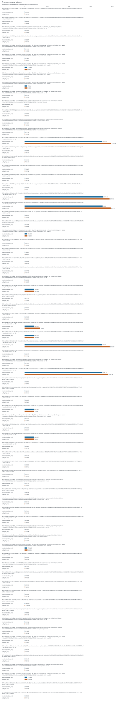

Recorded run profile: paper. Results describe the measured platform and dataset recorded on each row. Desktop and loopback smoke runs are not Raspberry Pi or remote-host evidence. Synthetic fixtures are not real chain workloads. Ethereum RPC JSON replay does not validate native finality or integrate sharded consensus. Verifier-local offloading is not compression or a system-wide storage saving; provider state must be counted separately.
Valid records: 483. Successful: 480. Failed: 0. Malformed lines: 0.
Exactly seven whole-comment rows; evidence status does not assert reviewer acceptance.
| comment_id | whole_comment_scope | status | available_evidence | missing_evidence |
|---|---|---|---|---|
| R1-1 | Storage accounting and provider-side overhead | measured_here | storage_accounting; provider_latency; filesystem | |
| R1-2 | IoT deployment and blockchain integration scope | partial | memory_pressure; filesystem | real_pi_platform; remote_tcp; energy; service_disconnect; native_finality |
| R2-1 | Evaluation on constrained hardware | partial | memory_pressure | real_pi_platform |
| R2-2 | CPU, RAM and latency measurements | measured_here | cpu; ram; local_latency | |
| R2-3 | Presentation of experimental evidence | measured_here | presentation | |
| R2-4 | Reproducible repository, real data and hardware evidence | partial | repository_metadata; real_data | real_pi_platform |
| R2-8 | Real-world benchmarking | partial | real_data | real_pi_platform |
| evidence | status | reason |
|---|---|---|
| real_pi_platform | missing | No successful measurement is backed by a Raspberry Pi system device model; a platform label or desktop smoke run is insufficient. |
| remote_tcp | missing | No successful TCP measurement records distinct client/server hostnames or device IDs; loopback does not establish a remote deployment. |
| real_data | measured_here | Real-data measurements record source metadata and an input hash. |
| energy | missing | No measured energy in joules is present; CPU time and estimated power are not energy measurements. |
| filesystem | measured_here | Storage experiment includes actual allocated/filesystem byte measurements. |
| memory_pressure | measured_here | Memory-pressure experiment records an enforced limit or pressure configuration. |
| service_disconnect | missing | No observed service-disconnection test on distinct TCP hosts is present; in-process fault injection does not establish this evidence. |
| native_finality | missing | Native finality and sharded-consensus integration are absent. Ethereum RPC JSON replay is an ingestion/verification adapter, not native finality validation or consensus integration. |
| storage_accounting | measured_here | Verifier and provider byte accounting is available. |
| provider_latency | measured_here | Provider latency is measured. |
| cpu | measured_here | CPU-time or CPU-utilization metrics are present. |
| ram | measured_here | Resident/peak memory metrics are present. |
| local_latency | measured_here | Local latency metrics are present. |
| presentation | measured_here | This run provides machine-readable tables, escaped LaTeX and an offline report; manuscript revision and reviewer acceptance are not assessed. |
| repository_metadata | measured_here | Run metadata records a code version and configuration; public repository availability is not verified. |
| experiment | records | successful |
|---|---|---|
| original_e2 | 40 | 40 |
| local | 75 | 75 |
| archive_retrieval | 15 | 15 |
| network | 1 | 0 |
| storage | 75 | 75 |
| provider | 75 | 75 |
| migration | 60 | 60 |
| integrity | 75 | 75 |
| memory_pressure | 60 | 60 |
| disconnect | 0 | 0 |
| energy_workload | 5 | 5 |
| energy | 1 | 0 |
| real_dataset | 0 | 0 |
| native_finality | 1 | 0 |
Individual records; no pooling or inferred confidence intervals.

| experiment | case_id | role | platform | data_kind | status | metrics | metrics.accept_median_ms | metrics.accepted | metrics.accounting_scope | metrics.active_mode | metrics.baseline_rss_bytes | metrics.block_bytes | metrics.blocks | metrics.canonical_envelope_overhead_bytes | metrics.case_wall_ns | metrics.cases | metrics.certificate_bytes | metrics.checks.active_mode_correct | metrics.checks.active_state_valid | metrics.checks.allowed_metadata_difference_only | metrics.checks.anchor_bytes_equal | metrics.checks.dataset_matches_case | metrics.checks.injected_exit_code_matches | metrics.checks.no_partial_metadata | metrics.checks.no_pending_journals | metrics.checks.post_queries_accept | metrics.checks.pre_queries_accept | metrics.checks.protected_bytes_equal | metrics.checks.recovery_checks_pass | metrics.checks.root_equal | metrics.child_exit_code | metrics.cpu_ms_per_query | metrics.crash_cases | metrics.crash_failures | metrics.descriptor_serialized_bytes | metrics.epoch_substitution_rejected | metrics.expected_active_mode | metrics.failures | metrics.fault | metrics.hash_calls | metrics.hash_calls.internal | metrics.hash_calls.leaf | metrics.hash_calls.total | metrics.honest | metrics.io | metrics.io.bytes_read | metrics.io.bytes_written | metrics.logical_payload_bytes | metrics.mean_json_body_bytes | metrics.measured_duration_seconds | metrics.median_ms | metrics.memory_limit_mib | metrics.metadata_bytes_written | metrics.metadata_differences | metrics.migration_cpu_ns | metrics.migration_wall_ns | metrics.mode | metrics.mode_substitution_rejected | metrics.n | metrics.n_prime | metrics.operational_total_bytes | metrics.p95_ms | metrics.p99_ms | metrics.padded_blocks | metrics.paper_descriptor_bytes | metrics.payload_read_bytes_per_query | metrics.payload_tamper_rejected | metrics.peak_rss_bytes | metrics.post_query_audit.all_accept | metrics.post_query_audit.exact_leaf_resolver_failures | metrics.post_query_audit.exact_leaf_resolver_positions_checked | metrics.post_query_audit.failures | metrics.post_query_audit.mode | metrics.post_query_audit.positions_checked | metrics.pre_query_audit.all_accept | metrics.pre_query_audit.exact_leaf_resolver_failures | metrics.pre_query_audit.exact_leaf_resolver_positions_checked | metrics.pre_query_audit.failures | metrics.pre_query_audit.mode | metrics.pre_query_audit.positions_checked | metrics.pressure_buffer_bytes | metrics.protected_sha256_after | metrics.protected_sha256_before | metrics.provider_allocated_bytes | metrics.provider_cpu_ms_per_query | metrics.provider_file_count | metrics.provider_internal_cached_support_bytes | metrics.provider_payload_bytes | metrics.provider_support_bytes | metrics.provider_total_bytes | metrics.queries | metrics.queries_equivalent | metrics.raw_opaque_payload_bytes | metrics.recovery | metrics.recovery.active_mode | metrics.recovery.active_mode_correct | metrics.recovery.active_state_valid | metrics.recovery.allowed_metadata_difference_only | metrics.recovery.expected_active_mode | metrics.recovery.journals_found | metrics.recovery.metadata_differences | metrics.recovery.mixed_state_detected | metrics.recovery.protected_bytes_equal | metrics.recovery.recovery_ns | metrics.recovery.recovery_status | metrics.recovery.temporary_metadata_files | metrics.recovery.unreferenced_target_objects_cleaned | metrics.repeat | metrics.root_hex_after | metrics.root_hex_before | metrics.root_hex_tamper_rejected | metrics.root_preserved | metrics.rss_bytes | metrics.setup_allocated_bytes | metrics.setup_file_count | metrics.setup_payload_bytes | metrics.setup_signing_key_bytes | metrics.setup_support_bytes | metrics.setup_total_bytes | metrics.shard_substitution_rejected | metrics.signature_hex_tamper_rejected | metrics.snapshot_after.io.cancelled_write_bytes | metrics.snapshot_after.io.rchar | metrics.snapshot_after.io.read_bytes | metrics.snapshot_after.io.syscr | metrics.snapshot_after.io.syscw | metrics.snapshot_after.io.wchar | metrics.snapshot_after.io.write_bytes | metrics.snapshot_after.major_faults | metrics.snapshot_after.minor_faults | metrics.snapshot_after.peak_rss_bytes | metrics.snapshot_after.process_cpu_ns | metrics.snapshot_after.rss_bytes | metrics.snapshot_after.temp_C | metrics.snapshot_after.throttled | metrics.snapshot_after.timestamp_unix_ns | metrics.snapshot_after.timestamp_utc | metrics.snapshot_after.utc_ns | metrics.snapshot_before.io.cancelled_write_bytes | metrics.snapshot_before.io.rchar | metrics.snapshot_before.io.read_bytes | metrics.snapshot_before.io.syscr | metrics.snapshot_before.io.syscw | metrics.snapshot_before.io.wchar | metrics.snapshot_before.io.write_bytes | metrics.snapshot_before.major_faults | metrics.snapshot_before.minor_faults | metrics.snapshot_before.peak_rss_bytes | metrics.snapshot_before.process_cpu_ns | metrics.snapshot_before.rss_bytes | metrics.snapshot_before.temp_C | metrics.snapshot_before.throttled | metrics.snapshot_before.timestamp_unix_ns | metrics.snapshot_before.timestamp_utc | metrics.snapshot_before.utc_ns | metrics.successful_clean_repeats | metrics.support_metadata_bytes | metrics.support_read_bytes_per_query | metrics.target_serialized_bytes | metrics.temporary_disk_bytes | metrics.total_materialized_bytes | metrics.transition | metrics.trial_kind | metrics.verifier_allocated_bytes | metrics.verifier_file_count | metrics.verifier_payload_bytes | metrics.verifier_support_bytes | metrics.verifier_total_bytes | metrics.witness_generate_median_ms | metrics.worker_including_startup_wall_ns | metrics.worker_resources.major_faults | metrics.worker_resources.minor_faults | metrics.worker_resources.peak_rss_kib | metrics.worker_resources.scope | metrics.write_amplification | platform.architecture | platform.cpu_count | platform.filesystem.block_size | platform.filesystem.blocks_available | platform.filesystem.device | platform.filesystem.filesystem_type | platform.filesystem.fragment_size | platform.filesystem.mount_point | platform.filesystem.path | platform.hostname | platform.kernel | platform.machine_id | platform.machine_id_source | platform.mem_total_bytes | platform.network.available | platform.network.interfaces | platform.openssl | platform.os.id | platform.os.name | platform.os.pretty_name | platform.os.version | platform.os.version_id | platform.pi_model | platform.platform | platform.python | platform.python_implementation | platform.result_storage.block_device | platform.result_storage.device | platform.result_storage.filesystem | platform.result_storage.free_bytes | platform.result_storage.mountpoint | platform.result_storage.path | platform.result_storage.total_bytes | platform.result_storage.used_bytes | platform.storage.block_device | platform.storage.device | platform.storage.filesystem | platform.storage.free_bytes | platform.storage.mountpoint | platform.storage.path | platform.storage.total_bytes | platform.storage.used_bytes | provenance.actual_chain_integration_tested | provenance.adapter_revision | provenance.cache_policy | provenance.cache_state | provenance.chain_id | provenance.client_machine_id | provenance.cpu_scope | provenance.crash_model | provenance.dataset_id | provenance.dataset_seed | provenance.dataset_sha256 | provenance.dataset_source.acquired_at_utc | provenance.dataset_source.boundary_snapshots_rechecked | provenance.dataset_source.chain_id_rechecked | provenance.dataset_source.finality_basis | provenance.dataset_source.finalized_head_after.hash | provenance.dataset_source.finalized_head_after.number | provenance.dataset_source.finalized_head_after.parentHash | provenance.dataset_source.full_transactions | provenance.dataset_source.generator | provenance.dataset_source.initial_finalized_head.hash | provenance.dataset_source.initial_finalized_head.number | provenance.dataset_source.initial_finalized_head.parentHash | provenance.dataset_source.payload_encoding | provenance.dataset_source.rpc_methods | provenance.dataset_source.source | provenance.ext_backend | provenance.implementation | provenance.io_scope | provenance.measurement_scope | provenance.memory_limit_kind | provenance.memory_limit_mib | provenance.memory_scope | provenance.mode | provenance.n | provenance.native_finality_verified | provenance.network_kind | provenance.physical_power_loss_tested | provenance.pressure_mib | provenance.profile | provenance.provider_case_id | provenance.queries | provenance.query_equivalence_scope | provenance.raw_e6_result | provenance.reason | provenance.retained_workspaces | provenance.retention_scope | provenance.run_directory | provenance.sample_count | provenance.scheme | provenance.scope | provenance.selected_count | provenance.selected_payload_sha256 | provenance.selection | provenance.server_machine_id | provenance.snapshot_scope | provenance.source | provenance.source_relative_path | provenance.source_sha256.__init__.py | provenance.source_sha256.__main__.py | provenance.source_sha256.analysis.py | provenance.source_sha256.catalog.py | provenance.source_sha256.cli.py | provenance.source_sha256.config.py | provenance.source_sha256.crypto.py | provenance.source_sha256.dataset.py | provenance.source_sha256.execution.py | provenance.source_sha256.merkle.py | provenance.source_sha256.migration.py | provenance.source_sha256.policy.py | provenance.source_sha256.state.py | provenance.source_sha256.svg_base.py | provenance.source_sha256.util.py | provenance.storage_scope | provenance.summary_scope | provenance.timing_scope | provenance.transport | provenance.trial | provenance.trust_anchor | provenance.warmup | provenance.wire_format | provenance.worker_log | provenance.workload_seed | provenance.workspace_cleanup_policy |
|---|---|---|---|---|---|---|---|---|---|---|---|---|---|---|---|---|---|---|---|---|---|---|---|---|---|---|---|---|---|---|---|---|---|---|---|---|---|---|---|---|---|---|---|---|---|---|---|---|---|---|---|---|---|---|---|---|---|---|---|---|---|---|---|---|---|---|---|---|---|---|---|---|---|---|---|---|---|---|---|---|---|---|---|---|---|---|---|---|---|---|---|---|---|---|---|---|---|---|---|---|---|---|---|---|---|---|---|---|---|---|---|---|---|---|---|---|---|---|---|---|---|---|---|---|---|---|---|---|---|---|---|---|---|---|---|---|---|---|---|---|---|---|---|---|---|---|---|---|---|---|---|---|---|---|---|---|---|---|---|---|---|---|---|---|---|---|---|---|---|---|---|---|---|---|---|---|---|---|---|---|---|---|---|---|---|---|---|---|---|---|---|---|---|---|---|---|---|---|---|---|---|---|---|---|---|---|---|---|---|---|---|---|---|---|---|---|---|---|---|---|---|---|---|---|---|---|---|---|---|---|---|---|---|---|---|---|---|---|---|---|---|---|---|---|---|---|---|---|---|---|---|---|---|---|---|---|---|---|---|---|---|---|---|---|---|---|---|---|---|---|---|---|---|---|---|---|---|---|---|---|---|---|---|---|---|---|---|---|---|---|---|---|---|---|---|---|---|---|---|---|---|
| storage | 0000-synthetic-n512-full-t2-storage | hpc | synthetic | ok | regular file lengths; allocated file blocks also reported; excludes directories, inodes, journal, and OS cache | 18432 | 253 | 908 | full | 512 | 512 | 1101397 | 126 | 12681216 | 516 | 0 | 1067008 | 32736 | 1100489 | 1048576 | 24576 | 1 | 0 | 32 | 0 | 32 | 174 | 1101429 | 24576 | 1 | 0 | 0 | 908 | x86_64 | 96 | ltu-hpc-2.latrobe.edu.au | 4.18.0-553.120.1.el8_10.x86_64 | fd4458b75367f59ff7c09494ea573e5e7a5263a2584218cc99f37f023a3aa2d8 | linux_machine_id_sha256 | 403783344128 | True | [{"is_wireless": false, "name": "enp63s0", "operstate": "up"}, {"is_wireless": false, "name": "lo", "operstate": "unknown"}] | OpenSSL 1.1.1k FIPS 25 Mar 2021 | rhel | Red Hat Enterprise Linux | Red Hat Enterprise Linux 8.10 (Ootpa) | 8.10 (Ootpa) | 8.10 | None | Linux | 3.11.5 | CPython | None | None | nfs4 | 530464112640 | /data/group | /data/group/xulab/home/zxu/msi_pi_suite/outputs/hpc_real_422175 | 536870912000 | 6406799360 | None | None | nfs4 | 530464112640 | /data/group | /data/group/xulab/home/zxu/msi_pi_suite | 536870912000 | 6406799360 | OS page cache uncontrolled; warm query repetition; no cold-flash claim | None | fd4458b75367f59ff7c09494ea573e5e7a5263a2584218cc99f37f023a3aa2d8 | b016c29f4de90f5b1cf3a216da5a605c33b87f5b41cbb2b6bd5568949c797cef | sha256-counter-v1 | synthetic | full | 512 | False | unspecified | paper | None | 512 | 399484347219683dce319075ea78057e1e8ffcce90859b513ec913109fec9398 | contiguous prefix | fd4458b75367f59ff7c09494ea573e5e7a5263a2584218cc99f37f023a3aa2d8 | logical role ownership; experiment fixtures and setup reported separately | local | 2 | experiment-generated Ed25519 descriptor provisioned at setup | json proof fixture | ||||||||||||||||||||||||||||||||||||||||||||||||||||||||||||||||||||||||||||||||||||||||||||||||||||||||||||||||||||||||||||||||||||||||||||||||||||||||||||||||||||||||||||||||||||||||||||||||||||||||||||||||||||
| provider | 0000-synthetic-n512-full-t2-provider | provider | synthetic | ok | 6.5808695 | 7.318573 | 2084.0 | 0.31202625 | 16 | None | 288.0 | 2.6025745000000002 | x86_64 | 96 | ltu-hpc-2.latrobe.edu.au | 4.18.0-553.120.1.el8_10.x86_64 | fd4458b75367f59ff7c09494ea573e5e7a5263a2584218cc99f37f023a3aa2d8 | linux_machine_id_sha256 | 403783344128 | True | [{"is_wireless": false, "name": "enp63s0", "operstate": "up"}, {"is_wireless": false, "name": "lo", "operstate": "unknown"}] | OpenSSL 1.1.1k FIPS 25 Mar 2021 | rhel | Red Hat Enterprise Linux | Red Hat Enterprise Linux 8.10 (Ootpa) | 8.10 (Ootpa) | 8.10 | None | Linux | 3.11.5 | CPython | None | None | nfs4 | 530464112640 | /data/group | /data/group/xulab/home/zxu/msi_pi_suite/outputs/hpc_real_422175 | 536870912000 | 6406799360 | None | None | nfs4 | 530464112640 | /data/group | /data/group/xulab/home/zxu/msi_pi_suite | 536870912000 | 6406799360 | OS page cache uncontrolled; warm query repetition; no cold-flash claim | None | fd4458b75367f59ff7c09494ea573e5e7a5263a2584218cc99f37f023a3aa2d8 | b016c29f4de90f5b1cf3a216da5a605c33b87f5b41cbb2b6bd5568949c797cef | sha256-counter-v1 | synthetic | full | 512 | False | unspecified | paper | None | 16 | 512 | 399484347219683dce319075ea78057e1e8ffcce90859b513ec913109fec9398 | contiguous prefix | fd4458b75367f59ff7c09494ea573e5e7a5263a2584218cc99f37f023a3aa2d8 | proof_fixture_preparation | logical role ownership; experiment fixtures and setup reported separately | payload/support read and proof construction; JSON serialization and network excluded | local | 2 | experiment-generated Ed25519 descriptor provisioned at setup | json proof fixture | ||||||||||||||||||||||||||||||||||||||||||||||||||||||||||||||||||||||||||||||||||||||||||||||||||||||||||||||||||||||||||||||||||||||||||||||||||||||||||||||||||||||||||||||||||||||||||||||||||||||||||||||||||||||||||||||||||||||
| local | 0000-synthetic-n512-full-t2-local | hpc | synthetic | ok | 0.174078 | 200 | 22728704 | 0.174585305 | 0 | 0.296357074 | 0.17458849999999998 | 0 | 0.1948183 | 0.20252921000000002 | 111439872 | 0 | 200 | 23121920 | x86_64 | 96 | ltu-hpc-2.latrobe.edu.au | 4.18.0-553.120.1.el8_10.x86_64 | fd4458b75367f59ff7c09494ea573e5e7a5263a2584218cc99f37f023a3aa2d8 | linux_machine_id_sha256 | 403783344128 | True | [{"is_wireless": false, "name": "enp63s0", "operstate": "up"}, {"is_wireless": false, "name": "lo", "operstate": "unknown"}] | OpenSSL 1.1.1k FIPS 25 Mar 2021 | rhel | Red Hat Enterprise Linux | Red Hat Enterprise Linux 8.10 (Ootpa) | 8.10 (Ootpa) | 8.10 | None | Linux | 3.11.5 | CPython | None | None | nfs4 | 530464112640 | /data/group | /data/group/xulab/home/zxu/msi_pi_suite/outputs/hpc_real_422175 | 536870912000 | 6406799360 | None | None | nfs4 | 530464112640 | /data/group | /data/group/xulab/home/zxu/msi_pi_suite | 536870912000 | 6406799360 | OS page cache uncontrolled; warm query repetition; no cold-flash claim | None | fd4458b75367f59ff7c09494ea573e5e7a5263a2584218cc99f37f023a3aa2d8 | verifier acceptance CPU only | b016c29f4de90f5b1cf3a216da5a605c33b87f5b41cbb2b6bd5568949c797cef | sha256-counter-v1 | synthetic | persistent_adapter_original_crypto | none | 0 | fresh worker, one live response, optional pressure buffer; fixtures excluded | full | 512 | False | unspecified | 0 | paper | None | 512 | 399484347219683dce319075ea78057e1e8ffcce90859b513ec913109fec9398 | contiguous prefix | fd4458b75367f59ff7c09494ea573e5e7a5263a2584218cc99f37f023a3aa2d8 | pool | logical role ownership; experiment fixtures and setup reported separately | pre-delivered response acceptance only | local | 2 | experiment-generated Ed25519 descriptor provisioned at setup | json proof fixture | |||||||||||||||||||||||||||||||||||||||||||||||||||||||||||||||||||||||||||||||||||||||||||||||||||||||||||||||||||||||||||||||||||||||||||||||||||||||||||||||||||||||||||||||||||||||||||||||||||||||||||||||||||||||||||
| memory_pressure | 0000-synthetic-n512-full-t2-memory_pressure | hpc | synthetic | ok | 0.17219099999999998 | 200 | 90103808 | 0.17283188 | 0 | 0.298240901 | 0.172608 | 256 | 0.18431424999999993 | 0.20366644999999986 | 111439872 | 67108864 | 200 | 90103808 | x86_64 | 96 | ltu-hpc-2.latrobe.edu.au | 4.18.0-553.120.1.el8_10.x86_64 | fd4458b75367f59ff7c09494ea573e5e7a5263a2584218cc99f37f023a3aa2d8 | linux_machine_id_sha256 | 403783344128 | True | [{"is_wireless": false, "name": "enp63s0", "operstate": "up"}, {"is_wireless": false, "name": "lo", "operstate": "unknown"}] | OpenSSL 1.1.1k FIPS 25 Mar 2021 | rhel | Red Hat Enterprise Linux | Red Hat Enterprise Linux 8.10 (Ootpa) | 8.10 (Ootpa) | 8.10 | None | Linux | 3.11.5 | CPython | None | None | nfs4 | 530464112640 | /data/group | /data/group/xulab/home/zxu/msi_pi_suite/outputs/hpc_real_422175 | 536870912000 | 6406799360 | None | None | nfs4 | 530464112640 | /data/group | /data/group/xulab/home/zxu/msi_pi_suite | 536870912000 | 6406799360 | OS page cache uncontrolled; warm query repetition; no cold-flash claim | None | fd4458b75367f59ff7c09494ea573e5e7a5263a2584218cc99f37f023a3aa2d8 | verifier acceptance CPU only | b016c29f4de90f5b1cf3a216da5a605c33b87f5b41cbb2b6bd5568949c797cef | sha256-counter-v1 | synthetic | persistent_adapter_original_crypto | RLIMIT_AS virtual address space | 256 | fresh worker, one live response, optional pressure buffer; fixtures excluded | full | 512 | False | unspecified | 64 | paper | None | 512 | 399484347219683dce319075ea78057e1e8ffcce90859b513ec913109fec9398 | contiguous prefix | fd4458b75367f59ff7c09494ea573e5e7a5263a2584218cc99f37f023a3aa2d8 | pool | logical role ownership; experiment fixtures and setup reported separately | pre-delivered response acceptance only | local | 2 | experiment-generated Ed25519 descriptor provisioned at setup | json proof fixture | |||||||||||||||||||||||||||||||||||||||||||||||||||||||||||||||||||||||||||||||||||||||||||||||||||||||||||||||||||||||||||||||||||||||||||||||||||||||||||||||||||||||||||||||||||||||||||||||||||||||||||||||||||||||||||
| integrity | 0000-synthetic-n512-full-t2-integrity | hpc | synthetic | ok | 7 | True | 0 | True | True | True | True | True | True | x86_64 | 96 | ltu-hpc-2.latrobe.edu.au | 4.18.0-553.120.1.el8_10.x86_64 | fd4458b75367f59ff7c09494ea573e5e7a5263a2584218cc99f37f023a3aa2d8 | linux_machine_id_sha256 | 403783344128 | True | [{"is_wireless": false, "name": "enp63s0", "operstate": "up"}, {"is_wireless": false, "name": "lo", "operstate": "unknown"}] | OpenSSL 1.1.1k FIPS 25 Mar 2021 | rhel | Red Hat Enterprise Linux | Red Hat Enterprise Linux 8.10 (Ootpa) | 8.10 (Ootpa) | 8.10 | None | Linux | 3.11.5 | CPython | None | None | nfs4 | 530464112640 | /data/group | /data/group/xulab/home/zxu/msi_pi_suite/outputs/hpc_real_422175 | 536870912000 | 6406799360 | None | None | nfs4 | 530464112640 | /data/group | /data/group/xulab/home/zxu/msi_pi_suite | 536870912000 | 6406799360 | OS page cache uncontrolled; warm query repetition; no cold-flash claim | None | fd4458b75367f59ff7c09494ea573e5e7a5263a2584218cc99f37f023a3aa2d8 | b016c29f4de90f5b1cf3a216da5a605c33b87f5b41cbb2b6bd5568949c797cef | sha256-counter-v1 | synthetic | full | 512 | False | unspecified | paper | None | finite adversarial regression cases, not a cryptographic security bound | 512 | 399484347219683dce319075ea78057e1e8ffcce90859b513ec913109fec9398 | contiguous prefix | fd4458b75367f59ff7c09494ea573e5e7a5263a2584218cc99f37f023a3aa2d8 | logical role ownership; experiment fixtures and setup reported separately | local | 2 | experiment-generated Ed25519 descriptor provisioned at setup | json proof fixture | |||||||||||||||||||||||||||||||||||||||||||||||||||||||||||||||||||||||||||||||||||||||||||||||||||||||||||||||||||||||||||||||||||||||||||||||||||||||||||||||||||||||||||||||||||||||||||||||||||||||||||||||||||||||||||||||||||||||
| storage | 0001-synthetic-n4096-ext_cached-t1-storage | hpc | synthetic | ok | regular file lengths; allocated file blocks also reported; excludes directories, inodes, journal, and OS cache | 147456 | 253 | 919 | ext_cached | 4096 | 4096 | 8799863 | 126 | 100761600 | 4100 | 262112 | 8536064 | 262112 | 8798944 | 8388608 | 24576 | 1 | 0 | 32 | 0 | 32 | 189 | 8799895 | 24576 | 1 | 0 | 0 | 919 | x86_64 | 96 | ltu-hpc-2.latrobe.edu.au | 4.18.0-553.120.1.el8_10.x86_64 | fd4458b75367f59ff7c09494ea573e5e7a5263a2584218cc99f37f023a3aa2d8 | linux_machine_id_sha256 | 403783344128 | True | [{"is_wireless": false, "name": "enp63s0", "operstate": "up"}, {"is_wireless": false, "name": "lo", "operstate": "unknown"}] | OpenSSL 1.1.1k FIPS 25 Mar 2021 | rhel | Red Hat Enterprise Linux | Red Hat Enterprise Linux 8.10 (Ootpa) | 8.10 (Ootpa) | 8.10 | None | Linux | 3.11.5 | CPython | None | None | nfs4 | 530464112640 | /data/group | /data/group/xulab/home/zxu/msi_pi_suite/outputs/hpc_real_422175 | 536870912000 | 6406799360 | None | None | nfs4 | 530464112640 | /data/group | /data/group/xulab/home/zxu/msi_pi_suite | 536870912000 | 6406799360 | OS page cache uncontrolled; warm query repetition; no cold-flash claim | None | fd4458b75367f59ff7c09494ea573e5e7a5263a2584218cc99f37f023a3aa2d8 | b016c29f4de90f5b1cf3a216da5a605c33b87f5b41cbb2b6bd5568949c797cef | sha256-counter-v1 | synthetic | ext_cached | 4096 | False | unspecified | paper | None | 4096 | 0687bb27f05141a424b31da9247a1c02625c10a06caaa5ff34a33daeb97eabec | contiguous prefix | fd4458b75367f59ff7c09494ea573e5e7a5263a2584218cc99f37f023a3aa2d8 | logical role ownership; experiment fixtures and setup reported separately | local | 1 | experiment-generated Ed25519 descriptor provisioned at setup | json proof fixture | ||||||||||||||||||||||||||||||||||||||||||||||||||||||||||||||||||||||||||||||||||||||||||||||||||||||||||||||||||||||||||||||||||||||||||||||||||||||||||||||||||||||||||||||||||||||||||||||||||||||||||||||||||||
| provider | 0001-synthetic-n4096-ext_cached-t1-provider | provider | synthetic | ok | 6.880659 | 7.6458575 | 2084.0 | 0.330109 | 16 | None | 384.0 | 2.656435 | x86_64 | 96 | ltu-hpc-2.latrobe.edu.au | 4.18.0-553.120.1.el8_10.x86_64 | fd4458b75367f59ff7c09494ea573e5e7a5263a2584218cc99f37f023a3aa2d8 | linux_machine_id_sha256 | 403783344128 | True | [{"is_wireless": false, "name": "enp63s0", "operstate": "up"}, {"is_wireless": false, "name": "lo", "operstate": "unknown"}] | OpenSSL 1.1.1k FIPS 25 Mar 2021 | rhel | Red Hat Enterprise Linux | Red Hat Enterprise Linux 8.10 (Ootpa) | 8.10 (Ootpa) | 8.10 | None | Linux | 3.11.5 | CPython | None | None | nfs4 | 530464112640 | /data/group | /data/group/xulab/home/zxu/msi_pi_suite/outputs/hpc_real_422175 | 536870912000 | 6406799360 | None | None | nfs4 | 530464112640 | /data/group | /data/group/xulab/home/zxu/msi_pi_suite | 536870912000 | 6406799360 | OS page cache uncontrolled; warm query repetition; no cold-flash claim | None | fd4458b75367f59ff7c09494ea573e5e7a5263a2584218cc99f37f023a3aa2d8 | b016c29f4de90f5b1cf3a216da5a605c33b87f5b41cbb2b6bd5568949c797cef | sha256-counter-v1 | synthetic | ext_cached | 4096 | False | unspecified | paper | None | 16 | 4096 | 0687bb27f05141a424b31da9247a1c02625c10a06caaa5ff34a33daeb97eabec | contiguous prefix | fd4458b75367f59ff7c09494ea573e5e7a5263a2584218cc99f37f023a3aa2d8 | proof_fixture_preparation | logical role ownership; experiment fixtures and setup reported separately | payload/support read and proof construction; JSON serialization and network excluded | local | 1 | experiment-generated Ed25519 descriptor provisioned at setup | json proof fixture | ||||||||||||||||||||||||||||||||||||||||||||||||||||||||||||||||||||||||||||||||||||||||||||||||||||||||||||||||||||||||||||||||||||||||||||||||||||||||||||||||||||||||||||||||||||||||||||||||||||||||||||||||||||||||||||||||||||||
| local | 0001-synthetic-n4096-ext_cached-t1-local | hpc | synthetic | ok | 0.1770475 | 200 | 22675456 | 0.177549835 | 0 | 0.310326789 | 0.177541 | 0 | 0.1826347 | 0.20708689999999952 | 119238656 | 0 | 200 | 23007232 | x86_64 | 96 | ltu-hpc-2.latrobe.edu.au | 4.18.0-553.120.1.el8_10.x86_64 | fd4458b75367f59ff7c09494ea573e5e7a5263a2584218cc99f37f023a3aa2d8 | linux_machine_id_sha256 | 403783344128 | True | [{"is_wireless": false, "name": "enp63s0", "operstate": "up"}, {"is_wireless": false, "name": "lo", "operstate": "unknown"}] | OpenSSL 1.1.1k FIPS 25 Mar 2021 | rhel | Red Hat Enterprise Linux | Red Hat Enterprise Linux 8.10 (Ootpa) | 8.10 (Ootpa) | 8.10 | None | Linux | 3.11.5 | CPython | None | None | nfs4 | 530464112640 | /data/group | /data/group/xulab/home/zxu/msi_pi_suite/outputs/hpc_real_422175 | 536870912000 | 6406799360 | None | None | nfs4 | 530464112640 | /data/group | /data/group/xulab/home/zxu/msi_pi_suite | 536870912000 | 6406799360 | OS page cache uncontrolled; warm query repetition; no cold-flash claim | None | fd4458b75367f59ff7c09494ea573e5e7a5263a2584218cc99f37f023a3aa2d8 | verifier acceptance CPU only | b016c29f4de90f5b1cf3a216da5a605c33b87f5b41cbb2b6bd5568949c797cef | sha256-counter-v1 | synthetic | persistent_adapter_original_crypto | none | 0 | fresh worker, one live response, optional pressure buffer; fixtures excluded | ext_cached | 4096 | False | unspecified | 0 | paper | None | 4096 | 0687bb27f05141a424b31da9247a1c02625c10a06caaa5ff34a33daeb97eabec | contiguous prefix | fd4458b75367f59ff7c09494ea573e5e7a5263a2584218cc99f37f023a3aa2d8 | pool | logical role ownership; experiment fixtures and setup reported separately | pre-delivered response acceptance only | local | 1 | experiment-generated Ed25519 descriptor provisioned at setup | json proof fixture | |||||||||||||||||||||||||||||||||||||||||||||||||||||||||||||||||||||||||||||||||||||||||||||||||||||||||||||||||||||||||||||||||||||||||||||||||||||||||||||||||||||||||||||||||||||||||||||||||||||||||||||||||||||||||||
| memory_pressure | 0001-synthetic-n4096-ext_cached-t1-memory_pressure | hpc | synthetic | ok | 0.17688500000000001 | 200 | 89874432 | 0.177465545 | 0 | 0.313518073 | 0.1772535 | 256 | 0.18285425 | 0.1906521799999994 | 119238656 | 67108864 | 200 | 89874432 | x86_64 | 96 | ltu-hpc-2.latrobe.edu.au | 4.18.0-553.120.1.el8_10.x86_64 | fd4458b75367f59ff7c09494ea573e5e7a5263a2584218cc99f37f023a3aa2d8 | linux_machine_id_sha256 | 403783344128 | True | [{"is_wireless": false, "name": "enp63s0", "operstate": "up"}, {"is_wireless": false, "name": "lo", "operstate": "unknown"}] | OpenSSL 1.1.1k FIPS 25 Mar 2021 | rhel | Red Hat Enterprise Linux | Red Hat Enterprise Linux 8.10 (Ootpa) | 8.10 (Ootpa) | 8.10 | None | Linux | 3.11.5 | CPython | None | None | nfs4 | 530464112640 | /data/group | /data/group/xulab/home/zxu/msi_pi_suite/outputs/hpc_real_422175 | 536870912000 | 6406799360 | None | None | nfs4 | 530464112640 | /data/group | /data/group/xulab/home/zxu/msi_pi_suite | 536870912000 | 6406799360 | OS page cache uncontrolled; warm query repetition; no cold-flash claim | None | fd4458b75367f59ff7c09494ea573e5e7a5263a2584218cc99f37f023a3aa2d8 | verifier acceptance CPU only | b016c29f4de90f5b1cf3a216da5a605c33b87f5b41cbb2b6bd5568949c797cef | sha256-counter-v1 | synthetic | persistent_adapter_original_crypto | RLIMIT_AS virtual address space | 256 | fresh worker, one live response, optional pressure buffer; fixtures excluded | ext_cached | 4096 | False | unspecified | 64 | paper | None | 4096 | 0687bb27f05141a424b31da9247a1c02625c10a06caaa5ff34a33daeb97eabec | contiguous prefix | fd4458b75367f59ff7c09494ea573e5e7a5263a2584218cc99f37f023a3aa2d8 | pool | logical role ownership; experiment fixtures and setup reported separately | pre-delivered response acceptance only | local | 1 | experiment-generated Ed25519 descriptor provisioned at setup | json proof fixture | |||||||||||||||||||||||||||||||||||||||||||||||||||||||||||||||||||||||||||||||||||||||||||||||||||||||||||||||||||||||||||||||||||||||||||||||||||||||||||||||||||||||||||||||||||||||||||||||||||||||||||||||||||||||||||
| integrity | 0001-synthetic-n4096-ext_cached-t1-integrity | hpc | synthetic | ok | 7 | True | 0 | True | True | True | True | True | True | x86_64 | 96 | ltu-hpc-2.latrobe.edu.au | 4.18.0-553.120.1.el8_10.x86_64 | fd4458b75367f59ff7c09494ea573e5e7a5263a2584218cc99f37f023a3aa2d8 | linux_machine_id_sha256 | 403783344128 | True | [{"is_wireless": false, "name": "enp63s0", "operstate": "up"}, {"is_wireless": false, "name": "lo", "operstate": "unknown"}] | OpenSSL 1.1.1k FIPS 25 Mar 2021 | rhel | Red Hat Enterprise Linux | Red Hat Enterprise Linux 8.10 (Ootpa) | 8.10 (Ootpa) | 8.10 | None | Linux | 3.11.5 | CPython | None | None | nfs4 | 530464112640 | /data/group | /data/group/xulab/home/zxu/msi_pi_suite/outputs/hpc_real_422175 | 536870912000 | 6406799360 | None | None | nfs4 | 530464112640 | /data/group | /data/group/xulab/home/zxu/msi_pi_suite | 536870912000 | 6406799360 | OS page cache uncontrolled; warm query repetition; no cold-flash claim | None | fd4458b75367f59ff7c09494ea573e5e7a5263a2584218cc99f37f023a3aa2d8 | b016c29f4de90f5b1cf3a216da5a605c33b87f5b41cbb2b6bd5568949c797cef | sha256-counter-v1 | synthetic | ext_cached | 4096 | False | unspecified | paper | None | finite adversarial regression cases, not a cryptographic security bound | 4096 | 0687bb27f05141a424b31da9247a1c02625c10a06caaa5ff34a33daeb97eabec | contiguous prefix | fd4458b75367f59ff7c09494ea573e5e7a5263a2584218cc99f37f023a3aa2d8 | logical role ownership; experiment fixtures and setup reported separately | local | 1 | experiment-generated Ed25519 descriptor provisioned at setup | json proof fixture | |||||||||||||||||||||||||||||||||||||||||||||||||||||||||||||||||||||||||||||||||||||||||||||||||||||||||||||||||||||||||||||||||||||||||||||||||||||||||||||||||||||||||||||||||||||||||||||||||||||||||||||||||||||||||||||||||||||||
| storage | 0002-ethereum_rpc_finalized_json-n69-full-t3-storage | hpc | ethereum_rpc_finalized_json | ok | regular file lengths; allocated file blocks also reported; excludes directories, inodes, journal, and OS cache | 2484 | 253 | 910 | full | 69 | 128 | 33549759 | 126 | 1794048 | 73 | 0 | 33539949 | 8160 | 33548849 | 33537465 | 24576 | 1 | 0 | 32 | 0 | 32 | 166 | 33549791 | 24576 | 1 | 0 | 0 | 910 | x86_64 | 96 | ltu-hpc-2.latrobe.edu.au | 4.18.0-553.120.1.el8_10.x86_64 | fd4458b75367f59ff7c09494ea573e5e7a5263a2584218cc99f37f023a3aa2d8 | linux_machine_id_sha256 | 403783344128 | True | [{"is_wireless": false, "name": "enp63s0", "operstate": "up"}, {"is_wireless": false, "name": "lo", "operstate": "unknown"}] | OpenSSL 1.1.1k FIPS 25 Mar 2021 | rhel | Red Hat Enterprise Linux | Red Hat Enterprise Linux 8.10 (Ootpa) | 8.10 (Ootpa) | 8.10 | None | Linux | 3.11.5 | CPython | None | None | nfs4 | 530464112640 | /data/group | /data/group/xulab/home/zxu/msi_pi_suite/outputs/hpc_real_422175 | 536870912000 | 6406799360 | None | None | nfs4 | 530464112640 | /data/group | /data/group/xulab/home/zxu/msi_pi_suite | 536870912000 | 6406799360 | OS page cache uncontrolled; warm query repetition; no cold-flash claim | 1 | fd4458b75367f59ff7c09494ea573e5e7a5263a2584218cc99f37f023a3aa2d8 | 190ca4433f979dfd137e27c9ee04c0c9edd85b97027e9e1ff5322ba67f38fc60 | 2026-09-15T16:48:54.488349+00:00 | True | True | trusted RPC finalized tag; no native finality verification | 0x8abd9d3c538f12de779c556beb7f79370b66653f246ab854d9131be382b9d5ce | 25984095 | 0x477bc8b281580a46c3ec9252adeea485e33a4d7db371dc994408edf8fc09c6e8 | True | 0x9ad743d8c5200440339bfea0156398c1d1aa406635f7fe296c6deee2109cd29e | 25984063 | 0xd1d117cf5cc8aab3a9b168ada97339c4dbf6b0df95960f2b927fbec475f407a8 | canonical-json-utf8 | ["eth_chainId", "eth_getBlockByNumber"] | user-supplied Ethereum JSON-RPC endpoint; URL omitted | full | 69 | False | unspecified | paper | None | 69 | b30fd288c6fd25990944a24194c89dc578c58e3c230cc8ec278c49dc890c3c38 | contiguous prefix | fd4458b75367f59ff7c09494ea573e5e7a5263a2584218cc99f37f023a3aa2d8 | logical role ownership; experiment fixtures and setup reported separately | local | 3 | experiment-generated Ed25519 descriptor provisioned at setup | json proof fixture | ||||||||||||||||||||||||||||||||||||||||||||||||||||||||||||||||||||||||||||||||||||||||||||||||||||||||||||||||||||||||||||||||||||||||||||||||||||||||||||||||||||||||||||||||||||||||||||||||||||||||
| provider | 0002-ethereum_rpc_finalized_json-n69-full-t3-provider | provider | ethereum_rpc_finalized_json | ok | 9.23711 | 11.493400000000001 | 482754.1875 | 2.14186425 | 16 | None | 224.0 | 2.5977975 | x86_64 | 96 | ltu-hpc-2.latrobe.edu.au | 4.18.0-553.120.1.el8_10.x86_64 | fd4458b75367f59ff7c09494ea573e5e7a5263a2584218cc99f37f023a3aa2d8 | linux_machine_id_sha256 | 403783344128 | True | [{"is_wireless": false, "name": "enp63s0", "operstate": "up"}, {"is_wireless": false, "name": "lo", "operstate": "unknown"}] | OpenSSL 1.1.1k FIPS 25 Mar 2021 | rhel | Red Hat Enterprise Linux | Red Hat Enterprise Linux 8.10 (Ootpa) | 8.10 (Ootpa) | 8.10 | None | Linux | 3.11.5 | CPython | None | None | nfs4 | 530464112640 | /data/group | /data/group/xulab/home/zxu/msi_pi_suite/outputs/hpc_real_422175 | 536870912000 | 6406799360 | None | None | nfs4 | 530464112640 | /data/group | /data/group/xulab/home/zxu/msi_pi_suite | 536870912000 | 6406799360 | OS page cache uncontrolled; warm query repetition; no cold-flash claim | 1 | fd4458b75367f59ff7c09494ea573e5e7a5263a2584218cc99f37f023a3aa2d8 | 190ca4433f979dfd137e27c9ee04c0c9edd85b97027e9e1ff5322ba67f38fc60 | 2026-09-15T16:48:54.488349+00:00 | True | True | trusted RPC finalized tag; no native finality verification | 0x8abd9d3c538f12de779c556beb7f79370b66653f246ab854d9131be382b9d5ce | 25984095 | 0x477bc8b281580a46c3ec9252adeea485e33a4d7db371dc994408edf8fc09c6e8 | True | 0x9ad743d8c5200440339bfea0156398c1d1aa406635f7fe296c6deee2109cd29e | 25984063 | 0xd1d117cf5cc8aab3a9b168ada97339c4dbf6b0df95960f2b927fbec475f407a8 | canonical-json-utf8 | ["eth_chainId", "eth_getBlockByNumber"] | user-supplied Ethereum JSON-RPC endpoint; URL omitted | full | 69 | False | unspecified | paper | None | 16 | 69 | b30fd288c6fd25990944a24194c89dc578c58e3c230cc8ec278c49dc890c3c38 | contiguous prefix | fd4458b75367f59ff7c09494ea573e5e7a5263a2584218cc99f37f023a3aa2d8 | proof_fixture_preparation | logical role ownership; experiment fixtures and setup reported separately | payload/support read and proof construction; JSON serialization and network excluded | local | 3 | experiment-generated Ed25519 descriptor provisioned at setup | json proof fixture | ||||||||||||||||||||||||||||||||||||||||||||||||||||||||||||||||||||||||||||||||||||||||||||||||||||||||||||||||||||||||||||||||||||||||||||||||||||||||||||||||||||||||||||||||||||||||||||||||||||||||||||||||||||||||||
| local | 0002-ethereum_rpc_finalized_json-n69-full-t3-local | hpc | ethereum_rpc_finalized_json | ok | 3.601509 | 200 | 22515712 | 3.84503965 | 0 | 1.350934488 | 3.6022800000000004 | 0 | 7.4735318 | 7.52840815 | 144355328 | 0 | 200 | 25821184 | x86_64 | 96 | ltu-hpc-2.latrobe.edu.au | 4.18.0-553.120.1.el8_10.x86_64 | fd4458b75367f59ff7c09494ea573e5e7a5263a2584218cc99f37f023a3aa2d8 | linux_machine_id_sha256 | 403783344128 | True | [{"is_wireless": false, "name": "enp63s0", "operstate": "up"}, {"is_wireless": false, "name": "lo", "operstate": "unknown"}] | OpenSSL 1.1.1k FIPS 25 Mar 2021 | rhel | Red Hat Enterprise Linux | Red Hat Enterprise Linux 8.10 (Ootpa) | 8.10 (Ootpa) | 8.10 | None | Linux | 3.11.5 | CPython | None | None | nfs4 | 530464112640 | /data/group | /data/group/xulab/home/zxu/msi_pi_suite/outputs/hpc_real_422175 | 536870912000 | 6406799360 | None | None | nfs4 | 530464112640 | /data/group | /data/group/xulab/home/zxu/msi_pi_suite | 536870912000 | 6406799360 | OS page cache uncontrolled; warm query repetition; no cold-flash claim | 1 | fd4458b75367f59ff7c09494ea573e5e7a5263a2584218cc99f37f023a3aa2d8 | verifier acceptance CPU only | 190ca4433f979dfd137e27c9ee04c0c9edd85b97027e9e1ff5322ba67f38fc60 | 2026-09-15T16:48:54.488349+00:00 | True | True | trusted RPC finalized tag; no native finality verification | 0x8abd9d3c538f12de779c556beb7f79370b66653f246ab854d9131be382b9d5ce | 25984095 | 0x477bc8b281580a46c3ec9252adeea485e33a4d7db371dc994408edf8fc09c6e8 | True | 0x9ad743d8c5200440339bfea0156398c1d1aa406635f7fe296c6deee2109cd29e | 25984063 | 0xd1d117cf5cc8aab3a9b168ada97339c4dbf6b0df95960f2b927fbec475f407a8 | canonical-json-utf8 | ["eth_chainId", "eth_getBlockByNumber"] | user-supplied Ethereum JSON-RPC endpoint; URL omitted | persistent_adapter_original_crypto | none | 0 | fresh worker, one live response, optional pressure buffer; fixtures excluded | full | 69 | False | unspecified | 0 | paper | None | 69 | b30fd288c6fd25990944a24194c89dc578c58e3c230cc8ec278c49dc890c3c38 | contiguous prefix | fd4458b75367f59ff7c09494ea573e5e7a5263a2584218cc99f37f023a3aa2d8 | pool | logical role ownership; experiment fixtures and setup reported separately | pre-delivered response acceptance only | local | 3 | experiment-generated Ed25519 descriptor provisioned at setup | json proof fixture | |||||||||||||||||||||||||||||||||||||||||||||||||||||||||||||||||||||||||||||||||||||||||||||||||||||||||||||||||||||||||||||||||||||||||||||||||||||||||||||||||||||||||||||||||||||||||||||||||||||||||||||||
| memory_pressure | 0002-ethereum_rpc_finalized_json-n69-full-t3-memory_pressure | hpc | ethereum_rpc_finalized_json | ok | 3.640084 | 200 | 89866240 | 3.856492275 | 0 | 1.356257441 | 3.640771 | 256 | 7.50952985 | 7.54728103 | 144355328 | 67108864 | 200 | 92979200 | x86_64 | 96 | ltu-hpc-2.latrobe.edu.au | 4.18.0-553.120.1.el8_10.x86_64 | fd4458b75367f59ff7c09494ea573e5e7a5263a2584218cc99f37f023a3aa2d8 | linux_machine_id_sha256 | 403783344128 | True | [{"is_wireless": false, "name": "enp63s0", "operstate": "up"}, {"is_wireless": false, "name": "lo", "operstate": "unknown"}] | OpenSSL 1.1.1k FIPS 25 Mar 2021 | rhel | Red Hat Enterprise Linux | Red Hat Enterprise Linux 8.10 (Ootpa) | 8.10 (Ootpa) | 8.10 | None | Linux | 3.11.5 | CPython | None | None | nfs4 | 530464112640 | /data/group | /data/group/xulab/home/zxu/msi_pi_suite/outputs/hpc_real_422175 | 536870912000 | 6406799360 | None | None | nfs4 | 530464112640 | /data/group | /data/group/xulab/home/zxu/msi_pi_suite | 536870912000 | 6406799360 | OS page cache uncontrolled; warm query repetition; no cold-flash claim | 1 | fd4458b75367f59ff7c09494ea573e5e7a5263a2584218cc99f37f023a3aa2d8 | verifier acceptance CPU only | 190ca4433f979dfd137e27c9ee04c0c9edd85b97027e9e1ff5322ba67f38fc60 | 2026-09-15T16:48:54.488349+00:00 | True | True | trusted RPC finalized tag; no native finality verification | 0x8abd9d3c538f12de779c556beb7f79370b66653f246ab854d9131be382b9d5ce | 25984095 | 0x477bc8b281580a46c3ec9252adeea485e33a4d7db371dc994408edf8fc09c6e8 | True | 0x9ad743d8c5200440339bfea0156398c1d1aa406635f7fe296c6deee2109cd29e | 25984063 | 0xd1d117cf5cc8aab3a9b168ada97339c4dbf6b0df95960f2b927fbec475f407a8 | canonical-json-utf8 | ["eth_chainId", "eth_getBlockByNumber"] | user-supplied Ethereum JSON-RPC endpoint; URL omitted | persistent_adapter_original_crypto | RLIMIT_AS virtual address space | 256 | fresh worker, one live response, optional pressure buffer; fixtures excluded | full | 69 | False | unspecified | 64 | paper | None | 69 | b30fd288c6fd25990944a24194c89dc578c58e3c230cc8ec278c49dc890c3c38 | contiguous prefix | fd4458b75367f59ff7c09494ea573e5e7a5263a2584218cc99f37f023a3aa2d8 | pool | logical role ownership; experiment fixtures and setup reported separately | pre-delivered response acceptance only | local | 3 | experiment-generated Ed25519 descriptor provisioned at setup | json proof fixture | |||||||||||||||||||||||||||||||||||||||||||||||||||||||||||||||||||||||||||||||||||||||||||||||||||||||||||||||||||||||||||||||||||||||||||||||||||||||||||||||||||||||||||||||||||||||||||||||||||||||||||||||
| integrity | 0002-ethereum_rpc_finalized_json-n69-full-t3-integrity | hpc | ethereum_rpc_finalized_json | ok | 7 | True | 0 | True | True | True | True | True | True | x86_64 | 96 | ltu-hpc-2.latrobe.edu.au | 4.18.0-553.120.1.el8_10.x86_64 | fd4458b75367f59ff7c09494ea573e5e7a5263a2584218cc99f37f023a3aa2d8 | linux_machine_id_sha256 | 403783344128 | True | [{"is_wireless": false, "name": "enp63s0", "operstate": "up"}, {"is_wireless": false, "name": "lo", "operstate": "unknown"}] | OpenSSL 1.1.1k FIPS 25 Mar 2021 | rhel | Red Hat Enterprise Linux | Red Hat Enterprise Linux 8.10 (Ootpa) | 8.10 (Ootpa) | 8.10 | None | Linux | 3.11.5 | CPython | None | None | nfs4 | 530464112640 | /data/group | /data/group/xulab/home/zxu/msi_pi_suite/outputs/hpc_real_422175 | 536870912000 | 6406799360 | None | None | nfs4 | 530464112640 | /data/group | /data/group/xulab/home/zxu/msi_pi_suite | 536870912000 | 6406799360 | OS page cache uncontrolled; warm query repetition; no cold-flash claim | 1 | fd4458b75367f59ff7c09494ea573e5e7a5263a2584218cc99f37f023a3aa2d8 | 190ca4433f979dfd137e27c9ee04c0c9edd85b97027e9e1ff5322ba67f38fc60 | 2026-09-15T16:48:54.488349+00:00 | True | True | trusted RPC finalized tag; no native finality verification | 0x8abd9d3c538f12de779c556beb7f79370b66653f246ab854d9131be382b9d5ce | 25984095 | 0x477bc8b281580a46c3ec9252adeea485e33a4d7db371dc994408edf8fc09c6e8 | True | 0x9ad743d8c5200440339bfea0156398c1d1aa406635f7fe296c6deee2109cd29e | 25984063 | 0xd1d117cf5cc8aab3a9b168ada97339c4dbf6b0df95960f2b927fbec475f407a8 | canonical-json-utf8 | ["eth_chainId", "eth_getBlockByNumber"] | user-supplied Ethereum JSON-RPC endpoint; URL omitted | full | 69 | False | unspecified | paper | None | finite adversarial regression cases, not a cryptographic security bound | 69 | b30fd288c6fd25990944a24194c89dc578c58e3c230cc8ec278c49dc890c3c38 | contiguous prefix | fd4458b75367f59ff7c09494ea573e5e7a5263a2584218cc99f37f023a3aa2d8 | logical role ownership; experiment fixtures and setup reported separately | local | 3 | experiment-generated Ed25519 descriptor provisioned at setup | json proof fixture | |||||||||||||||||||||||||||||||||||||||||||||||||||||||||||||||||||||||||||||||||||||||||||||||||||||||||||||||||||||||||||||||||||||||||||||||||||||||||||||||||||||||||||||||||||||||||||||||||||||||||||||||||||||||||||
| storage | 0003-synthetic-n4096-full-t3-storage | hpc | synthetic | ok | regular file lengths; allocated file blocks also reported; excludes directories, inodes, journal, and OS cache | 147456 | 253 | 913 | full | 4096 | 4096 | 8799851 | 126 | 100761600 | 4100 | 0 | 8536064 | 262112 | 8798938 | 8388608 | 24576 | 1 | 0 | 32 | 0 | 32 | 189 | 8799883 | 24576 | 1 | 0 | 0 | 913 | x86_64 | 96 | ltu-hpc-2.latrobe.edu.au | 4.18.0-553.120.1.el8_10.x86_64 | fd4458b75367f59ff7c09494ea573e5e7a5263a2584218cc99f37f023a3aa2d8 | linux_machine_id_sha256 | 403783344128 | True | [{"is_wireless": false, "name": "enp63s0", "operstate": "up"}, {"is_wireless": false, "name": "lo", "operstate": "unknown"}] | OpenSSL 1.1.1k FIPS 25 Mar 2021 | rhel | Red Hat Enterprise Linux | Red Hat Enterprise Linux 8.10 (Ootpa) | 8.10 (Ootpa) | 8.10 | None | Linux | 3.11.5 | CPython | None | None | nfs4 | 530464112640 | /data/group | /data/group/xulab/home/zxu/msi_pi_suite/outputs/hpc_real_422175 | 536870912000 | 6406799360 | None | None | nfs4 | 530464112640 | /data/group | /data/group/xulab/home/zxu/msi_pi_suite | 536870912000 | 6406799360 | OS page cache uncontrolled; warm query repetition; no cold-flash claim | None | fd4458b75367f59ff7c09494ea573e5e7a5263a2584218cc99f37f023a3aa2d8 | b016c29f4de90f5b1cf3a216da5a605c33b87f5b41cbb2b6bd5568949c797cef | sha256-counter-v1 | synthetic | full | 4096 | False | unspecified | paper | None | 4096 | 0687bb27f05141a424b31da9247a1c02625c10a06caaa5ff34a33daeb97eabec | contiguous prefix | fd4458b75367f59ff7c09494ea573e5e7a5263a2584218cc99f37f023a3aa2d8 | logical role ownership; experiment fixtures and setup reported separately | local | 3 | experiment-generated Ed25519 descriptor provisioned at setup | json proof fixture | ||||||||||||||||||||||||||||||||||||||||||||||||||||||||||||||||||||||||||||||||||||||||||||||||||||||||||||||||||||||||||||||||||||||||||||||||||||||||||||||||||||||||||||||||||||||||||||||||||||||||||||||||||||
| provider | 0003-synthetic-n4096-full-t3-provider | provider | synthetic | ok | 6.52545 | 6.95330725 | 2084.0 | 0.3231005625 | 16 | None | 384.0 | 2.567278 | x86_64 | 96 | ltu-hpc-2.latrobe.edu.au | 4.18.0-553.120.1.el8_10.x86_64 | fd4458b75367f59ff7c09494ea573e5e7a5263a2584218cc99f37f023a3aa2d8 | linux_machine_id_sha256 | 403783344128 | True | [{"is_wireless": false, "name": "enp63s0", "operstate": "up"}, {"is_wireless": false, "name": "lo", "operstate": "unknown"}] | OpenSSL 1.1.1k FIPS 25 Mar 2021 | rhel | Red Hat Enterprise Linux | Red Hat Enterprise Linux 8.10 (Ootpa) | 8.10 (Ootpa) | 8.10 | None | Linux | 3.11.5 | CPython | None | None | nfs4 | 530464112640 | /data/group | /data/group/xulab/home/zxu/msi_pi_suite/outputs/hpc_real_422175 | 536870912000 | 6406799360 | None | None | nfs4 | 530464112640 | /data/group | /data/group/xulab/home/zxu/msi_pi_suite | 536870912000 | 6406799360 | OS page cache uncontrolled; warm query repetition; no cold-flash claim | None | fd4458b75367f59ff7c09494ea573e5e7a5263a2584218cc99f37f023a3aa2d8 | b016c29f4de90f5b1cf3a216da5a605c33b87f5b41cbb2b6bd5568949c797cef | sha256-counter-v1 | synthetic | full | 4096 | False | unspecified | paper | None | 16 | 4096 | 0687bb27f05141a424b31da9247a1c02625c10a06caaa5ff34a33daeb97eabec | contiguous prefix | fd4458b75367f59ff7c09494ea573e5e7a5263a2584218cc99f37f023a3aa2d8 | proof_fixture_preparation | logical role ownership; experiment fixtures and setup reported separately | payload/support read and proof construction; JSON serialization and network excluded | local | 3 | experiment-generated Ed25519 descriptor provisioned at setup | json proof fixture | ||||||||||||||||||||||||||||||||||||||||||||||||||||||||||||||||||||||||||||||||||||||||||||||||||||||||||||||||||||||||||||||||||||||||||||||||||||||||||||||||||||||||||||||||||||||||||||||||||||||||||||||||||||||||||||||||||||||
| local | 0003-synthetic-n4096-full-t3-local | hpc | synthetic | ok | 0.1748255 | 200 | 22781952 | 0.17497285999999998 | 0 | 0.295896755 | 0.17534 | 0 | 0.17966715 | 0.18870038999999955 | 144355328 | 0 | 200 | 23175168 | x86_64 | 96 | ltu-hpc-2.latrobe.edu.au | 4.18.0-553.120.1.el8_10.x86_64 | fd4458b75367f59ff7c09494ea573e5e7a5263a2584218cc99f37f023a3aa2d8 | linux_machine_id_sha256 | 403783344128 | True | [{"is_wireless": false, "name": "enp63s0", "operstate": "up"}, {"is_wireless": false, "name": "lo", "operstate": "unknown"}] | OpenSSL 1.1.1k FIPS 25 Mar 2021 | rhel | Red Hat Enterprise Linux | Red Hat Enterprise Linux 8.10 (Ootpa) | 8.10 (Ootpa) | 8.10 | None | Linux | 3.11.5 | CPython | None | None | nfs4 | 530464112640 | /data/group | /data/group/xulab/home/zxu/msi_pi_suite/outputs/hpc_real_422175 | 536870912000 | 6406799360 | None | None | nfs4 | 530464112640 | /data/group | /data/group/xulab/home/zxu/msi_pi_suite | 536870912000 | 6406799360 | OS page cache uncontrolled; warm query repetition; no cold-flash claim | None | fd4458b75367f59ff7c09494ea573e5e7a5263a2584218cc99f37f023a3aa2d8 | verifier acceptance CPU only | b016c29f4de90f5b1cf3a216da5a605c33b87f5b41cbb2b6bd5568949c797cef | sha256-counter-v1 | synthetic | persistent_adapter_original_crypto | none | 0 | fresh worker, one live response, optional pressure buffer; fixtures excluded | full | 4096 | False | unspecified | 0 | paper | None | 4096 | 0687bb27f05141a424b31da9247a1c02625c10a06caaa5ff34a33daeb97eabec | contiguous prefix | fd4458b75367f59ff7c09494ea573e5e7a5263a2584218cc99f37f023a3aa2d8 | pool | logical role ownership; experiment fixtures and setup reported separately | pre-delivered response acceptance only | local | 3 | experiment-generated Ed25519 descriptor provisioned at setup | json proof fixture | |||||||||||||||||||||||||||||||||||||||||||||||||||||||||||||||||||||||||||||||||||||||||||||||||||||||||||||||||||||||||||||||||||||||||||||||||||||||||||||||||||||||||||||||||||||||||||||||||||||||||||||||||||||||||||
| memory_pressure | 0003-synthetic-n4096-full-t3-memory_pressure | hpc | synthetic | ok | 0.1734635 | 200 | 90017792 | 0.17373901500000002 | 0 | 0.312405217 | 0.1738385 | 256 | 0.1780006 | 0.1859249899999997 | 144355328 | 67108864 | 200 | 90017792 | x86_64 | 96 | ltu-hpc-2.latrobe.edu.au | 4.18.0-553.120.1.el8_10.x86_64 | fd4458b75367f59ff7c09494ea573e5e7a5263a2584218cc99f37f023a3aa2d8 | linux_machine_id_sha256 | 403783344128 | True | [{"is_wireless": false, "name": "enp63s0", "operstate": "up"}, {"is_wireless": false, "name": "lo", "operstate": "unknown"}] | OpenSSL 1.1.1k FIPS 25 Mar 2021 | rhel | Red Hat Enterprise Linux | Red Hat Enterprise Linux 8.10 (Ootpa) | 8.10 (Ootpa) | 8.10 | None | Linux | 3.11.5 | CPython | None | None | nfs4 | 530464112640 | /data/group | /data/group/xulab/home/zxu/msi_pi_suite/outputs/hpc_real_422175 | 536870912000 | 6406799360 | None | None | nfs4 | 530464112640 | /data/group | /data/group/xulab/home/zxu/msi_pi_suite | 536870912000 | 6406799360 | OS page cache uncontrolled; warm query repetition; no cold-flash claim | None | fd4458b75367f59ff7c09494ea573e5e7a5263a2584218cc99f37f023a3aa2d8 | verifier acceptance CPU only | b016c29f4de90f5b1cf3a216da5a605c33b87f5b41cbb2b6bd5568949c797cef | sha256-counter-v1 | synthetic | persistent_adapter_original_crypto | RLIMIT_AS virtual address space | 256 | fresh worker, one live response, optional pressure buffer; fixtures excluded | full | 4096 | False | unspecified | 64 | paper | None | 4096 | 0687bb27f05141a424b31da9247a1c02625c10a06caaa5ff34a33daeb97eabec | contiguous prefix | fd4458b75367f59ff7c09494ea573e5e7a5263a2584218cc99f37f023a3aa2d8 | pool | logical role ownership; experiment fixtures and setup reported separately | pre-delivered response acceptance only | local | 3 | experiment-generated Ed25519 descriptor provisioned at setup | json proof fixture | |||||||||||||||||||||||||||||||||||||||||||||||||||||||||||||||||||||||||||||||||||||||||||||||||||||||||||||||||||||||||||||||||||||||||||||||||||||||||||||||||||||||||||||||||||||||||||||||||||||||||||||||||||||||||||
| integrity | 0003-synthetic-n4096-full-t3-integrity | hpc | synthetic | ok | 7 | True | 0 | True | True | True | True | True | True | x86_64 | 96 | ltu-hpc-2.latrobe.edu.au | 4.18.0-553.120.1.el8_10.x86_64 | fd4458b75367f59ff7c09494ea573e5e7a5263a2584218cc99f37f023a3aa2d8 | linux_machine_id_sha256 | 403783344128 | True | [{"is_wireless": false, "name": "enp63s0", "operstate": "up"}, {"is_wireless": false, "name": "lo", "operstate": "unknown"}] | OpenSSL 1.1.1k FIPS 25 Mar 2021 | rhel | Red Hat Enterprise Linux | Red Hat Enterprise Linux 8.10 (Ootpa) | 8.10 (Ootpa) | 8.10 | None | Linux | 3.11.5 | CPython | None | None | nfs4 | 530464112640 | /data/group | /data/group/xulab/home/zxu/msi_pi_suite/outputs/hpc_real_422175 | 536870912000 | 6406799360 | None | None | nfs4 | 530464112640 | /data/group | /data/group/xulab/home/zxu/msi_pi_suite | 536870912000 | 6406799360 | OS page cache uncontrolled; warm query repetition; no cold-flash claim | None | fd4458b75367f59ff7c09494ea573e5e7a5263a2584218cc99f37f023a3aa2d8 | b016c29f4de90f5b1cf3a216da5a605c33b87f5b41cbb2b6bd5568949c797cef | sha256-counter-v1 | synthetic | full | 4096 | False | unspecified | paper | None | finite adversarial regression cases, not a cryptographic security bound | 4096 | 0687bb27f05141a424b31da9247a1c02625c10a06caaa5ff34a33daeb97eabec | contiguous prefix | fd4458b75367f59ff7c09494ea573e5e7a5263a2584218cc99f37f023a3aa2d8 | logical role ownership; experiment fixtures and setup reported separately | local | 3 | experiment-generated Ed25519 descriptor provisioned at setup | json proof fixture | |||||||||||||||||||||||||||||||||||||||||||||||||||||||||||||||||||||||||||||||||||||||||||||||||||||||||||||||||||||||||||||||||||||||||||||||||||||||||||||||||||||||||||||||||||||||||||||||||||||||||||||||||||||||||||||||||||||||
| storage | 0004-ethereum_rpc_finalized_json-n69-ext_cached-t3-storage | hpc | ethereum_rpc_finalized_json | ok | regular file lengths; allocated file blocks also reported; excludes directories, inodes, journal, and OS cache | 2484 | 253 | 916 | ext_cached | 69 | 128 | 33549771 | 126 | 1794048 | 73 | 8160 | 33539949 | 8160 | 33548855 | 33537465 | 24576 | 1 | 0 | 32 | 0 | 32 | 166 | 33549803 | 24576 | 1 | 0 | 0 | 916 | x86_64 | 96 | ltu-hpc-2.latrobe.edu.au | 4.18.0-553.120.1.el8_10.x86_64 | fd4458b75367f59ff7c09494ea573e5e7a5263a2584218cc99f37f023a3aa2d8 | linux_machine_id_sha256 | 403783344128 | True | [{"is_wireless": false, "name": "enp63s0", "operstate": "up"}, {"is_wireless": false, "name": "lo", "operstate": "unknown"}] | OpenSSL 1.1.1k FIPS 25 Mar 2021 | rhel | Red Hat Enterprise Linux | Red Hat Enterprise Linux 8.10 (Ootpa) | 8.10 (Ootpa) | 8.10 | None | Linux | 3.11.5 | CPython | None | None | nfs4 | 530464112640 | /data/group | /data/group/xulab/home/zxu/msi_pi_suite/outputs/hpc_real_422175 | 536870912000 | 6406799360 | None | None | nfs4 | 530464112640 | /data/group | /data/group/xulab/home/zxu/msi_pi_suite | 536870912000 | 6406799360 | OS page cache uncontrolled; warm query repetition; no cold-flash claim | 1 | fd4458b75367f59ff7c09494ea573e5e7a5263a2584218cc99f37f023a3aa2d8 | 190ca4433f979dfd137e27c9ee04c0c9edd85b97027e9e1ff5322ba67f38fc60 | 2026-09-15T16:48:54.488349+00:00 | True | True | trusted RPC finalized tag; no native finality verification | 0x8abd9d3c538f12de779c556beb7f79370b66653f246ab854d9131be382b9d5ce | 25984095 | 0x477bc8b281580a46c3ec9252adeea485e33a4d7db371dc994408edf8fc09c6e8 | True | 0x9ad743d8c5200440339bfea0156398c1d1aa406635f7fe296c6deee2109cd29e | 25984063 | 0xd1d117cf5cc8aab3a9b168ada97339c4dbf6b0df95960f2b927fbec475f407a8 | canonical-json-utf8 | ["eth_chainId", "eth_getBlockByNumber"] | user-supplied Ethereum JSON-RPC endpoint; URL omitted | ext_cached | 69 | False | unspecified | paper | None | 69 | b30fd288c6fd25990944a24194c89dc578c58e3c230cc8ec278c49dc890c3c38 | contiguous prefix | fd4458b75367f59ff7c09494ea573e5e7a5263a2584218cc99f37f023a3aa2d8 | logical role ownership; experiment fixtures and setup reported separately | local | 3 | experiment-generated Ed25519 descriptor provisioned at setup | json proof fixture | ||||||||||||||||||||||||||||||||||||||||||||||||||||||||||||||||||||||||||||||||||||||||||||||||||||||||||||||||||||||||||||||||||||||||||||||||||||||||||||||||||||||||||||||||||||||||||||||||||||||||
| provider | 0004-ethereum_rpc_finalized_json-n69-ext_cached-t3-provider | provider | ethereum_rpc_finalized_json | ok | 9.121408500000001 | 11.49255875 | 482754.1875 | 2.1427961875 | 16 | None | 224.0 | 2.6084055 | x86_64 | 96 | ltu-hpc-2.latrobe.edu.au | 4.18.0-553.120.1.el8_10.x86_64 | fd4458b75367f59ff7c09494ea573e5e7a5263a2584218cc99f37f023a3aa2d8 | linux_machine_id_sha256 | 403783344128 | True | [{"is_wireless": false, "name": "enp63s0", "operstate": "up"}, {"is_wireless": false, "name": "lo", "operstate": "unknown"}] | OpenSSL 1.1.1k FIPS 25 Mar 2021 | rhel | Red Hat Enterprise Linux | Red Hat Enterprise Linux 8.10 (Ootpa) | 8.10 (Ootpa) | 8.10 | None | Linux | 3.11.5 | CPython | None | None | nfs4 | 530464112640 | /data/group | /data/group/xulab/home/zxu/msi_pi_suite/outputs/hpc_real_422175 | 536870912000 | 6406799360 | None | None | nfs4 | 530464112640 | /data/group | /data/group/xulab/home/zxu/msi_pi_suite | 536870912000 | 6406799360 | OS page cache uncontrolled; warm query repetition; no cold-flash claim | 1 | fd4458b75367f59ff7c09494ea573e5e7a5263a2584218cc99f37f023a3aa2d8 | 190ca4433f979dfd137e27c9ee04c0c9edd85b97027e9e1ff5322ba67f38fc60 | 2026-09-15T16:48:54.488349+00:00 | True | True | trusted RPC finalized tag; no native finality verification | 0x8abd9d3c538f12de779c556beb7f79370b66653f246ab854d9131be382b9d5ce | 25984095 | 0x477bc8b281580a46c3ec9252adeea485e33a4d7db371dc994408edf8fc09c6e8 | True | 0x9ad743d8c5200440339bfea0156398c1d1aa406635f7fe296c6deee2109cd29e | 25984063 | 0xd1d117cf5cc8aab3a9b168ada97339c4dbf6b0df95960f2b927fbec475f407a8 | canonical-json-utf8 | ["eth_chainId", "eth_getBlockByNumber"] | user-supplied Ethereum JSON-RPC endpoint; URL omitted | ext_cached | 69 | False | unspecified | paper | None | 16 | 69 | b30fd288c6fd25990944a24194c89dc578c58e3c230cc8ec278c49dc890c3c38 | contiguous prefix | fd4458b75367f59ff7c09494ea573e5e7a5263a2584218cc99f37f023a3aa2d8 | proof_fixture_preparation | logical role ownership; experiment fixtures and setup reported separately | payload/support read and proof construction; JSON serialization and network excluded | local | 3 | experiment-generated Ed25519 descriptor provisioned at setup | json proof fixture | ||||||||||||||||||||||||||||||||||||||||||||||||||||||||||||||||||||||||||||||||||||||||||||||||||||||||||||||||||||||||||||||||||||||||||||||||||||||||||||||||||||||||||||||||||||||||||||||||||||||||||||||||||||||||||
| local | 0004-ethereum_rpc_finalized_json-n69-ext_cached-t3-local | hpc | ethereum_rpc_finalized_json | ok | 3.6309495 | 200 | 22675456 | 3.85209066 | 0 | 1.355207796 | 3.6318165000000002 | 0 | 7.49490875 | 7.58986277 | 144355328 | 0 | 200 | 25989120 | x86_64 | 96 | ltu-hpc-2.latrobe.edu.au | 4.18.0-553.120.1.el8_10.x86_64 | fd4458b75367f59ff7c09494ea573e5e7a5263a2584218cc99f37f023a3aa2d8 | linux_machine_id_sha256 | 403783344128 | True | [{"is_wireless": false, "name": "enp63s0", "operstate": "up"}, {"is_wireless": false, "name": "lo", "operstate": "unknown"}] | OpenSSL 1.1.1k FIPS 25 Mar 2021 | rhel | Red Hat Enterprise Linux | Red Hat Enterprise Linux 8.10 (Ootpa) | 8.10 (Ootpa) | 8.10 | None | Linux | 3.11.5 | CPython | None | None | nfs4 | 530464112640 | /data/group | /data/group/xulab/home/zxu/msi_pi_suite/outputs/hpc_real_422175 | 536870912000 | 6406799360 | None | None | nfs4 | 530464112640 | /data/group | /data/group/xulab/home/zxu/msi_pi_suite | 536870912000 | 6406799360 | OS page cache uncontrolled; warm query repetition; no cold-flash claim | 1 | fd4458b75367f59ff7c09494ea573e5e7a5263a2584218cc99f37f023a3aa2d8 | verifier acceptance CPU only | 190ca4433f979dfd137e27c9ee04c0c9edd85b97027e9e1ff5322ba67f38fc60 | 2026-09-15T16:48:54.488349+00:00 | True | True | trusted RPC finalized tag; no native finality verification | 0x8abd9d3c538f12de779c556beb7f79370b66653f246ab854d9131be382b9d5ce | 25984095 | 0x477bc8b281580a46c3ec9252adeea485e33a4d7db371dc994408edf8fc09c6e8 | True | 0x9ad743d8c5200440339bfea0156398c1d1aa406635f7fe296c6deee2109cd29e | 25984063 | 0xd1d117cf5cc8aab3a9b168ada97339c4dbf6b0df95960f2b927fbec475f407a8 | canonical-json-utf8 | ["eth_chainId", "eth_getBlockByNumber"] | user-supplied Ethereum JSON-RPC endpoint; URL omitted | persistent_adapter_original_crypto | none | 0 | fresh worker, one live response, optional pressure buffer; fixtures excluded | ext_cached | 69 | False | unspecified | 0 | paper | None | 69 | b30fd288c6fd25990944a24194c89dc578c58e3c230cc8ec278c49dc890c3c38 | contiguous prefix | fd4458b75367f59ff7c09494ea573e5e7a5263a2584218cc99f37f023a3aa2d8 | pool | logical role ownership; experiment fixtures and setup reported separately | pre-delivered response acceptance only | local | 3 | experiment-generated Ed25519 descriptor provisioned at setup | json proof fixture | |||||||||||||||||||||||||||||||||||||||||||||||||||||||||||||||||||||||||||||||||||||||||||||||||||||||||||||||||||||||||||||||||||||||||||||||||||||||||||||||||||||||||||||||||||||||||||||||||||||||||||||||
| memory_pressure | 0004-ethereum_rpc_finalized_json-n69-ext_cached-t3-memory_pressure | hpc | ethereum_rpc_finalized_json | ok | 3.6429495000000003 | 200 | 89980928 | 3.880396405 | 0 | 1.364098486 | 3.6436615000000003 | 256 | 7.50012395 | 7.53165356 | 144355328 | 67108864 | 200 | 93032448 | x86_64 | 96 | ltu-hpc-2.latrobe.edu.au | 4.18.0-553.120.1.el8_10.x86_64 | fd4458b75367f59ff7c09494ea573e5e7a5263a2584218cc99f37f023a3aa2d8 | linux_machine_id_sha256 | 403783344128 | True | [{"is_wireless": false, "name": "enp63s0", "operstate": "up"}, {"is_wireless": false, "name": "lo", "operstate": "unknown"}] | OpenSSL 1.1.1k FIPS 25 Mar 2021 | rhel | Red Hat Enterprise Linux | Red Hat Enterprise Linux 8.10 (Ootpa) | 8.10 (Ootpa) | 8.10 | None | Linux | 3.11.5 | CPython | None | None | nfs4 | 530464112640 | /data/group | /data/group/xulab/home/zxu/msi_pi_suite/outputs/hpc_real_422175 | 536870912000 | 6406799360 | None | None | nfs4 | 530464112640 | /data/group | /data/group/xulab/home/zxu/msi_pi_suite | 536870912000 | 6406799360 | OS page cache uncontrolled; warm query repetition; no cold-flash claim | 1 | fd4458b75367f59ff7c09494ea573e5e7a5263a2584218cc99f37f023a3aa2d8 | verifier acceptance CPU only | 190ca4433f979dfd137e27c9ee04c0c9edd85b97027e9e1ff5322ba67f38fc60 | 2026-09-15T16:48:54.488349+00:00 | True | True | trusted RPC finalized tag; no native finality verification | 0x8abd9d3c538f12de779c556beb7f79370b66653f246ab854d9131be382b9d5ce | 25984095 | 0x477bc8b281580a46c3ec9252adeea485e33a4d7db371dc994408edf8fc09c6e8 | True | 0x9ad743d8c5200440339bfea0156398c1d1aa406635f7fe296c6deee2109cd29e | 25984063 | 0xd1d117cf5cc8aab3a9b168ada97339c4dbf6b0df95960f2b927fbec475f407a8 | canonical-json-utf8 | ["eth_chainId", "eth_getBlockByNumber"] | user-supplied Ethereum JSON-RPC endpoint; URL omitted | persistent_adapter_original_crypto | RLIMIT_AS virtual address space | 256 | fresh worker, one live response, optional pressure buffer; fixtures excluded | ext_cached | 69 | False | unspecified | 64 | paper | None | 69 | b30fd288c6fd25990944a24194c89dc578c58e3c230cc8ec278c49dc890c3c38 | contiguous prefix | fd4458b75367f59ff7c09494ea573e5e7a5263a2584218cc99f37f023a3aa2d8 | pool | logical role ownership; experiment fixtures and setup reported separately | pre-delivered response acceptance only | local | 3 | experiment-generated Ed25519 descriptor provisioned at setup | json proof fixture | |||||||||||||||||||||||||||||||||||||||||||||||||||||||||||||||||||||||||||||||||||||||||||||||||||||||||||||||||||||||||||||||||||||||||||||||||||||||||||||||||||||||||||||||||||||||||||||||||||||||||||||||
| integrity | 0004-ethereum_rpc_finalized_json-n69-ext_cached-t3-integrity | hpc | ethereum_rpc_finalized_json | ok | 7 | True | 0 | True | True | True | True | True | True | x86_64 | 96 | ltu-hpc-2.latrobe.edu.au | 4.18.0-553.120.1.el8_10.x86_64 | fd4458b75367f59ff7c09494ea573e5e7a5263a2584218cc99f37f023a3aa2d8 | linux_machine_id_sha256 | 403783344128 | True | [{"is_wireless": false, "name": "enp63s0", "operstate": "up"}, {"is_wireless": false, "name": "lo", "operstate": "unknown"}] | OpenSSL 1.1.1k FIPS 25 Mar 2021 | rhel | Red Hat Enterprise Linux | Red Hat Enterprise Linux 8.10 (Ootpa) | 8.10 (Ootpa) | 8.10 | None | Linux | 3.11.5 | CPython | None | None | nfs4 | 530464112640 | /data/group | /data/group/xulab/home/zxu/msi_pi_suite/outputs/hpc_real_422175 | 536870912000 | 6406799360 | None | None | nfs4 | 530464112640 | /data/group | /data/group/xulab/home/zxu/msi_pi_suite | 536870912000 | 6406799360 | OS page cache uncontrolled; warm query repetition; no cold-flash claim | 1 | fd4458b75367f59ff7c09494ea573e5e7a5263a2584218cc99f37f023a3aa2d8 | 190ca4433f979dfd137e27c9ee04c0c9edd85b97027e9e1ff5322ba67f38fc60 | 2026-09-15T16:48:54.488349+00:00 | True | True | trusted RPC finalized tag; no native finality verification | 0x8abd9d3c538f12de779c556beb7f79370b66653f246ab854d9131be382b9d5ce | 25984095 | 0x477bc8b281580a46c3ec9252adeea485e33a4d7db371dc994408edf8fc09c6e8 | True | 0x9ad743d8c5200440339bfea0156398c1d1aa406635f7fe296c6deee2109cd29e | 25984063 | 0xd1d117cf5cc8aab3a9b168ada97339c4dbf6b0df95960f2b927fbec475f407a8 | canonical-json-utf8 | ["eth_chainId", "eth_getBlockByNumber"] | user-supplied Ethereum JSON-RPC endpoint; URL omitted | ext_cached | 69 | False | unspecified | paper | None | finite adversarial regression cases, not a cryptographic security bound | 69 | b30fd288c6fd25990944a24194c89dc578c58e3c230cc8ec278c49dc890c3c38 | contiguous prefix | fd4458b75367f59ff7c09494ea573e5e7a5263a2584218cc99f37f023a3aa2d8 | logical role ownership; experiment fixtures and setup reported separately | local | 3 | experiment-generated Ed25519 descriptor provisioned at setup | json proof fixture | |||||||||||||||||||||||||||||||||||||||||||||||||||||||||||||||||||||||||||||||||||||||||||||||||||||||||||||||||||||||||||||||||||||||||||||||||||||||||||||||||||||||||||||||||||||||||||||||||||||||||||||||||||||||||||
| storage | 0005-ethereum_rpc_finalized_json-n69-ext_cached-t2-storage | hpc | ethereum_rpc_finalized_json | ok | regular file lengths; allocated file blocks also reported; excludes directories, inodes, journal, and OS cache | 2484 | 253 | 916 | ext_cached | 69 | 128 | 33549771 | 126 | 1794048 | 73 | 8160 | 33539949 | 8160 | 33548855 | 33537465 | 24576 | 1 | 0 | 32 | 0 | 32 | 166 | 33549803 | 24576 | 1 | 0 | 0 | 916 | x86_64 | 96 | ltu-hpc-2.latrobe.edu.au | 4.18.0-553.120.1.el8_10.x86_64 | fd4458b75367f59ff7c09494ea573e5e7a5263a2584218cc99f37f023a3aa2d8 | linux_machine_id_sha256 | 403783344128 | True | [{"is_wireless": false, "name": "enp63s0", "operstate": "up"}, {"is_wireless": false, "name": "lo", "operstate": "unknown"}] | OpenSSL 1.1.1k FIPS 25 Mar 2021 | rhel | Red Hat Enterprise Linux | Red Hat Enterprise Linux 8.10 (Ootpa) | 8.10 (Ootpa) | 8.10 | None | Linux | 3.11.5 | CPython | None | None | nfs4 | 530464112640 | /data/group | /data/group/xulab/home/zxu/msi_pi_suite/outputs/hpc_real_422175 | 536870912000 | 6406799360 | None | None | nfs4 | 530464112640 | /data/group | /data/group/xulab/home/zxu/msi_pi_suite | 536870912000 | 6406799360 | OS page cache uncontrolled; warm query repetition; no cold-flash claim | 1 | fd4458b75367f59ff7c09494ea573e5e7a5263a2584218cc99f37f023a3aa2d8 | 190ca4433f979dfd137e27c9ee04c0c9edd85b97027e9e1ff5322ba67f38fc60 | 2026-09-15T16:48:54.488349+00:00 | True | True | trusted RPC finalized tag; no native finality verification | 0x8abd9d3c538f12de779c556beb7f79370b66653f246ab854d9131be382b9d5ce | 25984095 | 0x477bc8b281580a46c3ec9252adeea485e33a4d7db371dc994408edf8fc09c6e8 | True | 0x9ad743d8c5200440339bfea0156398c1d1aa406635f7fe296c6deee2109cd29e | 25984063 | 0xd1d117cf5cc8aab3a9b168ada97339c4dbf6b0df95960f2b927fbec475f407a8 | canonical-json-utf8 | ["eth_chainId", "eth_getBlockByNumber"] | user-supplied Ethereum JSON-RPC endpoint; URL omitted | ext_cached | 69 | False | unspecified | paper | None | 69 | b30fd288c6fd25990944a24194c89dc578c58e3c230cc8ec278c49dc890c3c38 | contiguous prefix | fd4458b75367f59ff7c09494ea573e5e7a5263a2584218cc99f37f023a3aa2d8 | logical role ownership; experiment fixtures and setup reported separately | local | 2 | experiment-generated Ed25519 descriptor provisioned at setup | json proof fixture | ||||||||||||||||||||||||||||||||||||||||||||||||||||||||||||||||||||||||||||||||||||||||||||||||||||||||||||||||||||||||||||||||||||||||||||||||||||||||||||||||||||||||||||||||||||||||||||||||||||||||
| provider | 0005-ethereum_rpc_finalized_json-n69-ext_cached-t2-provider | provider | ethereum_rpc_finalized_json | ok | 9.140726 | 10.2670845 | 485041.375 | 2.1401705625 | 16 | None | 224.0 | 2.539535 | x86_64 | 96 | ltu-hpc-2.latrobe.edu.au | 4.18.0-553.120.1.el8_10.x86_64 | fd4458b75367f59ff7c09494ea573e5e7a5263a2584218cc99f37f023a3aa2d8 | linux_machine_id_sha256 | 403783344128 | True | [{"is_wireless": false, "name": "enp63s0", "operstate": "up"}, {"is_wireless": false, "name": "lo", "operstate": "unknown"}] | OpenSSL 1.1.1k FIPS 25 Mar 2021 | rhel | Red Hat Enterprise Linux | Red Hat Enterprise Linux 8.10 (Ootpa) | 8.10 (Ootpa) | 8.10 | None | Linux | 3.11.5 | CPython | None | None | nfs4 | 530464112640 | /data/group | /data/group/xulab/home/zxu/msi_pi_suite/outputs/hpc_real_422175 | 536870912000 | 6406799360 | None | None | nfs4 | 530464112640 | /data/group | /data/group/xulab/home/zxu/msi_pi_suite | 536870912000 | 6406799360 | OS page cache uncontrolled; warm query repetition; no cold-flash claim | 1 | fd4458b75367f59ff7c09494ea573e5e7a5263a2584218cc99f37f023a3aa2d8 | 190ca4433f979dfd137e27c9ee04c0c9edd85b97027e9e1ff5322ba67f38fc60 | 2026-09-15T16:48:54.488349+00:00 | True | True | trusted RPC finalized tag; no native finality verification | 0x8abd9d3c538f12de779c556beb7f79370b66653f246ab854d9131be382b9d5ce | 25984095 | 0x477bc8b281580a46c3ec9252adeea485e33a4d7db371dc994408edf8fc09c6e8 | True | 0x9ad743d8c5200440339bfea0156398c1d1aa406635f7fe296c6deee2109cd29e | 25984063 | 0xd1d117cf5cc8aab3a9b168ada97339c4dbf6b0df95960f2b927fbec475f407a8 | canonical-json-utf8 | ["eth_chainId", "eth_getBlockByNumber"] | user-supplied Ethereum JSON-RPC endpoint; URL omitted | ext_cached | 69 | False | unspecified | paper | None | 16 | 69 | b30fd288c6fd25990944a24194c89dc578c58e3c230cc8ec278c49dc890c3c38 | contiguous prefix | fd4458b75367f59ff7c09494ea573e5e7a5263a2584218cc99f37f023a3aa2d8 | proof_fixture_preparation | logical role ownership; experiment fixtures and setup reported separately | payload/support read and proof construction; JSON serialization and network excluded | local | 2 | experiment-generated Ed25519 descriptor provisioned at setup | json proof fixture | ||||||||||||||||||||||||||||||||||||||||||||||||||||||||||||||||||||||||||||||||||||||||||||||||||||||||||||||||||||||||||||||||||||||||||||||||||||||||||||||||||||||||||||||||||||||||||||||||||||||||||||||||||||||||||
| local | 0005-ethereum_rpc_finalized_json-n69-ext_cached-t2-local | hpc | ethereum_rpc_finalized_json | ok | 3.588555 | 200 | 22679552 | 3.83553071 | 0 | 1.364384176 | 3.5893154999999997 | 0 | 7.1398411500000005 | 7.16285675 | 144355328 | 0 | 200 | 25763840 | x86_64 | 96 | ltu-hpc-2.latrobe.edu.au | 4.18.0-553.120.1.el8_10.x86_64 | fd4458b75367f59ff7c09494ea573e5e7a5263a2584218cc99f37f023a3aa2d8 | linux_machine_id_sha256 | 403783344128 | True | [{"is_wireless": false, "name": "enp63s0", "operstate": "up"}, {"is_wireless": false, "name": "lo", "operstate": "unknown"}] | OpenSSL 1.1.1k FIPS 25 Mar 2021 | rhel | Red Hat Enterprise Linux | Red Hat Enterprise Linux 8.10 (Ootpa) | 8.10 (Ootpa) | 8.10 | None | Linux | 3.11.5 | CPython | None | None | nfs4 | 530464112640 | /data/group | /data/group/xulab/home/zxu/msi_pi_suite/outputs/hpc_real_422175 | 536870912000 | 6406799360 | None | None | nfs4 | 530464112640 | /data/group | /data/group/xulab/home/zxu/msi_pi_suite | 536870912000 | 6406799360 | OS page cache uncontrolled; warm query repetition; no cold-flash claim | 1 | fd4458b75367f59ff7c09494ea573e5e7a5263a2584218cc99f37f023a3aa2d8 | verifier acceptance CPU only | 190ca4433f979dfd137e27c9ee04c0c9edd85b97027e9e1ff5322ba67f38fc60 | 2026-09-15T16:48:54.488349+00:00 | True | True | trusted RPC finalized tag; no native finality verification | 0x8abd9d3c538f12de779c556beb7f79370b66653f246ab854d9131be382b9d5ce | 25984095 | 0x477bc8b281580a46c3ec9252adeea485e33a4d7db371dc994408edf8fc09c6e8 | True | 0x9ad743d8c5200440339bfea0156398c1d1aa406635f7fe296c6deee2109cd29e | 25984063 | 0xd1d117cf5cc8aab3a9b168ada97339c4dbf6b0df95960f2b927fbec475f407a8 | canonical-json-utf8 | ["eth_chainId", "eth_getBlockByNumber"] | user-supplied Ethereum JSON-RPC endpoint; URL omitted | persistent_adapter_original_crypto | none | 0 | fresh worker, one live response, optional pressure buffer; fixtures excluded | ext_cached | 69 | False | unspecified | 0 | paper | None | 69 | b30fd288c6fd25990944a24194c89dc578c58e3c230cc8ec278c49dc890c3c38 | contiguous prefix | fd4458b75367f59ff7c09494ea573e5e7a5263a2584218cc99f37f023a3aa2d8 | pool | logical role ownership; experiment fixtures and setup reported separately | pre-delivered response acceptance only | local | 2 | experiment-generated Ed25519 descriptor provisioned at setup | json proof fixture | |||||||||||||||||||||||||||||||||||||||||||||||||||||||||||||||||||||||||||||||||||||||||||||||||||||||||||||||||||||||||||||||||||||||||||||||||||||||||||||||||||||||||||||||||||||||||||||||||||||||||||||||
| memory_pressure | 0005-ethereum_rpc_finalized_json-n69-ext_cached-t2-memory_pressure | hpc | ethereum_rpc_finalized_json | ok | 3.5865125 | 200 | 90189824 | 3.8312453349999998 | 0 | 1.359827278 | 3.5871885 | 256 | 7.098206299999999 | 7.14954831 | 144355328 | 67108864 | 200 | 93069312 | x86_64 | 96 | ltu-hpc-2.latrobe.edu.au | 4.18.0-553.120.1.el8_10.x86_64 | fd4458b75367f59ff7c09494ea573e5e7a5263a2584218cc99f37f023a3aa2d8 | linux_machine_id_sha256 | 403783344128 | True | [{"is_wireless": false, "name": "enp63s0", "operstate": "up"}, {"is_wireless": false, "name": "lo", "operstate": "unknown"}] | OpenSSL 1.1.1k FIPS 25 Mar 2021 | rhel | Red Hat Enterprise Linux | Red Hat Enterprise Linux 8.10 (Ootpa) | 8.10 (Ootpa) | 8.10 | None | Linux | 3.11.5 | CPython | None | None | nfs4 | 530464112640 | /data/group | /data/group/xulab/home/zxu/msi_pi_suite/outputs/hpc_real_422175 | 536870912000 | 6406799360 | None | None | nfs4 | 530464112640 | /data/group | /data/group/xulab/home/zxu/msi_pi_suite | 536870912000 | 6406799360 | OS page cache uncontrolled; warm query repetition; no cold-flash claim | 1 | fd4458b75367f59ff7c09494ea573e5e7a5263a2584218cc99f37f023a3aa2d8 | verifier acceptance CPU only | 190ca4433f979dfd137e27c9ee04c0c9edd85b97027e9e1ff5322ba67f38fc60 | 2026-09-15T16:48:54.488349+00:00 | True | True | trusted RPC finalized tag; no native finality verification | 0x8abd9d3c538f12de779c556beb7f79370b66653f246ab854d9131be382b9d5ce | 25984095 | 0x477bc8b281580a46c3ec9252adeea485e33a4d7db371dc994408edf8fc09c6e8 | True | 0x9ad743d8c5200440339bfea0156398c1d1aa406635f7fe296c6deee2109cd29e | 25984063 | 0xd1d117cf5cc8aab3a9b168ada97339c4dbf6b0df95960f2b927fbec475f407a8 | canonical-json-utf8 | ["eth_chainId", "eth_getBlockByNumber"] | user-supplied Ethereum JSON-RPC endpoint; URL omitted | persistent_adapter_original_crypto | RLIMIT_AS virtual address space | 256 | fresh worker, one live response, optional pressure buffer; fixtures excluded | ext_cached | 69 | False | unspecified | 64 | paper | None | 69 | b30fd288c6fd25990944a24194c89dc578c58e3c230cc8ec278c49dc890c3c38 | contiguous prefix | fd4458b75367f59ff7c09494ea573e5e7a5263a2584218cc99f37f023a3aa2d8 | pool | logical role ownership; experiment fixtures and setup reported separately | pre-delivered response acceptance only | local | 2 | experiment-generated Ed25519 descriptor provisioned at setup | json proof fixture | |||||||||||||||||||||||||||||||||||||||||||||||||||||||||||||||||||||||||||||||||||||||||||||||||||||||||||||||||||||||||||||||||||||||||||||||||||||||||||||||||||||||||||||||||||||||||||||||||||||||||||||||
| integrity | 0005-ethereum_rpc_finalized_json-n69-ext_cached-t2-integrity | hpc | ethereum_rpc_finalized_json | ok | 7 | True | 0 | True | True | True | True | True | True | x86_64 | 96 | ltu-hpc-2.latrobe.edu.au | 4.18.0-553.120.1.el8_10.x86_64 | fd4458b75367f59ff7c09494ea573e5e7a5263a2584218cc99f37f023a3aa2d8 | linux_machine_id_sha256 | 403783344128 | True | [{"is_wireless": false, "name": "enp63s0", "operstate": "up"}, {"is_wireless": false, "name": "lo", "operstate": "unknown"}] | OpenSSL 1.1.1k FIPS 25 Mar 2021 | rhel | Red Hat Enterprise Linux | Red Hat Enterprise Linux 8.10 (Ootpa) | 8.10 (Ootpa) | 8.10 | None | Linux | 3.11.5 | CPython | None | None | nfs4 | 530464112640 | /data/group | /data/group/xulab/home/zxu/msi_pi_suite/outputs/hpc_real_422175 | 536870912000 | 6406799360 | None | None | nfs4 | 530464112640 | /data/group | /data/group/xulab/home/zxu/msi_pi_suite | 536870912000 | 6406799360 | OS page cache uncontrolled; warm query repetition; no cold-flash claim | 1 | fd4458b75367f59ff7c09494ea573e5e7a5263a2584218cc99f37f023a3aa2d8 | 190ca4433f979dfd137e27c9ee04c0c9edd85b97027e9e1ff5322ba67f38fc60 | 2026-09-15T16:48:54.488349+00:00 | True | True | trusted RPC finalized tag; no native finality verification | 0x8abd9d3c538f12de779c556beb7f79370b66653f246ab854d9131be382b9d5ce | 25984095 | 0x477bc8b281580a46c3ec9252adeea485e33a4d7db371dc994408edf8fc09c6e8 | True | 0x9ad743d8c5200440339bfea0156398c1d1aa406635f7fe296c6deee2109cd29e | 25984063 | 0xd1d117cf5cc8aab3a9b168ada97339c4dbf6b0df95960f2b927fbec475f407a8 | canonical-json-utf8 | ["eth_chainId", "eth_getBlockByNumber"] | user-supplied Ethereum JSON-RPC endpoint; URL omitted | ext_cached | 69 | False | unspecified | paper | None | finite adversarial regression cases, not a cryptographic security bound | 69 | b30fd288c6fd25990944a24194c89dc578c58e3c230cc8ec278c49dc890c3c38 | contiguous prefix | fd4458b75367f59ff7c09494ea573e5e7a5263a2584218cc99f37f023a3aa2d8 | logical role ownership; experiment fixtures and setup reported separately | local | 2 | experiment-generated Ed25519 descriptor provisioned at setup | json proof fixture | |||||||||||||||||||||||||||||||||||||||||||||||||||||||||||||||||||||||||||||||||||||||||||||||||||||||||||||||||||||||||||||||||||||||||||||||||||||||||||||||||||||||||||||||||||||||||||||||||||||||||||||||||||||||||||
| storage | 0006-ethereum_rpc_finalized_json-n69-ext_rebuild-t1-storage | hpc | ethereum_rpc_finalized_json | ok | regular file lengths; allocated file blocks also reported; excludes directories, inodes, journal, and OS cache | 2484 | 253 | 910 | ext_rebuild | 69 | 128 | 33541433 | 126 | 1744896 | 71 | 0 | 33539949 | 0 | 33540523 | 33537465 | 24576 | 1 | 0 | 32 | 0 | 32 | 0 | 33541465 | 24576 | 1 | 0 | 0 | 910 | x86_64 | 96 | ltu-hpc-2.latrobe.edu.au | 4.18.0-553.120.1.el8_10.x86_64 | fd4458b75367f59ff7c09494ea573e5e7a5263a2584218cc99f37f023a3aa2d8 | linux_machine_id_sha256 | 403783344128 | True | [{"is_wireless": false, "name": "enp63s0", "operstate": "up"}, {"is_wireless": false, "name": "lo", "operstate": "unknown"}] | OpenSSL 1.1.1k FIPS 25 Mar 2021 | rhel | Red Hat Enterprise Linux | Red Hat Enterprise Linux 8.10 (Ootpa) | 8.10 (Ootpa) | 8.10 | None | Linux | 3.11.5 | CPython | None | None | nfs4 | 530464112640 | /data/group | /data/group/xulab/home/zxu/msi_pi_suite/outputs/hpc_real_422175 | 536870912000 | 6406799360 | None | None | nfs4 | 530464112640 | /data/group | /data/group/xulab/home/zxu/msi_pi_suite | 536870912000 | 6406799360 | OS page cache uncontrolled; warm query repetition; no cold-flash claim | 1 | fd4458b75367f59ff7c09494ea573e5e7a5263a2584218cc99f37f023a3aa2d8 | 190ca4433f979dfd137e27c9ee04c0c9edd85b97027e9e1ff5322ba67f38fc60 | 2026-09-15T16:48:54.488349+00:00 | True | True | trusted RPC finalized tag; no native finality verification | 0x8abd9d3c538f12de779c556beb7f79370b66653f246ab854d9131be382b9d5ce | 25984095 | 0x477bc8b281580a46c3ec9252adeea485e33a4d7db371dc994408edf8fc09c6e8 | True | 0x9ad743d8c5200440339bfea0156398c1d1aa406635f7fe296c6deee2109cd29e | 25984063 | 0xd1d117cf5cc8aab3a9b168ada97339c4dbf6b0df95960f2b927fbec475f407a8 | canonical-json-utf8 | ["eth_chainId", "eth_getBlockByNumber"] | user-supplied Ethereum JSON-RPC endpoint; URL omitted | ext_rebuild | 69 | False | unspecified | paper | None | 69 | b30fd288c6fd25990944a24194c89dc578c58e3c230cc8ec278c49dc890c3c38 | contiguous prefix | fd4458b75367f59ff7c09494ea573e5e7a5263a2584218cc99f37f023a3aa2d8 | logical role ownership; experiment fixtures and setup reported separately | local | 1 | experiment-generated Ed25519 descriptor provisioned at setup | json proof fixture | ||||||||||||||||||||||||||||||||||||||||||||||||||||||||||||||||||||||||||||||||||||||||||||||||||||||||||||||||||||||||||||||||||||||||||||||||||||||||||||||||||||||||||||||||||||||||||||||||||||||||
| provider | 0006-ethereum_rpc_finalized_json-n69-ext_rebuild-t1-provider | provider | ethereum_rpc_finalized_json | ok | 177.8913205 | 199.77248325 | 33539949.0 | 83.301415875 | 16 | None | 0.0 | 73.0105165 | x86_64 | 96 | ltu-hpc-2.latrobe.edu.au | 4.18.0-553.120.1.el8_10.x86_64 | fd4458b75367f59ff7c09494ea573e5e7a5263a2584218cc99f37f023a3aa2d8 | linux_machine_id_sha256 | 403783344128 | True | [{"is_wireless": false, "name": "enp63s0", "operstate": "up"}, {"is_wireless": false, "name": "lo", "operstate": "unknown"}] | OpenSSL 1.1.1k FIPS 25 Mar 2021 | rhel | Red Hat Enterprise Linux | Red Hat Enterprise Linux 8.10 (Ootpa) | 8.10 (Ootpa) | 8.10 | None | Linux | 3.11.5 | CPython | None | None | nfs4 | 530464112640 | /data/group | /data/group/xulab/home/zxu/msi_pi_suite/outputs/hpc_real_422175 | 536870912000 | 6406799360 | None | None | nfs4 | 530464112640 | /data/group | /data/group/xulab/home/zxu/msi_pi_suite | 536870912000 | 6406799360 | OS page cache uncontrolled; warm query repetition; no cold-flash claim | 1 | fd4458b75367f59ff7c09494ea573e5e7a5263a2584218cc99f37f023a3aa2d8 | 190ca4433f979dfd137e27c9ee04c0c9edd85b97027e9e1ff5322ba67f38fc60 | 2026-09-15T16:48:54.488349+00:00 | True | True | trusted RPC finalized tag; no native finality verification | 0x8abd9d3c538f12de779c556beb7f79370b66653f246ab854d9131be382b9d5ce | 25984095 | 0x477bc8b281580a46c3ec9252adeea485e33a4d7db371dc994408edf8fc09c6e8 | True | 0x9ad743d8c5200440339bfea0156398c1d1aa406635f7fe296c6deee2109cd29e | 25984063 | 0xd1d117cf5cc8aab3a9b168ada97339c4dbf6b0df95960f2b927fbec475f407a8 | canonical-json-utf8 | ["eth_chainId", "eth_getBlockByNumber"] | user-supplied Ethereum JSON-RPC endpoint; URL omitted | ext_rebuild | 69 | False | unspecified | paper | None | 16 | 69 | b30fd288c6fd25990944a24194c89dc578c58e3c230cc8ec278c49dc890c3c38 | contiguous prefix | fd4458b75367f59ff7c09494ea573e5e7a5263a2584218cc99f37f023a3aa2d8 | proof_fixture_preparation | logical role ownership; experiment fixtures and setup reported separately | payload/support read and proof construction; JSON serialization and network excluded | local | 1 | experiment-generated Ed25519 descriptor provisioned at setup | json proof fixture | ||||||||||||||||||||||||||||||||||||||||||||||||||||||||||||||||||||||||||||||||||||||||||||||||||||||||||||||||||||||||||||||||||||||||||||||||||||||||||||||||||||||||||||||||||||||||||||||||||||||||||||||||||||||||||
| local | 0006-ethereum_rpc_finalized_json-n69-ext_rebuild-t1-local | hpc | ethereum_rpc_finalized_json | ok | 3.2618365 | 200 | 22765568 | 3.56988027 | 0 | 1.25457216 | 3.262705 | 0 | 6.7187199 | 6.808535749999999 | 145469440 | 0 | 200 | 26361856 | x86_64 | 96 | ltu-hpc-2.latrobe.edu.au | 4.18.0-553.120.1.el8_10.x86_64 | fd4458b75367f59ff7c09494ea573e5e7a5263a2584218cc99f37f023a3aa2d8 | linux_machine_id_sha256 | 403783344128 | True | [{"is_wireless": false, "name": "enp63s0", "operstate": "up"}, {"is_wireless": false, "name": "lo", "operstate": "unknown"}] | OpenSSL 1.1.1k FIPS 25 Mar 2021 | rhel | Red Hat Enterprise Linux | Red Hat Enterprise Linux 8.10 (Ootpa) | 8.10 (Ootpa) | 8.10 | None | Linux | 3.11.5 | CPython | None | None | nfs4 | 530464112640 | /data/group | /data/group/xulab/home/zxu/msi_pi_suite/outputs/hpc_real_422175 | 536870912000 | 6406799360 | None | None | nfs4 | 530464112640 | /data/group | /data/group/xulab/home/zxu/msi_pi_suite | 536870912000 | 6406799360 | OS page cache uncontrolled; warm query repetition; no cold-flash claim | 1 | fd4458b75367f59ff7c09494ea573e5e7a5263a2584218cc99f37f023a3aa2d8 | verifier acceptance CPU only | 190ca4433f979dfd137e27c9ee04c0c9edd85b97027e9e1ff5322ba67f38fc60 | 2026-09-15T16:48:54.488349+00:00 | True | True | trusted RPC finalized tag; no native finality verification | 0x8abd9d3c538f12de779c556beb7f79370b66653f246ab854d9131be382b9d5ce | 25984095 | 0x477bc8b281580a46c3ec9252adeea485e33a4d7db371dc994408edf8fc09c6e8 | True | 0x9ad743d8c5200440339bfea0156398c1d1aa406635f7fe296c6deee2109cd29e | 25984063 | 0xd1d117cf5cc8aab3a9b168ada97339c4dbf6b0df95960f2b927fbec475f407a8 | canonical-json-utf8 | ["eth_chainId", "eth_getBlockByNumber"] | user-supplied Ethereum JSON-RPC endpoint; URL omitted | persistent_adapter_original_crypto | none | 0 | fresh worker, one live response, optional pressure buffer; fixtures excluded | ext_rebuild | 69 | False | unspecified | 0 | paper | None | 69 | b30fd288c6fd25990944a24194c89dc578c58e3c230cc8ec278c49dc890c3c38 | contiguous prefix | fd4458b75367f59ff7c09494ea573e5e7a5263a2584218cc99f37f023a3aa2d8 | pool | logical role ownership; experiment fixtures and setup reported separately | pre-delivered response acceptance only | local | 1 | experiment-generated Ed25519 descriptor provisioned at setup | json proof fixture | |||||||||||||||||||||||||||||||||||||||||||||||||||||||||||||||||||||||||||||||||||||||||||||||||||||||||||||||||||||||||||||||||||||||||||||||||||||||||||||||||||||||||||||||||||||||||||||||||||||||||||||||
| memory_pressure | 0006-ethereum_rpc_finalized_json-n69-ext_rebuild-t1-memory_pressure | hpc | ethereum_rpc_finalized_json | ok | 3.3036355 | 200 | 90202112 | 3.5448431499999997 | 0 | 1.272282217 | 3.3042935 | 256 | 6.6602969 | 6.738175549999999 | 145469440 | 67108864 | 200 | 93597696 | x86_64 | 96 | ltu-hpc-2.latrobe.edu.au | 4.18.0-553.120.1.el8_10.x86_64 | fd4458b75367f59ff7c09494ea573e5e7a5263a2584218cc99f37f023a3aa2d8 | linux_machine_id_sha256 | 403783344128 | True | [{"is_wireless": false, "name": "enp63s0", "operstate": "up"}, {"is_wireless": false, "name": "lo", "operstate": "unknown"}] | OpenSSL 1.1.1k FIPS 25 Mar 2021 | rhel | Red Hat Enterprise Linux | Red Hat Enterprise Linux 8.10 (Ootpa) | 8.10 (Ootpa) | 8.10 | None | Linux | 3.11.5 | CPython | None | None | nfs4 | 530464112640 | /data/group | /data/group/xulab/home/zxu/msi_pi_suite/outputs/hpc_real_422175 | 536870912000 | 6406799360 | None | None | nfs4 | 530464112640 | /data/group | /data/group/xulab/home/zxu/msi_pi_suite | 536870912000 | 6406799360 | OS page cache uncontrolled; warm query repetition; no cold-flash claim | 1 | fd4458b75367f59ff7c09494ea573e5e7a5263a2584218cc99f37f023a3aa2d8 | verifier acceptance CPU only | 190ca4433f979dfd137e27c9ee04c0c9edd85b97027e9e1ff5322ba67f38fc60 | 2026-09-15T16:48:54.488349+00:00 | True | True | trusted RPC finalized tag; no native finality verification | 0x8abd9d3c538f12de779c556beb7f79370b66653f246ab854d9131be382b9d5ce | 25984095 | 0x477bc8b281580a46c3ec9252adeea485e33a4d7db371dc994408edf8fc09c6e8 | True | 0x9ad743d8c5200440339bfea0156398c1d1aa406635f7fe296c6deee2109cd29e | 25984063 | 0xd1d117cf5cc8aab3a9b168ada97339c4dbf6b0df95960f2b927fbec475f407a8 | canonical-json-utf8 | ["eth_chainId", "eth_getBlockByNumber"] | user-supplied Ethereum JSON-RPC endpoint; URL omitted | persistent_adapter_original_crypto | RLIMIT_AS virtual address space | 256 | fresh worker, one live response, optional pressure buffer; fixtures excluded | ext_rebuild | 69 | False | unspecified | 64 | paper | None | 69 | b30fd288c6fd25990944a24194c89dc578c58e3c230cc8ec278c49dc890c3c38 | contiguous prefix | fd4458b75367f59ff7c09494ea573e5e7a5263a2584218cc99f37f023a3aa2d8 | pool | logical role ownership; experiment fixtures and setup reported separately | pre-delivered response acceptance only | local | 1 | experiment-generated Ed25519 descriptor provisioned at setup | json proof fixture | |||||||||||||||||||||||||||||||||||||||||||||||||||||||||||||||||||||||||||||||||||||||||||||||||||||||||||||||||||||||||||||||||||||||||||||||||||||||||||||||||||||||||||||||||||||||||||||||||||||||||||||||
| integrity | 0006-ethereum_rpc_finalized_json-n69-ext_rebuild-t1-integrity | hpc | ethereum_rpc_finalized_json | ok | 7 | True | 0 | True | True | True | True | True | True | x86_64 | 96 | ltu-hpc-2.latrobe.edu.au | 4.18.0-553.120.1.el8_10.x86_64 | fd4458b75367f59ff7c09494ea573e5e7a5263a2584218cc99f37f023a3aa2d8 | linux_machine_id_sha256 | 403783344128 | True | [{"is_wireless": false, "name": "enp63s0", "operstate": "up"}, {"is_wireless": false, "name": "lo", "operstate": "unknown"}] | OpenSSL 1.1.1k FIPS 25 Mar 2021 | rhel | Red Hat Enterprise Linux | Red Hat Enterprise Linux 8.10 (Ootpa) | 8.10 (Ootpa) | 8.10 | None | Linux | 3.11.5 | CPython | None | None | nfs4 | 530464112640 | /data/group | /data/group/xulab/home/zxu/msi_pi_suite/outputs/hpc_real_422175 | 536870912000 | 6406799360 | None | None | nfs4 | 530464112640 | /data/group | /data/group/xulab/home/zxu/msi_pi_suite | 536870912000 | 6406799360 | OS page cache uncontrolled; warm query repetition; no cold-flash claim | 1 | fd4458b75367f59ff7c09494ea573e5e7a5263a2584218cc99f37f023a3aa2d8 | 190ca4433f979dfd137e27c9ee04c0c9edd85b97027e9e1ff5322ba67f38fc60 | 2026-09-15T16:48:54.488349+00:00 | True | True | trusted RPC finalized tag; no native finality verification | 0x8abd9d3c538f12de779c556beb7f79370b66653f246ab854d9131be382b9d5ce | 25984095 | 0x477bc8b281580a46c3ec9252adeea485e33a4d7db371dc994408edf8fc09c6e8 | True | 0x9ad743d8c5200440339bfea0156398c1d1aa406635f7fe296c6deee2109cd29e | 25984063 | 0xd1d117cf5cc8aab3a9b168ada97339c4dbf6b0df95960f2b927fbec475f407a8 | canonical-json-utf8 | ["eth_chainId", "eth_getBlockByNumber"] | user-supplied Ethereum JSON-RPC endpoint; URL omitted | ext_rebuild | 69 | False | unspecified | paper | None | finite adversarial regression cases, not a cryptographic security bound | 69 | b30fd288c6fd25990944a24194c89dc578c58e3c230cc8ec278c49dc890c3c38 | contiguous prefix | fd4458b75367f59ff7c09494ea573e5e7a5263a2584218cc99f37f023a3aa2d8 | logical role ownership; experiment fixtures and setup reported separately | local | 1 | experiment-generated Ed25519 descriptor provisioned at setup | json proof fixture | |||||||||||||||||||||||||||||||||||||||||||||||||||||||||||||||||||||||||||||||||||||||||||||||||||||||||||||||||||||||||||||||||||||||||||||||||||||||||||||||||||||||||||||||||||||||||||||||||||||||||||||||||||||||||||
| storage | 0007-ethereum_rpc_finalized_json-n69-ext_cached-t1-storage | hpc | ethereum_rpc_finalized_json | ok | regular file lengths; allocated file blocks also reported; excludes directories, inodes, journal, and OS cache | 2484 | 253 | 916 | ext_cached | 69 | 128 | 33549771 | 126 | 1794048 | 73 | 8160 | 33539949 | 8160 | 33548855 | 33537465 | 24576 | 1 | 0 | 32 | 0 | 32 | 166 | 33549803 | 24576 | 1 | 0 | 0 | 916 | x86_64 | 96 | ltu-hpc-2.latrobe.edu.au | 4.18.0-553.120.1.el8_10.x86_64 | fd4458b75367f59ff7c09494ea573e5e7a5263a2584218cc99f37f023a3aa2d8 | linux_machine_id_sha256 | 403783344128 | True | [{"is_wireless": false, "name": "enp63s0", "operstate": "up"}, {"is_wireless": false, "name": "lo", "operstate": "unknown"}] | OpenSSL 1.1.1k FIPS 25 Mar 2021 | rhel | Red Hat Enterprise Linux | Red Hat Enterprise Linux 8.10 (Ootpa) | 8.10 (Ootpa) | 8.10 | None | Linux | 3.11.5 | CPython | None | None | nfs4 | 530464112640 | /data/group | /data/group/xulab/home/zxu/msi_pi_suite/outputs/hpc_real_422175 | 536870912000 | 6406799360 | None | None | nfs4 | 530464112640 | /data/group | /data/group/xulab/home/zxu/msi_pi_suite | 536870912000 | 6406799360 | OS page cache uncontrolled; warm query repetition; no cold-flash claim | 1 | fd4458b75367f59ff7c09494ea573e5e7a5263a2584218cc99f37f023a3aa2d8 | 190ca4433f979dfd137e27c9ee04c0c9edd85b97027e9e1ff5322ba67f38fc60 | 2026-09-15T16:48:54.488349+00:00 | True | True | trusted RPC finalized tag; no native finality verification | 0x8abd9d3c538f12de779c556beb7f79370b66653f246ab854d9131be382b9d5ce | 25984095 | 0x477bc8b281580a46c3ec9252adeea485e33a4d7db371dc994408edf8fc09c6e8 | True | 0x9ad743d8c5200440339bfea0156398c1d1aa406635f7fe296c6deee2109cd29e | 25984063 | 0xd1d117cf5cc8aab3a9b168ada97339c4dbf6b0df95960f2b927fbec475f407a8 | canonical-json-utf8 | ["eth_chainId", "eth_getBlockByNumber"] | user-supplied Ethereum JSON-RPC endpoint; URL omitted | ext_cached | 69 | False | unspecified | paper | None | 69 | b30fd288c6fd25990944a24194c89dc578c58e3c230cc8ec278c49dc890c3c38 | contiguous prefix | fd4458b75367f59ff7c09494ea573e5e7a5263a2584218cc99f37f023a3aa2d8 | logical role ownership; experiment fixtures and setup reported separately | local | 1 | experiment-generated Ed25519 descriptor provisioned at setup | json proof fixture | ||||||||||||||||||||||||||||||||||||||||||||||||||||||||||||||||||||||||||||||||||||||||||||||||||||||||||||||||||||||||||||||||||||||||||||||||||||||||||||||||||||||||||||||||||||||||||||||||||||||||
| provider | 0007-ethereum_rpc_finalized_json-n69-ext_cached-t1-provider | provider | ethereum_rpc_finalized_json | ok | 9.0667215 | 11.00528675 | 453988.0 | 2.033949875 | 16 | None | 224.0 | 2.6694985 | x86_64 | 96 | ltu-hpc-2.latrobe.edu.au | 4.18.0-553.120.1.el8_10.x86_64 | fd4458b75367f59ff7c09494ea573e5e7a5263a2584218cc99f37f023a3aa2d8 | linux_machine_id_sha256 | 403783344128 | True | [{"is_wireless": false, "name": "enp63s0", "operstate": "up"}, {"is_wireless": false, "name": "lo", "operstate": "unknown"}] | OpenSSL 1.1.1k FIPS 25 Mar 2021 | rhel | Red Hat Enterprise Linux | Red Hat Enterprise Linux 8.10 (Ootpa) | 8.10 (Ootpa) | 8.10 | None | Linux | 3.11.5 | CPython | None | None | nfs4 | 530464112640 | /data/group | /data/group/xulab/home/zxu/msi_pi_suite/outputs/hpc_real_422175 | 536870912000 | 6406799360 | None | None | nfs4 | 530464112640 | /data/group | /data/group/xulab/home/zxu/msi_pi_suite | 536870912000 | 6406799360 | OS page cache uncontrolled; warm query repetition; no cold-flash claim | 1 | fd4458b75367f59ff7c09494ea573e5e7a5263a2584218cc99f37f023a3aa2d8 | 190ca4433f979dfd137e27c9ee04c0c9edd85b97027e9e1ff5322ba67f38fc60 | 2026-09-15T16:48:54.488349+00:00 | True | True | trusted RPC finalized tag; no native finality verification | 0x8abd9d3c538f12de779c556beb7f79370b66653f246ab854d9131be382b9d5ce | 25984095 | 0x477bc8b281580a46c3ec9252adeea485e33a4d7db371dc994408edf8fc09c6e8 | True | 0x9ad743d8c5200440339bfea0156398c1d1aa406635f7fe296c6deee2109cd29e | 25984063 | 0xd1d117cf5cc8aab3a9b168ada97339c4dbf6b0df95960f2b927fbec475f407a8 | canonical-json-utf8 | ["eth_chainId", "eth_getBlockByNumber"] | user-supplied Ethereum JSON-RPC endpoint; URL omitted | ext_cached | 69 | False | unspecified | paper | None | 16 | 69 | b30fd288c6fd25990944a24194c89dc578c58e3c230cc8ec278c49dc890c3c38 | contiguous prefix | fd4458b75367f59ff7c09494ea573e5e7a5263a2584218cc99f37f023a3aa2d8 | proof_fixture_preparation | logical role ownership; experiment fixtures and setup reported separately | payload/support read and proof construction; JSON serialization and network excluded | local | 1 | experiment-generated Ed25519 descriptor provisioned at setup | json proof fixture | ||||||||||||||||||||||||||||||||||||||||||||||||||||||||||||||||||||||||||||||||||||||||||||||||||||||||||||||||||||||||||||||||||||||||||||||||||||||||||||||||||||||||||||||||||||||||||||||||||||||||||||||||||||||||||
| local | 0007-ethereum_rpc_finalized_json-n69-ext_cached-t1-local | hpc | ethereum_rpc_finalized_json | ok | 3.2336460000000002 | 200 | 22876160 | 3.549860545 | 0 | 1.258764083 | 3.2344144999999997 | 0 | 6.70714805 | 6.73444961 | 145469440 | 0 | 200 | 26468352 | x86_64 | 96 | ltu-hpc-2.latrobe.edu.au | 4.18.0-553.120.1.el8_10.x86_64 | fd4458b75367f59ff7c09494ea573e5e7a5263a2584218cc99f37f023a3aa2d8 | linux_machine_id_sha256 | 403783344128 | True | [{"is_wireless": false, "name": "enp63s0", "operstate": "up"}, {"is_wireless": false, "name": "lo", "operstate": "unknown"}] | OpenSSL 1.1.1k FIPS 25 Mar 2021 | rhel | Red Hat Enterprise Linux | Red Hat Enterprise Linux 8.10 (Ootpa) | 8.10 (Ootpa) | 8.10 | None | Linux | 3.11.5 | CPython | None | None | nfs4 | 530464112640 | /data/group | /data/group/xulab/home/zxu/msi_pi_suite/outputs/hpc_real_422175 | 536870912000 | 6406799360 | None | None | nfs4 | 530464112640 | /data/group | /data/group/xulab/home/zxu/msi_pi_suite | 536870912000 | 6406799360 | OS page cache uncontrolled; warm query repetition; no cold-flash claim | 1 | fd4458b75367f59ff7c09494ea573e5e7a5263a2584218cc99f37f023a3aa2d8 | verifier acceptance CPU only | 190ca4433f979dfd137e27c9ee04c0c9edd85b97027e9e1ff5322ba67f38fc60 | 2026-09-15T16:48:54.488349+00:00 | True | True | trusted RPC finalized tag; no native finality verification | 0x8abd9d3c538f12de779c556beb7f79370b66653f246ab854d9131be382b9d5ce | 25984095 | 0x477bc8b281580a46c3ec9252adeea485e33a4d7db371dc994408edf8fc09c6e8 | True | 0x9ad743d8c5200440339bfea0156398c1d1aa406635f7fe296c6deee2109cd29e | 25984063 | 0xd1d117cf5cc8aab3a9b168ada97339c4dbf6b0df95960f2b927fbec475f407a8 | canonical-json-utf8 | ["eth_chainId", "eth_getBlockByNumber"] | user-supplied Ethereum JSON-RPC endpoint; URL omitted | persistent_adapter_original_crypto | none | 0 | fresh worker, one live response, optional pressure buffer; fixtures excluded | ext_cached | 69 | False | unspecified | 0 | paper | None | 69 | b30fd288c6fd25990944a24194c89dc578c58e3c230cc8ec278c49dc890c3c38 | contiguous prefix | fd4458b75367f59ff7c09494ea573e5e7a5263a2584218cc99f37f023a3aa2d8 | pool | logical role ownership; experiment fixtures and setup reported separately | pre-delivered response acceptance only | local | 1 | experiment-generated Ed25519 descriptor provisioned at setup | json proof fixture | |||||||||||||||||||||||||||||||||||||||||||||||||||||||||||||||||||||||||||||||||||||||||||||||||||||||||||||||||||||||||||||||||||||||||||||||||||||||||||||||||||||||||||||||||||||||||||||||||||||||||||||||
| memory_pressure | 0007-ethereum_rpc_finalized_json-n69-ext_cached-t1-memory_pressure | hpc | ethereum_rpc_finalized_json | ok | 3.2288295 | 200 | 90095616 | 3.5417787599999997 | 0 | 1.245092702 | 3.229541 | 256 | 6.664356199999999 | 6.70308118 | 145469440 | 67108864 | 200 | 93437952 | x86_64 | 96 | ltu-hpc-2.latrobe.edu.au | 4.18.0-553.120.1.el8_10.x86_64 | fd4458b75367f59ff7c09494ea573e5e7a5263a2584218cc99f37f023a3aa2d8 | linux_machine_id_sha256 | 403783344128 | True | [{"is_wireless": false, "name": "enp63s0", "operstate": "up"}, {"is_wireless": false, "name": "lo", "operstate": "unknown"}] | OpenSSL 1.1.1k FIPS 25 Mar 2021 | rhel | Red Hat Enterprise Linux | Red Hat Enterprise Linux 8.10 (Ootpa) | 8.10 (Ootpa) | 8.10 | None | Linux | 3.11.5 | CPython | None | None | nfs4 | 530464112640 | /data/group | /data/group/xulab/home/zxu/msi_pi_suite/outputs/hpc_real_422175 | 536870912000 | 6406799360 | None | None | nfs4 | 530464112640 | /data/group | /data/group/xulab/home/zxu/msi_pi_suite | 536870912000 | 6406799360 | OS page cache uncontrolled; warm query repetition; no cold-flash claim | 1 | fd4458b75367f59ff7c09494ea573e5e7a5263a2584218cc99f37f023a3aa2d8 | verifier acceptance CPU only | 190ca4433f979dfd137e27c9ee04c0c9edd85b97027e9e1ff5322ba67f38fc60 | 2026-09-15T16:48:54.488349+00:00 | True | True | trusted RPC finalized tag; no native finality verification | 0x8abd9d3c538f12de779c556beb7f79370b66653f246ab854d9131be382b9d5ce | 25984095 | 0x477bc8b281580a46c3ec9252adeea485e33a4d7db371dc994408edf8fc09c6e8 | True | 0x9ad743d8c5200440339bfea0156398c1d1aa406635f7fe296c6deee2109cd29e | 25984063 | 0xd1d117cf5cc8aab3a9b168ada97339c4dbf6b0df95960f2b927fbec475f407a8 | canonical-json-utf8 | ["eth_chainId", "eth_getBlockByNumber"] | user-supplied Ethereum JSON-RPC endpoint; URL omitted | persistent_adapter_original_crypto | RLIMIT_AS virtual address space | 256 | fresh worker, one live response, optional pressure buffer; fixtures excluded | ext_cached | 69 | False | unspecified | 64 | paper | None | 69 | b30fd288c6fd25990944a24194c89dc578c58e3c230cc8ec278c49dc890c3c38 | contiguous prefix | fd4458b75367f59ff7c09494ea573e5e7a5263a2584218cc99f37f023a3aa2d8 | pool | logical role ownership; experiment fixtures and setup reported separately | pre-delivered response acceptance only | local | 1 | experiment-generated Ed25519 descriptor provisioned at setup | json proof fixture | |||||||||||||||||||||||||||||||||||||||||||||||||||||||||||||||||||||||||||||||||||||||||||||||||||||||||||||||||||||||||||||||||||||||||||||||||||||||||||||||||||||||||||||||||||||||||||||||||||||||||||||||
| integrity | 0007-ethereum_rpc_finalized_json-n69-ext_cached-t1-integrity | hpc | ethereum_rpc_finalized_json | ok | 7 | True | 0 | True | True | True | True | True | True | x86_64 | 96 | ltu-hpc-2.latrobe.edu.au | 4.18.0-553.120.1.el8_10.x86_64 | fd4458b75367f59ff7c09494ea573e5e7a5263a2584218cc99f37f023a3aa2d8 | linux_machine_id_sha256 | 403783344128 | True | [{"is_wireless": false, "name": "enp63s0", "operstate": "up"}, {"is_wireless": false, "name": "lo", "operstate": "unknown"}] | OpenSSL 1.1.1k FIPS 25 Mar 2021 | rhel | Red Hat Enterprise Linux | Red Hat Enterprise Linux 8.10 (Ootpa) | 8.10 (Ootpa) | 8.10 | None | Linux | 3.11.5 | CPython | None | None | nfs4 | 530464112640 | /data/group | /data/group/xulab/home/zxu/msi_pi_suite/outputs/hpc_real_422175 | 536870912000 | 6406799360 | None | None | nfs4 | 530464112640 | /data/group | /data/group/xulab/home/zxu/msi_pi_suite | 536870912000 | 6406799360 | OS page cache uncontrolled; warm query repetition; no cold-flash claim | 1 | fd4458b75367f59ff7c09494ea573e5e7a5263a2584218cc99f37f023a3aa2d8 | 190ca4433f979dfd137e27c9ee04c0c9edd85b97027e9e1ff5322ba67f38fc60 | 2026-09-15T16:48:54.488349+00:00 | True | True | trusted RPC finalized tag; no native finality verification | 0x8abd9d3c538f12de779c556beb7f79370b66653f246ab854d9131be382b9d5ce | 25984095 | 0x477bc8b281580a46c3ec9252adeea485e33a4d7db371dc994408edf8fc09c6e8 | True | 0x9ad743d8c5200440339bfea0156398c1d1aa406635f7fe296c6deee2109cd29e | 25984063 | 0xd1d117cf5cc8aab3a9b168ada97339c4dbf6b0df95960f2b927fbec475f407a8 | canonical-json-utf8 | ["eth_chainId", "eth_getBlockByNumber"] | user-supplied Ethereum JSON-RPC endpoint; URL omitted | ext_cached | 69 | False | unspecified | paper | None | finite adversarial regression cases, not a cryptographic security bound | 69 | b30fd288c6fd25990944a24194c89dc578c58e3c230cc8ec278c49dc890c3c38 | contiguous prefix | fd4458b75367f59ff7c09494ea573e5e7a5263a2584218cc99f37f023a3aa2d8 | logical role ownership; experiment fixtures and setup reported separately | local | 1 | experiment-generated Ed25519 descriptor provisioned at setup | json proof fixture | |||||||||||||||||||||||||||||||||||||||||||||||||||||||||||||||||||||||||||||||||||||||||||||||||||||||||||||||||||||||||||||||||||||||||||||||||||||||||||||||||||||||||||||||||||||||||||||||||||||||||||||||||||||||||||
| storage | 0008-ethereum_rpc_finalized_json-n69-ext_rebuild-t0-storage | hpc | ethereum_rpc_finalized_json | ok | regular file lengths; allocated file blocks also reported; excludes directories, inodes, journal, and OS cache | 2484 | 253 | 910 | ext_rebuild | 69 | 128 | 33541433 | 126 | 1744896 | 71 | 0 | 33539949 | 0 | 33540523 | 33537465 | 24576 | 1 | 0 | 32 | 0 | 32 | 0 | 33541465 | 24576 | 1 | 0 | 0 | 910 | x86_64 | 96 | ltu-hpc-2.latrobe.edu.au | 4.18.0-553.120.1.el8_10.x86_64 | fd4458b75367f59ff7c09494ea573e5e7a5263a2584218cc99f37f023a3aa2d8 | linux_machine_id_sha256 | 403783344128 | True | [{"is_wireless": false, "name": "enp63s0", "operstate": "up"}, {"is_wireless": false, "name": "lo", "operstate": "unknown"}] | OpenSSL 1.1.1k FIPS 25 Mar 2021 | rhel | Red Hat Enterprise Linux | Red Hat Enterprise Linux 8.10 (Ootpa) | 8.10 (Ootpa) | 8.10 | None | Linux | 3.11.5 | CPython | None | None | nfs4 | 530464112640 | /data/group | /data/group/xulab/home/zxu/msi_pi_suite/outputs/hpc_real_422175 | 536870912000 | 6406799360 | None | None | nfs4 | 530464112640 | /data/group | /data/group/xulab/home/zxu/msi_pi_suite | 536870912000 | 6406799360 | OS page cache uncontrolled; warm query repetition; no cold-flash claim | 1 | fd4458b75367f59ff7c09494ea573e5e7a5263a2584218cc99f37f023a3aa2d8 | 190ca4433f979dfd137e27c9ee04c0c9edd85b97027e9e1ff5322ba67f38fc60 | 2026-09-15T16:48:54.488349+00:00 | True | True | trusted RPC finalized tag; no native finality verification | 0x8abd9d3c538f12de779c556beb7f79370b66653f246ab854d9131be382b9d5ce | 25984095 | 0x477bc8b281580a46c3ec9252adeea485e33a4d7db371dc994408edf8fc09c6e8 | True | 0x9ad743d8c5200440339bfea0156398c1d1aa406635f7fe296c6deee2109cd29e | 25984063 | 0xd1d117cf5cc8aab3a9b168ada97339c4dbf6b0df95960f2b927fbec475f407a8 | canonical-json-utf8 | ["eth_chainId", "eth_getBlockByNumber"] | user-supplied Ethereum JSON-RPC endpoint; URL omitted | ext_rebuild | 69 | False | unspecified | paper | None | 69 | b30fd288c6fd25990944a24194c89dc578c58e3c230cc8ec278c49dc890c3c38 | contiguous prefix | fd4458b75367f59ff7c09494ea573e5e7a5263a2584218cc99f37f023a3aa2d8 | logical role ownership; experiment fixtures and setup reported separately | local | 0 | experiment-generated Ed25519 descriptor provisioned at setup | json proof fixture | ||||||||||||||||||||||||||||||||||||||||||||||||||||||||||||||||||||||||||||||||||||||||||||||||||||||||||||||||||||||||||||||||||||||||||||||||||||||||||||||||||||||||||||||||||||||||||||||||||||||||
| provider | 0008-ethereum_rpc_finalized_json-n69-ext_rebuild-t0-provider | provider | ethereum_rpc_finalized_json | ok | 178.3402915 | 195.90967174999997 | 33539949.0 | 82.6275390625 | 16 | None | 0.0 | 72.9305885 | x86_64 | 96 | ltu-hpc-2.latrobe.edu.au | 4.18.0-553.120.1.el8_10.x86_64 | fd4458b75367f59ff7c09494ea573e5e7a5263a2584218cc99f37f023a3aa2d8 | linux_machine_id_sha256 | 403783344128 | True | [{"is_wireless": false, "name": "enp63s0", "operstate": "up"}, {"is_wireless": false, "name": "lo", "operstate": "unknown"}] | OpenSSL 1.1.1k FIPS 25 Mar 2021 | rhel | Red Hat Enterprise Linux | Red Hat Enterprise Linux 8.10 (Ootpa) | 8.10 (Ootpa) | 8.10 | None | Linux | 3.11.5 | CPython | None | None | nfs4 | 530464112640 | /data/group | /data/group/xulab/home/zxu/msi_pi_suite/outputs/hpc_real_422175 | 536870912000 | 6406799360 | None | None | nfs4 | 530464112640 | /data/group | /data/group/xulab/home/zxu/msi_pi_suite | 536870912000 | 6406799360 | OS page cache uncontrolled; warm query repetition; no cold-flash claim | 1 | fd4458b75367f59ff7c09494ea573e5e7a5263a2584218cc99f37f023a3aa2d8 | 190ca4433f979dfd137e27c9ee04c0c9edd85b97027e9e1ff5322ba67f38fc60 | 2026-09-15T16:48:54.488349+00:00 | True | True | trusted RPC finalized tag; no native finality verification | 0x8abd9d3c538f12de779c556beb7f79370b66653f246ab854d9131be382b9d5ce | 25984095 | 0x477bc8b281580a46c3ec9252adeea485e33a4d7db371dc994408edf8fc09c6e8 | True | 0x9ad743d8c5200440339bfea0156398c1d1aa406635f7fe296c6deee2109cd29e | 25984063 | 0xd1d117cf5cc8aab3a9b168ada97339c4dbf6b0df95960f2b927fbec475f407a8 | canonical-json-utf8 | ["eth_chainId", "eth_getBlockByNumber"] | user-supplied Ethereum JSON-RPC endpoint; URL omitted | ext_rebuild | 69 | False | unspecified | paper | None | 16 | 69 | b30fd288c6fd25990944a24194c89dc578c58e3c230cc8ec278c49dc890c3c38 | contiguous prefix | fd4458b75367f59ff7c09494ea573e5e7a5263a2584218cc99f37f023a3aa2d8 | proof_fixture_preparation | logical role ownership; experiment fixtures and setup reported separately | payload/support read and proof construction; JSON serialization and network excluded | local | 0 | experiment-generated Ed25519 descriptor provisioned at setup | json proof fixture | ||||||||||||||||||||||||||||||||||||||||||||||||||||||||||||||||||||||||||||||||||||||||||||||||||||||||||||||||||||||||||||||||||||||||||||||||||||||||||||||||||||||||||||||||||||||||||||||||||||||||||||||||||||||||||
| local | 0008-ethereum_rpc_finalized_json-n69-ext_rebuild-t0-local | hpc | ethereum_rpc_finalized_json | ok | 3.5853675000000003 | 200 | 22507520 | 3.72757603 | 0 | 1.316982431 | 3.5861675 | 0 | 7.350762249999998 | 7.53298082 | 145469440 | 0 | 200 | 25886720 | x86_64 | 96 | ltu-hpc-2.latrobe.edu.au | 4.18.0-553.120.1.el8_10.x86_64 | fd4458b75367f59ff7c09494ea573e5e7a5263a2584218cc99f37f023a3aa2d8 | linux_machine_id_sha256 | 403783344128 | True | [{"is_wireless": false, "name": "enp63s0", "operstate": "up"}, {"is_wireless": false, "name": "lo", "operstate": "unknown"}] | OpenSSL 1.1.1k FIPS 25 Mar 2021 | rhel | Red Hat Enterprise Linux | Red Hat Enterprise Linux 8.10 (Ootpa) | 8.10 (Ootpa) | 8.10 | None | Linux | 3.11.5 | CPython | None | None | nfs4 | 530464112640 | /data/group | /data/group/xulab/home/zxu/msi_pi_suite/outputs/hpc_real_422175 | 536870912000 | 6406799360 | None | None | nfs4 | 530464112640 | /data/group | /data/group/xulab/home/zxu/msi_pi_suite | 536870912000 | 6406799360 | OS page cache uncontrolled; warm query repetition; no cold-flash claim | 1 | fd4458b75367f59ff7c09494ea573e5e7a5263a2584218cc99f37f023a3aa2d8 | verifier acceptance CPU only | 190ca4433f979dfd137e27c9ee04c0c9edd85b97027e9e1ff5322ba67f38fc60 | 2026-09-15T16:48:54.488349+00:00 | True | True | trusted RPC finalized tag; no native finality verification | 0x8abd9d3c538f12de779c556beb7f79370b66653f246ab854d9131be382b9d5ce | 25984095 | 0x477bc8b281580a46c3ec9252adeea485e33a4d7db371dc994408edf8fc09c6e8 | True | 0x9ad743d8c5200440339bfea0156398c1d1aa406635f7fe296c6deee2109cd29e | 25984063 | 0xd1d117cf5cc8aab3a9b168ada97339c4dbf6b0df95960f2b927fbec475f407a8 | canonical-json-utf8 | ["eth_chainId", "eth_getBlockByNumber"] | user-supplied Ethereum JSON-RPC endpoint; URL omitted | persistent_adapter_original_crypto | none | 0 | fresh worker, one live response, optional pressure buffer; fixtures excluded | ext_rebuild | 69 | False | unspecified | 0 | paper | None | 69 | b30fd288c6fd25990944a24194c89dc578c58e3c230cc8ec278c49dc890c3c38 | contiguous prefix | fd4458b75367f59ff7c09494ea573e5e7a5263a2584218cc99f37f023a3aa2d8 | pool | logical role ownership; experiment fixtures and setup reported separately | pre-delivered response acceptance only | local | 0 | experiment-generated Ed25519 descriptor provisioned at setup | json proof fixture | |||||||||||||||||||||||||||||||||||||||||||||||||||||||||||||||||||||||||||||||||||||||||||||||||||||||||||||||||||||||||||||||||||||||||||||||||||||||||||||||||||||||||||||||||||||||||||||||||||||||||||||||
| memory_pressure | 0008-ethereum_rpc_finalized_json-n69-ext_rebuild-t0-memory_pressure | hpc | ethereum_rpc_finalized_json | ok | 3.5890035 | 200 | 90030080 | 3.73402348 | 0 | 1.304311494 | 3.5895479999999997 | 256 | 7.4684425999999995 | 7.53171225 | 145469440 | 67108864 | 200 | 93073408 | x86_64 | 96 | ltu-hpc-2.latrobe.edu.au | 4.18.0-553.120.1.el8_10.x86_64 | fd4458b75367f59ff7c09494ea573e5e7a5263a2584218cc99f37f023a3aa2d8 | linux_machine_id_sha256 | 403783344128 | True | [{"is_wireless": false, "name": "enp63s0", "operstate": "up"}, {"is_wireless": false, "name": "lo", "operstate": "unknown"}] | OpenSSL 1.1.1k FIPS 25 Mar 2021 | rhel | Red Hat Enterprise Linux | Red Hat Enterprise Linux 8.10 (Ootpa) | 8.10 (Ootpa) | 8.10 | None | Linux | 3.11.5 | CPython | None | None | nfs4 | 530464112640 | /data/group | /data/group/xulab/home/zxu/msi_pi_suite/outputs/hpc_real_422175 | 536870912000 | 6406799360 | None | None | nfs4 | 530464112640 | /data/group | /data/group/xulab/home/zxu/msi_pi_suite | 536870912000 | 6406799360 | OS page cache uncontrolled; warm query repetition; no cold-flash claim | 1 | fd4458b75367f59ff7c09494ea573e5e7a5263a2584218cc99f37f023a3aa2d8 | verifier acceptance CPU only | 190ca4433f979dfd137e27c9ee04c0c9edd85b97027e9e1ff5322ba67f38fc60 | 2026-09-15T16:48:54.488349+00:00 | True | True | trusted RPC finalized tag; no native finality verification | 0x8abd9d3c538f12de779c556beb7f79370b66653f246ab854d9131be382b9d5ce | 25984095 | 0x477bc8b281580a46c3ec9252adeea485e33a4d7db371dc994408edf8fc09c6e8 | True | 0x9ad743d8c5200440339bfea0156398c1d1aa406635f7fe296c6deee2109cd29e | 25984063 | 0xd1d117cf5cc8aab3a9b168ada97339c4dbf6b0df95960f2b927fbec475f407a8 | canonical-json-utf8 | ["eth_chainId", "eth_getBlockByNumber"] | user-supplied Ethereum JSON-RPC endpoint; URL omitted | persistent_adapter_original_crypto | RLIMIT_AS virtual address space | 256 | fresh worker, one live response, optional pressure buffer; fixtures excluded | ext_rebuild | 69 | False | unspecified | 64 | paper | None | 69 | b30fd288c6fd25990944a24194c89dc578c58e3c230cc8ec278c49dc890c3c38 | contiguous prefix | fd4458b75367f59ff7c09494ea573e5e7a5263a2584218cc99f37f023a3aa2d8 | pool | logical role ownership; experiment fixtures and setup reported separately | pre-delivered response acceptance only | local | 0 | experiment-generated Ed25519 descriptor provisioned at setup | json proof fixture | |||||||||||||||||||||||||||||||||||||||||||||||||||||||||||||||||||||||||||||||||||||||||||||||||||||||||||||||||||||||||||||||||||||||||||||||||||||||||||||||||||||||||||||||||||||||||||||||||||||||||||||||
| integrity | 0008-ethereum_rpc_finalized_json-n69-ext_rebuild-t0-integrity | hpc | ethereum_rpc_finalized_json | ok | 7 | True | 0 | True | True | True | True | True | True | x86_64 | 96 | ltu-hpc-2.latrobe.edu.au | 4.18.0-553.120.1.el8_10.x86_64 | fd4458b75367f59ff7c09494ea573e5e7a5263a2584218cc99f37f023a3aa2d8 | linux_machine_id_sha256 | 403783344128 | True | [{"is_wireless": false, "name": "enp63s0", "operstate": "up"}, {"is_wireless": false, "name": "lo", "operstate": "unknown"}] | OpenSSL 1.1.1k FIPS 25 Mar 2021 | rhel | Red Hat Enterprise Linux | Red Hat Enterprise Linux 8.10 (Ootpa) | 8.10 (Ootpa) | 8.10 | None | Linux | 3.11.5 | CPython | None | None | nfs4 | 530464112640 | /data/group | /data/group/xulab/home/zxu/msi_pi_suite/outputs/hpc_real_422175 | 536870912000 | 6406799360 | None | None | nfs4 | 530464112640 | /data/group | /data/group/xulab/home/zxu/msi_pi_suite | 536870912000 | 6406799360 | OS page cache uncontrolled; warm query repetition; no cold-flash claim | 1 | fd4458b75367f59ff7c09494ea573e5e7a5263a2584218cc99f37f023a3aa2d8 | 190ca4433f979dfd137e27c9ee04c0c9edd85b97027e9e1ff5322ba67f38fc60 | 2026-09-15T16:48:54.488349+00:00 | True | True | trusted RPC finalized tag; no native finality verification | 0x8abd9d3c538f12de779c556beb7f79370b66653f246ab854d9131be382b9d5ce | 25984095 | 0x477bc8b281580a46c3ec9252adeea485e33a4d7db371dc994408edf8fc09c6e8 | True | 0x9ad743d8c5200440339bfea0156398c1d1aa406635f7fe296c6deee2109cd29e | 25984063 | 0xd1d117cf5cc8aab3a9b168ada97339c4dbf6b0df95960f2b927fbec475f407a8 | canonical-json-utf8 | ["eth_chainId", "eth_getBlockByNumber"] | user-supplied Ethereum JSON-RPC endpoint; URL omitted | ext_rebuild | 69 | False | unspecified | paper | None | finite adversarial regression cases, not a cryptographic security bound | 69 | b30fd288c6fd25990944a24194c89dc578c58e3c230cc8ec278c49dc890c3c38 | contiguous prefix | fd4458b75367f59ff7c09494ea573e5e7a5263a2584218cc99f37f023a3aa2d8 | logical role ownership; experiment fixtures and setup reported separately | local | 0 | experiment-generated Ed25519 descriptor provisioned at setup | json proof fixture | |||||||||||||||||||||||||||||||||||||||||||||||||||||||||||||||||||||||||||||||||||||||||||||||||||||||||||||||||||||||||||||||||||||||||||||||||||||||||||||||||||||||||||||||||||||||||||||||||||||||||||||||||||||||||||
| storage | 0009-ethereum_rpc_finalized_json-n69-full-t4-storage | hpc | ethereum_rpc_finalized_json | ok | regular file lengths; allocated file blocks also reported; excludes directories, inodes, journal, and OS cache | 2484 | 253 | 910 | full | 69 | 128 | 33549759 | 126 | 1794048 | 73 | 0 | 33539949 | 8160 | 33548849 | 33537465 | 24576 | 1 | 0 | 32 | 0 | 32 | 166 | 33549791 | 24576 | 1 | 0 | 0 | 910 | x86_64 | 96 | ltu-hpc-2.latrobe.edu.au | 4.18.0-553.120.1.el8_10.x86_64 | fd4458b75367f59ff7c09494ea573e5e7a5263a2584218cc99f37f023a3aa2d8 | linux_machine_id_sha256 | 403783344128 | True | [{"is_wireless": false, "name": "enp63s0", "operstate": "up"}, {"is_wireless": false, "name": "lo", "operstate": "unknown"}] | OpenSSL 1.1.1k FIPS 25 Mar 2021 | rhel | Red Hat Enterprise Linux | Red Hat Enterprise Linux 8.10 (Ootpa) | 8.10 (Ootpa) | 8.10 | None | Linux | 3.11.5 | CPython | None | None | nfs4 | 530464112640 | /data/group | /data/group/xulab/home/zxu/msi_pi_suite/outputs/hpc_real_422175 | 536870912000 | 6406799360 | None | None | nfs4 | 530464112640 | /data/group | /data/group/xulab/home/zxu/msi_pi_suite | 536870912000 | 6406799360 | OS page cache uncontrolled; warm query repetition; no cold-flash claim | 1 | fd4458b75367f59ff7c09494ea573e5e7a5263a2584218cc99f37f023a3aa2d8 | 190ca4433f979dfd137e27c9ee04c0c9edd85b97027e9e1ff5322ba67f38fc60 | 2026-09-15T16:48:54.488349+00:00 | True | True | trusted RPC finalized tag; no native finality verification | 0x8abd9d3c538f12de779c556beb7f79370b66653f246ab854d9131be382b9d5ce | 25984095 | 0x477bc8b281580a46c3ec9252adeea485e33a4d7db371dc994408edf8fc09c6e8 | True | 0x9ad743d8c5200440339bfea0156398c1d1aa406635f7fe296c6deee2109cd29e | 25984063 | 0xd1d117cf5cc8aab3a9b168ada97339c4dbf6b0df95960f2b927fbec475f407a8 | canonical-json-utf8 | ["eth_chainId", "eth_getBlockByNumber"] | user-supplied Ethereum JSON-RPC endpoint; URL omitted | full | 69 | False | unspecified | paper | None | 69 | b30fd288c6fd25990944a24194c89dc578c58e3c230cc8ec278c49dc890c3c38 | contiguous prefix | fd4458b75367f59ff7c09494ea573e5e7a5263a2584218cc99f37f023a3aa2d8 | logical role ownership; experiment fixtures and setup reported separately | local | 4 | experiment-generated Ed25519 descriptor provisioned at setup | json proof fixture | ||||||||||||||||||||||||||||||||||||||||||||||||||||||||||||||||||||||||||||||||||||||||||||||||||||||||||||||||||||||||||||||||||||||||||||||||||||||||||||||||||||||||||||||||||||||||||||||||||||||||
| provider | 0009-ethereum_rpc_finalized_json-n69-full-t4-provider | provider | ethereum_rpc_finalized_json | ok | 8.973233 | 11.14076625 | 482519.75 | 2.13587825 | 16 | None | 224.0 | 2.5964840000000002 | x86_64 | 96 | ltu-hpc-2.latrobe.edu.au | 4.18.0-553.120.1.el8_10.x86_64 | fd4458b75367f59ff7c09494ea573e5e7a5263a2584218cc99f37f023a3aa2d8 | linux_machine_id_sha256 | 403783344128 | True | [{"is_wireless": false, "name": "enp63s0", "operstate": "up"}, {"is_wireless": false, "name": "lo", "operstate": "unknown"}] | OpenSSL 1.1.1k FIPS 25 Mar 2021 | rhel | Red Hat Enterprise Linux | Red Hat Enterprise Linux 8.10 (Ootpa) | 8.10 (Ootpa) | 8.10 | None | Linux | 3.11.5 | CPython | None | None | nfs4 | 530464112640 | /data/group | /data/group/xulab/home/zxu/msi_pi_suite/outputs/hpc_real_422175 | 536870912000 | 6406799360 | None | None | nfs4 | 530464112640 | /data/group | /data/group/xulab/home/zxu/msi_pi_suite | 536870912000 | 6406799360 | OS page cache uncontrolled; warm query repetition; no cold-flash claim | 1 | fd4458b75367f59ff7c09494ea573e5e7a5263a2584218cc99f37f023a3aa2d8 | 190ca4433f979dfd137e27c9ee04c0c9edd85b97027e9e1ff5322ba67f38fc60 | 2026-09-15T16:48:54.488349+00:00 | True | True | trusted RPC finalized tag; no native finality verification | 0x8abd9d3c538f12de779c556beb7f79370b66653f246ab854d9131be382b9d5ce | 25984095 | 0x477bc8b281580a46c3ec9252adeea485e33a4d7db371dc994408edf8fc09c6e8 | True | 0x9ad743d8c5200440339bfea0156398c1d1aa406635f7fe296c6deee2109cd29e | 25984063 | 0xd1d117cf5cc8aab3a9b168ada97339c4dbf6b0df95960f2b927fbec475f407a8 | canonical-json-utf8 | ["eth_chainId", "eth_getBlockByNumber"] | user-supplied Ethereum JSON-RPC endpoint; URL omitted | full | 69 | False | unspecified | paper | None | 16 | 69 | b30fd288c6fd25990944a24194c89dc578c58e3c230cc8ec278c49dc890c3c38 | contiguous prefix | fd4458b75367f59ff7c09494ea573e5e7a5263a2584218cc99f37f023a3aa2d8 | proof_fixture_preparation | logical role ownership; experiment fixtures and setup reported separately | payload/support read and proof construction; JSON serialization and network excluded | local | 4 | experiment-generated Ed25519 descriptor provisioned at setup | json proof fixture | ||||||||||||||||||||||||||||||||||||||||||||||||||||||||||||||||||||||||||||||||||||||||||||||||||||||||||||||||||||||||||||||||||||||||||||||||||||||||||||||||||||||||||||||||||||||||||||||||||||||||||||||||||||||||||
| local | 0009-ethereum_rpc_finalized_json-n69-full-t4-local | hpc | ethereum_rpc_finalized_json | ok | 3.5457575 | 200 | 22736896 | 3.8402294649999997 | 0 | 1.367717212 | 3.546372 | 0 | 7.551896999999999 | 7.670171379999999 | 145469440 | 0 | 200 | 28221440 | x86_64 | 96 | ltu-hpc-2.latrobe.edu.au | 4.18.0-553.120.1.el8_10.x86_64 | fd4458b75367f59ff7c09494ea573e5e7a5263a2584218cc99f37f023a3aa2d8 | linux_machine_id_sha256 | 403783344128 | True | [{"is_wireless": false, "name": "enp63s0", "operstate": "up"}, {"is_wireless": false, "name": "lo", "operstate": "unknown"}] | OpenSSL 1.1.1k FIPS 25 Mar 2021 | rhel | Red Hat Enterprise Linux | Red Hat Enterprise Linux 8.10 (Ootpa) | 8.10 (Ootpa) | 8.10 | None | Linux | 3.11.5 | CPython | None | None | nfs4 | 530464112640 | /data/group | /data/group/xulab/home/zxu/msi_pi_suite/outputs/hpc_real_422175 | 536870912000 | 6406799360 | None | None | nfs4 | 530464112640 | /data/group | /data/group/xulab/home/zxu/msi_pi_suite | 536870912000 | 6406799360 | OS page cache uncontrolled; warm query repetition; no cold-flash claim | 1 | fd4458b75367f59ff7c09494ea573e5e7a5263a2584218cc99f37f023a3aa2d8 | verifier acceptance CPU only | 190ca4433f979dfd137e27c9ee04c0c9edd85b97027e9e1ff5322ba67f38fc60 | 2026-09-15T16:48:54.488349+00:00 | True | True | trusted RPC finalized tag; no native finality verification | 0x8abd9d3c538f12de779c556beb7f79370b66653f246ab854d9131be382b9d5ce | 25984095 | 0x477bc8b281580a46c3ec9252adeea485e33a4d7db371dc994408edf8fc09c6e8 | True | 0x9ad743d8c5200440339bfea0156398c1d1aa406635f7fe296c6deee2109cd29e | 25984063 | 0xd1d117cf5cc8aab3a9b168ada97339c4dbf6b0df95960f2b927fbec475f407a8 | canonical-json-utf8 | ["eth_chainId", "eth_getBlockByNumber"] | user-supplied Ethereum JSON-RPC endpoint; URL omitted | persistent_adapter_original_crypto | none | 0 | fresh worker, one live response, optional pressure buffer; fixtures excluded | full | 69 | False | unspecified | 0 | paper | None | 69 | b30fd288c6fd25990944a24194c89dc578c58e3c230cc8ec278c49dc890c3c38 | contiguous prefix | fd4458b75367f59ff7c09494ea573e5e7a5263a2584218cc99f37f023a3aa2d8 | pool | logical role ownership; experiment fixtures and setup reported separately | pre-delivered response acceptance only | local | 4 | experiment-generated Ed25519 descriptor provisioned at setup | json proof fixture | |||||||||||||||||||||||||||||||||||||||||||||||||||||||||||||||||||||||||||||||||||||||||||||||||||||||||||||||||||||||||||||||||||||||||||||||||||||||||||||||||||||||||||||||||||||||||||||||||||||||||||||||
| memory_pressure | 0009-ethereum_rpc_finalized_json-n69-full-t4-memory_pressure | hpc | ethereum_rpc_finalized_json | ok | 3.5847379999999998 | 200 | 89755648 | 3.8694849500000004 | 0 | 1.362129929 | 3.5853330000000003 | 256 | 7.52744695 | 7.5610877599999995 | 145469440 | 67108864 | 200 | 95092736 | x86_64 | 96 | ltu-hpc-2.latrobe.edu.au | 4.18.0-553.120.1.el8_10.x86_64 | fd4458b75367f59ff7c09494ea573e5e7a5263a2584218cc99f37f023a3aa2d8 | linux_machine_id_sha256 | 403783344128 | True | [{"is_wireless": false, "name": "enp63s0", "operstate": "up"}, {"is_wireless": false, "name": "lo", "operstate": "unknown"}] | OpenSSL 1.1.1k FIPS 25 Mar 2021 | rhel | Red Hat Enterprise Linux | Red Hat Enterprise Linux 8.10 (Ootpa) | 8.10 (Ootpa) | 8.10 | None | Linux | 3.11.5 | CPython | None | None | nfs4 | 530464112640 | /data/group | /data/group/xulab/home/zxu/msi_pi_suite/outputs/hpc_real_422175 | 536870912000 | 6406799360 | None | None | nfs4 | 530464112640 | /data/group | /data/group/xulab/home/zxu/msi_pi_suite | 536870912000 | 6406799360 | OS page cache uncontrolled; warm query repetition; no cold-flash claim | 1 | fd4458b75367f59ff7c09494ea573e5e7a5263a2584218cc99f37f023a3aa2d8 | verifier acceptance CPU only | 190ca4433f979dfd137e27c9ee04c0c9edd85b97027e9e1ff5322ba67f38fc60 | 2026-09-15T16:48:54.488349+00:00 | True | True | trusted RPC finalized tag; no native finality verification | 0x8abd9d3c538f12de779c556beb7f79370b66653f246ab854d9131be382b9d5ce | 25984095 | 0x477bc8b281580a46c3ec9252adeea485e33a4d7db371dc994408edf8fc09c6e8 | True | 0x9ad743d8c5200440339bfea0156398c1d1aa406635f7fe296c6deee2109cd29e | 25984063 | 0xd1d117cf5cc8aab3a9b168ada97339c4dbf6b0df95960f2b927fbec475f407a8 | canonical-json-utf8 | ["eth_chainId", "eth_getBlockByNumber"] | user-supplied Ethereum JSON-RPC endpoint; URL omitted | persistent_adapter_original_crypto | RLIMIT_AS virtual address space | 256 | fresh worker, one live response, optional pressure buffer; fixtures excluded | full | 69 | False | unspecified | 64 | paper | None | 69 | b30fd288c6fd25990944a24194c89dc578c58e3c230cc8ec278c49dc890c3c38 | contiguous prefix | fd4458b75367f59ff7c09494ea573e5e7a5263a2584218cc99f37f023a3aa2d8 | pool | logical role ownership; experiment fixtures and setup reported separately | pre-delivered response acceptance only | local | 4 | experiment-generated Ed25519 descriptor provisioned at setup | json proof fixture | |||||||||||||||||||||||||||||||||||||||||||||||||||||||||||||||||||||||||||||||||||||||||||||||||||||||||||||||||||||||||||||||||||||||||||||||||||||||||||||||||||||||||||||||||||||||||||||||||||||||||||||||
| integrity | 0009-ethereum_rpc_finalized_json-n69-full-t4-integrity | hpc | ethereum_rpc_finalized_json | ok | 7 | True | 0 | True | True | True | True | True | True | x86_64 | 96 | ltu-hpc-2.latrobe.edu.au | 4.18.0-553.120.1.el8_10.x86_64 | fd4458b75367f59ff7c09494ea573e5e7a5263a2584218cc99f37f023a3aa2d8 | linux_machine_id_sha256 | 403783344128 | True | [{"is_wireless": false, "name": "enp63s0", "operstate": "up"}, {"is_wireless": false, "name": "lo", "operstate": "unknown"}] | OpenSSL 1.1.1k FIPS 25 Mar 2021 | rhel | Red Hat Enterprise Linux | Red Hat Enterprise Linux 8.10 (Ootpa) | 8.10 (Ootpa) | 8.10 | None | Linux | 3.11.5 | CPython | None | None | nfs4 | 530464112640 | /data/group | /data/group/xulab/home/zxu/msi_pi_suite/outputs/hpc_real_422175 | 536870912000 | 6406799360 | None | None | nfs4 | 530464112640 | /data/group | /data/group/xulab/home/zxu/msi_pi_suite | 536870912000 | 6406799360 | OS page cache uncontrolled; warm query repetition; no cold-flash claim | 1 | fd4458b75367f59ff7c09494ea573e5e7a5263a2584218cc99f37f023a3aa2d8 | 190ca4433f979dfd137e27c9ee04c0c9edd85b97027e9e1ff5322ba67f38fc60 | 2026-09-15T16:48:54.488349+00:00 | True | True | trusted RPC finalized tag; no native finality verification | 0x8abd9d3c538f12de779c556beb7f79370b66653f246ab854d9131be382b9d5ce | 25984095 | 0x477bc8b281580a46c3ec9252adeea485e33a4d7db371dc994408edf8fc09c6e8 | True | 0x9ad743d8c5200440339bfea0156398c1d1aa406635f7fe296c6deee2109cd29e | 25984063 | 0xd1d117cf5cc8aab3a9b168ada97339c4dbf6b0df95960f2b927fbec475f407a8 | canonical-json-utf8 | ["eth_chainId", "eth_getBlockByNumber"] | user-supplied Ethereum JSON-RPC endpoint; URL omitted | full | 69 | False | unspecified | paper | None | finite adversarial regression cases, not a cryptographic security bound | 69 | b30fd288c6fd25990944a24194c89dc578c58e3c230cc8ec278c49dc890c3c38 | contiguous prefix | fd4458b75367f59ff7c09494ea573e5e7a5263a2584218cc99f37f023a3aa2d8 | logical role ownership; experiment fixtures and setup reported separately | local | 4 | experiment-generated Ed25519 descriptor provisioned at setup | json proof fixture | |||||||||||||||||||||||||||||||||||||||||||||||||||||||||||||||||||||||||||||||||||||||||||||||||||||||||||||||||||||||||||||||||||||||||||||||||||||||||||||||||||||||||||||||||||||||||||||||||||||||||||||||||||||||||||
| storage | 0010-ethereum_rpc_finalized_json-n69-leaf-t1-storage | hpc | ethereum_rpc_finalized_json | ok | regular file lengths; allocated file blocks also reported; excludes directories, inodes, journal, and OS cache | 2484 | 253 | 912 | leaf | 69 | 128 | 33545655 | 126 | 1794048 | 73 | 0 | 33539949 | 4096 | 33544743 | 33537465 | 24576 | 1 | 0 | 32 | 0 | 32 | 122 | 33545687 | 24576 | 1 | 0 | 0 | 912 | x86_64 | 96 | ltu-hpc-2.latrobe.edu.au | 4.18.0-553.120.1.el8_10.x86_64 | fd4458b75367f59ff7c09494ea573e5e7a5263a2584218cc99f37f023a3aa2d8 | linux_machine_id_sha256 | 403783344128 | True | [{"is_wireless": false, "name": "enp63s0", "operstate": "up"}, {"is_wireless": false, "name": "lo", "operstate": "unknown"}] | OpenSSL 1.1.1k FIPS 25 Mar 2021 | rhel | Red Hat Enterprise Linux | Red Hat Enterprise Linux 8.10 (Ootpa) | 8.10 (Ootpa) | 8.10 | None | Linux | 3.11.5 | CPython | None | None | nfs4 | 530464112640 | /data/group | /data/group/xulab/home/zxu/msi_pi_suite/outputs/hpc_real_422175 | 536870912000 | 6406799360 | None | None | nfs4 | 530464112640 | /data/group | /data/group/xulab/home/zxu/msi_pi_suite | 536870912000 | 6406799360 | OS page cache uncontrolled; warm query repetition; no cold-flash claim | 1 | fd4458b75367f59ff7c09494ea573e5e7a5263a2584218cc99f37f023a3aa2d8 | 190ca4433f979dfd137e27c9ee04c0c9edd85b97027e9e1ff5322ba67f38fc60 | 2026-09-15T16:48:54.488349+00:00 | True | True | trusted RPC finalized tag; no native finality verification | 0x8abd9d3c538f12de779c556beb7f79370b66653f246ab854d9131be382b9d5ce | 25984095 | 0x477bc8b281580a46c3ec9252adeea485e33a4d7db371dc994408edf8fc09c6e8 | True | 0x9ad743d8c5200440339bfea0156398c1d1aa406635f7fe296c6deee2109cd29e | 25984063 | 0xd1d117cf5cc8aab3a9b168ada97339c4dbf6b0df95960f2b927fbec475f407a8 | canonical-json-utf8 | ["eth_chainId", "eth_getBlockByNumber"] | user-supplied Ethereum JSON-RPC endpoint; URL omitted | leaf | 69 | False | unspecified | paper | None | 69 | b30fd288c6fd25990944a24194c89dc578c58e3c230cc8ec278c49dc890c3c38 | contiguous prefix | fd4458b75367f59ff7c09494ea573e5e7a5263a2584218cc99f37f023a3aa2d8 | logical role ownership; experiment fixtures and setup reported separately | local | 1 | experiment-generated Ed25519 descriptor provisioned at setup | json proof fixture | ||||||||||||||||||||||||||||||||||||||||||||||||||||||||||||||||||||||||||||||||||||||||||||||||||||||||||||||||||||||||||||||||||||||||||||||||||||||||||||||||||||||||||||||||||||||||||||||||||||||||
| provider | 0010-ethereum_rpc_finalized_json-n69-leaf-t1-provider | provider | ethereum_rpc_finalized_json | ok | 8.922164500000001 | 10.685130000000001 | 453988.0 | 2.0468909375 | 16 | None | 4096.0 | 2.5808229999999996 | x86_64 | 96 | ltu-hpc-2.latrobe.edu.au | 4.18.0-553.120.1.el8_10.x86_64 | fd4458b75367f59ff7c09494ea573e5e7a5263a2584218cc99f37f023a3aa2d8 | linux_machine_id_sha256 | 403783344128 | True | [{"is_wireless": false, "name": "enp63s0", "operstate": "up"}, {"is_wireless": false, "name": "lo", "operstate": "unknown"}] | OpenSSL 1.1.1k FIPS 25 Mar 2021 | rhel | Red Hat Enterprise Linux | Red Hat Enterprise Linux 8.10 (Ootpa) | 8.10 (Ootpa) | 8.10 | None | Linux | 3.11.5 | CPython | None | None | nfs4 | 530464112640 | /data/group | /data/group/xulab/home/zxu/msi_pi_suite/outputs/hpc_real_422175 | 536870912000 | 6406799360 | None | None | nfs4 | 530464112640 | /data/group | /data/group/xulab/home/zxu/msi_pi_suite | 536870912000 | 6406799360 | OS page cache uncontrolled; warm query repetition; no cold-flash claim | 1 | fd4458b75367f59ff7c09494ea573e5e7a5263a2584218cc99f37f023a3aa2d8 | 190ca4433f979dfd137e27c9ee04c0c9edd85b97027e9e1ff5322ba67f38fc60 | 2026-09-15T16:48:54.488349+00:00 | True | True | trusted RPC finalized tag; no native finality verification | 0x8abd9d3c538f12de779c556beb7f79370b66653f246ab854d9131be382b9d5ce | 25984095 | 0x477bc8b281580a46c3ec9252adeea485e33a4d7db371dc994408edf8fc09c6e8 | True | 0x9ad743d8c5200440339bfea0156398c1d1aa406635f7fe296c6deee2109cd29e | 25984063 | 0xd1d117cf5cc8aab3a9b168ada97339c4dbf6b0df95960f2b927fbec475f407a8 | canonical-json-utf8 | ["eth_chainId", "eth_getBlockByNumber"] | user-supplied Ethereum JSON-RPC endpoint; URL omitted | leaf | 69 | False | unspecified | paper | None | 16 | 69 | b30fd288c6fd25990944a24194c89dc578c58e3c230cc8ec278c49dc890c3c38 | contiguous prefix | fd4458b75367f59ff7c09494ea573e5e7a5263a2584218cc99f37f023a3aa2d8 | proof_fixture_preparation | logical role ownership; experiment fixtures and setup reported separately | payload/support read and proof construction; JSON serialization and network excluded | local | 1 | experiment-generated Ed25519 descriptor provisioned at setup | json proof fixture | ||||||||||||||||||||||||||||||||||||||||||||||||||||||||||||||||||||||||||||||||||||||||||||||||||||||||||||||||||||||||||||||||||||||||||||||||||||||||||||||||||||||||||||||||||||||||||||||||||||||||||||||||||||||||||
| local | 0010-ethereum_rpc_finalized_json-n69-leaf-t1-local | hpc | ethereum_rpc_finalized_json | ok | 3.412153 | 200 | 22519808 | 3.7320053 | 0 | 1.63744357 | 3.412914 | 0 | 7.05294485 | 7.1721993 | 145469440 | 0 | 200 | 25681920 | x86_64 | 96 | ltu-hpc-2.latrobe.edu.au | 4.18.0-553.120.1.el8_10.x86_64 | fd4458b75367f59ff7c09494ea573e5e7a5263a2584218cc99f37f023a3aa2d8 | linux_machine_id_sha256 | 403783344128 | True | [{"is_wireless": false, "name": "enp63s0", "operstate": "up"}, {"is_wireless": false, "name": "lo", "operstate": "unknown"}] | OpenSSL 1.1.1k FIPS 25 Mar 2021 | rhel | Red Hat Enterprise Linux | Red Hat Enterprise Linux 8.10 (Ootpa) | 8.10 (Ootpa) | 8.10 | None | Linux | 3.11.5 | CPython | None | None | nfs4 | 530464112640 | /data/group | /data/group/xulab/home/zxu/msi_pi_suite/outputs/hpc_real_422175 | 536870912000 | 6406799360 | None | None | nfs4 | 530464112640 | /data/group | /data/group/xulab/home/zxu/msi_pi_suite | 536870912000 | 6406799360 | OS page cache uncontrolled; warm query repetition; no cold-flash claim | 1 | fd4458b75367f59ff7c09494ea573e5e7a5263a2584218cc99f37f023a3aa2d8 | verifier acceptance CPU only | 190ca4433f979dfd137e27c9ee04c0c9edd85b97027e9e1ff5322ba67f38fc60 | 2026-09-15T16:48:54.488349+00:00 | True | True | trusted RPC finalized tag; no native finality verification | 0x8abd9d3c538f12de779c556beb7f79370b66653f246ab854d9131be382b9d5ce | 25984095 | 0x477bc8b281580a46c3ec9252adeea485e33a4d7db371dc994408edf8fc09c6e8 | True | 0x9ad743d8c5200440339bfea0156398c1d1aa406635f7fe296c6deee2109cd29e | 25984063 | 0xd1d117cf5cc8aab3a9b168ada97339c4dbf6b0df95960f2b927fbec475f407a8 | canonical-json-utf8 | ["eth_chainId", "eth_getBlockByNumber"] | user-supplied Ethereum JSON-RPC endpoint; URL omitted | persistent_adapter_original_crypto | none | 0 | fresh worker, one live response, optional pressure buffer; fixtures excluded | leaf | 69 | False | unspecified | 0 | paper | None | 69 | b30fd288c6fd25990944a24194c89dc578c58e3c230cc8ec278c49dc890c3c38 | contiguous prefix | fd4458b75367f59ff7c09494ea573e5e7a5263a2584218cc99f37f023a3aa2d8 | pool | logical role ownership; experiment fixtures and setup reported separately | pre-delivered response acceptance only | local | 1 | experiment-generated Ed25519 descriptor provisioned at setup | json proof fixture | |||||||||||||||||||||||||||||||||||||||||||||||||||||||||||||||||||||||||||||||||||||||||||||||||||||||||||||||||||||||||||||||||||||||||||||||||||||||||||||||||||||||||||||||||||||||||||||||||||||||||||||||
| memory_pressure | 0010-ethereum_rpc_finalized_json-n69-leaf-t1-memory_pressure | hpc | ethereum_rpc_finalized_json | ok | 3.4367615000000002 | 200 | 90017792 | 3.7364345699999997 | 0 | 1.312630531 | 3.4375305000000003 | 256 | 7.065630249999999 | 7.2157395 | 145469440 | 67108864 | 200 | 92917760 | x86_64 | 96 | ltu-hpc-2.latrobe.edu.au | 4.18.0-553.120.1.el8_10.x86_64 | fd4458b75367f59ff7c09494ea573e5e7a5263a2584218cc99f37f023a3aa2d8 | linux_machine_id_sha256 | 403783344128 | True | [{"is_wireless": false, "name": "enp63s0", "operstate": "up"}, {"is_wireless": false, "name": "lo", "operstate": "unknown"}] | OpenSSL 1.1.1k FIPS 25 Mar 2021 | rhel | Red Hat Enterprise Linux | Red Hat Enterprise Linux 8.10 (Ootpa) | 8.10 (Ootpa) | 8.10 | None | Linux | 3.11.5 | CPython | None | None | nfs4 | 530464112640 | /data/group | /data/group/xulab/home/zxu/msi_pi_suite/outputs/hpc_real_422175 | 536870912000 | 6406799360 | None | None | nfs4 | 530464112640 | /data/group | /data/group/xulab/home/zxu/msi_pi_suite | 536870912000 | 6406799360 | OS page cache uncontrolled; warm query repetition; no cold-flash claim | 1 | fd4458b75367f59ff7c09494ea573e5e7a5263a2584218cc99f37f023a3aa2d8 | verifier acceptance CPU only | 190ca4433f979dfd137e27c9ee04c0c9edd85b97027e9e1ff5322ba67f38fc60 | 2026-09-15T16:48:54.488349+00:00 | True | True | trusted RPC finalized tag; no native finality verification | 0x8abd9d3c538f12de779c556beb7f79370b66653f246ab854d9131be382b9d5ce | 25984095 | 0x477bc8b281580a46c3ec9252adeea485e33a4d7db371dc994408edf8fc09c6e8 | True | 0x9ad743d8c5200440339bfea0156398c1d1aa406635f7fe296c6deee2109cd29e | 25984063 | 0xd1d117cf5cc8aab3a9b168ada97339c4dbf6b0df95960f2b927fbec475f407a8 | canonical-json-utf8 | ["eth_chainId", "eth_getBlockByNumber"] | user-supplied Ethereum JSON-RPC endpoint; URL omitted | persistent_adapter_original_crypto | RLIMIT_AS virtual address space | 256 | fresh worker, one live response, optional pressure buffer; fixtures excluded | leaf | 69 | False | unspecified | 64 | paper | None | 69 | b30fd288c6fd25990944a24194c89dc578c58e3c230cc8ec278c49dc890c3c38 | contiguous prefix | fd4458b75367f59ff7c09494ea573e5e7a5263a2584218cc99f37f023a3aa2d8 | pool | logical role ownership; experiment fixtures and setup reported separately | pre-delivered response acceptance only | local | 1 | experiment-generated Ed25519 descriptor provisioned at setup | json proof fixture | |||||||||||||||||||||||||||||||||||||||||||||||||||||||||||||||||||||||||||||||||||||||||||||||||||||||||||||||||||||||||||||||||||||||||||||||||||||||||||||||||||||||||||||||||||||||||||||||||||||||||||||||
| integrity | 0010-ethereum_rpc_finalized_json-n69-leaf-t1-integrity | hpc | ethereum_rpc_finalized_json | ok | 7 | True | 0 | True | True | True | True | True | True | x86_64 | 96 | ltu-hpc-2.latrobe.edu.au | 4.18.0-553.120.1.el8_10.x86_64 | fd4458b75367f59ff7c09494ea573e5e7a5263a2584218cc99f37f023a3aa2d8 | linux_machine_id_sha256 | 403783344128 | True | [{"is_wireless": false, "name": "enp63s0", "operstate": "up"}, {"is_wireless": false, "name": "lo", "operstate": "unknown"}] | OpenSSL 1.1.1k FIPS 25 Mar 2021 | rhel | Red Hat Enterprise Linux | Red Hat Enterprise Linux 8.10 (Ootpa) | 8.10 (Ootpa) | 8.10 | None | Linux | 3.11.5 | CPython | None | None | nfs4 | 530464112640 | /data/group | /data/group/xulab/home/zxu/msi_pi_suite/outputs/hpc_real_422175 | 536870912000 | 6406799360 | None | None | nfs4 | 530464112640 | /data/group | /data/group/xulab/home/zxu/msi_pi_suite | 536870912000 | 6406799360 | OS page cache uncontrolled; warm query repetition; no cold-flash claim | 1 | fd4458b75367f59ff7c09494ea573e5e7a5263a2584218cc99f37f023a3aa2d8 | 190ca4433f979dfd137e27c9ee04c0c9edd85b97027e9e1ff5322ba67f38fc60 | 2026-09-15T16:48:54.488349+00:00 | True | True | trusted RPC finalized tag; no native finality verification | 0x8abd9d3c538f12de779c556beb7f79370b66653f246ab854d9131be382b9d5ce | 25984095 | 0x477bc8b281580a46c3ec9252adeea485e33a4d7db371dc994408edf8fc09c6e8 | True | 0x9ad743d8c5200440339bfea0156398c1d1aa406635f7fe296c6deee2109cd29e | 25984063 | 0xd1d117cf5cc8aab3a9b168ada97339c4dbf6b0df95960f2b927fbec475f407a8 | canonical-json-utf8 | ["eth_chainId", "eth_getBlockByNumber"] | user-supplied Ethereum JSON-RPC endpoint; URL omitted | leaf | 69 | False | unspecified | paper | None | finite adversarial regression cases, not a cryptographic security bound | 69 | b30fd288c6fd25990944a24194c89dc578c58e3c230cc8ec278c49dc890c3c38 | contiguous prefix | fd4458b75367f59ff7c09494ea573e5e7a5263a2584218cc99f37f023a3aa2d8 | logical role ownership; experiment fixtures and setup reported separately | local | 1 | experiment-generated Ed25519 descriptor provisioned at setup | json proof fixture | |||||||||||||||||||||||||||||||||||||||||||||||||||||||||||||||||||||||||||||||||||||||||||||||||||||||||||||||||||||||||||||||||||||||||||||||||||||||||||||||||||||||||||||||||||||||||||||||||||||||||||||||||||||||||||
| storage | 0011-synthetic-n4096-full-t0-storage | hpc | synthetic | ok | regular file lengths; allocated file blocks also reported; excludes directories, inodes, journal, and OS cache | 147456 | 253 | 913 | full | 4096 | 4096 | 8799851 | 126 | 100761600 | 4100 | 0 | 8536064 | 262112 | 8798938 | 8388608 | 24576 | 1 | 0 | 32 | 0 | 32 | 189 | 8799883 | 24576 | 1 | 0 | 0 | 913 | x86_64 | 96 | ltu-hpc-2.latrobe.edu.au | 4.18.0-553.120.1.el8_10.x86_64 | fd4458b75367f59ff7c09494ea573e5e7a5263a2584218cc99f37f023a3aa2d8 | linux_machine_id_sha256 | 403783344128 | True | [{"is_wireless": false, "name": "enp63s0", "operstate": "up"}, {"is_wireless": false, "name": "lo", "operstate": "unknown"}] | OpenSSL 1.1.1k FIPS 25 Mar 2021 | rhel | Red Hat Enterprise Linux | Red Hat Enterprise Linux 8.10 (Ootpa) | 8.10 (Ootpa) | 8.10 | None | Linux | 3.11.5 | CPython | None | None | nfs4 | 530464112640 | /data/group | /data/group/xulab/home/zxu/msi_pi_suite/outputs/hpc_real_422175 | 536870912000 | 6406799360 | None | None | nfs4 | 530464112640 | /data/group | /data/group/xulab/home/zxu/msi_pi_suite | 536870912000 | 6406799360 | OS page cache uncontrolled; warm query repetition; no cold-flash claim | None | fd4458b75367f59ff7c09494ea573e5e7a5263a2584218cc99f37f023a3aa2d8 | b016c29f4de90f5b1cf3a216da5a605c33b87f5b41cbb2b6bd5568949c797cef | sha256-counter-v1 | synthetic | full | 4096 | False | unspecified | paper | None | 4096 | 0687bb27f05141a424b31da9247a1c02625c10a06caaa5ff34a33daeb97eabec | contiguous prefix | fd4458b75367f59ff7c09494ea573e5e7a5263a2584218cc99f37f023a3aa2d8 | logical role ownership; experiment fixtures and setup reported separately | local | 0 | experiment-generated Ed25519 descriptor provisioned at setup | json proof fixture | ||||||||||||||||||||||||||||||||||||||||||||||||||||||||||||||||||||||||||||||||||||||||||||||||||||||||||||||||||||||||||||||||||||||||||||||||||||||||||||||||||||||||||||||||||||||||||||||||||||||||||||||||||||
| provider | 0011-synthetic-n4096-full-t0-provider | provider | synthetic | ok | 6.6455470000000005 | 7.367632 | 2084.0 | 0.3437036875 | 16 | None | 384.0 | 2.594384 | x86_64 | 96 | ltu-hpc-2.latrobe.edu.au | 4.18.0-553.120.1.el8_10.x86_64 | fd4458b75367f59ff7c09494ea573e5e7a5263a2584218cc99f37f023a3aa2d8 | linux_machine_id_sha256 | 403783344128 | True | [{"is_wireless": false, "name": "enp63s0", "operstate": "up"}, {"is_wireless": false, "name": "lo", "operstate": "unknown"}] | OpenSSL 1.1.1k FIPS 25 Mar 2021 | rhel | Red Hat Enterprise Linux | Red Hat Enterprise Linux 8.10 (Ootpa) | 8.10 (Ootpa) | 8.10 | None | Linux | 3.11.5 | CPython | None | None | nfs4 | 530464112640 | /data/group | /data/group/xulab/home/zxu/msi_pi_suite/outputs/hpc_real_422175 | 536870912000 | 6406799360 | None | None | nfs4 | 530464112640 | /data/group | /data/group/xulab/home/zxu/msi_pi_suite | 536870912000 | 6406799360 | OS page cache uncontrolled; warm query repetition; no cold-flash claim | None | fd4458b75367f59ff7c09494ea573e5e7a5263a2584218cc99f37f023a3aa2d8 | b016c29f4de90f5b1cf3a216da5a605c33b87f5b41cbb2b6bd5568949c797cef | sha256-counter-v1 | synthetic | full | 4096 | False | unspecified | paper | None | 16 | 4096 | 0687bb27f05141a424b31da9247a1c02625c10a06caaa5ff34a33daeb97eabec | contiguous prefix | fd4458b75367f59ff7c09494ea573e5e7a5263a2584218cc99f37f023a3aa2d8 | proof_fixture_preparation | logical role ownership; experiment fixtures and setup reported separately | payload/support read and proof construction; JSON serialization and network excluded | local | 0 | experiment-generated Ed25519 descriptor provisioned at setup | json proof fixture | ||||||||||||||||||||||||||||||||||||||||||||||||||||||||||||||||||||||||||||||||||||||||||||||||||||||||||||||||||||||||||||||||||||||||||||||||||||||||||||||||||||||||||||||||||||||||||||||||||||||||||||||||||||||||||||||||||||||
| local | 0011-synthetic-n4096-full-t0-local | hpc | synthetic | ok | 0.175678 | 200 | 22683648 | 0.17588765 | 0 | 0.307696693 | 0.1761565 | 0 | 0.180097 | 0.18769321999999947 | 146759680 | 0 | 200 | 23015424 | x86_64 | 96 | ltu-hpc-2.latrobe.edu.au | 4.18.0-553.120.1.el8_10.x86_64 | fd4458b75367f59ff7c09494ea573e5e7a5263a2584218cc99f37f023a3aa2d8 | linux_machine_id_sha256 | 403783344128 | True | [{"is_wireless": false, "name": "enp63s0", "operstate": "up"}, {"is_wireless": false, "name": "lo", "operstate": "unknown"}] | OpenSSL 1.1.1k FIPS 25 Mar 2021 | rhel | Red Hat Enterprise Linux | Red Hat Enterprise Linux 8.10 (Ootpa) | 8.10 (Ootpa) | 8.10 | None | Linux | 3.11.5 | CPython | None | None | nfs4 | 530464112640 | /data/group | /data/group/xulab/home/zxu/msi_pi_suite/outputs/hpc_real_422175 | 536870912000 | 6406799360 | None | None | nfs4 | 530464112640 | /data/group | /data/group/xulab/home/zxu/msi_pi_suite | 536870912000 | 6406799360 | OS page cache uncontrolled; warm query repetition; no cold-flash claim | None | fd4458b75367f59ff7c09494ea573e5e7a5263a2584218cc99f37f023a3aa2d8 | verifier acceptance CPU only | b016c29f4de90f5b1cf3a216da5a605c33b87f5b41cbb2b6bd5568949c797cef | sha256-counter-v1 | synthetic | persistent_adapter_original_crypto | none | 0 | fresh worker, one live response, optional pressure buffer; fixtures excluded | full | 4096 | False | unspecified | 0 | paper | None | 4096 | 0687bb27f05141a424b31da9247a1c02625c10a06caaa5ff34a33daeb97eabec | contiguous prefix | fd4458b75367f59ff7c09494ea573e5e7a5263a2584218cc99f37f023a3aa2d8 | pool | logical role ownership; experiment fixtures and setup reported separately | pre-delivered response acceptance only | local | 0 | experiment-generated Ed25519 descriptor provisioned at setup | json proof fixture | |||||||||||||||||||||||||||||||||||||||||||||||||||||||||||||||||||||||||||||||||||||||||||||||||||||||||||||||||||||||||||||||||||||||||||||||||||||||||||||||||||||||||||||||||||||||||||||||||||||||||||||||||||||||||||
| memory_pressure | 0011-synthetic-n4096-full-t0-memory_pressure | hpc | synthetic | ok | 0.176824 | 200 | 90046464 | 0.17759742499999998 | 0 | 0.298409794 | 0.177146 | 256 | 0.18713099999999988 | 0.20342913999999976 | 146759680 | 67108864 | 200 | 90046464 | x86_64 | 96 | ltu-hpc-2.latrobe.edu.au | 4.18.0-553.120.1.el8_10.x86_64 | fd4458b75367f59ff7c09494ea573e5e7a5263a2584218cc99f37f023a3aa2d8 | linux_machine_id_sha256 | 403783344128 | True | [{"is_wireless": false, "name": "enp63s0", "operstate": "up"}, {"is_wireless": false, "name": "lo", "operstate": "unknown"}] | OpenSSL 1.1.1k FIPS 25 Mar 2021 | rhel | Red Hat Enterprise Linux | Red Hat Enterprise Linux 8.10 (Ootpa) | 8.10 (Ootpa) | 8.10 | None | Linux | 3.11.5 | CPython | None | None | nfs4 | 530464112640 | /data/group | /data/group/xulab/home/zxu/msi_pi_suite/outputs/hpc_real_422175 | 536870912000 | 6406799360 | None | None | nfs4 | 530464112640 | /data/group | /data/group/xulab/home/zxu/msi_pi_suite | 536870912000 | 6406799360 | OS page cache uncontrolled; warm query repetition; no cold-flash claim | None | fd4458b75367f59ff7c09494ea573e5e7a5263a2584218cc99f37f023a3aa2d8 | verifier acceptance CPU only | b016c29f4de90f5b1cf3a216da5a605c33b87f5b41cbb2b6bd5568949c797cef | sha256-counter-v1 | synthetic | persistent_adapter_original_crypto | RLIMIT_AS virtual address space | 256 | fresh worker, one live response, optional pressure buffer; fixtures excluded | full | 4096 | False | unspecified | 64 | paper | None | 4096 | 0687bb27f05141a424b31da9247a1c02625c10a06caaa5ff34a33daeb97eabec | contiguous prefix | fd4458b75367f59ff7c09494ea573e5e7a5263a2584218cc99f37f023a3aa2d8 | pool | logical role ownership; experiment fixtures and setup reported separately | pre-delivered response acceptance only | local | 0 | experiment-generated Ed25519 descriptor provisioned at setup | json proof fixture | |||||||||||||||||||||||||||||||||||||||||||||||||||||||||||||||||||||||||||||||||||||||||||||||||||||||||||||||||||||||||||||||||||||||||||||||||||||||||||||||||||||||||||||||||||||||||||||||||||||||||||||||||||||||||||
| integrity | 0011-synthetic-n4096-full-t0-integrity | hpc | synthetic | ok | 7 | True | 0 | True | True | True | True | True | True | x86_64 | 96 | ltu-hpc-2.latrobe.edu.au | 4.18.0-553.120.1.el8_10.x86_64 | fd4458b75367f59ff7c09494ea573e5e7a5263a2584218cc99f37f023a3aa2d8 | linux_machine_id_sha256 | 403783344128 | True | [{"is_wireless": false, "name": "enp63s0", "operstate": "up"}, {"is_wireless": false, "name": "lo", "operstate": "unknown"}] | OpenSSL 1.1.1k FIPS 25 Mar 2021 | rhel | Red Hat Enterprise Linux | Red Hat Enterprise Linux 8.10 (Ootpa) | 8.10 (Ootpa) | 8.10 | None | Linux | 3.11.5 | CPython | None | None | nfs4 | 530464112640 | /data/group | /data/group/xulab/home/zxu/msi_pi_suite/outputs/hpc_real_422175 | 536870912000 | 6406799360 | None | None | nfs4 | 530464112640 | /data/group | /data/group/xulab/home/zxu/msi_pi_suite | 536870912000 | 6406799360 | OS page cache uncontrolled; warm query repetition; no cold-flash claim | None | fd4458b75367f59ff7c09494ea573e5e7a5263a2584218cc99f37f023a3aa2d8 | b016c29f4de90f5b1cf3a216da5a605c33b87f5b41cbb2b6bd5568949c797cef | sha256-counter-v1 | synthetic | full | 4096 | False | unspecified | paper | None | finite adversarial regression cases, not a cryptographic security bound | 4096 | 0687bb27f05141a424b31da9247a1c02625c10a06caaa5ff34a33daeb97eabec | contiguous prefix | fd4458b75367f59ff7c09494ea573e5e7a5263a2584218cc99f37f023a3aa2d8 | logical role ownership; experiment fixtures and setup reported separately | local | 0 | experiment-generated Ed25519 descriptor provisioned at setup | json proof fixture | |||||||||||||||||||||||||||||||||||||||||||||||||||||||||||||||||||||||||||||||||||||||||||||||||||||||||||||||||||||||||||||||||||||||||||||||||||||||||||||||||||||||||||||||||||||||||||||||||||||||||||||||||||||||||||||||||||||||
| storage | 0012-ethereum_rpc_finalized_json-n69-archive-t0-storage | hpc | ethereum_rpc_finalized_json | ok | regular file lengths; allocated file blocks also reported; excludes directories, inodes, journal, and OS cache | 2484 | 253 | 913 | archive | 69 | 128 | 33549765 | 126 | 0 | 0 | 0 | 0 | 0 | 0 | 33537465 | 24576 | 1 | 0 | 32 | 0 | 32 | 166 | 33549797 | 1818624 | 74 | 33539949 | 8160 | 33549765 | x86_64 | 96 | ltu-hpc-2.latrobe.edu.au | 4.18.0-553.120.1.el8_10.x86_64 | fd4458b75367f59ff7c09494ea573e5e7a5263a2584218cc99f37f023a3aa2d8 | linux_machine_id_sha256 | 403783344128 | True | [{"is_wireless": false, "name": "enp63s0", "operstate": "up"}, {"is_wireless": false, "name": "lo", "operstate": "unknown"}] | OpenSSL 1.1.1k FIPS 25 Mar 2021 | rhel | Red Hat Enterprise Linux | Red Hat Enterprise Linux 8.10 (Ootpa) | 8.10 (Ootpa) | 8.10 | None | Linux | 3.11.5 | CPython | None | None | nfs4 | 530464112640 | /data/group | /data/group/xulab/home/zxu/msi_pi_suite/outputs/hpc_real_422175 | 536870912000 | 6406799360 | None | None | nfs4 | 530464112640 | /data/group | /data/group/xulab/home/zxu/msi_pi_suite | 536870912000 | 6406799360 | OS page cache uncontrolled; warm query repetition; no cold-flash claim | 1 | fd4458b75367f59ff7c09494ea573e5e7a5263a2584218cc99f37f023a3aa2d8 | 190ca4433f979dfd137e27c9ee04c0c9edd85b97027e9e1ff5322ba67f38fc60 | 2026-09-15T16:48:54.488349+00:00 | True | True | trusted RPC finalized tag; no native finality verification | 0x8abd9d3c538f12de779c556beb7f79370b66653f246ab854d9131be382b9d5ce | 25984095 | 0x477bc8b281580a46c3ec9252adeea485e33a4d7db371dc994408edf8fc09c6e8 | True | 0x9ad743d8c5200440339bfea0156398c1d1aa406635f7fe296c6deee2109cd29e | 25984063 | 0xd1d117cf5cc8aab3a9b168ada97339c4dbf6b0df95960f2b927fbec475f407a8 | canonical-json-utf8 | ["eth_chainId", "eth_getBlockByNumber"] | user-supplied Ethereum JSON-RPC endpoint; URL omitted | archive | 69 | False | unspecified | paper | None | 69 | b30fd288c6fd25990944a24194c89dc578c58e3c230cc8ec278c49dc890c3c38 | contiguous prefix | fd4458b75367f59ff7c09494ea573e5e7a5263a2584218cc99f37f023a3aa2d8 | logical role ownership; experiment fixtures and setup reported separately | local | 0 | experiment-generated Ed25519 descriptor provisioned at setup | json proof fixture | ||||||||||||||||||||||||||||||||||||||||||||||||||||||||||||||||||||||||||||||||||||||||||||||||||||||||||||||||||||||||||||||||||||||||||||||||||||||||||||||||||||||||||||||||||||||||||||||||||||||||
| provider | 0012-ethereum_rpc_finalized_json-n69-archive-t0-provider | provider | ethereum_rpc_finalized_json | ok | 9.1264055 | 10.88679625 | 476081.1875 | 2.116916 | 16 | None | 224.0 | 2.6137300000000003 | x86_64 | 96 | ltu-hpc-2.latrobe.edu.au | 4.18.0-553.120.1.el8_10.x86_64 | fd4458b75367f59ff7c09494ea573e5e7a5263a2584218cc99f37f023a3aa2d8 | linux_machine_id_sha256 | 403783344128 | True | [{"is_wireless": false, "name": "enp63s0", "operstate": "up"}, {"is_wireless": false, "name": "lo", "operstate": "unknown"}] | OpenSSL 1.1.1k FIPS 25 Mar 2021 | rhel | Red Hat Enterprise Linux | Red Hat Enterprise Linux 8.10 (Ootpa) | 8.10 (Ootpa) | 8.10 | None | Linux | 3.11.5 | CPython | None | None | nfs4 | 530464112640 | /data/group | /data/group/xulab/home/zxu/msi_pi_suite/outputs/hpc_real_422175 | 536870912000 | 6406799360 | None | None | nfs4 | 530464112640 | /data/group | /data/group/xulab/home/zxu/msi_pi_suite | 536870912000 | 6406799360 | OS page cache uncontrolled; warm query repetition; no cold-flash claim | 1 | fd4458b75367f59ff7c09494ea573e5e7a5263a2584218cc99f37f023a3aa2d8 | 190ca4433f979dfd137e27c9ee04c0c9edd85b97027e9e1ff5322ba67f38fc60 | 2026-09-15T16:48:54.488349+00:00 | True | True | trusted RPC finalized tag; no native finality verification | 0x8abd9d3c538f12de779c556beb7f79370b66653f246ab854d9131be382b9d5ce | 25984095 | 0x477bc8b281580a46c3ec9252adeea485e33a4d7db371dc994408edf8fc09c6e8 | True | 0x9ad743d8c5200440339bfea0156398c1d1aa406635f7fe296c6deee2109cd29e | 25984063 | 0xd1d117cf5cc8aab3a9b168ada97339c4dbf6b0df95960f2b927fbec475f407a8 | canonical-json-utf8 | ["eth_chainId", "eth_getBlockByNumber"] | user-supplied Ethereum JSON-RPC endpoint; URL omitted | archive | 69 | False | unspecified | paper | None | 16 | 69 | b30fd288c6fd25990944a24194c89dc578c58e3c230cc8ec278c49dc890c3c38 | contiguous prefix | fd4458b75367f59ff7c09494ea573e5e7a5263a2584218cc99f37f023a3aa2d8 | proof_fixture_preparation | logical role ownership; experiment fixtures and setup reported separately | payload/support read and proof construction; JSON serialization and network excluded | local | 0 | experiment-generated Ed25519 descriptor provisioned at setup | json proof fixture | ||||||||||||||||||||||||||||||||||||||||||||||||||||||||||||||||||||||||||||||||||||||||||||||||||||||||||||||||||||||||||||||||||||||||||||||||||||||||||||||||||||||||||||||||||||||||||||||||||||||||||||||||||||||||||
| local | 0012-ethereum_rpc_finalized_json-n69-archive-t0-local | hpc | ethereum_rpc_finalized_json | ok | 3.5877179999999997 | 200 | 22749184 | 3.734741735 | 0 | 1.31643344 | 3.5884435 | 0 | 7.4566816 | 7.53445541 | 146759680 | 0 | 200 | 26087424 | x86_64 | 96 | ltu-hpc-2.latrobe.edu.au | 4.18.0-553.120.1.el8_10.x86_64 | fd4458b75367f59ff7c09494ea573e5e7a5263a2584218cc99f37f023a3aa2d8 | linux_machine_id_sha256 | 403783344128 | True | [{"is_wireless": false, "name": "enp63s0", "operstate": "up"}, {"is_wireless": false, "name": "lo", "operstate": "unknown"}] | OpenSSL 1.1.1k FIPS 25 Mar 2021 | rhel | Red Hat Enterprise Linux | Red Hat Enterprise Linux 8.10 (Ootpa) | 8.10 (Ootpa) | 8.10 | None | Linux | 3.11.5 | CPython | None | None | nfs4 | 530464112640 | /data/group | /data/group/xulab/home/zxu/msi_pi_suite/outputs/hpc_real_422175 | 536870912000 | 6406799360 | None | None | nfs4 | 530464112640 | /data/group | /data/group/xulab/home/zxu/msi_pi_suite | 536870912000 | 6406799360 | OS page cache uncontrolled; warm query repetition; no cold-flash claim | 1 | fd4458b75367f59ff7c09494ea573e5e7a5263a2584218cc99f37f023a3aa2d8 | verifier acceptance CPU only | 190ca4433f979dfd137e27c9ee04c0c9edd85b97027e9e1ff5322ba67f38fc60 | 2026-09-15T16:48:54.488349+00:00 | True | True | trusted RPC finalized tag; no native finality verification | 0x8abd9d3c538f12de779c556beb7f79370b66653f246ab854d9131be382b9d5ce | 25984095 | 0x477bc8b281580a46c3ec9252adeea485e33a4d7db371dc994408edf8fc09c6e8 | True | 0x9ad743d8c5200440339bfea0156398c1d1aa406635f7fe296c6deee2109cd29e | 25984063 | 0xd1d117cf5cc8aab3a9b168ada97339c4dbf6b0df95960f2b927fbec475f407a8 | canonical-json-utf8 | ["eth_chainId", "eth_getBlockByNumber"] | user-supplied Ethereum JSON-RPC endpoint; URL omitted | persistent_adapter_original_crypto | none | 0 | fresh worker, one live response, optional pressure buffer; fixtures excluded | archive | 69 | False | unspecified | 0 | paper | None | 69 | b30fd288c6fd25990944a24194c89dc578c58e3c230cc8ec278c49dc890c3c38 | contiguous prefix | fd4458b75367f59ff7c09494ea573e5e7a5263a2584218cc99f37f023a3aa2d8 | pool | logical role ownership; experiment fixtures and setup reported separately | pre-delivered response acceptance only | local | 0 | experiment-generated Ed25519 descriptor provisioned at setup | json proof fixture | |||||||||||||||||||||||||||||||||||||||||||||||||||||||||||||||||||||||||||||||||||||||||||||||||||||||||||||||||||||||||||||||||||||||||||||||||||||||||||||||||||||||||||||||||||||||||||||||||||||||||||||||
| archive_retrieval | 0012-ethereum_rpc_finalized_json-n69-archive-t0-archive_retrieval | hpc | ethereum_rpc_finalized_json | ok | 3.533236 | 200 | 22675456 | 3.689785955 | 0 | 2.460628549 | 12.0181055 | 0 | 17.66353445 | 18.093108769999997 | 146759680 | 0 | 200 | 26230784 | x86_64 | 96 | ltu-hpc-2.latrobe.edu.au | 4.18.0-553.120.1.el8_10.x86_64 | fd4458b75367f59ff7c09494ea573e5e7a5263a2584218cc99f37f023a3aa2d8 | linux_machine_id_sha256 | 403783344128 | True | [{"is_wireless": false, "name": "enp63s0", "operstate": "up"}, {"is_wireless": false, "name": "lo", "operstate": "unknown"}] | OpenSSL 1.1.1k FIPS 25 Mar 2021 | rhel | Red Hat Enterprise Linux | Red Hat Enterprise Linux 8.10 (Ootpa) | 8.10 (Ootpa) | 8.10 | None | Linux | 3.11.5 | CPython | None | None | nfs4 | 530464112640 | /data/group | /data/group/xulab/home/zxu/msi_pi_suite/outputs/hpc_real_422175 | 536870912000 | 6406799360 | None | None | nfs4 | 530464112640 | /data/group | /data/group/xulab/home/zxu/msi_pi_suite | 536870912000 | 6406799360 | OS page cache uncontrolled; warm query repetition; no cold-flash claim | 1 | fd4458b75367f59ff7c09494ea573e5e7a5263a2584218cc99f37f023a3aa2d8 | verifier acceptance CPU only | 190ca4433f979dfd137e27c9ee04c0c9edd85b97027e9e1ff5322ba67f38fc60 | 2026-09-15T16:48:54.488349+00:00 | True | True | trusted RPC finalized tag; no native finality verification | 0x8abd9d3c538f12de779c556beb7f79370b66653f246ab854d9131be382b9d5ce | 25984095 | 0x477bc8b281580a46c3ec9252adeea485e33a4d7db371dc994408edf8fc09c6e8 | True | 0x9ad743d8c5200440339bfea0156398c1d1aa406635f7fe296c6deee2109cd29e | 25984063 | 0xd1d117cf5cc8aab3a9b168ada97339c4dbf6b0df95960f2b927fbec475f407a8 | canonical-json-utf8 | ["eth_chainId", "eth_getBlockByNumber"] | user-supplied Ethereum JSON-RPC endpoint; URL omitted | persistent_adapter_original_crypto | none | 0 | fresh worker, one live response, optional pressure buffer; fixtures excluded | archive | 69 | False | unspecified | 0 | paper | None | 69 | b30fd288c6fd25990944a24194c89dc578c58e3c230cc8ec278c49dc890c3c38 | contiguous prefix | fd4458b75367f59ff7c09494ea573e5e7a5263a2584218cc99f37f023a3aa2d8 | archive_disk | logical role ownership; experiment fixtures and setup reported separately | request/read through verified acceptance | local | 0 | experiment-generated Ed25519 descriptor provisioned at setup | json proof fixture | |||||||||||||||||||||||||||||||||||||||||||||||||||||||||||||||||||||||||||||||||||||||||||||||||||||||||||||||||||||||||||||||||||||||||||||||||||||||||||||||||||||||||||||||||||||||||||||||||||||||||||||||
| integrity | 0012-ethereum_rpc_finalized_json-n69-archive-t0-integrity | hpc | ethereum_rpc_finalized_json | ok | 7 | True | 0 | True | True | True | True | True | True | x86_64 | 96 | ltu-hpc-2.latrobe.edu.au | 4.18.0-553.120.1.el8_10.x86_64 | fd4458b75367f59ff7c09494ea573e5e7a5263a2584218cc99f37f023a3aa2d8 | linux_machine_id_sha256 | 403783344128 | True | [{"is_wireless": false, "name": "enp63s0", "operstate": "up"}, {"is_wireless": false, "name": "lo", "operstate": "unknown"}] | OpenSSL 1.1.1k FIPS 25 Mar 2021 | rhel | Red Hat Enterprise Linux | Red Hat Enterprise Linux 8.10 (Ootpa) | 8.10 (Ootpa) | 8.10 | None | Linux | 3.11.5 | CPython | None | None | nfs4 | 530464112640 | /data/group | /data/group/xulab/home/zxu/msi_pi_suite/outputs/hpc_real_422175 | 536870912000 | 6406799360 | None | None | nfs4 | 530464112640 | /data/group | /data/group/xulab/home/zxu/msi_pi_suite | 536870912000 | 6406799360 | OS page cache uncontrolled; warm query repetition; no cold-flash claim | 1 | fd4458b75367f59ff7c09494ea573e5e7a5263a2584218cc99f37f023a3aa2d8 | 190ca4433f979dfd137e27c9ee04c0c9edd85b97027e9e1ff5322ba67f38fc60 | 2026-09-15T16:48:54.488349+00:00 | True | True | trusted RPC finalized tag; no native finality verification | 0x8abd9d3c538f12de779c556beb7f79370b66653f246ab854d9131be382b9d5ce | 25984095 | 0x477bc8b281580a46c3ec9252adeea485e33a4d7db371dc994408edf8fc09c6e8 | True | 0x9ad743d8c5200440339bfea0156398c1d1aa406635f7fe296c6deee2109cd29e | 25984063 | 0xd1d117cf5cc8aab3a9b168ada97339c4dbf6b0df95960f2b927fbec475f407a8 | canonical-json-utf8 | ["eth_chainId", "eth_getBlockByNumber"] | user-supplied Ethereum JSON-RPC endpoint; URL omitted | archive | 69 | False | unspecified | paper | None | finite adversarial regression cases, not a cryptographic security bound | 69 | b30fd288c6fd25990944a24194c89dc578c58e3c230cc8ec278c49dc890c3c38 | contiguous prefix | fd4458b75367f59ff7c09494ea573e5e7a5263a2584218cc99f37f023a3aa2d8 | logical role ownership; experiment fixtures and setup reported separately | local | 0 | experiment-generated Ed25519 descriptor provisioned at setup | json proof fixture | |||||||||||||||||||||||||||||||||||||||||||||||||||||||||||||||||||||||||||||||||||||||||||||||||||||||||||||||||||||||||||||||||||||||||||||||||||||||||||||||||||||||||||||||||||||||||||||||||||||||||||||||||||||||||||
| storage | 0013-ethereum_rpc_finalized_json-n69-leaf-t3-storage | hpc | ethereum_rpc_finalized_json | ok | regular file lengths; allocated file blocks also reported; excludes directories, inodes, journal, and OS cache | 2484 | 253 | 912 | leaf | 69 | 128 | 33545655 | 126 | 1794048 | 73 | 0 | 33539949 | 4096 | 33544743 | 33537465 | 24576 | 1 | 0 | 32 | 0 | 32 | 122 | 33545687 | 24576 | 1 | 0 | 0 | 912 | x86_64 | 96 | ltu-hpc-2.latrobe.edu.au | 4.18.0-553.120.1.el8_10.x86_64 | fd4458b75367f59ff7c09494ea573e5e7a5263a2584218cc99f37f023a3aa2d8 | linux_machine_id_sha256 | 403783344128 | True | [{"is_wireless": false, "name": "enp63s0", "operstate": "up"}, {"is_wireless": false, "name": "lo", "operstate": "unknown"}] | OpenSSL 1.1.1k FIPS 25 Mar 2021 | rhel | Red Hat Enterprise Linux | Red Hat Enterprise Linux 8.10 (Ootpa) | 8.10 (Ootpa) | 8.10 | None | Linux | 3.11.5 | CPython | None | None | nfs4 | 530464112640 | /data/group | /data/group/xulab/home/zxu/msi_pi_suite/outputs/hpc_real_422175 | 536870912000 | 6406799360 | None | None | nfs4 | 530464112640 | /data/group | /data/group/xulab/home/zxu/msi_pi_suite | 536870912000 | 6406799360 | OS page cache uncontrolled; warm query repetition; no cold-flash claim | 1 | fd4458b75367f59ff7c09494ea573e5e7a5263a2584218cc99f37f023a3aa2d8 | 190ca4433f979dfd137e27c9ee04c0c9edd85b97027e9e1ff5322ba67f38fc60 | 2026-09-15T16:48:54.488349+00:00 | True | True | trusted RPC finalized tag; no native finality verification | 0x8abd9d3c538f12de779c556beb7f79370b66653f246ab854d9131be382b9d5ce | 25984095 | 0x477bc8b281580a46c3ec9252adeea485e33a4d7db371dc994408edf8fc09c6e8 | True | 0x9ad743d8c5200440339bfea0156398c1d1aa406635f7fe296c6deee2109cd29e | 25984063 | 0xd1d117cf5cc8aab3a9b168ada97339c4dbf6b0df95960f2b927fbec475f407a8 | canonical-json-utf8 | ["eth_chainId", "eth_getBlockByNumber"] | user-supplied Ethereum JSON-RPC endpoint; URL omitted | leaf | 69 | False | unspecified | paper | None | 69 | b30fd288c6fd25990944a24194c89dc578c58e3c230cc8ec278c49dc890c3c38 | contiguous prefix | fd4458b75367f59ff7c09494ea573e5e7a5263a2584218cc99f37f023a3aa2d8 | logical role ownership; experiment fixtures and setup reported separately | local | 3 | experiment-generated Ed25519 descriptor provisioned at setup | json proof fixture | ||||||||||||||||||||||||||||||||||||||||||||||||||||||||||||||||||||||||||||||||||||||||||||||||||||||||||||||||||||||||||||||||||||||||||||||||||||||||||||||||||||||||||||||||||||||||||||||||||||||||
| provider | 0013-ethereum_rpc_finalized_json-n69-leaf-t3-provider | provider | ethereum_rpc_finalized_json | ok | 8.771453 | 11.18407625 | 482754.1875 | 2.1487503125 | 16 | None | 4096.0 | 2.4953380000000003 | x86_64 | 96 | ltu-hpc-2.latrobe.edu.au | 4.18.0-553.120.1.el8_10.x86_64 | fd4458b75367f59ff7c09494ea573e5e7a5263a2584218cc99f37f023a3aa2d8 | linux_machine_id_sha256 | 403783344128 | True | [{"is_wireless": false, "name": "enp63s0", "operstate": "up"}, {"is_wireless": false, "name": "lo", "operstate": "unknown"}] | OpenSSL 1.1.1k FIPS 25 Mar 2021 | rhel | Red Hat Enterprise Linux | Red Hat Enterprise Linux 8.10 (Ootpa) | 8.10 (Ootpa) | 8.10 | None | Linux | 3.11.5 | CPython | None | None | nfs4 | 530464112640 | /data/group | /data/group/xulab/home/zxu/msi_pi_suite/outputs/hpc_real_422175 | 536870912000 | 6406799360 | None | None | nfs4 | 530464112640 | /data/group | /data/group/xulab/home/zxu/msi_pi_suite | 536870912000 | 6406799360 | OS page cache uncontrolled; warm query repetition; no cold-flash claim | 1 | fd4458b75367f59ff7c09494ea573e5e7a5263a2584218cc99f37f023a3aa2d8 | 190ca4433f979dfd137e27c9ee04c0c9edd85b97027e9e1ff5322ba67f38fc60 | 2026-09-15T16:48:54.488349+00:00 | True | True | trusted RPC finalized tag; no native finality verification | 0x8abd9d3c538f12de779c556beb7f79370b66653f246ab854d9131be382b9d5ce | 25984095 | 0x477bc8b281580a46c3ec9252adeea485e33a4d7db371dc994408edf8fc09c6e8 | True | 0x9ad743d8c5200440339bfea0156398c1d1aa406635f7fe296c6deee2109cd29e | 25984063 | 0xd1d117cf5cc8aab3a9b168ada97339c4dbf6b0df95960f2b927fbec475f407a8 | canonical-json-utf8 | ["eth_chainId", "eth_getBlockByNumber"] | user-supplied Ethereum JSON-RPC endpoint; URL omitted | leaf | 69 | False | unspecified | paper | None | 16 | 69 | b30fd288c6fd25990944a24194c89dc578c58e3c230cc8ec278c49dc890c3c38 | contiguous prefix | fd4458b75367f59ff7c09494ea573e5e7a5263a2584218cc99f37f023a3aa2d8 | proof_fixture_preparation | logical role ownership; experiment fixtures and setup reported separately | payload/support read and proof construction; JSON serialization and network excluded | local | 3 | experiment-generated Ed25519 descriptor provisioned at setup | json proof fixture | ||||||||||||||||||||||||||||||||||||||||||||||||||||||||||||||||||||||||||||||||||||||||||||||||||||||||||||||||||||||||||||||||||||||||||||||||||||||||||||||||||||||||||||||||||||||||||||||||||||||||||||||||||||||||||
| local | 0013-ethereum_rpc_finalized_json-n69-leaf-t3-local | hpc | ethereum_rpc_finalized_json | ok | 3.81151 | 200 | 22663168 | 4.015091415 | 0 | 1.393356565 | 3.8123425 | 0 | 7.65494205 | 7.694454149999999 | 146759680 | 0 | 200 | 25600000 | x86_64 | 96 | ltu-hpc-2.latrobe.edu.au | 4.18.0-553.120.1.el8_10.x86_64 | fd4458b75367f59ff7c09494ea573e5e7a5263a2584218cc99f37f023a3aa2d8 | linux_machine_id_sha256 | 403783344128 | True | [{"is_wireless": false, "name": "enp63s0", "operstate": "up"}, {"is_wireless": false, "name": "lo", "operstate": "unknown"}] | OpenSSL 1.1.1k FIPS 25 Mar 2021 | rhel | Red Hat Enterprise Linux | Red Hat Enterprise Linux 8.10 (Ootpa) | 8.10 (Ootpa) | 8.10 | None | Linux | 3.11.5 | CPython | None | None | nfs4 | 530464112640 | /data/group | /data/group/xulab/home/zxu/msi_pi_suite/outputs/hpc_real_422175 | 536870912000 | 6406799360 | None | None | nfs4 | 530464112640 | /data/group | /data/group/xulab/home/zxu/msi_pi_suite | 536870912000 | 6406799360 | OS page cache uncontrolled; warm query repetition; no cold-flash claim | 1 | fd4458b75367f59ff7c09494ea573e5e7a5263a2584218cc99f37f023a3aa2d8 | verifier acceptance CPU only | 190ca4433f979dfd137e27c9ee04c0c9edd85b97027e9e1ff5322ba67f38fc60 | 2026-09-15T16:48:54.488349+00:00 | True | True | trusted RPC finalized tag; no native finality verification | 0x8abd9d3c538f12de779c556beb7f79370b66653f246ab854d9131be382b9d5ce | 25984095 | 0x477bc8b281580a46c3ec9252adeea485e33a4d7db371dc994408edf8fc09c6e8 | True | 0x9ad743d8c5200440339bfea0156398c1d1aa406635f7fe296c6deee2109cd29e | 25984063 | 0xd1d117cf5cc8aab3a9b168ada97339c4dbf6b0df95960f2b927fbec475f407a8 | canonical-json-utf8 | ["eth_chainId", "eth_getBlockByNumber"] | user-supplied Ethereum JSON-RPC endpoint; URL omitted | persistent_adapter_original_crypto | none | 0 | fresh worker, one live response, optional pressure buffer; fixtures excluded | leaf | 69 | False | unspecified | 0 | paper | None | 69 | b30fd288c6fd25990944a24194c89dc578c58e3c230cc8ec278c49dc890c3c38 | contiguous prefix | fd4458b75367f59ff7c09494ea573e5e7a5263a2584218cc99f37f023a3aa2d8 | pool | logical role ownership; experiment fixtures and setup reported separately | pre-delivered response acceptance only | local | 3 | experiment-generated Ed25519 descriptor provisioned at setup | json proof fixture | |||||||||||||||||||||||||||||||||||||||||||||||||||||||||||||||||||||||||||||||||||||||||||||||||||||||||||||||||||||||||||||||||||||||||||||||||||||||||||||||||||||||||||||||||||||||||||||||||||||||||||||||
| memory_pressure | 0013-ethereum_rpc_finalized_json-n69-leaf-t3-memory_pressure | hpc | ethereum_rpc_finalized_json | ok | 3.8030195 | 200 | 89989120 | 4.017664875 | 0 | 1.400875886 | 3.803777 | 256 | 7.6182037 | 7.76355162 | 146759680 | 67108864 | 200 | 92704768 | x86_64 | 96 | ltu-hpc-2.latrobe.edu.au | 4.18.0-553.120.1.el8_10.x86_64 | fd4458b75367f59ff7c09494ea573e5e7a5263a2584218cc99f37f023a3aa2d8 | linux_machine_id_sha256 | 403783344128 | True | [{"is_wireless": false, "name": "enp63s0", "operstate": "up"}, {"is_wireless": false, "name": "lo", "operstate": "unknown"}] | OpenSSL 1.1.1k FIPS 25 Mar 2021 | rhel | Red Hat Enterprise Linux | Red Hat Enterprise Linux 8.10 (Ootpa) | 8.10 (Ootpa) | 8.10 | None | Linux | 3.11.5 | CPython | None | None | nfs4 | 530464112640 | /data/group | /data/group/xulab/home/zxu/msi_pi_suite/outputs/hpc_real_422175 | 536870912000 | 6406799360 | None | None | nfs4 | 530464112640 | /data/group | /data/group/xulab/home/zxu/msi_pi_suite | 536870912000 | 6406799360 | OS page cache uncontrolled; warm query repetition; no cold-flash claim | 1 | fd4458b75367f59ff7c09494ea573e5e7a5263a2584218cc99f37f023a3aa2d8 | verifier acceptance CPU only | 190ca4433f979dfd137e27c9ee04c0c9edd85b97027e9e1ff5322ba67f38fc60 | 2026-09-15T16:48:54.488349+00:00 | True | True | trusted RPC finalized tag; no native finality verification | 0x8abd9d3c538f12de779c556beb7f79370b66653f246ab854d9131be382b9d5ce | 25984095 | 0x477bc8b281580a46c3ec9252adeea485e33a4d7db371dc994408edf8fc09c6e8 | True | 0x9ad743d8c5200440339bfea0156398c1d1aa406635f7fe296c6deee2109cd29e | 25984063 | 0xd1d117cf5cc8aab3a9b168ada97339c4dbf6b0df95960f2b927fbec475f407a8 | canonical-json-utf8 | ["eth_chainId", "eth_getBlockByNumber"] | user-supplied Ethereum JSON-RPC endpoint; URL omitted | persistent_adapter_original_crypto | RLIMIT_AS virtual address space | 256 | fresh worker, one live response, optional pressure buffer; fixtures excluded | leaf | 69 | False | unspecified | 64 | paper | None | 69 | b30fd288c6fd25990944a24194c89dc578c58e3c230cc8ec278c49dc890c3c38 | contiguous prefix | fd4458b75367f59ff7c09494ea573e5e7a5263a2584218cc99f37f023a3aa2d8 | pool | logical role ownership; experiment fixtures and setup reported separately | pre-delivered response acceptance only | local | 3 | experiment-generated Ed25519 descriptor provisioned at setup | json proof fixture | |||||||||||||||||||||||||||||||||||||||||||||||||||||||||||||||||||||||||||||||||||||||||||||||||||||||||||||||||||||||||||||||||||||||||||||||||||||||||||||||||||||||||||||||||||||||||||||||||||||||||||||||
| integrity | 0013-ethereum_rpc_finalized_json-n69-leaf-t3-integrity | hpc | ethereum_rpc_finalized_json | ok | 7 | True | 0 | True | True | True | True | True | True | x86_64 | 96 | ltu-hpc-2.latrobe.edu.au | 4.18.0-553.120.1.el8_10.x86_64 | fd4458b75367f59ff7c09494ea573e5e7a5263a2584218cc99f37f023a3aa2d8 | linux_machine_id_sha256 | 403783344128 | True | [{"is_wireless": false, "name": "enp63s0", "operstate": "up"}, {"is_wireless": false, "name": "lo", "operstate": "unknown"}] | OpenSSL 1.1.1k FIPS 25 Mar 2021 | rhel | Red Hat Enterprise Linux | Red Hat Enterprise Linux 8.10 (Ootpa) | 8.10 (Ootpa) | 8.10 | None | Linux | 3.11.5 | CPython | None | None | nfs4 | 530464112640 | /data/group | /data/group/xulab/home/zxu/msi_pi_suite/outputs/hpc_real_422175 | 536870912000 | 6406799360 | None | None | nfs4 | 530464112640 | /data/group | /data/group/xulab/home/zxu/msi_pi_suite | 536870912000 | 6406799360 | OS page cache uncontrolled; warm query repetition; no cold-flash claim | 1 | fd4458b75367f59ff7c09494ea573e5e7a5263a2584218cc99f37f023a3aa2d8 | 190ca4433f979dfd137e27c9ee04c0c9edd85b97027e9e1ff5322ba67f38fc60 | 2026-09-15T16:48:54.488349+00:00 | True | True | trusted RPC finalized tag; no native finality verification | 0x8abd9d3c538f12de779c556beb7f79370b66653f246ab854d9131be382b9d5ce | 25984095 | 0x477bc8b281580a46c3ec9252adeea485e33a4d7db371dc994408edf8fc09c6e8 | True | 0x9ad743d8c5200440339bfea0156398c1d1aa406635f7fe296c6deee2109cd29e | 25984063 | 0xd1d117cf5cc8aab3a9b168ada97339c4dbf6b0df95960f2b927fbec475f407a8 | canonical-json-utf8 | ["eth_chainId", "eth_getBlockByNumber"] | user-supplied Ethereum JSON-RPC endpoint; URL omitted | leaf | 69 | False | unspecified | paper | None | finite adversarial regression cases, not a cryptographic security bound | 69 | b30fd288c6fd25990944a24194c89dc578c58e3c230cc8ec278c49dc890c3c38 | contiguous prefix | fd4458b75367f59ff7c09494ea573e5e7a5263a2584218cc99f37f023a3aa2d8 | logical role ownership; experiment fixtures and setup reported separately | local | 3 | experiment-generated Ed25519 descriptor provisioned at setup | json proof fixture | |||||||||||||||||||||||||||||||||||||||||||||||||||||||||||||||||||||||||||||||||||||||||||||||||||||||||||||||||||||||||||||||||||||||||||||||||||||||||||||||||||||||||||||||||||||||||||||||||||||||||||||||||||||||||||
| storage | 0014-synthetic-n4096-ext_rebuild-t3-storage | hpc | synthetic | ok | regular file lengths; allocated file blocks also reported; excludes directories, inodes, journal, and OS cache | 147456 | 253 | 913 | ext_rebuild | 4096 | 4096 | 8537550 | 126 | 100712448 | 4098 | 0 | 8536064 | 0 | 8536637 | 8388608 | 24576 | 1 | 0 | 32 | 0 | 32 | 0 | 8537582 | 24576 | 1 | 0 | 0 | 913 | x86_64 | 96 | ltu-hpc-2.latrobe.edu.au | 4.18.0-553.120.1.el8_10.x86_64 | fd4458b75367f59ff7c09494ea573e5e7a5263a2584218cc99f37f023a3aa2d8 | linux_machine_id_sha256 | 403783344128 | True | [{"is_wireless": false, "name": "enp63s0", "operstate": "up"}, {"is_wireless": false, "name": "lo", "operstate": "unknown"}] | OpenSSL 1.1.1k FIPS 25 Mar 2021 | rhel | Red Hat Enterprise Linux | Red Hat Enterprise Linux 8.10 (Ootpa) | 8.10 (Ootpa) | 8.10 | None | Linux | 3.11.5 | CPython | None | None | nfs4 | 530464112640 | /data/group | /data/group/xulab/home/zxu/msi_pi_suite/outputs/hpc_real_422175 | 536870912000 | 6406799360 | None | None | nfs4 | 530464112640 | /data/group | /data/group/xulab/home/zxu/msi_pi_suite | 536870912000 | 6406799360 | OS page cache uncontrolled; warm query repetition; no cold-flash claim | None | fd4458b75367f59ff7c09494ea573e5e7a5263a2584218cc99f37f023a3aa2d8 | b016c29f4de90f5b1cf3a216da5a605c33b87f5b41cbb2b6bd5568949c797cef | sha256-counter-v1 | synthetic | ext_rebuild | 4096 | False | unspecified | paper | None | 4096 | 0687bb27f05141a424b31da9247a1c02625c10a06caaa5ff34a33daeb97eabec | contiguous prefix | fd4458b75367f59ff7c09494ea573e5e7a5263a2584218cc99f37f023a3aa2d8 | logical role ownership; experiment fixtures and setup reported separately | local | 3 | experiment-generated Ed25519 descriptor provisioned at setup | json proof fixture | ||||||||||||||||||||||||||||||||||||||||||||||||||||||||||||||||||||||||||||||||||||||||||||||||||||||||||||||||||||||||||||||||||||||||||||||||||||||||||||||||||||||||||||||||||||||||||||||||||||||||||||||||||||
| provider | 0014-synthetic-n4096-ext_rebuild-t3-provider | provider | synthetic | ok | 5515.754586 | 6179.279635 | 8536064.0 | 154.3220914375 | 16 | None | 0.0 | 40.624864 | x86_64 | 96 | ltu-hpc-2.latrobe.edu.au | 4.18.0-553.120.1.el8_10.x86_64 | fd4458b75367f59ff7c09494ea573e5e7a5263a2584218cc99f37f023a3aa2d8 | linux_machine_id_sha256 | 403783344128 | True | [{"is_wireless": false, "name": "enp63s0", "operstate": "up"}, {"is_wireless": false, "name": "lo", "operstate": "unknown"}] | OpenSSL 1.1.1k FIPS 25 Mar 2021 | rhel | Red Hat Enterprise Linux | Red Hat Enterprise Linux 8.10 (Ootpa) | 8.10 (Ootpa) | 8.10 | None | Linux | 3.11.5 | CPython | None | None | nfs4 | 530464112640 | /data/group | /data/group/xulab/home/zxu/msi_pi_suite/outputs/hpc_real_422175 | 536870912000 | 6406799360 | None | None | nfs4 | 530464112640 | /data/group | /data/group/xulab/home/zxu/msi_pi_suite | 536870912000 | 6406799360 | OS page cache uncontrolled; warm query repetition; no cold-flash claim | None | fd4458b75367f59ff7c09494ea573e5e7a5263a2584218cc99f37f023a3aa2d8 | b016c29f4de90f5b1cf3a216da5a605c33b87f5b41cbb2b6bd5568949c797cef | sha256-counter-v1 | synthetic | ext_rebuild | 4096 | False | unspecified | paper | None | 16 | 4096 | 0687bb27f05141a424b31da9247a1c02625c10a06caaa5ff34a33daeb97eabec | contiguous prefix | fd4458b75367f59ff7c09494ea573e5e7a5263a2584218cc99f37f023a3aa2d8 | proof_fixture_preparation | logical role ownership; experiment fixtures and setup reported separately | payload/support read and proof construction; JSON serialization and network excluded | local | 3 | experiment-generated Ed25519 descriptor provisioned at setup | json proof fixture | ||||||||||||||||||||||||||||||||||||||||||||||||||||||||||||||||||||||||||||||||||||||||||||||||||||||||||||||||||||||||||||||||||||||||||||||||||||||||||||||||||||||||||||||||||||||||||||||||||||||||||||||||||||||||||||||||||||||
| local | 0014-synthetic-n4096-ext_rebuild-t3-local | hpc | synthetic | ok | 0.1744985 | 200 | 22724608 | 0.17482206 | 0 | 0.295826684 | 0.17500749999999998 | 0 | 0.17943195 | 0.18729266999999938 | 146759680 | 0 | 200 | 23056384 | x86_64 | 96 | ltu-hpc-2.latrobe.edu.au | 4.18.0-553.120.1.el8_10.x86_64 | fd4458b75367f59ff7c09494ea573e5e7a5263a2584218cc99f37f023a3aa2d8 | linux_machine_id_sha256 | 403783344128 | True | [{"is_wireless": false, "name": "enp63s0", "operstate": "up"}, {"is_wireless": false, "name": "lo", "operstate": "unknown"}] | OpenSSL 1.1.1k FIPS 25 Mar 2021 | rhel | Red Hat Enterprise Linux | Red Hat Enterprise Linux 8.10 (Ootpa) | 8.10 (Ootpa) | 8.10 | None | Linux | 3.11.5 | CPython | None | None | nfs4 | 530464112640 | /data/group | /data/group/xulab/home/zxu/msi_pi_suite/outputs/hpc_real_422175 | 536870912000 | 6406799360 | None | None | nfs4 | 530464112640 | /data/group | /data/group/xulab/home/zxu/msi_pi_suite | 536870912000 | 6406799360 | OS page cache uncontrolled; warm query repetition; no cold-flash claim | None | fd4458b75367f59ff7c09494ea573e5e7a5263a2584218cc99f37f023a3aa2d8 | verifier acceptance CPU only | b016c29f4de90f5b1cf3a216da5a605c33b87f5b41cbb2b6bd5568949c797cef | sha256-counter-v1 | synthetic | persistent_adapter_original_crypto | none | 0 | fresh worker, one live response, optional pressure buffer; fixtures excluded | ext_rebuild | 4096 | False | unspecified | 0 | paper | None | 4096 | 0687bb27f05141a424b31da9247a1c02625c10a06caaa5ff34a33daeb97eabec | contiguous prefix | fd4458b75367f59ff7c09494ea573e5e7a5263a2584218cc99f37f023a3aa2d8 | pool | logical role ownership; experiment fixtures and setup reported separately | pre-delivered response acceptance only | local | 3 | experiment-generated Ed25519 descriptor provisioned at setup | json proof fixture | |||||||||||||||||||||||||||||||||||||||||||||||||||||||||||||||||||||||||||||||||||||||||||||||||||||||||||||||||||||||||||||||||||||||||||||||||||||||||||||||||||||||||||||||||||||||||||||||||||||||||||||||||||||||||||
| memory_pressure | 0014-synthetic-n4096-ext_rebuild-t3-memory_pressure | hpc | synthetic | ok | 0.173987 | 200 | 90202112 | 0.1746604 | 0 | 0.29731379 | 0.1743905 | 256 | 0.1788126 | 0.20670068999999958 | 146759680 | 67108864 | 200 | 90202112 | x86_64 | 96 | ltu-hpc-2.latrobe.edu.au | 4.18.0-553.120.1.el8_10.x86_64 | fd4458b75367f59ff7c09494ea573e5e7a5263a2584218cc99f37f023a3aa2d8 | linux_machine_id_sha256 | 403783344128 | True | [{"is_wireless": false, "name": "enp63s0", "operstate": "up"}, {"is_wireless": false, "name": "lo", "operstate": "unknown"}] | OpenSSL 1.1.1k FIPS 25 Mar 2021 | rhel | Red Hat Enterprise Linux | Red Hat Enterprise Linux 8.10 (Ootpa) | 8.10 (Ootpa) | 8.10 | None | Linux | 3.11.5 | CPython | None | None | nfs4 | 530464112640 | /data/group | /data/group/xulab/home/zxu/msi_pi_suite/outputs/hpc_real_422175 | 536870912000 | 6406799360 | None | None | nfs4 | 530464112640 | /data/group | /data/group/xulab/home/zxu/msi_pi_suite | 536870912000 | 6406799360 | OS page cache uncontrolled; warm query repetition; no cold-flash claim | None | fd4458b75367f59ff7c09494ea573e5e7a5263a2584218cc99f37f023a3aa2d8 | verifier acceptance CPU only | b016c29f4de90f5b1cf3a216da5a605c33b87f5b41cbb2b6bd5568949c797cef | sha256-counter-v1 | synthetic | persistent_adapter_original_crypto | RLIMIT_AS virtual address space | 256 | fresh worker, one live response, optional pressure buffer; fixtures excluded | ext_rebuild | 4096 | False | unspecified | 64 | paper | None | 4096 | 0687bb27f05141a424b31da9247a1c02625c10a06caaa5ff34a33daeb97eabec | contiguous prefix | fd4458b75367f59ff7c09494ea573e5e7a5263a2584218cc99f37f023a3aa2d8 | pool | logical role ownership; experiment fixtures and setup reported separately | pre-delivered response acceptance only | local | 3 | experiment-generated Ed25519 descriptor provisioned at setup | json proof fixture | |||||||||||||||||||||||||||||||||||||||||||||||||||||||||||||||||||||||||||||||||||||||||||||||||||||||||||||||||||||||||||||||||||||||||||||||||||||||||||||||||||||||||||||||||||||||||||||||||||||||||||||||||||||||||||
| integrity | 0014-synthetic-n4096-ext_rebuild-t3-integrity | hpc | synthetic | ok | 7 | True | 0 | True | True | True | True | True | True | x86_64 | 96 | ltu-hpc-2.latrobe.edu.au | 4.18.0-553.120.1.el8_10.x86_64 | fd4458b75367f59ff7c09494ea573e5e7a5263a2584218cc99f37f023a3aa2d8 | linux_machine_id_sha256 | 403783344128 | True | [{"is_wireless": false, "name": "enp63s0", "operstate": "up"}, {"is_wireless": false, "name": "lo", "operstate": "unknown"}] | OpenSSL 1.1.1k FIPS 25 Mar 2021 | rhel | Red Hat Enterprise Linux | Red Hat Enterprise Linux 8.10 (Ootpa) | 8.10 (Ootpa) | 8.10 | None | Linux | 3.11.5 | CPython | None | None | nfs4 | 530464112640 | /data/group | /data/group/xulab/home/zxu/msi_pi_suite/outputs/hpc_real_422175 | 536870912000 | 6406799360 | None | None | nfs4 | 530464112640 | /data/group | /data/group/xulab/home/zxu/msi_pi_suite | 536870912000 | 6406799360 | OS page cache uncontrolled; warm query repetition; no cold-flash claim | None | fd4458b75367f59ff7c09494ea573e5e7a5263a2584218cc99f37f023a3aa2d8 | b016c29f4de90f5b1cf3a216da5a605c33b87f5b41cbb2b6bd5568949c797cef | sha256-counter-v1 | synthetic | ext_rebuild | 4096 | False | unspecified | paper | None | finite adversarial regression cases, not a cryptographic security bound | 4096 | 0687bb27f05141a424b31da9247a1c02625c10a06caaa5ff34a33daeb97eabec | contiguous prefix | fd4458b75367f59ff7c09494ea573e5e7a5263a2584218cc99f37f023a3aa2d8 | logical role ownership; experiment fixtures and setup reported separately | local | 3 | experiment-generated Ed25519 descriptor provisioned at setup | json proof fixture | |||||||||||||||||||||||||||||||||||||||||||||||||||||||||||||||||||||||||||||||||||||||||||||||||||||||||||||||||||||||||||||||||||||||||||||||||||||||||||||||||||||||||||||||||||||||||||||||||||||||||||||||||||||||||||||||||||||||
| storage | 0015-synthetic-n4096-leaf-t4-storage | hpc | synthetic | ok | regular file lengths; allocated file blocks also reported; excludes directories, inodes, journal, and OS cache | 147456 | 253 | 915 | leaf | 4096 | 4096 | 8668749 | 126 | 100761600 | 4100 | 0 | 8536064 | 131072 | 8667834 | 8388608 | 24576 | 1 | 0 | 32 | 0 | 32 | 123 | 8668781 | 24576 | 1 | 0 | 0 | 915 | x86_64 | 96 | ltu-hpc-2.latrobe.edu.au | 4.18.0-553.120.1.el8_10.x86_64 | fd4458b75367f59ff7c09494ea573e5e7a5263a2584218cc99f37f023a3aa2d8 | linux_machine_id_sha256 | 403783344128 | True | [{"is_wireless": false, "name": "enp63s0", "operstate": "up"}, {"is_wireless": false, "name": "lo", "operstate": "unknown"}] | OpenSSL 1.1.1k FIPS 25 Mar 2021 | rhel | Red Hat Enterprise Linux | Red Hat Enterprise Linux 8.10 (Ootpa) | 8.10 (Ootpa) | 8.10 | None | Linux | 3.11.5 | CPython | None | None | nfs4 | 530464112640 | /data/group | /data/group/xulab/home/zxu/msi_pi_suite/outputs/hpc_real_422175 | 536870912000 | 6406799360 | None | None | nfs4 | 530464112640 | /data/group | /data/group/xulab/home/zxu/msi_pi_suite | 536870912000 | 6406799360 | OS page cache uncontrolled; warm query repetition; no cold-flash claim | None | fd4458b75367f59ff7c09494ea573e5e7a5263a2584218cc99f37f023a3aa2d8 | b016c29f4de90f5b1cf3a216da5a605c33b87f5b41cbb2b6bd5568949c797cef | sha256-counter-v1 | synthetic | leaf | 4096 | False | unspecified | paper | None | 4096 | 0687bb27f05141a424b31da9247a1c02625c10a06caaa5ff34a33daeb97eabec | contiguous prefix | fd4458b75367f59ff7c09494ea573e5e7a5263a2584218cc99f37f023a3aa2d8 | logical role ownership; experiment fixtures and setup reported separately | local | 4 | experiment-generated Ed25519 descriptor provisioned at setup | json proof fixture | ||||||||||||||||||||||||||||||||||||||||||||||||||||||||||||||||||||||||||||||||||||||||||||||||||||||||||||||||||||||||||||||||||||||||||||||||||||||||||||||||||||||||||||||||||||||||||||||||||||||||||||||||||||
| provider | 0015-synthetic-n4096-leaf-t4-provider | provider | synthetic | ok | 7.605952 | 7.962974249999999 | 2084.0 | 1.0741164375 | 16 | None | 131072.0 | 3.087519 | x86_64 | 96 | ltu-hpc-2.latrobe.edu.au | 4.18.0-553.120.1.el8_10.x86_64 | fd4458b75367f59ff7c09494ea573e5e7a5263a2584218cc99f37f023a3aa2d8 | linux_machine_id_sha256 | 403783344128 | True | [{"is_wireless": false, "name": "enp63s0", "operstate": "up"}, {"is_wireless": false, "name": "lo", "operstate": "unknown"}] | OpenSSL 1.1.1k FIPS 25 Mar 2021 | rhel | Red Hat Enterprise Linux | Red Hat Enterprise Linux 8.10 (Ootpa) | 8.10 (Ootpa) | 8.10 | None | Linux | 3.11.5 | CPython | None | None | nfs4 | 530464112640 | /data/group | /data/group/xulab/home/zxu/msi_pi_suite/outputs/hpc_real_422175 | 536870912000 | 6406799360 | None | None | nfs4 | 530464112640 | /data/group | /data/group/xulab/home/zxu/msi_pi_suite | 536870912000 | 6406799360 | OS page cache uncontrolled; warm query repetition; no cold-flash claim | None | fd4458b75367f59ff7c09494ea573e5e7a5263a2584218cc99f37f023a3aa2d8 | b016c29f4de90f5b1cf3a216da5a605c33b87f5b41cbb2b6bd5568949c797cef | sha256-counter-v1 | synthetic | leaf | 4096 | False | unspecified | paper | None | 16 | 4096 | 0687bb27f05141a424b31da9247a1c02625c10a06caaa5ff34a33daeb97eabec | contiguous prefix | fd4458b75367f59ff7c09494ea573e5e7a5263a2584218cc99f37f023a3aa2d8 | proof_fixture_preparation | logical role ownership; experiment fixtures and setup reported separately | payload/support read and proof construction; JSON serialization and network excluded | local | 4 | experiment-generated Ed25519 descriptor provisioned at setup | json proof fixture | ||||||||||||||||||||||||||||||||||||||||||||||||||||||||||||||||||||||||||||||||||||||||||||||||||||||||||||||||||||||||||||||||||||||||||||||||||||||||||||||||||||||||||||||||||||||||||||||||||||||||||||||||||||||||||||||||||||||
| local | 0015-synthetic-n4096-leaf-t4-local | hpc | synthetic | ok | 5.302595500000001 | 200 | 22740992 | 5.29218563 | 0 | 1.522157995 | 5.3033874999999995 | 0 | 5.36590095 | 5.433233550000001 | 147521536 | 0 | 200 | 25690112 | x86_64 | 96 | ltu-hpc-2.latrobe.edu.au | 4.18.0-553.120.1.el8_10.x86_64 | fd4458b75367f59ff7c09494ea573e5e7a5263a2584218cc99f37f023a3aa2d8 | linux_machine_id_sha256 | 403783344128 | True | [{"is_wireless": false, "name": "enp63s0", "operstate": "up"}, {"is_wireless": false, "name": "lo", "operstate": "unknown"}] | OpenSSL 1.1.1k FIPS 25 Mar 2021 | rhel | Red Hat Enterprise Linux | Red Hat Enterprise Linux 8.10 (Ootpa) | 8.10 (Ootpa) | 8.10 | None | Linux | 3.11.5 | CPython | None | None | nfs4 | 530464112640 | /data/group | /data/group/xulab/home/zxu/msi_pi_suite/outputs/hpc_real_422175 | 536870912000 | 6406799360 | None | None | nfs4 | 530464112640 | /data/group | /data/group/xulab/home/zxu/msi_pi_suite | 536870912000 | 6406799360 | OS page cache uncontrolled; warm query repetition; no cold-flash claim | None | fd4458b75367f59ff7c09494ea573e5e7a5263a2584218cc99f37f023a3aa2d8 | verifier acceptance CPU only | b016c29f4de90f5b1cf3a216da5a605c33b87f5b41cbb2b6bd5568949c797cef | sha256-counter-v1 | synthetic | persistent_adapter_original_crypto | none | 0 | fresh worker, one live response, optional pressure buffer; fixtures excluded | leaf | 4096 | False | unspecified | 0 | paper | None | 4096 | 0687bb27f05141a424b31da9247a1c02625c10a06caaa5ff34a33daeb97eabec | contiguous prefix | fd4458b75367f59ff7c09494ea573e5e7a5263a2584218cc99f37f023a3aa2d8 | pool | logical role ownership; experiment fixtures and setup reported separately | pre-delivered response acceptance only | local | 4 | experiment-generated Ed25519 descriptor provisioned at setup | json proof fixture | |||||||||||||||||||||||||||||||||||||||||||||||||||||||||||||||||||||||||||||||||||||||||||||||||||||||||||||||||||||||||||||||||||||||||||||||||||||||||||||||||||||||||||||||||||||||||||||||||||||||||||||||||||||||||||
| memory_pressure | 0015-synthetic-n4096-leaf-t4-memory_pressure | hpc | synthetic | ok | 5.2460015 | 200 | 90218496 | 5.226635875 | 0 | 1.509897167 | 5.2465969999999995 | 256 | 5.2760565 | 5.2876978900000005 | 147521536 | 67108864 | 200 | 92823552 | x86_64 | 96 | ltu-hpc-2.latrobe.edu.au | 4.18.0-553.120.1.el8_10.x86_64 | fd4458b75367f59ff7c09494ea573e5e7a5263a2584218cc99f37f023a3aa2d8 | linux_machine_id_sha256 | 403783344128 | True | [{"is_wireless": false, "name": "enp63s0", "operstate": "up"}, {"is_wireless": false, "name": "lo", "operstate": "unknown"}] | OpenSSL 1.1.1k FIPS 25 Mar 2021 | rhel | Red Hat Enterprise Linux | Red Hat Enterprise Linux 8.10 (Ootpa) | 8.10 (Ootpa) | 8.10 | None | Linux | 3.11.5 | CPython | None | None | nfs4 | 530464112640 | /data/group | /data/group/xulab/home/zxu/msi_pi_suite/outputs/hpc_real_422175 | 536870912000 | 6406799360 | None | None | nfs4 | 530464112640 | /data/group | /data/group/xulab/home/zxu/msi_pi_suite | 536870912000 | 6406799360 | OS page cache uncontrolled; warm query repetition; no cold-flash claim | None | fd4458b75367f59ff7c09494ea573e5e7a5263a2584218cc99f37f023a3aa2d8 | verifier acceptance CPU only | b016c29f4de90f5b1cf3a216da5a605c33b87f5b41cbb2b6bd5568949c797cef | sha256-counter-v1 | synthetic | persistent_adapter_original_crypto | RLIMIT_AS virtual address space | 256 | fresh worker, one live response, optional pressure buffer; fixtures excluded | leaf | 4096 | False | unspecified | 64 | paper | None | 4096 | 0687bb27f05141a424b31da9247a1c02625c10a06caaa5ff34a33daeb97eabec | contiguous prefix | fd4458b75367f59ff7c09494ea573e5e7a5263a2584218cc99f37f023a3aa2d8 | pool | logical role ownership; experiment fixtures and setup reported separately | pre-delivered response acceptance only | local | 4 | experiment-generated Ed25519 descriptor provisioned at setup | json proof fixture | |||||||||||||||||||||||||||||||||||||||||||||||||||||||||||||||||||||||||||||||||||||||||||||||||||||||||||||||||||||||||||||||||||||||||||||||||||||||||||||||||||||||||||||||||||||||||||||||||||||||||||||||||||||||||||
| integrity | 0015-synthetic-n4096-leaf-t4-integrity | hpc | synthetic | ok | 7 | True | 0 | True | True | True | True | True | True | x86_64 | 96 | ltu-hpc-2.latrobe.edu.au | 4.18.0-553.120.1.el8_10.x86_64 | fd4458b75367f59ff7c09494ea573e5e7a5263a2584218cc99f37f023a3aa2d8 | linux_machine_id_sha256 | 403783344128 | True | [{"is_wireless": false, "name": "enp63s0", "operstate": "up"}, {"is_wireless": false, "name": "lo", "operstate": "unknown"}] | OpenSSL 1.1.1k FIPS 25 Mar 2021 | rhel | Red Hat Enterprise Linux | Red Hat Enterprise Linux 8.10 (Ootpa) | 8.10 (Ootpa) | 8.10 | None | Linux | 3.11.5 | CPython | None | None | nfs4 | 530464112640 | /data/group | /data/group/xulab/home/zxu/msi_pi_suite/outputs/hpc_real_422175 | 536870912000 | 6406799360 | None | None | nfs4 | 530464112640 | /data/group | /data/group/xulab/home/zxu/msi_pi_suite | 536870912000 | 6406799360 | OS page cache uncontrolled; warm query repetition; no cold-flash claim | None | fd4458b75367f59ff7c09494ea573e5e7a5263a2584218cc99f37f023a3aa2d8 | b016c29f4de90f5b1cf3a216da5a605c33b87f5b41cbb2b6bd5568949c797cef | sha256-counter-v1 | synthetic | leaf | 4096 | False | unspecified | paper | None | finite adversarial regression cases, not a cryptographic security bound | 4096 | 0687bb27f05141a424b31da9247a1c02625c10a06caaa5ff34a33daeb97eabec | contiguous prefix | fd4458b75367f59ff7c09494ea573e5e7a5263a2584218cc99f37f023a3aa2d8 | logical role ownership; experiment fixtures and setup reported separately | local | 4 | experiment-generated Ed25519 descriptor provisioned at setup | json proof fixture | |||||||||||||||||||||||||||||||||||||||||||||||||||||||||||||||||||||||||||||||||||||||||||||||||||||||||||||||||||||||||||||||||||||||||||||||||||||||||||||||||||||||||||||||||||||||||||||||||||||||||||||||||||||||||||||||||||||||
| storage | 0016-synthetic-n512-ext_cached-t1-storage | hpc | synthetic | ok | regular file lengths; allocated file blocks also reported; excludes directories, inodes, journal, and OS cache | 18432 | 253 | 914 | ext_cached | 512 | 512 | 1101409 | 126 | 12681216 | 516 | 32736 | 1067008 | 32736 | 1100495 | 1048576 | 24576 | 1 | 0 | 32 | 0 | 32 | 174 | 1101441 | 24576 | 1 | 0 | 0 | 914 | x86_64 | 96 | ltu-hpc-2.latrobe.edu.au | 4.18.0-553.120.1.el8_10.x86_64 | fd4458b75367f59ff7c09494ea573e5e7a5263a2584218cc99f37f023a3aa2d8 | linux_machine_id_sha256 | 403783344128 | True | [{"is_wireless": false, "name": "enp63s0", "operstate": "up"}, {"is_wireless": false, "name": "lo", "operstate": "unknown"}] | OpenSSL 1.1.1k FIPS 25 Mar 2021 | rhel | Red Hat Enterprise Linux | Red Hat Enterprise Linux 8.10 (Ootpa) | 8.10 (Ootpa) | 8.10 | None | Linux | 3.11.5 | CPython | None | None | nfs4 | 530464112640 | /data/group | /data/group/xulab/home/zxu/msi_pi_suite/outputs/hpc_real_422175 | 536870912000 | 6406799360 | None | None | nfs4 | 530464112640 | /data/group | /data/group/xulab/home/zxu/msi_pi_suite | 536870912000 | 6406799360 | OS page cache uncontrolled; warm query repetition; no cold-flash claim | None | fd4458b75367f59ff7c09494ea573e5e7a5263a2584218cc99f37f023a3aa2d8 | b016c29f4de90f5b1cf3a216da5a605c33b87f5b41cbb2b6bd5568949c797cef | sha256-counter-v1 | synthetic | ext_cached | 512 | False | unspecified | paper | None | 512 | 399484347219683dce319075ea78057e1e8ffcce90859b513ec913109fec9398 | contiguous prefix | fd4458b75367f59ff7c09494ea573e5e7a5263a2584218cc99f37f023a3aa2d8 | logical role ownership; experiment fixtures and setup reported separately | local | 1 | experiment-generated Ed25519 descriptor provisioned at setup | json proof fixture | ||||||||||||||||||||||||||||||||||||||||||||||||||||||||||||||||||||||||||||||||||||||||||||||||||||||||||||||||||||||||||||||||||||||||||||||||||||||||||||||||||||||||||||||||||||||||||||||||||||||||||||||||||||
| provider | 0016-synthetic-n512-ext_cached-t1-provider | provider | synthetic | ok | 6.6595815 | 7.091011 | 2084.0 | 0.307227375 | 16 | None | 288.0 | 2.6167055 | x86_64 | 96 | ltu-hpc-2.latrobe.edu.au | 4.18.0-553.120.1.el8_10.x86_64 | fd4458b75367f59ff7c09494ea573e5e7a5263a2584218cc99f37f023a3aa2d8 | linux_machine_id_sha256 | 403783344128 | True | [{"is_wireless": false, "name": "enp63s0", "operstate": "up"}, {"is_wireless": false, "name": "lo", "operstate": "unknown"}] | OpenSSL 1.1.1k FIPS 25 Mar 2021 | rhel | Red Hat Enterprise Linux | Red Hat Enterprise Linux 8.10 (Ootpa) | 8.10 (Ootpa) | 8.10 | None | Linux | 3.11.5 | CPython | None | None | nfs4 | 530464112640 | /data/group | /data/group/xulab/home/zxu/msi_pi_suite/outputs/hpc_real_422175 | 536870912000 | 6406799360 | None | None | nfs4 | 530464112640 | /data/group | /data/group/xulab/home/zxu/msi_pi_suite | 536870912000 | 6406799360 | OS page cache uncontrolled; warm query repetition; no cold-flash claim | None | fd4458b75367f59ff7c09494ea573e5e7a5263a2584218cc99f37f023a3aa2d8 | b016c29f4de90f5b1cf3a216da5a605c33b87f5b41cbb2b6bd5568949c797cef | sha256-counter-v1 | synthetic | ext_cached | 512 | False | unspecified | paper | None | 16 | 512 | 399484347219683dce319075ea78057e1e8ffcce90859b513ec913109fec9398 | contiguous prefix | fd4458b75367f59ff7c09494ea573e5e7a5263a2584218cc99f37f023a3aa2d8 | proof_fixture_preparation | logical role ownership; experiment fixtures and setup reported separately | payload/support read and proof construction; JSON serialization and network excluded | local | 1 | experiment-generated Ed25519 descriptor provisioned at setup | json proof fixture | ||||||||||||||||||||||||||||||||||||||||||||||||||||||||||||||||||||||||||||||||||||||||||||||||||||||||||||||||||||||||||||||||||||||||||||||||||||||||||||||||||||||||||||||||||||||||||||||||||||||||||||||||||||||||||||||||||||||
| local | 0016-synthetic-n512-ext_cached-t1-local | hpc | synthetic | ok | 0.1727265 | 200 | 22671360 | 0.172789055 | 0 | 0.303443967 | 0.1732495 | 0 | 0.1814834 | 0.19452437999999997 | 147521536 | 0 | 200 | 23040000 | x86_64 | 96 | ltu-hpc-2.latrobe.edu.au | 4.18.0-553.120.1.el8_10.x86_64 | fd4458b75367f59ff7c09494ea573e5e7a5263a2584218cc99f37f023a3aa2d8 | linux_machine_id_sha256 | 403783344128 | True | [{"is_wireless": false, "name": "enp63s0", "operstate": "up"}, {"is_wireless": false, "name": "lo", "operstate": "unknown"}] | OpenSSL 1.1.1k FIPS 25 Mar 2021 | rhel | Red Hat Enterprise Linux | Red Hat Enterprise Linux 8.10 (Ootpa) | 8.10 (Ootpa) | 8.10 | None | Linux | 3.11.5 | CPython | None | None | nfs4 | 530464112640 | /data/group | /data/group/xulab/home/zxu/msi_pi_suite/outputs/hpc_real_422175 | 536870912000 | 6406799360 | None | None | nfs4 | 530464112640 | /data/group | /data/group/xulab/home/zxu/msi_pi_suite | 536870912000 | 6406799360 | OS page cache uncontrolled; warm query repetition; no cold-flash claim | None | fd4458b75367f59ff7c09494ea573e5e7a5263a2584218cc99f37f023a3aa2d8 | verifier acceptance CPU only | b016c29f4de90f5b1cf3a216da5a605c33b87f5b41cbb2b6bd5568949c797cef | sha256-counter-v1 | synthetic | persistent_adapter_original_crypto | none | 0 | fresh worker, one live response, optional pressure buffer; fixtures excluded | ext_cached | 512 | False | unspecified | 0 | paper | None | 512 | 399484347219683dce319075ea78057e1e8ffcce90859b513ec913109fec9398 | contiguous prefix | fd4458b75367f59ff7c09494ea573e5e7a5263a2584218cc99f37f023a3aa2d8 | pool | logical role ownership; experiment fixtures and setup reported separately | pre-delivered response acceptance only | local | 1 | experiment-generated Ed25519 descriptor provisioned at setup | json proof fixture | |||||||||||||||||||||||||||||||||||||||||||||||||||||||||||||||||||||||||||||||||||||||||||||||||||||||||||||||||||||||||||||||||||||||||||||||||||||||||||||||||||||||||||||||||||||||||||||||||||||||||||||||||||||||||||
| memory_pressure | 0016-synthetic-n512-ext_cached-t1-memory_pressure | hpc | synthetic | ok | 0.171102 | 200 | 89989120 | 0.170850655 | 0 | 0.302226964 | 0.171488 | 256 | 0.17512225 | 0.17849174999999992 | 147521536 | 67108864 | 200 | 89989120 | x86_64 | 96 | ltu-hpc-2.latrobe.edu.au | 4.18.0-553.120.1.el8_10.x86_64 | fd4458b75367f59ff7c09494ea573e5e7a5263a2584218cc99f37f023a3aa2d8 | linux_machine_id_sha256 | 403783344128 | True | [{"is_wireless": false, "name": "enp63s0", "operstate": "up"}, {"is_wireless": false, "name": "lo", "operstate": "unknown"}] | OpenSSL 1.1.1k FIPS 25 Mar 2021 | rhel | Red Hat Enterprise Linux | Red Hat Enterprise Linux 8.10 (Ootpa) | 8.10 (Ootpa) | 8.10 | None | Linux | 3.11.5 | CPython | None | None | nfs4 | 530464112640 | /data/group | /data/group/xulab/home/zxu/msi_pi_suite/outputs/hpc_real_422175 | 536870912000 | 6406799360 | None | None | nfs4 | 530464112640 | /data/group | /data/group/xulab/home/zxu/msi_pi_suite | 536870912000 | 6406799360 | OS page cache uncontrolled; warm query repetition; no cold-flash claim | None | fd4458b75367f59ff7c09494ea573e5e7a5263a2584218cc99f37f023a3aa2d8 | verifier acceptance CPU only | b016c29f4de90f5b1cf3a216da5a605c33b87f5b41cbb2b6bd5568949c797cef | sha256-counter-v1 | synthetic | persistent_adapter_original_crypto | RLIMIT_AS virtual address space | 256 | fresh worker, one live response, optional pressure buffer; fixtures excluded | ext_cached | 512 | False | unspecified | 64 | paper | None | 512 | 399484347219683dce319075ea78057e1e8ffcce90859b513ec913109fec9398 | contiguous prefix | fd4458b75367f59ff7c09494ea573e5e7a5263a2584218cc99f37f023a3aa2d8 | pool | logical role ownership; experiment fixtures and setup reported separately | pre-delivered response acceptance only | local | 1 | experiment-generated Ed25519 descriptor provisioned at setup | json proof fixture | |||||||||||||||||||||||||||||||||||||||||||||||||||||||||||||||||||||||||||||||||||||||||||||||||||||||||||||||||||||||||||||||||||||||||||||||||||||||||||||||||||||||||||||||||||||||||||||||||||||||||||||||||||||||||||
| integrity | 0016-synthetic-n512-ext_cached-t1-integrity | hpc | synthetic | ok | 7 | True | 0 | True | True | True | True | True | True | x86_64 | 96 | ltu-hpc-2.latrobe.edu.au | 4.18.0-553.120.1.el8_10.x86_64 | fd4458b75367f59ff7c09494ea573e5e7a5263a2584218cc99f37f023a3aa2d8 | linux_machine_id_sha256 | 403783344128 | True | [{"is_wireless": false, "name": "enp63s0", "operstate": "up"}, {"is_wireless": false, "name": "lo", "operstate": "unknown"}] | OpenSSL 1.1.1k FIPS 25 Mar 2021 | rhel | Red Hat Enterprise Linux | Red Hat Enterprise Linux 8.10 (Ootpa) | 8.10 (Ootpa) | 8.10 | None | Linux | 3.11.5 | CPython | None | None | nfs4 | 530464112640 | /data/group | /data/group/xulab/home/zxu/msi_pi_suite/outputs/hpc_real_422175 | 536870912000 | 6406799360 | None | None | nfs4 | 530464112640 | /data/group | /data/group/xulab/home/zxu/msi_pi_suite | 536870912000 | 6406799360 | OS page cache uncontrolled; warm query repetition; no cold-flash claim | None | fd4458b75367f59ff7c09494ea573e5e7a5263a2584218cc99f37f023a3aa2d8 | b016c29f4de90f5b1cf3a216da5a605c33b87f5b41cbb2b6bd5568949c797cef | sha256-counter-v1 | synthetic | ext_cached | 512 | False | unspecified | paper | None | finite adversarial regression cases, not a cryptographic security bound | 512 | 399484347219683dce319075ea78057e1e8ffcce90859b513ec913109fec9398 | contiguous prefix | fd4458b75367f59ff7c09494ea573e5e7a5263a2584218cc99f37f023a3aa2d8 | logical role ownership; experiment fixtures and setup reported separately | local | 1 | experiment-generated Ed25519 descriptor provisioned at setup | json proof fixture | |||||||||||||||||||||||||||||||||||||||||||||||||||||||||||||||||||||||||||||||||||||||||||||||||||||||||||||||||||||||||||||||||||||||||||||||||||||||||||||||||||||||||||||||||||||||||||||||||||||||||||||||||||||||||||||||||||||||
| storage | 0017-synthetic-n4096-leaf-t3-storage | hpc | synthetic | ok | regular file lengths; allocated file blocks also reported; excludes directories, inodes, journal, and OS cache | 147456 | 253 | 915 | leaf | 4096 | 4096 | 8668749 | 126 | 100761600 | 4100 | 0 | 8536064 | 131072 | 8667834 | 8388608 | 24576 | 1 | 0 | 32 | 0 | 32 | 123 | 8668781 | 24576 | 1 | 0 | 0 | 915 | x86_64 | 96 | ltu-hpc-2.latrobe.edu.au | 4.18.0-553.120.1.el8_10.x86_64 | fd4458b75367f59ff7c09494ea573e5e7a5263a2584218cc99f37f023a3aa2d8 | linux_machine_id_sha256 | 403783344128 | True | [{"is_wireless": false, "name": "enp63s0", "operstate": "up"}, {"is_wireless": false, "name": "lo", "operstate": "unknown"}] | OpenSSL 1.1.1k FIPS 25 Mar 2021 | rhel | Red Hat Enterprise Linux | Red Hat Enterprise Linux 8.10 (Ootpa) | 8.10 (Ootpa) | 8.10 | None | Linux | 3.11.5 | CPython | None | None | nfs4 | 530464112640 | /data/group | /data/group/xulab/home/zxu/msi_pi_suite/outputs/hpc_real_422175 | 536870912000 | 6406799360 | None | None | nfs4 | 530464112640 | /data/group | /data/group/xulab/home/zxu/msi_pi_suite | 536870912000 | 6406799360 | OS page cache uncontrolled; warm query repetition; no cold-flash claim | None | fd4458b75367f59ff7c09494ea573e5e7a5263a2584218cc99f37f023a3aa2d8 | b016c29f4de90f5b1cf3a216da5a605c33b87f5b41cbb2b6bd5568949c797cef | sha256-counter-v1 | synthetic | leaf | 4096 | False | unspecified | paper | None | 4096 | 0687bb27f05141a424b31da9247a1c02625c10a06caaa5ff34a33daeb97eabec | contiguous prefix | fd4458b75367f59ff7c09494ea573e5e7a5263a2584218cc99f37f023a3aa2d8 | logical role ownership; experiment fixtures and setup reported separately | local | 3 | experiment-generated Ed25519 descriptor provisioned at setup | json proof fixture | ||||||||||||||||||||||||||||||||||||||||||||||||||||||||||||||||||||||||||||||||||||||||||||||||||||||||||||||||||||||||||||||||||||||||||||||||||||||||||||||||||||||||||||||||||||||||||||||||||||||||||||||||||||
| provider | 0017-synthetic-n4096-leaf-t3-provider | provider | synthetic | ok | 7.244725 | 7.77321575 | 2084.0 | 1.075784375 | 16 | None | 131072.0 | 2.9696695 | x86_64 | 96 | ltu-hpc-2.latrobe.edu.au | 4.18.0-553.120.1.el8_10.x86_64 | fd4458b75367f59ff7c09494ea573e5e7a5263a2584218cc99f37f023a3aa2d8 | linux_machine_id_sha256 | 403783344128 | True | [{"is_wireless": false, "name": "enp63s0", "operstate": "up"}, {"is_wireless": false, "name": "lo", "operstate": "unknown"}] | OpenSSL 1.1.1k FIPS 25 Mar 2021 | rhel | Red Hat Enterprise Linux | Red Hat Enterprise Linux 8.10 (Ootpa) | 8.10 (Ootpa) | 8.10 | None | Linux | 3.11.5 | CPython | None | None | nfs4 | 530464112640 | /data/group | /data/group/xulab/home/zxu/msi_pi_suite/outputs/hpc_real_422175 | 536870912000 | 6406799360 | None | None | nfs4 | 530464112640 | /data/group | /data/group/xulab/home/zxu/msi_pi_suite | 536870912000 | 6406799360 | OS page cache uncontrolled; warm query repetition; no cold-flash claim | None | fd4458b75367f59ff7c09494ea573e5e7a5263a2584218cc99f37f023a3aa2d8 | b016c29f4de90f5b1cf3a216da5a605c33b87f5b41cbb2b6bd5568949c797cef | sha256-counter-v1 | synthetic | leaf | 4096 | False | unspecified | paper | None | 16 | 4096 | 0687bb27f05141a424b31da9247a1c02625c10a06caaa5ff34a33daeb97eabec | contiguous prefix | fd4458b75367f59ff7c09494ea573e5e7a5263a2584218cc99f37f023a3aa2d8 | proof_fixture_preparation | logical role ownership; experiment fixtures and setup reported separately | payload/support read and proof construction; JSON serialization and network excluded | local | 3 | experiment-generated Ed25519 descriptor provisioned at setup | json proof fixture | ||||||||||||||||||||||||||||||||||||||||||||||||||||||||||||||||||||||||||||||||||||||||||||||||||||||||||||||||||||||||||||||||||||||||||||||||||||||||||||||||||||||||||||||||||||||||||||||||||||||||||||||||||||||||||||||||||||||
| local | 0017-synthetic-n4096-leaf-t3-local | hpc | synthetic | ok | 5.2845905 | 200 | 22532096 | 5.27137588 | 0 | 1.509543915 | 5.285394 | 0 | 5.3077235 | 5.40726468 | 147521536 | 0 | 200 | 25522176 | x86_64 | 96 | ltu-hpc-2.latrobe.edu.au | 4.18.0-553.120.1.el8_10.x86_64 | fd4458b75367f59ff7c09494ea573e5e7a5263a2584218cc99f37f023a3aa2d8 | linux_machine_id_sha256 | 403783344128 | True | [{"is_wireless": false, "name": "enp63s0", "operstate": "up"}, {"is_wireless": false, "name": "lo", "operstate": "unknown"}] | OpenSSL 1.1.1k FIPS 25 Mar 2021 | rhel | Red Hat Enterprise Linux | Red Hat Enterprise Linux 8.10 (Ootpa) | 8.10 (Ootpa) | 8.10 | None | Linux | 3.11.5 | CPython | None | None | nfs4 | 530464112640 | /data/group | /data/group/xulab/home/zxu/msi_pi_suite/outputs/hpc_real_422175 | 536870912000 | 6406799360 | None | None | nfs4 | 530464112640 | /data/group | /data/group/xulab/home/zxu/msi_pi_suite | 536870912000 | 6406799360 | OS page cache uncontrolled; warm query repetition; no cold-flash claim | None | fd4458b75367f59ff7c09494ea573e5e7a5263a2584218cc99f37f023a3aa2d8 | verifier acceptance CPU only | b016c29f4de90f5b1cf3a216da5a605c33b87f5b41cbb2b6bd5568949c797cef | sha256-counter-v1 | synthetic | persistent_adapter_original_crypto | none | 0 | fresh worker, one live response, optional pressure buffer; fixtures excluded | leaf | 4096 | False | unspecified | 0 | paper | None | 4096 | 0687bb27f05141a424b31da9247a1c02625c10a06caaa5ff34a33daeb97eabec | contiguous prefix | fd4458b75367f59ff7c09494ea573e5e7a5263a2584218cc99f37f023a3aa2d8 | pool | logical role ownership; experiment fixtures and setup reported separately | pre-delivered response acceptance only | local | 3 | experiment-generated Ed25519 descriptor provisioned at setup | json proof fixture | |||||||||||||||||||||||||||||||||||||||||||||||||||||||||||||||||||||||||||||||||||||||||||||||||||||||||||||||||||||||||||||||||||||||||||||||||||||||||||||||||||||||||||||||||||||||||||||||||||||||||||||||||||||||||||
| memory_pressure | 0017-synthetic-n4096-leaf-t3-memory_pressure | hpc | synthetic | ok | 5.210569 | 200 | 90058752 | 5.20144702 | 0 | 1.50201183 | 5.211158 | 256 | 5.25587085 | 5.48358633 | 147521536 | 67108864 | 200 | 92737536 | x86_64 | 96 | ltu-hpc-2.latrobe.edu.au | 4.18.0-553.120.1.el8_10.x86_64 | fd4458b75367f59ff7c09494ea573e5e7a5263a2584218cc99f37f023a3aa2d8 | linux_machine_id_sha256 | 403783344128 | True | [{"is_wireless": false, "name": "enp63s0", "operstate": "up"}, {"is_wireless": false, "name": "lo", "operstate": "unknown"}] | OpenSSL 1.1.1k FIPS 25 Mar 2021 | rhel | Red Hat Enterprise Linux | Red Hat Enterprise Linux 8.10 (Ootpa) | 8.10 (Ootpa) | 8.10 | None | Linux | 3.11.5 | CPython | None | None | nfs4 | 530464112640 | /data/group | /data/group/xulab/home/zxu/msi_pi_suite/outputs/hpc_real_422175 | 536870912000 | 6406799360 | None | None | nfs4 | 530464112640 | /data/group | /data/group/xulab/home/zxu/msi_pi_suite | 536870912000 | 6406799360 | OS page cache uncontrolled; warm query repetition; no cold-flash claim | None | fd4458b75367f59ff7c09494ea573e5e7a5263a2584218cc99f37f023a3aa2d8 | verifier acceptance CPU only | b016c29f4de90f5b1cf3a216da5a605c33b87f5b41cbb2b6bd5568949c797cef | sha256-counter-v1 | synthetic | persistent_adapter_original_crypto | RLIMIT_AS virtual address space | 256 | fresh worker, one live response, optional pressure buffer; fixtures excluded | leaf | 4096 | False | unspecified | 64 | paper | None | 4096 | 0687bb27f05141a424b31da9247a1c02625c10a06caaa5ff34a33daeb97eabec | contiguous prefix | fd4458b75367f59ff7c09494ea573e5e7a5263a2584218cc99f37f023a3aa2d8 | pool | logical role ownership; experiment fixtures and setup reported separately | pre-delivered response acceptance only | local | 3 | experiment-generated Ed25519 descriptor provisioned at setup | json proof fixture | |||||||||||||||||||||||||||||||||||||||||||||||||||||||||||||||||||||||||||||||||||||||||||||||||||||||||||||||||||||||||||||||||||||||||||||||||||||||||||||||||||||||||||||||||||||||||||||||||||||||||||||||||||||||||||
| integrity | 0017-synthetic-n4096-leaf-t3-integrity | hpc | synthetic | ok | 7 | True | 0 | True | True | True | True | True | True | x86_64 | 96 | ltu-hpc-2.latrobe.edu.au | 4.18.0-553.120.1.el8_10.x86_64 | fd4458b75367f59ff7c09494ea573e5e7a5263a2584218cc99f37f023a3aa2d8 | linux_machine_id_sha256 | 403783344128 | True | [{"is_wireless": false, "name": "enp63s0", "operstate": "up"}, {"is_wireless": false, "name": "lo", "operstate": "unknown"}] | OpenSSL 1.1.1k FIPS 25 Mar 2021 | rhel | Red Hat Enterprise Linux | Red Hat Enterprise Linux 8.10 (Ootpa) | 8.10 (Ootpa) | 8.10 | None | Linux | 3.11.5 | CPython | None | None | nfs4 | 530464112640 | /data/group | /data/group/xulab/home/zxu/msi_pi_suite/outputs/hpc_real_422175 | 536870912000 | 6406799360 | None | None | nfs4 | 530464112640 | /data/group | /data/group/xulab/home/zxu/msi_pi_suite | 536870912000 | 6406799360 | OS page cache uncontrolled; warm query repetition; no cold-flash claim | None | fd4458b75367f59ff7c09494ea573e5e7a5263a2584218cc99f37f023a3aa2d8 | b016c29f4de90f5b1cf3a216da5a605c33b87f5b41cbb2b6bd5568949c797cef | sha256-counter-v1 | synthetic | leaf | 4096 | False | unspecified | paper | None | finite adversarial regression cases, not a cryptographic security bound | 4096 | 0687bb27f05141a424b31da9247a1c02625c10a06caaa5ff34a33daeb97eabec | contiguous prefix | fd4458b75367f59ff7c09494ea573e5e7a5263a2584218cc99f37f023a3aa2d8 | logical role ownership; experiment fixtures and setup reported separately | local | 3 | experiment-generated Ed25519 descriptor provisioned at setup | json proof fixture | |||||||||||||||||||||||||||||||||||||||||||||||||||||||||||||||||||||||||||||||||||||||||||||||||||||||||||||||||||||||||||||||||||||||||||||||||||||||||||||||||||||||||||||||||||||||||||||||||||||||||||||||||||||||||||||||||||||||
| storage | 0018-synthetic-n4096-leaf-t0-storage | hpc | synthetic | ok | regular file lengths; allocated file blocks also reported; excludes directories, inodes, journal, and OS cache | 147456 | 253 | 915 | leaf | 4096 | 4096 | 8668749 | 126 | 100761600 | 4100 | 0 | 8536064 | 131072 | 8667834 | 8388608 | 24576 | 1 | 0 | 32 | 0 | 32 | 123 | 8668781 | 24576 | 1 | 0 | 0 | 915 | x86_64 | 96 | ltu-hpc-2.latrobe.edu.au | 4.18.0-553.120.1.el8_10.x86_64 | fd4458b75367f59ff7c09494ea573e5e7a5263a2584218cc99f37f023a3aa2d8 | linux_machine_id_sha256 | 403783344128 | True | [{"is_wireless": false, "name": "enp63s0", "operstate": "up"}, {"is_wireless": false, "name": "lo", "operstate": "unknown"}] | OpenSSL 1.1.1k FIPS 25 Mar 2021 | rhel | Red Hat Enterprise Linux | Red Hat Enterprise Linux 8.10 (Ootpa) | 8.10 (Ootpa) | 8.10 | None | Linux | 3.11.5 | CPython | None | None | nfs4 | 530464112640 | /data/group | /data/group/xulab/home/zxu/msi_pi_suite/outputs/hpc_real_422175 | 536870912000 | 6406799360 | None | None | nfs4 | 530464112640 | /data/group | /data/group/xulab/home/zxu/msi_pi_suite | 536870912000 | 6406799360 | OS page cache uncontrolled; warm query repetition; no cold-flash claim | None | fd4458b75367f59ff7c09494ea573e5e7a5263a2584218cc99f37f023a3aa2d8 | b016c29f4de90f5b1cf3a216da5a605c33b87f5b41cbb2b6bd5568949c797cef | sha256-counter-v1 | synthetic | leaf | 4096 | False | unspecified | paper | None | 4096 | 0687bb27f05141a424b31da9247a1c02625c10a06caaa5ff34a33daeb97eabec | contiguous prefix | fd4458b75367f59ff7c09494ea573e5e7a5263a2584218cc99f37f023a3aa2d8 | logical role ownership; experiment fixtures and setup reported separately | local | 0 | experiment-generated Ed25519 descriptor provisioned at setup | json proof fixture | ||||||||||||||||||||||||||||||||||||||||||||||||||||||||||||||||||||||||||||||||||||||||||||||||||||||||||||||||||||||||||||||||||||||||||||||||||||||||||||||||||||||||||||||||||||||||||||||||||||||||||||||||||||
| provider | 0018-synthetic-n4096-leaf-t0-provider | provider | synthetic | ok | 7.462754 | 7.91531825 | 2084.0 | 1.0877923125 | 16 | None | 131072.0 | 3.0603925 | x86_64 | 96 | ltu-hpc-2.latrobe.edu.au | 4.18.0-553.120.1.el8_10.x86_64 | fd4458b75367f59ff7c09494ea573e5e7a5263a2584218cc99f37f023a3aa2d8 | linux_machine_id_sha256 | 403783344128 | True | [{"is_wireless": false, "name": "enp63s0", "operstate": "up"}, {"is_wireless": false, "name": "lo", "operstate": "unknown"}] | OpenSSL 1.1.1k FIPS 25 Mar 2021 | rhel | Red Hat Enterprise Linux | Red Hat Enterprise Linux 8.10 (Ootpa) | 8.10 (Ootpa) | 8.10 | None | Linux | 3.11.5 | CPython | None | None | nfs4 | 530464112640 | /data/group | /data/group/xulab/home/zxu/msi_pi_suite/outputs/hpc_real_422175 | 536870912000 | 6406799360 | None | None | nfs4 | 530464112640 | /data/group | /data/group/xulab/home/zxu/msi_pi_suite | 536870912000 | 6406799360 | OS page cache uncontrolled; warm query repetition; no cold-flash claim | None | fd4458b75367f59ff7c09494ea573e5e7a5263a2584218cc99f37f023a3aa2d8 | b016c29f4de90f5b1cf3a216da5a605c33b87f5b41cbb2b6bd5568949c797cef | sha256-counter-v1 | synthetic | leaf | 4096 | False | unspecified | paper | None | 16 | 4096 | 0687bb27f05141a424b31da9247a1c02625c10a06caaa5ff34a33daeb97eabec | contiguous prefix | fd4458b75367f59ff7c09494ea573e5e7a5263a2584218cc99f37f023a3aa2d8 | proof_fixture_preparation | logical role ownership; experiment fixtures and setup reported separately | payload/support read and proof construction; JSON serialization and network excluded | local | 0 | experiment-generated Ed25519 descriptor provisioned at setup | json proof fixture | ||||||||||||||||||||||||||||||||||||||||||||||||||||||||||||||||||||||||||||||||||||||||||||||||||||||||||||||||||||||||||||||||||||||||||||||||||||||||||||||||||||||||||||||||||||||||||||||||||||||||||||||||||||||||||||||||||||||
| local | 0018-synthetic-n4096-leaf-t0-local | hpc | synthetic | ok | 5.263787499999999 | 200 | 22822912 | 5.25622824 | 0 | 1.536399992 | 5.264419 | 0 | 5.34460325 | 5.39326358 | 147787776 | 0 | 200 | 25710592 | x86_64 | 96 | ltu-hpc-2.latrobe.edu.au | 4.18.0-553.120.1.el8_10.x86_64 | fd4458b75367f59ff7c09494ea573e5e7a5263a2584218cc99f37f023a3aa2d8 | linux_machine_id_sha256 | 403783344128 | True | [{"is_wireless": false, "name": "enp63s0", "operstate": "up"}, {"is_wireless": false, "name": "lo", "operstate": "unknown"}] | OpenSSL 1.1.1k FIPS 25 Mar 2021 | rhel | Red Hat Enterprise Linux | Red Hat Enterprise Linux 8.10 (Ootpa) | 8.10 (Ootpa) | 8.10 | None | Linux | 3.11.5 | CPython | None | None | nfs4 | 530464112640 | /data/group | /data/group/xulab/home/zxu/msi_pi_suite/outputs/hpc_real_422175 | 536870912000 | 6406799360 | None | None | nfs4 | 530464112640 | /data/group | /data/group/xulab/home/zxu/msi_pi_suite | 536870912000 | 6406799360 | OS page cache uncontrolled; warm query repetition; no cold-flash claim | None | fd4458b75367f59ff7c09494ea573e5e7a5263a2584218cc99f37f023a3aa2d8 | verifier acceptance CPU only | b016c29f4de90f5b1cf3a216da5a605c33b87f5b41cbb2b6bd5568949c797cef | sha256-counter-v1 | synthetic | persistent_adapter_original_crypto | none | 0 | fresh worker, one live response, optional pressure buffer; fixtures excluded | leaf | 4096 | False | unspecified | 0 | paper | None | 4096 | 0687bb27f05141a424b31da9247a1c02625c10a06caaa5ff34a33daeb97eabec | contiguous prefix | fd4458b75367f59ff7c09494ea573e5e7a5263a2584218cc99f37f023a3aa2d8 | pool | logical role ownership; experiment fixtures and setup reported separately | pre-delivered response acceptance only | local | 0 | experiment-generated Ed25519 descriptor provisioned at setup | json proof fixture | |||||||||||||||||||||||||||||||||||||||||||||||||||||||||||||||||||||||||||||||||||||||||||||||||||||||||||||||||||||||||||||||||||||||||||||||||||||||||||||||||||||||||||||||||||||||||||||||||||||||||||||||||||||||||||
| memory_pressure | 0018-synthetic-n4096-leaf-t0-memory_pressure | hpc | synthetic | ok | 5.237991 | 200 | 90058752 | 5.23525234 | 0 | 1.506130743 | 5.2386305 | 256 | 5.26207535 | 5.770115499999999 | 147787776 | 67108864 | 200 | 92737536 | x86_64 | 96 | ltu-hpc-2.latrobe.edu.au | 4.18.0-553.120.1.el8_10.x86_64 | fd4458b75367f59ff7c09494ea573e5e7a5263a2584218cc99f37f023a3aa2d8 | linux_machine_id_sha256 | 403783344128 | True | [{"is_wireless": false, "name": "enp63s0", "operstate": "up"}, {"is_wireless": false, "name": "lo", "operstate": "unknown"}] | OpenSSL 1.1.1k FIPS 25 Mar 2021 | rhel | Red Hat Enterprise Linux | Red Hat Enterprise Linux 8.10 (Ootpa) | 8.10 (Ootpa) | 8.10 | None | Linux | 3.11.5 | CPython | None | None | nfs4 | 530464112640 | /data/group | /data/group/xulab/home/zxu/msi_pi_suite/outputs/hpc_real_422175 | 536870912000 | 6406799360 | None | None | nfs4 | 530464112640 | /data/group | /data/group/xulab/home/zxu/msi_pi_suite | 536870912000 | 6406799360 | OS page cache uncontrolled; warm query repetition; no cold-flash claim | None | fd4458b75367f59ff7c09494ea573e5e7a5263a2584218cc99f37f023a3aa2d8 | verifier acceptance CPU only | b016c29f4de90f5b1cf3a216da5a605c33b87f5b41cbb2b6bd5568949c797cef | sha256-counter-v1 | synthetic | persistent_adapter_original_crypto | RLIMIT_AS virtual address space | 256 | fresh worker, one live response, optional pressure buffer; fixtures excluded | leaf | 4096 | False | unspecified | 64 | paper | None | 4096 | 0687bb27f05141a424b31da9247a1c02625c10a06caaa5ff34a33daeb97eabec | contiguous prefix | fd4458b75367f59ff7c09494ea573e5e7a5263a2584218cc99f37f023a3aa2d8 | pool | logical role ownership; experiment fixtures and setup reported separately | pre-delivered response acceptance only | local | 0 | experiment-generated Ed25519 descriptor provisioned at setup | json proof fixture | |||||||||||||||||||||||||||||||||||||||||||||||||||||||||||||||||||||||||||||||||||||||||||||||||||||||||||||||||||||||||||||||||||||||||||||||||||||||||||||||||||||||||||||||||||||||||||||||||||||||||||||||||||||||||||
| integrity | 0018-synthetic-n4096-leaf-t0-integrity | hpc | synthetic | ok | 7 | True | 0 | True | True | True | True | True | True | x86_64 | 96 | ltu-hpc-2.latrobe.edu.au | 4.18.0-553.120.1.el8_10.x86_64 | fd4458b75367f59ff7c09494ea573e5e7a5263a2584218cc99f37f023a3aa2d8 | linux_machine_id_sha256 | 403783344128 | True | [{"is_wireless": false, "name": "enp63s0", "operstate": "up"}, {"is_wireless": false, "name": "lo", "operstate": "unknown"}] | OpenSSL 1.1.1k FIPS 25 Mar 2021 | rhel | Red Hat Enterprise Linux | Red Hat Enterprise Linux 8.10 (Ootpa) | 8.10 (Ootpa) | 8.10 | None | Linux | 3.11.5 | CPython | None | None | nfs4 | 530464112640 | /data/group | /data/group/xulab/home/zxu/msi_pi_suite/outputs/hpc_real_422175 | 536870912000 | 6406799360 | None | None | nfs4 | 530464112640 | /data/group | /data/group/xulab/home/zxu/msi_pi_suite | 536870912000 | 6406799360 | OS page cache uncontrolled; warm query repetition; no cold-flash claim | None | fd4458b75367f59ff7c09494ea573e5e7a5263a2584218cc99f37f023a3aa2d8 | b016c29f4de90f5b1cf3a216da5a605c33b87f5b41cbb2b6bd5568949c797cef | sha256-counter-v1 | synthetic | leaf | 4096 | False | unspecified | paper | None | finite adversarial regression cases, not a cryptographic security bound | 4096 | 0687bb27f05141a424b31da9247a1c02625c10a06caaa5ff34a33daeb97eabec | contiguous prefix | fd4458b75367f59ff7c09494ea573e5e7a5263a2584218cc99f37f023a3aa2d8 | logical role ownership; experiment fixtures and setup reported separately | local | 0 | experiment-generated Ed25519 descriptor provisioned at setup | json proof fixture | |||||||||||||||||||||||||||||||||||||||||||||||||||||||||||||||||||||||||||||||||||||||||||||||||||||||||||||||||||||||||||||||||||||||||||||||||||||||||||||||||||||||||||||||||||||||||||||||||||||||||||||||||||||||||||||||||||||||
| storage | 0019-synthetic-n4096-full-t4-storage | hpc | synthetic | ok | regular file lengths; allocated file blocks also reported; excludes directories, inodes, journal, and OS cache | 147456 | 253 | 913 | full | 4096 | 4096 | 8799851 | 126 | 100761600 | 4100 | 0 | 8536064 | 262112 | 8798938 | 8388608 | 24576 | 1 | 0 | 32 | 0 | 32 | 189 | 8799883 | 24576 | 1 | 0 | 0 | 913 | x86_64 | 96 | ltu-hpc-2.latrobe.edu.au | 4.18.0-553.120.1.el8_10.x86_64 | fd4458b75367f59ff7c09494ea573e5e7a5263a2584218cc99f37f023a3aa2d8 | linux_machine_id_sha256 | 403783344128 | True | [{"is_wireless": false, "name": "enp63s0", "operstate": "up"}, {"is_wireless": false, "name": "lo", "operstate": "unknown"}] | OpenSSL 1.1.1k FIPS 25 Mar 2021 | rhel | Red Hat Enterprise Linux | Red Hat Enterprise Linux 8.10 (Ootpa) | 8.10 (Ootpa) | 8.10 | None | Linux | 3.11.5 | CPython | None | None | nfs4 | 530464112640 | /data/group | /data/group/xulab/home/zxu/msi_pi_suite/outputs/hpc_real_422175 | 536870912000 | 6406799360 | None | None | nfs4 | 530464112640 | /data/group | /data/group/xulab/home/zxu/msi_pi_suite | 536870912000 | 6406799360 | OS page cache uncontrolled; warm query repetition; no cold-flash claim | None | fd4458b75367f59ff7c09494ea573e5e7a5263a2584218cc99f37f023a3aa2d8 | b016c29f4de90f5b1cf3a216da5a605c33b87f5b41cbb2b6bd5568949c797cef | sha256-counter-v1 | synthetic | full | 4096 | False | unspecified | paper | None | 4096 | 0687bb27f05141a424b31da9247a1c02625c10a06caaa5ff34a33daeb97eabec | contiguous prefix | fd4458b75367f59ff7c09494ea573e5e7a5263a2584218cc99f37f023a3aa2d8 | logical role ownership; experiment fixtures and setup reported separately | local | 4 | experiment-generated Ed25519 descriptor provisioned at setup | json proof fixture | ||||||||||||||||||||||||||||||||||||||||||||||||||||||||||||||||||||||||||||||||||||||||||||||||||||||||||||||||||||||||||||||||||||||||||||||||||||||||||||||||||||||||||||||||||||||||||||||||||||||||||||||||||||
| provider | 0019-synthetic-n4096-full-t4-provider | provider | synthetic | ok | 6.6914155 | 7.37700025 | 2084.0 | 0.32386325 | 16 | None | 384.0 | 2.6029425 | x86_64 | 96 | ltu-hpc-2.latrobe.edu.au | 4.18.0-553.120.1.el8_10.x86_64 | fd4458b75367f59ff7c09494ea573e5e7a5263a2584218cc99f37f023a3aa2d8 | linux_machine_id_sha256 | 403783344128 | True | [{"is_wireless": false, "name": "enp63s0", "operstate": "up"}, {"is_wireless": false, "name": "lo", "operstate": "unknown"}] | OpenSSL 1.1.1k FIPS 25 Mar 2021 | rhel | Red Hat Enterprise Linux | Red Hat Enterprise Linux 8.10 (Ootpa) | 8.10 (Ootpa) | 8.10 | None | Linux | 3.11.5 | CPython | None | None | nfs4 | 530464112640 | /data/group | /data/group/xulab/home/zxu/msi_pi_suite/outputs/hpc_real_422175 | 536870912000 | 6406799360 | None | None | nfs4 | 530464112640 | /data/group | /data/group/xulab/home/zxu/msi_pi_suite | 536870912000 | 6406799360 | OS page cache uncontrolled; warm query repetition; no cold-flash claim | None | fd4458b75367f59ff7c09494ea573e5e7a5263a2584218cc99f37f023a3aa2d8 | b016c29f4de90f5b1cf3a216da5a605c33b87f5b41cbb2b6bd5568949c797cef | sha256-counter-v1 | synthetic | full | 4096 | False | unspecified | paper | None | 16 | 4096 | 0687bb27f05141a424b31da9247a1c02625c10a06caaa5ff34a33daeb97eabec | contiguous prefix | fd4458b75367f59ff7c09494ea573e5e7a5263a2584218cc99f37f023a3aa2d8 | proof_fixture_preparation | logical role ownership; experiment fixtures and setup reported separately | payload/support read and proof construction; JSON serialization and network excluded | local | 4 | experiment-generated Ed25519 descriptor provisioned at setup | json proof fixture | ||||||||||||||||||||||||||||||||||||||||||||||||||||||||||||||||||||||||||||||||||||||||||||||||||||||||||||||||||||||||||||||||||||||||||||||||||||||||||||||||||||||||||||||||||||||||||||||||||||||||||||||||||||||||||||||||||||||
| local | 0019-synthetic-n4096-full-t4-local | hpc | synthetic | ok | 0.1817515 | 200 | 22884352 | 0.18664414000000001 | 0 | 0.309994171 | 0.182262 | 0 | 0.206813 | 0.2619566099999999 | 147910656 | 0 | 200 | 23212032 | x86_64 | 96 | ltu-hpc-2.latrobe.edu.au | 4.18.0-553.120.1.el8_10.x86_64 | fd4458b75367f59ff7c09494ea573e5e7a5263a2584218cc99f37f023a3aa2d8 | linux_machine_id_sha256 | 403783344128 | True | [{"is_wireless": false, "name": "enp63s0", "operstate": "up"}, {"is_wireless": false, "name": "lo", "operstate": "unknown"}] | OpenSSL 1.1.1k FIPS 25 Mar 2021 | rhel | Red Hat Enterprise Linux | Red Hat Enterprise Linux 8.10 (Ootpa) | 8.10 (Ootpa) | 8.10 | None | Linux | 3.11.5 | CPython | None | None | nfs4 | 530464112640 | /data/group | /data/group/xulab/home/zxu/msi_pi_suite/outputs/hpc_real_422175 | 536870912000 | 6406799360 | None | None | nfs4 | 530464112640 | /data/group | /data/group/xulab/home/zxu/msi_pi_suite | 536870912000 | 6406799360 | OS page cache uncontrolled; warm query repetition; no cold-flash claim | None | fd4458b75367f59ff7c09494ea573e5e7a5263a2584218cc99f37f023a3aa2d8 | verifier acceptance CPU only | b016c29f4de90f5b1cf3a216da5a605c33b87f5b41cbb2b6bd5568949c797cef | sha256-counter-v1 | synthetic | persistent_adapter_original_crypto | none | 0 | fresh worker, one live response, optional pressure buffer; fixtures excluded | full | 4096 | False | unspecified | 0 | paper | None | 4096 | 0687bb27f05141a424b31da9247a1c02625c10a06caaa5ff34a33daeb97eabec | contiguous prefix | fd4458b75367f59ff7c09494ea573e5e7a5263a2584218cc99f37f023a3aa2d8 | pool | logical role ownership; experiment fixtures and setup reported separately | pre-delivered response acceptance only | local | 4 | experiment-generated Ed25519 descriptor provisioned at setup | json proof fixture | |||||||||||||||||||||||||||||||||||||||||||||||||||||||||||||||||||||||||||||||||||||||||||||||||||||||||||||||||||||||||||||||||||||||||||||||||||||||||||||||||||||||||||||||||||||||||||||||||||||||||||||||||||||||||||
| memory_pressure | 0019-synthetic-n4096-full-t4-memory_pressure | hpc | synthetic | ok | 0.178567 | 200 | 90116096 | 0.17941162 | 0 | 0.316775436 | 0.1789425 | 256 | 0.18667255 | 0.2051163499999995 | 147910656 | 67108864 | 200 | 90116096 | x86_64 | 96 | ltu-hpc-2.latrobe.edu.au | 4.18.0-553.120.1.el8_10.x86_64 | fd4458b75367f59ff7c09494ea573e5e7a5263a2584218cc99f37f023a3aa2d8 | linux_machine_id_sha256 | 403783344128 | True | [{"is_wireless": false, "name": "enp63s0", "operstate": "up"}, {"is_wireless": false, "name": "lo", "operstate": "unknown"}] | OpenSSL 1.1.1k FIPS 25 Mar 2021 | rhel | Red Hat Enterprise Linux | Red Hat Enterprise Linux 8.10 (Ootpa) | 8.10 (Ootpa) | 8.10 | None | Linux | 3.11.5 | CPython | None | None | nfs4 | 530464112640 | /data/group | /data/group/xulab/home/zxu/msi_pi_suite/outputs/hpc_real_422175 | 536870912000 | 6406799360 | None | None | nfs4 | 530464112640 | /data/group | /data/group/xulab/home/zxu/msi_pi_suite | 536870912000 | 6406799360 | OS page cache uncontrolled; warm query repetition; no cold-flash claim | None | fd4458b75367f59ff7c09494ea573e5e7a5263a2584218cc99f37f023a3aa2d8 | verifier acceptance CPU only | b016c29f4de90f5b1cf3a216da5a605c33b87f5b41cbb2b6bd5568949c797cef | sha256-counter-v1 | synthetic | persistent_adapter_original_crypto | RLIMIT_AS virtual address space | 256 | fresh worker, one live response, optional pressure buffer; fixtures excluded | full | 4096 | False | unspecified | 64 | paper | None | 4096 | 0687bb27f05141a424b31da9247a1c02625c10a06caaa5ff34a33daeb97eabec | contiguous prefix | fd4458b75367f59ff7c09494ea573e5e7a5263a2584218cc99f37f023a3aa2d8 | pool | logical role ownership; experiment fixtures and setup reported separately | pre-delivered response acceptance only | local | 4 | experiment-generated Ed25519 descriptor provisioned at setup | json proof fixture | |||||||||||||||||||||||||||||||||||||||||||||||||||||||||||||||||||||||||||||||||||||||||||||||||||||||||||||||||||||||||||||||||||||||||||||||||||||||||||||||||||||||||||||||||||||||||||||||||||||||||||||||||||||||||||
| integrity | 0019-synthetic-n4096-full-t4-integrity | hpc | synthetic | ok | 7 | True | 0 | True | True | True | True | True | True | x86_64 | 96 | ltu-hpc-2.latrobe.edu.au | 4.18.0-553.120.1.el8_10.x86_64 | fd4458b75367f59ff7c09494ea573e5e7a5263a2584218cc99f37f023a3aa2d8 | linux_machine_id_sha256 | 403783344128 | True | [{"is_wireless": false, "name": "enp63s0", "operstate": "up"}, {"is_wireless": false, "name": "lo", "operstate": "unknown"}] | OpenSSL 1.1.1k FIPS 25 Mar 2021 | rhel | Red Hat Enterprise Linux | Red Hat Enterprise Linux 8.10 (Ootpa) | 8.10 (Ootpa) | 8.10 | None | Linux | 3.11.5 | CPython | None | None | nfs4 | 530464112640 | /data/group | /data/group/xulab/home/zxu/msi_pi_suite/outputs/hpc_real_422175 | 536870912000 | 6406799360 | None | None | nfs4 | 530464112640 | /data/group | /data/group/xulab/home/zxu/msi_pi_suite | 536870912000 | 6406799360 | OS page cache uncontrolled; warm query repetition; no cold-flash claim | None | fd4458b75367f59ff7c09494ea573e5e7a5263a2584218cc99f37f023a3aa2d8 | b016c29f4de90f5b1cf3a216da5a605c33b87f5b41cbb2b6bd5568949c797cef | sha256-counter-v1 | synthetic | full | 4096 | False | unspecified | paper | None | finite adversarial regression cases, not a cryptographic security bound | 4096 | 0687bb27f05141a424b31da9247a1c02625c10a06caaa5ff34a33daeb97eabec | contiguous prefix | fd4458b75367f59ff7c09494ea573e5e7a5263a2584218cc99f37f023a3aa2d8 | logical role ownership; experiment fixtures and setup reported separately | local | 4 | experiment-generated Ed25519 descriptor provisioned at setup | json proof fixture | |||||||||||||||||||||||||||||||||||||||||||||||||||||||||||||||||||||||||||||||||||||||||||||||||||||||||||||||||||||||||||||||||||||||||||||||||||||||||||||||||||||||||||||||||||||||||||||||||||||||||||||||||||||||||||||||||||||||
| storage | 0020-synthetic-n4096-ext_rebuild-t2-storage | hpc | synthetic | ok | regular file lengths; allocated file blocks also reported; excludes directories, inodes, journal, and OS cache | 147456 | 253 | 913 | ext_rebuild | 4096 | 4096 | 8537550 | 126 | 100712448 | 4098 | 0 | 8536064 | 0 | 8536637 | 8388608 | 24576 | 1 | 0 | 32 | 0 | 32 | 0 | 8537582 | 24576 | 1 | 0 | 0 | 913 | x86_64 | 96 | ltu-hpc-2.latrobe.edu.au | 4.18.0-553.120.1.el8_10.x86_64 | fd4458b75367f59ff7c09494ea573e5e7a5263a2584218cc99f37f023a3aa2d8 | linux_machine_id_sha256 | 403783344128 | True | [{"is_wireless": false, "name": "enp63s0", "operstate": "up"}, {"is_wireless": false, "name": "lo", "operstate": "unknown"}] | OpenSSL 1.1.1k FIPS 25 Mar 2021 | rhel | Red Hat Enterprise Linux | Red Hat Enterprise Linux 8.10 (Ootpa) | 8.10 (Ootpa) | 8.10 | None | Linux | 3.11.5 | CPython | None | None | nfs4 | 530464112640 | /data/group | /data/group/xulab/home/zxu/msi_pi_suite/outputs/hpc_real_422175 | 536870912000 | 6406799360 | None | None | nfs4 | 530464112640 | /data/group | /data/group/xulab/home/zxu/msi_pi_suite | 536870912000 | 6406799360 | OS page cache uncontrolled; warm query repetition; no cold-flash claim | None | fd4458b75367f59ff7c09494ea573e5e7a5263a2584218cc99f37f023a3aa2d8 | b016c29f4de90f5b1cf3a216da5a605c33b87f5b41cbb2b6bd5568949c797cef | sha256-counter-v1 | synthetic | ext_rebuild | 4096 | False | unspecified | paper | None | 4096 | 0687bb27f05141a424b31da9247a1c02625c10a06caaa5ff34a33daeb97eabec | contiguous prefix | fd4458b75367f59ff7c09494ea573e5e7a5263a2584218cc99f37f023a3aa2d8 | logical role ownership; experiment fixtures and setup reported separately | local | 2 | experiment-generated Ed25519 descriptor provisioned at setup | json proof fixture | ||||||||||||||||||||||||||||||||||||||||||||||||||||||||||||||||||||||||||||||||||||||||||||||||||||||||||||||||||||||||||||||||||||||||||||||||||||||||||||||||||||||||||||||||||||||||||||||||||||||||||||||||||||
| provider | 0020-synthetic-n4096-ext_rebuild-t2-provider | provider | synthetic | ok | 5612.558813 | 6059.27849875 | 8536064.0 | 154.988548375 | 16 | None | 0.0 | 40.8234055 | x86_64 | 96 | ltu-hpc-2.latrobe.edu.au | 4.18.0-553.120.1.el8_10.x86_64 | fd4458b75367f59ff7c09494ea573e5e7a5263a2584218cc99f37f023a3aa2d8 | linux_machine_id_sha256 | 403783344128 | True | [{"is_wireless": false, "name": "enp63s0", "operstate": "up"}, {"is_wireless": false, "name": "lo", "operstate": "unknown"}] | OpenSSL 1.1.1k FIPS 25 Mar 2021 | rhel | Red Hat Enterprise Linux | Red Hat Enterprise Linux 8.10 (Ootpa) | 8.10 (Ootpa) | 8.10 | None | Linux | 3.11.5 | CPython | None | None | nfs4 | 530464112640 | /data/group | /data/group/xulab/home/zxu/msi_pi_suite/outputs/hpc_real_422175 | 536870912000 | 6406799360 | None | None | nfs4 | 530464112640 | /data/group | /data/group/xulab/home/zxu/msi_pi_suite | 536870912000 | 6406799360 | OS page cache uncontrolled; warm query repetition; no cold-flash claim | None | fd4458b75367f59ff7c09494ea573e5e7a5263a2584218cc99f37f023a3aa2d8 | b016c29f4de90f5b1cf3a216da5a605c33b87f5b41cbb2b6bd5568949c797cef | sha256-counter-v1 | synthetic | ext_rebuild | 4096 | False | unspecified | paper | None | 16 | 4096 | 0687bb27f05141a424b31da9247a1c02625c10a06caaa5ff34a33daeb97eabec | contiguous prefix | fd4458b75367f59ff7c09494ea573e5e7a5263a2584218cc99f37f023a3aa2d8 | proof_fixture_preparation | logical role ownership; experiment fixtures and setup reported separately | payload/support read and proof construction; JSON serialization and network excluded | local | 2 | experiment-generated Ed25519 descriptor provisioned at setup | json proof fixture | ||||||||||||||||||||||||||||||||||||||||||||||||||||||||||||||||||||||||||||||||||||||||||||||||||||||||||||||||||||||||||||||||||||||||||||||||||||||||||||||||||||||||||||||||||||||||||||||||||||||||||||||||||||||||||||||||||||||
| local | 0020-synthetic-n4096-ext_rebuild-t2-local | hpc | synthetic | ok | 0.17546450000000002 | 200 | 22458368 | 0.176184925 | 0 | 0.309087126 | 0.175943 | 0 | 0.1825513 | 0.20974734999999958 | 148451328 | 0 | 200 | 22835200 | x86_64 | 96 | ltu-hpc-2.latrobe.edu.au | 4.18.0-553.120.1.el8_10.x86_64 | fd4458b75367f59ff7c09494ea573e5e7a5263a2584218cc99f37f023a3aa2d8 | linux_machine_id_sha256 | 403783344128 | True | [{"is_wireless": false, "name": "enp63s0", "operstate": "up"}, {"is_wireless": false, "name": "lo", "operstate": "unknown"}] | OpenSSL 1.1.1k FIPS 25 Mar 2021 | rhel | Red Hat Enterprise Linux | Red Hat Enterprise Linux 8.10 (Ootpa) | 8.10 (Ootpa) | 8.10 | None | Linux | 3.11.5 | CPython | None | None | nfs4 | 530464112640 | /data/group | /data/group/xulab/home/zxu/msi_pi_suite/outputs/hpc_real_422175 | 536870912000 | 6406799360 | None | None | nfs4 | 530464112640 | /data/group | /data/group/xulab/home/zxu/msi_pi_suite | 536870912000 | 6406799360 | OS page cache uncontrolled; warm query repetition; no cold-flash claim | None | fd4458b75367f59ff7c09494ea573e5e7a5263a2584218cc99f37f023a3aa2d8 | verifier acceptance CPU only | b016c29f4de90f5b1cf3a216da5a605c33b87f5b41cbb2b6bd5568949c797cef | sha256-counter-v1 | synthetic | persistent_adapter_original_crypto | none | 0 | fresh worker, one live response, optional pressure buffer; fixtures excluded | ext_rebuild | 4096 | False | unspecified | 0 | paper | None | 4096 | 0687bb27f05141a424b31da9247a1c02625c10a06caaa5ff34a33daeb97eabec | contiguous prefix | fd4458b75367f59ff7c09494ea573e5e7a5263a2584218cc99f37f023a3aa2d8 | pool | logical role ownership; experiment fixtures and setup reported separately | pre-delivered response acceptance only | local | 2 | experiment-generated Ed25519 descriptor provisioned at setup | json proof fixture | |||||||||||||||||||||||||||||||||||||||||||||||||||||||||||||||||||||||||||||||||||||||||||||||||||||||||||||||||||||||||||||||||||||||||||||||||||||||||||||||||||||||||||||||||||||||||||||||||||||||||||||||||||||||||||
| memory_pressure | 0020-synthetic-n4096-ext_rebuild-t2-memory_pressure | hpc | synthetic | ok | 0.1753285 | 200 | 90189824 | 0.17578404 | 0 | 0.309373672 | 0.1757125 | 256 | 0.18030949999999998 | 0.18514378999999934 | 148451328 | 67108864 | 200 | 90189824 | x86_64 | 96 | ltu-hpc-2.latrobe.edu.au | 4.18.0-553.120.1.el8_10.x86_64 | fd4458b75367f59ff7c09494ea573e5e7a5263a2584218cc99f37f023a3aa2d8 | linux_machine_id_sha256 | 403783344128 | True | [{"is_wireless": false, "name": "enp63s0", "operstate": "up"}, {"is_wireless": false, "name": "lo", "operstate": "unknown"}] | OpenSSL 1.1.1k FIPS 25 Mar 2021 | rhel | Red Hat Enterprise Linux | Red Hat Enterprise Linux 8.10 (Ootpa) | 8.10 (Ootpa) | 8.10 | None | Linux | 3.11.5 | CPython | None | None | nfs4 | 530464112640 | /data/group | /data/group/xulab/home/zxu/msi_pi_suite/outputs/hpc_real_422175 | 536870912000 | 6406799360 | None | None | nfs4 | 530464112640 | /data/group | /data/group/xulab/home/zxu/msi_pi_suite | 536870912000 | 6406799360 | OS page cache uncontrolled; warm query repetition; no cold-flash claim | None | fd4458b75367f59ff7c09494ea573e5e7a5263a2584218cc99f37f023a3aa2d8 | verifier acceptance CPU only | b016c29f4de90f5b1cf3a216da5a605c33b87f5b41cbb2b6bd5568949c797cef | sha256-counter-v1 | synthetic | persistent_adapter_original_crypto | RLIMIT_AS virtual address space | 256 | fresh worker, one live response, optional pressure buffer; fixtures excluded | ext_rebuild | 4096 | False | unspecified | 64 | paper | None | 4096 | 0687bb27f05141a424b31da9247a1c02625c10a06caaa5ff34a33daeb97eabec | contiguous prefix | fd4458b75367f59ff7c09494ea573e5e7a5263a2584218cc99f37f023a3aa2d8 | pool | logical role ownership; experiment fixtures and setup reported separately | pre-delivered response acceptance only | local | 2 | experiment-generated Ed25519 descriptor provisioned at setup | json proof fixture | |||||||||||||||||||||||||||||||||||||||||||||||||||||||||||||||||||||||||||||||||||||||||||||||||||||||||||||||||||||||||||||||||||||||||||||||||||||||||||||||||||||||||||||||||||||||||||||||||||||||||||||||||||||||||||
| integrity | 0020-synthetic-n4096-ext_rebuild-t2-integrity | hpc | synthetic | ok | 7 | True | 0 | True | True | True | True | True | True | x86_64 | 96 | ltu-hpc-2.latrobe.edu.au | 4.18.0-553.120.1.el8_10.x86_64 | fd4458b75367f59ff7c09494ea573e5e7a5263a2584218cc99f37f023a3aa2d8 | linux_machine_id_sha256 | 403783344128 | True | [{"is_wireless": false, "name": "enp63s0", "operstate": "up"}, {"is_wireless": false, "name": "lo", "operstate": "unknown"}] | OpenSSL 1.1.1k FIPS 25 Mar 2021 | rhel | Red Hat Enterprise Linux | Red Hat Enterprise Linux 8.10 (Ootpa) | 8.10 (Ootpa) | 8.10 | None | Linux | 3.11.5 | CPython | None | None | nfs4 | 530464112640 | /data/group | /data/group/xulab/home/zxu/msi_pi_suite/outputs/hpc_real_422175 | 536870912000 | 6406799360 | None | None | nfs4 | 530464112640 | /data/group | /data/group/xulab/home/zxu/msi_pi_suite | 536870912000 | 6406799360 | OS page cache uncontrolled; warm query repetition; no cold-flash claim | None | fd4458b75367f59ff7c09494ea573e5e7a5263a2584218cc99f37f023a3aa2d8 | b016c29f4de90f5b1cf3a216da5a605c33b87f5b41cbb2b6bd5568949c797cef | sha256-counter-v1 | synthetic | ext_rebuild | 4096 | False | unspecified | paper | None | finite adversarial regression cases, not a cryptographic security bound | 4096 | 0687bb27f05141a424b31da9247a1c02625c10a06caaa5ff34a33daeb97eabec | contiguous prefix | fd4458b75367f59ff7c09494ea573e5e7a5263a2584218cc99f37f023a3aa2d8 | logical role ownership; experiment fixtures and setup reported separately | local | 2 | experiment-generated Ed25519 descriptor provisioned at setup | json proof fixture | |||||||||||||||||||||||||||||||||||||||||||||||||||||||||||||||||||||||||||||||||||||||||||||||||||||||||||||||||||||||||||||||||||||||||||||||||||||||||||||||||||||||||||||||||||||||||||||||||||||||||||||||||||||||||||||||||||||||
| storage | 0021-synthetic-n4096-ext_rebuild-t4-storage | hpc | synthetic | ok | regular file lengths; allocated file blocks also reported; excludes directories, inodes, journal, and OS cache | 147456 | 253 | 913 | ext_rebuild | 4096 | 4096 | 8537550 | 126 | 100712448 | 4098 | 0 | 8536064 | 0 | 8536637 | 8388608 | 24576 | 1 | 0 | 32 | 0 | 32 | 0 | 8537582 | 24576 | 1 | 0 | 0 | 913 | x86_64 | 96 | ltu-hpc-2.latrobe.edu.au | 4.18.0-553.120.1.el8_10.x86_64 | fd4458b75367f59ff7c09494ea573e5e7a5263a2584218cc99f37f023a3aa2d8 | linux_machine_id_sha256 | 403783344128 | True | [{"is_wireless": false, "name": "enp63s0", "operstate": "up"}, {"is_wireless": false, "name": "lo", "operstate": "unknown"}] | OpenSSL 1.1.1k FIPS 25 Mar 2021 | rhel | Red Hat Enterprise Linux | Red Hat Enterprise Linux 8.10 (Ootpa) | 8.10 (Ootpa) | 8.10 | None | Linux | 3.11.5 | CPython | None | None | nfs4 | 530464112640 | /data/group | /data/group/xulab/home/zxu/msi_pi_suite/outputs/hpc_real_422175 | 536870912000 | 6406799360 | None | None | nfs4 | 530464112640 | /data/group | /data/group/xulab/home/zxu/msi_pi_suite | 536870912000 | 6406799360 | OS page cache uncontrolled; warm query repetition; no cold-flash claim | None | fd4458b75367f59ff7c09494ea573e5e7a5263a2584218cc99f37f023a3aa2d8 | b016c29f4de90f5b1cf3a216da5a605c33b87f5b41cbb2b6bd5568949c797cef | sha256-counter-v1 | synthetic | ext_rebuild | 4096 | False | unspecified | paper | None | 4096 | 0687bb27f05141a424b31da9247a1c02625c10a06caaa5ff34a33daeb97eabec | contiguous prefix | fd4458b75367f59ff7c09494ea573e5e7a5263a2584218cc99f37f023a3aa2d8 | logical role ownership; experiment fixtures and setup reported separately | local | 4 | experiment-generated Ed25519 descriptor provisioned at setup | json proof fixture | ||||||||||||||||||||||||||||||||||||||||||||||||||||||||||||||||||||||||||||||||||||||||||||||||||||||||||||||||||||||||||||||||||||||||||||||||||||||||||||||||||||||||||||||||||||||||||||||||||||||||||||||||||||
| provider | 0021-synthetic-n4096-ext_rebuild-t4-provider | provider | synthetic | ok | 5568.0021830000005 | 6137.910837 | 8536064.0 | 154.296701 | 16 | None | 0.0 | 40.5261815 | x86_64 | 96 | ltu-hpc-2.latrobe.edu.au | 4.18.0-553.120.1.el8_10.x86_64 | fd4458b75367f59ff7c09494ea573e5e7a5263a2584218cc99f37f023a3aa2d8 | linux_machine_id_sha256 | 403783344128 | True | [{"is_wireless": false, "name": "enp63s0", "operstate": "up"}, {"is_wireless": false, "name": "lo", "operstate": "unknown"}] | OpenSSL 1.1.1k FIPS 25 Mar 2021 | rhel | Red Hat Enterprise Linux | Red Hat Enterprise Linux 8.10 (Ootpa) | 8.10 (Ootpa) | 8.10 | None | Linux | 3.11.5 | CPython | None | None | nfs4 | 530464112640 | /data/group | /data/group/xulab/home/zxu/msi_pi_suite/outputs/hpc_real_422175 | 536870912000 | 6406799360 | None | None | nfs4 | 530464112640 | /data/group | /data/group/xulab/home/zxu/msi_pi_suite | 536870912000 | 6406799360 | OS page cache uncontrolled; warm query repetition; no cold-flash claim | None | fd4458b75367f59ff7c09494ea573e5e7a5263a2584218cc99f37f023a3aa2d8 | b016c29f4de90f5b1cf3a216da5a605c33b87f5b41cbb2b6bd5568949c797cef | sha256-counter-v1 | synthetic | ext_rebuild | 4096 | False | unspecified | paper | None | 16 | 4096 | 0687bb27f05141a424b31da9247a1c02625c10a06caaa5ff34a33daeb97eabec | contiguous prefix | fd4458b75367f59ff7c09494ea573e5e7a5263a2584218cc99f37f023a3aa2d8 | proof_fixture_preparation | logical role ownership; experiment fixtures and setup reported separately | payload/support read and proof construction; JSON serialization and network excluded | local | 4 | experiment-generated Ed25519 descriptor provisioned at setup | json proof fixture | ||||||||||||||||||||||||||||||||||||||||||||||||||||||||||||||||||||||||||||||||||||||||||||||||||||||||||||||||||||||||||||||||||||||||||||||||||||||||||||||||||||||||||||||||||||||||||||||||||||||||||||||||||||||||||||||||||||||
| local | 0021-synthetic-n4096-ext_rebuild-t4-local | hpc | synthetic | ok | 0.1778695 | 200 | 22732800 | 0.178340215 | 0 | 0.303333608 | 0.178345 | 0 | 0.18245445 | 0.1890633599999994 | 148451328 | 0 | 200 | 23126016 | x86_64 | 96 | ltu-hpc-2.latrobe.edu.au | 4.18.0-553.120.1.el8_10.x86_64 | fd4458b75367f59ff7c09494ea573e5e7a5263a2584218cc99f37f023a3aa2d8 | linux_machine_id_sha256 | 403783344128 | True | [{"is_wireless": false, "name": "enp63s0", "operstate": "up"}, {"is_wireless": false, "name": "lo", "operstate": "unknown"}] | OpenSSL 1.1.1k FIPS 25 Mar 2021 | rhel | Red Hat Enterprise Linux | Red Hat Enterprise Linux 8.10 (Ootpa) | 8.10 (Ootpa) | 8.10 | None | Linux | 3.11.5 | CPython | None | None | nfs4 | 530464112640 | /data/group | /data/group/xulab/home/zxu/msi_pi_suite/outputs/hpc_real_422175 | 536870912000 | 6406799360 | None | None | nfs4 | 530464112640 | /data/group | /data/group/xulab/home/zxu/msi_pi_suite | 536870912000 | 6406799360 | OS page cache uncontrolled; warm query repetition; no cold-flash claim | None | fd4458b75367f59ff7c09494ea573e5e7a5263a2584218cc99f37f023a3aa2d8 | verifier acceptance CPU only | b016c29f4de90f5b1cf3a216da5a605c33b87f5b41cbb2b6bd5568949c797cef | sha256-counter-v1 | synthetic | persistent_adapter_original_crypto | none | 0 | fresh worker, one live response, optional pressure buffer; fixtures excluded | ext_rebuild | 4096 | False | unspecified | 0 | paper | None | 4096 | 0687bb27f05141a424b31da9247a1c02625c10a06caaa5ff34a33daeb97eabec | contiguous prefix | fd4458b75367f59ff7c09494ea573e5e7a5263a2584218cc99f37f023a3aa2d8 | pool | logical role ownership; experiment fixtures and setup reported separately | pre-delivered response acceptance only | local | 4 | experiment-generated Ed25519 descriptor provisioned at setup | json proof fixture | |||||||||||||||||||||||||||||||||||||||||||||||||||||||||||||||||||||||||||||||||||||||||||||||||||||||||||||||||||||||||||||||||||||||||||||||||||||||||||||||||||||||||||||||||||||||||||||||||||||||||||||||||||||||||||
| memory_pressure | 0021-synthetic-n4096-ext_rebuild-t4-memory_pressure | hpc | synthetic | ok | 0.1777215 | 200 | 89976832 | 0.178413915 | 0 | 0.302432211 | 0.178105 | 256 | 0.18268865 | 0.20636278999999955 | 148451328 | 67108864 | 200 | 89976832 | x86_64 | 96 | ltu-hpc-2.latrobe.edu.au | 4.18.0-553.120.1.el8_10.x86_64 | fd4458b75367f59ff7c09494ea573e5e7a5263a2584218cc99f37f023a3aa2d8 | linux_machine_id_sha256 | 403783344128 | True | [{"is_wireless": false, "name": "enp63s0", "operstate": "up"}, {"is_wireless": false, "name": "lo", "operstate": "unknown"}] | OpenSSL 1.1.1k FIPS 25 Mar 2021 | rhel | Red Hat Enterprise Linux | Red Hat Enterprise Linux 8.10 (Ootpa) | 8.10 (Ootpa) | 8.10 | None | Linux | 3.11.5 | CPython | None | None | nfs4 | 530464112640 | /data/group | /data/group/xulab/home/zxu/msi_pi_suite/outputs/hpc_real_422175 | 536870912000 | 6406799360 | None | None | nfs4 | 530464112640 | /data/group | /data/group/xulab/home/zxu/msi_pi_suite | 536870912000 | 6406799360 | OS page cache uncontrolled; warm query repetition; no cold-flash claim | None | fd4458b75367f59ff7c09494ea573e5e7a5263a2584218cc99f37f023a3aa2d8 | verifier acceptance CPU only | b016c29f4de90f5b1cf3a216da5a605c33b87f5b41cbb2b6bd5568949c797cef | sha256-counter-v1 | synthetic | persistent_adapter_original_crypto | RLIMIT_AS virtual address space | 256 | fresh worker, one live response, optional pressure buffer; fixtures excluded | ext_rebuild | 4096 | False | unspecified | 64 | paper | None | 4096 | 0687bb27f05141a424b31da9247a1c02625c10a06caaa5ff34a33daeb97eabec | contiguous prefix | fd4458b75367f59ff7c09494ea573e5e7a5263a2584218cc99f37f023a3aa2d8 | pool | logical role ownership; experiment fixtures and setup reported separately | pre-delivered response acceptance only | local | 4 | experiment-generated Ed25519 descriptor provisioned at setup | json proof fixture | |||||||||||||||||||||||||||||||||||||||||||||||||||||||||||||||||||||||||||||||||||||||||||||||||||||||||||||||||||||||||||||||||||||||||||||||||||||||||||||||||||||||||||||||||||||||||||||||||||||||||||||||||||||||||||
| integrity | 0021-synthetic-n4096-ext_rebuild-t4-integrity | hpc | synthetic | ok | 7 | True | 0 | True | True | True | True | True | True | x86_64 | 96 | ltu-hpc-2.latrobe.edu.au | 4.18.0-553.120.1.el8_10.x86_64 | fd4458b75367f59ff7c09494ea573e5e7a5263a2584218cc99f37f023a3aa2d8 | linux_machine_id_sha256 | 403783344128 | True | [{"is_wireless": false, "name": "enp63s0", "operstate": "up"}, {"is_wireless": false, "name": "lo", "operstate": "unknown"}] | OpenSSL 1.1.1k FIPS 25 Mar 2021 | rhel | Red Hat Enterprise Linux | Red Hat Enterprise Linux 8.10 (Ootpa) | 8.10 (Ootpa) | 8.10 | None | Linux | 3.11.5 | CPython | None | None | nfs4 | 530464112640 | /data/group | /data/group/xulab/home/zxu/msi_pi_suite/outputs/hpc_real_422175 | 536870912000 | 6406799360 | None | None | nfs4 | 530464112640 | /data/group | /data/group/xulab/home/zxu/msi_pi_suite | 536870912000 | 6406799360 | OS page cache uncontrolled; warm query repetition; no cold-flash claim | None | fd4458b75367f59ff7c09494ea573e5e7a5263a2584218cc99f37f023a3aa2d8 | b016c29f4de90f5b1cf3a216da5a605c33b87f5b41cbb2b6bd5568949c797cef | sha256-counter-v1 | synthetic | ext_rebuild | 4096 | False | unspecified | paper | None | finite adversarial regression cases, not a cryptographic security bound | 4096 | 0687bb27f05141a424b31da9247a1c02625c10a06caaa5ff34a33daeb97eabec | contiguous prefix | fd4458b75367f59ff7c09494ea573e5e7a5263a2584218cc99f37f023a3aa2d8 | logical role ownership; experiment fixtures and setup reported separately | local | 4 | experiment-generated Ed25519 descriptor provisioned at setup | json proof fixture | |||||||||||||||||||||||||||||||||||||||||||||||||||||||||||||||||||||||||||||||||||||||||||||||||||||||||||||||||||||||||||||||||||||||||||||||||||||||||||||||||||||||||||||||||||||||||||||||||||||||||||||||||||||||||||||||||||||||
| storage | 0022-synthetic-n4096-full-t2-storage | hpc | synthetic | ok | regular file lengths; allocated file blocks also reported; excludes directories, inodes, journal, and OS cache | 147456 | 253 | 913 | full | 4096 | 4096 | 8799851 | 126 | 100761600 | 4100 | 0 | 8536064 | 262112 | 8798938 | 8388608 | 24576 | 1 | 0 | 32 | 0 | 32 | 189 | 8799883 | 24576 | 1 | 0 | 0 | 913 | x86_64 | 96 | ltu-hpc-2.latrobe.edu.au | 4.18.0-553.120.1.el8_10.x86_64 | fd4458b75367f59ff7c09494ea573e5e7a5263a2584218cc99f37f023a3aa2d8 | linux_machine_id_sha256 | 403783344128 | True | [{"is_wireless": false, "name": "enp63s0", "operstate": "up"}, {"is_wireless": false, "name": "lo", "operstate": "unknown"}] | OpenSSL 1.1.1k FIPS 25 Mar 2021 | rhel | Red Hat Enterprise Linux | Red Hat Enterprise Linux 8.10 (Ootpa) | 8.10 (Ootpa) | 8.10 | None | Linux | 3.11.5 | CPython | None | None | nfs4 | 530464112640 | /data/group | /data/group/xulab/home/zxu/msi_pi_suite/outputs/hpc_real_422175 | 536870912000 | 6406799360 | None | None | nfs4 | 530464112640 | /data/group | /data/group/xulab/home/zxu/msi_pi_suite | 536870912000 | 6406799360 | OS page cache uncontrolled; warm query repetition; no cold-flash claim | None | fd4458b75367f59ff7c09494ea573e5e7a5263a2584218cc99f37f023a3aa2d8 | b016c29f4de90f5b1cf3a216da5a605c33b87f5b41cbb2b6bd5568949c797cef | sha256-counter-v1 | synthetic | full | 4096 | False | unspecified | paper | None | 4096 | 0687bb27f05141a424b31da9247a1c02625c10a06caaa5ff34a33daeb97eabec | contiguous prefix | fd4458b75367f59ff7c09494ea573e5e7a5263a2584218cc99f37f023a3aa2d8 | logical role ownership; experiment fixtures and setup reported separately | local | 2 | experiment-generated Ed25519 descriptor provisioned at setup | json proof fixture | ||||||||||||||||||||||||||||||||||||||||||||||||||||||||||||||||||||||||||||||||||||||||||||||||||||||||||||||||||||||||||||||||||||||||||||||||||||||||||||||||||||||||||||||||||||||||||||||||||||||||||||||||||||
| provider | 0022-synthetic-n4096-full-t2-provider | provider | synthetic | ok | 6.8550385 | 7.3575859999999995 | 2084.0 | 0.3276099375 | 16 | None | 384.0 | 2.6386015 | x86_64 | 96 | ltu-hpc-2.latrobe.edu.au | 4.18.0-553.120.1.el8_10.x86_64 | fd4458b75367f59ff7c09494ea573e5e7a5263a2584218cc99f37f023a3aa2d8 | linux_machine_id_sha256 | 403783344128 | True | [{"is_wireless": false, "name": "enp63s0", "operstate": "up"}, {"is_wireless": false, "name": "lo", "operstate": "unknown"}] | OpenSSL 1.1.1k FIPS 25 Mar 2021 | rhel | Red Hat Enterprise Linux | Red Hat Enterprise Linux 8.10 (Ootpa) | 8.10 (Ootpa) | 8.10 | None | Linux | 3.11.5 | CPython | None | None | nfs4 | 530464112640 | /data/group | /data/group/xulab/home/zxu/msi_pi_suite/outputs/hpc_real_422175 | 536870912000 | 6406799360 | None | None | nfs4 | 530464112640 | /data/group | /data/group/xulab/home/zxu/msi_pi_suite | 536870912000 | 6406799360 | OS page cache uncontrolled; warm query repetition; no cold-flash claim | None | fd4458b75367f59ff7c09494ea573e5e7a5263a2584218cc99f37f023a3aa2d8 | b016c29f4de90f5b1cf3a216da5a605c33b87f5b41cbb2b6bd5568949c797cef | sha256-counter-v1 | synthetic | full | 4096 | False | unspecified | paper | None | 16 | 4096 | 0687bb27f05141a424b31da9247a1c02625c10a06caaa5ff34a33daeb97eabec | contiguous prefix | fd4458b75367f59ff7c09494ea573e5e7a5263a2584218cc99f37f023a3aa2d8 | proof_fixture_preparation | logical role ownership; experiment fixtures and setup reported separately | payload/support read and proof construction; JSON serialization and network excluded | local | 2 | experiment-generated Ed25519 descriptor provisioned at setup | json proof fixture | ||||||||||||||||||||||||||||||||||||||||||||||||||||||||||||||||||||||||||||||||||||||||||||||||||||||||||||||||||||||||||||||||||||||||||||||||||||||||||||||||||||||||||||||||||||||||||||||||||||||||||||||||||||||||||||||||||||||
| local | 0022-synthetic-n4096-full-t2-local | hpc | synthetic | ok | 0.175495 | 200 | 22765568 | 0.17591879500000002 | 0 | 0.301289163 | 0.17601450000000002 | 0 | 0.18167694999999995 | 0.20651569999999975 | 148451328 | 0 | 200 | 23097344 | x86_64 | 96 | ltu-hpc-2.latrobe.edu.au | 4.18.0-553.120.1.el8_10.x86_64 | fd4458b75367f59ff7c09494ea573e5e7a5263a2584218cc99f37f023a3aa2d8 | linux_machine_id_sha256 | 403783344128 | True | [{"is_wireless": false, "name": "enp63s0", "operstate": "up"}, {"is_wireless": false, "name": "lo", "operstate": "unknown"}] | OpenSSL 1.1.1k FIPS 25 Mar 2021 | rhel | Red Hat Enterprise Linux | Red Hat Enterprise Linux 8.10 (Ootpa) | 8.10 (Ootpa) | 8.10 | None | Linux | 3.11.5 | CPython | None | None | nfs4 | 530464112640 | /data/group | /data/group/xulab/home/zxu/msi_pi_suite/outputs/hpc_real_422175 | 536870912000 | 6406799360 | None | None | nfs4 | 530464112640 | /data/group | /data/group/xulab/home/zxu/msi_pi_suite | 536870912000 | 6406799360 | OS page cache uncontrolled; warm query repetition; no cold-flash claim | None | fd4458b75367f59ff7c09494ea573e5e7a5263a2584218cc99f37f023a3aa2d8 | verifier acceptance CPU only | b016c29f4de90f5b1cf3a216da5a605c33b87f5b41cbb2b6bd5568949c797cef | sha256-counter-v1 | synthetic | persistent_adapter_original_crypto | none | 0 | fresh worker, one live response, optional pressure buffer; fixtures excluded | full | 4096 | False | unspecified | 0 | paper | None | 4096 | 0687bb27f05141a424b31da9247a1c02625c10a06caaa5ff34a33daeb97eabec | contiguous prefix | fd4458b75367f59ff7c09494ea573e5e7a5263a2584218cc99f37f023a3aa2d8 | pool | logical role ownership; experiment fixtures and setup reported separately | pre-delivered response acceptance only | local | 2 | experiment-generated Ed25519 descriptor provisioned at setup | json proof fixture | |||||||||||||||||||||||||||||||||||||||||||||||||||||||||||||||||||||||||||||||||||||||||||||||||||||||||||||||||||||||||||||||||||||||||||||||||||||||||||||||||||||||||||||||||||||||||||||||||||||||||||||||||||||||||||
| memory_pressure | 0022-synthetic-n4096-full-t2-memory_pressure | hpc | synthetic | ok | 0.174869 | 200 | 90112000 | 0.17512673 | 0 | 0.307049548 | 0.175258 | 256 | 0.17946910000000002 | 0.1912043499999997 | 148451328 | 67108864 | 200 | 90112000 | x86_64 | 96 | ltu-hpc-2.latrobe.edu.au | 4.18.0-553.120.1.el8_10.x86_64 | fd4458b75367f59ff7c09494ea573e5e7a5263a2584218cc99f37f023a3aa2d8 | linux_machine_id_sha256 | 403783344128 | True | [{"is_wireless": false, "name": "enp63s0", "operstate": "up"}, {"is_wireless": false, "name": "lo", "operstate": "unknown"}] | OpenSSL 1.1.1k FIPS 25 Mar 2021 | rhel | Red Hat Enterprise Linux | Red Hat Enterprise Linux 8.10 (Ootpa) | 8.10 (Ootpa) | 8.10 | None | Linux | 3.11.5 | CPython | None | None | nfs4 | 530464112640 | /data/group | /data/group/xulab/home/zxu/msi_pi_suite/outputs/hpc_real_422175 | 536870912000 | 6406799360 | None | None | nfs4 | 530464112640 | /data/group | /data/group/xulab/home/zxu/msi_pi_suite | 536870912000 | 6406799360 | OS page cache uncontrolled; warm query repetition; no cold-flash claim | None | fd4458b75367f59ff7c09494ea573e5e7a5263a2584218cc99f37f023a3aa2d8 | verifier acceptance CPU only | b016c29f4de90f5b1cf3a216da5a605c33b87f5b41cbb2b6bd5568949c797cef | sha256-counter-v1 | synthetic | persistent_adapter_original_crypto | RLIMIT_AS virtual address space | 256 | fresh worker, one live response, optional pressure buffer; fixtures excluded | full | 4096 | False | unspecified | 64 | paper | None | 4096 | 0687bb27f05141a424b31da9247a1c02625c10a06caaa5ff34a33daeb97eabec | contiguous prefix | fd4458b75367f59ff7c09494ea573e5e7a5263a2584218cc99f37f023a3aa2d8 | pool | logical role ownership; experiment fixtures and setup reported separately | pre-delivered response acceptance only | local | 2 | experiment-generated Ed25519 descriptor provisioned at setup | json proof fixture | |||||||||||||||||||||||||||||||||||||||||||||||||||||||||||||||||||||||||||||||||||||||||||||||||||||||||||||||||||||||||||||||||||||||||||||||||||||||||||||||||||||||||||||||||||||||||||||||||||||||||||||||||||||||||||
| integrity | 0022-synthetic-n4096-full-t2-integrity | hpc | synthetic | ok | 7 | True | 0 | True | True | True | True | True | True | x86_64 | 96 | ltu-hpc-2.latrobe.edu.au | 4.18.0-553.120.1.el8_10.x86_64 | fd4458b75367f59ff7c09494ea573e5e7a5263a2584218cc99f37f023a3aa2d8 | linux_machine_id_sha256 | 403783344128 | True | [{"is_wireless": false, "name": "enp63s0", "operstate": "up"}, {"is_wireless": false, "name": "lo", "operstate": "unknown"}] | OpenSSL 1.1.1k FIPS 25 Mar 2021 | rhel | Red Hat Enterprise Linux | Red Hat Enterprise Linux 8.10 (Ootpa) | 8.10 (Ootpa) | 8.10 | None | Linux | 3.11.5 | CPython | None | None | nfs4 | 530464112640 | /data/group | /data/group/xulab/home/zxu/msi_pi_suite/outputs/hpc_real_422175 | 536870912000 | 6406799360 | None | None | nfs4 | 530464112640 | /data/group | /data/group/xulab/home/zxu/msi_pi_suite | 536870912000 | 6406799360 | OS page cache uncontrolled; warm query repetition; no cold-flash claim | None | fd4458b75367f59ff7c09494ea573e5e7a5263a2584218cc99f37f023a3aa2d8 | b016c29f4de90f5b1cf3a216da5a605c33b87f5b41cbb2b6bd5568949c797cef | sha256-counter-v1 | synthetic | full | 4096 | False | unspecified | paper | None | finite adversarial regression cases, not a cryptographic security bound | 4096 | 0687bb27f05141a424b31da9247a1c02625c10a06caaa5ff34a33daeb97eabec | contiguous prefix | fd4458b75367f59ff7c09494ea573e5e7a5263a2584218cc99f37f023a3aa2d8 | logical role ownership; experiment fixtures and setup reported separately | local | 2 | experiment-generated Ed25519 descriptor provisioned at setup | json proof fixture | |||||||||||||||||||||||||||||||||||||||||||||||||||||||||||||||||||||||||||||||||||||||||||||||||||||||||||||||||||||||||||||||||||||||||||||||||||||||||||||||||||||||||||||||||||||||||||||||||||||||||||||||||||||||||||||||||||||||
| storage | 0023-synthetic-n512-ext_cached-t0-storage | hpc | synthetic | ok | regular file lengths; allocated file blocks also reported; excludes directories, inodes, journal, and OS cache | 18432 | 253 | 914 | ext_cached | 512 | 512 | 1101409 | 126 | 12681216 | 516 | 32736 | 1067008 | 32736 | 1100495 | 1048576 | 24576 | 1 | 0 | 32 | 0 | 32 | 174 | 1101441 | 24576 | 1 | 0 | 0 | 914 | x86_64 | 96 | ltu-hpc-2.latrobe.edu.au | 4.18.0-553.120.1.el8_10.x86_64 | fd4458b75367f59ff7c09494ea573e5e7a5263a2584218cc99f37f023a3aa2d8 | linux_machine_id_sha256 | 403783344128 | True | [{"is_wireless": false, "name": "enp63s0", "operstate": "up"}, {"is_wireless": false, "name": "lo", "operstate": "unknown"}] | OpenSSL 1.1.1k FIPS 25 Mar 2021 | rhel | Red Hat Enterprise Linux | Red Hat Enterprise Linux 8.10 (Ootpa) | 8.10 (Ootpa) | 8.10 | None | Linux | 3.11.5 | CPython | None | None | nfs4 | 530464112640 | /data/group | /data/group/xulab/home/zxu/msi_pi_suite/outputs/hpc_real_422175 | 536870912000 | 6406799360 | None | None | nfs4 | 530464112640 | /data/group | /data/group/xulab/home/zxu/msi_pi_suite | 536870912000 | 6406799360 | OS page cache uncontrolled; warm query repetition; no cold-flash claim | None | fd4458b75367f59ff7c09494ea573e5e7a5263a2584218cc99f37f023a3aa2d8 | b016c29f4de90f5b1cf3a216da5a605c33b87f5b41cbb2b6bd5568949c797cef | sha256-counter-v1 | synthetic | ext_cached | 512 | False | unspecified | paper | None | 512 | 399484347219683dce319075ea78057e1e8ffcce90859b513ec913109fec9398 | contiguous prefix | fd4458b75367f59ff7c09494ea573e5e7a5263a2584218cc99f37f023a3aa2d8 | logical role ownership; experiment fixtures and setup reported separately | local | 0 | experiment-generated Ed25519 descriptor provisioned at setup | json proof fixture | ||||||||||||||||||||||||||||||||||||||||||||||||||||||||||||||||||||||||||||||||||||||||||||||||||||||||||||||||||||||||||||||||||||||||||||||||||||||||||||||||||||||||||||||||||||||||||||||||||||||||||||||||||||
| provider | 0023-synthetic-n512-ext_cached-t0-provider | provider | synthetic | ok | 6.735893 | 7.08848875 | 2084.0 | 0.3321138125 | 16 | None | 288.0 | 2.639632 | x86_64 | 96 | ltu-hpc-2.latrobe.edu.au | 4.18.0-553.120.1.el8_10.x86_64 | fd4458b75367f59ff7c09494ea573e5e7a5263a2584218cc99f37f023a3aa2d8 | linux_machine_id_sha256 | 403783344128 | True | [{"is_wireless": false, "name": "enp63s0", "operstate": "up"}, {"is_wireless": false, "name": "lo", "operstate": "unknown"}] | OpenSSL 1.1.1k FIPS 25 Mar 2021 | rhel | Red Hat Enterprise Linux | Red Hat Enterprise Linux 8.10 (Ootpa) | 8.10 (Ootpa) | 8.10 | None | Linux | 3.11.5 | CPython | None | None | nfs4 | 530464112640 | /data/group | /data/group/xulab/home/zxu/msi_pi_suite/outputs/hpc_real_422175 | 536870912000 | 6406799360 | None | None | nfs4 | 530464112640 | /data/group | /data/group/xulab/home/zxu/msi_pi_suite | 536870912000 | 6406799360 | OS page cache uncontrolled; warm query repetition; no cold-flash claim | None | fd4458b75367f59ff7c09494ea573e5e7a5263a2584218cc99f37f023a3aa2d8 | b016c29f4de90f5b1cf3a216da5a605c33b87f5b41cbb2b6bd5568949c797cef | sha256-counter-v1 | synthetic | ext_cached | 512 | False | unspecified | paper | None | 16 | 512 | 399484347219683dce319075ea78057e1e8ffcce90859b513ec913109fec9398 | contiguous prefix | fd4458b75367f59ff7c09494ea573e5e7a5263a2584218cc99f37f023a3aa2d8 | proof_fixture_preparation | logical role ownership; experiment fixtures and setup reported separately | payload/support read and proof construction; JSON serialization and network excluded | local | 0 | experiment-generated Ed25519 descriptor provisioned at setup | json proof fixture | ||||||||||||||||||||||||||||||||||||||||||||||||||||||||||||||||||||||||||||||||||||||||||||||||||||||||||||||||||||||||||||||||||||||||||||||||||||||||||||||||||||||||||||||||||||||||||||||||||||||||||||||||||||||||||||||||||||||
| local | 0023-synthetic-n512-ext_cached-t0-local | hpc | synthetic | ok | 0.1736105 | 200 | 22458368 | 0.174581675 | 0 | 0.302396863 | 0.1741185 | 0 | 0.19111859999999994 | 0.20852155999999997 | 148451328 | 0 | 200 | 22835200 | x86_64 | 96 | ltu-hpc-2.latrobe.edu.au | 4.18.0-553.120.1.el8_10.x86_64 | fd4458b75367f59ff7c09494ea573e5e7a5263a2584218cc99f37f023a3aa2d8 | linux_machine_id_sha256 | 403783344128 | True | [{"is_wireless": false, "name": "enp63s0", "operstate": "up"}, {"is_wireless": false, "name": "lo", "operstate": "unknown"}] | OpenSSL 1.1.1k FIPS 25 Mar 2021 | rhel | Red Hat Enterprise Linux | Red Hat Enterprise Linux 8.10 (Ootpa) | 8.10 (Ootpa) | 8.10 | None | Linux | 3.11.5 | CPython | None | None | nfs4 | 530464112640 | /data/group | /data/group/xulab/home/zxu/msi_pi_suite/outputs/hpc_real_422175 | 536870912000 | 6406799360 | None | None | nfs4 | 530464112640 | /data/group | /data/group/xulab/home/zxu/msi_pi_suite | 536870912000 | 6406799360 | OS page cache uncontrolled; warm query repetition; no cold-flash claim | None | fd4458b75367f59ff7c09494ea573e5e7a5263a2584218cc99f37f023a3aa2d8 | verifier acceptance CPU only | b016c29f4de90f5b1cf3a216da5a605c33b87f5b41cbb2b6bd5568949c797cef | sha256-counter-v1 | synthetic | persistent_adapter_original_crypto | none | 0 | fresh worker, one live response, optional pressure buffer; fixtures excluded | ext_cached | 512 | False | unspecified | 0 | paper | None | 512 | 399484347219683dce319075ea78057e1e8ffcce90859b513ec913109fec9398 | contiguous prefix | fd4458b75367f59ff7c09494ea573e5e7a5263a2584218cc99f37f023a3aa2d8 | pool | logical role ownership; experiment fixtures and setup reported separately | pre-delivered response acceptance only | local | 0 | experiment-generated Ed25519 descriptor provisioned at setup | json proof fixture | |||||||||||||||||||||||||||||||||||||||||||||||||||||||||||||||||||||||||||||||||||||||||||||||||||||||||||||||||||||||||||||||||||||||||||||||||||||||||||||||||||||||||||||||||||||||||||||||||||||||||||||||||||||||||||
| memory_pressure | 0023-synthetic-n512-ext_cached-t0-memory_pressure | hpc | synthetic | ok | 0.169357 | 200 | 89788416 | 0.16923292499999998 | 0 | 0.30238017 | 0.169731 | 256 | 0.17426674999999997 | 0.17751198999999993 | 148451328 | 67108864 | 200 | 89788416 | x86_64 | 96 | ltu-hpc-2.latrobe.edu.au | 4.18.0-553.120.1.el8_10.x86_64 | fd4458b75367f59ff7c09494ea573e5e7a5263a2584218cc99f37f023a3aa2d8 | linux_machine_id_sha256 | 403783344128 | True | [{"is_wireless": false, "name": "enp63s0", "operstate": "up"}, {"is_wireless": false, "name": "lo", "operstate": "unknown"}] | OpenSSL 1.1.1k FIPS 25 Mar 2021 | rhel | Red Hat Enterprise Linux | Red Hat Enterprise Linux 8.10 (Ootpa) | 8.10 (Ootpa) | 8.10 | None | Linux | 3.11.5 | CPython | None | None | nfs4 | 530464112640 | /data/group | /data/group/xulab/home/zxu/msi_pi_suite/outputs/hpc_real_422175 | 536870912000 | 6406799360 | None | None | nfs4 | 530464112640 | /data/group | /data/group/xulab/home/zxu/msi_pi_suite | 536870912000 | 6406799360 | OS page cache uncontrolled; warm query repetition; no cold-flash claim | None | fd4458b75367f59ff7c09494ea573e5e7a5263a2584218cc99f37f023a3aa2d8 | verifier acceptance CPU only | b016c29f4de90f5b1cf3a216da5a605c33b87f5b41cbb2b6bd5568949c797cef | sha256-counter-v1 | synthetic | persistent_adapter_original_crypto | RLIMIT_AS virtual address space | 256 | fresh worker, one live response, optional pressure buffer; fixtures excluded | ext_cached | 512 | False | unspecified | 64 | paper | None | 512 | 399484347219683dce319075ea78057e1e8ffcce90859b513ec913109fec9398 | contiguous prefix | fd4458b75367f59ff7c09494ea573e5e7a5263a2584218cc99f37f023a3aa2d8 | pool | logical role ownership; experiment fixtures and setup reported separately | pre-delivered response acceptance only | local | 0 | experiment-generated Ed25519 descriptor provisioned at setup | json proof fixture | |||||||||||||||||||||||||||||||||||||||||||||||||||||||||||||||||||||||||||||||||||||||||||||||||||||||||||||||||||||||||||||||||||||||||||||||||||||||||||||||||||||||||||||||||||||||||||||||||||||||||||||||||||||||||||
| energy_workload | 0023-synthetic-n512-ext_cached-t0-energy_workload | hpc | synthetic | ok | 0.171436 | 6659 | 22691840 | 0.17083674740952096 | 0 | 10.000577553 | 0.171865 | 0 | 0.1758782 | 0.1778962 | 148451328 | 0 | 6659 | 26173440 | x86_64 | 96 | ltu-hpc-2.latrobe.edu.au | 4.18.0-553.120.1.el8_10.x86_64 | fd4458b75367f59ff7c09494ea573e5e7a5263a2584218cc99f37f023a3aa2d8 | linux_machine_id_sha256 | 403783344128 | True | [{"is_wireless": false, "name": "enp63s0", "operstate": "up"}, {"is_wireless": false, "name": "lo", "operstate": "unknown"}] | OpenSSL 1.1.1k FIPS 25 Mar 2021 | rhel | Red Hat Enterprise Linux | Red Hat Enterprise Linux 8.10 (Ootpa) | 8.10 (Ootpa) | 8.10 | None | Linux | 3.11.5 | CPython | None | None | nfs4 | 530464112640 | /data/group | /data/group/xulab/home/zxu/msi_pi_suite/outputs/hpc_real_422175 | 536870912000 | 6406799360 | None | None | nfs4 | 530464112640 | /data/group | /data/group/xulab/home/zxu/msi_pi_suite | 536870912000 | 6406799360 | OS page cache uncontrolled; warm query repetition; no cold-flash claim | None | fd4458b75367f59ff7c09494ea573e5e7a5263a2584218cc99f37f023a3aa2d8 | verifier acceptance CPU only | b016c29f4de90f5b1cf3a216da5a605c33b87f5b41cbb2b6bd5568949c797cef | sha256-counter-v1 | synthetic | persistent_adapter_original_crypto | none | 0 | fresh worker, one live response, optional pressure buffer; fixtures excluded | ext_cached | 512 | False | unspecified | 0 | paper | None | 512 | 399484347219683dce319075ea78057e1e8ffcce90859b513ec913109fec9398 | contiguous prefix | fd4458b75367f59ff7c09494ea573e5e7a5263a2584218cc99f37f023a3aa2d8 | pool | logical role ownership; experiment fixtures and setup reported separately | pre-delivered response acceptance only | local | 0 | experiment-generated Ed25519 descriptor provisioned at setup | json proof fixture | |||||||||||||||||||||||||||||||||||||||||||||||||||||||||||||||||||||||||||||||||||||||||||||||||||||||||||||||||||||||||||||||||||||||||||||||||||||||||||||||||||||||||||||||||||||||||||||||||||||||||||||||||||||||||||
| integrity | 0023-synthetic-n512-ext_cached-t0-integrity | hpc | synthetic | ok | 7 | True | 0 | True | True | True | True | True | True | x86_64 | 96 | ltu-hpc-2.latrobe.edu.au | 4.18.0-553.120.1.el8_10.x86_64 | fd4458b75367f59ff7c09494ea573e5e7a5263a2584218cc99f37f023a3aa2d8 | linux_machine_id_sha256 | 403783344128 | True | [{"is_wireless": false, "name": "enp63s0", "operstate": "up"}, {"is_wireless": false, "name": "lo", "operstate": "unknown"}] | OpenSSL 1.1.1k FIPS 25 Mar 2021 | rhel | Red Hat Enterprise Linux | Red Hat Enterprise Linux 8.10 (Ootpa) | 8.10 (Ootpa) | 8.10 | None | Linux | 3.11.5 | CPython | None | None | nfs4 | 530464112640 | /data/group | /data/group/xulab/home/zxu/msi_pi_suite/outputs/hpc_real_422175 | 536870912000 | 6406799360 | None | None | nfs4 | 530464112640 | /data/group | /data/group/xulab/home/zxu/msi_pi_suite | 536870912000 | 6406799360 | OS page cache uncontrolled; warm query repetition; no cold-flash claim | None | fd4458b75367f59ff7c09494ea573e5e7a5263a2584218cc99f37f023a3aa2d8 | b016c29f4de90f5b1cf3a216da5a605c33b87f5b41cbb2b6bd5568949c797cef | sha256-counter-v1 | synthetic | ext_cached | 512 | False | unspecified | paper | None | finite adversarial regression cases, not a cryptographic security bound | 512 | 399484347219683dce319075ea78057e1e8ffcce90859b513ec913109fec9398 | contiguous prefix | fd4458b75367f59ff7c09494ea573e5e7a5263a2584218cc99f37f023a3aa2d8 | logical role ownership; experiment fixtures and setup reported separately | local | 0 | experiment-generated Ed25519 descriptor provisioned at setup | json proof fixture | |||||||||||||||||||||||||||||||||||||||||||||||||||||||||||||||||||||||||||||||||||||||||||||||||||||||||||||||||||||||||||||||||||||||||||||||||||||||||||||||||||||||||||||||||||||||||||||||||||||||||||||||||||||||||||||||||||||||
| storage | 0024-ethereum_rpc_finalized_json-n69-ext_rebuild-t4-storage | hpc | ethereum_rpc_finalized_json | ok | regular file lengths; allocated file blocks also reported; excludes directories, inodes, journal, and OS cache | 2484 | 253 | 910 | ext_rebuild | 69 | 128 | 33541433 | 126 | 1744896 | 71 | 0 | 33539949 | 0 | 33540523 | 33537465 | 24576 | 1 | 0 | 32 | 0 | 32 | 0 | 33541465 | 24576 | 1 | 0 | 0 | 910 | x86_64 | 96 | ltu-hpc-2.latrobe.edu.au | 4.18.0-553.120.1.el8_10.x86_64 | fd4458b75367f59ff7c09494ea573e5e7a5263a2584218cc99f37f023a3aa2d8 | linux_machine_id_sha256 | 403783344128 | True | [{"is_wireless": false, "name": "enp63s0", "operstate": "up"}, {"is_wireless": false, "name": "lo", "operstate": "unknown"}] | OpenSSL 1.1.1k FIPS 25 Mar 2021 | rhel | Red Hat Enterprise Linux | Red Hat Enterprise Linux 8.10 (Ootpa) | 8.10 (Ootpa) | 8.10 | None | Linux | 3.11.5 | CPython | None | None | nfs4 | 530464112640 | /data/group | /data/group/xulab/home/zxu/msi_pi_suite/outputs/hpc_real_422175 | 536870912000 | 6406799360 | None | None | nfs4 | 530464112640 | /data/group | /data/group/xulab/home/zxu/msi_pi_suite | 536870912000 | 6406799360 | OS page cache uncontrolled; warm query repetition; no cold-flash claim | 1 | fd4458b75367f59ff7c09494ea573e5e7a5263a2584218cc99f37f023a3aa2d8 | 190ca4433f979dfd137e27c9ee04c0c9edd85b97027e9e1ff5322ba67f38fc60 | 2026-09-15T16:48:54.488349+00:00 | True | True | trusted RPC finalized tag; no native finality verification | 0x8abd9d3c538f12de779c556beb7f79370b66653f246ab854d9131be382b9d5ce | 25984095 | 0x477bc8b281580a46c3ec9252adeea485e33a4d7db371dc994408edf8fc09c6e8 | True | 0x9ad743d8c5200440339bfea0156398c1d1aa406635f7fe296c6deee2109cd29e | 25984063 | 0xd1d117cf5cc8aab3a9b168ada97339c4dbf6b0df95960f2b927fbec475f407a8 | canonical-json-utf8 | ["eth_chainId", "eth_getBlockByNumber"] | user-supplied Ethereum JSON-RPC endpoint; URL omitted | ext_rebuild | 69 | False | unspecified | paper | None | 69 | b30fd288c6fd25990944a24194c89dc578c58e3c230cc8ec278c49dc890c3c38 | contiguous prefix | fd4458b75367f59ff7c09494ea573e5e7a5263a2584218cc99f37f023a3aa2d8 | logical role ownership; experiment fixtures and setup reported separately | local | 4 | experiment-generated Ed25519 descriptor provisioned at setup | json proof fixture | ||||||||||||||||||||||||||||||||||||||||||||||||||||||||||||||||||||||||||||||||||||||||||||||||||||||||||||||||||||||||||||||||||||||||||||||||||||||||||||||||||||||||||||||||||||||||||||||||||||||||
| provider | 0024-ethereum_rpc_finalized_json-n69-ext_rebuild-t4-provider | provider | ethereum_rpc_finalized_json | ok | 176.351172 | 193.28743500000002 | 33539949.0 | 83.1052846875 | 16 | None | 0.0 | 72.88566750000001 | x86_64 | 96 | ltu-hpc-2.latrobe.edu.au | 4.18.0-553.120.1.el8_10.x86_64 | fd4458b75367f59ff7c09494ea573e5e7a5263a2584218cc99f37f023a3aa2d8 | linux_machine_id_sha256 | 403783344128 | True | [{"is_wireless": false, "name": "enp63s0", "operstate": "up"}, {"is_wireless": false, "name": "lo", "operstate": "unknown"}] | OpenSSL 1.1.1k FIPS 25 Mar 2021 | rhel | Red Hat Enterprise Linux | Red Hat Enterprise Linux 8.10 (Ootpa) | 8.10 (Ootpa) | 8.10 | None | Linux | 3.11.5 | CPython | None | None | nfs4 | 530464112640 | /data/group | /data/group/xulab/home/zxu/msi_pi_suite/outputs/hpc_real_422175 | 536870912000 | 6406799360 | None | None | nfs4 | 530464112640 | /data/group | /data/group/xulab/home/zxu/msi_pi_suite | 536870912000 | 6406799360 | OS page cache uncontrolled; warm query repetition; no cold-flash claim | 1 | fd4458b75367f59ff7c09494ea573e5e7a5263a2584218cc99f37f023a3aa2d8 | 190ca4433f979dfd137e27c9ee04c0c9edd85b97027e9e1ff5322ba67f38fc60 | 2026-09-15T16:48:54.488349+00:00 | True | True | trusted RPC finalized tag; no native finality verification | 0x8abd9d3c538f12de779c556beb7f79370b66653f246ab854d9131be382b9d5ce | 25984095 | 0x477bc8b281580a46c3ec9252adeea485e33a4d7db371dc994408edf8fc09c6e8 | True | 0x9ad743d8c5200440339bfea0156398c1d1aa406635f7fe296c6deee2109cd29e | 25984063 | 0xd1d117cf5cc8aab3a9b168ada97339c4dbf6b0df95960f2b927fbec475f407a8 | canonical-json-utf8 | ["eth_chainId", "eth_getBlockByNumber"] | user-supplied Ethereum JSON-RPC endpoint; URL omitted | ext_rebuild | 69 | False | unspecified | paper | None | 16 | 69 | b30fd288c6fd25990944a24194c89dc578c58e3c230cc8ec278c49dc890c3c38 | contiguous prefix | fd4458b75367f59ff7c09494ea573e5e7a5263a2584218cc99f37f023a3aa2d8 | proof_fixture_preparation | logical role ownership; experiment fixtures and setup reported separately | payload/support read and proof construction; JSON serialization and network excluded | local | 4 | experiment-generated Ed25519 descriptor provisioned at setup | json proof fixture | ||||||||||||||||||||||||||||||||||||||||||||||||||||||||||||||||||||||||||||||||||||||||||||||||||||||||||||||||||||||||||||||||||||||||||||||||||||||||||||||||||||||||||||||||||||||||||||||||||||||||||||||||||||||||||
| local | 0024-ethereum_rpc_finalized_json-n69-ext_rebuild-t4-local | hpc | ethereum_rpc_finalized_json | ok | 3.573526 | 200 | 22827008 | 3.846173685 | 0 | 1.366015347 | 3.5742165000000004 | 0 | 7.5172382 | 7.574458869999999 | 148451328 | 0 | 200 | 28254208 | x86_64 | 96 | ltu-hpc-2.latrobe.edu.au | 4.18.0-553.120.1.el8_10.x86_64 | fd4458b75367f59ff7c09494ea573e5e7a5263a2584218cc99f37f023a3aa2d8 | linux_machine_id_sha256 | 403783344128 | True | [{"is_wireless": false, "name": "enp63s0", "operstate": "up"}, {"is_wireless": false, "name": "lo", "operstate": "unknown"}] | OpenSSL 1.1.1k FIPS 25 Mar 2021 | rhel | Red Hat Enterprise Linux | Red Hat Enterprise Linux 8.10 (Ootpa) | 8.10 (Ootpa) | 8.10 | None | Linux | 3.11.5 | CPython | None | None | nfs4 | 530464112640 | /data/group | /data/group/xulab/home/zxu/msi_pi_suite/outputs/hpc_real_422175 | 536870912000 | 6406799360 | None | None | nfs4 | 530464112640 | /data/group | /data/group/xulab/home/zxu/msi_pi_suite | 536870912000 | 6406799360 | OS page cache uncontrolled; warm query repetition; no cold-flash claim | 1 | fd4458b75367f59ff7c09494ea573e5e7a5263a2584218cc99f37f023a3aa2d8 | verifier acceptance CPU only | 190ca4433f979dfd137e27c9ee04c0c9edd85b97027e9e1ff5322ba67f38fc60 | 2026-09-15T16:48:54.488349+00:00 | True | True | trusted RPC finalized tag; no native finality verification | 0x8abd9d3c538f12de779c556beb7f79370b66653f246ab854d9131be382b9d5ce | 25984095 | 0x477bc8b281580a46c3ec9252adeea485e33a4d7db371dc994408edf8fc09c6e8 | True | 0x9ad743d8c5200440339bfea0156398c1d1aa406635f7fe296c6deee2109cd29e | 25984063 | 0xd1d117cf5cc8aab3a9b168ada97339c4dbf6b0df95960f2b927fbec475f407a8 | canonical-json-utf8 | ["eth_chainId", "eth_getBlockByNumber"] | user-supplied Ethereum JSON-RPC endpoint; URL omitted | persistent_adapter_original_crypto | none | 0 | fresh worker, one live response, optional pressure buffer; fixtures excluded | ext_rebuild | 69 | False | unspecified | 0 | paper | None | 69 | b30fd288c6fd25990944a24194c89dc578c58e3c230cc8ec278c49dc890c3c38 | contiguous prefix | fd4458b75367f59ff7c09494ea573e5e7a5263a2584218cc99f37f023a3aa2d8 | pool | logical role ownership; experiment fixtures and setup reported separately | pre-delivered response acceptance only | local | 4 | experiment-generated Ed25519 descriptor provisioned at setup | json proof fixture | |||||||||||||||||||||||||||||||||||||||||||||||||||||||||||||||||||||||||||||||||||||||||||||||||||||||||||||||||||||||||||||||||||||||||||||||||||||||||||||||||||||||||||||||||||||||||||||||||||||||||||||||
| memory_pressure | 0024-ethereum_rpc_finalized_json-n69-ext_rebuild-t4-memory_pressure | hpc | ethereum_rpc_finalized_json | ok | 3.567702 | 200 | 90152960 | 3.862342205 | 0 | 1.348765713 | 3.5683035 | 256 | 7.60286745 | 7.68944848 | 148451328 | 67108864 | 200 | 95371264 | x86_64 | 96 | ltu-hpc-2.latrobe.edu.au | 4.18.0-553.120.1.el8_10.x86_64 | fd4458b75367f59ff7c09494ea573e5e7a5263a2584218cc99f37f023a3aa2d8 | linux_machine_id_sha256 | 403783344128 | True | [{"is_wireless": false, "name": "enp63s0", "operstate": "up"}, {"is_wireless": false, "name": "lo", "operstate": "unknown"}] | OpenSSL 1.1.1k FIPS 25 Mar 2021 | rhel | Red Hat Enterprise Linux | Red Hat Enterprise Linux 8.10 (Ootpa) | 8.10 (Ootpa) | 8.10 | None | Linux | 3.11.5 | CPython | None | None | nfs4 | 530464112640 | /data/group | /data/group/xulab/home/zxu/msi_pi_suite/outputs/hpc_real_422175 | 536870912000 | 6406799360 | None | None | nfs4 | 530464112640 | /data/group | /data/group/xulab/home/zxu/msi_pi_suite | 536870912000 | 6406799360 | OS page cache uncontrolled; warm query repetition; no cold-flash claim | 1 | fd4458b75367f59ff7c09494ea573e5e7a5263a2584218cc99f37f023a3aa2d8 | verifier acceptance CPU only | 190ca4433f979dfd137e27c9ee04c0c9edd85b97027e9e1ff5322ba67f38fc60 | 2026-09-15T16:48:54.488349+00:00 | True | True | trusted RPC finalized tag; no native finality verification | 0x8abd9d3c538f12de779c556beb7f79370b66653f246ab854d9131be382b9d5ce | 25984095 | 0x477bc8b281580a46c3ec9252adeea485e33a4d7db371dc994408edf8fc09c6e8 | True | 0x9ad743d8c5200440339bfea0156398c1d1aa406635f7fe296c6deee2109cd29e | 25984063 | 0xd1d117cf5cc8aab3a9b168ada97339c4dbf6b0df95960f2b927fbec475f407a8 | canonical-json-utf8 | ["eth_chainId", "eth_getBlockByNumber"] | user-supplied Ethereum JSON-RPC endpoint; URL omitted | persistent_adapter_original_crypto | RLIMIT_AS virtual address space | 256 | fresh worker, one live response, optional pressure buffer; fixtures excluded | ext_rebuild | 69 | False | unspecified | 64 | paper | None | 69 | b30fd288c6fd25990944a24194c89dc578c58e3c230cc8ec278c49dc890c3c38 | contiguous prefix | fd4458b75367f59ff7c09494ea573e5e7a5263a2584218cc99f37f023a3aa2d8 | pool | logical role ownership; experiment fixtures and setup reported separately | pre-delivered response acceptance only | local | 4 | experiment-generated Ed25519 descriptor provisioned at setup | json proof fixture | |||||||||||||||||||||||||||||||||||||||||||||||||||||||||||||||||||||||||||||||||||||||||||||||||||||||||||||||||||||||||||||||||||||||||||||||||||||||||||||||||||||||||||||||||||||||||||||||||||||||||||||||
| integrity | 0024-ethereum_rpc_finalized_json-n69-ext_rebuild-t4-integrity | hpc | ethereum_rpc_finalized_json | ok | 7 | True | 0 | True | True | True | True | True | True | x86_64 | 96 | ltu-hpc-2.latrobe.edu.au | 4.18.0-553.120.1.el8_10.x86_64 | fd4458b75367f59ff7c09494ea573e5e7a5263a2584218cc99f37f023a3aa2d8 | linux_machine_id_sha256 | 403783344128 | True | [{"is_wireless": false, "name": "enp63s0", "operstate": "up"}, {"is_wireless": false, "name": "lo", "operstate": "unknown"}] | OpenSSL 1.1.1k FIPS 25 Mar 2021 | rhel | Red Hat Enterprise Linux | Red Hat Enterprise Linux 8.10 (Ootpa) | 8.10 (Ootpa) | 8.10 | None | Linux | 3.11.5 | CPython | None | None | nfs4 | 530464112640 | /data/group | /data/group/xulab/home/zxu/msi_pi_suite/outputs/hpc_real_422175 | 536870912000 | 6406799360 | None | None | nfs4 | 530464112640 | /data/group | /data/group/xulab/home/zxu/msi_pi_suite | 536870912000 | 6406799360 | OS page cache uncontrolled; warm query repetition; no cold-flash claim | 1 | fd4458b75367f59ff7c09494ea573e5e7a5263a2584218cc99f37f023a3aa2d8 | 190ca4433f979dfd137e27c9ee04c0c9edd85b97027e9e1ff5322ba67f38fc60 | 2026-09-15T16:48:54.488349+00:00 | True | True | trusted RPC finalized tag; no native finality verification | 0x8abd9d3c538f12de779c556beb7f79370b66653f246ab854d9131be382b9d5ce | 25984095 | 0x477bc8b281580a46c3ec9252adeea485e33a4d7db371dc994408edf8fc09c6e8 | True | 0x9ad743d8c5200440339bfea0156398c1d1aa406635f7fe296c6deee2109cd29e | 25984063 | 0xd1d117cf5cc8aab3a9b168ada97339c4dbf6b0df95960f2b927fbec475f407a8 | canonical-json-utf8 | ["eth_chainId", "eth_getBlockByNumber"] | user-supplied Ethereum JSON-RPC endpoint; URL omitted | ext_rebuild | 69 | False | unspecified | paper | None | finite adversarial regression cases, not a cryptographic security bound | 69 | b30fd288c6fd25990944a24194c89dc578c58e3c230cc8ec278c49dc890c3c38 | contiguous prefix | fd4458b75367f59ff7c09494ea573e5e7a5263a2584218cc99f37f023a3aa2d8 | logical role ownership; experiment fixtures and setup reported separately | local | 4 | experiment-generated Ed25519 descriptor provisioned at setup | json proof fixture | |||||||||||||||||||||||||||||||||||||||||||||||||||||||||||||||||||||||||||||||||||||||||||||||||||||||||||||||||||||||||||||||||||||||||||||||||||||||||||||||||||||||||||||||||||||||||||||||||||||||||||||||||||||||||||
| storage | 0025-synthetic-n512-leaf-t3-storage | hpc | synthetic | ok | regular file lengths; allocated file blocks also reported; excludes directories, inodes, journal, and OS cache | 18432 | 253 | 910 | leaf | 512 | 512 | 1084997 | 126 | 12681216 | 516 | 0 | 1067008 | 16384 | 1084087 | 1048576 | 24576 | 1 | 0 | 32 | 0 | 32 | 122 | 1085029 | 24576 | 1 | 0 | 0 | 910 | x86_64 | 96 | ltu-hpc-2.latrobe.edu.au | 4.18.0-553.120.1.el8_10.x86_64 | fd4458b75367f59ff7c09494ea573e5e7a5263a2584218cc99f37f023a3aa2d8 | linux_machine_id_sha256 | 403783344128 | True | [{"is_wireless": false, "name": "enp63s0", "operstate": "up"}, {"is_wireless": false, "name": "lo", "operstate": "unknown"}] | OpenSSL 1.1.1k FIPS 25 Mar 2021 | rhel | Red Hat Enterprise Linux | Red Hat Enterprise Linux 8.10 (Ootpa) | 8.10 (Ootpa) | 8.10 | None | Linux | 3.11.5 | CPython | None | None | nfs4 | 530464112640 | /data/group | /data/group/xulab/home/zxu/msi_pi_suite/outputs/hpc_real_422175 | 536870912000 | 6406799360 | None | None | nfs4 | 530464112640 | /data/group | /data/group/xulab/home/zxu/msi_pi_suite | 536870912000 | 6406799360 | OS page cache uncontrolled; warm query repetition; no cold-flash claim | None | fd4458b75367f59ff7c09494ea573e5e7a5263a2584218cc99f37f023a3aa2d8 | b016c29f4de90f5b1cf3a216da5a605c33b87f5b41cbb2b6bd5568949c797cef | sha256-counter-v1 | synthetic | leaf | 512 | False | unspecified | paper | None | 512 | 399484347219683dce319075ea78057e1e8ffcce90859b513ec913109fec9398 | contiguous prefix | fd4458b75367f59ff7c09494ea573e5e7a5263a2584218cc99f37f023a3aa2d8 | logical role ownership; experiment fixtures and setup reported separately | local | 3 | experiment-generated Ed25519 descriptor provisioned at setup | json proof fixture | ||||||||||||||||||||||||||||||||||||||||||||||||||||||||||||||||||||||||||||||||||||||||||||||||||||||||||||||||||||||||||||||||||||||||||||||||||||||||||||||||||||||||||||||||||||||||||||||||||||||||||||||||||||
| provider | 0025-synthetic-n512-leaf-t3-provider | provider | synthetic | ok | 6.6571415 | 7.0348415 | 2084.0 | 0.3831085625 | 16 | None | 16384.0 | 2.627087 | x86_64 | 96 | ltu-hpc-2.latrobe.edu.au | 4.18.0-553.120.1.el8_10.x86_64 | fd4458b75367f59ff7c09494ea573e5e7a5263a2584218cc99f37f023a3aa2d8 | linux_machine_id_sha256 | 403783344128 | True | [{"is_wireless": false, "name": "enp63s0", "operstate": "up"}, {"is_wireless": false, "name": "lo", "operstate": "unknown"}] | OpenSSL 1.1.1k FIPS 25 Mar 2021 | rhel | Red Hat Enterprise Linux | Red Hat Enterprise Linux 8.10 (Ootpa) | 8.10 (Ootpa) | 8.10 | None | Linux | 3.11.5 | CPython | None | None | nfs4 | 530464112640 | /data/group | /data/group/xulab/home/zxu/msi_pi_suite/outputs/hpc_real_422175 | 536870912000 | 6406799360 | None | None | nfs4 | 530464112640 | /data/group | /data/group/xulab/home/zxu/msi_pi_suite | 536870912000 | 6406799360 | OS page cache uncontrolled; warm query repetition; no cold-flash claim | None | fd4458b75367f59ff7c09494ea573e5e7a5263a2584218cc99f37f023a3aa2d8 | b016c29f4de90f5b1cf3a216da5a605c33b87f5b41cbb2b6bd5568949c797cef | sha256-counter-v1 | synthetic | leaf | 512 | False | unspecified | paper | None | 16 | 512 | 399484347219683dce319075ea78057e1e8ffcce90859b513ec913109fec9398 | contiguous prefix | fd4458b75367f59ff7c09494ea573e5e7a5263a2584218cc99f37f023a3aa2d8 | proof_fixture_preparation | logical role ownership; experiment fixtures and setup reported separately | payload/support read and proof construction; JSON serialization and network excluded | local | 3 | experiment-generated Ed25519 descriptor provisioned at setup | json proof fixture | ||||||||||||||||||||||||||||||||||||||||||||||||||||||||||||||||||||||||||||||||||||||||||||||||||||||||||||||||||||||||||||||||||||||||||||||||||||||||||||||||||||||||||||||||||||||||||||||||||||||||||||||||||||||||||||||||||||||
| local | 0025-synthetic-n512-leaf-t3-local | hpc | synthetic | ok | 0.818247 | 200 | 22532096 | 0.8151988050000001 | 0 | 0.452148622 | 0.8188165 | 0 | 0.82352935 | 0.83056885 | 148451328 | 0 | 200 | 23359488 | x86_64 | 96 | ltu-hpc-2.latrobe.edu.au | 4.18.0-553.120.1.el8_10.x86_64 | fd4458b75367f59ff7c09494ea573e5e7a5263a2584218cc99f37f023a3aa2d8 | linux_machine_id_sha256 | 403783344128 | True | [{"is_wireless": false, "name": "enp63s0", "operstate": "up"}, {"is_wireless": false, "name": "lo", "operstate": "unknown"}] | OpenSSL 1.1.1k FIPS 25 Mar 2021 | rhel | Red Hat Enterprise Linux | Red Hat Enterprise Linux 8.10 (Ootpa) | 8.10 (Ootpa) | 8.10 | None | Linux | 3.11.5 | CPython | None | None | nfs4 | 530464112640 | /data/group | /data/group/xulab/home/zxu/msi_pi_suite/outputs/hpc_real_422175 | 536870912000 | 6406799360 | None | None | nfs4 | 530464112640 | /data/group | /data/group/xulab/home/zxu/msi_pi_suite | 536870912000 | 6406799360 | OS page cache uncontrolled; warm query repetition; no cold-flash claim | None | fd4458b75367f59ff7c09494ea573e5e7a5263a2584218cc99f37f023a3aa2d8 | verifier acceptance CPU only | b016c29f4de90f5b1cf3a216da5a605c33b87f5b41cbb2b6bd5568949c797cef | sha256-counter-v1 | synthetic | persistent_adapter_original_crypto | none | 0 | fresh worker, one live response, optional pressure buffer; fixtures excluded | leaf | 512 | False | unspecified | 0 | paper | None | 512 | 399484347219683dce319075ea78057e1e8ffcce90859b513ec913109fec9398 | contiguous prefix | fd4458b75367f59ff7c09494ea573e5e7a5263a2584218cc99f37f023a3aa2d8 | pool | logical role ownership; experiment fixtures and setup reported separately | pre-delivered response acceptance only | local | 3 | experiment-generated Ed25519 descriptor provisioned at setup | json proof fixture | |||||||||||||||||||||||||||||||||||||||||||||||||||||||||||||||||||||||||||||||||||||||||||||||||||||||||||||||||||||||||||||||||||||||||||||||||||||||||||||||||||||||||||||||||||||||||||||||||||||||||||||||||||||||||||
| memory_pressure | 0025-synthetic-n512-leaf-t3-memory_pressure | hpc | synthetic | ok | 0.8275980000000001 | 200 | 89944064 | 0.83313462 | 0 | 0.467826114 | 0.8279915 | 256 | 0.90650455 | 0.927707 | 148451328 | 67108864 | 200 | 90460160 | x86_64 | 96 | ltu-hpc-2.latrobe.edu.au | 4.18.0-553.120.1.el8_10.x86_64 | fd4458b75367f59ff7c09494ea573e5e7a5263a2584218cc99f37f023a3aa2d8 | linux_machine_id_sha256 | 403783344128 | True | [{"is_wireless": false, "name": "enp63s0", "operstate": "up"}, {"is_wireless": false, "name": "lo", "operstate": "unknown"}] | OpenSSL 1.1.1k FIPS 25 Mar 2021 | rhel | Red Hat Enterprise Linux | Red Hat Enterprise Linux 8.10 (Ootpa) | 8.10 (Ootpa) | 8.10 | None | Linux | 3.11.5 | CPython | None | None | nfs4 | 530464112640 | /data/group | /data/group/xulab/home/zxu/msi_pi_suite/outputs/hpc_real_422175 | 536870912000 | 6406799360 | None | None | nfs4 | 530464112640 | /data/group | /data/group/xulab/home/zxu/msi_pi_suite | 536870912000 | 6406799360 | OS page cache uncontrolled; warm query repetition; no cold-flash claim | None | fd4458b75367f59ff7c09494ea573e5e7a5263a2584218cc99f37f023a3aa2d8 | verifier acceptance CPU only | b016c29f4de90f5b1cf3a216da5a605c33b87f5b41cbb2b6bd5568949c797cef | sha256-counter-v1 | synthetic | persistent_adapter_original_crypto | RLIMIT_AS virtual address space | 256 | fresh worker, one live response, optional pressure buffer; fixtures excluded | leaf | 512 | False | unspecified | 64 | paper | None | 512 | 399484347219683dce319075ea78057e1e8ffcce90859b513ec913109fec9398 | contiguous prefix | fd4458b75367f59ff7c09494ea573e5e7a5263a2584218cc99f37f023a3aa2d8 | pool | logical role ownership; experiment fixtures and setup reported separately | pre-delivered response acceptance only | local | 3 | experiment-generated Ed25519 descriptor provisioned at setup | json proof fixture | |||||||||||||||||||||||||||||||||||||||||||||||||||||||||||||||||||||||||||||||||||||||||||||||||||||||||||||||||||||||||||||||||||||||||||||||||||||||||||||||||||||||||||||||||||||||||||||||||||||||||||||||||||||||||||
| integrity | 0025-synthetic-n512-leaf-t3-integrity | hpc | synthetic | ok | 7 | True | 0 | True | True | True | True | True | True | x86_64 | 96 | ltu-hpc-2.latrobe.edu.au | 4.18.0-553.120.1.el8_10.x86_64 | fd4458b75367f59ff7c09494ea573e5e7a5263a2584218cc99f37f023a3aa2d8 | linux_machine_id_sha256 | 403783344128 | True | [{"is_wireless": false, "name": "enp63s0", "operstate": "up"}, {"is_wireless": false, "name": "lo", "operstate": "unknown"}] | OpenSSL 1.1.1k FIPS 25 Mar 2021 | rhel | Red Hat Enterprise Linux | Red Hat Enterprise Linux 8.10 (Ootpa) | 8.10 (Ootpa) | 8.10 | None | Linux | 3.11.5 | CPython | None | None | nfs4 | 530464112640 | /data/group | /data/group/xulab/home/zxu/msi_pi_suite/outputs/hpc_real_422175 | 536870912000 | 6406799360 | None | None | nfs4 | 530464112640 | /data/group | /data/group/xulab/home/zxu/msi_pi_suite | 536870912000 | 6406799360 | OS page cache uncontrolled; warm query repetition; no cold-flash claim | None | fd4458b75367f59ff7c09494ea573e5e7a5263a2584218cc99f37f023a3aa2d8 | b016c29f4de90f5b1cf3a216da5a605c33b87f5b41cbb2b6bd5568949c797cef | sha256-counter-v1 | synthetic | leaf | 512 | False | unspecified | paper | None | finite adversarial regression cases, not a cryptographic security bound | 512 | 399484347219683dce319075ea78057e1e8ffcce90859b513ec913109fec9398 | contiguous prefix | fd4458b75367f59ff7c09494ea573e5e7a5263a2584218cc99f37f023a3aa2d8 | logical role ownership; experiment fixtures and setup reported separately | local | 3 | experiment-generated Ed25519 descriptor provisioned at setup | json proof fixture | |||||||||||||||||||||||||||||||||||||||||||||||||||||||||||||||||||||||||||||||||||||||||||||||||||||||||||||||||||||||||||||||||||||||||||||||||||||||||||||||||||||||||||||||||||||||||||||||||||||||||||||||||||||||||||||||||||||||
| storage | 0026-synthetic-n4096-leaf-t2-storage | hpc | synthetic | ok | regular file lengths; allocated file blocks also reported; excludes directories, inodes, journal, and OS cache | 147456 | 253 | 915 | leaf | 4096 | 4096 | 8668749 | 126 | 100761600 | 4100 | 0 | 8536064 | 131072 | 8667834 | 8388608 | 24576 | 1 | 0 | 32 | 0 | 32 | 123 | 8668781 | 24576 | 1 | 0 | 0 | 915 | x86_64 | 96 | ltu-hpc-2.latrobe.edu.au | 4.18.0-553.120.1.el8_10.x86_64 | fd4458b75367f59ff7c09494ea573e5e7a5263a2584218cc99f37f023a3aa2d8 | linux_machine_id_sha256 | 403783344128 | True | [{"is_wireless": false, "name": "enp63s0", "operstate": "up"}, {"is_wireless": false, "name": "lo", "operstate": "unknown"}] | OpenSSL 1.1.1k FIPS 25 Mar 2021 | rhel | Red Hat Enterprise Linux | Red Hat Enterprise Linux 8.10 (Ootpa) | 8.10 (Ootpa) | 8.10 | None | Linux | 3.11.5 | CPython | None | None | nfs4 | 530464112640 | /data/group | /data/group/xulab/home/zxu/msi_pi_suite/outputs/hpc_real_422175 | 536870912000 | 6406799360 | None | None | nfs4 | 530464112640 | /data/group | /data/group/xulab/home/zxu/msi_pi_suite | 536870912000 | 6406799360 | OS page cache uncontrolled; warm query repetition; no cold-flash claim | None | fd4458b75367f59ff7c09494ea573e5e7a5263a2584218cc99f37f023a3aa2d8 | b016c29f4de90f5b1cf3a216da5a605c33b87f5b41cbb2b6bd5568949c797cef | sha256-counter-v1 | synthetic | leaf | 4096 | False | unspecified | paper | None | 4096 | 0687bb27f05141a424b31da9247a1c02625c10a06caaa5ff34a33daeb97eabec | contiguous prefix | fd4458b75367f59ff7c09494ea573e5e7a5263a2584218cc99f37f023a3aa2d8 | logical role ownership; experiment fixtures and setup reported separately | local | 2 | experiment-generated Ed25519 descriptor provisioned at setup | json proof fixture | ||||||||||||||||||||||||||||||||||||||||||||||||||||||||||||||||||||||||||||||||||||||||||||||||||||||||||||||||||||||||||||||||||||||||||||||||||||||||||||||||||||||||||||||||||||||||||||||||||||||||||||||||||||
| provider | 0026-synthetic-n4096-leaf-t2-provider | provider | synthetic | ok | 7.4381465 | 8.40318825 | 2084.0 | 1.077070375 | 16 | None | 131072.0 | 3.0996095 | x86_64 | 96 | ltu-hpc-2.latrobe.edu.au | 4.18.0-553.120.1.el8_10.x86_64 | fd4458b75367f59ff7c09494ea573e5e7a5263a2584218cc99f37f023a3aa2d8 | linux_machine_id_sha256 | 403783344128 | True | [{"is_wireless": false, "name": "enp63s0", "operstate": "up"}, {"is_wireless": false, "name": "lo", "operstate": "unknown"}] | OpenSSL 1.1.1k FIPS 25 Mar 2021 | rhel | Red Hat Enterprise Linux | Red Hat Enterprise Linux 8.10 (Ootpa) | 8.10 (Ootpa) | 8.10 | None | Linux | 3.11.5 | CPython | None | None | nfs4 | 530464112640 | /data/group | /data/group/xulab/home/zxu/msi_pi_suite/outputs/hpc_real_422175 | 536870912000 | 6406799360 | None | None | nfs4 | 530464112640 | /data/group | /data/group/xulab/home/zxu/msi_pi_suite | 536870912000 | 6406799360 | OS page cache uncontrolled; warm query repetition; no cold-flash claim | None | fd4458b75367f59ff7c09494ea573e5e7a5263a2584218cc99f37f023a3aa2d8 | b016c29f4de90f5b1cf3a216da5a605c33b87f5b41cbb2b6bd5568949c797cef | sha256-counter-v1 | synthetic | leaf | 4096 | False | unspecified | paper | None | 16 | 4096 | 0687bb27f05141a424b31da9247a1c02625c10a06caaa5ff34a33daeb97eabec | contiguous prefix | fd4458b75367f59ff7c09494ea573e5e7a5263a2584218cc99f37f023a3aa2d8 | proof_fixture_preparation | logical role ownership; experiment fixtures and setup reported separately | payload/support read and proof construction; JSON serialization and network excluded | local | 2 | experiment-generated Ed25519 descriptor provisioned at setup | json proof fixture | ||||||||||||||||||||||||||||||||||||||||||||||||||||||||||||||||||||||||||||||||||||||||||||||||||||||||||||||||||||||||||||||||||||||||||||||||||||||||||||||||||||||||||||||||||||||||||||||||||||||||||||||||||||||||||||||||||||||
| local | 0026-synthetic-n4096-leaf-t2-local | hpc | synthetic | ok | 5.305958 | 200 | 22843392 | 5.296227615 | 0 | 1.51080281 | 5.3066455 | 0 | 5.3388652 | 5.362249409999999 | 148451328 | 0 | 200 | 25792512 | x86_64 | 96 | ltu-hpc-2.latrobe.edu.au | 4.18.0-553.120.1.el8_10.x86_64 | fd4458b75367f59ff7c09494ea573e5e7a5263a2584218cc99f37f023a3aa2d8 | linux_machine_id_sha256 | 403783344128 | True | [{"is_wireless": false, "name": "enp63s0", "operstate": "up"}, {"is_wireless": false, "name": "lo", "operstate": "unknown"}] | OpenSSL 1.1.1k FIPS 25 Mar 2021 | rhel | Red Hat Enterprise Linux | Red Hat Enterprise Linux 8.10 (Ootpa) | 8.10 (Ootpa) | 8.10 | None | Linux | 3.11.5 | CPython | None | None | nfs4 | 530464112640 | /data/group | /data/group/xulab/home/zxu/msi_pi_suite/outputs/hpc_real_422175 | 536870912000 | 6406799360 | None | None | nfs4 | 530464112640 | /data/group | /data/group/xulab/home/zxu/msi_pi_suite | 536870912000 | 6406799360 | OS page cache uncontrolled; warm query repetition; no cold-flash claim | None | fd4458b75367f59ff7c09494ea573e5e7a5263a2584218cc99f37f023a3aa2d8 | verifier acceptance CPU only | b016c29f4de90f5b1cf3a216da5a605c33b87f5b41cbb2b6bd5568949c797cef | sha256-counter-v1 | synthetic | persistent_adapter_original_crypto | none | 0 | fresh worker, one live response, optional pressure buffer; fixtures excluded | leaf | 4096 | False | unspecified | 0 | paper | None | 4096 | 0687bb27f05141a424b31da9247a1c02625c10a06caaa5ff34a33daeb97eabec | contiguous prefix | fd4458b75367f59ff7c09494ea573e5e7a5263a2584218cc99f37f023a3aa2d8 | pool | logical role ownership; experiment fixtures and setup reported separately | pre-delivered response acceptance only | local | 2 | experiment-generated Ed25519 descriptor provisioned at setup | json proof fixture | |||||||||||||||||||||||||||||||||||||||||||||||||||||||||||||||||||||||||||||||||||||||||||||||||||||||||||||||||||||||||||||||||||||||||||||||||||||||||||||||||||||||||||||||||||||||||||||||||||||||||||||||||||||||||||
| memory_pressure | 0026-synthetic-n4096-leaf-t2-memory_pressure | hpc | synthetic | ok | 5.2403379999999995 | 200 | 90161152 | 5.2293511200000005 | 0 | 1.498394543 | 5.240997999999999 | 256 | 5.262904 | 5.335985229999999 | 148451328 | 67108864 | 200 | 92839936 | x86_64 | 96 | ltu-hpc-2.latrobe.edu.au | 4.18.0-553.120.1.el8_10.x86_64 | fd4458b75367f59ff7c09494ea573e5e7a5263a2584218cc99f37f023a3aa2d8 | linux_machine_id_sha256 | 403783344128 | True | [{"is_wireless": false, "name": "enp63s0", "operstate": "up"}, {"is_wireless": false, "name": "lo", "operstate": "unknown"}] | OpenSSL 1.1.1k FIPS 25 Mar 2021 | rhel | Red Hat Enterprise Linux | Red Hat Enterprise Linux 8.10 (Ootpa) | 8.10 (Ootpa) | 8.10 | None | Linux | 3.11.5 | CPython | None | None | nfs4 | 530464112640 | /data/group | /data/group/xulab/home/zxu/msi_pi_suite/outputs/hpc_real_422175 | 536870912000 | 6406799360 | None | None | nfs4 | 530464112640 | /data/group | /data/group/xulab/home/zxu/msi_pi_suite | 536870912000 | 6406799360 | OS page cache uncontrolled; warm query repetition; no cold-flash claim | None | fd4458b75367f59ff7c09494ea573e5e7a5263a2584218cc99f37f023a3aa2d8 | verifier acceptance CPU only | b016c29f4de90f5b1cf3a216da5a605c33b87f5b41cbb2b6bd5568949c797cef | sha256-counter-v1 | synthetic | persistent_adapter_original_crypto | RLIMIT_AS virtual address space | 256 | fresh worker, one live response, optional pressure buffer; fixtures excluded | leaf | 4096 | False | unspecified | 64 | paper | None | 4096 | 0687bb27f05141a424b31da9247a1c02625c10a06caaa5ff34a33daeb97eabec | contiguous prefix | fd4458b75367f59ff7c09494ea573e5e7a5263a2584218cc99f37f023a3aa2d8 | pool | logical role ownership; experiment fixtures and setup reported separately | pre-delivered response acceptance only | local | 2 | experiment-generated Ed25519 descriptor provisioned at setup | json proof fixture | |||||||||||||||||||||||||||||||||||||||||||||||||||||||||||||||||||||||||||||||||||||||||||||||||||||||||||||||||||||||||||||||||||||||||||||||||||||||||||||||||||||||||||||||||||||||||||||||||||||||||||||||||||||||||||
| integrity | 0026-synthetic-n4096-leaf-t2-integrity | hpc | synthetic | ok | 7 | True | 0 | True | True | True | True | True | True | x86_64 | 96 | ltu-hpc-2.latrobe.edu.au | 4.18.0-553.120.1.el8_10.x86_64 | fd4458b75367f59ff7c09494ea573e5e7a5263a2584218cc99f37f023a3aa2d8 | linux_machine_id_sha256 | 403783344128 | True | [{"is_wireless": false, "name": "enp63s0", "operstate": "up"}, {"is_wireless": false, "name": "lo", "operstate": "unknown"}] | OpenSSL 1.1.1k FIPS 25 Mar 2021 | rhel | Red Hat Enterprise Linux | Red Hat Enterprise Linux 8.10 (Ootpa) | 8.10 (Ootpa) | 8.10 | None | Linux | 3.11.5 | CPython | None | None | nfs4 | 530464112640 | /data/group | /data/group/xulab/home/zxu/msi_pi_suite/outputs/hpc_real_422175 | 536870912000 | 6406799360 | None | None | nfs4 | 530464112640 | /data/group | /data/group/xulab/home/zxu/msi_pi_suite | 536870912000 | 6406799360 | OS page cache uncontrolled; warm query repetition; no cold-flash claim | None | fd4458b75367f59ff7c09494ea573e5e7a5263a2584218cc99f37f023a3aa2d8 | b016c29f4de90f5b1cf3a216da5a605c33b87f5b41cbb2b6bd5568949c797cef | sha256-counter-v1 | synthetic | leaf | 4096 | False | unspecified | paper | None | finite adversarial regression cases, not a cryptographic security bound | 4096 | 0687bb27f05141a424b31da9247a1c02625c10a06caaa5ff34a33daeb97eabec | contiguous prefix | fd4458b75367f59ff7c09494ea573e5e7a5263a2584218cc99f37f023a3aa2d8 | logical role ownership; experiment fixtures and setup reported separately | local | 2 | experiment-generated Ed25519 descriptor provisioned at setup | json proof fixture | |||||||||||||||||||||||||||||||||||||||||||||||||||||||||||||||||||||||||||||||||||||||||||||||||||||||||||||||||||||||||||||||||||||||||||||||||||||||||||||||||||||||||||||||||||||||||||||||||||||||||||||||||||||||||||||||||||||||
| storage | 0027-synthetic-n512-leaf-t2-storage | hpc | synthetic | ok | regular file lengths; allocated file blocks also reported; excludes directories, inodes, journal, and OS cache | 18432 | 253 | 910 | leaf | 512 | 512 | 1084997 | 126 | 12681216 | 516 | 0 | 1067008 | 16384 | 1084087 | 1048576 | 24576 | 1 | 0 | 32 | 0 | 32 | 122 | 1085029 | 24576 | 1 | 0 | 0 | 910 | x86_64 | 96 | ltu-hpc-2.latrobe.edu.au | 4.18.0-553.120.1.el8_10.x86_64 | fd4458b75367f59ff7c09494ea573e5e7a5263a2584218cc99f37f023a3aa2d8 | linux_machine_id_sha256 | 403783344128 | True | [{"is_wireless": false, "name": "enp63s0", "operstate": "up"}, {"is_wireless": false, "name": "lo", "operstate": "unknown"}] | OpenSSL 1.1.1k FIPS 25 Mar 2021 | rhel | Red Hat Enterprise Linux | Red Hat Enterprise Linux 8.10 (Ootpa) | 8.10 (Ootpa) | 8.10 | None | Linux | 3.11.5 | CPython | None | None | nfs4 | 530464112640 | /data/group | /data/group/xulab/home/zxu/msi_pi_suite/outputs/hpc_real_422175 | 536870912000 | 6406799360 | None | None | nfs4 | 530464112640 | /data/group | /data/group/xulab/home/zxu/msi_pi_suite | 536870912000 | 6406799360 | OS page cache uncontrolled; warm query repetition; no cold-flash claim | None | fd4458b75367f59ff7c09494ea573e5e7a5263a2584218cc99f37f023a3aa2d8 | b016c29f4de90f5b1cf3a216da5a605c33b87f5b41cbb2b6bd5568949c797cef | sha256-counter-v1 | synthetic | leaf | 512 | False | unspecified | paper | None | 512 | 399484347219683dce319075ea78057e1e8ffcce90859b513ec913109fec9398 | contiguous prefix | fd4458b75367f59ff7c09494ea573e5e7a5263a2584218cc99f37f023a3aa2d8 | logical role ownership; experiment fixtures and setup reported separately | local | 2 | experiment-generated Ed25519 descriptor provisioned at setup | json proof fixture | ||||||||||||||||||||||||||||||||||||||||||||||||||||||||||||||||||||||||||||||||||||||||||||||||||||||||||||||||||||||||||||||||||||||||||||||||||||||||||||||||||||||||||||||||||||||||||||||||||||||||||||||||||||
| provider | 0027-synthetic-n512-leaf-t2-provider | provider | synthetic | ok | 6.592811 | 6.96372875 | 2084.0 | 0.387961 | 16 | None | 16384.0 | 2.5566435 | x86_64 | 96 | ltu-hpc-2.latrobe.edu.au | 4.18.0-553.120.1.el8_10.x86_64 | fd4458b75367f59ff7c09494ea573e5e7a5263a2584218cc99f37f023a3aa2d8 | linux_machine_id_sha256 | 403783344128 | True | [{"is_wireless": false, "name": "enp63s0", "operstate": "up"}, {"is_wireless": false, "name": "lo", "operstate": "unknown"}] | OpenSSL 1.1.1k FIPS 25 Mar 2021 | rhel | Red Hat Enterprise Linux | Red Hat Enterprise Linux 8.10 (Ootpa) | 8.10 (Ootpa) | 8.10 | None | Linux | 3.11.5 | CPython | None | None | nfs4 | 530464112640 | /data/group | /data/group/xulab/home/zxu/msi_pi_suite/outputs/hpc_real_422175 | 536870912000 | 6406799360 | None | None | nfs4 | 530464112640 | /data/group | /data/group/xulab/home/zxu/msi_pi_suite | 536870912000 | 6406799360 | OS page cache uncontrolled; warm query repetition; no cold-flash claim | None | fd4458b75367f59ff7c09494ea573e5e7a5263a2584218cc99f37f023a3aa2d8 | b016c29f4de90f5b1cf3a216da5a605c33b87f5b41cbb2b6bd5568949c797cef | sha256-counter-v1 | synthetic | leaf | 512 | False | unspecified | paper | None | 16 | 512 | 399484347219683dce319075ea78057e1e8ffcce90859b513ec913109fec9398 | contiguous prefix | fd4458b75367f59ff7c09494ea573e5e7a5263a2584218cc99f37f023a3aa2d8 | proof_fixture_preparation | logical role ownership; experiment fixtures and setup reported separately | payload/support read and proof construction; JSON serialization and network excluded | local | 2 | experiment-generated Ed25519 descriptor provisioned at setup | json proof fixture | ||||||||||||||||||||||||||||||||||||||||||||||||||||||||||||||||||||||||||||||||||||||||||||||||||||||||||||||||||||||||||||||||||||||||||||||||||||||||||||||||||||||||||||||||||||||||||||||||||||||||||||||||||||||||||||||||||||||
| local | 0027-synthetic-n512-leaf-t2-local | hpc | synthetic | ok | 0.8637775000000001 | 200 | 22761472 | 0.85268379 | 0 | 0.466862008 | 0.8644164999999999 | 0 | 0.9018732999999999 | 0.9445434899999998 | 148451328 | 0 | 200 | 23609344 | x86_64 | 96 | ltu-hpc-2.latrobe.edu.au | 4.18.0-553.120.1.el8_10.x86_64 | fd4458b75367f59ff7c09494ea573e5e7a5263a2584218cc99f37f023a3aa2d8 | linux_machine_id_sha256 | 403783344128 | True | [{"is_wireless": false, "name": "enp63s0", "operstate": "up"}, {"is_wireless": false, "name": "lo", "operstate": "unknown"}] | OpenSSL 1.1.1k FIPS 25 Mar 2021 | rhel | Red Hat Enterprise Linux | Red Hat Enterprise Linux 8.10 (Ootpa) | 8.10 (Ootpa) | 8.10 | None | Linux | 3.11.5 | CPython | None | None | nfs4 | 530464112640 | /data/group | /data/group/xulab/home/zxu/msi_pi_suite/outputs/hpc_real_422175 | 536870912000 | 6406799360 | None | None | nfs4 | 530464112640 | /data/group | /data/group/xulab/home/zxu/msi_pi_suite | 536870912000 | 6406799360 | OS page cache uncontrolled; warm query repetition; no cold-flash claim | None | fd4458b75367f59ff7c09494ea573e5e7a5263a2584218cc99f37f023a3aa2d8 | verifier acceptance CPU only | b016c29f4de90f5b1cf3a216da5a605c33b87f5b41cbb2b6bd5568949c797cef | sha256-counter-v1 | synthetic | persistent_adapter_original_crypto | none | 0 | fresh worker, one live response, optional pressure buffer; fixtures excluded | leaf | 512 | False | unspecified | 0 | paper | None | 512 | 399484347219683dce319075ea78057e1e8ffcce90859b513ec913109fec9398 | contiguous prefix | fd4458b75367f59ff7c09494ea573e5e7a5263a2584218cc99f37f023a3aa2d8 | pool | logical role ownership; experiment fixtures and setup reported separately | pre-delivered response acceptance only | local | 2 | experiment-generated Ed25519 descriptor provisioned at setup | json proof fixture | |||||||||||||||||||||||||||||||||||||||||||||||||||||||||||||||||||||||||||||||||||||||||||||||||||||||||||||||||||||||||||||||||||||||||||||||||||||||||||||||||||||||||||||||||||||||||||||||||||||||||||||||||||||||||||
| memory_pressure | 0027-synthetic-n512-leaf-t2-memory_pressure | hpc | synthetic | ok | 0.8219175000000001 | 200 | 89821184 | 0.8200318299999999 | 0 | 0.461161453 | 0.8224705 | 256 | 0.8395113 | 0.8558623099999997 | 148451328 | 67108864 | 200 | 90382336 | x86_64 | 96 | ltu-hpc-2.latrobe.edu.au | 4.18.0-553.120.1.el8_10.x86_64 | fd4458b75367f59ff7c09494ea573e5e7a5263a2584218cc99f37f023a3aa2d8 | linux_machine_id_sha256 | 403783344128 | True | [{"is_wireless": false, "name": "enp63s0", "operstate": "up"}, {"is_wireless": false, "name": "lo", "operstate": "unknown"}] | OpenSSL 1.1.1k FIPS 25 Mar 2021 | rhel | Red Hat Enterprise Linux | Red Hat Enterprise Linux 8.10 (Ootpa) | 8.10 (Ootpa) | 8.10 | None | Linux | 3.11.5 | CPython | None | None | nfs4 | 530464112640 | /data/group | /data/group/xulab/home/zxu/msi_pi_suite/outputs/hpc_real_422175 | 536870912000 | 6406799360 | None | None | nfs4 | 530464112640 | /data/group | /data/group/xulab/home/zxu/msi_pi_suite | 536870912000 | 6406799360 | OS page cache uncontrolled; warm query repetition; no cold-flash claim | None | fd4458b75367f59ff7c09494ea573e5e7a5263a2584218cc99f37f023a3aa2d8 | verifier acceptance CPU only | b016c29f4de90f5b1cf3a216da5a605c33b87f5b41cbb2b6bd5568949c797cef | sha256-counter-v1 | synthetic | persistent_adapter_original_crypto | RLIMIT_AS virtual address space | 256 | fresh worker, one live response, optional pressure buffer; fixtures excluded | leaf | 512 | False | unspecified | 64 | paper | None | 512 | 399484347219683dce319075ea78057e1e8ffcce90859b513ec913109fec9398 | contiguous prefix | fd4458b75367f59ff7c09494ea573e5e7a5263a2584218cc99f37f023a3aa2d8 | pool | logical role ownership; experiment fixtures and setup reported separately | pre-delivered response acceptance only | local | 2 | experiment-generated Ed25519 descriptor provisioned at setup | json proof fixture | |||||||||||||||||||||||||||||||||||||||||||||||||||||||||||||||||||||||||||||||||||||||||||||||||||||||||||||||||||||||||||||||||||||||||||||||||||||||||||||||||||||||||||||||||||||||||||||||||||||||||||||||||||||||||||
| integrity | 0027-synthetic-n512-leaf-t2-integrity | hpc | synthetic | ok | 7 | True | 0 | True | True | True | True | True | True | x86_64 | 96 | ltu-hpc-2.latrobe.edu.au | 4.18.0-553.120.1.el8_10.x86_64 | fd4458b75367f59ff7c09494ea573e5e7a5263a2584218cc99f37f023a3aa2d8 | linux_machine_id_sha256 | 403783344128 | True | [{"is_wireless": false, "name": "enp63s0", "operstate": "up"}, {"is_wireless": false, "name": "lo", "operstate": "unknown"}] | OpenSSL 1.1.1k FIPS 25 Mar 2021 | rhel | Red Hat Enterprise Linux | Red Hat Enterprise Linux 8.10 (Ootpa) | 8.10 (Ootpa) | 8.10 | None | Linux | 3.11.5 | CPython | None | None | nfs4 | 530464112640 | /data/group | /data/group/xulab/home/zxu/msi_pi_suite/outputs/hpc_real_422175 | 536870912000 | 6406799360 | None | None | nfs4 | 530464112640 | /data/group | /data/group/xulab/home/zxu/msi_pi_suite | 536870912000 | 6406799360 | OS page cache uncontrolled; warm query repetition; no cold-flash claim | None | fd4458b75367f59ff7c09494ea573e5e7a5263a2584218cc99f37f023a3aa2d8 | b016c29f4de90f5b1cf3a216da5a605c33b87f5b41cbb2b6bd5568949c797cef | sha256-counter-v1 | synthetic | leaf | 512 | False | unspecified | paper | None | finite adversarial regression cases, not a cryptographic security bound | 512 | 399484347219683dce319075ea78057e1e8ffcce90859b513ec913109fec9398 | contiguous prefix | fd4458b75367f59ff7c09494ea573e5e7a5263a2584218cc99f37f023a3aa2d8 | logical role ownership; experiment fixtures and setup reported separately | local | 2 | experiment-generated Ed25519 descriptor provisioned at setup | json proof fixture | |||||||||||||||||||||||||||||||||||||||||||||||||||||||||||||||||||||||||||||||||||||||||||||||||||||||||||||||||||||||||||||||||||||||||||||||||||||||||||||||||||||||||||||||||||||||||||||||||||||||||||||||||||||||||||||||||||||||
| storage | 0028-synthetic-n512-leaf-t0-storage | hpc | synthetic | ok | regular file lengths; allocated file blocks also reported; excludes directories, inodes, journal, and OS cache | 18432 | 253 | 910 | leaf | 512 | 512 | 1084997 | 126 | 12681216 | 516 | 0 | 1067008 | 16384 | 1084087 | 1048576 | 24576 | 1 | 0 | 32 | 0 | 32 | 122 | 1085029 | 24576 | 1 | 0 | 0 | 910 | x86_64 | 96 | ltu-hpc-2.latrobe.edu.au | 4.18.0-553.120.1.el8_10.x86_64 | fd4458b75367f59ff7c09494ea573e5e7a5263a2584218cc99f37f023a3aa2d8 | linux_machine_id_sha256 | 403783344128 | True | [{"is_wireless": false, "name": "enp63s0", "operstate": "up"}, {"is_wireless": false, "name": "lo", "operstate": "unknown"}] | OpenSSL 1.1.1k FIPS 25 Mar 2021 | rhel | Red Hat Enterprise Linux | Red Hat Enterprise Linux 8.10 (Ootpa) | 8.10 (Ootpa) | 8.10 | None | Linux | 3.11.5 | CPython | None | None | nfs4 | 530464112640 | /data/group | /data/group/xulab/home/zxu/msi_pi_suite/outputs/hpc_real_422175 | 536870912000 | 6406799360 | None | None | nfs4 | 530464112640 | /data/group | /data/group/xulab/home/zxu/msi_pi_suite | 536870912000 | 6406799360 | OS page cache uncontrolled; warm query repetition; no cold-flash claim | None | fd4458b75367f59ff7c09494ea573e5e7a5263a2584218cc99f37f023a3aa2d8 | b016c29f4de90f5b1cf3a216da5a605c33b87f5b41cbb2b6bd5568949c797cef | sha256-counter-v1 | synthetic | leaf | 512 | False | unspecified | paper | None | 512 | 399484347219683dce319075ea78057e1e8ffcce90859b513ec913109fec9398 | contiguous prefix | fd4458b75367f59ff7c09494ea573e5e7a5263a2584218cc99f37f023a3aa2d8 | logical role ownership; experiment fixtures and setup reported separately | local | 0 | experiment-generated Ed25519 descriptor provisioned at setup | json proof fixture | ||||||||||||||||||||||||||||||||||||||||||||||||||||||||||||||||||||||||||||||||||||||||||||||||||||||||||||||||||||||||||||||||||||||||||||||||||||||||||||||||||||||||||||||||||||||||||||||||||||||||||||||||||||
| provider | 0028-synthetic-n512-leaf-t0-provider | provider | synthetic | ok | 6.777881000000001 | 6.981654499999999 | 2084.0 | 0.385107125 | 16 | None | 16384.0 | 2.6533154999999997 | x86_64 | 96 | ltu-hpc-2.latrobe.edu.au | 4.18.0-553.120.1.el8_10.x86_64 | fd4458b75367f59ff7c09494ea573e5e7a5263a2584218cc99f37f023a3aa2d8 | linux_machine_id_sha256 | 403783344128 | True | [{"is_wireless": false, "name": "enp63s0", "operstate": "up"}, {"is_wireless": false, "name": "lo", "operstate": "unknown"}] | OpenSSL 1.1.1k FIPS 25 Mar 2021 | rhel | Red Hat Enterprise Linux | Red Hat Enterprise Linux 8.10 (Ootpa) | 8.10 (Ootpa) | 8.10 | None | Linux | 3.11.5 | CPython | None | None | nfs4 | 530464112640 | /data/group | /data/group/xulab/home/zxu/msi_pi_suite/outputs/hpc_real_422175 | 536870912000 | 6406799360 | None | None | nfs4 | 530464112640 | /data/group | /data/group/xulab/home/zxu/msi_pi_suite | 536870912000 | 6406799360 | OS page cache uncontrolled; warm query repetition; no cold-flash claim | None | fd4458b75367f59ff7c09494ea573e5e7a5263a2584218cc99f37f023a3aa2d8 | b016c29f4de90f5b1cf3a216da5a605c33b87f5b41cbb2b6bd5568949c797cef | sha256-counter-v1 | synthetic | leaf | 512 | False | unspecified | paper | None | 16 | 512 | 399484347219683dce319075ea78057e1e8ffcce90859b513ec913109fec9398 | contiguous prefix | fd4458b75367f59ff7c09494ea573e5e7a5263a2584218cc99f37f023a3aa2d8 | proof_fixture_preparation | logical role ownership; experiment fixtures and setup reported separately | payload/support read and proof construction; JSON serialization and network excluded | local | 0 | experiment-generated Ed25519 descriptor provisioned at setup | json proof fixture | ||||||||||||||||||||||||||||||||||||||||||||||||||||||||||||||||||||||||||||||||||||||||||||||||||||||||||||||||||||||||||||||||||||||||||||||||||||||||||||||||||||||||||||||||||||||||||||||||||||||||||||||||||||||||||||||||||||||
| local | 0028-synthetic-n512-leaf-t0-local | hpc | synthetic | ok | 0.8157509999999999 | 200 | 22675456 | 0.813064545 | 0 | 0.454206577 | 0.8163210000000001 | 0 | 0.8210709 | 0.83045046 | 148451328 | 0 | 200 | 23523328 | x86_64 | 96 | ltu-hpc-2.latrobe.edu.au | 4.18.0-553.120.1.el8_10.x86_64 | fd4458b75367f59ff7c09494ea573e5e7a5263a2584218cc99f37f023a3aa2d8 | linux_machine_id_sha256 | 403783344128 | True | [{"is_wireless": false, "name": "enp63s0", "operstate": "up"}, {"is_wireless": false, "name": "lo", "operstate": "unknown"}] | OpenSSL 1.1.1k FIPS 25 Mar 2021 | rhel | Red Hat Enterprise Linux | Red Hat Enterprise Linux 8.10 (Ootpa) | 8.10 (Ootpa) | 8.10 | None | Linux | 3.11.5 | CPython | None | None | nfs4 | 530464112640 | /data/group | /data/group/xulab/home/zxu/msi_pi_suite/outputs/hpc_real_422175 | 536870912000 | 6406799360 | None | None | nfs4 | 530464112640 | /data/group | /data/group/xulab/home/zxu/msi_pi_suite | 536870912000 | 6406799360 | OS page cache uncontrolled; warm query repetition; no cold-flash claim | None | fd4458b75367f59ff7c09494ea573e5e7a5263a2584218cc99f37f023a3aa2d8 | verifier acceptance CPU only | b016c29f4de90f5b1cf3a216da5a605c33b87f5b41cbb2b6bd5568949c797cef | sha256-counter-v1 | synthetic | persistent_adapter_original_crypto | none | 0 | fresh worker, one live response, optional pressure buffer; fixtures excluded | leaf | 512 | False | unspecified | 0 | paper | None | 512 | 399484347219683dce319075ea78057e1e8ffcce90859b513ec913109fec9398 | contiguous prefix | fd4458b75367f59ff7c09494ea573e5e7a5263a2584218cc99f37f023a3aa2d8 | pool | logical role ownership; experiment fixtures and setup reported separately | pre-delivered response acceptance only | local | 0 | experiment-generated Ed25519 descriptor provisioned at setup | json proof fixture | |||||||||||||||||||||||||||||||||||||||||||||||||||||||||||||||||||||||||||||||||||||||||||||||||||||||||||||||||||||||||||||||||||||||||||||||||||||||||||||||||||||||||||||||||||||||||||||||||||||||||||||||||||||||||||
| memory_pressure | 0028-synthetic-n512-leaf-t0-memory_pressure | hpc | synthetic | ok | 0.8146819999999999 | 200 | 89772032 | 0.81186066 | 0 | 0.461864697 | 0.815212 | 256 | 0.8195896 | 0.82383058 | 148451328 | 67108864 | 200 | 90333184 | x86_64 | 96 | ltu-hpc-2.latrobe.edu.au | 4.18.0-553.120.1.el8_10.x86_64 | fd4458b75367f59ff7c09494ea573e5e7a5263a2584218cc99f37f023a3aa2d8 | linux_machine_id_sha256 | 403783344128 | True | [{"is_wireless": false, "name": "enp63s0", "operstate": "up"}, {"is_wireless": false, "name": "lo", "operstate": "unknown"}] | OpenSSL 1.1.1k FIPS 25 Mar 2021 | rhel | Red Hat Enterprise Linux | Red Hat Enterprise Linux 8.10 (Ootpa) | 8.10 (Ootpa) | 8.10 | None | Linux | 3.11.5 | CPython | None | None | nfs4 | 530464112640 | /data/group | /data/group/xulab/home/zxu/msi_pi_suite/outputs/hpc_real_422175 | 536870912000 | 6406799360 | None | None | nfs4 | 530464112640 | /data/group | /data/group/xulab/home/zxu/msi_pi_suite | 536870912000 | 6406799360 | OS page cache uncontrolled; warm query repetition; no cold-flash claim | None | fd4458b75367f59ff7c09494ea573e5e7a5263a2584218cc99f37f023a3aa2d8 | verifier acceptance CPU only | b016c29f4de90f5b1cf3a216da5a605c33b87f5b41cbb2b6bd5568949c797cef | sha256-counter-v1 | synthetic | persistent_adapter_original_crypto | RLIMIT_AS virtual address space | 256 | fresh worker, one live response, optional pressure buffer; fixtures excluded | leaf | 512 | False | unspecified | 64 | paper | None | 512 | 399484347219683dce319075ea78057e1e8ffcce90859b513ec913109fec9398 | contiguous prefix | fd4458b75367f59ff7c09494ea573e5e7a5263a2584218cc99f37f023a3aa2d8 | pool | logical role ownership; experiment fixtures and setup reported separately | pre-delivered response acceptance only | local | 0 | experiment-generated Ed25519 descriptor provisioned at setup | json proof fixture | |||||||||||||||||||||||||||||||||||||||||||||||||||||||||||||||||||||||||||||||||||||||||||||||||||||||||||||||||||||||||||||||||||||||||||||||||||||||||||||||||||||||||||||||||||||||||||||||||||||||||||||||||||||||||||
| energy_workload | 0028-synthetic-n512-leaf-t0-energy_workload | hpc | synthetic | ok | 0.819152 | 4363 | 22863872 | 0.8188864753609901 | 0 | 10.002099897 | 0.819721 | 0 | 0.8423325 | 0.86662326 | 148451328 | 0 | 4363 | 25751552 | x86_64 | 96 | ltu-hpc-2.latrobe.edu.au | 4.18.0-553.120.1.el8_10.x86_64 | fd4458b75367f59ff7c09494ea573e5e7a5263a2584218cc99f37f023a3aa2d8 | linux_machine_id_sha256 | 403783344128 | True | [{"is_wireless": false, "name": "enp63s0", "operstate": "up"}, {"is_wireless": false, "name": "lo", "operstate": "unknown"}] | OpenSSL 1.1.1k FIPS 25 Mar 2021 | rhel | Red Hat Enterprise Linux | Red Hat Enterprise Linux 8.10 (Ootpa) | 8.10 (Ootpa) | 8.10 | None | Linux | 3.11.5 | CPython | None | None | nfs4 | 530464112640 | /data/group | /data/group/xulab/home/zxu/msi_pi_suite/outputs/hpc_real_422175 | 536870912000 | 6406799360 | None | None | nfs4 | 530464112640 | /data/group | /data/group/xulab/home/zxu/msi_pi_suite | 536870912000 | 6406799360 | OS page cache uncontrolled; warm query repetition; no cold-flash claim | None | fd4458b75367f59ff7c09494ea573e5e7a5263a2584218cc99f37f023a3aa2d8 | verifier acceptance CPU only | b016c29f4de90f5b1cf3a216da5a605c33b87f5b41cbb2b6bd5568949c797cef | sha256-counter-v1 | synthetic | persistent_adapter_original_crypto | none | 0 | fresh worker, one live response, optional pressure buffer; fixtures excluded | leaf | 512 | False | unspecified | 0 | paper | None | 512 | 399484347219683dce319075ea78057e1e8ffcce90859b513ec913109fec9398 | contiguous prefix | fd4458b75367f59ff7c09494ea573e5e7a5263a2584218cc99f37f023a3aa2d8 | pool | logical role ownership; experiment fixtures and setup reported separately | pre-delivered response acceptance only | local | 0 | experiment-generated Ed25519 descriptor provisioned at setup | json proof fixture | |||||||||||||||||||||||||||||||||||||||||||||||||||||||||||||||||||||||||||||||||||||||||||||||||||||||||||||||||||||||||||||||||||||||||||||||||||||||||||||||||||||||||||||||||||||||||||||||||||||||||||||||||||||||||||
| integrity | 0028-synthetic-n512-leaf-t0-integrity | hpc | synthetic | ok | 7 | True | 0 | True | True | True | True | True | True | x86_64 | 96 | ltu-hpc-2.latrobe.edu.au | 4.18.0-553.120.1.el8_10.x86_64 | fd4458b75367f59ff7c09494ea573e5e7a5263a2584218cc99f37f023a3aa2d8 | linux_machine_id_sha256 | 403783344128 | True | [{"is_wireless": false, "name": "enp63s0", "operstate": "up"}, {"is_wireless": false, "name": "lo", "operstate": "unknown"}] | OpenSSL 1.1.1k FIPS 25 Mar 2021 | rhel | Red Hat Enterprise Linux | Red Hat Enterprise Linux 8.10 (Ootpa) | 8.10 (Ootpa) | 8.10 | None | Linux | 3.11.5 | CPython | None | None | nfs4 | 530464112640 | /data/group | /data/group/xulab/home/zxu/msi_pi_suite/outputs/hpc_real_422175 | 536870912000 | 6406799360 | None | None | nfs4 | 530464112640 | /data/group | /data/group/xulab/home/zxu/msi_pi_suite | 536870912000 | 6406799360 | OS page cache uncontrolled; warm query repetition; no cold-flash claim | None | fd4458b75367f59ff7c09494ea573e5e7a5263a2584218cc99f37f023a3aa2d8 | b016c29f4de90f5b1cf3a216da5a605c33b87f5b41cbb2b6bd5568949c797cef | sha256-counter-v1 | synthetic | leaf | 512 | False | unspecified | paper | None | finite adversarial regression cases, not a cryptographic security bound | 512 | 399484347219683dce319075ea78057e1e8ffcce90859b513ec913109fec9398 | contiguous prefix | fd4458b75367f59ff7c09494ea573e5e7a5263a2584218cc99f37f023a3aa2d8 | logical role ownership; experiment fixtures and setup reported separately | local | 0 | experiment-generated Ed25519 descriptor provisioned at setup | json proof fixture | |||||||||||||||||||||||||||||||||||||||||||||||||||||||||||||||||||||||||||||||||||||||||||||||||||||||||||||||||||||||||||||||||||||||||||||||||||||||||||||||||||||||||||||||||||||||||||||||||||||||||||||||||||||||||||||||||||||||
| storage | 0029-ethereum_rpc_finalized_json-n69-full-t0-storage | hpc | ethereum_rpc_finalized_json | ok | regular file lengths; allocated file blocks also reported; excludes directories, inodes, journal, and OS cache | 2484 | 253 | 910 | full | 69 | 128 | 33549759 | 126 | 1794048 | 73 | 0 | 33539949 | 8160 | 33548849 | 33537465 | 24576 | 1 | 0 | 32 | 0 | 32 | 166 | 33549791 | 24576 | 1 | 0 | 0 | 910 | x86_64 | 96 | ltu-hpc-2.latrobe.edu.au | 4.18.0-553.120.1.el8_10.x86_64 | fd4458b75367f59ff7c09494ea573e5e7a5263a2584218cc99f37f023a3aa2d8 | linux_machine_id_sha256 | 403783344128 | True | [{"is_wireless": false, "name": "enp63s0", "operstate": "up"}, {"is_wireless": false, "name": "lo", "operstate": "unknown"}] | OpenSSL 1.1.1k FIPS 25 Mar 2021 | rhel | Red Hat Enterprise Linux | Red Hat Enterprise Linux 8.10 (Ootpa) | 8.10 (Ootpa) | 8.10 | None | Linux | 3.11.5 | CPython | None | None | nfs4 | 530464112640 | /data/group | /data/group/xulab/home/zxu/msi_pi_suite/outputs/hpc_real_422175 | 536870912000 | 6406799360 | None | None | nfs4 | 530464112640 | /data/group | /data/group/xulab/home/zxu/msi_pi_suite | 536870912000 | 6406799360 | OS page cache uncontrolled; warm query repetition; no cold-flash claim | 1 | fd4458b75367f59ff7c09494ea573e5e7a5263a2584218cc99f37f023a3aa2d8 | 190ca4433f979dfd137e27c9ee04c0c9edd85b97027e9e1ff5322ba67f38fc60 | 2026-09-15T16:48:54.488349+00:00 | True | True | trusted RPC finalized tag; no native finality verification | 0x8abd9d3c538f12de779c556beb7f79370b66653f246ab854d9131be382b9d5ce | 25984095 | 0x477bc8b281580a46c3ec9252adeea485e33a4d7db371dc994408edf8fc09c6e8 | True | 0x9ad743d8c5200440339bfea0156398c1d1aa406635f7fe296c6deee2109cd29e | 25984063 | 0xd1d117cf5cc8aab3a9b168ada97339c4dbf6b0df95960f2b927fbec475f407a8 | canonical-json-utf8 | ["eth_chainId", "eth_getBlockByNumber"] | user-supplied Ethereum JSON-RPC endpoint; URL omitted | full | 69 | False | unspecified | paper | None | 69 | b30fd288c6fd25990944a24194c89dc578c58e3c230cc8ec278c49dc890c3c38 | contiguous prefix | fd4458b75367f59ff7c09494ea573e5e7a5263a2584218cc99f37f023a3aa2d8 | logical role ownership; experiment fixtures and setup reported separately | local | 0 | experiment-generated Ed25519 descriptor provisioned at setup | json proof fixture | ||||||||||||||||||||||||||||||||||||||||||||||||||||||||||||||||||||||||||||||||||||||||||||||||||||||||||||||||||||||||||||||||||||||||||||||||||||||||||||||||||||||||||||||||||||||||||||||||||||||||
| provider | 0029-ethereum_rpc_finalized_json-n69-full-t0-provider | provider | ethereum_rpc_finalized_json | ok | 9.250934 | 10.377186250000001 | 476081.1875 | 2.098330375 | 16 | None | 224.0 | 2.6248449999999997 | x86_64 | 96 | ltu-hpc-2.latrobe.edu.au | 4.18.0-553.120.1.el8_10.x86_64 | fd4458b75367f59ff7c09494ea573e5e7a5263a2584218cc99f37f023a3aa2d8 | linux_machine_id_sha256 | 403783344128 | True | [{"is_wireless": false, "name": "enp63s0", "operstate": "up"}, {"is_wireless": false, "name": "lo", "operstate": "unknown"}] | OpenSSL 1.1.1k FIPS 25 Mar 2021 | rhel | Red Hat Enterprise Linux | Red Hat Enterprise Linux 8.10 (Ootpa) | 8.10 (Ootpa) | 8.10 | None | Linux | 3.11.5 | CPython | None | None | nfs4 | 530464112640 | /data/group | /data/group/xulab/home/zxu/msi_pi_suite/outputs/hpc_real_422175 | 536870912000 | 6406799360 | None | None | nfs4 | 530464112640 | /data/group | /data/group/xulab/home/zxu/msi_pi_suite | 536870912000 | 6406799360 | OS page cache uncontrolled; warm query repetition; no cold-flash claim | 1 | fd4458b75367f59ff7c09494ea573e5e7a5263a2584218cc99f37f023a3aa2d8 | 190ca4433f979dfd137e27c9ee04c0c9edd85b97027e9e1ff5322ba67f38fc60 | 2026-09-15T16:48:54.488349+00:00 | True | True | trusted RPC finalized tag; no native finality verification | 0x8abd9d3c538f12de779c556beb7f79370b66653f246ab854d9131be382b9d5ce | 25984095 | 0x477bc8b281580a46c3ec9252adeea485e33a4d7db371dc994408edf8fc09c6e8 | True | 0x9ad743d8c5200440339bfea0156398c1d1aa406635f7fe296c6deee2109cd29e | 25984063 | 0xd1d117cf5cc8aab3a9b168ada97339c4dbf6b0df95960f2b927fbec475f407a8 | canonical-json-utf8 | ["eth_chainId", "eth_getBlockByNumber"] | user-supplied Ethereum JSON-RPC endpoint; URL omitted | full | 69 | False | unspecified | paper | None | 16 | 69 | b30fd288c6fd25990944a24194c89dc578c58e3c230cc8ec278c49dc890c3c38 | contiguous prefix | fd4458b75367f59ff7c09494ea573e5e7a5263a2584218cc99f37f023a3aa2d8 | proof_fixture_preparation | logical role ownership; experiment fixtures and setup reported separately | payload/support read and proof construction; JSON serialization and network excluded | local | 0 | experiment-generated Ed25519 descriptor provisioned at setup | json proof fixture | ||||||||||||||||||||||||||||||||||||||||||||||||||||||||||||||||||||||||||||||||||||||||||||||||||||||||||||||||||||||||||||||||||||||||||||||||||||||||||||||||||||||||||||||||||||||||||||||||||||||||||||||||||||||||||
| local | 0029-ethereum_rpc_finalized_json-n69-full-t0-local | hpc | ethereum_rpc_finalized_json | ok | 3.5871310000000003 | 200 | 22446080 | 3.7357151650000002 | 0 | 1.29479003 | 3.5879045 | 0 | 7.4669758999999996 | 7.558923920000001 | 148451328 | 0 | 200 | 25747456 | x86_64 | 96 | ltu-hpc-2.latrobe.edu.au | 4.18.0-553.120.1.el8_10.x86_64 | fd4458b75367f59ff7c09494ea573e5e7a5263a2584218cc99f37f023a3aa2d8 | linux_machine_id_sha256 | 403783344128 | True | [{"is_wireless": false, "name": "enp63s0", "operstate": "up"}, {"is_wireless": false, "name": "lo", "operstate": "unknown"}] | OpenSSL 1.1.1k FIPS 25 Mar 2021 | rhel | Red Hat Enterprise Linux | Red Hat Enterprise Linux 8.10 (Ootpa) | 8.10 (Ootpa) | 8.10 | None | Linux | 3.11.5 | CPython | None | None | nfs4 | 530464112640 | /data/group | /data/group/xulab/home/zxu/msi_pi_suite/outputs/hpc_real_422175 | 536870912000 | 6406799360 | None | None | nfs4 | 530464112640 | /data/group | /data/group/xulab/home/zxu/msi_pi_suite | 536870912000 | 6406799360 | OS page cache uncontrolled; warm query repetition; no cold-flash claim | 1 | fd4458b75367f59ff7c09494ea573e5e7a5263a2584218cc99f37f023a3aa2d8 | verifier acceptance CPU only | 190ca4433f979dfd137e27c9ee04c0c9edd85b97027e9e1ff5322ba67f38fc60 | 2026-09-15T16:48:54.488349+00:00 | True | True | trusted RPC finalized tag; no native finality verification | 0x8abd9d3c538f12de779c556beb7f79370b66653f246ab854d9131be382b9d5ce | 25984095 | 0x477bc8b281580a46c3ec9252adeea485e33a4d7db371dc994408edf8fc09c6e8 | True | 0x9ad743d8c5200440339bfea0156398c1d1aa406635f7fe296c6deee2109cd29e | 25984063 | 0xd1d117cf5cc8aab3a9b168ada97339c4dbf6b0df95960f2b927fbec475f407a8 | canonical-json-utf8 | ["eth_chainId", "eth_getBlockByNumber"] | user-supplied Ethereum JSON-RPC endpoint; URL omitted | persistent_adapter_original_crypto | none | 0 | fresh worker, one live response, optional pressure buffer; fixtures excluded | full | 69 | False | unspecified | 0 | paper | None | 69 | b30fd288c6fd25990944a24194c89dc578c58e3c230cc8ec278c49dc890c3c38 | contiguous prefix | fd4458b75367f59ff7c09494ea573e5e7a5263a2584218cc99f37f023a3aa2d8 | pool | logical role ownership; experiment fixtures and setup reported separately | pre-delivered response acceptance only | local | 0 | experiment-generated Ed25519 descriptor provisioned at setup | json proof fixture | |||||||||||||||||||||||||||||||||||||||||||||||||||||||||||||||||||||||||||||||||||||||||||||||||||||||||||||||||||||||||||||||||||||||||||||||||||||||||||||||||||||||||||||||||||||||||||||||||||||||||||||||
| memory_pressure | 0029-ethereum_rpc_finalized_json-n69-full-t0-memory_pressure | hpc | ethereum_rpc_finalized_json | ok | 3.586158 | 200 | 89985024 | 3.736228605 | 0 | 1.312089832 | 3.5867389999999997 | 256 | 7.419151549999999 | 7.5288207 | 148451328 | 67108864 | 200 | 93057024 | x86_64 | 96 | ltu-hpc-2.latrobe.edu.au | 4.18.0-553.120.1.el8_10.x86_64 | fd4458b75367f59ff7c09494ea573e5e7a5263a2584218cc99f37f023a3aa2d8 | linux_machine_id_sha256 | 403783344128 | True | [{"is_wireless": false, "name": "enp63s0", "operstate": "up"}, {"is_wireless": false, "name": "lo", "operstate": "unknown"}] | OpenSSL 1.1.1k FIPS 25 Mar 2021 | rhel | Red Hat Enterprise Linux | Red Hat Enterprise Linux 8.10 (Ootpa) | 8.10 (Ootpa) | 8.10 | None | Linux | 3.11.5 | CPython | None | None | nfs4 | 530464112640 | /data/group | /data/group/xulab/home/zxu/msi_pi_suite/outputs/hpc_real_422175 | 536870912000 | 6406799360 | None | None | nfs4 | 530464112640 | /data/group | /data/group/xulab/home/zxu/msi_pi_suite | 536870912000 | 6406799360 | OS page cache uncontrolled; warm query repetition; no cold-flash claim | 1 | fd4458b75367f59ff7c09494ea573e5e7a5263a2584218cc99f37f023a3aa2d8 | verifier acceptance CPU only | 190ca4433f979dfd137e27c9ee04c0c9edd85b97027e9e1ff5322ba67f38fc60 | 2026-09-15T16:48:54.488349+00:00 | True | True | trusted RPC finalized tag; no native finality verification | 0x8abd9d3c538f12de779c556beb7f79370b66653f246ab854d9131be382b9d5ce | 25984095 | 0x477bc8b281580a46c3ec9252adeea485e33a4d7db371dc994408edf8fc09c6e8 | True | 0x9ad743d8c5200440339bfea0156398c1d1aa406635f7fe296c6deee2109cd29e | 25984063 | 0xd1d117cf5cc8aab3a9b168ada97339c4dbf6b0df95960f2b927fbec475f407a8 | canonical-json-utf8 | ["eth_chainId", "eth_getBlockByNumber"] | user-supplied Ethereum JSON-RPC endpoint; URL omitted | persistent_adapter_original_crypto | RLIMIT_AS virtual address space | 256 | fresh worker, one live response, optional pressure buffer; fixtures excluded | full | 69 | False | unspecified | 64 | paper | None | 69 | b30fd288c6fd25990944a24194c89dc578c58e3c230cc8ec278c49dc890c3c38 | contiguous prefix | fd4458b75367f59ff7c09494ea573e5e7a5263a2584218cc99f37f023a3aa2d8 | pool | logical role ownership; experiment fixtures and setup reported separately | pre-delivered response acceptance only | local | 0 | experiment-generated Ed25519 descriptor provisioned at setup | json proof fixture | |||||||||||||||||||||||||||||||||||||||||||||||||||||||||||||||||||||||||||||||||||||||||||||||||||||||||||||||||||||||||||||||||||||||||||||||||||||||||||||||||||||||||||||||||||||||||||||||||||||||||||||||
| integrity | 0029-ethereum_rpc_finalized_json-n69-full-t0-integrity | hpc | ethereum_rpc_finalized_json | ok | 7 | True | 0 | True | True | True | True | True | True | x86_64 | 96 | ltu-hpc-2.latrobe.edu.au | 4.18.0-553.120.1.el8_10.x86_64 | fd4458b75367f59ff7c09494ea573e5e7a5263a2584218cc99f37f023a3aa2d8 | linux_machine_id_sha256 | 403783344128 | True | [{"is_wireless": false, "name": "enp63s0", "operstate": "up"}, {"is_wireless": false, "name": "lo", "operstate": "unknown"}] | OpenSSL 1.1.1k FIPS 25 Mar 2021 | rhel | Red Hat Enterprise Linux | Red Hat Enterprise Linux 8.10 (Ootpa) | 8.10 (Ootpa) | 8.10 | None | Linux | 3.11.5 | CPython | None | None | nfs4 | 530464112640 | /data/group | /data/group/xulab/home/zxu/msi_pi_suite/outputs/hpc_real_422175 | 536870912000 | 6406799360 | None | None | nfs4 | 530464112640 | /data/group | /data/group/xulab/home/zxu/msi_pi_suite | 536870912000 | 6406799360 | OS page cache uncontrolled; warm query repetition; no cold-flash claim | 1 | fd4458b75367f59ff7c09494ea573e5e7a5263a2584218cc99f37f023a3aa2d8 | 190ca4433f979dfd137e27c9ee04c0c9edd85b97027e9e1ff5322ba67f38fc60 | 2026-09-15T16:48:54.488349+00:00 | True | True | trusted RPC finalized tag; no native finality verification | 0x8abd9d3c538f12de779c556beb7f79370b66653f246ab854d9131be382b9d5ce | 25984095 | 0x477bc8b281580a46c3ec9252adeea485e33a4d7db371dc994408edf8fc09c6e8 | True | 0x9ad743d8c5200440339bfea0156398c1d1aa406635f7fe296c6deee2109cd29e | 25984063 | 0xd1d117cf5cc8aab3a9b168ada97339c4dbf6b0df95960f2b927fbec475f407a8 | canonical-json-utf8 | ["eth_chainId", "eth_getBlockByNumber"] | user-supplied Ethereum JSON-RPC endpoint; URL omitted | full | 69 | False | unspecified | paper | None | finite adversarial regression cases, not a cryptographic security bound | 69 | b30fd288c6fd25990944a24194c89dc578c58e3c230cc8ec278c49dc890c3c38 | contiguous prefix | fd4458b75367f59ff7c09494ea573e5e7a5263a2584218cc99f37f023a3aa2d8 | logical role ownership; experiment fixtures and setup reported separately | local | 0 | experiment-generated Ed25519 descriptor provisioned at setup | json proof fixture | |||||||||||||||||||||||||||||||||||||||||||||||||||||||||||||||||||||||||||||||||||||||||||||||||||||||||||||||||||||||||||||||||||||||||||||||||||||||||||||||||||||||||||||||||||||||||||||||||||||||||||||||||||||||||||
| storage | 0030-synthetic-n512-ext_rebuild-t2-storage | hpc | synthetic | ok | regular file lengths; allocated file blocks also reported; excludes directories, inodes, journal, and OS cache | 18432 | 253 | 908 | ext_rebuild | 512 | 512 | 1068487 | 126 | 12632064 | 514 | 0 | 1067008 | 0 | 1067579 | 1048576 | 24576 | 1 | 0 | 32 | 0 | 32 | 0 | 1068519 | 24576 | 1 | 0 | 0 | 908 | x86_64 | 96 | ltu-hpc-2.latrobe.edu.au | 4.18.0-553.120.1.el8_10.x86_64 | fd4458b75367f59ff7c09494ea573e5e7a5263a2584218cc99f37f023a3aa2d8 | linux_machine_id_sha256 | 403783344128 | True | [{"is_wireless": false, "name": "enp63s0", "operstate": "up"}, {"is_wireless": false, "name": "lo", "operstate": "unknown"}] | OpenSSL 1.1.1k FIPS 25 Mar 2021 | rhel | Red Hat Enterprise Linux | Red Hat Enterprise Linux 8.10 (Ootpa) | 8.10 (Ootpa) | 8.10 | None | Linux | 3.11.5 | CPython | None | None | nfs4 | 530464112640 | /data/group | /data/group/xulab/home/zxu/msi_pi_suite/outputs/hpc_real_422175 | 536870912000 | 6406799360 | None | None | nfs4 | 530464112640 | /data/group | /data/group/xulab/home/zxu/msi_pi_suite | 536870912000 | 6406799360 | OS page cache uncontrolled; warm query repetition; no cold-flash claim | None | fd4458b75367f59ff7c09494ea573e5e7a5263a2584218cc99f37f023a3aa2d8 | b016c29f4de90f5b1cf3a216da5a605c33b87f5b41cbb2b6bd5568949c797cef | sha256-counter-v1 | synthetic | ext_rebuild | 512 | False | unspecified | paper | None | 512 | 399484347219683dce319075ea78057e1e8ffcce90859b513ec913109fec9398 | contiguous prefix | fd4458b75367f59ff7c09494ea573e5e7a5263a2584218cc99f37f023a3aa2d8 | logical role ownership; experiment fixtures and setup reported separately | local | 2 | experiment-generated Ed25519 descriptor provisioned at setup | json proof fixture | ||||||||||||||||||||||||||||||||||||||||||||||||||||||||||||||||||||||||||||||||||||||||||||||||||||||||||||||||||||||||||||||||||||||||||||||||||||||||||||||||||||||||||||||||||||||||||||||||||||||||||||||||||||
| provider | 0030-synthetic-n512-ext_rebuild-t2-provider | provider | synthetic | ok | 674.3013165 | 687.023538 | 1067008.0 | 19.1404380625 | 16 | None | 0.0 | 5.082454 | x86_64 | 96 | ltu-hpc-2.latrobe.edu.au | 4.18.0-553.120.1.el8_10.x86_64 | fd4458b75367f59ff7c09494ea573e5e7a5263a2584218cc99f37f023a3aa2d8 | linux_machine_id_sha256 | 403783344128 | True | [{"is_wireless": false, "name": "enp63s0", "operstate": "up"}, {"is_wireless": false, "name": "lo", "operstate": "unknown"}] | OpenSSL 1.1.1k FIPS 25 Mar 2021 | rhel | Red Hat Enterprise Linux | Red Hat Enterprise Linux 8.10 (Ootpa) | 8.10 (Ootpa) | 8.10 | None | Linux | 3.11.5 | CPython | None | None | nfs4 | 530464112640 | /data/group | /data/group/xulab/home/zxu/msi_pi_suite/outputs/hpc_real_422175 | 536870912000 | 6406799360 | None | None | nfs4 | 530464112640 | /data/group | /data/group/xulab/home/zxu/msi_pi_suite | 536870912000 | 6406799360 | OS page cache uncontrolled; warm query repetition; no cold-flash claim | None | fd4458b75367f59ff7c09494ea573e5e7a5263a2584218cc99f37f023a3aa2d8 | b016c29f4de90f5b1cf3a216da5a605c33b87f5b41cbb2b6bd5568949c797cef | sha256-counter-v1 | synthetic | ext_rebuild | 512 | False | unspecified | paper | None | 16 | 512 | 399484347219683dce319075ea78057e1e8ffcce90859b513ec913109fec9398 | contiguous prefix | fd4458b75367f59ff7c09494ea573e5e7a5263a2584218cc99f37f023a3aa2d8 | proof_fixture_preparation | logical role ownership; experiment fixtures and setup reported separately | payload/support read and proof construction; JSON serialization and network excluded | local | 2 | experiment-generated Ed25519 descriptor provisioned at setup | json proof fixture | ||||||||||||||||||||||||||||||||||||||||||||||||||||||||||||||||||||||||||||||||||||||||||||||||||||||||||||||||||||||||||||||||||||||||||||||||||||||||||||||||||||||||||||||||||||||||||||||||||||||||||||||||||||||||||||||||||||||
| local | 0030-synthetic-n512-ext_rebuild-t2-local | hpc | synthetic | ok | 0.1715215 | 200 | 22757376 | 0.17107214 | 0 | 0.29666294 | 0.171989 | 0 | 0.1759732 | 0.17880072999999994 | 148451328 | 0 | 200 | 23150592 | x86_64 | 96 | ltu-hpc-2.latrobe.edu.au | 4.18.0-553.120.1.el8_10.x86_64 | fd4458b75367f59ff7c09494ea573e5e7a5263a2584218cc99f37f023a3aa2d8 | linux_machine_id_sha256 | 403783344128 | True | [{"is_wireless": false, "name": "enp63s0", "operstate": "up"}, {"is_wireless": false, "name": "lo", "operstate": "unknown"}] | OpenSSL 1.1.1k FIPS 25 Mar 2021 | rhel | Red Hat Enterprise Linux | Red Hat Enterprise Linux 8.10 (Ootpa) | 8.10 (Ootpa) | 8.10 | None | Linux | 3.11.5 | CPython | None | None | nfs4 | 530464112640 | /data/group | /data/group/xulab/home/zxu/msi_pi_suite/outputs/hpc_real_422175 | 536870912000 | 6406799360 | None | None | nfs4 | 530464112640 | /data/group | /data/group/xulab/home/zxu/msi_pi_suite | 536870912000 | 6406799360 | OS page cache uncontrolled; warm query repetition; no cold-flash claim | None | fd4458b75367f59ff7c09494ea573e5e7a5263a2584218cc99f37f023a3aa2d8 | verifier acceptance CPU only | b016c29f4de90f5b1cf3a216da5a605c33b87f5b41cbb2b6bd5568949c797cef | sha256-counter-v1 | synthetic | persistent_adapter_original_crypto | none | 0 | fresh worker, one live response, optional pressure buffer; fixtures excluded | ext_rebuild | 512 | False | unspecified | 0 | paper | None | 512 | 399484347219683dce319075ea78057e1e8ffcce90859b513ec913109fec9398 | contiguous prefix | fd4458b75367f59ff7c09494ea573e5e7a5263a2584218cc99f37f023a3aa2d8 | pool | logical role ownership; experiment fixtures and setup reported separately | pre-delivered response acceptance only | local | 2 | experiment-generated Ed25519 descriptor provisioned at setup | json proof fixture | |||||||||||||||||||||||||||||||||||||||||||||||||||||||||||||||||||||||||||||||||||||||||||||||||||||||||||||||||||||||||||||||||||||||||||||||||||||||||||||||||||||||||||||||||||||||||||||||||||||||||||||||||||||||||||
| memory_pressure | 0030-synthetic-n512-ext_rebuild-t2-memory_pressure | hpc | synthetic | ok | 0.1695805 | 200 | 90148864 | 0.169726505 | 0 | 0.294887311 | 0.16994900000000002 | 256 | 0.1748218 | 0.1825757299999996 | 148451328 | 67108864 | 200 | 90148864 | x86_64 | 96 | ltu-hpc-2.latrobe.edu.au | 4.18.0-553.120.1.el8_10.x86_64 | fd4458b75367f59ff7c09494ea573e5e7a5263a2584218cc99f37f023a3aa2d8 | linux_machine_id_sha256 | 403783344128 | True | [{"is_wireless": false, "name": "enp63s0", "operstate": "up"}, {"is_wireless": false, "name": "lo", "operstate": "unknown"}] | OpenSSL 1.1.1k FIPS 25 Mar 2021 | rhel | Red Hat Enterprise Linux | Red Hat Enterprise Linux 8.10 (Ootpa) | 8.10 (Ootpa) | 8.10 | None | Linux | 3.11.5 | CPython | None | None | nfs4 | 530464112640 | /data/group | /data/group/xulab/home/zxu/msi_pi_suite/outputs/hpc_real_422175 | 536870912000 | 6406799360 | None | None | nfs4 | 530464112640 | /data/group | /data/group/xulab/home/zxu/msi_pi_suite | 536870912000 | 6406799360 | OS page cache uncontrolled; warm query repetition; no cold-flash claim | None | fd4458b75367f59ff7c09494ea573e5e7a5263a2584218cc99f37f023a3aa2d8 | verifier acceptance CPU only | b016c29f4de90f5b1cf3a216da5a605c33b87f5b41cbb2b6bd5568949c797cef | sha256-counter-v1 | synthetic | persistent_adapter_original_crypto | RLIMIT_AS virtual address space | 256 | fresh worker, one live response, optional pressure buffer; fixtures excluded | ext_rebuild | 512 | False | unspecified | 64 | paper | None | 512 | 399484347219683dce319075ea78057e1e8ffcce90859b513ec913109fec9398 | contiguous prefix | fd4458b75367f59ff7c09494ea573e5e7a5263a2584218cc99f37f023a3aa2d8 | pool | logical role ownership; experiment fixtures and setup reported separately | pre-delivered response acceptance only | local | 2 | experiment-generated Ed25519 descriptor provisioned at setup | json proof fixture | |||||||||||||||||||||||||||||||||||||||||||||||||||||||||||||||||||||||||||||||||||||||||||||||||||||||||||||||||||||||||||||||||||||||||||||||||||||||||||||||||||||||||||||||||||||||||||||||||||||||||||||||||||||||||||
| integrity | 0030-synthetic-n512-ext_rebuild-t2-integrity | hpc | synthetic | ok | 7 | True | 0 | True | True | True | True | True | True | x86_64 | 96 | ltu-hpc-2.latrobe.edu.au | 4.18.0-553.120.1.el8_10.x86_64 | fd4458b75367f59ff7c09494ea573e5e7a5263a2584218cc99f37f023a3aa2d8 | linux_machine_id_sha256 | 403783344128 | True | [{"is_wireless": false, "name": "enp63s0", "operstate": "up"}, {"is_wireless": false, "name": "lo", "operstate": "unknown"}] | OpenSSL 1.1.1k FIPS 25 Mar 2021 | rhel | Red Hat Enterprise Linux | Red Hat Enterprise Linux 8.10 (Ootpa) | 8.10 (Ootpa) | 8.10 | None | Linux | 3.11.5 | CPython | None | None | nfs4 | 530464112640 | /data/group | /data/group/xulab/home/zxu/msi_pi_suite/outputs/hpc_real_422175 | 536870912000 | 6406799360 | None | None | nfs4 | 530464112640 | /data/group | /data/group/xulab/home/zxu/msi_pi_suite | 536870912000 | 6406799360 | OS page cache uncontrolled; warm query repetition; no cold-flash claim | None | fd4458b75367f59ff7c09494ea573e5e7a5263a2584218cc99f37f023a3aa2d8 | b016c29f4de90f5b1cf3a216da5a605c33b87f5b41cbb2b6bd5568949c797cef | sha256-counter-v1 | synthetic | ext_rebuild | 512 | False | unspecified | paper | None | finite adversarial regression cases, not a cryptographic security bound | 512 | 399484347219683dce319075ea78057e1e8ffcce90859b513ec913109fec9398 | contiguous prefix | fd4458b75367f59ff7c09494ea573e5e7a5263a2584218cc99f37f023a3aa2d8 | logical role ownership; experiment fixtures and setup reported separately | local | 2 | experiment-generated Ed25519 descriptor provisioned at setup | json proof fixture | |||||||||||||||||||||||||||||||||||||||||||||||||||||||||||||||||||||||||||||||||||||||||||||||||||||||||||||||||||||||||||||||||||||||||||||||||||||||||||||||||||||||||||||||||||||||||||||||||||||||||||||||||||||||||||||||||||||||
| storage | 0031-synthetic-n4096-archive-t4-storage | hpc | synthetic | ok | regular file lengths; allocated file blocks also reported; excludes directories, inodes, journal, and OS cache | 147456 | 253 | 916 | archive | 4096 | 4096 | 8799857 | 126 | 0 | 0 | 0 | 0 | 0 | 0 | 8388608 | 24576 | 1 | 0 | 32 | 0 | 32 | 189 | 8799889 | 100786176 | 4101 | 8536064 | 262112 | 8799857 | x86_64 | 96 | ltu-hpc-2.latrobe.edu.au | 4.18.0-553.120.1.el8_10.x86_64 | fd4458b75367f59ff7c09494ea573e5e7a5263a2584218cc99f37f023a3aa2d8 | linux_machine_id_sha256 | 403783344128 | True | [{"is_wireless": false, "name": "enp63s0", "operstate": "up"}, {"is_wireless": false, "name": "lo", "operstate": "unknown"}] | OpenSSL 1.1.1k FIPS 25 Mar 2021 | rhel | Red Hat Enterprise Linux | Red Hat Enterprise Linux 8.10 (Ootpa) | 8.10 (Ootpa) | 8.10 | None | Linux | 3.11.5 | CPython | None | None | nfs4 | 530464112640 | /data/group | /data/group/xulab/home/zxu/msi_pi_suite/outputs/hpc_real_422175 | 536870912000 | 6406799360 | None | None | nfs4 | 530464112640 | /data/group | /data/group/xulab/home/zxu/msi_pi_suite | 536870912000 | 6406799360 | OS page cache uncontrolled; warm query repetition; no cold-flash claim | None | fd4458b75367f59ff7c09494ea573e5e7a5263a2584218cc99f37f023a3aa2d8 | b016c29f4de90f5b1cf3a216da5a605c33b87f5b41cbb2b6bd5568949c797cef | sha256-counter-v1 | synthetic | archive | 4096 | False | unspecified | paper | None | 4096 | 0687bb27f05141a424b31da9247a1c02625c10a06caaa5ff34a33daeb97eabec | contiguous prefix | fd4458b75367f59ff7c09494ea573e5e7a5263a2584218cc99f37f023a3aa2d8 | logical role ownership; experiment fixtures and setup reported separately | local | 4 | experiment-generated Ed25519 descriptor provisioned at setup | json proof fixture | ||||||||||||||||||||||||||||||||||||||||||||||||||||||||||||||||||||||||||||||||||||||||||||||||||||||||||||||||||||||||||||||||||||||||||||||||||||||||||||||||||||||||||||||||||||||||||||||||||||||||||||||||||||
| provider | 0031-synthetic-n4096-archive-t4-provider | provider | synthetic | ok | 6.71259 | 7.1972985000000005 | 2084.0 | 0.3469083125 | 16 | None | 384.0 | 2.610137 | x86_64 | 96 | ltu-hpc-2.latrobe.edu.au | 4.18.0-553.120.1.el8_10.x86_64 | fd4458b75367f59ff7c09494ea573e5e7a5263a2584218cc99f37f023a3aa2d8 | linux_machine_id_sha256 | 403783344128 | True | [{"is_wireless": false, "name": "enp63s0", "operstate": "up"}, {"is_wireless": false, "name": "lo", "operstate": "unknown"}] | OpenSSL 1.1.1k FIPS 25 Mar 2021 | rhel | Red Hat Enterprise Linux | Red Hat Enterprise Linux 8.10 (Ootpa) | 8.10 (Ootpa) | 8.10 | None | Linux | 3.11.5 | CPython | None | None | nfs4 | 530464112640 | /data/group | /data/group/xulab/home/zxu/msi_pi_suite/outputs/hpc_real_422175 | 536870912000 | 6406799360 | None | None | nfs4 | 530464112640 | /data/group | /data/group/xulab/home/zxu/msi_pi_suite | 536870912000 | 6406799360 | OS page cache uncontrolled; warm query repetition; no cold-flash claim | None | fd4458b75367f59ff7c09494ea573e5e7a5263a2584218cc99f37f023a3aa2d8 | b016c29f4de90f5b1cf3a216da5a605c33b87f5b41cbb2b6bd5568949c797cef | sha256-counter-v1 | synthetic | archive | 4096 | False | unspecified | paper | None | 16 | 4096 | 0687bb27f05141a424b31da9247a1c02625c10a06caaa5ff34a33daeb97eabec | contiguous prefix | fd4458b75367f59ff7c09494ea573e5e7a5263a2584218cc99f37f023a3aa2d8 | proof_fixture_preparation | logical role ownership; experiment fixtures and setup reported separately | payload/support read and proof construction; JSON serialization and network excluded | local | 4 | experiment-generated Ed25519 descriptor provisioned at setup | json proof fixture | ||||||||||||||||||||||||||||||||||||||||||||||||||||||||||||||||||||||||||||||||||||||||||||||||||||||||||||||||||||||||||||||||||||||||||||||||||||||||||||||||||||||||||||||||||||||||||||||||||||||||||||||||||||||||||||||||||||||
| local | 0031-synthetic-n4096-archive-t4-local | hpc | synthetic | ok | 0.1774665 | 200 | 22908928 | 0.177494625 | 0 | 0.294224727 | 0.177961 | 0 | 0.18208425 | 0.18682931999999955 | 148451328 | 0 | 200 | 23240704 | x86_64 | 96 | ltu-hpc-2.latrobe.edu.au | 4.18.0-553.120.1.el8_10.x86_64 | fd4458b75367f59ff7c09494ea573e5e7a5263a2584218cc99f37f023a3aa2d8 | linux_machine_id_sha256 | 403783344128 | True | [{"is_wireless": false, "name": "enp63s0", "operstate": "up"}, {"is_wireless": false, "name": "lo", "operstate": "unknown"}] | OpenSSL 1.1.1k FIPS 25 Mar 2021 | rhel | Red Hat Enterprise Linux | Red Hat Enterprise Linux 8.10 (Ootpa) | 8.10 (Ootpa) | 8.10 | None | Linux | 3.11.5 | CPython | None | None | nfs4 | 530464112640 | /data/group | /data/group/xulab/home/zxu/msi_pi_suite/outputs/hpc_real_422175 | 536870912000 | 6406799360 | None | None | nfs4 | 530464112640 | /data/group | /data/group/xulab/home/zxu/msi_pi_suite | 536870912000 | 6406799360 | OS page cache uncontrolled; warm query repetition; no cold-flash claim | None | fd4458b75367f59ff7c09494ea573e5e7a5263a2584218cc99f37f023a3aa2d8 | verifier acceptance CPU only | b016c29f4de90f5b1cf3a216da5a605c33b87f5b41cbb2b6bd5568949c797cef | sha256-counter-v1 | synthetic | persistent_adapter_original_crypto | none | 0 | fresh worker, one live response, optional pressure buffer; fixtures excluded | archive | 4096 | False | unspecified | 0 | paper | None | 4096 | 0687bb27f05141a424b31da9247a1c02625c10a06caaa5ff34a33daeb97eabec | contiguous prefix | fd4458b75367f59ff7c09494ea573e5e7a5263a2584218cc99f37f023a3aa2d8 | pool | logical role ownership; experiment fixtures and setup reported separately | pre-delivered response acceptance only | local | 4 | experiment-generated Ed25519 descriptor provisioned at setup | json proof fixture | |||||||||||||||||||||||||||||||||||||||||||||||||||||||||||||||||||||||||||||||||||||||||||||||||||||||||||||||||||||||||||||||||||||||||||||||||||||||||||||||||||||||||||||||||||||||||||||||||||||||||||||||||||||||||||
| archive_retrieval | 0031-synthetic-n4096-archive-t4-archive_retrieval | hpc | synthetic | ok | 0.18430649999999998 | 200 | 22716416 | 0.18405582999999998 | 0 | 1.344549812 | 6.6357265000000005 | 0 | 7.351062849999999 | 7.648923299999999 | 148451328 | 0 | 200 | 23502848 | x86_64 | 96 | ltu-hpc-2.latrobe.edu.au | 4.18.0-553.120.1.el8_10.x86_64 | fd4458b75367f59ff7c09494ea573e5e7a5263a2584218cc99f37f023a3aa2d8 | linux_machine_id_sha256 | 403783344128 | True | [{"is_wireless": false, "name": "enp63s0", "operstate": "up"}, {"is_wireless": false, "name": "lo", "operstate": "unknown"}] | OpenSSL 1.1.1k FIPS 25 Mar 2021 | rhel | Red Hat Enterprise Linux | Red Hat Enterprise Linux 8.10 (Ootpa) | 8.10 (Ootpa) | 8.10 | None | Linux | 3.11.5 | CPython | None | None | nfs4 | 530464112640 | /data/group | /data/group/xulab/home/zxu/msi_pi_suite/outputs/hpc_real_422175 | 536870912000 | 6406799360 | None | None | nfs4 | 530464112640 | /data/group | /data/group/xulab/home/zxu/msi_pi_suite | 536870912000 | 6406799360 | OS page cache uncontrolled; warm query repetition; no cold-flash claim | None | fd4458b75367f59ff7c09494ea573e5e7a5263a2584218cc99f37f023a3aa2d8 | verifier acceptance CPU only | b016c29f4de90f5b1cf3a216da5a605c33b87f5b41cbb2b6bd5568949c797cef | sha256-counter-v1 | synthetic | persistent_adapter_original_crypto | none | 0 | fresh worker, one live response, optional pressure buffer; fixtures excluded | archive | 4096 | False | unspecified | 0 | paper | None | 4096 | 0687bb27f05141a424b31da9247a1c02625c10a06caaa5ff34a33daeb97eabec | contiguous prefix | fd4458b75367f59ff7c09494ea573e5e7a5263a2584218cc99f37f023a3aa2d8 | archive_disk | logical role ownership; experiment fixtures and setup reported separately | request/read through verified acceptance | local | 4 | experiment-generated Ed25519 descriptor provisioned at setup | json proof fixture | |||||||||||||||||||||||||||||||||||||||||||||||||||||||||||||||||||||||||||||||||||||||||||||||||||||||||||||||||||||||||||||||||||||||||||||||||||||||||||||||||||||||||||||||||||||||||||||||||||||||||||||||||||||||||||
| integrity | 0031-synthetic-n4096-archive-t4-integrity | hpc | synthetic | ok | 7 | True | 0 | True | True | True | True | True | True | x86_64 | 96 | ltu-hpc-2.latrobe.edu.au | 4.18.0-553.120.1.el8_10.x86_64 | fd4458b75367f59ff7c09494ea573e5e7a5263a2584218cc99f37f023a3aa2d8 | linux_machine_id_sha256 | 403783344128 | True | [{"is_wireless": false, "name": "enp63s0", "operstate": "up"}, {"is_wireless": false, "name": "lo", "operstate": "unknown"}] | OpenSSL 1.1.1k FIPS 25 Mar 2021 | rhel | Red Hat Enterprise Linux | Red Hat Enterprise Linux 8.10 (Ootpa) | 8.10 (Ootpa) | 8.10 | None | Linux | 3.11.5 | CPython | None | None | nfs4 | 530464112640 | /data/group | /data/group/xulab/home/zxu/msi_pi_suite/outputs/hpc_real_422175 | 536870912000 | 6406799360 | None | None | nfs4 | 530464112640 | /data/group | /data/group/xulab/home/zxu/msi_pi_suite | 536870912000 | 6406799360 | OS page cache uncontrolled; warm query repetition; no cold-flash claim | None | fd4458b75367f59ff7c09494ea573e5e7a5263a2584218cc99f37f023a3aa2d8 | b016c29f4de90f5b1cf3a216da5a605c33b87f5b41cbb2b6bd5568949c797cef | sha256-counter-v1 | synthetic | archive | 4096 | False | unspecified | paper | None | finite adversarial regression cases, not a cryptographic security bound | 4096 | 0687bb27f05141a424b31da9247a1c02625c10a06caaa5ff34a33daeb97eabec | contiguous prefix | fd4458b75367f59ff7c09494ea573e5e7a5263a2584218cc99f37f023a3aa2d8 | logical role ownership; experiment fixtures and setup reported separately | local | 4 | experiment-generated Ed25519 descriptor provisioned at setup | json proof fixture | |||||||||||||||||||||||||||||||||||||||||||||||||||||||||||||||||||||||||||||||||||||||||||||||||||||||||||||||||||||||||||||||||||||||||||||||||||||||||||||||||||||||||||||||||||||||||||||||||||||||||||||||||||||||||||||||||||||||
| storage | 0032-synthetic-n512-ext_cached-t4-storage | hpc | synthetic | ok | regular file lengths; allocated file blocks also reported; excludes directories, inodes, journal, and OS cache | 18432 | 253 | 914 | ext_cached | 512 | 512 | 1101409 | 126 | 12681216 | 516 | 32736 | 1067008 | 32736 | 1100495 | 1048576 | 24576 | 1 | 0 | 32 | 0 | 32 | 174 | 1101441 | 24576 | 1 | 0 | 0 | 914 | x86_64 | 96 | ltu-hpc-2.latrobe.edu.au | 4.18.0-553.120.1.el8_10.x86_64 | fd4458b75367f59ff7c09494ea573e5e7a5263a2584218cc99f37f023a3aa2d8 | linux_machine_id_sha256 | 403783344128 | True | [{"is_wireless": false, "name": "enp63s0", "operstate": "up"}, {"is_wireless": false, "name": "lo", "operstate": "unknown"}] | OpenSSL 1.1.1k FIPS 25 Mar 2021 | rhel | Red Hat Enterprise Linux | Red Hat Enterprise Linux 8.10 (Ootpa) | 8.10 (Ootpa) | 8.10 | None | Linux | 3.11.5 | CPython | None | None | nfs4 | 530464112640 | /data/group | /data/group/xulab/home/zxu/msi_pi_suite/outputs/hpc_real_422175 | 536870912000 | 6406799360 | None | None | nfs4 | 530464112640 | /data/group | /data/group/xulab/home/zxu/msi_pi_suite | 536870912000 | 6406799360 | OS page cache uncontrolled; warm query repetition; no cold-flash claim | None | fd4458b75367f59ff7c09494ea573e5e7a5263a2584218cc99f37f023a3aa2d8 | b016c29f4de90f5b1cf3a216da5a605c33b87f5b41cbb2b6bd5568949c797cef | sha256-counter-v1 | synthetic | ext_cached | 512 | False | unspecified | paper | None | 512 | 399484347219683dce319075ea78057e1e8ffcce90859b513ec913109fec9398 | contiguous prefix | fd4458b75367f59ff7c09494ea573e5e7a5263a2584218cc99f37f023a3aa2d8 | logical role ownership; experiment fixtures and setup reported separately | local | 4 | experiment-generated Ed25519 descriptor provisioned at setup | json proof fixture | ||||||||||||||||||||||||||||||||||||||||||||||||||||||||||||||||||||||||||||||||||||||||||||||||||||||||||||||||||||||||||||||||||||||||||||||||||||||||||||||||||||||||||||||||||||||||||||||||||||||||||||||||||||
| provider | 0032-synthetic-n512-ext_cached-t4-provider | provider | synthetic | ok | 7.0251555 | 7.3685255 | 2084.0 | 0.3064896875 | 16 | None | 288.0 | 2.7434845 | x86_64 | 96 | ltu-hpc-2.latrobe.edu.au | 4.18.0-553.120.1.el8_10.x86_64 | fd4458b75367f59ff7c09494ea573e5e7a5263a2584218cc99f37f023a3aa2d8 | linux_machine_id_sha256 | 403783344128 | True | [{"is_wireless": false, "name": "enp63s0", "operstate": "up"}, {"is_wireless": false, "name": "lo", "operstate": "unknown"}] | OpenSSL 1.1.1k FIPS 25 Mar 2021 | rhel | Red Hat Enterprise Linux | Red Hat Enterprise Linux 8.10 (Ootpa) | 8.10 (Ootpa) | 8.10 | None | Linux | 3.11.5 | CPython | None | None | nfs4 | 530464112640 | /data/group | /data/group/xulab/home/zxu/msi_pi_suite/outputs/hpc_real_422175 | 536870912000 | 6406799360 | None | None | nfs4 | 530464112640 | /data/group | /data/group/xulab/home/zxu/msi_pi_suite | 536870912000 | 6406799360 | OS page cache uncontrolled; warm query repetition; no cold-flash claim | None | fd4458b75367f59ff7c09494ea573e5e7a5263a2584218cc99f37f023a3aa2d8 | b016c29f4de90f5b1cf3a216da5a605c33b87f5b41cbb2b6bd5568949c797cef | sha256-counter-v1 | synthetic | ext_cached | 512 | False | unspecified | paper | None | 16 | 512 | 399484347219683dce319075ea78057e1e8ffcce90859b513ec913109fec9398 | contiguous prefix | fd4458b75367f59ff7c09494ea573e5e7a5263a2584218cc99f37f023a3aa2d8 | proof_fixture_preparation | logical role ownership; experiment fixtures and setup reported separately | payload/support read and proof construction; JSON serialization and network excluded | local | 4 | experiment-generated Ed25519 descriptor provisioned at setup | json proof fixture | ||||||||||||||||||||||||||||||||||||||||||||||||||||||||||||||||||||||||||||||||||||||||||||||||||||||||||||||||||||||||||||||||||||||||||||||||||||||||||||||||||||||||||||||||||||||||||||||||||||||||||||||||||||||||||||||||||||||
| local | 0032-synthetic-n512-ext_cached-t4-local | hpc | synthetic | ok | 0.170902 | 200 | 22794240 | 0.171312295 | 0 | 0.622485624 | 0.1713945 | 0 | 0.1794112 | 0.19481996999999993 | 148451328 | 0 | 200 | 23126016 | x86_64 | 96 | ltu-hpc-2.latrobe.edu.au | 4.18.0-553.120.1.el8_10.x86_64 | fd4458b75367f59ff7c09494ea573e5e7a5263a2584218cc99f37f023a3aa2d8 | linux_machine_id_sha256 | 403783344128 | True | [{"is_wireless": false, "name": "enp63s0", "operstate": "up"}, {"is_wireless": false, "name": "lo", "operstate": "unknown"}] | OpenSSL 1.1.1k FIPS 25 Mar 2021 | rhel | Red Hat Enterprise Linux | Red Hat Enterprise Linux 8.10 (Ootpa) | 8.10 (Ootpa) | 8.10 | None | Linux | 3.11.5 | CPython | None | None | nfs4 | 530464112640 | /data/group | /data/group/xulab/home/zxu/msi_pi_suite/outputs/hpc_real_422175 | 536870912000 | 6406799360 | None | None | nfs4 | 530464112640 | /data/group | /data/group/xulab/home/zxu/msi_pi_suite | 536870912000 | 6406799360 | OS page cache uncontrolled; warm query repetition; no cold-flash claim | None | fd4458b75367f59ff7c09494ea573e5e7a5263a2584218cc99f37f023a3aa2d8 | verifier acceptance CPU only | b016c29f4de90f5b1cf3a216da5a605c33b87f5b41cbb2b6bd5568949c797cef | sha256-counter-v1 | synthetic | persistent_adapter_original_crypto | none | 0 | fresh worker, one live response, optional pressure buffer; fixtures excluded | ext_cached | 512 | False | unspecified | 0 | paper | None | 512 | 399484347219683dce319075ea78057e1e8ffcce90859b513ec913109fec9398 | contiguous prefix | fd4458b75367f59ff7c09494ea573e5e7a5263a2584218cc99f37f023a3aa2d8 | pool | logical role ownership; experiment fixtures and setup reported separately | pre-delivered response acceptance only | local | 4 | experiment-generated Ed25519 descriptor provisioned at setup | json proof fixture | |||||||||||||||||||||||||||||||||||||||||||||||||||||||||||||||||||||||||||||||||||||||||||||||||||||||||||||||||||||||||||||||||||||||||||||||||||||||||||||||||||||||||||||||||||||||||||||||||||||||||||||||||||||||||||
| memory_pressure | 0032-synthetic-n512-ext_cached-t4-memory_pressure | hpc | synthetic | ok | 0.1691 | 200 | 90116096 | 0.168781525 | 0 | 0.316162436 | 0.16948400000000002 | 256 | 0.1734383 | 0.17533332999999993 | 148451328 | 67108864 | 200 | 90116096 | x86_64 | 96 | ltu-hpc-2.latrobe.edu.au | 4.18.0-553.120.1.el8_10.x86_64 | fd4458b75367f59ff7c09494ea573e5e7a5263a2584218cc99f37f023a3aa2d8 | linux_machine_id_sha256 | 403783344128 | True | [{"is_wireless": false, "name": "enp63s0", "operstate": "up"}, {"is_wireless": false, "name": "lo", "operstate": "unknown"}] | OpenSSL 1.1.1k FIPS 25 Mar 2021 | rhel | Red Hat Enterprise Linux | Red Hat Enterprise Linux 8.10 (Ootpa) | 8.10 (Ootpa) | 8.10 | None | Linux | 3.11.5 | CPython | None | None | nfs4 | 530464112640 | /data/group | /data/group/xulab/home/zxu/msi_pi_suite/outputs/hpc_real_422175 | 536870912000 | 6406799360 | None | None | nfs4 | 530464112640 | /data/group | /data/group/xulab/home/zxu/msi_pi_suite | 536870912000 | 6406799360 | OS page cache uncontrolled; warm query repetition; no cold-flash claim | None | fd4458b75367f59ff7c09494ea573e5e7a5263a2584218cc99f37f023a3aa2d8 | verifier acceptance CPU only | b016c29f4de90f5b1cf3a216da5a605c33b87f5b41cbb2b6bd5568949c797cef | sha256-counter-v1 | synthetic | persistent_adapter_original_crypto | RLIMIT_AS virtual address space | 256 | fresh worker, one live response, optional pressure buffer; fixtures excluded | ext_cached | 512 | False | unspecified | 64 | paper | None | 512 | 399484347219683dce319075ea78057e1e8ffcce90859b513ec913109fec9398 | contiguous prefix | fd4458b75367f59ff7c09494ea573e5e7a5263a2584218cc99f37f023a3aa2d8 | pool | logical role ownership; experiment fixtures and setup reported separately | pre-delivered response acceptance only | local | 4 | experiment-generated Ed25519 descriptor provisioned at setup | json proof fixture | |||||||||||||||||||||||||||||||||||||||||||||||||||||||||||||||||||||||||||||||||||||||||||||||||||||||||||||||||||||||||||||||||||||||||||||||||||||||||||||||||||||||||||||||||||||||||||||||||||||||||||||||||||||||||||
| integrity | 0032-synthetic-n512-ext_cached-t4-integrity | hpc | synthetic | ok | 7 | True | 0 | True | True | True | True | True | True | x86_64 | 96 | ltu-hpc-2.latrobe.edu.au | 4.18.0-553.120.1.el8_10.x86_64 | fd4458b75367f59ff7c09494ea573e5e7a5263a2584218cc99f37f023a3aa2d8 | linux_machine_id_sha256 | 403783344128 | True | [{"is_wireless": false, "name": "enp63s0", "operstate": "up"}, {"is_wireless": false, "name": "lo", "operstate": "unknown"}] | OpenSSL 1.1.1k FIPS 25 Mar 2021 | rhel | Red Hat Enterprise Linux | Red Hat Enterprise Linux 8.10 (Ootpa) | 8.10 (Ootpa) | 8.10 | None | Linux | 3.11.5 | CPython | None | None | nfs4 | 530464112640 | /data/group | /data/group/xulab/home/zxu/msi_pi_suite/outputs/hpc_real_422175 | 536870912000 | 6406799360 | None | None | nfs4 | 530464112640 | /data/group | /data/group/xulab/home/zxu/msi_pi_suite | 536870912000 | 6406799360 | OS page cache uncontrolled; warm query repetition; no cold-flash claim | None | fd4458b75367f59ff7c09494ea573e5e7a5263a2584218cc99f37f023a3aa2d8 | b016c29f4de90f5b1cf3a216da5a605c33b87f5b41cbb2b6bd5568949c797cef | sha256-counter-v1 | synthetic | ext_cached | 512 | False | unspecified | paper | None | finite adversarial regression cases, not a cryptographic security bound | 512 | 399484347219683dce319075ea78057e1e8ffcce90859b513ec913109fec9398 | contiguous prefix | fd4458b75367f59ff7c09494ea573e5e7a5263a2584218cc99f37f023a3aa2d8 | logical role ownership; experiment fixtures and setup reported separately | local | 4 | experiment-generated Ed25519 descriptor provisioned at setup | json proof fixture | |||||||||||||||||||||||||||||||||||||||||||||||||||||||||||||||||||||||||||||||||||||||||||||||||||||||||||||||||||||||||||||||||||||||||||||||||||||||||||||||||||||||||||||||||||||||||||||||||||||||||||||||||||||||||||||||||||||||
| storage | 0033-synthetic-n512-full-t0-storage | hpc | synthetic | ok | regular file lengths; allocated file blocks also reported; excludes directories, inodes, journal, and OS cache | 18432 | 253 | 908 | full | 512 | 512 | 1101397 | 126 | 12681216 | 516 | 0 | 1067008 | 32736 | 1100489 | 1048576 | 24576 | 1 | 0 | 32 | 0 | 32 | 174 | 1101429 | 24576 | 1 | 0 | 0 | 908 | x86_64 | 96 | ltu-hpc-2.latrobe.edu.au | 4.18.0-553.120.1.el8_10.x86_64 | fd4458b75367f59ff7c09494ea573e5e7a5263a2584218cc99f37f023a3aa2d8 | linux_machine_id_sha256 | 403783344128 | True | [{"is_wireless": false, "name": "enp63s0", "operstate": "up"}, {"is_wireless": false, "name": "lo", "operstate": "unknown"}] | OpenSSL 1.1.1k FIPS 25 Mar 2021 | rhel | Red Hat Enterprise Linux | Red Hat Enterprise Linux 8.10 (Ootpa) | 8.10 (Ootpa) | 8.10 | None | Linux | 3.11.5 | CPython | None | None | nfs4 | 530464112640 | /data/group | /data/group/xulab/home/zxu/msi_pi_suite/outputs/hpc_real_422175 | 536870912000 | 6406799360 | None | None | nfs4 | 530464112640 | /data/group | /data/group/xulab/home/zxu/msi_pi_suite | 536870912000 | 6406799360 | OS page cache uncontrolled; warm query repetition; no cold-flash claim | None | fd4458b75367f59ff7c09494ea573e5e7a5263a2584218cc99f37f023a3aa2d8 | b016c29f4de90f5b1cf3a216da5a605c33b87f5b41cbb2b6bd5568949c797cef | sha256-counter-v1 | synthetic | full | 512 | False | unspecified | paper | None | 512 | 399484347219683dce319075ea78057e1e8ffcce90859b513ec913109fec9398 | contiguous prefix | fd4458b75367f59ff7c09494ea573e5e7a5263a2584218cc99f37f023a3aa2d8 | logical role ownership; experiment fixtures and setup reported separately | local | 0 | experiment-generated Ed25519 descriptor provisioned at setup | json proof fixture | ||||||||||||||||||||||||||||||||||||||||||||||||||||||||||||||||||||||||||||||||||||||||||||||||||||||||||||||||||||||||||||||||||||||||||||||||||||||||||||||||||||||||||||||||||||||||||||||||||||||||||||||||||||
| provider | 0033-synthetic-n512-full-t0-provider | provider | synthetic | ok | 6.9285695 | 7.30618975 | 2084.0 | 0.3121105625 | 16 | None | 288.0 | 2.7678805 | x86_64 | 96 | ltu-hpc-2.latrobe.edu.au | 4.18.0-553.120.1.el8_10.x86_64 | fd4458b75367f59ff7c09494ea573e5e7a5263a2584218cc99f37f023a3aa2d8 | linux_machine_id_sha256 | 403783344128 | True | [{"is_wireless": false, "name": "enp63s0", "operstate": "up"}, {"is_wireless": false, "name": "lo", "operstate": "unknown"}] | OpenSSL 1.1.1k FIPS 25 Mar 2021 | rhel | Red Hat Enterprise Linux | Red Hat Enterprise Linux 8.10 (Ootpa) | 8.10 (Ootpa) | 8.10 | None | Linux | 3.11.5 | CPython | None | None | nfs4 | 530464112640 | /data/group | /data/group/xulab/home/zxu/msi_pi_suite/outputs/hpc_real_422175 | 536870912000 | 6406799360 | None | None | nfs4 | 530464112640 | /data/group | /data/group/xulab/home/zxu/msi_pi_suite | 536870912000 | 6406799360 | OS page cache uncontrolled; warm query repetition; no cold-flash claim | None | fd4458b75367f59ff7c09494ea573e5e7a5263a2584218cc99f37f023a3aa2d8 | b016c29f4de90f5b1cf3a216da5a605c33b87f5b41cbb2b6bd5568949c797cef | sha256-counter-v1 | synthetic | full | 512 | False | unspecified | paper | None | 16 | 512 | 399484347219683dce319075ea78057e1e8ffcce90859b513ec913109fec9398 | contiguous prefix | fd4458b75367f59ff7c09494ea573e5e7a5263a2584218cc99f37f023a3aa2d8 | proof_fixture_preparation | logical role ownership; experiment fixtures and setup reported separately | payload/support read and proof construction; JSON serialization and network excluded | local | 0 | experiment-generated Ed25519 descriptor provisioned at setup | json proof fixture | ||||||||||||||||||||||||||||||||||||||||||||||||||||||||||||||||||||||||||||||||||||||||||||||||||||||||||||||||||||||||||||||||||||||||||||||||||||||||||||||||||||||||||||||||||||||||||||||||||||||||||||||||||||||||||||||||||||||
| local | 0033-synthetic-n512-full-t0-local | hpc | synthetic | ok | 0.172046 | 200 | 22781952 | 0.17182849 | 0 | 0.31296306 | 0.17254799999999998 | 0 | 0.1768194 | 0.17907955999999997 | 148451328 | 0 | 200 | 23175168 | x86_64 | 96 | ltu-hpc-2.latrobe.edu.au | 4.18.0-553.120.1.el8_10.x86_64 | fd4458b75367f59ff7c09494ea573e5e7a5263a2584218cc99f37f023a3aa2d8 | linux_machine_id_sha256 | 403783344128 | True | [{"is_wireless": false, "name": "enp63s0", "operstate": "up"}, {"is_wireless": false, "name": "lo", "operstate": "unknown"}] | OpenSSL 1.1.1k FIPS 25 Mar 2021 | rhel | Red Hat Enterprise Linux | Red Hat Enterprise Linux 8.10 (Ootpa) | 8.10 (Ootpa) | 8.10 | None | Linux | 3.11.5 | CPython | None | None | nfs4 | 530464112640 | /data/group | /data/group/xulab/home/zxu/msi_pi_suite/outputs/hpc_real_422175 | 536870912000 | 6406799360 | None | None | nfs4 | 530464112640 | /data/group | /data/group/xulab/home/zxu/msi_pi_suite | 536870912000 | 6406799360 | OS page cache uncontrolled; warm query repetition; no cold-flash claim | None | fd4458b75367f59ff7c09494ea573e5e7a5263a2584218cc99f37f023a3aa2d8 | verifier acceptance CPU only | b016c29f4de90f5b1cf3a216da5a605c33b87f5b41cbb2b6bd5568949c797cef | sha256-counter-v1 | synthetic | persistent_adapter_original_crypto | none | 0 | fresh worker, one live response, optional pressure buffer; fixtures excluded | full | 512 | False | unspecified | 0 | paper | None | 512 | 399484347219683dce319075ea78057e1e8ffcce90859b513ec913109fec9398 | contiguous prefix | fd4458b75367f59ff7c09494ea573e5e7a5263a2584218cc99f37f023a3aa2d8 | pool | logical role ownership; experiment fixtures and setup reported separately | pre-delivered response acceptance only | local | 0 | experiment-generated Ed25519 descriptor provisioned at setup | json proof fixture | |||||||||||||||||||||||||||||||||||||||||||||||||||||||||||||||||||||||||||||||||||||||||||||||||||||||||||||||||||||||||||||||||||||||||||||||||||||||||||||||||||||||||||||||||||||||||||||||||||||||||||||||||||||||||||
| memory_pressure | 0033-synthetic-n512-full-t0-memory_pressure | hpc | synthetic | ok | 0.170831 | 200 | 90079232 | 0.17056067000000003 | 0 | 0.309317114 | 0.171213 | 256 | 0.175226 | 0.18111626999999994 | 148451328 | 67108864 | 200 | 90079232 | x86_64 | 96 | ltu-hpc-2.latrobe.edu.au | 4.18.0-553.120.1.el8_10.x86_64 | fd4458b75367f59ff7c09494ea573e5e7a5263a2584218cc99f37f023a3aa2d8 | linux_machine_id_sha256 | 403783344128 | True | [{"is_wireless": false, "name": "enp63s0", "operstate": "up"}, {"is_wireless": false, "name": "lo", "operstate": "unknown"}] | OpenSSL 1.1.1k FIPS 25 Mar 2021 | rhel | Red Hat Enterprise Linux | Red Hat Enterprise Linux 8.10 (Ootpa) | 8.10 (Ootpa) | 8.10 | None | Linux | 3.11.5 | CPython | None | None | nfs4 | 530464112640 | /data/group | /data/group/xulab/home/zxu/msi_pi_suite/outputs/hpc_real_422175 | 536870912000 | 6406799360 | None | None | nfs4 | 530464112640 | /data/group | /data/group/xulab/home/zxu/msi_pi_suite | 536870912000 | 6406799360 | OS page cache uncontrolled; warm query repetition; no cold-flash claim | None | fd4458b75367f59ff7c09494ea573e5e7a5263a2584218cc99f37f023a3aa2d8 | verifier acceptance CPU only | b016c29f4de90f5b1cf3a216da5a605c33b87f5b41cbb2b6bd5568949c797cef | sha256-counter-v1 | synthetic | persistent_adapter_original_crypto | RLIMIT_AS virtual address space | 256 | fresh worker, one live response, optional pressure buffer; fixtures excluded | full | 512 | False | unspecified | 64 | paper | None | 512 | 399484347219683dce319075ea78057e1e8ffcce90859b513ec913109fec9398 | contiguous prefix | fd4458b75367f59ff7c09494ea573e5e7a5263a2584218cc99f37f023a3aa2d8 | pool | logical role ownership; experiment fixtures and setup reported separately | pre-delivered response acceptance only | local | 0 | experiment-generated Ed25519 descriptor provisioned at setup | json proof fixture | |||||||||||||||||||||||||||||||||||||||||||||||||||||||||||||||||||||||||||||||||||||||||||||||||||||||||||||||||||||||||||||||||||||||||||||||||||||||||||||||||||||||||||||||||||||||||||||||||||||||||||||||||||||||||||
| energy_workload | 0033-synthetic-n512-full-t0-energy_workload | hpc | synthetic | ok | 0.173017 | 6739 | 22761472 | 0.17243464401246478 | 0 | 10.000109927 | 0.173515 | 0 | 0.1774921 | 0.17958791999999998 | 148451328 | 0 | 6739 | 26312704 | x86_64 | 96 | ltu-hpc-2.latrobe.edu.au | 4.18.0-553.120.1.el8_10.x86_64 | fd4458b75367f59ff7c09494ea573e5e7a5263a2584218cc99f37f023a3aa2d8 | linux_machine_id_sha256 | 403783344128 | True | [{"is_wireless": false, "name": "enp63s0", "operstate": "up"}, {"is_wireless": false, "name": "lo", "operstate": "unknown"}] | OpenSSL 1.1.1k FIPS 25 Mar 2021 | rhel | Red Hat Enterprise Linux | Red Hat Enterprise Linux 8.10 (Ootpa) | 8.10 (Ootpa) | 8.10 | None | Linux | 3.11.5 | CPython | None | None | nfs4 | 530464112640 | /data/group | /data/group/xulab/home/zxu/msi_pi_suite/outputs/hpc_real_422175 | 536870912000 | 6406799360 | None | None | nfs4 | 530464112640 | /data/group | /data/group/xulab/home/zxu/msi_pi_suite | 536870912000 | 6406799360 | OS page cache uncontrolled; warm query repetition; no cold-flash claim | None | fd4458b75367f59ff7c09494ea573e5e7a5263a2584218cc99f37f023a3aa2d8 | verifier acceptance CPU only | b016c29f4de90f5b1cf3a216da5a605c33b87f5b41cbb2b6bd5568949c797cef | sha256-counter-v1 | synthetic | persistent_adapter_original_crypto | none | 0 | fresh worker, one live response, optional pressure buffer; fixtures excluded | full | 512 | False | unspecified | 0 | paper | None | 512 | 399484347219683dce319075ea78057e1e8ffcce90859b513ec913109fec9398 | contiguous prefix | fd4458b75367f59ff7c09494ea573e5e7a5263a2584218cc99f37f023a3aa2d8 | pool | logical role ownership; experiment fixtures and setup reported separately | pre-delivered response acceptance only | local | 0 | experiment-generated Ed25519 descriptor provisioned at setup | json proof fixture | |||||||||||||||||||||||||||||||||||||||||||||||||||||||||||||||||||||||||||||||||||||||||||||||||||||||||||||||||||||||||||||||||||||||||||||||||||||||||||||||||||||||||||||||||||||||||||||||||||||||||||||||||||||||||||
| integrity | 0033-synthetic-n512-full-t0-integrity | hpc | synthetic | ok | 7 | True | 0 | True | True | True | True | True | True | x86_64 | 96 | ltu-hpc-2.latrobe.edu.au | 4.18.0-553.120.1.el8_10.x86_64 | fd4458b75367f59ff7c09494ea573e5e7a5263a2584218cc99f37f023a3aa2d8 | linux_machine_id_sha256 | 403783344128 | True | [{"is_wireless": false, "name": "enp63s0", "operstate": "up"}, {"is_wireless": false, "name": "lo", "operstate": "unknown"}] | OpenSSL 1.1.1k FIPS 25 Mar 2021 | rhel | Red Hat Enterprise Linux | Red Hat Enterprise Linux 8.10 (Ootpa) | 8.10 (Ootpa) | 8.10 | None | Linux | 3.11.5 | CPython | None | None | nfs4 | 530464112640 | /data/group | /data/group/xulab/home/zxu/msi_pi_suite/outputs/hpc_real_422175 | 536870912000 | 6406799360 | None | None | nfs4 | 530464112640 | /data/group | /data/group/xulab/home/zxu/msi_pi_suite | 536870912000 | 6406799360 | OS page cache uncontrolled; warm query repetition; no cold-flash claim | None | fd4458b75367f59ff7c09494ea573e5e7a5263a2584218cc99f37f023a3aa2d8 | b016c29f4de90f5b1cf3a216da5a605c33b87f5b41cbb2b6bd5568949c797cef | sha256-counter-v1 | synthetic | full | 512 | False | unspecified | paper | None | finite adversarial regression cases, not a cryptographic security bound | 512 | 399484347219683dce319075ea78057e1e8ffcce90859b513ec913109fec9398 | contiguous prefix | fd4458b75367f59ff7c09494ea573e5e7a5263a2584218cc99f37f023a3aa2d8 | logical role ownership; experiment fixtures and setup reported separately | local | 0 | experiment-generated Ed25519 descriptor provisioned at setup | json proof fixture | |||||||||||||||||||||||||||||||||||||||||||||||||||||||||||||||||||||||||||||||||||||||||||||||||||||||||||||||||||||||||||||||||||||||||||||||||||||||||||||||||||||||||||||||||||||||||||||||||||||||||||||||||||||||||||||||||||||||
| storage | 0034-synthetic-n512-ext_rebuild-t3-storage | hpc | synthetic | ok | regular file lengths; allocated file blocks also reported; excludes directories, inodes, journal, and OS cache | 18432 | 253 | 908 | ext_rebuild | 512 | 512 | 1068487 | 126 | 12632064 | 514 | 0 | 1067008 | 0 | 1067579 | 1048576 | 24576 | 1 | 0 | 32 | 0 | 32 | 0 | 1068519 | 24576 | 1 | 0 | 0 | 908 | x86_64 | 96 | ltu-hpc-2.latrobe.edu.au | 4.18.0-553.120.1.el8_10.x86_64 | fd4458b75367f59ff7c09494ea573e5e7a5263a2584218cc99f37f023a3aa2d8 | linux_machine_id_sha256 | 403783344128 | True | [{"is_wireless": false, "name": "enp63s0", "operstate": "up"}, {"is_wireless": false, "name": "lo", "operstate": "unknown"}] | OpenSSL 1.1.1k FIPS 25 Mar 2021 | rhel | Red Hat Enterprise Linux | Red Hat Enterprise Linux 8.10 (Ootpa) | 8.10 (Ootpa) | 8.10 | None | Linux | 3.11.5 | CPython | None | None | nfs4 | 530464112640 | /data/group | /data/group/xulab/home/zxu/msi_pi_suite/outputs/hpc_real_422175 | 536870912000 | 6406799360 | None | None | nfs4 | 530464112640 | /data/group | /data/group/xulab/home/zxu/msi_pi_suite | 536870912000 | 6406799360 | OS page cache uncontrolled; warm query repetition; no cold-flash claim | None | fd4458b75367f59ff7c09494ea573e5e7a5263a2584218cc99f37f023a3aa2d8 | b016c29f4de90f5b1cf3a216da5a605c33b87f5b41cbb2b6bd5568949c797cef | sha256-counter-v1 | synthetic | ext_rebuild | 512 | False | unspecified | paper | None | 512 | 399484347219683dce319075ea78057e1e8ffcce90859b513ec913109fec9398 | contiguous prefix | fd4458b75367f59ff7c09494ea573e5e7a5263a2584218cc99f37f023a3aa2d8 | logical role ownership; experiment fixtures and setup reported separately | local | 3 | experiment-generated Ed25519 descriptor provisioned at setup | json proof fixture | ||||||||||||||||||||||||||||||||||||||||||||||||||||||||||||||||||||||||||||||||||||||||||||||||||||||||||||||||||||||||||||||||||||||||||||||||||||||||||||||||||||||||||||||||||||||||||||||||||||||||||||||||||||
| provider | 0034-synthetic-n512-ext_rebuild-t3-provider | provider | synthetic | ok | 669.075463 | 1096.7964285 | 1067008.0 | 19.97800775 | 16 | None | 0.0 | 5.1782765 | x86_64 | 96 | ltu-hpc-2.latrobe.edu.au | 4.18.0-553.120.1.el8_10.x86_64 | fd4458b75367f59ff7c09494ea573e5e7a5263a2584218cc99f37f023a3aa2d8 | linux_machine_id_sha256 | 403783344128 | True | [{"is_wireless": false, "name": "enp63s0", "operstate": "up"}, {"is_wireless": false, "name": "lo", "operstate": "unknown"}] | OpenSSL 1.1.1k FIPS 25 Mar 2021 | rhel | Red Hat Enterprise Linux | Red Hat Enterprise Linux 8.10 (Ootpa) | 8.10 (Ootpa) | 8.10 | None | Linux | 3.11.5 | CPython | None | None | nfs4 | 530464112640 | /data/group | /data/group/xulab/home/zxu/msi_pi_suite/outputs/hpc_real_422175 | 536870912000 | 6406799360 | None | None | nfs4 | 530464112640 | /data/group | /data/group/xulab/home/zxu/msi_pi_suite | 536870912000 | 6406799360 | OS page cache uncontrolled; warm query repetition; no cold-flash claim | None | fd4458b75367f59ff7c09494ea573e5e7a5263a2584218cc99f37f023a3aa2d8 | b016c29f4de90f5b1cf3a216da5a605c33b87f5b41cbb2b6bd5568949c797cef | sha256-counter-v1 | synthetic | ext_rebuild | 512 | False | unspecified | paper | None | 16 | 512 | 399484347219683dce319075ea78057e1e8ffcce90859b513ec913109fec9398 | contiguous prefix | fd4458b75367f59ff7c09494ea573e5e7a5263a2584218cc99f37f023a3aa2d8 | proof_fixture_preparation | logical role ownership; experiment fixtures and setup reported separately | payload/support read and proof construction; JSON serialization and network excluded | local | 3 | experiment-generated Ed25519 descriptor provisioned at setup | json proof fixture | ||||||||||||||||||||||||||||||||||||||||||||||||||||||||||||||||||||||||||||||||||||||||||||||||||||||||||||||||||||||||||||||||||||||||||||||||||||||||||||||||||||||||||||||||||||||||||||||||||||||||||||||||||||||||||||||||||||||
| local | 0034-synthetic-n512-ext_rebuild-t3-local | hpc | synthetic | ok | 0.172363 | 200 | 22835200 | 0.172134875 | 0 | 0.295344694 | 0.172908 | 0 | 0.17762055 | 0.18560538999999995 | 148451328 | 0 | 200 | 23166976 | x86_64 | 96 | ltu-hpc-2.latrobe.edu.au | 4.18.0-553.120.1.el8_10.x86_64 | fd4458b75367f59ff7c09494ea573e5e7a5263a2584218cc99f37f023a3aa2d8 | linux_machine_id_sha256 | 403783344128 | True | [{"is_wireless": false, "name": "enp63s0", "operstate": "up"}, {"is_wireless": false, "name": "lo", "operstate": "unknown"}] | OpenSSL 1.1.1k FIPS 25 Mar 2021 | rhel | Red Hat Enterprise Linux | Red Hat Enterprise Linux 8.10 (Ootpa) | 8.10 (Ootpa) | 8.10 | None | Linux | 3.11.5 | CPython | None | None | nfs4 | 530464112640 | /data/group | /data/group/xulab/home/zxu/msi_pi_suite/outputs/hpc_real_422175 | 536870912000 | 6406799360 | None | None | nfs4 | 530464112640 | /data/group | /data/group/xulab/home/zxu/msi_pi_suite | 536870912000 | 6406799360 | OS page cache uncontrolled; warm query repetition; no cold-flash claim | None | fd4458b75367f59ff7c09494ea573e5e7a5263a2584218cc99f37f023a3aa2d8 | verifier acceptance CPU only | b016c29f4de90f5b1cf3a216da5a605c33b87f5b41cbb2b6bd5568949c797cef | sha256-counter-v1 | synthetic | persistent_adapter_original_crypto | none | 0 | fresh worker, one live response, optional pressure buffer; fixtures excluded | ext_rebuild | 512 | False | unspecified | 0 | paper | None | 512 | 399484347219683dce319075ea78057e1e8ffcce90859b513ec913109fec9398 | contiguous prefix | fd4458b75367f59ff7c09494ea573e5e7a5263a2584218cc99f37f023a3aa2d8 | pool | logical role ownership; experiment fixtures and setup reported separately | pre-delivered response acceptance only | local | 3 | experiment-generated Ed25519 descriptor provisioned at setup | json proof fixture | |||||||||||||||||||||||||||||||||||||||||||||||||||||||||||||||||||||||||||||||||||||||||||||||||||||||||||||||||||||||||||||||||||||||||||||||||||||||||||||||||||||||||||||||||||||||||||||||||||||||||||||||||||||||||||
| memory_pressure | 0034-synthetic-n512-ext_rebuild-t3-memory_pressure | hpc | synthetic | ok | 0.172248 | 200 | 90046464 | 0.172973555 | 0 | 0.299900689 | 0.172623 | 256 | 0.18853219999999996 | 0.19625028999999983 | 148451328 | 67108864 | 200 | 90046464 | x86_64 | 96 | ltu-hpc-2.latrobe.edu.au | 4.18.0-553.120.1.el8_10.x86_64 | fd4458b75367f59ff7c09494ea573e5e7a5263a2584218cc99f37f023a3aa2d8 | linux_machine_id_sha256 | 403783344128 | True | [{"is_wireless": false, "name": "enp63s0", "operstate": "up"}, {"is_wireless": false, "name": "lo", "operstate": "unknown"}] | OpenSSL 1.1.1k FIPS 25 Mar 2021 | rhel | Red Hat Enterprise Linux | Red Hat Enterprise Linux 8.10 (Ootpa) | 8.10 (Ootpa) | 8.10 | None | Linux | 3.11.5 | CPython | None | None | nfs4 | 530464112640 | /data/group | /data/group/xulab/home/zxu/msi_pi_suite/outputs/hpc_real_422175 | 536870912000 | 6406799360 | None | None | nfs4 | 530464112640 | /data/group | /data/group/xulab/home/zxu/msi_pi_suite | 536870912000 | 6406799360 | OS page cache uncontrolled; warm query repetition; no cold-flash claim | None | fd4458b75367f59ff7c09494ea573e5e7a5263a2584218cc99f37f023a3aa2d8 | verifier acceptance CPU only | b016c29f4de90f5b1cf3a216da5a605c33b87f5b41cbb2b6bd5568949c797cef | sha256-counter-v1 | synthetic | persistent_adapter_original_crypto | RLIMIT_AS virtual address space | 256 | fresh worker, one live response, optional pressure buffer; fixtures excluded | ext_rebuild | 512 | False | unspecified | 64 | paper | None | 512 | 399484347219683dce319075ea78057e1e8ffcce90859b513ec913109fec9398 | contiguous prefix | fd4458b75367f59ff7c09494ea573e5e7a5263a2584218cc99f37f023a3aa2d8 | pool | logical role ownership; experiment fixtures and setup reported separately | pre-delivered response acceptance only | local | 3 | experiment-generated Ed25519 descriptor provisioned at setup | json proof fixture | |||||||||||||||||||||||||||||||||||||||||||||||||||||||||||||||||||||||||||||||||||||||||||||||||||||||||||||||||||||||||||||||||||||||||||||||||||||||||||||||||||||||||||||||||||||||||||||||||||||||||||||||||||||||||||
| integrity | 0034-synthetic-n512-ext_rebuild-t3-integrity | hpc | synthetic | ok | 7 | True | 0 | True | True | True | True | True | True | x86_64 | 96 | ltu-hpc-2.latrobe.edu.au | 4.18.0-553.120.1.el8_10.x86_64 | fd4458b75367f59ff7c09494ea573e5e7a5263a2584218cc99f37f023a3aa2d8 | linux_machine_id_sha256 | 403783344128 | True | [{"is_wireless": false, "name": "enp63s0", "operstate": "up"}, {"is_wireless": false, "name": "lo", "operstate": "unknown"}] | OpenSSL 1.1.1k FIPS 25 Mar 2021 | rhel | Red Hat Enterprise Linux | Red Hat Enterprise Linux 8.10 (Ootpa) | 8.10 (Ootpa) | 8.10 | None | Linux | 3.11.5 | CPython | None | None | nfs4 | 530464112640 | /data/group | /data/group/xulab/home/zxu/msi_pi_suite/outputs/hpc_real_422175 | 536870912000 | 6406799360 | None | None | nfs4 | 530464112640 | /data/group | /data/group/xulab/home/zxu/msi_pi_suite | 536870912000 | 6406799360 | OS page cache uncontrolled; warm query repetition; no cold-flash claim | None | fd4458b75367f59ff7c09494ea573e5e7a5263a2584218cc99f37f023a3aa2d8 | b016c29f4de90f5b1cf3a216da5a605c33b87f5b41cbb2b6bd5568949c797cef | sha256-counter-v1 | synthetic | ext_rebuild | 512 | False | unspecified | paper | None | finite adversarial regression cases, not a cryptographic security bound | 512 | 399484347219683dce319075ea78057e1e8ffcce90859b513ec913109fec9398 | contiguous prefix | fd4458b75367f59ff7c09494ea573e5e7a5263a2584218cc99f37f023a3aa2d8 | logical role ownership; experiment fixtures and setup reported separately | local | 3 | experiment-generated Ed25519 descriptor provisioned at setup | json proof fixture | |||||||||||||||||||||||||||||||||||||||||||||||||||||||||||||||||||||||||||||||||||||||||||||||||||||||||||||||||||||||||||||||||||||||||||||||||||||||||||||||||||||||||||||||||||||||||||||||||||||||||||||||||||||||||||||||||||||||
| storage | 0035-synthetic-n512-ext_rebuild-t1-storage | hpc | synthetic | ok | regular file lengths; allocated file blocks also reported; excludes directories, inodes, journal, and OS cache | 18432 | 253 | 908 | ext_rebuild | 512 | 512 | 1068487 | 126 | 12632064 | 514 | 0 | 1067008 | 0 | 1067579 | 1048576 | 24576 | 1 | 0 | 32 | 0 | 32 | 0 | 1068519 | 24576 | 1 | 0 | 0 | 908 | x86_64 | 96 | ltu-hpc-2.latrobe.edu.au | 4.18.0-553.120.1.el8_10.x86_64 | fd4458b75367f59ff7c09494ea573e5e7a5263a2584218cc99f37f023a3aa2d8 | linux_machine_id_sha256 | 403783344128 | True | [{"is_wireless": false, "name": "enp63s0", "operstate": "up"}, {"is_wireless": false, "name": "lo", "operstate": "unknown"}] | OpenSSL 1.1.1k FIPS 25 Mar 2021 | rhel | Red Hat Enterprise Linux | Red Hat Enterprise Linux 8.10 (Ootpa) | 8.10 (Ootpa) | 8.10 | None | Linux | 3.11.5 | CPython | None | None | nfs4 | 530464112640 | /data/group | /data/group/xulab/home/zxu/msi_pi_suite/outputs/hpc_real_422175 | 536870912000 | 6406799360 | None | None | nfs4 | 530464112640 | /data/group | /data/group/xulab/home/zxu/msi_pi_suite | 536870912000 | 6406799360 | OS page cache uncontrolled; warm query repetition; no cold-flash claim | None | fd4458b75367f59ff7c09494ea573e5e7a5263a2584218cc99f37f023a3aa2d8 | b016c29f4de90f5b1cf3a216da5a605c33b87f5b41cbb2b6bd5568949c797cef | sha256-counter-v1 | synthetic | ext_rebuild | 512 | False | unspecified | paper | None | 512 | 399484347219683dce319075ea78057e1e8ffcce90859b513ec913109fec9398 | contiguous prefix | fd4458b75367f59ff7c09494ea573e5e7a5263a2584218cc99f37f023a3aa2d8 | logical role ownership; experiment fixtures and setup reported separately | local | 1 | experiment-generated Ed25519 descriptor provisioned at setup | json proof fixture | ||||||||||||||||||||||||||||||||||||||||||||||||||||||||||||||||||||||||||||||||||||||||||||||||||||||||||||||||||||||||||||||||||||||||||||||||||||||||||||||||||||||||||||||||||||||||||||||||||||||||||||||||||||
| provider | 0035-synthetic-n512-ext_rebuild-t1-provider | provider | synthetic | ok | 668.5735139999999 | 683.84568625 | 1067008.0 | 19.2989029375 | 16 | None | 0.0 | 5.124025 | x86_64 | 96 | ltu-hpc-2.latrobe.edu.au | 4.18.0-553.120.1.el8_10.x86_64 | fd4458b75367f59ff7c09494ea573e5e7a5263a2584218cc99f37f023a3aa2d8 | linux_machine_id_sha256 | 403783344128 | True | [{"is_wireless": false, "name": "enp63s0", "operstate": "up"}, {"is_wireless": false, "name": "lo", "operstate": "unknown"}] | OpenSSL 1.1.1k FIPS 25 Mar 2021 | rhel | Red Hat Enterprise Linux | Red Hat Enterprise Linux 8.10 (Ootpa) | 8.10 (Ootpa) | 8.10 | None | Linux | 3.11.5 | CPython | None | None | nfs4 | 530464112640 | /data/group | /data/group/xulab/home/zxu/msi_pi_suite/outputs/hpc_real_422175 | 536870912000 | 6406799360 | None | None | nfs4 | 530464112640 | /data/group | /data/group/xulab/home/zxu/msi_pi_suite | 536870912000 | 6406799360 | OS page cache uncontrolled; warm query repetition; no cold-flash claim | None | fd4458b75367f59ff7c09494ea573e5e7a5263a2584218cc99f37f023a3aa2d8 | b016c29f4de90f5b1cf3a216da5a605c33b87f5b41cbb2b6bd5568949c797cef | sha256-counter-v1 | synthetic | ext_rebuild | 512 | False | unspecified | paper | None | 16 | 512 | 399484347219683dce319075ea78057e1e8ffcce90859b513ec913109fec9398 | contiguous prefix | fd4458b75367f59ff7c09494ea573e5e7a5263a2584218cc99f37f023a3aa2d8 | proof_fixture_preparation | logical role ownership; experiment fixtures and setup reported separately | payload/support read and proof construction; JSON serialization and network excluded | local | 1 | experiment-generated Ed25519 descriptor provisioned at setup | json proof fixture | ||||||||||||||||||||||||||||||||||||||||||||||||||||||||||||||||||||||||||||||||||||||||||||||||||||||||||||||||||||||||||||||||||||||||||||||||||||||||||||||||||||||||||||||||||||||||||||||||||||||||||||||||||||||||||||||||||||||
| local | 0035-synthetic-n512-ext_rebuild-t1-local | hpc | synthetic | ok | 0.172094 | 200 | 22843392 | 0.171796865 | 0 | 0.293761355 | 0.17260999999999999 | 0 | 0.17636734999999998 | 0.17799092999999994 | 148451328 | 0 | 200 | 23175168 | x86_64 | 96 | ltu-hpc-2.latrobe.edu.au | 4.18.0-553.120.1.el8_10.x86_64 | fd4458b75367f59ff7c09494ea573e5e7a5263a2584218cc99f37f023a3aa2d8 | linux_machine_id_sha256 | 403783344128 | True | [{"is_wireless": false, "name": "enp63s0", "operstate": "up"}, {"is_wireless": false, "name": "lo", "operstate": "unknown"}] | OpenSSL 1.1.1k FIPS 25 Mar 2021 | rhel | Red Hat Enterprise Linux | Red Hat Enterprise Linux 8.10 (Ootpa) | 8.10 (Ootpa) | 8.10 | None | Linux | 3.11.5 | CPython | None | None | nfs4 | 530464112640 | /data/group | /data/group/xulab/home/zxu/msi_pi_suite/outputs/hpc_real_422175 | 536870912000 | 6406799360 | None | None | nfs4 | 530464112640 | /data/group | /data/group/xulab/home/zxu/msi_pi_suite | 536870912000 | 6406799360 | OS page cache uncontrolled; warm query repetition; no cold-flash claim | None | fd4458b75367f59ff7c09494ea573e5e7a5263a2584218cc99f37f023a3aa2d8 | verifier acceptance CPU only | b016c29f4de90f5b1cf3a216da5a605c33b87f5b41cbb2b6bd5568949c797cef | sha256-counter-v1 | synthetic | persistent_adapter_original_crypto | none | 0 | fresh worker, one live response, optional pressure buffer; fixtures excluded | ext_rebuild | 512 | False | unspecified | 0 | paper | None | 512 | 399484347219683dce319075ea78057e1e8ffcce90859b513ec913109fec9398 | contiguous prefix | fd4458b75367f59ff7c09494ea573e5e7a5263a2584218cc99f37f023a3aa2d8 | pool | logical role ownership; experiment fixtures and setup reported separately | pre-delivered response acceptance only | local | 1 | experiment-generated Ed25519 descriptor provisioned at setup | json proof fixture | |||||||||||||||||||||||||||||||||||||||||||||||||||||||||||||||||||||||||||||||||||||||||||||||||||||||||||||||||||||||||||||||||||||||||||||||||||||||||||||||||||||||||||||||||||||||||||||||||||||||||||||||||||||||||||
| memory_pressure | 0035-synthetic-n512-ext_rebuild-t1-memory_pressure | hpc | synthetic | ok | 0.171631 | 200 | 89993216 | 0.17136458 | 0 | 0.300862355 | 0.1719975 | 256 | 0.17621065 | 0.17900561999999998 | 148451328 | 67108864 | 200 | 89993216 | x86_64 | 96 | ltu-hpc-2.latrobe.edu.au | 4.18.0-553.120.1.el8_10.x86_64 | fd4458b75367f59ff7c09494ea573e5e7a5263a2584218cc99f37f023a3aa2d8 | linux_machine_id_sha256 | 403783344128 | True | [{"is_wireless": false, "name": "enp63s0", "operstate": "up"}, {"is_wireless": false, "name": "lo", "operstate": "unknown"}] | OpenSSL 1.1.1k FIPS 25 Mar 2021 | rhel | Red Hat Enterprise Linux | Red Hat Enterprise Linux 8.10 (Ootpa) | 8.10 (Ootpa) | 8.10 | None | Linux | 3.11.5 | CPython | None | None | nfs4 | 530464112640 | /data/group | /data/group/xulab/home/zxu/msi_pi_suite/outputs/hpc_real_422175 | 536870912000 | 6406799360 | None | None | nfs4 | 530464112640 | /data/group | /data/group/xulab/home/zxu/msi_pi_suite | 536870912000 | 6406799360 | OS page cache uncontrolled; warm query repetition; no cold-flash claim | None | fd4458b75367f59ff7c09494ea573e5e7a5263a2584218cc99f37f023a3aa2d8 | verifier acceptance CPU only | b016c29f4de90f5b1cf3a216da5a605c33b87f5b41cbb2b6bd5568949c797cef | sha256-counter-v1 | synthetic | persistent_adapter_original_crypto | RLIMIT_AS virtual address space | 256 | fresh worker, one live response, optional pressure buffer; fixtures excluded | ext_rebuild | 512 | False | unspecified | 64 | paper | None | 512 | 399484347219683dce319075ea78057e1e8ffcce90859b513ec913109fec9398 | contiguous prefix | fd4458b75367f59ff7c09494ea573e5e7a5263a2584218cc99f37f023a3aa2d8 | pool | logical role ownership; experiment fixtures and setup reported separately | pre-delivered response acceptance only | local | 1 | experiment-generated Ed25519 descriptor provisioned at setup | json proof fixture | |||||||||||||||||||||||||||||||||||||||||||||||||||||||||||||||||||||||||||||||||||||||||||||||||||||||||||||||||||||||||||||||||||||||||||||||||||||||||||||||||||||||||||||||||||||||||||||||||||||||||||||||||||||||||||
| integrity | 0035-synthetic-n512-ext_rebuild-t1-integrity | hpc | synthetic | ok | 7 | True | 0 | True | True | True | True | True | True | x86_64 | 96 | ltu-hpc-2.latrobe.edu.au | 4.18.0-553.120.1.el8_10.x86_64 | fd4458b75367f59ff7c09494ea573e5e7a5263a2584218cc99f37f023a3aa2d8 | linux_machine_id_sha256 | 403783344128 | True | [{"is_wireless": false, "name": "enp63s0", "operstate": "up"}, {"is_wireless": false, "name": "lo", "operstate": "unknown"}] | OpenSSL 1.1.1k FIPS 25 Mar 2021 | rhel | Red Hat Enterprise Linux | Red Hat Enterprise Linux 8.10 (Ootpa) | 8.10 (Ootpa) | 8.10 | None | Linux | 3.11.5 | CPython | None | None | nfs4 | 530464112640 | /data/group | /data/group/xulab/home/zxu/msi_pi_suite/outputs/hpc_real_422175 | 536870912000 | 6406799360 | None | None | nfs4 | 530464112640 | /data/group | /data/group/xulab/home/zxu/msi_pi_suite | 536870912000 | 6406799360 | OS page cache uncontrolled; warm query repetition; no cold-flash claim | None | fd4458b75367f59ff7c09494ea573e5e7a5263a2584218cc99f37f023a3aa2d8 | b016c29f4de90f5b1cf3a216da5a605c33b87f5b41cbb2b6bd5568949c797cef | sha256-counter-v1 | synthetic | ext_rebuild | 512 | False | unspecified | paper | None | finite adversarial regression cases, not a cryptographic security bound | 512 | 399484347219683dce319075ea78057e1e8ffcce90859b513ec913109fec9398 | contiguous prefix | fd4458b75367f59ff7c09494ea573e5e7a5263a2584218cc99f37f023a3aa2d8 | logical role ownership; experiment fixtures and setup reported separately | local | 1 | experiment-generated Ed25519 descriptor provisioned at setup | json proof fixture | |||||||||||||||||||||||||||||||||||||||||||||||||||||||||||||||||||||||||||||||||||||||||||||||||||||||||||||||||||||||||||||||||||||||||||||||||||||||||||||||||||||||||||||||||||||||||||||||||||||||||||||||||||||||||||||||||||||||
| storage | 0036-synthetic-n4096-ext_rebuild-t0-storage | hpc | synthetic | ok | regular file lengths; allocated file blocks also reported; excludes directories, inodes, journal, and OS cache | 147456 | 253 | 913 | ext_rebuild | 4096 | 4096 | 8537550 | 126 | 100712448 | 4098 | 0 | 8536064 | 0 | 8536637 | 8388608 | 24576 | 1 | 0 | 32 | 0 | 32 | 0 | 8537582 | 24576 | 1 | 0 | 0 | 913 | x86_64 | 96 | ltu-hpc-2.latrobe.edu.au | 4.18.0-553.120.1.el8_10.x86_64 | fd4458b75367f59ff7c09494ea573e5e7a5263a2584218cc99f37f023a3aa2d8 | linux_machine_id_sha256 | 403783344128 | True | [{"is_wireless": false, "name": "enp63s0", "operstate": "up"}, {"is_wireless": false, "name": "lo", "operstate": "unknown"}] | OpenSSL 1.1.1k FIPS 25 Mar 2021 | rhel | Red Hat Enterprise Linux | Red Hat Enterprise Linux 8.10 (Ootpa) | 8.10 (Ootpa) | 8.10 | None | Linux | 3.11.5 | CPython | None | None | nfs4 | 530464112640 | /data/group | /data/group/xulab/home/zxu/msi_pi_suite/outputs/hpc_real_422175 | 536870912000 | 6406799360 | None | None | nfs4 | 530464112640 | /data/group | /data/group/xulab/home/zxu/msi_pi_suite | 536870912000 | 6406799360 | OS page cache uncontrolled; warm query repetition; no cold-flash claim | None | fd4458b75367f59ff7c09494ea573e5e7a5263a2584218cc99f37f023a3aa2d8 | b016c29f4de90f5b1cf3a216da5a605c33b87f5b41cbb2b6bd5568949c797cef | sha256-counter-v1 | synthetic | ext_rebuild | 4096 | False | unspecified | paper | None | 4096 | 0687bb27f05141a424b31da9247a1c02625c10a06caaa5ff34a33daeb97eabec | contiguous prefix | fd4458b75367f59ff7c09494ea573e5e7a5263a2584218cc99f37f023a3aa2d8 | logical role ownership; experiment fixtures and setup reported separately | local | 0 | experiment-generated Ed25519 descriptor provisioned at setup | json proof fixture | ||||||||||||||||||||||||||||||||||||||||||||||||||||||||||||||||||||||||||||||||||||||||||||||||||||||||||||||||||||||||||||||||||||||||||||||||||||||||||||||||||||||||||||||||||||||||||||||||||||||||||||||||||||
| provider | 0036-synthetic-n4096-ext_rebuild-t0-provider | provider | synthetic | ok | 5519.7039815 | 6065.8274025 | 8536064.0 | 154.402409625 | 16 | None | 0.0 | 41.0299925 | x86_64 | 96 | ltu-hpc-2.latrobe.edu.au | 4.18.0-553.120.1.el8_10.x86_64 | fd4458b75367f59ff7c09494ea573e5e7a5263a2584218cc99f37f023a3aa2d8 | linux_machine_id_sha256 | 403783344128 | True | [{"is_wireless": false, "name": "enp63s0", "operstate": "up"}, {"is_wireless": false, "name": "lo", "operstate": "unknown"}] | OpenSSL 1.1.1k FIPS 25 Mar 2021 | rhel | Red Hat Enterprise Linux | Red Hat Enterprise Linux 8.10 (Ootpa) | 8.10 (Ootpa) | 8.10 | None | Linux | 3.11.5 | CPython | None | None | nfs4 | 530464112640 | /data/group | /data/group/xulab/home/zxu/msi_pi_suite/outputs/hpc_real_422175 | 536870912000 | 6406799360 | None | None | nfs4 | 530464112640 | /data/group | /data/group/xulab/home/zxu/msi_pi_suite | 536870912000 | 6406799360 | OS page cache uncontrolled; warm query repetition; no cold-flash claim | None | fd4458b75367f59ff7c09494ea573e5e7a5263a2584218cc99f37f023a3aa2d8 | b016c29f4de90f5b1cf3a216da5a605c33b87f5b41cbb2b6bd5568949c797cef | sha256-counter-v1 | synthetic | ext_rebuild | 4096 | False | unspecified | paper | None | 16 | 4096 | 0687bb27f05141a424b31da9247a1c02625c10a06caaa5ff34a33daeb97eabec | contiguous prefix | fd4458b75367f59ff7c09494ea573e5e7a5263a2584218cc99f37f023a3aa2d8 | proof_fixture_preparation | logical role ownership; experiment fixtures and setup reported separately | payload/support read and proof construction; JSON serialization and network excluded | local | 0 | experiment-generated Ed25519 descriptor provisioned at setup | json proof fixture | ||||||||||||||||||||||||||||||||||||||||||||||||||||||||||||||||||||||||||||||||||||||||||||||||||||||||||||||||||||||||||||||||||||||||||||||||||||||||||||||||||||||||||||||||||||||||||||||||||||||||||||||||||||||||||||||||||||||
| local | 0036-synthetic-n4096-ext_rebuild-t0-local | hpc | synthetic | ok | 0.1748885 | 200 | 22757376 | 0.17527368499999998 | 0 | 0.299335962 | 0.175356 | 0 | 0.17995039999999998 | 0.18320056999999937 | 148451328 | 0 | 200 | 23150592 | x86_64 | 96 | ltu-hpc-2.latrobe.edu.au | 4.18.0-553.120.1.el8_10.x86_64 | fd4458b75367f59ff7c09494ea573e5e7a5263a2584218cc99f37f023a3aa2d8 | linux_machine_id_sha256 | 403783344128 | True | [{"is_wireless": false, "name": "enp63s0", "operstate": "up"}, {"is_wireless": false, "name": "lo", "operstate": "unknown"}] | OpenSSL 1.1.1k FIPS 25 Mar 2021 | rhel | Red Hat Enterprise Linux | Red Hat Enterprise Linux 8.10 (Ootpa) | 8.10 (Ootpa) | 8.10 | None | Linux | 3.11.5 | CPython | None | None | nfs4 | 530464112640 | /data/group | /data/group/xulab/home/zxu/msi_pi_suite/outputs/hpc_real_422175 | 536870912000 | 6406799360 | None | None | nfs4 | 530464112640 | /data/group | /data/group/xulab/home/zxu/msi_pi_suite | 536870912000 | 6406799360 | OS page cache uncontrolled; warm query repetition; no cold-flash claim | None | fd4458b75367f59ff7c09494ea573e5e7a5263a2584218cc99f37f023a3aa2d8 | verifier acceptance CPU only | b016c29f4de90f5b1cf3a216da5a605c33b87f5b41cbb2b6bd5568949c797cef | sha256-counter-v1 | synthetic | persistent_adapter_original_crypto | none | 0 | fresh worker, one live response, optional pressure buffer; fixtures excluded | ext_rebuild | 4096 | False | unspecified | 0 | paper | None | 4096 | 0687bb27f05141a424b31da9247a1c02625c10a06caaa5ff34a33daeb97eabec | contiguous prefix | fd4458b75367f59ff7c09494ea573e5e7a5263a2584218cc99f37f023a3aa2d8 | pool | logical role ownership; experiment fixtures and setup reported separately | pre-delivered response acceptance only | local | 0 | experiment-generated Ed25519 descriptor provisioned at setup | json proof fixture | |||||||||||||||||||||||||||||||||||||||||||||||||||||||||||||||||||||||||||||||||||||||||||||||||||||||||||||||||||||||||||||||||||||||||||||||||||||||||||||||||||||||||||||||||||||||||||||||||||||||||||||||||||||||||||
| memory_pressure | 0036-synthetic-n4096-ext_rebuild-t0-memory_pressure | hpc | synthetic | ok | 0.17477 | 200 | 90218496 | 0.17514784 | 0 | 0.298339057 | 0.1751565 | 256 | 0.1799218 | 0.1896266199999994 | 148451328 | 67108864 | 200 | 90218496 | x86_64 | 96 | ltu-hpc-2.latrobe.edu.au | 4.18.0-553.120.1.el8_10.x86_64 | fd4458b75367f59ff7c09494ea573e5e7a5263a2584218cc99f37f023a3aa2d8 | linux_machine_id_sha256 | 403783344128 | True | [{"is_wireless": false, "name": "enp63s0", "operstate": "up"}, {"is_wireless": false, "name": "lo", "operstate": "unknown"}] | OpenSSL 1.1.1k FIPS 25 Mar 2021 | rhel | Red Hat Enterprise Linux | Red Hat Enterprise Linux 8.10 (Ootpa) | 8.10 (Ootpa) | 8.10 | None | Linux | 3.11.5 | CPython | None | None | nfs4 | 530464112640 | /data/group | /data/group/xulab/home/zxu/msi_pi_suite/outputs/hpc_real_422175 | 536870912000 | 6406799360 | None | None | nfs4 | 530464112640 | /data/group | /data/group/xulab/home/zxu/msi_pi_suite | 536870912000 | 6406799360 | OS page cache uncontrolled; warm query repetition; no cold-flash claim | None | fd4458b75367f59ff7c09494ea573e5e7a5263a2584218cc99f37f023a3aa2d8 | verifier acceptance CPU only | b016c29f4de90f5b1cf3a216da5a605c33b87f5b41cbb2b6bd5568949c797cef | sha256-counter-v1 | synthetic | persistent_adapter_original_crypto | RLIMIT_AS virtual address space | 256 | fresh worker, one live response, optional pressure buffer; fixtures excluded | ext_rebuild | 4096 | False | unspecified | 64 | paper | None | 4096 | 0687bb27f05141a424b31da9247a1c02625c10a06caaa5ff34a33daeb97eabec | contiguous prefix | fd4458b75367f59ff7c09494ea573e5e7a5263a2584218cc99f37f023a3aa2d8 | pool | logical role ownership; experiment fixtures and setup reported separately | pre-delivered response acceptance only | local | 0 | experiment-generated Ed25519 descriptor provisioned at setup | json proof fixture | |||||||||||||||||||||||||||||||||||||||||||||||||||||||||||||||||||||||||||||||||||||||||||||||||||||||||||||||||||||||||||||||||||||||||||||||||||||||||||||||||||||||||||||||||||||||||||||||||||||||||||||||||||||||||||
| integrity | 0036-synthetic-n4096-ext_rebuild-t0-integrity | hpc | synthetic | ok | 7 | True | 0 | True | True | True | True | True | True | x86_64 | 96 | ltu-hpc-2.latrobe.edu.au | 4.18.0-553.120.1.el8_10.x86_64 | fd4458b75367f59ff7c09494ea573e5e7a5263a2584218cc99f37f023a3aa2d8 | linux_machine_id_sha256 | 403783344128 | True | [{"is_wireless": false, "name": "enp63s0", "operstate": "up"}, {"is_wireless": false, "name": "lo", "operstate": "unknown"}] | OpenSSL 1.1.1k FIPS 25 Mar 2021 | rhel | Red Hat Enterprise Linux | Red Hat Enterprise Linux 8.10 (Ootpa) | 8.10 (Ootpa) | 8.10 | None | Linux | 3.11.5 | CPython | None | None | nfs4 | 530464112640 | /data/group | /data/group/xulab/home/zxu/msi_pi_suite/outputs/hpc_real_422175 | 536870912000 | 6406799360 | None | None | nfs4 | 530464112640 | /data/group | /data/group/xulab/home/zxu/msi_pi_suite | 536870912000 | 6406799360 | OS page cache uncontrolled; warm query repetition; no cold-flash claim | None | fd4458b75367f59ff7c09494ea573e5e7a5263a2584218cc99f37f023a3aa2d8 | b016c29f4de90f5b1cf3a216da5a605c33b87f5b41cbb2b6bd5568949c797cef | sha256-counter-v1 | synthetic | ext_rebuild | 4096 | False | unspecified | paper | None | finite adversarial regression cases, not a cryptographic security bound | 4096 | 0687bb27f05141a424b31da9247a1c02625c10a06caaa5ff34a33daeb97eabec | contiguous prefix | fd4458b75367f59ff7c09494ea573e5e7a5263a2584218cc99f37f023a3aa2d8 | logical role ownership; experiment fixtures and setup reported separately | local | 0 | experiment-generated Ed25519 descriptor provisioned at setup | json proof fixture | |||||||||||||||||||||||||||||||||||||||||||||||||||||||||||||||||||||||||||||||||||||||||||||||||||||||||||||||||||||||||||||||||||||||||||||||||||||||||||||||||||||||||||||||||||||||||||||||||||||||||||||||||||||||||||||||||||||||
| storage | 0037-synthetic-n4096-ext_cached-t2-storage | hpc | synthetic | ok | regular file lengths; allocated file blocks also reported; excludes directories, inodes, journal, and OS cache | 147456 | 253 | 919 | ext_cached | 4096 | 4096 | 8799863 | 126 | 100761600 | 4100 | 262112 | 8536064 | 262112 | 8798944 | 8388608 | 24576 | 1 | 0 | 32 | 0 | 32 | 189 | 8799895 | 24576 | 1 | 0 | 0 | 919 | x86_64 | 96 | ltu-hpc-2.latrobe.edu.au | 4.18.0-553.120.1.el8_10.x86_64 | fd4458b75367f59ff7c09494ea573e5e7a5263a2584218cc99f37f023a3aa2d8 | linux_machine_id_sha256 | 403783344128 | True | [{"is_wireless": false, "name": "enp63s0", "operstate": "up"}, {"is_wireless": false, "name": "lo", "operstate": "unknown"}] | OpenSSL 1.1.1k FIPS 25 Mar 2021 | rhel | Red Hat Enterprise Linux | Red Hat Enterprise Linux 8.10 (Ootpa) | 8.10 (Ootpa) | 8.10 | None | Linux | 3.11.5 | CPython | None | None | nfs4 | 530464112640 | /data/group | /data/group/xulab/home/zxu/msi_pi_suite/outputs/hpc_real_422175 | 536870912000 | 6406799360 | None | None | nfs4 | 530464112640 | /data/group | /data/group/xulab/home/zxu/msi_pi_suite | 536870912000 | 6406799360 | OS page cache uncontrolled; warm query repetition; no cold-flash claim | None | fd4458b75367f59ff7c09494ea573e5e7a5263a2584218cc99f37f023a3aa2d8 | b016c29f4de90f5b1cf3a216da5a605c33b87f5b41cbb2b6bd5568949c797cef | sha256-counter-v1 | synthetic | ext_cached | 4096 | False | unspecified | paper | None | 4096 | 0687bb27f05141a424b31da9247a1c02625c10a06caaa5ff34a33daeb97eabec | contiguous prefix | fd4458b75367f59ff7c09494ea573e5e7a5263a2584218cc99f37f023a3aa2d8 | logical role ownership; experiment fixtures and setup reported separately | local | 2 | experiment-generated Ed25519 descriptor provisioned at setup | json proof fixture | ||||||||||||||||||||||||||||||||||||||||||||||||||||||||||||||||||||||||||||||||||||||||||||||||||||||||||||||||||||||||||||||||||||||||||||||||||||||||||||||||||||||||||||||||||||||||||||||||||||||||||||||||||||
| provider | 0037-synthetic-n4096-ext_cached-t2-provider | provider | synthetic | ok | 6.654426 | 7.1842299999999994 | 2084.0 | 0.3305063125 | 16 | None | 384.0 | 2.5960785 | x86_64 | 96 | ltu-hpc-2.latrobe.edu.au | 4.18.0-553.120.1.el8_10.x86_64 | fd4458b75367f59ff7c09494ea573e5e7a5263a2584218cc99f37f023a3aa2d8 | linux_machine_id_sha256 | 403783344128 | True | [{"is_wireless": false, "name": "enp63s0", "operstate": "up"}, {"is_wireless": false, "name": "lo", "operstate": "unknown"}] | OpenSSL 1.1.1k FIPS 25 Mar 2021 | rhel | Red Hat Enterprise Linux | Red Hat Enterprise Linux 8.10 (Ootpa) | 8.10 (Ootpa) | 8.10 | None | Linux | 3.11.5 | CPython | None | None | nfs4 | 530464112640 | /data/group | /data/group/xulab/home/zxu/msi_pi_suite/outputs/hpc_real_422175 | 536870912000 | 6406799360 | None | None | nfs4 | 530464112640 | /data/group | /data/group/xulab/home/zxu/msi_pi_suite | 536870912000 | 6406799360 | OS page cache uncontrolled; warm query repetition; no cold-flash claim | None | fd4458b75367f59ff7c09494ea573e5e7a5263a2584218cc99f37f023a3aa2d8 | b016c29f4de90f5b1cf3a216da5a605c33b87f5b41cbb2b6bd5568949c797cef | sha256-counter-v1 | synthetic | ext_cached | 4096 | False | unspecified | paper | None | 16 | 4096 | 0687bb27f05141a424b31da9247a1c02625c10a06caaa5ff34a33daeb97eabec | contiguous prefix | fd4458b75367f59ff7c09494ea573e5e7a5263a2584218cc99f37f023a3aa2d8 | proof_fixture_preparation | logical role ownership; experiment fixtures and setup reported separately | payload/support read and proof construction; JSON serialization and network excluded | local | 2 | experiment-generated Ed25519 descriptor provisioned at setup | json proof fixture | ||||||||||||||||||||||||||||||||||||||||||||||||||||||||||||||||||||||||||||||||||||||||||||||||||||||||||||||||||||||||||||||||||||||||||||||||||||||||||||||||||||||||||||||||||||||||||||||||||||||||||||||||||||||||||||||||||||||
| local | 0037-synthetic-n4096-ext_cached-t2-local | hpc | synthetic | ok | 0.17618450000000002 | 200 | 22532096 | 0.176522395 | 0 | 0.294839473 | 0.1766565 | 0 | 0.1811206 | 0.19059562999999946 | 148451328 | 0 | 200 | 22904832 | x86_64 | 96 | ltu-hpc-2.latrobe.edu.au | 4.18.0-553.120.1.el8_10.x86_64 | fd4458b75367f59ff7c09494ea573e5e7a5263a2584218cc99f37f023a3aa2d8 | linux_machine_id_sha256 | 403783344128 | True | [{"is_wireless": false, "name": "enp63s0", "operstate": "up"}, {"is_wireless": false, "name": "lo", "operstate": "unknown"}] | OpenSSL 1.1.1k FIPS 25 Mar 2021 | rhel | Red Hat Enterprise Linux | Red Hat Enterprise Linux 8.10 (Ootpa) | 8.10 (Ootpa) | 8.10 | None | Linux | 3.11.5 | CPython | None | None | nfs4 | 530464112640 | /data/group | /data/group/xulab/home/zxu/msi_pi_suite/outputs/hpc_real_422175 | 536870912000 | 6406799360 | None | None | nfs4 | 530464112640 | /data/group | /data/group/xulab/home/zxu/msi_pi_suite | 536870912000 | 6406799360 | OS page cache uncontrolled; warm query repetition; no cold-flash claim | None | fd4458b75367f59ff7c09494ea573e5e7a5263a2584218cc99f37f023a3aa2d8 | verifier acceptance CPU only | b016c29f4de90f5b1cf3a216da5a605c33b87f5b41cbb2b6bd5568949c797cef | sha256-counter-v1 | synthetic | persistent_adapter_original_crypto | none | 0 | fresh worker, one live response, optional pressure buffer; fixtures excluded | ext_cached | 4096 | False | unspecified | 0 | paper | None | 4096 | 0687bb27f05141a424b31da9247a1c02625c10a06caaa5ff34a33daeb97eabec | contiguous prefix | fd4458b75367f59ff7c09494ea573e5e7a5263a2584218cc99f37f023a3aa2d8 | pool | logical role ownership; experiment fixtures and setup reported separately | pre-delivered response acceptance only | local | 2 | experiment-generated Ed25519 descriptor provisioned at setup | json proof fixture | |||||||||||||||||||||||||||||||||||||||||||||||||||||||||||||||||||||||||||||||||||||||||||||||||||||||||||||||||||||||||||||||||||||||||||||||||||||||||||||||||||||||||||||||||||||||||||||||||||||||||||||||||||||||||||
| memory_pressure | 0037-synthetic-n4096-ext_cached-t2-memory_pressure | hpc | synthetic | ok | 0.176502 | 200 | 89993216 | 0.177326535 | 0 | 0.293260721 | 0.1768905 | 256 | 0.18754824999999994 | 0.20487192999999976 | 148451328 | 67108864 | 200 | 89993216 | x86_64 | 96 | ltu-hpc-2.latrobe.edu.au | 4.18.0-553.120.1.el8_10.x86_64 | fd4458b75367f59ff7c09494ea573e5e7a5263a2584218cc99f37f023a3aa2d8 | linux_machine_id_sha256 | 403783344128 | True | [{"is_wireless": false, "name": "enp63s0", "operstate": "up"}, {"is_wireless": false, "name": "lo", "operstate": "unknown"}] | OpenSSL 1.1.1k FIPS 25 Mar 2021 | rhel | Red Hat Enterprise Linux | Red Hat Enterprise Linux 8.10 (Ootpa) | 8.10 (Ootpa) | 8.10 | None | Linux | 3.11.5 | CPython | None | None | nfs4 | 530464112640 | /data/group | /data/group/xulab/home/zxu/msi_pi_suite/outputs/hpc_real_422175 | 536870912000 | 6406799360 | None | None | nfs4 | 530464112640 | /data/group | /data/group/xulab/home/zxu/msi_pi_suite | 536870912000 | 6406799360 | OS page cache uncontrolled; warm query repetition; no cold-flash claim | None | fd4458b75367f59ff7c09494ea573e5e7a5263a2584218cc99f37f023a3aa2d8 | verifier acceptance CPU only | b016c29f4de90f5b1cf3a216da5a605c33b87f5b41cbb2b6bd5568949c797cef | sha256-counter-v1 | synthetic | persistent_adapter_original_crypto | RLIMIT_AS virtual address space | 256 | fresh worker, one live response, optional pressure buffer; fixtures excluded | ext_cached | 4096 | False | unspecified | 64 | paper | None | 4096 | 0687bb27f05141a424b31da9247a1c02625c10a06caaa5ff34a33daeb97eabec | contiguous prefix | fd4458b75367f59ff7c09494ea573e5e7a5263a2584218cc99f37f023a3aa2d8 | pool | logical role ownership; experiment fixtures and setup reported separately | pre-delivered response acceptance only | local | 2 | experiment-generated Ed25519 descriptor provisioned at setup | json proof fixture | |||||||||||||||||||||||||||||||||||||||||||||||||||||||||||||||||||||||||||||||||||||||||||||||||||||||||||||||||||||||||||||||||||||||||||||||||||||||||||||||||||||||||||||||||||||||||||||||||||||||||||||||||||||||||||
| integrity | 0037-synthetic-n4096-ext_cached-t2-integrity | hpc | synthetic | ok | 7 | True | 0 | True | True | True | True | True | True | x86_64 | 96 | ltu-hpc-2.latrobe.edu.au | 4.18.0-553.120.1.el8_10.x86_64 | fd4458b75367f59ff7c09494ea573e5e7a5263a2584218cc99f37f023a3aa2d8 | linux_machine_id_sha256 | 403783344128 | True | [{"is_wireless": false, "name": "enp63s0", "operstate": "up"}, {"is_wireless": false, "name": "lo", "operstate": "unknown"}] | OpenSSL 1.1.1k FIPS 25 Mar 2021 | rhel | Red Hat Enterprise Linux | Red Hat Enterprise Linux 8.10 (Ootpa) | 8.10 (Ootpa) | 8.10 | None | Linux | 3.11.5 | CPython | None | None | nfs4 | 530464112640 | /data/group | /data/group/xulab/home/zxu/msi_pi_suite/outputs/hpc_real_422175 | 536870912000 | 6406799360 | None | None | nfs4 | 530464112640 | /data/group | /data/group/xulab/home/zxu/msi_pi_suite | 536870912000 | 6406799360 | OS page cache uncontrolled; warm query repetition; no cold-flash claim | None | fd4458b75367f59ff7c09494ea573e5e7a5263a2584218cc99f37f023a3aa2d8 | b016c29f4de90f5b1cf3a216da5a605c33b87f5b41cbb2b6bd5568949c797cef | sha256-counter-v1 | synthetic | ext_cached | 4096 | False | unspecified | paper | None | finite adversarial regression cases, not a cryptographic security bound | 4096 | 0687bb27f05141a424b31da9247a1c02625c10a06caaa5ff34a33daeb97eabec | contiguous prefix | fd4458b75367f59ff7c09494ea573e5e7a5263a2584218cc99f37f023a3aa2d8 | logical role ownership; experiment fixtures and setup reported separately | local | 2 | experiment-generated Ed25519 descriptor provisioned at setup | json proof fixture | |||||||||||||||||||||||||||||||||||||||||||||||||||||||||||||||||||||||||||||||||||||||||||||||||||||||||||||||||||||||||||||||||||||||||||||||||||||||||||||||||||||||||||||||||||||||||||||||||||||||||||||||||||||||||||||||||||||||
| storage | 0038-ethereum_rpc_finalized_json-n69-full-t2-storage | hpc | ethereum_rpc_finalized_json | ok | regular file lengths; allocated file blocks also reported; excludes directories, inodes, journal, and OS cache | 2484 | 253 | 910 | full | 69 | 128 | 33549759 | 126 | 1794048 | 73 | 0 | 33539949 | 8160 | 33548849 | 33537465 | 24576 | 1 | 0 | 32 | 0 | 32 | 166 | 33549791 | 24576 | 1 | 0 | 0 | 910 | x86_64 | 96 | ltu-hpc-2.latrobe.edu.au | 4.18.0-553.120.1.el8_10.x86_64 | fd4458b75367f59ff7c09494ea573e5e7a5263a2584218cc99f37f023a3aa2d8 | linux_machine_id_sha256 | 403783344128 | True | [{"is_wireless": false, "name": "enp63s0", "operstate": "up"}, {"is_wireless": false, "name": "lo", "operstate": "unknown"}] | OpenSSL 1.1.1k FIPS 25 Mar 2021 | rhel | Red Hat Enterprise Linux | Red Hat Enterprise Linux 8.10 (Ootpa) | 8.10 (Ootpa) | 8.10 | None | Linux | 3.11.5 | CPython | None | None | nfs4 | 530464112640 | /data/group | /data/group/xulab/home/zxu/msi_pi_suite/outputs/hpc_real_422175 | 536870912000 | 6406799360 | None | None | nfs4 | 530464112640 | /data/group | /data/group/xulab/home/zxu/msi_pi_suite | 536870912000 | 6406799360 | OS page cache uncontrolled; warm query repetition; no cold-flash claim | 1 | fd4458b75367f59ff7c09494ea573e5e7a5263a2584218cc99f37f023a3aa2d8 | 190ca4433f979dfd137e27c9ee04c0c9edd85b97027e9e1ff5322ba67f38fc60 | 2026-09-15T16:48:54.488349+00:00 | True | True | trusted RPC finalized tag; no native finality verification | 0x8abd9d3c538f12de779c556beb7f79370b66653f246ab854d9131be382b9d5ce | 25984095 | 0x477bc8b281580a46c3ec9252adeea485e33a4d7db371dc994408edf8fc09c6e8 | True | 0x9ad743d8c5200440339bfea0156398c1d1aa406635f7fe296c6deee2109cd29e | 25984063 | 0xd1d117cf5cc8aab3a9b168ada97339c4dbf6b0df95960f2b927fbec475f407a8 | canonical-json-utf8 | ["eth_chainId", "eth_getBlockByNumber"] | user-supplied Ethereum JSON-RPC endpoint; URL omitted | full | 69 | False | unspecified | paper | None | 69 | b30fd288c6fd25990944a24194c89dc578c58e3c230cc8ec278c49dc890c3c38 | contiguous prefix | fd4458b75367f59ff7c09494ea573e5e7a5263a2584218cc99f37f023a3aa2d8 | logical role ownership; experiment fixtures and setup reported separately | local | 2 | experiment-generated Ed25519 descriptor provisioned at setup | json proof fixture | ||||||||||||||||||||||||||||||||||||||||||||||||||||||||||||||||||||||||||||||||||||||||||||||||||||||||||||||||||||||||||||||||||||||||||||||||||||||||||||||||||||||||||||||||||||||||||||||||||||||||
| provider | 0038-ethereum_rpc_finalized_json-n69-full-t2-provider | provider | ethereum_rpc_finalized_json | ok | 9.126187999999999 | 10.343573000000001 | 485041.375 | 2.1362791875 | 16 | None | 224.0 | 2.56271 | x86_64 | 96 | ltu-hpc-2.latrobe.edu.au | 4.18.0-553.120.1.el8_10.x86_64 | fd4458b75367f59ff7c09494ea573e5e7a5263a2584218cc99f37f023a3aa2d8 | linux_machine_id_sha256 | 403783344128 | True | [{"is_wireless": false, "name": "enp63s0", "operstate": "up"}, {"is_wireless": false, "name": "lo", "operstate": "unknown"}] | OpenSSL 1.1.1k FIPS 25 Mar 2021 | rhel | Red Hat Enterprise Linux | Red Hat Enterprise Linux 8.10 (Ootpa) | 8.10 (Ootpa) | 8.10 | None | Linux | 3.11.5 | CPython | None | None | nfs4 | 530464112640 | /data/group | /data/group/xulab/home/zxu/msi_pi_suite/outputs/hpc_real_422175 | 536870912000 | 6406799360 | None | None | nfs4 | 530464112640 | /data/group | /data/group/xulab/home/zxu/msi_pi_suite | 536870912000 | 6406799360 | OS page cache uncontrolled; warm query repetition; no cold-flash claim | 1 | fd4458b75367f59ff7c09494ea573e5e7a5263a2584218cc99f37f023a3aa2d8 | 190ca4433f979dfd137e27c9ee04c0c9edd85b97027e9e1ff5322ba67f38fc60 | 2026-09-15T16:48:54.488349+00:00 | True | True | trusted RPC finalized tag; no native finality verification | 0x8abd9d3c538f12de779c556beb7f79370b66653f246ab854d9131be382b9d5ce | 25984095 | 0x477bc8b281580a46c3ec9252adeea485e33a4d7db371dc994408edf8fc09c6e8 | True | 0x9ad743d8c5200440339bfea0156398c1d1aa406635f7fe296c6deee2109cd29e | 25984063 | 0xd1d117cf5cc8aab3a9b168ada97339c4dbf6b0df95960f2b927fbec475f407a8 | canonical-json-utf8 | ["eth_chainId", "eth_getBlockByNumber"] | user-supplied Ethereum JSON-RPC endpoint; URL omitted | full | 69 | False | unspecified | paper | None | 16 | 69 | b30fd288c6fd25990944a24194c89dc578c58e3c230cc8ec278c49dc890c3c38 | contiguous prefix | fd4458b75367f59ff7c09494ea573e5e7a5263a2584218cc99f37f023a3aa2d8 | proof_fixture_preparation | logical role ownership; experiment fixtures and setup reported separately | payload/support read and proof construction; JSON serialization and network excluded | local | 2 | experiment-generated Ed25519 descriptor provisioned at setup | json proof fixture | ||||||||||||||||||||||||||||||||||||||||||||||||||||||||||||||||||||||||||||||||||||||||||||||||||||||||||||||||||||||||||||||||||||||||||||||||||||||||||||||||||||||||||||||||||||||||||||||||||||||||||||||||||||||||||
| local | 0038-ethereum_rpc_finalized_json-n69-full-t2-local | hpc | ethereum_rpc_finalized_json | ok | 3.5691135000000003 | 200 | 22745088 | 3.826161125 | 0 | 1.339972732 | 3.569817 | 0 | 7.092541 | 7.17240127 | 148451328 | 0 | 200 | 25890816 | x86_64 | 96 | ltu-hpc-2.latrobe.edu.au | 4.18.0-553.120.1.el8_10.x86_64 | fd4458b75367f59ff7c09494ea573e5e7a5263a2584218cc99f37f023a3aa2d8 | linux_machine_id_sha256 | 403783344128 | True | [{"is_wireless": false, "name": "enp63s0", "operstate": "up"}, {"is_wireless": false, "name": "lo", "operstate": "unknown"}] | OpenSSL 1.1.1k FIPS 25 Mar 2021 | rhel | Red Hat Enterprise Linux | Red Hat Enterprise Linux 8.10 (Ootpa) | 8.10 (Ootpa) | 8.10 | None | Linux | 3.11.5 | CPython | None | None | nfs4 | 530464112640 | /data/group | /data/group/xulab/home/zxu/msi_pi_suite/outputs/hpc_real_422175 | 536870912000 | 6406799360 | None | None | nfs4 | 530464112640 | /data/group | /data/group/xulab/home/zxu/msi_pi_suite | 536870912000 | 6406799360 | OS page cache uncontrolled; warm query repetition; no cold-flash claim | 1 | fd4458b75367f59ff7c09494ea573e5e7a5263a2584218cc99f37f023a3aa2d8 | verifier acceptance CPU only | 190ca4433f979dfd137e27c9ee04c0c9edd85b97027e9e1ff5322ba67f38fc60 | 2026-09-15T16:48:54.488349+00:00 | True | True | trusted RPC finalized tag; no native finality verification | 0x8abd9d3c538f12de779c556beb7f79370b66653f246ab854d9131be382b9d5ce | 25984095 | 0x477bc8b281580a46c3ec9252adeea485e33a4d7db371dc994408edf8fc09c6e8 | True | 0x9ad743d8c5200440339bfea0156398c1d1aa406635f7fe296c6deee2109cd29e | 25984063 | 0xd1d117cf5cc8aab3a9b168ada97339c4dbf6b0df95960f2b927fbec475f407a8 | canonical-json-utf8 | ["eth_chainId", "eth_getBlockByNumber"] | user-supplied Ethereum JSON-RPC endpoint; URL omitted | persistent_adapter_original_crypto | none | 0 | fresh worker, one live response, optional pressure buffer; fixtures excluded | full | 69 | False | unspecified | 0 | paper | None | 69 | b30fd288c6fd25990944a24194c89dc578c58e3c230cc8ec278c49dc890c3c38 | contiguous prefix | fd4458b75367f59ff7c09494ea573e5e7a5263a2584218cc99f37f023a3aa2d8 | pool | logical role ownership; experiment fixtures and setup reported separately | pre-delivered response acceptance only | local | 2 | experiment-generated Ed25519 descriptor provisioned at setup | json proof fixture | |||||||||||||||||||||||||||||||||||||||||||||||||||||||||||||||||||||||||||||||||||||||||||||||||||||||||||||||||||||||||||||||||||||||||||||||||||||||||||||||||||||||||||||||||||||||||||||||||||||||||||||||
| memory_pressure | 0038-ethereum_rpc_finalized_json-n69-full-t2-memory_pressure | hpc | ethereum_rpc_finalized_json | ok | 3.579491 | 200 | 90144768 | 3.83257396 | 0 | 1.35351276 | 3.5806835 | 256 | 7.13802855 | 7.152788419999999 | 148451328 | 67108864 | 200 | 92950528 | x86_64 | 96 | ltu-hpc-2.latrobe.edu.au | 4.18.0-553.120.1.el8_10.x86_64 | fd4458b75367f59ff7c09494ea573e5e7a5263a2584218cc99f37f023a3aa2d8 | linux_machine_id_sha256 | 403783344128 | True | [{"is_wireless": false, "name": "enp63s0", "operstate": "up"}, {"is_wireless": false, "name": "lo", "operstate": "unknown"}] | OpenSSL 1.1.1k FIPS 25 Mar 2021 | rhel | Red Hat Enterprise Linux | Red Hat Enterprise Linux 8.10 (Ootpa) | 8.10 (Ootpa) | 8.10 | None | Linux | 3.11.5 | CPython | None | None | nfs4 | 530464112640 | /data/group | /data/group/xulab/home/zxu/msi_pi_suite/outputs/hpc_real_422175 | 536870912000 | 6406799360 | None | None | nfs4 | 530464112640 | /data/group | /data/group/xulab/home/zxu/msi_pi_suite | 536870912000 | 6406799360 | OS page cache uncontrolled; warm query repetition; no cold-flash claim | 1 | fd4458b75367f59ff7c09494ea573e5e7a5263a2584218cc99f37f023a3aa2d8 | verifier acceptance CPU only | 190ca4433f979dfd137e27c9ee04c0c9edd85b97027e9e1ff5322ba67f38fc60 | 2026-09-15T16:48:54.488349+00:00 | True | True | trusted RPC finalized tag; no native finality verification | 0x8abd9d3c538f12de779c556beb7f79370b66653f246ab854d9131be382b9d5ce | 25984095 | 0x477bc8b281580a46c3ec9252adeea485e33a4d7db371dc994408edf8fc09c6e8 | True | 0x9ad743d8c5200440339bfea0156398c1d1aa406635f7fe296c6deee2109cd29e | 25984063 | 0xd1d117cf5cc8aab3a9b168ada97339c4dbf6b0df95960f2b927fbec475f407a8 | canonical-json-utf8 | ["eth_chainId", "eth_getBlockByNumber"] | user-supplied Ethereum JSON-RPC endpoint; URL omitted | persistent_adapter_original_crypto | RLIMIT_AS virtual address space | 256 | fresh worker, one live response, optional pressure buffer; fixtures excluded | full | 69 | False | unspecified | 64 | paper | None | 69 | b30fd288c6fd25990944a24194c89dc578c58e3c230cc8ec278c49dc890c3c38 | contiguous prefix | fd4458b75367f59ff7c09494ea573e5e7a5263a2584218cc99f37f023a3aa2d8 | pool | logical role ownership; experiment fixtures and setup reported separately | pre-delivered response acceptance only | local | 2 | experiment-generated Ed25519 descriptor provisioned at setup | json proof fixture | |||||||||||||||||||||||||||||||||||||||||||||||||||||||||||||||||||||||||||||||||||||||||||||||||||||||||||||||||||||||||||||||||||||||||||||||||||||||||||||||||||||||||||||||||||||||||||||||||||||||||||||||
| integrity | 0038-ethereum_rpc_finalized_json-n69-full-t2-integrity | hpc | ethereum_rpc_finalized_json | ok | 7 | True | 0 | True | True | True | True | True | True | x86_64 | 96 | ltu-hpc-2.latrobe.edu.au | 4.18.0-553.120.1.el8_10.x86_64 | fd4458b75367f59ff7c09494ea573e5e7a5263a2584218cc99f37f023a3aa2d8 | linux_machine_id_sha256 | 403783344128 | True | [{"is_wireless": false, "name": "enp63s0", "operstate": "up"}, {"is_wireless": false, "name": "lo", "operstate": "unknown"}] | OpenSSL 1.1.1k FIPS 25 Mar 2021 | rhel | Red Hat Enterprise Linux | Red Hat Enterprise Linux 8.10 (Ootpa) | 8.10 (Ootpa) | 8.10 | None | Linux | 3.11.5 | CPython | None | None | nfs4 | 530464112640 | /data/group | /data/group/xulab/home/zxu/msi_pi_suite/outputs/hpc_real_422175 | 536870912000 | 6406799360 | None | None | nfs4 | 530464112640 | /data/group | /data/group/xulab/home/zxu/msi_pi_suite | 536870912000 | 6406799360 | OS page cache uncontrolled; warm query repetition; no cold-flash claim | 1 | fd4458b75367f59ff7c09494ea573e5e7a5263a2584218cc99f37f023a3aa2d8 | 190ca4433f979dfd137e27c9ee04c0c9edd85b97027e9e1ff5322ba67f38fc60 | 2026-09-15T16:48:54.488349+00:00 | True | True | trusted RPC finalized tag; no native finality verification | 0x8abd9d3c538f12de779c556beb7f79370b66653f246ab854d9131be382b9d5ce | 25984095 | 0x477bc8b281580a46c3ec9252adeea485e33a4d7db371dc994408edf8fc09c6e8 | True | 0x9ad743d8c5200440339bfea0156398c1d1aa406635f7fe296c6deee2109cd29e | 25984063 | 0xd1d117cf5cc8aab3a9b168ada97339c4dbf6b0df95960f2b927fbec475f407a8 | canonical-json-utf8 | ["eth_chainId", "eth_getBlockByNumber"] | user-supplied Ethereum JSON-RPC endpoint; URL omitted | full | 69 | False | unspecified | paper | None | finite adversarial regression cases, not a cryptographic security bound | 69 | b30fd288c6fd25990944a24194c89dc578c58e3c230cc8ec278c49dc890c3c38 | contiguous prefix | fd4458b75367f59ff7c09494ea573e5e7a5263a2584218cc99f37f023a3aa2d8 | logical role ownership; experiment fixtures and setup reported separately | local | 2 | experiment-generated Ed25519 descriptor provisioned at setup | json proof fixture | |||||||||||||||||||||||||||||||||||||||||||||||||||||||||||||||||||||||||||||||||||||||||||||||||||||||||||||||||||||||||||||||||||||||||||||||||||||||||||||||||||||||||||||||||||||||||||||||||||||||||||||||||||||||||||
| storage | 0039-synthetic-n4096-ext_rebuild-t1-storage | hpc | synthetic | ok | regular file lengths; allocated file blocks also reported; excludes directories, inodes, journal, and OS cache | 147456 | 253 | 913 | ext_rebuild | 4096 | 4096 | 8537550 | 126 | 100712448 | 4098 | 0 | 8536064 | 0 | 8536637 | 8388608 | 24576 | 1 | 0 | 32 | 0 | 32 | 0 | 8537582 | 24576 | 1 | 0 | 0 | 913 | x86_64 | 96 | ltu-hpc-2.latrobe.edu.au | 4.18.0-553.120.1.el8_10.x86_64 | fd4458b75367f59ff7c09494ea573e5e7a5263a2584218cc99f37f023a3aa2d8 | linux_machine_id_sha256 | 403783344128 | True | [{"is_wireless": false, "name": "enp63s0", "operstate": "up"}, {"is_wireless": false, "name": "lo", "operstate": "unknown"}] | OpenSSL 1.1.1k FIPS 25 Mar 2021 | rhel | Red Hat Enterprise Linux | Red Hat Enterprise Linux 8.10 (Ootpa) | 8.10 (Ootpa) | 8.10 | None | Linux | 3.11.5 | CPython | None | None | nfs4 | 530464112640 | /data/group | /data/group/xulab/home/zxu/msi_pi_suite/outputs/hpc_real_422175 | 536870912000 | 6406799360 | None | None | nfs4 | 530464112640 | /data/group | /data/group/xulab/home/zxu/msi_pi_suite | 536870912000 | 6406799360 | OS page cache uncontrolled; warm query repetition; no cold-flash claim | None | fd4458b75367f59ff7c09494ea573e5e7a5263a2584218cc99f37f023a3aa2d8 | b016c29f4de90f5b1cf3a216da5a605c33b87f5b41cbb2b6bd5568949c797cef | sha256-counter-v1 | synthetic | ext_rebuild | 4096 | False | unspecified | paper | None | 4096 | 0687bb27f05141a424b31da9247a1c02625c10a06caaa5ff34a33daeb97eabec | contiguous prefix | fd4458b75367f59ff7c09494ea573e5e7a5263a2584218cc99f37f023a3aa2d8 | logical role ownership; experiment fixtures and setup reported separately | local | 1 | experiment-generated Ed25519 descriptor provisioned at setup | json proof fixture | ||||||||||||||||||||||||||||||||||||||||||||||||||||||||||||||||||||||||||||||||||||||||||||||||||||||||||||||||||||||||||||||||||||||||||||||||||||||||||||||||||||||||||||||||||||||||||||||||||||||||||||||||||||
| provider | 0039-synthetic-n4096-ext_rebuild-t1-provider | provider | synthetic | ok | 5541.7285675 | 5973.2600455 | 8536064.0 | 154.4332181875 | 16 | None | 0.0 | 40.715891 | x86_64 | 96 | ltu-hpc-2.latrobe.edu.au | 4.18.0-553.120.1.el8_10.x86_64 | fd4458b75367f59ff7c09494ea573e5e7a5263a2584218cc99f37f023a3aa2d8 | linux_machine_id_sha256 | 403783344128 | True | [{"is_wireless": false, "name": "enp63s0", "operstate": "up"}, {"is_wireless": false, "name": "lo", "operstate": "unknown"}] | OpenSSL 1.1.1k FIPS 25 Mar 2021 | rhel | Red Hat Enterprise Linux | Red Hat Enterprise Linux 8.10 (Ootpa) | 8.10 (Ootpa) | 8.10 | None | Linux | 3.11.5 | CPython | None | None | nfs4 | 530464112640 | /data/group | /data/group/xulab/home/zxu/msi_pi_suite/outputs/hpc_real_422175 | 536870912000 | 6406799360 | None | None | nfs4 | 530464112640 | /data/group | /data/group/xulab/home/zxu/msi_pi_suite | 536870912000 | 6406799360 | OS page cache uncontrolled; warm query repetition; no cold-flash claim | None | fd4458b75367f59ff7c09494ea573e5e7a5263a2584218cc99f37f023a3aa2d8 | b016c29f4de90f5b1cf3a216da5a605c33b87f5b41cbb2b6bd5568949c797cef | sha256-counter-v1 | synthetic | ext_rebuild | 4096 | False | unspecified | paper | None | 16 | 4096 | 0687bb27f05141a424b31da9247a1c02625c10a06caaa5ff34a33daeb97eabec | contiguous prefix | fd4458b75367f59ff7c09494ea573e5e7a5263a2584218cc99f37f023a3aa2d8 | proof_fixture_preparation | logical role ownership; experiment fixtures and setup reported separately | payload/support read and proof construction; JSON serialization and network excluded | local | 1 | experiment-generated Ed25519 descriptor provisioned at setup | json proof fixture | ||||||||||||||||||||||||||||||||||||||||||||||||||||||||||||||||||||||||||||||||||||||||||||||||||||||||||||||||||||||||||||||||||||||||||||||||||||||||||||||||||||||||||||||||||||||||||||||||||||||||||||||||||||||||||||||||||||||
| local | 0039-synthetic-n4096-ext_rebuild-t1-local | hpc | synthetic | ok | 0.1801615 | 200 | 22454272 | 0.181838645 | 0 | 0.315248782 | 0.180687 | 0 | 0.20166524999999996 | 0.21645351999999968 | 148451328 | 0 | 200 | 22831104 | x86_64 | 96 | ltu-hpc-2.latrobe.edu.au | 4.18.0-553.120.1.el8_10.x86_64 | fd4458b75367f59ff7c09494ea573e5e7a5263a2584218cc99f37f023a3aa2d8 | linux_machine_id_sha256 | 403783344128 | True | [{"is_wireless": false, "name": "enp63s0", "operstate": "up"}, {"is_wireless": false, "name": "lo", "operstate": "unknown"}] | OpenSSL 1.1.1k FIPS 25 Mar 2021 | rhel | Red Hat Enterprise Linux | Red Hat Enterprise Linux 8.10 (Ootpa) | 8.10 (Ootpa) | 8.10 | None | Linux | 3.11.5 | CPython | None | None | nfs4 | 530464112640 | /data/group | /data/group/xulab/home/zxu/msi_pi_suite/outputs/hpc_real_422175 | 536870912000 | 6406799360 | None | None | nfs4 | 530464112640 | /data/group | /data/group/xulab/home/zxu/msi_pi_suite | 536870912000 | 6406799360 | OS page cache uncontrolled; warm query repetition; no cold-flash claim | None | fd4458b75367f59ff7c09494ea573e5e7a5263a2584218cc99f37f023a3aa2d8 | verifier acceptance CPU only | b016c29f4de90f5b1cf3a216da5a605c33b87f5b41cbb2b6bd5568949c797cef | sha256-counter-v1 | synthetic | persistent_adapter_original_crypto | none | 0 | fresh worker, one live response, optional pressure buffer; fixtures excluded | ext_rebuild | 4096 | False | unspecified | 0 | paper | None | 4096 | 0687bb27f05141a424b31da9247a1c02625c10a06caaa5ff34a33daeb97eabec | contiguous prefix | fd4458b75367f59ff7c09494ea573e5e7a5263a2584218cc99f37f023a3aa2d8 | pool | logical role ownership; experiment fixtures and setup reported separately | pre-delivered response acceptance only | local | 1 | experiment-generated Ed25519 descriptor provisioned at setup | json proof fixture | |||||||||||||||||||||||||||||||||||||||||||||||||||||||||||||||||||||||||||||||||||||||||||||||||||||||||||||||||||||||||||||||||||||||||||||||||||||||||||||||||||||||||||||||||||||||||||||||||||||||||||||||||||||||||||
| memory_pressure | 0039-synthetic-n4096-ext_rebuild-t1-memory_pressure | hpc | synthetic | ok | 0.1756745 | 200 | 89800704 | 0.176200505 | 0 | 0.290595818 | 0.176056 | 256 | 0.1806401 | 0.19001533999999945 | 148451328 | 67108864 | 200 | 89800704 | x86_64 | 96 | ltu-hpc-2.latrobe.edu.au | 4.18.0-553.120.1.el8_10.x86_64 | fd4458b75367f59ff7c09494ea573e5e7a5263a2584218cc99f37f023a3aa2d8 | linux_machine_id_sha256 | 403783344128 | True | [{"is_wireless": false, "name": "enp63s0", "operstate": "up"}, {"is_wireless": false, "name": "lo", "operstate": "unknown"}] | OpenSSL 1.1.1k FIPS 25 Mar 2021 | rhel | Red Hat Enterprise Linux | Red Hat Enterprise Linux 8.10 (Ootpa) | 8.10 (Ootpa) | 8.10 | None | Linux | 3.11.5 | CPython | None | None | nfs4 | 530464112640 | /data/group | /data/group/xulab/home/zxu/msi_pi_suite/outputs/hpc_real_422175 | 536870912000 | 6406799360 | None | None | nfs4 | 530464112640 | /data/group | /data/group/xulab/home/zxu/msi_pi_suite | 536870912000 | 6406799360 | OS page cache uncontrolled; warm query repetition; no cold-flash claim | None | fd4458b75367f59ff7c09494ea573e5e7a5263a2584218cc99f37f023a3aa2d8 | verifier acceptance CPU only | b016c29f4de90f5b1cf3a216da5a605c33b87f5b41cbb2b6bd5568949c797cef | sha256-counter-v1 | synthetic | persistent_adapter_original_crypto | RLIMIT_AS virtual address space | 256 | fresh worker, one live response, optional pressure buffer; fixtures excluded | ext_rebuild | 4096 | False | unspecified | 64 | paper | None | 4096 | 0687bb27f05141a424b31da9247a1c02625c10a06caaa5ff34a33daeb97eabec | contiguous prefix | fd4458b75367f59ff7c09494ea573e5e7a5263a2584218cc99f37f023a3aa2d8 | pool | logical role ownership; experiment fixtures and setup reported separately | pre-delivered response acceptance only | local | 1 | experiment-generated Ed25519 descriptor provisioned at setup | json proof fixture | |||||||||||||||||||||||||||||||||||||||||||||||||||||||||||||||||||||||||||||||||||||||||||||||||||||||||||||||||||||||||||||||||||||||||||||||||||||||||||||||||||||||||||||||||||||||||||||||||||||||||||||||||||||||||||
| integrity | 0039-synthetic-n4096-ext_rebuild-t1-integrity | hpc | synthetic | ok | 7 | True | 0 | True | True | True | True | True | True | x86_64 | 96 | ltu-hpc-2.latrobe.edu.au | 4.18.0-553.120.1.el8_10.x86_64 | fd4458b75367f59ff7c09494ea573e5e7a5263a2584218cc99f37f023a3aa2d8 | linux_machine_id_sha256 | 403783344128 | True | [{"is_wireless": false, "name": "enp63s0", "operstate": "up"}, {"is_wireless": false, "name": "lo", "operstate": "unknown"}] | OpenSSL 1.1.1k FIPS 25 Mar 2021 | rhel | Red Hat Enterprise Linux | Red Hat Enterprise Linux 8.10 (Ootpa) | 8.10 (Ootpa) | 8.10 | None | Linux | 3.11.5 | CPython | None | None | nfs4 | 530464112640 | /data/group | /data/group/xulab/home/zxu/msi_pi_suite/outputs/hpc_real_422175 | 536870912000 | 6406799360 | None | None | nfs4 | 530464112640 | /data/group | /data/group/xulab/home/zxu/msi_pi_suite | 536870912000 | 6406799360 | OS page cache uncontrolled; warm query repetition; no cold-flash claim | None | fd4458b75367f59ff7c09494ea573e5e7a5263a2584218cc99f37f023a3aa2d8 | b016c29f4de90f5b1cf3a216da5a605c33b87f5b41cbb2b6bd5568949c797cef | sha256-counter-v1 | synthetic | ext_rebuild | 4096 | False | unspecified | paper | None | finite adversarial regression cases, not a cryptographic security bound | 4096 | 0687bb27f05141a424b31da9247a1c02625c10a06caaa5ff34a33daeb97eabec | contiguous prefix | fd4458b75367f59ff7c09494ea573e5e7a5263a2584218cc99f37f023a3aa2d8 | logical role ownership; experiment fixtures and setup reported separately | local | 1 | experiment-generated Ed25519 descriptor provisioned at setup | json proof fixture | |||||||||||||||||||||||||||||||||||||||||||||||||||||||||||||||||||||||||||||||||||||||||||||||||||||||||||||||||||||||||||||||||||||||||||||||||||||||||||||||||||||||||||||||||||||||||||||||||||||||||||||||||||||||||||||||||||||||
| storage | 0040-synthetic-n4096-archive-t2-storage | hpc | synthetic | ok | regular file lengths; allocated file blocks also reported; excludes directories, inodes, journal, and OS cache | 147456 | 253 | 916 | archive | 4096 | 4096 | 8799857 | 126 | 0 | 0 | 0 | 0 | 0 | 0 | 8388608 | 24576 | 1 | 0 | 32 | 0 | 32 | 189 | 8799889 | 100786176 | 4101 | 8536064 | 262112 | 8799857 | x86_64 | 96 | ltu-hpc-2.latrobe.edu.au | 4.18.0-553.120.1.el8_10.x86_64 | fd4458b75367f59ff7c09494ea573e5e7a5263a2584218cc99f37f023a3aa2d8 | linux_machine_id_sha256 | 403783344128 | True | [{"is_wireless": false, "name": "enp63s0", "operstate": "up"}, {"is_wireless": false, "name": "lo", "operstate": "unknown"}] | OpenSSL 1.1.1k FIPS 25 Mar 2021 | rhel | Red Hat Enterprise Linux | Red Hat Enterprise Linux 8.10 (Ootpa) | 8.10 (Ootpa) | 8.10 | None | Linux | 3.11.5 | CPython | None | None | nfs4 | 530464112640 | /data/group | /data/group/xulab/home/zxu/msi_pi_suite/outputs/hpc_real_422175 | 536870912000 | 6406799360 | None | None | nfs4 | 530464112640 | /data/group | /data/group/xulab/home/zxu/msi_pi_suite | 536870912000 | 6406799360 | OS page cache uncontrolled; warm query repetition; no cold-flash claim | None | fd4458b75367f59ff7c09494ea573e5e7a5263a2584218cc99f37f023a3aa2d8 | b016c29f4de90f5b1cf3a216da5a605c33b87f5b41cbb2b6bd5568949c797cef | sha256-counter-v1 | synthetic | archive | 4096 | False | unspecified | paper | None | 4096 | 0687bb27f05141a424b31da9247a1c02625c10a06caaa5ff34a33daeb97eabec | contiguous prefix | fd4458b75367f59ff7c09494ea573e5e7a5263a2584218cc99f37f023a3aa2d8 | logical role ownership; experiment fixtures and setup reported separately | local | 2 | experiment-generated Ed25519 descriptor provisioned at setup | json proof fixture | ||||||||||||||||||||||||||||||||||||||||||||||||||||||||||||||||||||||||||||||||||||||||||||||||||||||||||||||||||||||||||||||||||||||||||||||||||||||||||||||||||||||||||||||||||||||||||||||||||||||||||||||||||||
| provider | 0040-synthetic-n4096-archive-t2-provider | provider | synthetic | ok | 6.383605 | 7.0000107499999995 | 2084.0 | 0.3553236875 | 16 | None | 384.0 | 2.52423 | x86_64 | 96 | ltu-hpc-2.latrobe.edu.au | 4.18.0-553.120.1.el8_10.x86_64 | fd4458b75367f59ff7c09494ea573e5e7a5263a2584218cc99f37f023a3aa2d8 | linux_machine_id_sha256 | 403783344128 | True | [{"is_wireless": false, "name": "enp63s0", "operstate": "up"}, {"is_wireless": false, "name": "lo", "operstate": "unknown"}] | OpenSSL 1.1.1k FIPS 25 Mar 2021 | rhel | Red Hat Enterprise Linux | Red Hat Enterprise Linux 8.10 (Ootpa) | 8.10 (Ootpa) | 8.10 | None | Linux | 3.11.5 | CPython | None | None | nfs4 | 530464112640 | /data/group | /data/group/xulab/home/zxu/msi_pi_suite/outputs/hpc_real_422175 | 536870912000 | 6406799360 | None | None | nfs4 | 530464112640 | /data/group | /data/group/xulab/home/zxu/msi_pi_suite | 536870912000 | 6406799360 | OS page cache uncontrolled; warm query repetition; no cold-flash claim | None | fd4458b75367f59ff7c09494ea573e5e7a5263a2584218cc99f37f023a3aa2d8 | b016c29f4de90f5b1cf3a216da5a605c33b87f5b41cbb2b6bd5568949c797cef | sha256-counter-v1 | synthetic | archive | 4096 | False | unspecified | paper | None | 16 | 4096 | 0687bb27f05141a424b31da9247a1c02625c10a06caaa5ff34a33daeb97eabec | contiguous prefix | fd4458b75367f59ff7c09494ea573e5e7a5263a2584218cc99f37f023a3aa2d8 | proof_fixture_preparation | logical role ownership; experiment fixtures and setup reported separately | payload/support read and proof construction; JSON serialization and network excluded | local | 2 | experiment-generated Ed25519 descriptor provisioned at setup | json proof fixture | ||||||||||||||||||||||||||||||||||||||||||||||||||||||||||||||||||||||||||||||||||||||||||||||||||||||||||||||||||||||||||||||||||||||||||||||||||||||||||||||||||||||||||||||||||||||||||||||||||||||||||||||||||||||||||||||||||||||
| local | 0040-synthetic-n4096-archive-t2-local | hpc | synthetic | ok | 0.174722 | 200 | 22888448 | 0.17527542499999998 | 0 | 0.31110843 | 0.175202 | 0 | 0.18003965 | 0.1856520199999994 | 148451328 | 0 | 200 | 23220224 | x86_64 | 96 | ltu-hpc-2.latrobe.edu.au | 4.18.0-553.120.1.el8_10.x86_64 | fd4458b75367f59ff7c09494ea573e5e7a5263a2584218cc99f37f023a3aa2d8 | linux_machine_id_sha256 | 403783344128 | True | [{"is_wireless": false, "name": "enp63s0", "operstate": "up"}, {"is_wireless": false, "name": "lo", "operstate": "unknown"}] | OpenSSL 1.1.1k FIPS 25 Mar 2021 | rhel | Red Hat Enterprise Linux | Red Hat Enterprise Linux 8.10 (Ootpa) | 8.10 (Ootpa) | 8.10 | None | Linux | 3.11.5 | CPython | None | None | nfs4 | 530464112640 | /data/group | /data/group/xulab/home/zxu/msi_pi_suite/outputs/hpc_real_422175 | 536870912000 | 6406799360 | None | None | nfs4 | 530464112640 | /data/group | /data/group/xulab/home/zxu/msi_pi_suite | 536870912000 | 6406799360 | OS page cache uncontrolled; warm query repetition; no cold-flash claim | None | fd4458b75367f59ff7c09494ea573e5e7a5263a2584218cc99f37f023a3aa2d8 | verifier acceptance CPU only | b016c29f4de90f5b1cf3a216da5a605c33b87f5b41cbb2b6bd5568949c797cef | sha256-counter-v1 | synthetic | persistent_adapter_original_crypto | none | 0 | fresh worker, one live response, optional pressure buffer; fixtures excluded | archive | 4096 | False | unspecified | 0 | paper | None | 4096 | 0687bb27f05141a424b31da9247a1c02625c10a06caaa5ff34a33daeb97eabec | contiguous prefix | fd4458b75367f59ff7c09494ea573e5e7a5263a2584218cc99f37f023a3aa2d8 | pool | logical role ownership; experiment fixtures and setup reported separately | pre-delivered response acceptance only | local | 2 | experiment-generated Ed25519 descriptor provisioned at setup | json proof fixture | |||||||||||||||||||||||||||||||||||||||||||||||||||||||||||||||||||||||||||||||||||||||||||||||||||||||||||||||||||||||||||||||||||||||||||||||||||||||||||||||||||||||||||||||||||||||||||||||||||||||||||||||||||||||||||
| archive_retrieval | 0040-synthetic-n4096-archive-t2-archive_retrieval | hpc | synthetic | ok | 0.18228650000000002 | 200 | 22831104 | 0.181999355 | 0 | 2.206536408 | 7.9901515 | 0 | 24.12224054999998 | 48.61879739999994 | 148451328 | 0 | 200 | 23556096 | x86_64 | 96 | ltu-hpc-2.latrobe.edu.au | 4.18.0-553.120.1.el8_10.x86_64 | fd4458b75367f59ff7c09494ea573e5e7a5263a2584218cc99f37f023a3aa2d8 | linux_machine_id_sha256 | 403783344128 | True | [{"is_wireless": false, "name": "enp63s0", "operstate": "up"}, {"is_wireless": false, "name": "lo", "operstate": "unknown"}] | OpenSSL 1.1.1k FIPS 25 Mar 2021 | rhel | Red Hat Enterprise Linux | Red Hat Enterprise Linux 8.10 (Ootpa) | 8.10 (Ootpa) | 8.10 | None | Linux | 3.11.5 | CPython | None | None | nfs4 | 530464112640 | /data/group | /data/group/xulab/home/zxu/msi_pi_suite/outputs/hpc_real_422175 | 536870912000 | 6406799360 | None | None | nfs4 | 530464112640 | /data/group | /data/group/xulab/home/zxu/msi_pi_suite | 536870912000 | 6406799360 | OS page cache uncontrolled; warm query repetition; no cold-flash claim | None | fd4458b75367f59ff7c09494ea573e5e7a5263a2584218cc99f37f023a3aa2d8 | verifier acceptance CPU only | b016c29f4de90f5b1cf3a216da5a605c33b87f5b41cbb2b6bd5568949c797cef | sha256-counter-v1 | synthetic | persistent_adapter_original_crypto | none | 0 | fresh worker, one live response, optional pressure buffer; fixtures excluded | archive | 4096 | False | unspecified | 0 | paper | None | 4096 | 0687bb27f05141a424b31da9247a1c02625c10a06caaa5ff34a33daeb97eabec | contiguous prefix | fd4458b75367f59ff7c09494ea573e5e7a5263a2584218cc99f37f023a3aa2d8 | archive_disk | logical role ownership; experiment fixtures and setup reported separately | request/read through verified acceptance | local | 2 | experiment-generated Ed25519 descriptor provisioned at setup | json proof fixture | |||||||||||||||||||||||||||||||||||||||||||||||||||||||||||||||||||||||||||||||||||||||||||||||||||||||||||||||||||||||||||||||||||||||||||||||||||||||||||||||||||||||||||||||||||||||||||||||||||||||||||||||||||||||||||
| integrity | 0040-synthetic-n4096-archive-t2-integrity | hpc | synthetic | ok | 7 | True | 0 | True | True | True | True | True | True | x86_64 | 96 | ltu-hpc-2.latrobe.edu.au | 4.18.0-553.120.1.el8_10.x86_64 | fd4458b75367f59ff7c09494ea573e5e7a5263a2584218cc99f37f023a3aa2d8 | linux_machine_id_sha256 | 403783344128 | True | [{"is_wireless": false, "name": "enp63s0", "operstate": "up"}, {"is_wireless": false, "name": "lo", "operstate": "unknown"}] | OpenSSL 1.1.1k FIPS 25 Mar 2021 | rhel | Red Hat Enterprise Linux | Red Hat Enterprise Linux 8.10 (Ootpa) | 8.10 (Ootpa) | 8.10 | None | Linux | 3.11.5 | CPython | None | None | nfs4 | 530464112640 | /data/group | /data/group/xulab/home/zxu/msi_pi_suite/outputs/hpc_real_422175 | 536870912000 | 6406799360 | None | None | nfs4 | 530464112640 | /data/group | /data/group/xulab/home/zxu/msi_pi_suite | 536870912000 | 6406799360 | OS page cache uncontrolled; warm query repetition; no cold-flash claim | None | fd4458b75367f59ff7c09494ea573e5e7a5263a2584218cc99f37f023a3aa2d8 | b016c29f4de90f5b1cf3a216da5a605c33b87f5b41cbb2b6bd5568949c797cef | sha256-counter-v1 | synthetic | archive | 4096 | False | unspecified | paper | None | finite adversarial regression cases, not a cryptographic security bound | 4096 | 0687bb27f05141a424b31da9247a1c02625c10a06caaa5ff34a33daeb97eabec | contiguous prefix | fd4458b75367f59ff7c09494ea573e5e7a5263a2584218cc99f37f023a3aa2d8 | logical role ownership; experiment fixtures and setup reported separately | local | 2 | experiment-generated Ed25519 descriptor provisioned at setup | json proof fixture | |||||||||||||||||||||||||||||||||||||||||||||||||||||||||||||||||||||||||||||||||||||||||||||||||||||||||||||||||||||||||||||||||||||||||||||||||||||||||||||||||||||||||||||||||||||||||||||||||||||||||||||||||||||||||||||||||||||||
| storage | 0041-synthetic-n512-archive-t1-storage | hpc | synthetic | ok | regular file lengths; allocated file blocks also reported; excludes directories, inodes, journal, and OS cache | 18432 | 253 | 911 | archive | 512 | 512 | 1101403 | 126 | 0 | 0 | 0 | 0 | 0 | 0 | 1048576 | 24576 | 1 | 0 | 32 | 0 | 32 | 174 | 1101435 | 12705792 | 517 | 1067008 | 32736 | 1101403 | x86_64 | 96 | ltu-hpc-2.latrobe.edu.au | 4.18.0-553.120.1.el8_10.x86_64 | fd4458b75367f59ff7c09494ea573e5e7a5263a2584218cc99f37f023a3aa2d8 | linux_machine_id_sha256 | 403783344128 | True | [{"is_wireless": false, "name": "enp63s0", "operstate": "up"}, {"is_wireless": false, "name": "lo", "operstate": "unknown"}] | OpenSSL 1.1.1k FIPS 25 Mar 2021 | rhel | Red Hat Enterprise Linux | Red Hat Enterprise Linux 8.10 (Ootpa) | 8.10 (Ootpa) | 8.10 | None | Linux | 3.11.5 | CPython | None | None | nfs4 | 530464112640 | /data/group | /data/group/xulab/home/zxu/msi_pi_suite/outputs/hpc_real_422175 | 536870912000 | 6406799360 | None | None | nfs4 | 530464112640 | /data/group | /data/group/xulab/home/zxu/msi_pi_suite | 536870912000 | 6406799360 | OS page cache uncontrolled; warm query repetition; no cold-flash claim | None | fd4458b75367f59ff7c09494ea573e5e7a5263a2584218cc99f37f023a3aa2d8 | b016c29f4de90f5b1cf3a216da5a605c33b87f5b41cbb2b6bd5568949c797cef | sha256-counter-v1 | synthetic | archive | 512 | False | unspecified | paper | None | 512 | 399484347219683dce319075ea78057e1e8ffcce90859b513ec913109fec9398 | contiguous prefix | fd4458b75367f59ff7c09494ea573e5e7a5263a2584218cc99f37f023a3aa2d8 | logical role ownership; experiment fixtures and setup reported separately | local | 1 | experiment-generated Ed25519 descriptor provisioned at setup | json proof fixture | ||||||||||||||||||||||||||||||||||||||||||||||||||||||||||||||||||||||||||||||||||||||||||||||||||||||||||||||||||||||||||||||||||||||||||||||||||||||||||||||||||||||||||||||||||||||||||||||||||||||||||||||||||||
| provider | 0041-synthetic-n512-archive-t1-provider | provider | synthetic | ok | 6.3520125 | 6.82043575 | 2084.0 | 0.330084375 | 16 | None | 288.0 | 2.529438 | x86_64 | 96 | ltu-hpc-2.latrobe.edu.au | 4.18.0-553.120.1.el8_10.x86_64 | fd4458b75367f59ff7c09494ea573e5e7a5263a2584218cc99f37f023a3aa2d8 | linux_machine_id_sha256 | 403783344128 | True | [{"is_wireless": false, "name": "enp63s0", "operstate": "up"}, {"is_wireless": false, "name": "lo", "operstate": "unknown"}] | OpenSSL 1.1.1k FIPS 25 Mar 2021 | rhel | Red Hat Enterprise Linux | Red Hat Enterprise Linux 8.10 (Ootpa) | 8.10 (Ootpa) | 8.10 | None | Linux | 3.11.5 | CPython | None | None | nfs4 | 530464112640 | /data/group | /data/group/xulab/home/zxu/msi_pi_suite/outputs/hpc_real_422175 | 536870912000 | 6406799360 | None | None | nfs4 | 530464112640 | /data/group | /data/group/xulab/home/zxu/msi_pi_suite | 536870912000 | 6406799360 | OS page cache uncontrolled; warm query repetition; no cold-flash claim | None | fd4458b75367f59ff7c09494ea573e5e7a5263a2584218cc99f37f023a3aa2d8 | b016c29f4de90f5b1cf3a216da5a605c33b87f5b41cbb2b6bd5568949c797cef | sha256-counter-v1 | synthetic | archive | 512 | False | unspecified | paper | None | 16 | 512 | 399484347219683dce319075ea78057e1e8ffcce90859b513ec913109fec9398 | contiguous prefix | fd4458b75367f59ff7c09494ea573e5e7a5263a2584218cc99f37f023a3aa2d8 | proof_fixture_preparation | logical role ownership; experiment fixtures and setup reported separately | payload/support read and proof construction; JSON serialization and network excluded | local | 1 | experiment-generated Ed25519 descriptor provisioned at setup | json proof fixture | ||||||||||||||||||||||||||||||||||||||||||||||||||||||||||||||||||||||||||||||||||||||||||||||||||||||||||||||||||||||||||||||||||||||||||||||||||||||||||||||||||||||||||||||||||||||||||||||||||||||||||||||||||||||||||||||||||||||
| local | 0041-synthetic-n512-archive-t1-local | hpc | synthetic | ok | 0.17269 | 200 | 22528000 | 0.17215222 | 0 | 0.298875871 | 0.1731605 | 0 | 0.1772734 | 0.17940290999999997 | 148451328 | 0 | 200 | 22900736 | x86_64 | 96 | ltu-hpc-2.latrobe.edu.au | 4.18.0-553.120.1.el8_10.x86_64 | fd4458b75367f59ff7c09494ea573e5e7a5263a2584218cc99f37f023a3aa2d8 | linux_machine_id_sha256 | 403783344128 | True | [{"is_wireless": false, "name": "enp63s0", "operstate": "up"}, {"is_wireless": false, "name": "lo", "operstate": "unknown"}] | OpenSSL 1.1.1k FIPS 25 Mar 2021 | rhel | Red Hat Enterprise Linux | Red Hat Enterprise Linux 8.10 (Ootpa) | 8.10 (Ootpa) | 8.10 | None | Linux | 3.11.5 | CPython | None | None | nfs4 | 530464112640 | /data/group | /data/group/xulab/home/zxu/msi_pi_suite/outputs/hpc_real_422175 | 536870912000 | 6406799360 | None | None | nfs4 | 530464112640 | /data/group | /data/group/xulab/home/zxu/msi_pi_suite | 536870912000 | 6406799360 | OS page cache uncontrolled; warm query repetition; no cold-flash claim | None | fd4458b75367f59ff7c09494ea573e5e7a5263a2584218cc99f37f023a3aa2d8 | verifier acceptance CPU only | b016c29f4de90f5b1cf3a216da5a605c33b87f5b41cbb2b6bd5568949c797cef | sha256-counter-v1 | synthetic | persistent_adapter_original_crypto | none | 0 | fresh worker, one live response, optional pressure buffer; fixtures excluded | archive | 512 | False | unspecified | 0 | paper | None | 512 | 399484347219683dce319075ea78057e1e8ffcce90859b513ec913109fec9398 | contiguous prefix | fd4458b75367f59ff7c09494ea573e5e7a5263a2584218cc99f37f023a3aa2d8 | pool | logical role ownership; experiment fixtures and setup reported separately | pre-delivered response acceptance only | local | 1 | experiment-generated Ed25519 descriptor provisioned at setup | json proof fixture | |||||||||||||||||||||||||||||||||||||||||||||||||||||||||||||||||||||||||||||||||||||||||||||||||||||||||||||||||||||||||||||||||||||||||||||||||||||||||||||||||||||||||||||||||||||||||||||||||||||||||||||||||||||||||||
| archive_retrieval | 0041-synthetic-n512-archive-t1-archive_retrieval | hpc | synthetic | ok | 0.17860399999999998 | 200 | 22683648 | 0.17786216 | 0 | 1.338399235 | 6.581556 | 0 | 7.2581122 | 9.347771219999998 | 148451328 | 0 | 200 | 23470080 | x86_64 | 96 | ltu-hpc-2.latrobe.edu.au | 4.18.0-553.120.1.el8_10.x86_64 | fd4458b75367f59ff7c09494ea573e5e7a5263a2584218cc99f37f023a3aa2d8 | linux_machine_id_sha256 | 403783344128 | True | [{"is_wireless": false, "name": "enp63s0", "operstate": "up"}, {"is_wireless": false, "name": "lo", "operstate": "unknown"}] | OpenSSL 1.1.1k FIPS 25 Mar 2021 | rhel | Red Hat Enterprise Linux | Red Hat Enterprise Linux 8.10 (Ootpa) | 8.10 (Ootpa) | 8.10 | None | Linux | 3.11.5 | CPython | None | None | nfs4 | 530464112640 | /data/group | /data/group/xulab/home/zxu/msi_pi_suite/outputs/hpc_real_422175 | 536870912000 | 6406799360 | None | None | nfs4 | 530464112640 | /data/group | /data/group/xulab/home/zxu/msi_pi_suite | 536870912000 | 6406799360 | OS page cache uncontrolled; warm query repetition; no cold-flash claim | None | fd4458b75367f59ff7c09494ea573e5e7a5263a2584218cc99f37f023a3aa2d8 | verifier acceptance CPU only | b016c29f4de90f5b1cf3a216da5a605c33b87f5b41cbb2b6bd5568949c797cef | sha256-counter-v1 | synthetic | persistent_adapter_original_crypto | none | 0 | fresh worker, one live response, optional pressure buffer; fixtures excluded | archive | 512 | False | unspecified | 0 | paper | None | 512 | 399484347219683dce319075ea78057e1e8ffcce90859b513ec913109fec9398 | contiguous prefix | fd4458b75367f59ff7c09494ea573e5e7a5263a2584218cc99f37f023a3aa2d8 | archive_disk | logical role ownership; experiment fixtures and setup reported separately | request/read through verified acceptance | local | 1 | experiment-generated Ed25519 descriptor provisioned at setup | json proof fixture | |||||||||||||||||||||||||||||||||||||||||||||||||||||||||||||||||||||||||||||||||||||||||||||||||||||||||||||||||||||||||||||||||||||||||||||||||||||||||||||||||||||||||||||||||||||||||||||||||||||||||||||||||||||||||||
| integrity | 0041-synthetic-n512-archive-t1-integrity | hpc | synthetic | ok | 7 | True | 0 | True | True | True | True | True | True | x86_64 | 96 | ltu-hpc-2.latrobe.edu.au | 4.18.0-553.120.1.el8_10.x86_64 | fd4458b75367f59ff7c09494ea573e5e7a5263a2584218cc99f37f023a3aa2d8 | linux_machine_id_sha256 | 403783344128 | True | [{"is_wireless": false, "name": "enp63s0", "operstate": "up"}, {"is_wireless": false, "name": "lo", "operstate": "unknown"}] | OpenSSL 1.1.1k FIPS 25 Mar 2021 | rhel | Red Hat Enterprise Linux | Red Hat Enterprise Linux 8.10 (Ootpa) | 8.10 (Ootpa) | 8.10 | None | Linux | 3.11.5 | CPython | None | None | nfs4 | 530464112640 | /data/group | /data/group/xulab/home/zxu/msi_pi_suite/outputs/hpc_real_422175 | 536870912000 | 6406799360 | None | None | nfs4 | 530464112640 | /data/group | /data/group/xulab/home/zxu/msi_pi_suite | 536870912000 | 6406799360 | OS page cache uncontrolled; warm query repetition; no cold-flash claim | None | fd4458b75367f59ff7c09494ea573e5e7a5263a2584218cc99f37f023a3aa2d8 | b016c29f4de90f5b1cf3a216da5a605c33b87f5b41cbb2b6bd5568949c797cef | sha256-counter-v1 | synthetic | archive | 512 | False | unspecified | paper | None | finite adversarial regression cases, not a cryptographic security bound | 512 | 399484347219683dce319075ea78057e1e8ffcce90859b513ec913109fec9398 | contiguous prefix | fd4458b75367f59ff7c09494ea573e5e7a5263a2584218cc99f37f023a3aa2d8 | logical role ownership; experiment fixtures and setup reported separately | local | 1 | experiment-generated Ed25519 descriptor provisioned at setup | json proof fixture | |||||||||||||||||||||||||||||||||||||||||||||||||||||||||||||||||||||||||||||||||||||||||||||||||||||||||||||||||||||||||||||||||||||||||||||||||||||||||||||||||||||||||||||||||||||||||||||||||||||||||||||||||||||||||||||||||||||||
| storage | 0042-synthetic-n512-full-t4-storage | hpc | synthetic | ok | regular file lengths; allocated file blocks also reported; excludes directories, inodes, journal, and OS cache | 18432 | 253 | 908 | full | 512 | 512 | 1101397 | 126 | 12681216 | 516 | 0 | 1067008 | 32736 | 1100489 | 1048576 | 24576 | 1 | 0 | 32 | 0 | 32 | 174 | 1101429 | 24576 | 1 | 0 | 0 | 908 | x86_64 | 96 | ltu-hpc-2.latrobe.edu.au | 4.18.0-553.120.1.el8_10.x86_64 | fd4458b75367f59ff7c09494ea573e5e7a5263a2584218cc99f37f023a3aa2d8 | linux_machine_id_sha256 | 403783344128 | True | [{"is_wireless": false, "name": "enp63s0", "operstate": "up"}, {"is_wireless": false, "name": "lo", "operstate": "unknown"}] | OpenSSL 1.1.1k FIPS 25 Mar 2021 | rhel | Red Hat Enterprise Linux | Red Hat Enterprise Linux 8.10 (Ootpa) | 8.10 (Ootpa) | 8.10 | None | Linux | 3.11.5 | CPython | None | None | nfs4 | 530464112640 | /data/group | /data/group/xulab/home/zxu/msi_pi_suite/outputs/hpc_real_422175 | 536870912000 | 6406799360 | None | None | nfs4 | 530464112640 | /data/group | /data/group/xulab/home/zxu/msi_pi_suite | 536870912000 | 6406799360 | OS page cache uncontrolled; warm query repetition; no cold-flash claim | None | fd4458b75367f59ff7c09494ea573e5e7a5263a2584218cc99f37f023a3aa2d8 | b016c29f4de90f5b1cf3a216da5a605c33b87f5b41cbb2b6bd5568949c797cef | sha256-counter-v1 | synthetic | full | 512 | False | unspecified | paper | None | 512 | 399484347219683dce319075ea78057e1e8ffcce90859b513ec913109fec9398 | contiguous prefix | fd4458b75367f59ff7c09494ea573e5e7a5263a2584218cc99f37f023a3aa2d8 | logical role ownership; experiment fixtures and setup reported separately | local | 4 | experiment-generated Ed25519 descriptor provisioned at setup | json proof fixture | ||||||||||||||||||||||||||||||||||||||||||||||||||||||||||||||||||||||||||||||||||||||||||||||||||||||||||||||||||||||||||||||||||||||||||||||||||||||||||||||||||||||||||||||||||||||||||||||||||||||||||||||||||||
| provider | 0042-synthetic-n512-full-t4-provider | provider | synthetic | ok | 6.4322870000000005 | 6.7881314999999995 | 2084.0 | 0.3058919375 | 16 | None | 288.0 | 2.5297805 | x86_64 | 96 | ltu-hpc-2.latrobe.edu.au | 4.18.0-553.120.1.el8_10.x86_64 | fd4458b75367f59ff7c09494ea573e5e7a5263a2584218cc99f37f023a3aa2d8 | linux_machine_id_sha256 | 403783344128 | True | [{"is_wireless": false, "name": "enp63s0", "operstate": "up"}, {"is_wireless": false, "name": "lo", "operstate": "unknown"}] | OpenSSL 1.1.1k FIPS 25 Mar 2021 | rhel | Red Hat Enterprise Linux | Red Hat Enterprise Linux 8.10 (Ootpa) | 8.10 (Ootpa) | 8.10 | None | Linux | 3.11.5 | CPython | None | None | nfs4 | 530464112640 | /data/group | /data/group/xulab/home/zxu/msi_pi_suite/outputs/hpc_real_422175 | 536870912000 | 6406799360 | None | None | nfs4 | 530464112640 | /data/group | /data/group/xulab/home/zxu/msi_pi_suite | 536870912000 | 6406799360 | OS page cache uncontrolled; warm query repetition; no cold-flash claim | None | fd4458b75367f59ff7c09494ea573e5e7a5263a2584218cc99f37f023a3aa2d8 | b016c29f4de90f5b1cf3a216da5a605c33b87f5b41cbb2b6bd5568949c797cef | sha256-counter-v1 | synthetic | full | 512 | False | unspecified | paper | None | 16 | 512 | 399484347219683dce319075ea78057e1e8ffcce90859b513ec913109fec9398 | contiguous prefix | fd4458b75367f59ff7c09494ea573e5e7a5263a2584218cc99f37f023a3aa2d8 | proof_fixture_preparation | logical role ownership; experiment fixtures and setup reported separately | payload/support read and proof construction; JSON serialization and network excluded | local | 4 | experiment-generated Ed25519 descriptor provisioned at setup | json proof fixture | ||||||||||||||||||||||||||||||||||||||||||||||||||||||||||||||||||||||||||||||||||||||||||||||||||||||||||||||||||||||||||||||||||||||||||||||||||||||||||||||||||||||||||||||||||||||||||||||||||||||||||||||||||||||||||||||||||||||
| local | 0042-synthetic-n512-full-t4-local | hpc | synthetic | ok | 0.1722935 | 200 | 22765568 | 0.172884605 | 0 | 0.294871442 | 0.17279450000000002 | 0 | 0.18224105 | 0.2002419599999998 | 148451328 | 0 | 200 | 23158784 | x86_64 | 96 | ltu-hpc-2.latrobe.edu.au | 4.18.0-553.120.1.el8_10.x86_64 | fd4458b75367f59ff7c09494ea573e5e7a5263a2584218cc99f37f023a3aa2d8 | linux_machine_id_sha256 | 403783344128 | True | [{"is_wireless": false, "name": "enp63s0", "operstate": "up"}, {"is_wireless": false, "name": "lo", "operstate": "unknown"}] | OpenSSL 1.1.1k FIPS 25 Mar 2021 | rhel | Red Hat Enterprise Linux | Red Hat Enterprise Linux 8.10 (Ootpa) | 8.10 (Ootpa) | 8.10 | None | Linux | 3.11.5 | CPython | None | None | nfs4 | 530464112640 | /data/group | /data/group/xulab/home/zxu/msi_pi_suite/outputs/hpc_real_422175 | 536870912000 | 6406799360 | None | None | nfs4 | 530464112640 | /data/group | /data/group/xulab/home/zxu/msi_pi_suite | 536870912000 | 6406799360 | OS page cache uncontrolled; warm query repetition; no cold-flash claim | None | fd4458b75367f59ff7c09494ea573e5e7a5263a2584218cc99f37f023a3aa2d8 | verifier acceptance CPU only | b016c29f4de90f5b1cf3a216da5a605c33b87f5b41cbb2b6bd5568949c797cef | sha256-counter-v1 | synthetic | persistent_adapter_original_crypto | none | 0 | fresh worker, one live response, optional pressure buffer; fixtures excluded | full | 512 | False | unspecified | 0 | paper | None | 512 | 399484347219683dce319075ea78057e1e8ffcce90859b513ec913109fec9398 | contiguous prefix | fd4458b75367f59ff7c09494ea573e5e7a5263a2584218cc99f37f023a3aa2d8 | pool | logical role ownership; experiment fixtures and setup reported separately | pre-delivered response acceptance only | local | 4 | experiment-generated Ed25519 descriptor provisioned at setup | json proof fixture | |||||||||||||||||||||||||||||||||||||||||||||||||||||||||||||||||||||||||||||||||||||||||||||||||||||||||||||||||||||||||||||||||||||||||||||||||||||||||||||||||||||||||||||||||||||||||||||||||||||||||||||||||||||||||||
| memory_pressure | 0042-synthetic-n512-full-t4-memory_pressure | hpc | synthetic | ok | 0.169531 | 200 | 89845760 | 0.169090725 | 0 | 0.307890974 | 0.169884 | 256 | 0.1737033 | 0.17775137 | 148451328 | 67108864 | 200 | 89845760 | x86_64 | 96 | ltu-hpc-2.latrobe.edu.au | 4.18.0-553.120.1.el8_10.x86_64 | fd4458b75367f59ff7c09494ea573e5e7a5263a2584218cc99f37f023a3aa2d8 | linux_machine_id_sha256 | 403783344128 | True | [{"is_wireless": false, "name": "enp63s0", "operstate": "up"}, {"is_wireless": false, "name": "lo", "operstate": "unknown"}] | OpenSSL 1.1.1k FIPS 25 Mar 2021 | rhel | Red Hat Enterprise Linux | Red Hat Enterprise Linux 8.10 (Ootpa) | 8.10 (Ootpa) | 8.10 | None | Linux | 3.11.5 | CPython | None | None | nfs4 | 530464112640 | /data/group | /data/group/xulab/home/zxu/msi_pi_suite/outputs/hpc_real_422175 | 536870912000 | 6406799360 | None | None | nfs4 | 530464112640 | /data/group | /data/group/xulab/home/zxu/msi_pi_suite | 536870912000 | 6406799360 | OS page cache uncontrolled; warm query repetition; no cold-flash claim | None | fd4458b75367f59ff7c09494ea573e5e7a5263a2584218cc99f37f023a3aa2d8 | verifier acceptance CPU only | b016c29f4de90f5b1cf3a216da5a605c33b87f5b41cbb2b6bd5568949c797cef | sha256-counter-v1 | synthetic | persistent_adapter_original_crypto | RLIMIT_AS virtual address space | 256 | fresh worker, one live response, optional pressure buffer; fixtures excluded | full | 512 | False | unspecified | 64 | paper | None | 512 | 399484347219683dce319075ea78057e1e8ffcce90859b513ec913109fec9398 | contiguous prefix | fd4458b75367f59ff7c09494ea573e5e7a5263a2584218cc99f37f023a3aa2d8 | pool | logical role ownership; experiment fixtures and setup reported separately | pre-delivered response acceptance only | local | 4 | experiment-generated Ed25519 descriptor provisioned at setup | json proof fixture | |||||||||||||||||||||||||||||||||||||||||||||||||||||||||||||||||||||||||||||||||||||||||||||||||||||||||||||||||||||||||||||||||||||||||||||||||||||||||||||||||||||||||||||||||||||||||||||||||||||||||||||||||||||||||||
| integrity | 0042-synthetic-n512-full-t4-integrity | hpc | synthetic | ok | 7 | True | 0 | True | True | True | True | True | True | x86_64 | 96 | ltu-hpc-2.latrobe.edu.au | 4.18.0-553.120.1.el8_10.x86_64 | fd4458b75367f59ff7c09494ea573e5e7a5263a2584218cc99f37f023a3aa2d8 | linux_machine_id_sha256 | 403783344128 | True | [{"is_wireless": false, "name": "enp63s0", "operstate": "up"}, {"is_wireless": false, "name": "lo", "operstate": "unknown"}] | OpenSSL 1.1.1k FIPS 25 Mar 2021 | rhel | Red Hat Enterprise Linux | Red Hat Enterprise Linux 8.10 (Ootpa) | 8.10 (Ootpa) | 8.10 | None | Linux | 3.11.5 | CPython | None | None | nfs4 | 530464112640 | /data/group | /data/group/xulab/home/zxu/msi_pi_suite/outputs/hpc_real_422175 | 536870912000 | 6406799360 | None | None | nfs4 | 530464112640 | /data/group | /data/group/xulab/home/zxu/msi_pi_suite | 536870912000 | 6406799360 | OS page cache uncontrolled; warm query repetition; no cold-flash claim | None | fd4458b75367f59ff7c09494ea573e5e7a5263a2584218cc99f37f023a3aa2d8 | b016c29f4de90f5b1cf3a216da5a605c33b87f5b41cbb2b6bd5568949c797cef | sha256-counter-v1 | synthetic | full | 512 | False | unspecified | paper | None | finite adversarial regression cases, not a cryptographic security bound | 512 | 399484347219683dce319075ea78057e1e8ffcce90859b513ec913109fec9398 | contiguous prefix | fd4458b75367f59ff7c09494ea573e5e7a5263a2584218cc99f37f023a3aa2d8 | logical role ownership; experiment fixtures and setup reported separately | local | 4 | experiment-generated Ed25519 descriptor provisioned at setup | json proof fixture | |||||||||||||||||||||||||||||||||||||||||||||||||||||||||||||||||||||||||||||||||||||||||||||||||||||||||||||||||||||||||||||||||||||||||||||||||||||||||||||||||||||||||||||||||||||||||||||||||||||||||||||||||||||||||||||||||||||||
| storage | 0043-synthetic-n512-ext_rebuild-t0-storage | hpc | synthetic | ok | regular file lengths; allocated file blocks also reported; excludes directories, inodes, journal, and OS cache | 18432 | 253 | 908 | ext_rebuild | 512 | 512 | 1068487 | 126 | 12632064 | 514 | 0 | 1067008 | 0 | 1067579 | 1048576 | 24576 | 1 | 0 | 32 | 0 | 32 | 0 | 1068519 | 24576 | 1 | 0 | 0 | 908 | x86_64 | 96 | ltu-hpc-2.latrobe.edu.au | 4.18.0-553.120.1.el8_10.x86_64 | fd4458b75367f59ff7c09494ea573e5e7a5263a2584218cc99f37f023a3aa2d8 | linux_machine_id_sha256 | 403783344128 | True | [{"is_wireless": false, "name": "enp63s0", "operstate": "up"}, {"is_wireless": false, "name": "lo", "operstate": "unknown"}] | OpenSSL 1.1.1k FIPS 25 Mar 2021 | rhel | Red Hat Enterprise Linux | Red Hat Enterprise Linux 8.10 (Ootpa) | 8.10 (Ootpa) | 8.10 | None | Linux | 3.11.5 | CPython | None | None | nfs4 | 530464112640 | /data/group | /data/group/xulab/home/zxu/msi_pi_suite/outputs/hpc_real_422175 | 536870912000 | 6406799360 | None | None | nfs4 | 530464112640 | /data/group | /data/group/xulab/home/zxu/msi_pi_suite | 536870912000 | 6406799360 | OS page cache uncontrolled; warm query repetition; no cold-flash claim | None | fd4458b75367f59ff7c09494ea573e5e7a5263a2584218cc99f37f023a3aa2d8 | b016c29f4de90f5b1cf3a216da5a605c33b87f5b41cbb2b6bd5568949c797cef | sha256-counter-v1 | synthetic | ext_rebuild | 512 | False | unspecified | paper | None | 512 | 399484347219683dce319075ea78057e1e8ffcce90859b513ec913109fec9398 | contiguous prefix | fd4458b75367f59ff7c09494ea573e5e7a5263a2584218cc99f37f023a3aa2d8 | logical role ownership; experiment fixtures and setup reported separately | local | 0 | experiment-generated Ed25519 descriptor provisioned at setup | json proof fixture | ||||||||||||||||||||||||||||||||||||||||||||||||||||||||||||||||||||||||||||||||||||||||||||||||||||||||||||||||||||||||||||||||||||||||||||||||||||||||||||||||||||||||||||||||||||||||||||||||||||||||||||||||||||
| provider | 0043-synthetic-n512-ext_rebuild-t0-provider | provider | synthetic | ok | 665.7972494999999 | 679.4800545 | 1067008.0 | 19.458262375 | 16 | None | 0.0 | 5.175172 | x86_64 | 96 | ltu-hpc-2.latrobe.edu.au | 4.18.0-553.120.1.el8_10.x86_64 | fd4458b75367f59ff7c09494ea573e5e7a5263a2584218cc99f37f023a3aa2d8 | linux_machine_id_sha256 | 403783344128 | True | [{"is_wireless": false, "name": "enp63s0", "operstate": "up"}, {"is_wireless": false, "name": "lo", "operstate": "unknown"}] | OpenSSL 1.1.1k FIPS 25 Mar 2021 | rhel | Red Hat Enterprise Linux | Red Hat Enterprise Linux 8.10 (Ootpa) | 8.10 (Ootpa) | 8.10 | None | Linux | 3.11.5 | CPython | None | None | nfs4 | 530464112640 | /data/group | /data/group/xulab/home/zxu/msi_pi_suite/outputs/hpc_real_422175 | 536870912000 | 6406799360 | None | None | nfs4 | 530464112640 | /data/group | /data/group/xulab/home/zxu/msi_pi_suite | 536870912000 | 6406799360 | OS page cache uncontrolled; warm query repetition; no cold-flash claim | None | fd4458b75367f59ff7c09494ea573e5e7a5263a2584218cc99f37f023a3aa2d8 | b016c29f4de90f5b1cf3a216da5a605c33b87f5b41cbb2b6bd5568949c797cef | sha256-counter-v1 | synthetic | ext_rebuild | 512 | False | unspecified | paper | None | 16 | 512 | 399484347219683dce319075ea78057e1e8ffcce90859b513ec913109fec9398 | contiguous prefix | fd4458b75367f59ff7c09494ea573e5e7a5263a2584218cc99f37f023a3aa2d8 | proof_fixture_preparation | logical role ownership; experiment fixtures and setup reported separately | payload/support read and proof construction; JSON serialization and network excluded | local | 0 | experiment-generated Ed25519 descriptor provisioned at setup | json proof fixture | ||||||||||||||||||||||||||||||||||||||||||||||||||||||||||||||||||||||||||||||||||||||||||||||||||||||||||||||||||||||||||||||||||||||||||||||||||||||||||||||||||||||||||||||||||||||||||||||||||||||||||||||||||||||||||||||||||||||
| local | 0043-synthetic-n512-ext_rebuild-t0-local | hpc | synthetic | ok | 0.1710035 | 200 | 22720512 | 0.170794515 | 0 | 0.29184399 | 0.17150749999999998 | 0 | 0.1764751 | 0.18377654 | 148451328 | 0 | 200 | 23040000 | x86_64 | 96 | ltu-hpc-2.latrobe.edu.au | 4.18.0-553.120.1.el8_10.x86_64 | fd4458b75367f59ff7c09494ea573e5e7a5263a2584218cc99f37f023a3aa2d8 | linux_machine_id_sha256 | 403783344128 | True | [{"is_wireless": false, "name": "enp63s0", "operstate": "up"}, {"is_wireless": false, "name": "lo", "operstate": "unknown"}] | OpenSSL 1.1.1k FIPS 25 Mar 2021 | rhel | Red Hat Enterprise Linux | Red Hat Enterprise Linux 8.10 (Ootpa) | 8.10 (Ootpa) | 8.10 | None | Linux | 3.11.5 | CPython | None | None | nfs4 | 530464112640 | /data/group | /data/group/xulab/home/zxu/msi_pi_suite/outputs/hpc_real_422175 | 536870912000 | 6406799360 | None | None | nfs4 | 530464112640 | /data/group | /data/group/xulab/home/zxu/msi_pi_suite | 536870912000 | 6406799360 | OS page cache uncontrolled; warm query repetition; no cold-flash claim | None | fd4458b75367f59ff7c09494ea573e5e7a5263a2584218cc99f37f023a3aa2d8 | verifier acceptance CPU only | b016c29f4de90f5b1cf3a216da5a605c33b87f5b41cbb2b6bd5568949c797cef | sha256-counter-v1 | synthetic | persistent_adapter_original_crypto | none | 0 | fresh worker, one live response, optional pressure buffer; fixtures excluded | ext_rebuild | 512 | False | unspecified | 0 | paper | None | 512 | 399484347219683dce319075ea78057e1e8ffcce90859b513ec913109fec9398 | contiguous prefix | fd4458b75367f59ff7c09494ea573e5e7a5263a2584218cc99f37f023a3aa2d8 | pool | logical role ownership; experiment fixtures and setup reported separately | pre-delivered response acceptance only | local | 0 | experiment-generated Ed25519 descriptor provisioned at setup | json proof fixture | |||||||||||||||||||||||||||||||||||||||||||||||||||||||||||||||||||||||||||||||||||||||||||||||||||||||||||||||||||||||||||||||||||||||||||||||||||||||||||||||||||||||||||||||||||||||||||||||||||||||||||||||||||||||||||
| memory_pressure | 0043-synthetic-n512-ext_rebuild-t0-memory_pressure | hpc | synthetic | ok | 0.1690645 | 200 | 90169344 | 0.168886875 | 0 | 0.294362341 | 0.1694255 | 256 | 0.1734905 | 0.17575547999999994 | 148451328 | 67108864 | 200 | 90169344 | x86_64 | 96 | ltu-hpc-2.latrobe.edu.au | 4.18.0-553.120.1.el8_10.x86_64 | fd4458b75367f59ff7c09494ea573e5e7a5263a2584218cc99f37f023a3aa2d8 | linux_machine_id_sha256 | 403783344128 | True | [{"is_wireless": false, "name": "enp63s0", "operstate": "up"}, {"is_wireless": false, "name": "lo", "operstate": "unknown"}] | OpenSSL 1.1.1k FIPS 25 Mar 2021 | rhel | Red Hat Enterprise Linux | Red Hat Enterprise Linux 8.10 (Ootpa) | 8.10 (Ootpa) | 8.10 | None | Linux | 3.11.5 | CPython | None | None | nfs4 | 530464112640 | /data/group | /data/group/xulab/home/zxu/msi_pi_suite/outputs/hpc_real_422175 | 536870912000 | 6406799360 | None | None | nfs4 | 530464112640 | /data/group | /data/group/xulab/home/zxu/msi_pi_suite | 536870912000 | 6406799360 | OS page cache uncontrolled; warm query repetition; no cold-flash claim | None | fd4458b75367f59ff7c09494ea573e5e7a5263a2584218cc99f37f023a3aa2d8 | verifier acceptance CPU only | b016c29f4de90f5b1cf3a216da5a605c33b87f5b41cbb2b6bd5568949c797cef | sha256-counter-v1 | synthetic | persistent_adapter_original_crypto | RLIMIT_AS virtual address space | 256 | fresh worker, one live response, optional pressure buffer; fixtures excluded | ext_rebuild | 512 | False | unspecified | 64 | paper | None | 512 | 399484347219683dce319075ea78057e1e8ffcce90859b513ec913109fec9398 | contiguous prefix | fd4458b75367f59ff7c09494ea573e5e7a5263a2584218cc99f37f023a3aa2d8 | pool | logical role ownership; experiment fixtures and setup reported separately | pre-delivered response acceptance only | local | 0 | experiment-generated Ed25519 descriptor provisioned at setup | json proof fixture | |||||||||||||||||||||||||||||||||||||||||||||||||||||||||||||||||||||||||||||||||||||||||||||||||||||||||||||||||||||||||||||||||||||||||||||||||||||||||||||||||||||||||||||||||||||||||||||||||||||||||||||||||||||||||||
| energy_workload | 0043-synthetic-n512-ext_rebuild-t0-energy_workload | hpc | synthetic | ok | 0.17078349999999998 | 6798 | 22441984 | 0.1703867650779641 | 0 | 10.000323555 | 0.171269 | 0 | 0.17588705 | 0.18396094999999998 | 148451328 | 0 | 6798 | 25976832 | x86_64 | 96 | ltu-hpc-2.latrobe.edu.au | 4.18.0-553.120.1.el8_10.x86_64 | fd4458b75367f59ff7c09494ea573e5e7a5263a2584218cc99f37f023a3aa2d8 | linux_machine_id_sha256 | 403783344128 | True | [{"is_wireless": false, "name": "enp63s0", "operstate": "up"}, {"is_wireless": false, "name": "lo", "operstate": "unknown"}] | OpenSSL 1.1.1k FIPS 25 Mar 2021 | rhel | Red Hat Enterprise Linux | Red Hat Enterprise Linux 8.10 (Ootpa) | 8.10 (Ootpa) | 8.10 | None | Linux | 3.11.5 | CPython | None | None | nfs4 | 530464112640 | /data/group | /data/group/xulab/home/zxu/msi_pi_suite/outputs/hpc_real_422175 | 536870912000 | 6406799360 | None | None | nfs4 | 530464112640 | /data/group | /data/group/xulab/home/zxu/msi_pi_suite | 536870912000 | 6406799360 | OS page cache uncontrolled; warm query repetition; no cold-flash claim | None | fd4458b75367f59ff7c09494ea573e5e7a5263a2584218cc99f37f023a3aa2d8 | verifier acceptance CPU only | b016c29f4de90f5b1cf3a216da5a605c33b87f5b41cbb2b6bd5568949c797cef | sha256-counter-v1 | synthetic | persistent_adapter_original_crypto | none | 0 | fresh worker, one live response, optional pressure buffer; fixtures excluded | ext_rebuild | 512 | False | unspecified | 0 | paper | None | 512 | 399484347219683dce319075ea78057e1e8ffcce90859b513ec913109fec9398 | contiguous prefix | fd4458b75367f59ff7c09494ea573e5e7a5263a2584218cc99f37f023a3aa2d8 | pool | logical role ownership; experiment fixtures and setup reported separately | pre-delivered response acceptance only | local | 0 | experiment-generated Ed25519 descriptor provisioned at setup | json proof fixture | |||||||||||||||||||||||||||||||||||||||||||||||||||||||||||||||||||||||||||||||||||||||||||||||||||||||||||||||||||||||||||||||||||||||||||||||||||||||||||||||||||||||||||||||||||||||||||||||||||||||||||||||||||||||||||
| integrity | 0043-synthetic-n512-ext_rebuild-t0-integrity | hpc | synthetic | ok | 7 | True | 0 | True | True | True | True | True | True | x86_64 | 96 | ltu-hpc-2.latrobe.edu.au | 4.18.0-553.120.1.el8_10.x86_64 | fd4458b75367f59ff7c09494ea573e5e7a5263a2584218cc99f37f023a3aa2d8 | linux_machine_id_sha256 | 403783344128 | True | [{"is_wireless": false, "name": "enp63s0", "operstate": "up"}, {"is_wireless": false, "name": "lo", "operstate": "unknown"}] | OpenSSL 1.1.1k FIPS 25 Mar 2021 | rhel | Red Hat Enterprise Linux | Red Hat Enterprise Linux 8.10 (Ootpa) | 8.10 (Ootpa) | 8.10 | None | Linux | 3.11.5 | CPython | None | None | nfs4 | 530464112640 | /data/group | /data/group/xulab/home/zxu/msi_pi_suite/outputs/hpc_real_422175 | 536870912000 | 6406799360 | None | None | nfs4 | 530464112640 | /data/group | /data/group/xulab/home/zxu/msi_pi_suite | 536870912000 | 6406799360 | OS page cache uncontrolled; warm query repetition; no cold-flash claim | None | fd4458b75367f59ff7c09494ea573e5e7a5263a2584218cc99f37f023a3aa2d8 | b016c29f4de90f5b1cf3a216da5a605c33b87f5b41cbb2b6bd5568949c797cef | sha256-counter-v1 | synthetic | ext_rebuild | 512 | False | unspecified | paper | None | finite adversarial regression cases, not a cryptographic security bound | 512 | 399484347219683dce319075ea78057e1e8ffcce90859b513ec913109fec9398 | contiguous prefix | fd4458b75367f59ff7c09494ea573e5e7a5263a2584218cc99f37f023a3aa2d8 | logical role ownership; experiment fixtures and setup reported separately | local | 0 | experiment-generated Ed25519 descriptor provisioned at setup | json proof fixture | |||||||||||||||||||||||||||||||||||||||||||||||||||||||||||||||||||||||||||||||||||||||||||||||||||||||||||||||||||||||||||||||||||||||||||||||||||||||||||||||||||||||||||||||||||||||||||||||||||||||||||||||||||||||||||||||||||||||
| storage | 0044-ethereum_rpc_finalized_json-n69-ext_cached-t4-storage | hpc | ethereum_rpc_finalized_json | ok | regular file lengths; allocated file blocks also reported; excludes directories, inodes, journal, and OS cache | 2484 | 253 | 916 | ext_cached | 69 | 128 | 33549771 | 126 | 1794048 | 73 | 8160 | 33539949 | 8160 | 33548855 | 33537465 | 24576 | 1 | 0 | 32 | 0 | 32 | 166 | 33549803 | 24576 | 1 | 0 | 0 | 916 | x86_64 | 96 | ltu-hpc-2.latrobe.edu.au | 4.18.0-553.120.1.el8_10.x86_64 | fd4458b75367f59ff7c09494ea573e5e7a5263a2584218cc99f37f023a3aa2d8 | linux_machine_id_sha256 | 403783344128 | True | [{"is_wireless": false, "name": "enp63s0", "operstate": "up"}, {"is_wireless": false, "name": "lo", "operstate": "unknown"}] | OpenSSL 1.1.1k FIPS 25 Mar 2021 | rhel | Red Hat Enterprise Linux | Red Hat Enterprise Linux 8.10 (Ootpa) | 8.10 (Ootpa) | 8.10 | None | Linux | 3.11.5 | CPython | None | None | nfs4 | 530464112640 | /data/group | /data/group/xulab/home/zxu/msi_pi_suite/outputs/hpc_real_422175 | 536870912000 | 6406799360 | None | None | nfs4 | 530464112640 | /data/group | /data/group/xulab/home/zxu/msi_pi_suite | 536870912000 | 6406799360 | OS page cache uncontrolled; warm query repetition; no cold-flash claim | 1 | fd4458b75367f59ff7c09494ea573e5e7a5263a2584218cc99f37f023a3aa2d8 | 190ca4433f979dfd137e27c9ee04c0c9edd85b97027e9e1ff5322ba67f38fc60 | 2026-09-15T16:48:54.488349+00:00 | True | True | trusted RPC finalized tag; no native finality verification | 0x8abd9d3c538f12de779c556beb7f79370b66653f246ab854d9131be382b9d5ce | 25984095 | 0x477bc8b281580a46c3ec9252adeea485e33a4d7db371dc994408edf8fc09c6e8 | True | 0x9ad743d8c5200440339bfea0156398c1d1aa406635f7fe296c6deee2109cd29e | 25984063 | 0xd1d117cf5cc8aab3a9b168ada97339c4dbf6b0df95960f2b927fbec475f407a8 | canonical-json-utf8 | ["eth_chainId", "eth_getBlockByNumber"] | user-supplied Ethereum JSON-RPC endpoint; URL omitted | ext_cached | 69 | False | unspecified | paper | None | 69 | b30fd288c6fd25990944a24194c89dc578c58e3c230cc8ec278c49dc890c3c38 | contiguous prefix | fd4458b75367f59ff7c09494ea573e5e7a5263a2584218cc99f37f023a3aa2d8 | logical role ownership; experiment fixtures and setup reported separately | local | 4 | experiment-generated Ed25519 descriptor provisioned at setup | json proof fixture | ||||||||||||||||||||||||||||||||||||||||||||||||||||||||||||||||||||||||||||||||||||||||||||||||||||||||||||||||||||||||||||||||||||||||||||||||||||||||||||||||||||||||||||||||||||||||||||||||||||||||
| provider | 0044-ethereum_rpc_finalized_json-n69-ext_cached-t4-provider | provider | ethereum_rpc_finalized_json | ok | 9.1544955 | 11.8813985 | 482519.75 | 2.131470875 | 16 | None | 224.0 | 2.601982 | x86_64 | 96 | ltu-hpc-2.latrobe.edu.au | 4.18.0-553.120.1.el8_10.x86_64 | fd4458b75367f59ff7c09494ea573e5e7a5263a2584218cc99f37f023a3aa2d8 | linux_machine_id_sha256 | 403783344128 | True | [{"is_wireless": false, "name": "enp63s0", "operstate": "up"}, {"is_wireless": false, "name": "lo", "operstate": "unknown"}] | OpenSSL 1.1.1k FIPS 25 Mar 2021 | rhel | Red Hat Enterprise Linux | Red Hat Enterprise Linux 8.10 (Ootpa) | 8.10 (Ootpa) | 8.10 | None | Linux | 3.11.5 | CPython | None | None | nfs4 | 530464112640 | /data/group | /data/group/xulab/home/zxu/msi_pi_suite/outputs/hpc_real_422175 | 536870912000 | 6406799360 | None | None | nfs4 | 530464112640 | /data/group | /data/group/xulab/home/zxu/msi_pi_suite | 536870912000 | 6406799360 | OS page cache uncontrolled; warm query repetition; no cold-flash claim | 1 | fd4458b75367f59ff7c09494ea573e5e7a5263a2584218cc99f37f023a3aa2d8 | 190ca4433f979dfd137e27c9ee04c0c9edd85b97027e9e1ff5322ba67f38fc60 | 2026-09-15T16:48:54.488349+00:00 | True | True | trusted RPC finalized tag; no native finality verification | 0x8abd9d3c538f12de779c556beb7f79370b66653f246ab854d9131be382b9d5ce | 25984095 | 0x477bc8b281580a46c3ec9252adeea485e33a4d7db371dc994408edf8fc09c6e8 | True | 0x9ad743d8c5200440339bfea0156398c1d1aa406635f7fe296c6deee2109cd29e | 25984063 | 0xd1d117cf5cc8aab3a9b168ada97339c4dbf6b0df95960f2b927fbec475f407a8 | canonical-json-utf8 | ["eth_chainId", "eth_getBlockByNumber"] | user-supplied Ethereum JSON-RPC endpoint; URL omitted | ext_cached | 69 | False | unspecified | paper | None | 16 | 69 | b30fd288c6fd25990944a24194c89dc578c58e3c230cc8ec278c49dc890c3c38 | contiguous prefix | fd4458b75367f59ff7c09494ea573e5e7a5263a2584218cc99f37f023a3aa2d8 | proof_fixture_preparation | logical role ownership; experiment fixtures and setup reported separately | payload/support read and proof construction; JSON serialization and network excluded | local | 4 | experiment-generated Ed25519 descriptor provisioned at setup | json proof fixture | ||||||||||||||||||||||||||||||||||||||||||||||||||||||||||||||||||||||||||||||||||||||||||||||||||||||||||||||||||||||||||||||||||||||||||||||||||||||||||||||||||||||||||||||||||||||||||||||||||||||||||||||||||||||||||
| local | 0044-ethereum_rpc_finalized_json-n69-ext_cached-t4-local | hpc | ethereum_rpc_finalized_json | ok | 3.5704325 | 200 | 22564864 | 3.838604595 | 0 | 1.346007829 | 3.5711765 | 0 | 7.4881907000000005 | 7.526966879999999 | 148451328 | 0 | 200 | 28106752 | x86_64 | 96 | ltu-hpc-2.latrobe.edu.au | 4.18.0-553.120.1.el8_10.x86_64 | fd4458b75367f59ff7c09494ea573e5e7a5263a2584218cc99f37f023a3aa2d8 | linux_machine_id_sha256 | 403783344128 | True | [{"is_wireless": false, "name": "enp63s0", "operstate": "up"}, {"is_wireless": false, "name": "lo", "operstate": "unknown"}] | OpenSSL 1.1.1k FIPS 25 Mar 2021 | rhel | Red Hat Enterprise Linux | Red Hat Enterprise Linux 8.10 (Ootpa) | 8.10 (Ootpa) | 8.10 | None | Linux | 3.11.5 | CPython | None | None | nfs4 | 530464112640 | /data/group | /data/group/xulab/home/zxu/msi_pi_suite/outputs/hpc_real_422175 | 536870912000 | 6406799360 | None | None | nfs4 | 530464112640 | /data/group | /data/group/xulab/home/zxu/msi_pi_suite | 536870912000 | 6406799360 | OS page cache uncontrolled; warm query repetition; no cold-flash claim | 1 | fd4458b75367f59ff7c09494ea573e5e7a5263a2584218cc99f37f023a3aa2d8 | verifier acceptance CPU only | 190ca4433f979dfd137e27c9ee04c0c9edd85b97027e9e1ff5322ba67f38fc60 | 2026-09-15T16:48:54.488349+00:00 | True | True | trusted RPC finalized tag; no native finality verification | 0x8abd9d3c538f12de779c556beb7f79370b66653f246ab854d9131be382b9d5ce | 25984095 | 0x477bc8b281580a46c3ec9252adeea485e33a4d7db371dc994408edf8fc09c6e8 | True | 0x9ad743d8c5200440339bfea0156398c1d1aa406635f7fe296c6deee2109cd29e | 25984063 | 0xd1d117cf5cc8aab3a9b168ada97339c4dbf6b0df95960f2b927fbec475f407a8 | canonical-json-utf8 | ["eth_chainId", "eth_getBlockByNumber"] | user-supplied Ethereum JSON-RPC endpoint; URL omitted | persistent_adapter_original_crypto | none | 0 | fresh worker, one live response, optional pressure buffer; fixtures excluded | ext_cached | 69 | False | unspecified | 0 | paper | None | 69 | b30fd288c6fd25990944a24194c89dc578c58e3c230cc8ec278c49dc890c3c38 | contiguous prefix | fd4458b75367f59ff7c09494ea573e5e7a5263a2584218cc99f37f023a3aa2d8 | pool | logical role ownership; experiment fixtures and setup reported separately | pre-delivered response acceptance only | local | 4 | experiment-generated Ed25519 descriptor provisioned at setup | json proof fixture | |||||||||||||||||||||||||||||||||||||||||||||||||||||||||||||||||||||||||||||||||||||||||||||||||||||||||||||||||||||||||||||||||||||||||||||||||||||||||||||||||||||||||||||||||||||||||||||||||||||||||||||||
| memory_pressure | 0044-ethereum_rpc_finalized_json-n69-ext_cached-t4-memory_pressure | hpc | ethereum_rpc_finalized_json | ok | 3.5593529999999998 | 200 | 89870336 | 3.8339247050000003 | 0 | 1.335478489 | 3.5599355 | 256 | 7.451517699999999 | 7.51820499 | 148451328 | 67108864 | 200 | 95219712 | x86_64 | 96 | ltu-hpc-2.latrobe.edu.au | 4.18.0-553.120.1.el8_10.x86_64 | fd4458b75367f59ff7c09494ea573e5e7a5263a2584218cc99f37f023a3aa2d8 | linux_machine_id_sha256 | 403783344128 | True | [{"is_wireless": false, "name": "enp63s0", "operstate": "up"}, {"is_wireless": false, "name": "lo", "operstate": "unknown"}] | OpenSSL 1.1.1k FIPS 25 Mar 2021 | rhel | Red Hat Enterprise Linux | Red Hat Enterprise Linux 8.10 (Ootpa) | 8.10 (Ootpa) | 8.10 | None | Linux | 3.11.5 | CPython | None | None | nfs4 | 530464112640 | /data/group | /data/group/xulab/home/zxu/msi_pi_suite/outputs/hpc_real_422175 | 536870912000 | 6406799360 | None | None | nfs4 | 530464112640 | /data/group | /data/group/xulab/home/zxu/msi_pi_suite | 536870912000 | 6406799360 | OS page cache uncontrolled; warm query repetition; no cold-flash claim | 1 | fd4458b75367f59ff7c09494ea573e5e7a5263a2584218cc99f37f023a3aa2d8 | verifier acceptance CPU only | 190ca4433f979dfd137e27c9ee04c0c9edd85b97027e9e1ff5322ba67f38fc60 | 2026-09-15T16:48:54.488349+00:00 | True | True | trusted RPC finalized tag; no native finality verification | 0x8abd9d3c538f12de779c556beb7f79370b66653f246ab854d9131be382b9d5ce | 25984095 | 0x477bc8b281580a46c3ec9252adeea485e33a4d7db371dc994408edf8fc09c6e8 | True | 0x9ad743d8c5200440339bfea0156398c1d1aa406635f7fe296c6deee2109cd29e | 25984063 | 0xd1d117cf5cc8aab3a9b168ada97339c4dbf6b0df95960f2b927fbec475f407a8 | canonical-json-utf8 | ["eth_chainId", "eth_getBlockByNumber"] | user-supplied Ethereum JSON-RPC endpoint; URL omitted | persistent_adapter_original_crypto | RLIMIT_AS virtual address space | 256 | fresh worker, one live response, optional pressure buffer; fixtures excluded | ext_cached | 69 | False | unspecified | 64 | paper | None | 69 | b30fd288c6fd25990944a24194c89dc578c58e3c230cc8ec278c49dc890c3c38 | contiguous prefix | fd4458b75367f59ff7c09494ea573e5e7a5263a2584218cc99f37f023a3aa2d8 | pool | logical role ownership; experiment fixtures and setup reported separately | pre-delivered response acceptance only | local | 4 | experiment-generated Ed25519 descriptor provisioned at setup | json proof fixture | |||||||||||||||||||||||||||||||||||||||||||||||||||||||||||||||||||||||||||||||||||||||||||||||||||||||||||||||||||||||||||||||||||||||||||||||||||||||||||||||||||||||||||||||||||||||||||||||||||||||||||||||
| integrity | 0044-ethereum_rpc_finalized_json-n69-ext_cached-t4-integrity | hpc | ethereum_rpc_finalized_json | ok | 7 | True | 0 | True | True | True | True | True | True | x86_64 | 96 | ltu-hpc-2.latrobe.edu.au | 4.18.0-553.120.1.el8_10.x86_64 | fd4458b75367f59ff7c09494ea573e5e7a5263a2584218cc99f37f023a3aa2d8 | linux_machine_id_sha256 | 403783344128 | True | [{"is_wireless": false, "name": "enp63s0", "operstate": "up"}, {"is_wireless": false, "name": "lo", "operstate": "unknown"}] | OpenSSL 1.1.1k FIPS 25 Mar 2021 | rhel | Red Hat Enterprise Linux | Red Hat Enterprise Linux 8.10 (Ootpa) | 8.10 (Ootpa) | 8.10 | None | Linux | 3.11.5 | CPython | None | None | nfs4 | 530464112640 | /data/group | /data/group/xulab/home/zxu/msi_pi_suite/outputs/hpc_real_422175 | 536870912000 | 6406799360 | None | None | nfs4 | 530464112640 | /data/group | /data/group/xulab/home/zxu/msi_pi_suite | 536870912000 | 6406799360 | OS page cache uncontrolled; warm query repetition; no cold-flash claim | 1 | fd4458b75367f59ff7c09494ea573e5e7a5263a2584218cc99f37f023a3aa2d8 | 190ca4433f979dfd137e27c9ee04c0c9edd85b97027e9e1ff5322ba67f38fc60 | 2026-09-15T16:48:54.488349+00:00 | True | True | trusted RPC finalized tag; no native finality verification | 0x8abd9d3c538f12de779c556beb7f79370b66653f246ab854d9131be382b9d5ce | 25984095 | 0x477bc8b281580a46c3ec9252adeea485e33a4d7db371dc994408edf8fc09c6e8 | True | 0x9ad743d8c5200440339bfea0156398c1d1aa406635f7fe296c6deee2109cd29e | 25984063 | 0xd1d117cf5cc8aab3a9b168ada97339c4dbf6b0df95960f2b927fbec475f407a8 | canonical-json-utf8 | ["eth_chainId", "eth_getBlockByNumber"] | user-supplied Ethereum JSON-RPC endpoint; URL omitted | ext_cached | 69 | False | unspecified | paper | None | finite adversarial regression cases, not a cryptographic security bound | 69 | b30fd288c6fd25990944a24194c89dc578c58e3c230cc8ec278c49dc890c3c38 | contiguous prefix | fd4458b75367f59ff7c09494ea573e5e7a5263a2584218cc99f37f023a3aa2d8 | logical role ownership; experiment fixtures and setup reported separately | local | 4 | experiment-generated Ed25519 descriptor provisioned at setup | json proof fixture | |||||||||||||||||||||||||||||||||||||||||||||||||||||||||||||||||||||||||||||||||||||||||||||||||||||||||||||||||||||||||||||||||||||||||||||||||||||||||||||||||||||||||||||||||||||||||||||||||||||||||||||||||||||||||||
| storage | 0045-synthetic-n4096-leaf-t1-storage | hpc | synthetic | ok | regular file lengths; allocated file blocks also reported; excludes directories, inodes, journal, and OS cache | 147456 | 253 | 915 | leaf | 4096 | 4096 | 8668749 | 126 | 100761600 | 4100 | 0 | 8536064 | 131072 | 8667834 | 8388608 | 24576 | 1 | 0 | 32 | 0 | 32 | 123 | 8668781 | 24576 | 1 | 0 | 0 | 915 | x86_64 | 96 | ltu-hpc-2.latrobe.edu.au | 4.18.0-553.120.1.el8_10.x86_64 | fd4458b75367f59ff7c09494ea573e5e7a5263a2584218cc99f37f023a3aa2d8 | linux_machine_id_sha256 | 403783344128 | True | [{"is_wireless": false, "name": "enp63s0", "operstate": "up"}, {"is_wireless": false, "name": "lo", "operstate": "unknown"}] | OpenSSL 1.1.1k FIPS 25 Mar 2021 | rhel | Red Hat Enterprise Linux | Red Hat Enterprise Linux 8.10 (Ootpa) | 8.10 (Ootpa) | 8.10 | None | Linux | 3.11.5 | CPython | None | None | nfs4 | 530464112640 | /data/group | /data/group/xulab/home/zxu/msi_pi_suite/outputs/hpc_real_422175 | 536870912000 | 6406799360 | None | None | nfs4 | 530464112640 | /data/group | /data/group/xulab/home/zxu/msi_pi_suite | 536870912000 | 6406799360 | OS page cache uncontrolled; warm query repetition; no cold-flash claim | None | fd4458b75367f59ff7c09494ea573e5e7a5263a2584218cc99f37f023a3aa2d8 | b016c29f4de90f5b1cf3a216da5a605c33b87f5b41cbb2b6bd5568949c797cef | sha256-counter-v1 | synthetic | leaf | 4096 | False | unspecified | paper | None | 4096 | 0687bb27f05141a424b31da9247a1c02625c10a06caaa5ff34a33daeb97eabec | contiguous prefix | fd4458b75367f59ff7c09494ea573e5e7a5263a2584218cc99f37f023a3aa2d8 | logical role ownership; experiment fixtures and setup reported separately | local | 1 | experiment-generated Ed25519 descriptor provisioned at setup | json proof fixture | ||||||||||||||||||||||||||||||||||||||||||||||||||||||||||||||||||||||||||||||||||||||||||||||||||||||||||||||||||||||||||||||||||||||||||||||||||||||||||||||||||||||||||||||||||||||||||||||||||||||||||||||||||||
| provider | 0045-synthetic-n4096-leaf-t1-provider | provider | synthetic | ok | 7.967855 | 8.38410475 | 2084.0 | 1.093021625 | 16 | None | 131072.0 | 3.2111945000000004 | x86_64 | 96 | ltu-hpc-2.latrobe.edu.au | 4.18.0-553.120.1.el8_10.x86_64 | fd4458b75367f59ff7c09494ea573e5e7a5263a2584218cc99f37f023a3aa2d8 | linux_machine_id_sha256 | 403783344128 | True | [{"is_wireless": false, "name": "enp63s0", "operstate": "up"}, {"is_wireless": false, "name": "lo", "operstate": "unknown"}] | OpenSSL 1.1.1k FIPS 25 Mar 2021 | rhel | Red Hat Enterprise Linux | Red Hat Enterprise Linux 8.10 (Ootpa) | 8.10 (Ootpa) | 8.10 | None | Linux | 3.11.5 | CPython | None | None | nfs4 | 530464112640 | /data/group | /data/group/xulab/home/zxu/msi_pi_suite/outputs/hpc_real_422175 | 536870912000 | 6406799360 | None | None | nfs4 | 530464112640 | /data/group | /data/group/xulab/home/zxu/msi_pi_suite | 536870912000 | 6406799360 | OS page cache uncontrolled; warm query repetition; no cold-flash claim | None | fd4458b75367f59ff7c09494ea573e5e7a5263a2584218cc99f37f023a3aa2d8 | b016c29f4de90f5b1cf3a216da5a605c33b87f5b41cbb2b6bd5568949c797cef | sha256-counter-v1 | synthetic | leaf | 4096 | False | unspecified | paper | None | 16 | 4096 | 0687bb27f05141a424b31da9247a1c02625c10a06caaa5ff34a33daeb97eabec | contiguous prefix | fd4458b75367f59ff7c09494ea573e5e7a5263a2584218cc99f37f023a3aa2d8 | proof_fixture_preparation | logical role ownership; experiment fixtures and setup reported separately | payload/support read and proof construction; JSON serialization and network excluded | local | 1 | experiment-generated Ed25519 descriptor provisioned at setup | json proof fixture | ||||||||||||||||||||||||||||||||||||||||||||||||||||||||||||||||||||||||||||||||||||||||||||||||||||||||||||||||||||||||||||||||||||||||||||||||||||||||||||||||||||||||||||||||||||||||||||||||||||||||||||||||||||||||||||||||||||||
| local | 0045-synthetic-n4096-leaf-t1-local | hpc | synthetic | ok | 5.2765645 | 200 | 22675456 | 5.25003643 | 0 | 1.5152867 | 5.277309499999999 | 0 | 5.33238765 | 5.35417986 | 148451328 | 0 | 200 | 25686016 | x86_64 | 96 | ltu-hpc-2.latrobe.edu.au | 4.18.0-553.120.1.el8_10.x86_64 | fd4458b75367f59ff7c09494ea573e5e7a5263a2584218cc99f37f023a3aa2d8 | linux_machine_id_sha256 | 403783344128 | True | [{"is_wireless": false, "name": "enp63s0", "operstate": "up"}, {"is_wireless": false, "name": "lo", "operstate": "unknown"}] | OpenSSL 1.1.1k FIPS 25 Mar 2021 | rhel | Red Hat Enterprise Linux | Red Hat Enterprise Linux 8.10 (Ootpa) | 8.10 (Ootpa) | 8.10 | None | Linux | 3.11.5 | CPython | None | None | nfs4 | 530464112640 | /data/group | /data/group/xulab/home/zxu/msi_pi_suite/outputs/hpc_real_422175 | 536870912000 | 6406799360 | None | None | nfs4 | 530464112640 | /data/group | /data/group/xulab/home/zxu/msi_pi_suite | 536870912000 | 6406799360 | OS page cache uncontrolled; warm query repetition; no cold-flash claim | None | fd4458b75367f59ff7c09494ea573e5e7a5263a2584218cc99f37f023a3aa2d8 | verifier acceptance CPU only | b016c29f4de90f5b1cf3a216da5a605c33b87f5b41cbb2b6bd5568949c797cef | sha256-counter-v1 | synthetic | persistent_adapter_original_crypto | none | 0 | fresh worker, one live response, optional pressure buffer; fixtures excluded | leaf | 4096 | False | unspecified | 0 | paper | None | 4096 | 0687bb27f05141a424b31da9247a1c02625c10a06caaa5ff34a33daeb97eabec | contiguous prefix | fd4458b75367f59ff7c09494ea573e5e7a5263a2584218cc99f37f023a3aa2d8 | pool | logical role ownership; experiment fixtures and setup reported separately | pre-delivered response acceptance only | local | 1 | experiment-generated Ed25519 descriptor provisioned at setup | json proof fixture | |||||||||||||||||||||||||||||||||||||||||||||||||||||||||||||||||||||||||||||||||||||||||||||||||||||||||||||||||||||||||||||||||||||||||||||||||||||||||||||||||||||||||||||||||||||||||||||||||||||||||||||||||||||||||||
| memory_pressure | 0045-synthetic-n4096-leaf-t1-memory_pressure | hpc | synthetic | ok | 5.2280755 | 200 | 90030080 | 5.209230155 | 0 | 1.507188557 | 5.228693 | 256 | 5.30719325 | 5.36861682 | 148451328 | 67108864 | 200 | 92696576 | x86_64 | 96 | ltu-hpc-2.latrobe.edu.au | 4.18.0-553.120.1.el8_10.x86_64 | fd4458b75367f59ff7c09494ea573e5e7a5263a2584218cc99f37f023a3aa2d8 | linux_machine_id_sha256 | 403783344128 | True | [{"is_wireless": false, "name": "enp63s0", "operstate": "up"}, {"is_wireless": false, "name": "lo", "operstate": "unknown"}] | OpenSSL 1.1.1k FIPS 25 Mar 2021 | rhel | Red Hat Enterprise Linux | Red Hat Enterprise Linux 8.10 (Ootpa) | 8.10 (Ootpa) | 8.10 | None | Linux | 3.11.5 | CPython | None | None | nfs4 | 530464112640 | /data/group | /data/group/xulab/home/zxu/msi_pi_suite/outputs/hpc_real_422175 | 536870912000 | 6406799360 | None | None | nfs4 | 530464112640 | /data/group | /data/group/xulab/home/zxu/msi_pi_suite | 536870912000 | 6406799360 | OS page cache uncontrolled; warm query repetition; no cold-flash claim | None | fd4458b75367f59ff7c09494ea573e5e7a5263a2584218cc99f37f023a3aa2d8 | verifier acceptance CPU only | b016c29f4de90f5b1cf3a216da5a605c33b87f5b41cbb2b6bd5568949c797cef | sha256-counter-v1 | synthetic | persistent_adapter_original_crypto | RLIMIT_AS virtual address space | 256 | fresh worker, one live response, optional pressure buffer; fixtures excluded | leaf | 4096 | False | unspecified | 64 | paper | None | 4096 | 0687bb27f05141a424b31da9247a1c02625c10a06caaa5ff34a33daeb97eabec | contiguous prefix | fd4458b75367f59ff7c09494ea573e5e7a5263a2584218cc99f37f023a3aa2d8 | pool | logical role ownership; experiment fixtures and setup reported separately | pre-delivered response acceptance only | local | 1 | experiment-generated Ed25519 descriptor provisioned at setup | json proof fixture | |||||||||||||||||||||||||||||||||||||||||||||||||||||||||||||||||||||||||||||||||||||||||||||||||||||||||||||||||||||||||||||||||||||||||||||||||||||||||||||||||||||||||||||||||||||||||||||||||||||||||||||||||||||||||||
| integrity | 0045-synthetic-n4096-leaf-t1-integrity | hpc | synthetic | ok | 7 | True | 0 | True | True | True | True | True | True | x86_64 | 96 | ltu-hpc-2.latrobe.edu.au | 4.18.0-553.120.1.el8_10.x86_64 | fd4458b75367f59ff7c09494ea573e5e7a5263a2584218cc99f37f023a3aa2d8 | linux_machine_id_sha256 | 403783344128 | True | [{"is_wireless": false, "name": "enp63s0", "operstate": "up"}, {"is_wireless": false, "name": "lo", "operstate": "unknown"}] | OpenSSL 1.1.1k FIPS 25 Mar 2021 | rhel | Red Hat Enterprise Linux | Red Hat Enterprise Linux 8.10 (Ootpa) | 8.10 (Ootpa) | 8.10 | None | Linux | 3.11.5 | CPython | None | None | nfs4 | 530464112640 | /data/group | /data/group/xulab/home/zxu/msi_pi_suite/outputs/hpc_real_422175 | 536870912000 | 6406799360 | None | None | nfs4 | 530464112640 | /data/group | /data/group/xulab/home/zxu/msi_pi_suite | 536870912000 | 6406799360 | OS page cache uncontrolled; warm query repetition; no cold-flash claim | None | fd4458b75367f59ff7c09494ea573e5e7a5263a2584218cc99f37f023a3aa2d8 | b016c29f4de90f5b1cf3a216da5a605c33b87f5b41cbb2b6bd5568949c797cef | sha256-counter-v1 | synthetic | leaf | 4096 | False | unspecified | paper | None | finite adversarial regression cases, not a cryptographic security bound | 4096 | 0687bb27f05141a424b31da9247a1c02625c10a06caaa5ff34a33daeb97eabec | contiguous prefix | fd4458b75367f59ff7c09494ea573e5e7a5263a2584218cc99f37f023a3aa2d8 | logical role ownership; experiment fixtures and setup reported separately | local | 1 | experiment-generated Ed25519 descriptor provisioned at setup | json proof fixture | |||||||||||||||||||||||||||||||||||||||||||||||||||||||||||||||||||||||||||||||||||||||||||||||||||||||||||||||||||||||||||||||||||||||||||||||||||||||||||||||||||||||||||||||||||||||||||||||||||||||||||||||||||||||||||||||||||||||
| storage | 0046-synthetic-n512-ext_rebuild-t4-storage | hpc | synthetic | ok | regular file lengths; allocated file blocks also reported; excludes directories, inodes, journal, and OS cache | 18432 | 253 | 908 | ext_rebuild | 512 | 512 | 1068487 | 126 | 12632064 | 514 | 0 | 1067008 | 0 | 1067579 | 1048576 | 24576 | 1 | 0 | 32 | 0 | 32 | 0 | 1068519 | 24576 | 1 | 0 | 0 | 908 | x86_64 | 96 | ltu-hpc-2.latrobe.edu.au | 4.18.0-553.120.1.el8_10.x86_64 | fd4458b75367f59ff7c09494ea573e5e7a5263a2584218cc99f37f023a3aa2d8 | linux_machine_id_sha256 | 403783344128 | True | [{"is_wireless": false, "name": "enp63s0", "operstate": "up"}, {"is_wireless": false, "name": "lo", "operstate": "unknown"}] | OpenSSL 1.1.1k FIPS 25 Mar 2021 | rhel | Red Hat Enterprise Linux | Red Hat Enterprise Linux 8.10 (Ootpa) | 8.10 (Ootpa) | 8.10 | None | Linux | 3.11.5 | CPython | None | None | nfs4 | 530464112640 | /data/group | /data/group/xulab/home/zxu/msi_pi_suite/outputs/hpc_real_422175 | 536870912000 | 6406799360 | None | None | nfs4 | 530464112640 | /data/group | /data/group/xulab/home/zxu/msi_pi_suite | 536870912000 | 6406799360 | OS page cache uncontrolled; warm query repetition; no cold-flash claim | None | fd4458b75367f59ff7c09494ea573e5e7a5263a2584218cc99f37f023a3aa2d8 | b016c29f4de90f5b1cf3a216da5a605c33b87f5b41cbb2b6bd5568949c797cef | sha256-counter-v1 | synthetic | ext_rebuild | 512 | False | unspecified | paper | None | 512 | 399484347219683dce319075ea78057e1e8ffcce90859b513ec913109fec9398 | contiguous prefix | fd4458b75367f59ff7c09494ea573e5e7a5263a2584218cc99f37f023a3aa2d8 | logical role ownership; experiment fixtures and setup reported separately | local | 4 | experiment-generated Ed25519 descriptor provisioned at setup | json proof fixture | ||||||||||||||||||||||||||||||||||||||||||||||||||||||||||||||||||||||||||||||||||||||||||||||||||||||||||||||||||||||||||||||||||||||||||||||||||||||||||||||||||||||||||||||||||||||||||||||||||||||||||||||||||||
| provider | 0046-synthetic-n512-ext_rebuild-t4-provider | provider | synthetic | ok | 668.2671225 | 686.3396935000001 | 1067008.0 | 19.37526075 | 16 | None | 0.0 | 5.1843305 | x86_64 | 96 | ltu-hpc-2.latrobe.edu.au | 4.18.0-553.120.1.el8_10.x86_64 | fd4458b75367f59ff7c09494ea573e5e7a5263a2584218cc99f37f023a3aa2d8 | linux_machine_id_sha256 | 403783344128 | True | [{"is_wireless": false, "name": "enp63s0", "operstate": "up"}, {"is_wireless": false, "name": "lo", "operstate": "unknown"}] | OpenSSL 1.1.1k FIPS 25 Mar 2021 | rhel | Red Hat Enterprise Linux | Red Hat Enterprise Linux 8.10 (Ootpa) | 8.10 (Ootpa) | 8.10 | None | Linux | 3.11.5 | CPython | None | None | nfs4 | 530464112640 | /data/group | /data/group/xulab/home/zxu/msi_pi_suite/outputs/hpc_real_422175 | 536870912000 | 6406799360 | None | None | nfs4 | 530464112640 | /data/group | /data/group/xulab/home/zxu/msi_pi_suite | 536870912000 | 6406799360 | OS page cache uncontrolled; warm query repetition; no cold-flash claim | None | fd4458b75367f59ff7c09494ea573e5e7a5263a2584218cc99f37f023a3aa2d8 | b016c29f4de90f5b1cf3a216da5a605c33b87f5b41cbb2b6bd5568949c797cef | sha256-counter-v1 | synthetic | ext_rebuild | 512 | False | unspecified | paper | None | 16 | 512 | 399484347219683dce319075ea78057e1e8ffcce90859b513ec913109fec9398 | contiguous prefix | fd4458b75367f59ff7c09494ea573e5e7a5263a2584218cc99f37f023a3aa2d8 | proof_fixture_preparation | logical role ownership; experiment fixtures and setup reported separately | payload/support read and proof construction; JSON serialization and network excluded | local | 4 | experiment-generated Ed25519 descriptor provisioned at setup | json proof fixture | ||||||||||||||||||||||||||||||||||||||||||||||||||||||||||||||||||||||||||||||||||||||||||||||||||||||||||||||||||||||||||||||||||||||||||||||||||||||||||||||||||||||||||||||||||||||||||||||||||||||||||||||||||||||||||||||||||||||
| local | 0046-synthetic-n512-ext_rebuild-t4-local | hpc | synthetic | ok | 0.170348 | 200 | 23056384 | 0.17029515 | 0 | 0.303185462 | 0.1708395 | 0 | 0.17606415 | 0.18274515999999993 | 148451328 | 0 | 200 | 23056384 | x86_64 | 96 | ltu-hpc-2.latrobe.edu.au | 4.18.0-553.120.1.el8_10.x86_64 | fd4458b75367f59ff7c09494ea573e5e7a5263a2584218cc99f37f023a3aa2d8 | linux_machine_id_sha256 | 403783344128 | True | [{"is_wireless": false, "name": "enp63s0", "operstate": "up"}, {"is_wireless": false, "name": "lo", "operstate": "unknown"}] | OpenSSL 1.1.1k FIPS 25 Mar 2021 | rhel | Red Hat Enterprise Linux | Red Hat Enterprise Linux 8.10 (Ootpa) | 8.10 (Ootpa) | 8.10 | None | Linux | 3.11.5 | CPython | None | None | nfs4 | 530464112640 | /data/group | /data/group/xulab/home/zxu/msi_pi_suite/outputs/hpc_real_422175 | 536870912000 | 6406799360 | None | None | nfs4 | 530464112640 | /data/group | /data/group/xulab/home/zxu/msi_pi_suite | 536870912000 | 6406799360 | OS page cache uncontrolled; warm query repetition; no cold-flash claim | None | fd4458b75367f59ff7c09494ea573e5e7a5263a2584218cc99f37f023a3aa2d8 | verifier acceptance CPU only | b016c29f4de90f5b1cf3a216da5a605c33b87f5b41cbb2b6bd5568949c797cef | sha256-counter-v1 | synthetic | persistent_adapter_original_crypto | none | 0 | fresh worker, one live response, optional pressure buffer; fixtures excluded | ext_rebuild | 512 | False | unspecified | 0 | paper | None | 512 | 399484347219683dce319075ea78057e1e8ffcce90859b513ec913109fec9398 | contiguous prefix | fd4458b75367f59ff7c09494ea573e5e7a5263a2584218cc99f37f023a3aa2d8 | pool | logical role ownership; experiment fixtures and setup reported separately | pre-delivered response acceptance only | local | 4 | experiment-generated Ed25519 descriptor provisioned at setup | json proof fixture | |||||||||||||||||||||||||||||||||||||||||||||||||||||||||||||||||||||||||||||||||||||||||||||||||||||||||||||||||||||||||||||||||||||||||||||||||||||||||||||||||||||||||||||||||||||||||||||||||||||||||||||||||||||||||||
| memory_pressure | 0046-synthetic-n512-ext_rebuild-t4-memory_pressure | hpc | synthetic | ok | 0.168703 | 200 | 90148864 | 0.16838034500000001 | 0 | 0.297499076 | 0.1691025 | 256 | 0.1744445 | 0.17783237 | 148451328 | 67108864 | 200 | 90148864 | x86_64 | 96 | ltu-hpc-2.latrobe.edu.au | 4.18.0-553.120.1.el8_10.x86_64 | fd4458b75367f59ff7c09494ea573e5e7a5263a2584218cc99f37f023a3aa2d8 | linux_machine_id_sha256 | 403783344128 | True | [{"is_wireless": false, "name": "enp63s0", "operstate": "up"}, {"is_wireless": false, "name": "lo", "operstate": "unknown"}] | OpenSSL 1.1.1k FIPS 25 Mar 2021 | rhel | Red Hat Enterprise Linux | Red Hat Enterprise Linux 8.10 (Ootpa) | 8.10 (Ootpa) | 8.10 | None | Linux | 3.11.5 | CPython | None | None | nfs4 | 530464112640 | /data/group | /data/group/xulab/home/zxu/msi_pi_suite/outputs/hpc_real_422175 | 536870912000 | 6406799360 | None | None | nfs4 | 530464112640 | /data/group | /data/group/xulab/home/zxu/msi_pi_suite | 536870912000 | 6406799360 | OS page cache uncontrolled; warm query repetition; no cold-flash claim | None | fd4458b75367f59ff7c09494ea573e5e7a5263a2584218cc99f37f023a3aa2d8 | verifier acceptance CPU only | b016c29f4de90f5b1cf3a216da5a605c33b87f5b41cbb2b6bd5568949c797cef | sha256-counter-v1 | synthetic | persistent_adapter_original_crypto | RLIMIT_AS virtual address space | 256 | fresh worker, one live response, optional pressure buffer; fixtures excluded | ext_rebuild | 512 | False | unspecified | 64 | paper | None | 512 | 399484347219683dce319075ea78057e1e8ffcce90859b513ec913109fec9398 | contiguous prefix | fd4458b75367f59ff7c09494ea573e5e7a5263a2584218cc99f37f023a3aa2d8 | pool | logical role ownership; experiment fixtures and setup reported separately | pre-delivered response acceptance only | local | 4 | experiment-generated Ed25519 descriptor provisioned at setup | json proof fixture | |||||||||||||||||||||||||||||||||||||||||||||||||||||||||||||||||||||||||||||||||||||||||||||||||||||||||||||||||||||||||||||||||||||||||||||||||||||||||||||||||||||||||||||||||||||||||||||||||||||||||||||||||||||||||||
| integrity | 0046-synthetic-n512-ext_rebuild-t4-integrity | hpc | synthetic | ok | 7 | True | 0 | True | True | True | True | True | True | x86_64 | 96 | ltu-hpc-2.latrobe.edu.au | 4.18.0-553.120.1.el8_10.x86_64 | fd4458b75367f59ff7c09494ea573e5e7a5263a2584218cc99f37f023a3aa2d8 | linux_machine_id_sha256 | 403783344128 | True | [{"is_wireless": false, "name": "enp63s0", "operstate": "up"}, {"is_wireless": false, "name": "lo", "operstate": "unknown"}] | OpenSSL 1.1.1k FIPS 25 Mar 2021 | rhel | Red Hat Enterprise Linux | Red Hat Enterprise Linux 8.10 (Ootpa) | 8.10 (Ootpa) | 8.10 | None | Linux | 3.11.5 | CPython | None | None | nfs4 | 530464112640 | /data/group | /data/group/xulab/home/zxu/msi_pi_suite/outputs/hpc_real_422175 | 536870912000 | 6406799360 | None | None | nfs4 | 530464112640 | /data/group | /data/group/xulab/home/zxu/msi_pi_suite | 536870912000 | 6406799360 | OS page cache uncontrolled; warm query repetition; no cold-flash claim | None | fd4458b75367f59ff7c09494ea573e5e7a5263a2584218cc99f37f023a3aa2d8 | b016c29f4de90f5b1cf3a216da5a605c33b87f5b41cbb2b6bd5568949c797cef | sha256-counter-v1 | synthetic | ext_rebuild | 512 | False | unspecified | paper | None | finite adversarial regression cases, not a cryptographic security bound | 512 | 399484347219683dce319075ea78057e1e8ffcce90859b513ec913109fec9398 | contiguous prefix | fd4458b75367f59ff7c09494ea573e5e7a5263a2584218cc99f37f023a3aa2d8 | logical role ownership; experiment fixtures and setup reported separately | local | 4 | experiment-generated Ed25519 descriptor provisioned at setup | json proof fixture | |||||||||||||||||||||||||||||||||||||||||||||||||||||||||||||||||||||||||||||||||||||||||||||||||||||||||||||||||||||||||||||||||||||||||||||||||||||||||||||||||||||||||||||||||||||||||||||||||||||||||||||||||||||||||||||||||||||||
| storage | 0047-synthetic-n4096-ext_cached-t4-storage | hpc | synthetic | ok | regular file lengths; allocated file blocks also reported; excludes directories, inodes, journal, and OS cache | 147456 | 253 | 919 | ext_cached | 4096 | 4096 | 8799863 | 126 | 100761600 | 4100 | 262112 | 8536064 | 262112 | 8798944 | 8388608 | 24576 | 1 | 0 | 32 | 0 | 32 | 189 | 8799895 | 24576 | 1 | 0 | 0 | 919 | x86_64 | 96 | ltu-hpc-2.latrobe.edu.au | 4.18.0-553.120.1.el8_10.x86_64 | fd4458b75367f59ff7c09494ea573e5e7a5263a2584218cc99f37f023a3aa2d8 | linux_machine_id_sha256 | 403783344128 | True | [{"is_wireless": false, "name": "enp63s0", "operstate": "up"}, {"is_wireless": false, "name": "lo", "operstate": "unknown"}] | OpenSSL 1.1.1k FIPS 25 Mar 2021 | rhel | Red Hat Enterprise Linux | Red Hat Enterprise Linux 8.10 (Ootpa) | 8.10 (Ootpa) | 8.10 | None | Linux | 3.11.5 | CPython | None | None | nfs4 | 530464112640 | /data/group | /data/group/xulab/home/zxu/msi_pi_suite/outputs/hpc_real_422175 | 536870912000 | 6406799360 | None | None | nfs4 | 530464112640 | /data/group | /data/group/xulab/home/zxu/msi_pi_suite | 536870912000 | 6406799360 | OS page cache uncontrolled; warm query repetition; no cold-flash claim | None | fd4458b75367f59ff7c09494ea573e5e7a5263a2584218cc99f37f023a3aa2d8 | b016c29f4de90f5b1cf3a216da5a605c33b87f5b41cbb2b6bd5568949c797cef | sha256-counter-v1 | synthetic | ext_cached | 4096 | False | unspecified | paper | None | 4096 | 0687bb27f05141a424b31da9247a1c02625c10a06caaa5ff34a33daeb97eabec | contiguous prefix | fd4458b75367f59ff7c09494ea573e5e7a5263a2584218cc99f37f023a3aa2d8 | logical role ownership; experiment fixtures and setup reported separately | local | 4 | experiment-generated Ed25519 descriptor provisioned at setup | json proof fixture | ||||||||||||||||||||||||||||||||||||||||||||||||||||||||||||||||||||||||||||||||||||||||||||||||||||||||||||||||||||||||||||||||||||||||||||||||||||||||||||||||||||||||||||||||||||||||||||||||||||||||||||||||||||
| provider | 0047-synthetic-n4096-ext_cached-t4-provider | provider | synthetic | ok | 6.599746 | 7.3112189999999995 | 2084.0 | 0.3465664375 | 16 | None | 384.0 | 2.6134370000000002 | x86_64 | 96 | ltu-hpc-2.latrobe.edu.au | 4.18.0-553.120.1.el8_10.x86_64 | fd4458b75367f59ff7c09494ea573e5e7a5263a2584218cc99f37f023a3aa2d8 | linux_machine_id_sha256 | 403783344128 | True | [{"is_wireless": false, "name": "enp63s0", "operstate": "up"}, {"is_wireless": false, "name": "lo", "operstate": "unknown"}] | OpenSSL 1.1.1k FIPS 25 Mar 2021 | rhel | Red Hat Enterprise Linux | Red Hat Enterprise Linux 8.10 (Ootpa) | 8.10 (Ootpa) | 8.10 | None | Linux | 3.11.5 | CPython | None | None | nfs4 | 530464112640 | /data/group | /data/group/xulab/home/zxu/msi_pi_suite/outputs/hpc_real_422175 | 536870912000 | 6406799360 | None | None | nfs4 | 530464112640 | /data/group | /data/group/xulab/home/zxu/msi_pi_suite | 536870912000 | 6406799360 | OS page cache uncontrolled; warm query repetition; no cold-flash claim | None | fd4458b75367f59ff7c09494ea573e5e7a5263a2584218cc99f37f023a3aa2d8 | b016c29f4de90f5b1cf3a216da5a605c33b87f5b41cbb2b6bd5568949c797cef | sha256-counter-v1 | synthetic | ext_cached | 4096 | False | unspecified | paper | None | 16 | 4096 | 0687bb27f05141a424b31da9247a1c02625c10a06caaa5ff34a33daeb97eabec | contiguous prefix | fd4458b75367f59ff7c09494ea573e5e7a5263a2584218cc99f37f023a3aa2d8 | proof_fixture_preparation | logical role ownership; experiment fixtures and setup reported separately | payload/support read and proof construction; JSON serialization and network excluded | local | 4 | experiment-generated Ed25519 descriptor provisioned at setup | json proof fixture | ||||||||||||||||||||||||||||||||||||||||||||||||||||||||||||||||||||||||||||||||||||||||||||||||||||||||||||||||||||||||||||||||||||||||||||||||||||||||||||||||||||||||||||||||||||||||||||||||||||||||||||||||||||||||||||||||||||||
| local | 0047-synthetic-n4096-ext_cached-t4-local | hpc | synthetic | ok | 0.1773845 | 200 | 22532096 | 0.177848975 | 0 | 0.300922798 | 0.17787999999999998 | 0 | 0.18247755 | 0.19951450999999942 | 148451328 | 0 | 200 | 22900736 | x86_64 | 96 | ltu-hpc-2.latrobe.edu.au | 4.18.0-553.120.1.el8_10.x86_64 | fd4458b75367f59ff7c09494ea573e5e7a5263a2584218cc99f37f023a3aa2d8 | linux_machine_id_sha256 | 403783344128 | True | [{"is_wireless": false, "name": "enp63s0", "operstate": "up"}, {"is_wireless": false, "name": "lo", "operstate": "unknown"}] | OpenSSL 1.1.1k FIPS 25 Mar 2021 | rhel | Red Hat Enterprise Linux | Red Hat Enterprise Linux 8.10 (Ootpa) | 8.10 (Ootpa) | 8.10 | None | Linux | 3.11.5 | CPython | None | None | nfs4 | 530464112640 | /data/group | /data/group/xulab/home/zxu/msi_pi_suite/outputs/hpc_real_422175 | 536870912000 | 6406799360 | None | None | nfs4 | 530464112640 | /data/group | /data/group/xulab/home/zxu/msi_pi_suite | 536870912000 | 6406799360 | OS page cache uncontrolled; warm query repetition; no cold-flash claim | None | fd4458b75367f59ff7c09494ea573e5e7a5263a2584218cc99f37f023a3aa2d8 | verifier acceptance CPU only | b016c29f4de90f5b1cf3a216da5a605c33b87f5b41cbb2b6bd5568949c797cef | sha256-counter-v1 | synthetic | persistent_adapter_original_crypto | none | 0 | fresh worker, one live response, optional pressure buffer; fixtures excluded | ext_cached | 4096 | False | unspecified | 0 | paper | None | 4096 | 0687bb27f05141a424b31da9247a1c02625c10a06caaa5ff34a33daeb97eabec | contiguous prefix | fd4458b75367f59ff7c09494ea573e5e7a5263a2584218cc99f37f023a3aa2d8 | pool | logical role ownership; experiment fixtures and setup reported separately | pre-delivered response acceptance only | local | 4 | experiment-generated Ed25519 descriptor provisioned at setup | json proof fixture | |||||||||||||||||||||||||||||||||||||||||||||||||||||||||||||||||||||||||||||||||||||||||||||||||||||||||||||||||||||||||||||||||||||||||||||||||||||||||||||||||||||||||||||||||||||||||||||||||||||||||||||||||||||||||||
| memory_pressure | 0047-synthetic-n4096-ext_cached-t4-memory_pressure | hpc | synthetic | ok | 0.175565 | 200 | 90128384 | 0.17612166 | 0 | 0.29646658 | 0.175941 | 256 | 0.18000315 | 0.18774129999999944 | 148451328 | 67108864 | 200 | 90128384 | x86_64 | 96 | ltu-hpc-2.latrobe.edu.au | 4.18.0-553.120.1.el8_10.x86_64 | fd4458b75367f59ff7c09494ea573e5e7a5263a2584218cc99f37f023a3aa2d8 | linux_machine_id_sha256 | 403783344128 | True | [{"is_wireless": false, "name": "enp63s0", "operstate": "up"}, {"is_wireless": false, "name": "lo", "operstate": "unknown"}] | OpenSSL 1.1.1k FIPS 25 Mar 2021 | rhel | Red Hat Enterprise Linux | Red Hat Enterprise Linux 8.10 (Ootpa) | 8.10 (Ootpa) | 8.10 | None | Linux | 3.11.5 | CPython | None | None | nfs4 | 530464112640 | /data/group | /data/group/xulab/home/zxu/msi_pi_suite/outputs/hpc_real_422175 | 536870912000 | 6406799360 | None | None | nfs4 | 530464112640 | /data/group | /data/group/xulab/home/zxu/msi_pi_suite | 536870912000 | 6406799360 | OS page cache uncontrolled; warm query repetition; no cold-flash claim | None | fd4458b75367f59ff7c09494ea573e5e7a5263a2584218cc99f37f023a3aa2d8 | verifier acceptance CPU only | b016c29f4de90f5b1cf3a216da5a605c33b87f5b41cbb2b6bd5568949c797cef | sha256-counter-v1 | synthetic | persistent_adapter_original_crypto | RLIMIT_AS virtual address space | 256 | fresh worker, one live response, optional pressure buffer; fixtures excluded | ext_cached | 4096 | False | unspecified | 64 | paper | None | 4096 | 0687bb27f05141a424b31da9247a1c02625c10a06caaa5ff34a33daeb97eabec | contiguous prefix | fd4458b75367f59ff7c09494ea573e5e7a5263a2584218cc99f37f023a3aa2d8 | pool | logical role ownership; experiment fixtures and setup reported separately | pre-delivered response acceptance only | local | 4 | experiment-generated Ed25519 descriptor provisioned at setup | json proof fixture | |||||||||||||||||||||||||||||||||||||||||||||||||||||||||||||||||||||||||||||||||||||||||||||||||||||||||||||||||||||||||||||||||||||||||||||||||||||||||||||||||||||||||||||||||||||||||||||||||||||||||||||||||||||||||||
| integrity | 0047-synthetic-n4096-ext_cached-t4-integrity | hpc | synthetic | ok | 7 | True | 0 | True | True | True | True | True | True | x86_64 | 96 | ltu-hpc-2.latrobe.edu.au | 4.18.0-553.120.1.el8_10.x86_64 | fd4458b75367f59ff7c09494ea573e5e7a5263a2584218cc99f37f023a3aa2d8 | linux_machine_id_sha256 | 403783344128 | True | [{"is_wireless": false, "name": "enp63s0", "operstate": "up"}, {"is_wireless": false, "name": "lo", "operstate": "unknown"}] | OpenSSL 1.1.1k FIPS 25 Mar 2021 | rhel | Red Hat Enterprise Linux | Red Hat Enterprise Linux 8.10 (Ootpa) | 8.10 (Ootpa) | 8.10 | None | Linux | 3.11.5 | CPython | None | None | nfs4 | 530464112640 | /data/group | /data/group/xulab/home/zxu/msi_pi_suite/outputs/hpc_real_422175 | 536870912000 | 6406799360 | None | None | nfs4 | 530464112640 | /data/group | /data/group/xulab/home/zxu/msi_pi_suite | 536870912000 | 6406799360 | OS page cache uncontrolled; warm query repetition; no cold-flash claim | None | fd4458b75367f59ff7c09494ea573e5e7a5263a2584218cc99f37f023a3aa2d8 | b016c29f4de90f5b1cf3a216da5a605c33b87f5b41cbb2b6bd5568949c797cef | sha256-counter-v1 | synthetic | ext_cached | 4096 | False | unspecified | paper | None | finite adversarial regression cases, not a cryptographic security bound | 4096 | 0687bb27f05141a424b31da9247a1c02625c10a06caaa5ff34a33daeb97eabec | contiguous prefix | fd4458b75367f59ff7c09494ea573e5e7a5263a2584218cc99f37f023a3aa2d8 | logical role ownership; experiment fixtures and setup reported separately | local | 4 | experiment-generated Ed25519 descriptor provisioned at setup | json proof fixture | |||||||||||||||||||||||||||||||||||||||||||||||||||||||||||||||||||||||||||||||||||||||||||||||||||||||||||||||||||||||||||||||||||||||||||||||||||||||||||||||||||||||||||||||||||||||||||||||||||||||||||||||||||||||||||||||||||||||
| storage | 0048-synthetic-n512-leaf-t4-storage | hpc | synthetic | ok | regular file lengths; allocated file blocks also reported; excludes directories, inodes, journal, and OS cache | 18432 | 253 | 910 | leaf | 512 | 512 | 1084997 | 126 | 12681216 | 516 | 0 | 1067008 | 16384 | 1084087 | 1048576 | 24576 | 1 | 0 | 32 | 0 | 32 | 122 | 1085029 | 24576 | 1 | 0 | 0 | 910 | x86_64 | 96 | ltu-hpc-2.latrobe.edu.au | 4.18.0-553.120.1.el8_10.x86_64 | fd4458b75367f59ff7c09494ea573e5e7a5263a2584218cc99f37f023a3aa2d8 | linux_machine_id_sha256 | 403783344128 | True | [{"is_wireless": false, "name": "enp63s0", "operstate": "up"}, {"is_wireless": false, "name": "lo", "operstate": "unknown"}] | OpenSSL 1.1.1k FIPS 25 Mar 2021 | rhel | Red Hat Enterprise Linux | Red Hat Enterprise Linux 8.10 (Ootpa) | 8.10 (Ootpa) | 8.10 | None | Linux | 3.11.5 | CPython | None | None | nfs4 | 530464112640 | /data/group | /data/group/xulab/home/zxu/msi_pi_suite/outputs/hpc_real_422175 | 536870912000 | 6406799360 | None | None | nfs4 | 530464112640 | /data/group | /data/group/xulab/home/zxu/msi_pi_suite | 536870912000 | 6406799360 | OS page cache uncontrolled; warm query repetition; no cold-flash claim | None | fd4458b75367f59ff7c09494ea573e5e7a5263a2584218cc99f37f023a3aa2d8 | b016c29f4de90f5b1cf3a216da5a605c33b87f5b41cbb2b6bd5568949c797cef | sha256-counter-v1 | synthetic | leaf | 512 | False | unspecified | paper | None | 512 | 399484347219683dce319075ea78057e1e8ffcce90859b513ec913109fec9398 | contiguous prefix | fd4458b75367f59ff7c09494ea573e5e7a5263a2584218cc99f37f023a3aa2d8 | logical role ownership; experiment fixtures and setup reported separately | local | 4 | experiment-generated Ed25519 descriptor provisioned at setup | json proof fixture | ||||||||||||||||||||||||||||||||||||||||||||||||||||||||||||||||||||||||||||||||||||||||||||||||||||||||||||||||||||||||||||||||||||||||||||||||||||||||||||||||||||||||||||||||||||||||||||||||||||||||||||||||||||
| provider | 0048-synthetic-n512-leaf-t4-provider | provider | synthetic | ok | 6.7156835 | 7.28993075 | 2084.0 | 0.399334875 | 16 | None | 16384.0 | 2.6925475 | x86_64 | 96 | ltu-hpc-2.latrobe.edu.au | 4.18.0-553.120.1.el8_10.x86_64 | fd4458b75367f59ff7c09494ea573e5e7a5263a2584218cc99f37f023a3aa2d8 | linux_machine_id_sha256 | 403783344128 | True | [{"is_wireless": false, "name": "enp63s0", "operstate": "up"}, {"is_wireless": false, "name": "lo", "operstate": "unknown"}] | OpenSSL 1.1.1k FIPS 25 Mar 2021 | rhel | Red Hat Enterprise Linux | Red Hat Enterprise Linux 8.10 (Ootpa) | 8.10 (Ootpa) | 8.10 | None | Linux | 3.11.5 | CPython | None | None | nfs4 | 530464112640 | /data/group | /data/group/xulab/home/zxu/msi_pi_suite/outputs/hpc_real_422175 | 536870912000 | 6406799360 | None | None | nfs4 | 530464112640 | /data/group | /data/group/xulab/home/zxu/msi_pi_suite | 536870912000 | 6406799360 | OS page cache uncontrolled; warm query repetition; no cold-flash claim | None | fd4458b75367f59ff7c09494ea573e5e7a5263a2584218cc99f37f023a3aa2d8 | b016c29f4de90f5b1cf3a216da5a605c33b87f5b41cbb2b6bd5568949c797cef | sha256-counter-v1 | synthetic | leaf | 512 | False | unspecified | paper | None | 16 | 512 | 399484347219683dce319075ea78057e1e8ffcce90859b513ec913109fec9398 | contiguous prefix | fd4458b75367f59ff7c09494ea573e5e7a5263a2584218cc99f37f023a3aa2d8 | proof_fixture_preparation | logical role ownership; experiment fixtures and setup reported separately | payload/support read and proof construction; JSON serialization and network excluded | local | 4 | experiment-generated Ed25519 descriptor provisioned at setup | json proof fixture | ||||||||||||||||||||||||||||||||||||||||||||||||||||||||||||||||||||||||||||||||||||||||||||||||||||||||||||||||||||||||||||||||||||||||||||||||||||||||||||||||||||||||||||||||||||||||||||||||||||||||||||||||||||||||||||||||||||||
| local | 0048-synthetic-n512-leaf-t4-local | hpc | synthetic | ok | 0.8163864999999999 | 200 | 22794240 | 0.8137726 | 0 | 0.466043518 | 0.8170014999999999 | 0 | 0.82149085 | 0.8294139299999992 | 148451328 | 0 | 200 | 23580672 | x86_64 | 96 | ltu-hpc-2.latrobe.edu.au | 4.18.0-553.120.1.el8_10.x86_64 | fd4458b75367f59ff7c09494ea573e5e7a5263a2584218cc99f37f023a3aa2d8 | linux_machine_id_sha256 | 403783344128 | True | [{"is_wireless": false, "name": "enp63s0", "operstate": "up"}, {"is_wireless": false, "name": "lo", "operstate": "unknown"}] | OpenSSL 1.1.1k FIPS 25 Mar 2021 | rhel | Red Hat Enterprise Linux | Red Hat Enterprise Linux 8.10 (Ootpa) | 8.10 (Ootpa) | 8.10 | None | Linux | 3.11.5 | CPython | None | None | nfs4 | 530464112640 | /data/group | /data/group/xulab/home/zxu/msi_pi_suite/outputs/hpc_real_422175 | 536870912000 | 6406799360 | None | None | nfs4 | 530464112640 | /data/group | /data/group/xulab/home/zxu/msi_pi_suite | 536870912000 | 6406799360 | OS page cache uncontrolled; warm query repetition; no cold-flash claim | None | fd4458b75367f59ff7c09494ea573e5e7a5263a2584218cc99f37f023a3aa2d8 | verifier acceptance CPU only | b016c29f4de90f5b1cf3a216da5a605c33b87f5b41cbb2b6bd5568949c797cef | sha256-counter-v1 | synthetic | persistent_adapter_original_crypto | none | 0 | fresh worker, one live response, optional pressure buffer; fixtures excluded | leaf | 512 | False | unspecified | 0 | paper | None | 512 | 399484347219683dce319075ea78057e1e8ffcce90859b513ec913109fec9398 | contiguous prefix | fd4458b75367f59ff7c09494ea573e5e7a5263a2584218cc99f37f023a3aa2d8 | pool | logical role ownership; experiment fixtures and setup reported separately | pre-delivered response acceptance only | local | 4 | experiment-generated Ed25519 descriptor provisioned at setup | json proof fixture | |||||||||||||||||||||||||||||||||||||||||||||||||||||||||||||||||||||||||||||||||||||||||||||||||||||||||||||||||||||||||||||||||||||||||||||||||||||||||||||||||||||||||||||||||||||||||||||||||||||||||||||||||||||||||||
| memory_pressure | 0048-synthetic-n512-leaf-t4-memory_pressure | hpc | synthetic | ok | 0.8168965 | 200 | 89812992 | 0.81458668 | 0 | 0.459032439 | 0.8173825 | 256 | 0.82172375 | 0.8394415799999995 | 148451328 | 67108864 | 200 | 90374144 | x86_64 | 96 | ltu-hpc-2.latrobe.edu.au | 4.18.0-553.120.1.el8_10.x86_64 | fd4458b75367f59ff7c09494ea573e5e7a5263a2584218cc99f37f023a3aa2d8 | linux_machine_id_sha256 | 403783344128 | True | [{"is_wireless": false, "name": "enp63s0", "operstate": "up"}, {"is_wireless": false, "name": "lo", "operstate": "unknown"}] | OpenSSL 1.1.1k FIPS 25 Mar 2021 | rhel | Red Hat Enterprise Linux | Red Hat Enterprise Linux 8.10 (Ootpa) | 8.10 (Ootpa) | 8.10 | None | Linux | 3.11.5 | CPython | None | None | nfs4 | 530464112640 | /data/group | /data/group/xulab/home/zxu/msi_pi_suite/outputs/hpc_real_422175 | 536870912000 | 6406799360 | None | None | nfs4 | 530464112640 | /data/group | /data/group/xulab/home/zxu/msi_pi_suite | 536870912000 | 6406799360 | OS page cache uncontrolled; warm query repetition; no cold-flash claim | None | fd4458b75367f59ff7c09494ea573e5e7a5263a2584218cc99f37f023a3aa2d8 | verifier acceptance CPU only | b016c29f4de90f5b1cf3a216da5a605c33b87f5b41cbb2b6bd5568949c797cef | sha256-counter-v1 | synthetic | persistent_adapter_original_crypto | RLIMIT_AS virtual address space | 256 | fresh worker, one live response, optional pressure buffer; fixtures excluded | leaf | 512 | False | unspecified | 64 | paper | None | 512 | 399484347219683dce319075ea78057e1e8ffcce90859b513ec913109fec9398 | contiguous prefix | fd4458b75367f59ff7c09494ea573e5e7a5263a2584218cc99f37f023a3aa2d8 | pool | logical role ownership; experiment fixtures and setup reported separately | pre-delivered response acceptance only | local | 4 | experiment-generated Ed25519 descriptor provisioned at setup | json proof fixture | |||||||||||||||||||||||||||||||||||||||||||||||||||||||||||||||||||||||||||||||||||||||||||||||||||||||||||||||||||||||||||||||||||||||||||||||||||||||||||||||||||||||||||||||||||||||||||||||||||||||||||||||||||||||||||
| integrity | 0048-synthetic-n512-leaf-t4-integrity | hpc | synthetic | ok | 7 | True | 0 | True | True | True | True | True | True | x86_64 | 96 | ltu-hpc-2.latrobe.edu.au | 4.18.0-553.120.1.el8_10.x86_64 | fd4458b75367f59ff7c09494ea573e5e7a5263a2584218cc99f37f023a3aa2d8 | linux_machine_id_sha256 | 403783344128 | True | [{"is_wireless": false, "name": "enp63s0", "operstate": "up"}, {"is_wireless": false, "name": "lo", "operstate": "unknown"}] | OpenSSL 1.1.1k FIPS 25 Mar 2021 | rhel | Red Hat Enterprise Linux | Red Hat Enterprise Linux 8.10 (Ootpa) | 8.10 (Ootpa) | 8.10 | None | Linux | 3.11.5 | CPython | None | None | nfs4 | 530464112640 | /data/group | /data/group/xulab/home/zxu/msi_pi_suite/outputs/hpc_real_422175 | 536870912000 | 6406799360 | None | None | nfs4 | 530464112640 | /data/group | /data/group/xulab/home/zxu/msi_pi_suite | 536870912000 | 6406799360 | OS page cache uncontrolled; warm query repetition; no cold-flash claim | None | fd4458b75367f59ff7c09494ea573e5e7a5263a2584218cc99f37f023a3aa2d8 | b016c29f4de90f5b1cf3a216da5a605c33b87f5b41cbb2b6bd5568949c797cef | sha256-counter-v1 | synthetic | leaf | 512 | False | unspecified | paper | None | finite adversarial regression cases, not a cryptographic security bound | 512 | 399484347219683dce319075ea78057e1e8ffcce90859b513ec913109fec9398 | contiguous prefix | fd4458b75367f59ff7c09494ea573e5e7a5263a2584218cc99f37f023a3aa2d8 | logical role ownership; experiment fixtures and setup reported separately | local | 4 | experiment-generated Ed25519 descriptor provisioned at setup | json proof fixture | |||||||||||||||||||||||||||||||||||||||||||||||||||||||||||||||||||||||||||||||||||||||||||||||||||||||||||||||||||||||||||||||||||||||||||||||||||||||||||||||||||||||||||||||||||||||||||||||||||||||||||||||||||||||||||||||||||||||
| storage | 0049-synthetic-n512-full-t3-storage | hpc | synthetic | ok | regular file lengths; allocated file blocks also reported; excludes directories, inodes, journal, and OS cache | 18432 | 253 | 908 | full | 512 | 512 | 1101397 | 126 | 12681216 | 516 | 0 | 1067008 | 32736 | 1100489 | 1048576 | 24576 | 1 | 0 | 32 | 0 | 32 | 174 | 1101429 | 24576 | 1 | 0 | 0 | 908 | x86_64 | 96 | ltu-hpc-2.latrobe.edu.au | 4.18.0-553.120.1.el8_10.x86_64 | fd4458b75367f59ff7c09494ea573e5e7a5263a2584218cc99f37f023a3aa2d8 | linux_machine_id_sha256 | 403783344128 | True | [{"is_wireless": false, "name": "enp63s0", "operstate": "up"}, {"is_wireless": false, "name": "lo", "operstate": "unknown"}] | OpenSSL 1.1.1k FIPS 25 Mar 2021 | rhel | Red Hat Enterprise Linux | Red Hat Enterprise Linux 8.10 (Ootpa) | 8.10 (Ootpa) | 8.10 | None | Linux | 3.11.5 | CPython | None | None | nfs4 | 530464112640 | /data/group | /data/group/xulab/home/zxu/msi_pi_suite/outputs/hpc_real_422175 | 536870912000 | 6406799360 | None | None | nfs4 | 530464112640 | /data/group | /data/group/xulab/home/zxu/msi_pi_suite | 536870912000 | 6406799360 | OS page cache uncontrolled; warm query repetition; no cold-flash claim | None | fd4458b75367f59ff7c09494ea573e5e7a5263a2584218cc99f37f023a3aa2d8 | b016c29f4de90f5b1cf3a216da5a605c33b87f5b41cbb2b6bd5568949c797cef | sha256-counter-v1 | synthetic | full | 512 | False | unspecified | paper | None | 512 | 399484347219683dce319075ea78057e1e8ffcce90859b513ec913109fec9398 | contiguous prefix | fd4458b75367f59ff7c09494ea573e5e7a5263a2584218cc99f37f023a3aa2d8 | logical role ownership; experiment fixtures and setup reported separately | local | 3 | experiment-generated Ed25519 descriptor provisioned at setup | json proof fixture | ||||||||||||||||||||||||||||||||||||||||||||||||||||||||||||||||||||||||||||||||||||||||||||||||||||||||||||||||||||||||||||||||||||||||||||||||||||||||||||||||||||||||||||||||||||||||||||||||||||||||||||||||||||
| provider | 0049-synthetic-n512-full-t3-provider | provider | synthetic | ok | 6.538814 | 6.84150225 | 2084.0 | 0.3109176875 | 16 | None | 288.0 | 2.5919885 | x86_64 | 96 | ltu-hpc-2.latrobe.edu.au | 4.18.0-553.120.1.el8_10.x86_64 | fd4458b75367f59ff7c09494ea573e5e7a5263a2584218cc99f37f023a3aa2d8 | linux_machine_id_sha256 | 403783344128 | True | [{"is_wireless": false, "name": "enp63s0", "operstate": "up"}, {"is_wireless": false, "name": "lo", "operstate": "unknown"}] | OpenSSL 1.1.1k FIPS 25 Mar 2021 | rhel | Red Hat Enterprise Linux | Red Hat Enterprise Linux 8.10 (Ootpa) | 8.10 (Ootpa) | 8.10 | None | Linux | 3.11.5 | CPython | None | None | nfs4 | 530464112640 | /data/group | /data/group/xulab/home/zxu/msi_pi_suite/outputs/hpc_real_422175 | 536870912000 | 6406799360 | None | None | nfs4 | 530464112640 | /data/group | /data/group/xulab/home/zxu/msi_pi_suite | 536870912000 | 6406799360 | OS page cache uncontrolled; warm query repetition; no cold-flash claim | None | fd4458b75367f59ff7c09494ea573e5e7a5263a2584218cc99f37f023a3aa2d8 | b016c29f4de90f5b1cf3a216da5a605c33b87f5b41cbb2b6bd5568949c797cef | sha256-counter-v1 | synthetic | full | 512 | False | unspecified | paper | None | 16 | 512 | 399484347219683dce319075ea78057e1e8ffcce90859b513ec913109fec9398 | contiguous prefix | fd4458b75367f59ff7c09494ea573e5e7a5263a2584218cc99f37f023a3aa2d8 | proof_fixture_preparation | logical role ownership; experiment fixtures and setup reported separately | payload/support read and proof construction; JSON serialization and network excluded | local | 3 | experiment-generated Ed25519 descriptor provisioned at setup | json proof fixture | ||||||||||||||||||||||||||||||||||||||||||||||||||||||||||||||||||||||||||||||||||||||||||||||||||||||||||||||||||||||||||||||||||||||||||||||||||||||||||||||||||||||||||||||||||||||||||||||||||||||||||||||||||||||||||||||||||||||
| local | 0049-synthetic-n512-full-t3-local | hpc | synthetic | ok | 0.1709755 | 200 | 22888448 | 0.17048585500000002 | 0 | 0.304718205 | 0.1714835 | 0 | 0.17514115 | 0.17733952999999997 | 148451328 | 0 | 200 | 23220224 | x86_64 | 96 | ltu-hpc-2.latrobe.edu.au | 4.18.0-553.120.1.el8_10.x86_64 | fd4458b75367f59ff7c09494ea573e5e7a5263a2584218cc99f37f023a3aa2d8 | linux_machine_id_sha256 | 403783344128 | True | [{"is_wireless": false, "name": "enp63s0", "operstate": "up"}, {"is_wireless": false, "name": "lo", "operstate": "unknown"}] | OpenSSL 1.1.1k FIPS 25 Mar 2021 | rhel | Red Hat Enterprise Linux | Red Hat Enterprise Linux 8.10 (Ootpa) | 8.10 (Ootpa) | 8.10 | None | Linux | 3.11.5 | CPython | None | None | nfs4 | 530464112640 | /data/group | /data/group/xulab/home/zxu/msi_pi_suite/outputs/hpc_real_422175 | 536870912000 | 6406799360 | None | None | nfs4 | 530464112640 | /data/group | /data/group/xulab/home/zxu/msi_pi_suite | 536870912000 | 6406799360 | OS page cache uncontrolled; warm query repetition; no cold-flash claim | None | fd4458b75367f59ff7c09494ea573e5e7a5263a2584218cc99f37f023a3aa2d8 | verifier acceptance CPU only | b016c29f4de90f5b1cf3a216da5a605c33b87f5b41cbb2b6bd5568949c797cef | sha256-counter-v1 | synthetic | persistent_adapter_original_crypto | none | 0 | fresh worker, one live response, optional pressure buffer; fixtures excluded | full | 512 | False | unspecified | 0 | paper | None | 512 | 399484347219683dce319075ea78057e1e8ffcce90859b513ec913109fec9398 | contiguous prefix | fd4458b75367f59ff7c09494ea573e5e7a5263a2584218cc99f37f023a3aa2d8 | pool | logical role ownership; experiment fixtures and setup reported separately | pre-delivered response acceptance only | local | 3 | experiment-generated Ed25519 descriptor provisioned at setup | json proof fixture | |||||||||||||||||||||||||||||||||||||||||||||||||||||||||||||||||||||||||||||||||||||||||||||||||||||||||||||||||||||||||||||||||||||||||||||||||||||||||||||||||||||||||||||||||||||||||||||||||||||||||||||||||||||||||||
| memory_pressure | 0049-synthetic-n512-full-t3-memory_pressure | hpc | synthetic | ok | 0.1696515 | 200 | 90021888 | 0.16953032999999998 | 0 | 0.349865932 | 0.16999550000000002 | 256 | 0.17452465 | 0.17955475999999992 | 148451328 | 67108864 | 200 | 90021888 | x86_64 | 96 | ltu-hpc-2.latrobe.edu.au | 4.18.0-553.120.1.el8_10.x86_64 | fd4458b75367f59ff7c09494ea573e5e7a5263a2584218cc99f37f023a3aa2d8 | linux_machine_id_sha256 | 403783344128 | True | [{"is_wireless": false, "name": "enp63s0", "operstate": "up"}, {"is_wireless": false, "name": "lo", "operstate": "unknown"}] | OpenSSL 1.1.1k FIPS 25 Mar 2021 | rhel | Red Hat Enterprise Linux | Red Hat Enterprise Linux 8.10 (Ootpa) | 8.10 (Ootpa) | 8.10 | None | Linux | 3.11.5 | CPython | None | None | nfs4 | 530464112640 | /data/group | /data/group/xulab/home/zxu/msi_pi_suite/outputs/hpc_real_422175 | 536870912000 | 6406799360 | None | None | nfs4 | 530464112640 | /data/group | /data/group/xulab/home/zxu/msi_pi_suite | 536870912000 | 6406799360 | OS page cache uncontrolled; warm query repetition; no cold-flash claim | None | fd4458b75367f59ff7c09494ea573e5e7a5263a2584218cc99f37f023a3aa2d8 | verifier acceptance CPU only | b016c29f4de90f5b1cf3a216da5a605c33b87f5b41cbb2b6bd5568949c797cef | sha256-counter-v1 | synthetic | persistent_adapter_original_crypto | RLIMIT_AS virtual address space | 256 | fresh worker, one live response, optional pressure buffer; fixtures excluded | full | 512 | False | unspecified | 64 | paper | None | 512 | 399484347219683dce319075ea78057e1e8ffcce90859b513ec913109fec9398 | contiguous prefix | fd4458b75367f59ff7c09494ea573e5e7a5263a2584218cc99f37f023a3aa2d8 | pool | logical role ownership; experiment fixtures and setup reported separately | pre-delivered response acceptance only | local | 3 | experiment-generated Ed25519 descriptor provisioned at setup | json proof fixture | |||||||||||||||||||||||||||||||||||||||||||||||||||||||||||||||||||||||||||||||||||||||||||||||||||||||||||||||||||||||||||||||||||||||||||||||||||||||||||||||||||||||||||||||||||||||||||||||||||||||||||||||||||||||||||
| integrity | 0049-synthetic-n512-full-t3-integrity | hpc | synthetic | ok | 7 | True | 0 | True | True | True | True | True | True | x86_64 | 96 | ltu-hpc-2.latrobe.edu.au | 4.18.0-553.120.1.el8_10.x86_64 | fd4458b75367f59ff7c09494ea573e5e7a5263a2584218cc99f37f023a3aa2d8 | linux_machine_id_sha256 | 403783344128 | True | [{"is_wireless": false, "name": "enp63s0", "operstate": "up"}, {"is_wireless": false, "name": "lo", "operstate": "unknown"}] | OpenSSL 1.1.1k FIPS 25 Mar 2021 | rhel | Red Hat Enterprise Linux | Red Hat Enterprise Linux 8.10 (Ootpa) | 8.10 (Ootpa) | 8.10 | None | Linux | 3.11.5 | CPython | None | None | nfs4 | 530464112640 | /data/group | /data/group/xulab/home/zxu/msi_pi_suite/outputs/hpc_real_422175 | 536870912000 | 6406799360 | None | None | nfs4 | 530464112640 | /data/group | /data/group/xulab/home/zxu/msi_pi_suite | 536870912000 | 6406799360 | OS page cache uncontrolled; warm query repetition; no cold-flash claim | None | fd4458b75367f59ff7c09494ea573e5e7a5263a2584218cc99f37f023a3aa2d8 | b016c29f4de90f5b1cf3a216da5a605c33b87f5b41cbb2b6bd5568949c797cef | sha256-counter-v1 | synthetic | full | 512 | False | unspecified | paper | None | finite adversarial regression cases, not a cryptographic security bound | 512 | 399484347219683dce319075ea78057e1e8ffcce90859b513ec913109fec9398 | contiguous prefix | fd4458b75367f59ff7c09494ea573e5e7a5263a2584218cc99f37f023a3aa2d8 | logical role ownership; experiment fixtures and setup reported separately | local | 3 | experiment-generated Ed25519 descriptor provisioned at setup | json proof fixture | |||||||||||||||||||||||||||||||||||||||||||||||||||||||||||||||||||||||||||||||||||||||||||||||||||||||||||||||||||||||||||||||||||||||||||||||||||||||||||||||||||||||||||||||||||||||||||||||||||||||||||||||||||||||||||||||||||||||
| storage | 0050-synthetic-n4096-archive-t0-storage | hpc | synthetic | ok | regular file lengths; allocated file blocks also reported; excludes directories, inodes, journal, and OS cache | 147456 | 253 | 916 | archive | 4096 | 4096 | 8799857 | 126 | 0 | 0 | 0 | 0 | 0 | 0 | 8388608 | 24576 | 1 | 0 | 32 | 0 | 32 | 189 | 8799889 | 100786176 | 4101 | 8536064 | 262112 | 8799857 | x86_64 | 96 | ltu-hpc-2.latrobe.edu.au | 4.18.0-553.120.1.el8_10.x86_64 | fd4458b75367f59ff7c09494ea573e5e7a5263a2584218cc99f37f023a3aa2d8 | linux_machine_id_sha256 | 403783344128 | True | [{"is_wireless": false, "name": "enp63s0", "operstate": "up"}, {"is_wireless": false, "name": "lo", "operstate": "unknown"}] | OpenSSL 1.1.1k FIPS 25 Mar 2021 | rhel | Red Hat Enterprise Linux | Red Hat Enterprise Linux 8.10 (Ootpa) | 8.10 (Ootpa) | 8.10 | None | Linux | 3.11.5 | CPython | None | None | nfs4 | 530464112640 | /data/group | /data/group/xulab/home/zxu/msi_pi_suite/outputs/hpc_real_422175 | 536870912000 | 6406799360 | None | None | nfs4 | 530464112640 | /data/group | /data/group/xulab/home/zxu/msi_pi_suite | 536870912000 | 6406799360 | OS page cache uncontrolled; warm query repetition; no cold-flash claim | None | fd4458b75367f59ff7c09494ea573e5e7a5263a2584218cc99f37f023a3aa2d8 | b016c29f4de90f5b1cf3a216da5a605c33b87f5b41cbb2b6bd5568949c797cef | sha256-counter-v1 | synthetic | archive | 4096 | False | unspecified | paper | None | 4096 | 0687bb27f05141a424b31da9247a1c02625c10a06caaa5ff34a33daeb97eabec | contiguous prefix | fd4458b75367f59ff7c09494ea573e5e7a5263a2584218cc99f37f023a3aa2d8 | logical role ownership; experiment fixtures and setup reported separately | local | 0 | experiment-generated Ed25519 descriptor provisioned at setup | json proof fixture | ||||||||||||||||||||||||||||||||||||||||||||||||||||||||||||||||||||||||||||||||||||||||||||||||||||||||||||||||||||||||||||||||||||||||||||||||||||||||||||||||||||||||||||||||||||||||||||||||||||||||||||||||||||
| provider | 0050-synthetic-n4096-archive-t0-provider | provider | synthetic | ok | 6.9616965 | 7.62350425 | 2084.0 | 0.3552830625 | 16 | None | 384.0 | 2.7250385 | x86_64 | 96 | ltu-hpc-2.latrobe.edu.au | 4.18.0-553.120.1.el8_10.x86_64 | fd4458b75367f59ff7c09494ea573e5e7a5263a2584218cc99f37f023a3aa2d8 | linux_machine_id_sha256 | 403783344128 | True | [{"is_wireless": false, "name": "enp63s0", "operstate": "up"}, {"is_wireless": false, "name": "lo", "operstate": "unknown"}] | OpenSSL 1.1.1k FIPS 25 Mar 2021 | rhel | Red Hat Enterprise Linux | Red Hat Enterprise Linux 8.10 (Ootpa) | 8.10 (Ootpa) | 8.10 | None | Linux | 3.11.5 | CPython | None | None | nfs4 | 530464112640 | /data/group | /data/group/xulab/home/zxu/msi_pi_suite/outputs/hpc_real_422175 | 536870912000 | 6406799360 | None | None | nfs4 | 530464112640 | /data/group | /data/group/xulab/home/zxu/msi_pi_suite | 536870912000 | 6406799360 | OS page cache uncontrolled; warm query repetition; no cold-flash claim | None | fd4458b75367f59ff7c09494ea573e5e7a5263a2584218cc99f37f023a3aa2d8 | b016c29f4de90f5b1cf3a216da5a605c33b87f5b41cbb2b6bd5568949c797cef | sha256-counter-v1 | synthetic | archive | 4096 | False | unspecified | paper | None | 16 | 4096 | 0687bb27f05141a424b31da9247a1c02625c10a06caaa5ff34a33daeb97eabec | contiguous prefix | fd4458b75367f59ff7c09494ea573e5e7a5263a2584218cc99f37f023a3aa2d8 | proof_fixture_preparation | logical role ownership; experiment fixtures and setup reported separately | payload/support read and proof construction; JSON serialization and network excluded | local | 0 | experiment-generated Ed25519 descriptor provisioned at setup | json proof fixture | ||||||||||||||||||||||||||||||||||||||||||||||||||||||||||||||||||||||||||||||||||||||||||||||||||||||||||||||||||||||||||||||||||||||||||||||||||||||||||||||||||||||||||||||||||||||||||||||||||||||||||||||||||||||||||||||||||||||
| local | 0050-synthetic-n4096-archive-t0-local | hpc | synthetic | ok | 0.1764365 | 200 | 22577152 | 0.17660826500000001 | 0 | 0.296670152 | 0.1769045 | 0 | 0.18159495 | 0.1900247399999995 | 148451328 | 0 | 200 | 22945792 | x86_64 | 96 | ltu-hpc-2.latrobe.edu.au | 4.18.0-553.120.1.el8_10.x86_64 | fd4458b75367f59ff7c09494ea573e5e7a5263a2584218cc99f37f023a3aa2d8 | linux_machine_id_sha256 | 403783344128 | True | [{"is_wireless": false, "name": "enp63s0", "operstate": "up"}, {"is_wireless": false, "name": "lo", "operstate": "unknown"}] | OpenSSL 1.1.1k FIPS 25 Mar 2021 | rhel | Red Hat Enterprise Linux | Red Hat Enterprise Linux 8.10 (Ootpa) | 8.10 (Ootpa) | 8.10 | None | Linux | 3.11.5 | CPython | None | None | nfs4 | 530464112640 | /data/group | /data/group/xulab/home/zxu/msi_pi_suite/outputs/hpc_real_422175 | 536870912000 | 6406799360 | None | None | nfs4 | 530464112640 | /data/group | /data/group/xulab/home/zxu/msi_pi_suite | 536870912000 | 6406799360 | OS page cache uncontrolled; warm query repetition; no cold-flash claim | None | fd4458b75367f59ff7c09494ea573e5e7a5263a2584218cc99f37f023a3aa2d8 | verifier acceptance CPU only | b016c29f4de90f5b1cf3a216da5a605c33b87f5b41cbb2b6bd5568949c797cef | sha256-counter-v1 | synthetic | persistent_adapter_original_crypto | none | 0 | fresh worker, one live response, optional pressure buffer; fixtures excluded | archive | 4096 | False | unspecified | 0 | paper | None | 4096 | 0687bb27f05141a424b31da9247a1c02625c10a06caaa5ff34a33daeb97eabec | contiguous prefix | fd4458b75367f59ff7c09494ea573e5e7a5263a2584218cc99f37f023a3aa2d8 | pool | logical role ownership; experiment fixtures and setup reported separately | pre-delivered response acceptance only | local | 0 | experiment-generated Ed25519 descriptor provisioned at setup | json proof fixture | |||||||||||||||||||||||||||||||||||||||||||||||||||||||||||||||||||||||||||||||||||||||||||||||||||||||||||||||||||||||||||||||||||||||||||||||||||||||||||||||||||||||||||||||||||||||||||||||||||||||||||||||||||||||||||
| archive_retrieval | 0050-synthetic-n4096-archive-t0-archive_retrieval | hpc | synthetic | ok | 0.18494100000000002 | 200 | 22671360 | 0.184328285 | 0 | 1.333576694 | 6.632586 | 0 | 7.095819549999999 | 7.318031629999998 | 148451328 | 0 | 200 | 23457792 | x86_64 | 96 | ltu-hpc-2.latrobe.edu.au | 4.18.0-553.120.1.el8_10.x86_64 | fd4458b75367f59ff7c09494ea573e5e7a5263a2584218cc99f37f023a3aa2d8 | linux_machine_id_sha256 | 403783344128 | True | [{"is_wireless": false, "name": "enp63s0", "operstate": "up"}, {"is_wireless": false, "name": "lo", "operstate": "unknown"}] | OpenSSL 1.1.1k FIPS 25 Mar 2021 | rhel | Red Hat Enterprise Linux | Red Hat Enterprise Linux 8.10 (Ootpa) | 8.10 (Ootpa) | 8.10 | None | Linux | 3.11.5 | CPython | None | None | nfs4 | 530464112640 | /data/group | /data/group/xulab/home/zxu/msi_pi_suite/outputs/hpc_real_422175 | 536870912000 | 6406799360 | None | None | nfs4 | 530464112640 | /data/group | /data/group/xulab/home/zxu/msi_pi_suite | 536870912000 | 6406799360 | OS page cache uncontrolled; warm query repetition; no cold-flash claim | None | fd4458b75367f59ff7c09494ea573e5e7a5263a2584218cc99f37f023a3aa2d8 | verifier acceptance CPU only | b016c29f4de90f5b1cf3a216da5a605c33b87f5b41cbb2b6bd5568949c797cef | sha256-counter-v1 | synthetic | persistent_adapter_original_crypto | none | 0 | fresh worker, one live response, optional pressure buffer; fixtures excluded | archive | 4096 | False | unspecified | 0 | paper | None | 4096 | 0687bb27f05141a424b31da9247a1c02625c10a06caaa5ff34a33daeb97eabec | contiguous prefix | fd4458b75367f59ff7c09494ea573e5e7a5263a2584218cc99f37f023a3aa2d8 | archive_disk | logical role ownership; experiment fixtures and setup reported separately | request/read through verified acceptance | local | 0 | experiment-generated Ed25519 descriptor provisioned at setup | json proof fixture | |||||||||||||||||||||||||||||||||||||||||||||||||||||||||||||||||||||||||||||||||||||||||||||||||||||||||||||||||||||||||||||||||||||||||||||||||||||||||||||||||||||||||||||||||||||||||||||||||||||||||||||||||||||||||||
| integrity | 0050-synthetic-n4096-archive-t0-integrity | hpc | synthetic | ok | 7 | True | 0 | True | True | True | True | True | True | x86_64 | 96 | ltu-hpc-2.latrobe.edu.au | 4.18.0-553.120.1.el8_10.x86_64 | fd4458b75367f59ff7c09494ea573e5e7a5263a2584218cc99f37f023a3aa2d8 | linux_machine_id_sha256 | 403783344128 | True | [{"is_wireless": false, "name": "enp63s0", "operstate": "up"}, {"is_wireless": false, "name": "lo", "operstate": "unknown"}] | OpenSSL 1.1.1k FIPS 25 Mar 2021 | rhel | Red Hat Enterprise Linux | Red Hat Enterprise Linux 8.10 (Ootpa) | 8.10 (Ootpa) | 8.10 | None | Linux | 3.11.5 | CPython | None | None | nfs4 | 530464112640 | /data/group | /data/group/xulab/home/zxu/msi_pi_suite/outputs/hpc_real_422175 | 536870912000 | 6406799360 | None | None | nfs4 | 530464112640 | /data/group | /data/group/xulab/home/zxu/msi_pi_suite | 536870912000 | 6406799360 | OS page cache uncontrolled; warm query repetition; no cold-flash claim | None | fd4458b75367f59ff7c09494ea573e5e7a5263a2584218cc99f37f023a3aa2d8 | b016c29f4de90f5b1cf3a216da5a605c33b87f5b41cbb2b6bd5568949c797cef | sha256-counter-v1 | synthetic | archive | 4096 | False | unspecified | paper | None | finite adversarial regression cases, not a cryptographic security bound | 4096 | 0687bb27f05141a424b31da9247a1c02625c10a06caaa5ff34a33daeb97eabec | contiguous prefix | fd4458b75367f59ff7c09494ea573e5e7a5263a2584218cc99f37f023a3aa2d8 | logical role ownership; experiment fixtures and setup reported separately | local | 0 | experiment-generated Ed25519 descriptor provisioned at setup | json proof fixture | |||||||||||||||||||||||||||||||||||||||||||||||||||||||||||||||||||||||||||||||||||||||||||||||||||||||||||||||||||||||||||||||||||||||||||||||||||||||||||||||||||||||||||||||||||||||||||||||||||||||||||||||||||||||||||||||||||||||
| storage | 0051-ethereum_rpc_finalized_json-n69-archive-t4-storage | hpc | ethereum_rpc_finalized_json | ok | regular file lengths; allocated file blocks also reported; excludes directories, inodes, journal, and OS cache | 2484 | 253 | 913 | archive | 69 | 128 | 33549765 | 126 | 0 | 0 | 0 | 0 | 0 | 0 | 33537465 | 24576 | 1 | 0 | 32 | 0 | 32 | 166 | 33549797 | 1818624 | 74 | 33539949 | 8160 | 33549765 | x86_64 | 96 | ltu-hpc-2.latrobe.edu.au | 4.18.0-553.120.1.el8_10.x86_64 | fd4458b75367f59ff7c09494ea573e5e7a5263a2584218cc99f37f023a3aa2d8 | linux_machine_id_sha256 | 403783344128 | True | [{"is_wireless": false, "name": "enp63s0", "operstate": "up"}, {"is_wireless": false, "name": "lo", "operstate": "unknown"}] | OpenSSL 1.1.1k FIPS 25 Mar 2021 | rhel | Red Hat Enterprise Linux | Red Hat Enterprise Linux 8.10 (Ootpa) | 8.10 (Ootpa) | 8.10 | None | Linux | 3.11.5 | CPython | None | None | nfs4 | 530464112640 | /data/group | /data/group/xulab/home/zxu/msi_pi_suite/outputs/hpc_real_422175 | 536870912000 | 6406799360 | None | None | nfs4 | 530464112640 | /data/group | /data/group/xulab/home/zxu/msi_pi_suite | 536870912000 | 6406799360 | OS page cache uncontrolled; warm query repetition; no cold-flash claim | 1 | fd4458b75367f59ff7c09494ea573e5e7a5263a2584218cc99f37f023a3aa2d8 | 190ca4433f979dfd137e27c9ee04c0c9edd85b97027e9e1ff5322ba67f38fc60 | 2026-09-15T16:48:54.488349+00:00 | True | True | trusted RPC finalized tag; no native finality verification | 0x8abd9d3c538f12de779c556beb7f79370b66653f246ab854d9131be382b9d5ce | 25984095 | 0x477bc8b281580a46c3ec9252adeea485e33a4d7db371dc994408edf8fc09c6e8 | True | 0x9ad743d8c5200440339bfea0156398c1d1aa406635f7fe296c6deee2109cd29e | 25984063 | 0xd1d117cf5cc8aab3a9b168ada97339c4dbf6b0df95960f2b927fbec475f407a8 | canonical-json-utf8 | ["eth_chainId", "eth_getBlockByNumber"] | user-supplied Ethereum JSON-RPC endpoint; URL omitted | archive | 69 | False | unspecified | paper | None | 69 | b30fd288c6fd25990944a24194c89dc578c58e3c230cc8ec278c49dc890c3c38 | contiguous prefix | fd4458b75367f59ff7c09494ea573e5e7a5263a2584218cc99f37f023a3aa2d8 | logical role ownership; experiment fixtures and setup reported separately | local | 4 | experiment-generated Ed25519 descriptor provisioned at setup | json proof fixture | ||||||||||||||||||||||||||||||||||||||||||||||||||||||||||||||||||||||||||||||||||||||||||||||||||||||||||||||||||||||||||||||||||||||||||||||||||||||||||||||||||||||||||||||||||||||||||||||||||||||||
| provider | 0051-ethereum_rpc_finalized_json-n69-archive-t4-provider | provider | ethereum_rpc_finalized_json | ok | 9.511146 | 11.74167825 | 482519.75 | 2.1508149375 | 16 | None | 224.0 | 2.7486325000000003 | x86_64 | 96 | ltu-hpc-2.latrobe.edu.au | 4.18.0-553.120.1.el8_10.x86_64 | fd4458b75367f59ff7c09494ea573e5e7a5263a2584218cc99f37f023a3aa2d8 | linux_machine_id_sha256 | 403783344128 | True | [{"is_wireless": false, "name": "enp63s0", "operstate": "up"}, {"is_wireless": false, "name": "lo", "operstate": "unknown"}] | OpenSSL 1.1.1k FIPS 25 Mar 2021 | rhel | Red Hat Enterprise Linux | Red Hat Enterprise Linux 8.10 (Ootpa) | 8.10 (Ootpa) | 8.10 | None | Linux | 3.11.5 | CPython | None | None | nfs4 | 530464112640 | /data/group | /data/group/xulab/home/zxu/msi_pi_suite/outputs/hpc_real_422175 | 536870912000 | 6406799360 | None | None | nfs4 | 530464112640 | /data/group | /data/group/xulab/home/zxu/msi_pi_suite | 536870912000 | 6406799360 | OS page cache uncontrolled; warm query repetition; no cold-flash claim | 1 | fd4458b75367f59ff7c09494ea573e5e7a5263a2584218cc99f37f023a3aa2d8 | 190ca4433f979dfd137e27c9ee04c0c9edd85b97027e9e1ff5322ba67f38fc60 | 2026-09-15T16:48:54.488349+00:00 | True | True | trusted RPC finalized tag; no native finality verification | 0x8abd9d3c538f12de779c556beb7f79370b66653f246ab854d9131be382b9d5ce | 25984095 | 0x477bc8b281580a46c3ec9252adeea485e33a4d7db371dc994408edf8fc09c6e8 | True | 0x9ad743d8c5200440339bfea0156398c1d1aa406635f7fe296c6deee2109cd29e | 25984063 | 0xd1d117cf5cc8aab3a9b168ada97339c4dbf6b0df95960f2b927fbec475f407a8 | canonical-json-utf8 | ["eth_chainId", "eth_getBlockByNumber"] | user-supplied Ethereum JSON-RPC endpoint; URL omitted | archive | 69 | False | unspecified | paper | None | 16 | 69 | b30fd288c6fd25990944a24194c89dc578c58e3c230cc8ec278c49dc890c3c38 | contiguous prefix | fd4458b75367f59ff7c09494ea573e5e7a5263a2584218cc99f37f023a3aa2d8 | proof_fixture_preparation | logical role ownership; experiment fixtures and setup reported separately | payload/support read and proof construction; JSON serialization and network excluded | local | 4 | experiment-generated Ed25519 descriptor provisioned at setup | json proof fixture | ||||||||||||||||||||||||||||||||||||||||||||||||||||||||||||||||||||||||||||||||||||||||||||||||||||||||||||||||||||||||||||||||||||||||||||||||||||||||||||||||||||||||||||||||||||||||||||||||||||||||||||||||||||||||||
| local | 0051-ethereum_rpc_finalized_json-n69-archive-t4-local | hpc | ethereum_rpc_finalized_json | ok | 3.583731 | 200 | 22446080 | 3.854452365 | 0 | 1.348085053 | 3.5844785000000003 | 0 | 7.5257060000000005 | 7.58489765 | 148451328 | 0 | 200 | 27975680 | x86_64 | 96 | ltu-hpc-2.latrobe.edu.au | 4.18.0-553.120.1.el8_10.x86_64 | fd4458b75367f59ff7c09494ea573e5e7a5263a2584218cc99f37f023a3aa2d8 | linux_machine_id_sha256 | 403783344128 | True | [{"is_wireless": false, "name": "enp63s0", "operstate": "up"}, {"is_wireless": false, "name": "lo", "operstate": "unknown"}] | OpenSSL 1.1.1k FIPS 25 Mar 2021 | rhel | Red Hat Enterprise Linux | Red Hat Enterprise Linux 8.10 (Ootpa) | 8.10 (Ootpa) | 8.10 | None | Linux | 3.11.5 | CPython | None | None | nfs4 | 530464112640 | /data/group | /data/group/xulab/home/zxu/msi_pi_suite/outputs/hpc_real_422175 | 536870912000 | 6406799360 | None | None | nfs4 | 530464112640 | /data/group | /data/group/xulab/home/zxu/msi_pi_suite | 536870912000 | 6406799360 | OS page cache uncontrolled; warm query repetition; no cold-flash claim | 1 | fd4458b75367f59ff7c09494ea573e5e7a5263a2584218cc99f37f023a3aa2d8 | verifier acceptance CPU only | 190ca4433f979dfd137e27c9ee04c0c9edd85b97027e9e1ff5322ba67f38fc60 | 2026-09-15T16:48:54.488349+00:00 | True | True | trusted RPC finalized tag; no native finality verification | 0x8abd9d3c538f12de779c556beb7f79370b66653f246ab854d9131be382b9d5ce | 25984095 | 0x477bc8b281580a46c3ec9252adeea485e33a4d7db371dc994408edf8fc09c6e8 | True | 0x9ad743d8c5200440339bfea0156398c1d1aa406635f7fe296c6deee2109cd29e | 25984063 | 0xd1d117cf5cc8aab3a9b168ada97339c4dbf6b0df95960f2b927fbec475f407a8 | canonical-json-utf8 | ["eth_chainId", "eth_getBlockByNumber"] | user-supplied Ethereum JSON-RPC endpoint; URL omitted | persistent_adapter_original_crypto | none | 0 | fresh worker, one live response, optional pressure buffer; fixtures excluded | archive | 69 | False | unspecified | 0 | paper | None | 69 | b30fd288c6fd25990944a24194c89dc578c58e3c230cc8ec278c49dc890c3c38 | contiguous prefix | fd4458b75367f59ff7c09494ea573e5e7a5263a2584218cc99f37f023a3aa2d8 | pool | logical role ownership; experiment fixtures and setup reported separately | pre-delivered response acceptance only | local | 4 | experiment-generated Ed25519 descriptor provisioned at setup | json proof fixture | |||||||||||||||||||||||||||||||||||||||||||||||||||||||||||||||||||||||||||||||||||||||||||||||||||||||||||||||||||||||||||||||||||||||||||||||||||||||||||||||||||||||||||||||||||||||||||||||||||||||||||||||
| archive_retrieval | 0051-ethereum_rpc_finalized_json-n69-archive-t4-archive_retrieval | hpc | ethereum_rpc_finalized_json | ok | 3.523803 | 200 | 22749184 | 3.7761158050000003 | 0 | 2.515945256 | 12.176930500000001 | 0 | 17.82776815 | 18.07572423 | 148451328 | 0 | 200 | 28626944 | x86_64 | 96 | ltu-hpc-2.latrobe.edu.au | 4.18.0-553.120.1.el8_10.x86_64 | fd4458b75367f59ff7c09494ea573e5e7a5263a2584218cc99f37f023a3aa2d8 | linux_machine_id_sha256 | 403783344128 | True | [{"is_wireless": false, "name": "enp63s0", "operstate": "up"}, {"is_wireless": false, "name": "lo", "operstate": "unknown"}] | OpenSSL 1.1.1k FIPS 25 Mar 2021 | rhel | Red Hat Enterprise Linux | Red Hat Enterprise Linux 8.10 (Ootpa) | 8.10 (Ootpa) | 8.10 | None | Linux | 3.11.5 | CPython | None | None | nfs4 | 530464112640 | /data/group | /data/group/xulab/home/zxu/msi_pi_suite/outputs/hpc_real_422175 | 536870912000 | 6406799360 | None | None | nfs4 | 530464112640 | /data/group | /data/group/xulab/home/zxu/msi_pi_suite | 536870912000 | 6406799360 | OS page cache uncontrolled; warm query repetition; no cold-flash claim | 1 | fd4458b75367f59ff7c09494ea573e5e7a5263a2584218cc99f37f023a3aa2d8 | verifier acceptance CPU only | 190ca4433f979dfd137e27c9ee04c0c9edd85b97027e9e1ff5322ba67f38fc60 | 2026-09-15T16:48:54.488349+00:00 | True | True | trusted RPC finalized tag; no native finality verification | 0x8abd9d3c538f12de779c556beb7f79370b66653f246ab854d9131be382b9d5ce | 25984095 | 0x477bc8b281580a46c3ec9252adeea485e33a4d7db371dc994408edf8fc09c6e8 | True | 0x9ad743d8c5200440339bfea0156398c1d1aa406635f7fe296c6deee2109cd29e | 25984063 | 0xd1d117cf5cc8aab3a9b168ada97339c4dbf6b0df95960f2b927fbec475f407a8 | canonical-json-utf8 | ["eth_chainId", "eth_getBlockByNumber"] | user-supplied Ethereum JSON-RPC endpoint; URL omitted | persistent_adapter_original_crypto | none | 0 | fresh worker, one live response, optional pressure buffer; fixtures excluded | archive | 69 | False | unspecified | 0 | paper | None | 69 | b30fd288c6fd25990944a24194c89dc578c58e3c230cc8ec278c49dc890c3c38 | contiguous prefix | fd4458b75367f59ff7c09494ea573e5e7a5263a2584218cc99f37f023a3aa2d8 | archive_disk | logical role ownership; experiment fixtures and setup reported separately | request/read through verified acceptance | local | 4 | experiment-generated Ed25519 descriptor provisioned at setup | json proof fixture | |||||||||||||||||||||||||||||||||||||||||||||||||||||||||||||||||||||||||||||||||||||||||||||||||||||||||||||||||||||||||||||||||||||||||||||||||||||||||||||||||||||||||||||||||||||||||||||||||||||||||||||||
| integrity | 0051-ethereum_rpc_finalized_json-n69-archive-t4-integrity | hpc | ethereum_rpc_finalized_json | ok | 7 | True | 0 | True | True | True | True | True | True | x86_64 | 96 | ltu-hpc-2.latrobe.edu.au | 4.18.0-553.120.1.el8_10.x86_64 | fd4458b75367f59ff7c09494ea573e5e7a5263a2584218cc99f37f023a3aa2d8 | linux_machine_id_sha256 | 403783344128 | True | [{"is_wireless": false, "name": "enp63s0", "operstate": "up"}, {"is_wireless": false, "name": "lo", "operstate": "unknown"}] | OpenSSL 1.1.1k FIPS 25 Mar 2021 | rhel | Red Hat Enterprise Linux | Red Hat Enterprise Linux 8.10 (Ootpa) | 8.10 (Ootpa) | 8.10 | None | Linux | 3.11.5 | CPython | None | None | nfs4 | 530464112640 | /data/group | /data/group/xulab/home/zxu/msi_pi_suite/outputs/hpc_real_422175 | 536870912000 | 6406799360 | None | None | nfs4 | 530464112640 | /data/group | /data/group/xulab/home/zxu/msi_pi_suite | 536870912000 | 6406799360 | OS page cache uncontrolled; warm query repetition; no cold-flash claim | 1 | fd4458b75367f59ff7c09494ea573e5e7a5263a2584218cc99f37f023a3aa2d8 | 190ca4433f979dfd137e27c9ee04c0c9edd85b97027e9e1ff5322ba67f38fc60 | 2026-09-15T16:48:54.488349+00:00 | True | True | trusted RPC finalized tag; no native finality verification | 0x8abd9d3c538f12de779c556beb7f79370b66653f246ab854d9131be382b9d5ce | 25984095 | 0x477bc8b281580a46c3ec9252adeea485e33a4d7db371dc994408edf8fc09c6e8 | True | 0x9ad743d8c5200440339bfea0156398c1d1aa406635f7fe296c6deee2109cd29e | 25984063 | 0xd1d117cf5cc8aab3a9b168ada97339c4dbf6b0df95960f2b927fbec475f407a8 | canonical-json-utf8 | ["eth_chainId", "eth_getBlockByNumber"] | user-supplied Ethereum JSON-RPC endpoint; URL omitted | archive | 69 | False | unspecified | paper | None | finite adversarial regression cases, not a cryptographic security bound | 69 | b30fd288c6fd25990944a24194c89dc578c58e3c230cc8ec278c49dc890c3c38 | contiguous prefix | fd4458b75367f59ff7c09494ea573e5e7a5263a2584218cc99f37f023a3aa2d8 | logical role ownership; experiment fixtures and setup reported separately | local | 4 | experiment-generated Ed25519 descriptor provisioned at setup | json proof fixture | |||||||||||||||||||||||||||||||||||||||||||||||||||||||||||||||||||||||||||||||||||||||||||||||||||||||||||||||||||||||||||||||||||||||||||||||||||||||||||||||||||||||||||||||||||||||||||||||||||||||||||||||||||||||||||
| storage | 0052-synthetic-n512-archive-t4-storage | hpc | synthetic | ok | regular file lengths; allocated file blocks also reported; excludes directories, inodes, journal, and OS cache | 18432 | 253 | 911 | archive | 512 | 512 | 1101403 | 126 | 0 | 0 | 0 | 0 | 0 | 0 | 1048576 | 24576 | 1 | 0 | 32 | 0 | 32 | 174 | 1101435 | 12705792 | 517 | 1067008 | 32736 | 1101403 | x86_64 | 96 | ltu-hpc-2.latrobe.edu.au | 4.18.0-553.120.1.el8_10.x86_64 | fd4458b75367f59ff7c09494ea573e5e7a5263a2584218cc99f37f023a3aa2d8 | linux_machine_id_sha256 | 403783344128 | True | [{"is_wireless": false, "name": "enp63s0", "operstate": "up"}, {"is_wireless": false, "name": "lo", "operstate": "unknown"}] | OpenSSL 1.1.1k FIPS 25 Mar 2021 | rhel | Red Hat Enterprise Linux | Red Hat Enterprise Linux 8.10 (Ootpa) | 8.10 (Ootpa) | 8.10 | None | Linux | 3.11.5 | CPython | None | None | nfs4 | 530464112640 | /data/group | /data/group/xulab/home/zxu/msi_pi_suite/outputs/hpc_real_422175 | 536870912000 | 6406799360 | None | None | nfs4 | 530464112640 | /data/group | /data/group/xulab/home/zxu/msi_pi_suite | 536870912000 | 6406799360 | OS page cache uncontrolled; warm query repetition; no cold-flash claim | None | fd4458b75367f59ff7c09494ea573e5e7a5263a2584218cc99f37f023a3aa2d8 | b016c29f4de90f5b1cf3a216da5a605c33b87f5b41cbb2b6bd5568949c797cef | sha256-counter-v1 | synthetic | archive | 512 | False | unspecified | paper | None | 512 | 399484347219683dce319075ea78057e1e8ffcce90859b513ec913109fec9398 | contiguous prefix | fd4458b75367f59ff7c09494ea573e5e7a5263a2584218cc99f37f023a3aa2d8 | logical role ownership; experiment fixtures and setup reported separately | local | 4 | experiment-generated Ed25519 descriptor provisioned at setup | json proof fixture | ||||||||||||||||||||||||||||||||||||||||||||||||||||||||||||||||||||||||||||||||||||||||||||||||||||||||||||||||||||||||||||||||||||||||||||||||||||||||||||||||||||||||||||||||||||||||||||||||||||||||||||||||||||
| provider | 0052-synthetic-n512-archive-t4-provider | provider | synthetic | ok | 6.852825 | 7.73074325 | 2084.0 | 0.3102621875 | 16 | None | 288.0 | 2.681326 | x86_64 | 96 | ltu-hpc-2.latrobe.edu.au | 4.18.0-553.120.1.el8_10.x86_64 | fd4458b75367f59ff7c09494ea573e5e7a5263a2584218cc99f37f023a3aa2d8 | linux_machine_id_sha256 | 403783344128 | True | [{"is_wireless": false, "name": "enp63s0", "operstate": "up"}, {"is_wireless": false, "name": "lo", "operstate": "unknown"}] | OpenSSL 1.1.1k FIPS 25 Mar 2021 | rhel | Red Hat Enterprise Linux | Red Hat Enterprise Linux 8.10 (Ootpa) | 8.10 (Ootpa) | 8.10 | None | Linux | 3.11.5 | CPython | None | None | nfs4 | 530464112640 | /data/group | /data/group/xulab/home/zxu/msi_pi_suite/outputs/hpc_real_422175 | 536870912000 | 6406799360 | None | None | nfs4 | 530464112640 | /data/group | /data/group/xulab/home/zxu/msi_pi_suite | 536870912000 | 6406799360 | OS page cache uncontrolled; warm query repetition; no cold-flash claim | None | fd4458b75367f59ff7c09494ea573e5e7a5263a2584218cc99f37f023a3aa2d8 | b016c29f4de90f5b1cf3a216da5a605c33b87f5b41cbb2b6bd5568949c797cef | sha256-counter-v1 | synthetic | archive | 512 | False | unspecified | paper | None | 16 | 512 | 399484347219683dce319075ea78057e1e8ffcce90859b513ec913109fec9398 | contiguous prefix | fd4458b75367f59ff7c09494ea573e5e7a5263a2584218cc99f37f023a3aa2d8 | proof_fixture_preparation | logical role ownership; experiment fixtures and setup reported separately | payload/support read and proof construction; JSON serialization and network excluded | local | 4 | experiment-generated Ed25519 descriptor provisioned at setup | json proof fixture | ||||||||||||||||||||||||||||||||||||||||||||||||||||||||||||||||||||||||||||||||||||||||||||||||||||||||||||||||||||||||||||||||||||||||||||||||||||||||||||||||||||||||||||||||||||||||||||||||||||||||||||||||||||||||||||||||||||||
| local | 0052-synthetic-n512-archive-t4-local | hpc | synthetic | ok | 0.171658 | 200 | 22724608 | 0.171298975 | 0 | 0.299055446 | 0.172148 | 0 | 0.17631405 | 0.17858590999999993 | 148451328 | 0 | 200 | 23117824 | x86_64 | 96 | ltu-hpc-2.latrobe.edu.au | 4.18.0-553.120.1.el8_10.x86_64 | fd4458b75367f59ff7c09494ea573e5e7a5263a2584218cc99f37f023a3aa2d8 | linux_machine_id_sha256 | 403783344128 | True | [{"is_wireless": false, "name": "enp63s0", "operstate": "up"}, {"is_wireless": false, "name": "lo", "operstate": "unknown"}] | OpenSSL 1.1.1k FIPS 25 Mar 2021 | rhel | Red Hat Enterprise Linux | Red Hat Enterprise Linux 8.10 (Ootpa) | 8.10 (Ootpa) | 8.10 | None | Linux | 3.11.5 | CPython | None | None | nfs4 | 530464112640 | /data/group | /data/group/xulab/home/zxu/msi_pi_suite/outputs/hpc_real_422175 | 536870912000 | 6406799360 | None | None | nfs4 | 530464112640 | /data/group | /data/group/xulab/home/zxu/msi_pi_suite | 536870912000 | 6406799360 | OS page cache uncontrolled; warm query repetition; no cold-flash claim | None | fd4458b75367f59ff7c09494ea573e5e7a5263a2584218cc99f37f023a3aa2d8 | verifier acceptance CPU only | b016c29f4de90f5b1cf3a216da5a605c33b87f5b41cbb2b6bd5568949c797cef | sha256-counter-v1 | synthetic | persistent_adapter_original_crypto | none | 0 | fresh worker, one live response, optional pressure buffer; fixtures excluded | archive | 512 | False | unspecified | 0 | paper | None | 512 | 399484347219683dce319075ea78057e1e8ffcce90859b513ec913109fec9398 | contiguous prefix | fd4458b75367f59ff7c09494ea573e5e7a5263a2584218cc99f37f023a3aa2d8 | pool | logical role ownership; experiment fixtures and setup reported separately | pre-delivered response acceptance only | local | 4 | experiment-generated Ed25519 descriptor provisioned at setup | json proof fixture | |||||||||||||||||||||||||||||||||||||||||||||||||||||||||||||||||||||||||||||||||||||||||||||||||||||||||||||||||||||||||||||||||||||||||||||||||||||||||||||||||||||||||||||||||||||||||||||||||||||||||||||||||||||||||||
| archive_retrieval | 0052-synthetic-n512-archive-t4-archive_retrieval | hpc | synthetic | ok | 0.17898999999999998 | 200 | 22732800 | 0.17852189499999999 | 0 | 1.358556951 | 6.759245 | 0 | 7.222719699999998 | 7.454161039999999 | 148451328 | 0 | 200 | 23552000 | x86_64 | 96 | ltu-hpc-2.latrobe.edu.au | 4.18.0-553.120.1.el8_10.x86_64 | fd4458b75367f59ff7c09494ea573e5e7a5263a2584218cc99f37f023a3aa2d8 | linux_machine_id_sha256 | 403783344128 | True | [{"is_wireless": false, "name": "enp63s0", "operstate": "up"}, {"is_wireless": false, "name": "lo", "operstate": "unknown"}] | OpenSSL 1.1.1k FIPS 25 Mar 2021 | rhel | Red Hat Enterprise Linux | Red Hat Enterprise Linux 8.10 (Ootpa) | 8.10 (Ootpa) | 8.10 | None | Linux | 3.11.5 | CPython | None | None | nfs4 | 530464112640 | /data/group | /data/group/xulab/home/zxu/msi_pi_suite/outputs/hpc_real_422175 | 536870912000 | 6406799360 | None | None | nfs4 | 530464112640 | /data/group | /data/group/xulab/home/zxu/msi_pi_suite | 536870912000 | 6406799360 | OS page cache uncontrolled; warm query repetition; no cold-flash claim | None | fd4458b75367f59ff7c09494ea573e5e7a5263a2584218cc99f37f023a3aa2d8 | verifier acceptance CPU only | b016c29f4de90f5b1cf3a216da5a605c33b87f5b41cbb2b6bd5568949c797cef | sha256-counter-v1 | synthetic | persistent_adapter_original_crypto | none | 0 | fresh worker, one live response, optional pressure buffer; fixtures excluded | archive | 512 | False | unspecified | 0 | paper | None | 512 | 399484347219683dce319075ea78057e1e8ffcce90859b513ec913109fec9398 | contiguous prefix | fd4458b75367f59ff7c09494ea573e5e7a5263a2584218cc99f37f023a3aa2d8 | archive_disk | logical role ownership; experiment fixtures and setup reported separately | request/read through verified acceptance | local | 4 | experiment-generated Ed25519 descriptor provisioned at setup | json proof fixture | |||||||||||||||||||||||||||||||||||||||||||||||||||||||||||||||||||||||||||||||||||||||||||||||||||||||||||||||||||||||||||||||||||||||||||||||||||||||||||||||||||||||||||||||||||||||||||||||||||||||||||||||||||||||||||
| integrity | 0052-synthetic-n512-archive-t4-integrity | hpc | synthetic | ok | 7 | True | 0 | True | True | True | True | True | True | x86_64 | 96 | ltu-hpc-2.latrobe.edu.au | 4.18.0-553.120.1.el8_10.x86_64 | fd4458b75367f59ff7c09494ea573e5e7a5263a2584218cc99f37f023a3aa2d8 | linux_machine_id_sha256 | 403783344128 | True | [{"is_wireless": false, "name": "enp63s0", "operstate": "up"}, {"is_wireless": false, "name": "lo", "operstate": "unknown"}] | OpenSSL 1.1.1k FIPS 25 Mar 2021 | rhel | Red Hat Enterprise Linux | Red Hat Enterprise Linux 8.10 (Ootpa) | 8.10 (Ootpa) | 8.10 | None | Linux | 3.11.5 | CPython | None | None | nfs4 | 530464112640 | /data/group | /data/group/xulab/home/zxu/msi_pi_suite/outputs/hpc_real_422175 | 536870912000 | 6406799360 | None | None | nfs4 | 530464112640 | /data/group | /data/group/xulab/home/zxu/msi_pi_suite | 536870912000 | 6406799360 | OS page cache uncontrolled; warm query repetition; no cold-flash claim | None | fd4458b75367f59ff7c09494ea573e5e7a5263a2584218cc99f37f023a3aa2d8 | b016c29f4de90f5b1cf3a216da5a605c33b87f5b41cbb2b6bd5568949c797cef | sha256-counter-v1 | synthetic | archive | 512 | False | unspecified | paper | None | finite adversarial regression cases, not a cryptographic security bound | 512 | 399484347219683dce319075ea78057e1e8ffcce90859b513ec913109fec9398 | contiguous prefix | fd4458b75367f59ff7c09494ea573e5e7a5263a2584218cc99f37f023a3aa2d8 | logical role ownership; experiment fixtures and setup reported separately | local | 4 | experiment-generated Ed25519 descriptor provisioned at setup | json proof fixture | |||||||||||||||||||||||||||||||||||||||||||||||||||||||||||||||||||||||||||||||||||||||||||||||||||||||||||||||||||||||||||||||||||||||||||||||||||||||||||||||||||||||||||||||||||||||||||||||||||||||||||||||||||||||||||||||||||||||
| storage | 0053-ethereum_rpc_finalized_json-n69-archive-t1-storage | hpc | ethereum_rpc_finalized_json | ok | regular file lengths; allocated file blocks also reported; excludes directories, inodes, journal, and OS cache | 2484 | 253 | 913 | archive | 69 | 128 | 33549765 | 126 | 0 | 0 | 0 | 0 | 0 | 0 | 33537465 | 24576 | 1 | 0 | 32 | 0 | 32 | 166 | 33549797 | 1818624 | 74 | 33539949 | 8160 | 33549765 | x86_64 | 96 | ltu-hpc-2.latrobe.edu.au | 4.18.0-553.120.1.el8_10.x86_64 | fd4458b75367f59ff7c09494ea573e5e7a5263a2584218cc99f37f023a3aa2d8 | linux_machine_id_sha256 | 403783344128 | True | [{"is_wireless": false, "name": "enp63s0", "operstate": "up"}, {"is_wireless": false, "name": "lo", "operstate": "unknown"}] | OpenSSL 1.1.1k FIPS 25 Mar 2021 | rhel | Red Hat Enterprise Linux | Red Hat Enterprise Linux 8.10 (Ootpa) | 8.10 (Ootpa) | 8.10 | None | Linux | 3.11.5 | CPython | None | None | nfs4 | 530464112640 | /data/group | /data/group/xulab/home/zxu/msi_pi_suite/outputs/hpc_real_422175 | 536870912000 | 6406799360 | None | None | nfs4 | 530464112640 | /data/group | /data/group/xulab/home/zxu/msi_pi_suite | 536870912000 | 6406799360 | OS page cache uncontrolled; warm query repetition; no cold-flash claim | 1 | fd4458b75367f59ff7c09494ea573e5e7a5263a2584218cc99f37f023a3aa2d8 | 190ca4433f979dfd137e27c9ee04c0c9edd85b97027e9e1ff5322ba67f38fc60 | 2026-09-15T16:48:54.488349+00:00 | True | True | trusted RPC finalized tag; no native finality verification | 0x8abd9d3c538f12de779c556beb7f79370b66653f246ab854d9131be382b9d5ce | 25984095 | 0x477bc8b281580a46c3ec9252adeea485e33a4d7db371dc994408edf8fc09c6e8 | True | 0x9ad743d8c5200440339bfea0156398c1d1aa406635f7fe296c6deee2109cd29e | 25984063 | 0xd1d117cf5cc8aab3a9b168ada97339c4dbf6b0df95960f2b927fbec475f407a8 | canonical-json-utf8 | ["eth_chainId", "eth_getBlockByNumber"] | user-supplied Ethereum JSON-RPC endpoint; URL omitted | archive | 69 | False | unspecified | paper | None | 69 | b30fd288c6fd25990944a24194c89dc578c58e3c230cc8ec278c49dc890c3c38 | contiguous prefix | fd4458b75367f59ff7c09494ea573e5e7a5263a2584218cc99f37f023a3aa2d8 | logical role ownership; experiment fixtures and setup reported separately | local | 1 | experiment-generated Ed25519 descriptor provisioned at setup | json proof fixture | ||||||||||||||||||||||||||||||||||||||||||||||||||||||||||||||||||||||||||||||||||||||||||||||||||||||||||||||||||||||||||||||||||||||||||||||||||||||||||||||||||||||||||||||||||||||||||||||||||||||||
| provider | 0053-ethereum_rpc_finalized_json-n69-archive-t1-provider | provider | ethereum_rpc_finalized_json | ok | 8.9549065 | 10.728608000000001 | 453988.0 | 2.0379648125 | 16 | None | 224.0 | 2.55749 | x86_64 | 96 | ltu-hpc-2.latrobe.edu.au | 4.18.0-553.120.1.el8_10.x86_64 | fd4458b75367f59ff7c09494ea573e5e7a5263a2584218cc99f37f023a3aa2d8 | linux_machine_id_sha256 | 403783344128 | True | [{"is_wireless": false, "name": "enp63s0", "operstate": "up"}, {"is_wireless": false, "name": "lo", "operstate": "unknown"}] | OpenSSL 1.1.1k FIPS 25 Mar 2021 | rhel | Red Hat Enterprise Linux | Red Hat Enterprise Linux 8.10 (Ootpa) | 8.10 (Ootpa) | 8.10 | None | Linux | 3.11.5 | CPython | None | None | nfs4 | 530464112640 | /data/group | /data/group/xulab/home/zxu/msi_pi_suite/outputs/hpc_real_422175 | 536870912000 | 6406799360 | None | None | nfs4 | 530464112640 | /data/group | /data/group/xulab/home/zxu/msi_pi_suite | 536870912000 | 6406799360 | OS page cache uncontrolled; warm query repetition; no cold-flash claim | 1 | fd4458b75367f59ff7c09494ea573e5e7a5263a2584218cc99f37f023a3aa2d8 | 190ca4433f979dfd137e27c9ee04c0c9edd85b97027e9e1ff5322ba67f38fc60 | 2026-09-15T16:48:54.488349+00:00 | True | True | trusted RPC finalized tag; no native finality verification | 0x8abd9d3c538f12de779c556beb7f79370b66653f246ab854d9131be382b9d5ce | 25984095 | 0x477bc8b281580a46c3ec9252adeea485e33a4d7db371dc994408edf8fc09c6e8 | True | 0x9ad743d8c5200440339bfea0156398c1d1aa406635f7fe296c6deee2109cd29e | 25984063 | 0xd1d117cf5cc8aab3a9b168ada97339c4dbf6b0df95960f2b927fbec475f407a8 | canonical-json-utf8 | ["eth_chainId", "eth_getBlockByNumber"] | user-supplied Ethereum JSON-RPC endpoint; URL omitted | archive | 69 | False | unspecified | paper | None | 16 | 69 | b30fd288c6fd25990944a24194c89dc578c58e3c230cc8ec278c49dc890c3c38 | contiguous prefix | fd4458b75367f59ff7c09494ea573e5e7a5263a2584218cc99f37f023a3aa2d8 | proof_fixture_preparation | logical role ownership; experiment fixtures and setup reported separately | payload/support read and proof construction; JSON serialization and network excluded | local | 1 | experiment-generated Ed25519 descriptor provisioned at setup | json proof fixture | ||||||||||||||||||||||||||||||||||||||||||||||||||||||||||||||||||||||||||||||||||||||||||||||||||||||||||||||||||||||||||||||||||||||||||||||||||||||||||||||||||||||||||||||||||||||||||||||||||||||||||||||||||||||||||
| local | 0053-ethereum_rpc_finalized_json-n69-archive-t1-local | hpc | ethereum_rpc_finalized_json | ok | 3.240932 | 200 | 22478848 | 3.55342431 | 0 | 1.250528021 | 3.241784 | 0 | 6.7237566 | 6.74039009 | 148451328 | 0 | 200 | 26107904 | x86_64 | 96 | ltu-hpc-2.latrobe.edu.au | 4.18.0-553.120.1.el8_10.x86_64 | fd4458b75367f59ff7c09494ea573e5e7a5263a2584218cc99f37f023a3aa2d8 | linux_machine_id_sha256 | 403783344128 | True | [{"is_wireless": false, "name": "enp63s0", "operstate": "up"}, {"is_wireless": false, "name": "lo", "operstate": "unknown"}] | OpenSSL 1.1.1k FIPS 25 Mar 2021 | rhel | Red Hat Enterprise Linux | Red Hat Enterprise Linux 8.10 (Ootpa) | 8.10 (Ootpa) | 8.10 | None | Linux | 3.11.5 | CPython | None | None | nfs4 | 530464112640 | /data/group | /data/group/xulab/home/zxu/msi_pi_suite/outputs/hpc_real_422175 | 536870912000 | 6406799360 | None | None | nfs4 | 530464112640 | /data/group | /data/group/xulab/home/zxu/msi_pi_suite | 536870912000 | 6406799360 | OS page cache uncontrolled; warm query repetition; no cold-flash claim | 1 | fd4458b75367f59ff7c09494ea573e5e7a5263a2584218cc99f37f023a3aa2d8 | verifier acceptance CPU only | 190ca4433f979dfd137e27c9ee04c0c9edd85b97027e9e1ff5322ba67f38fc60 | 2026-09-15T16:48:54.488349+00:00 | True | True | trusted RPC finalized tag; no native finality verification | 0x8abd9d3c538f12de779c556beb7f79370b66653f246ab854d9131be382b9d5ce | 25984095 | 0x477bc8b281580a46c3ec9252adeea485e33a4d7db371dc994408edf8fc09c6e8 | True | 0x9ad743d8c5200440339bfea0156398c1d1aa406635f7fe296c6deee2109cd29e | 25984063 | 0xd1d117cf5cc8aab3a9b168ada97339c4dbf6b0df95960f2b927fbec475f407a8 | canonical-json-utf8 | ["eth_chainId", "eth_getBlockByNumber"] | user-supplied Ethereum JSON-RPC endpoint; URL omitted | persistent_adapter_original_crypto | none | 0 | fresh worker, one live response, optional pressure buffer; fixtures excluded | archive | 69 | False | unspecified | 0 | paper | None | 69 | b30fd288c6fd25990944a24194c89dc578c58e3c230cc8ec278c49dc890c3c38 | contiguous prefix | fd4458b75367f59ff7c09494ea573e5e7a5263a2584218cc99f37f023a3aa2d8 | pool | logical role ownership; experiment fixtures and setup reported separately | pre-delivered response acceptance only | local | 1 | experiment-generated Ed25519 descriptor provisioned at setup | json proof fixture | |||||||||||||||||||||||||||||||||||||||||||||||||||||||||||||||||||||||||||||||||||||||||||||||||||||||||||||||||||||||||||||||||||||||||||||||||||||||||||||||||||||||||||||||||||||||||||||||||||||||||||||||
| archive_retrieval | 0053-ethereum_rpc_finalized_json-n69-archive-t1-archive_retrieval | hpc | ethereum_rpc_finalized_json | ok | 3.3333995 | 200 | 22441984 | 3.5654163199999998 | 0 | 2.449773525 | 11.814242 | 0 | 17.078703349999998 | 17.45532329 | 148451328 | 0 | 200 | 25059328 | x86_64 | 96 | ltu-hpc-2.latrobe.edu.au | 4.18.0-553.120.1.el8_10.x86_64 | fd4458b75367f59ff7c09494ea573e5e7a5263a2584218cc99f37f023a3aa2d8 | linux_machine_id_sha256 | 403783344128 | True | [{"is_wireless": false, "name": "enp63s0", "operstate": "up"}, {"is_wireless": false, "name": "lo", "operstate": "unknown"}] | OpenSSL 1.1.1k FIPS 25 Mar 2021 | rhel | Red Hat Enterprise Linux | Red Hat Enterprise Linux 8.10 (Ootpa) | 8.10 (Ootpa) | 8.10 | None | Linux | 3.11.5 | CPython | None | None | nfs4 | 530464112640 | /data/group | /data/group/xulab/home/zxu/msi_pi_suite/outputs/hpc_real_422175 | 536870912000 | 6406799360 | None | None | nfs4 | 530464112640 | /data/group | /data/group/xulab/home/zxu/msi_pi_suite | 536870912000 | 6406799360 | OS page cache uncontrolled; warm query repetition; no cold-flash claim | 1 | fd4458b75367f59ff7c09494ea573e5e7a5263a2584218cc99f37f023a3aa2d8 | verifier acceptance CPU only | 190ca4433f979dfd137e27c9ee04c0c9edd85b97027e9e1ff5322ba67f38fc60 | 2026-09-15T16:48:54.488349+00:00 | True | True | trusted RPC finalized tag; no native finality verification | 0x8abd9d3c538f12de779c556beb7f79370b66653f246ab854d9131be382b9d5ce | 25984095 | 0x477bc8b281580a46c3ec9252adeea485e33a4d7db371dc994408edf8fc09c6e8 | True | 0x9ad743d8c5200440339bfea0156398c1d1aa406635f7fe296c6deee2109cd29e | 25984063 | 0xd1d117cf5cc8aab3a9b168ada97339c4dbf6b0df95960f2b927fbec475f407a8 | canonical-json-utf8 | ["eth_chainId", "eth_getBlockByNumber"] | user-supplied Ethereum JSON-RPC endpoint; URL omitted | persistent_adapter_original_crypto | none | 0 | fresh worker, one live response, optional pressure buffer; fixtures excluded | archive | 69 | False | unspecified | 0 | paper | None | 69 | b30fd288c6fd25990944a24194c89dc578c58e3c230cc8ec278c49dc890c3c38 | contiguous prefix | fd4458b75367f59ff7c09494ea573e5e7a5263a2584218cc99f37f023a3aa2d8 | archive_disk | logical role ownership; experiment fixtures and setup reported separately | request/read through verified acceptance | local | 1 | experiment-generated Ed25519 descriptor provisioned at setup | json proof fixture | |||||||||||||||||||||||||||||||||||||||||||||||||||||||||||||||||||||||||||||||||||||||||||||||||||||||||||||||||||||||||||||||||||||||||||||||||||||||||||||||||||||||||||||||||||||||||||||||||||||||||||||||
| integrity | 0053-ethereum_rpc_finalized_json-n69-archive-t1-integrity | hpc | ethereum_rpc_finalized_json | ok | 7 | True | 0 | True | True | True | True | True | True | x86_64 | 96 | ltu-hpc-2.latrobe.edu.au | 4.18.0-553.120.1.el8_10.x86_64 | fd4458b75367f59ff7c09494ea573e5e7a5263a2584218cc99f37f023a3aa2d8 | linux_machine_id_sha256 | 403783344128 | True | [{"is_wireless": false, "name": "enp63s0", "operstate": "up"}, {"is_wireless": false, "name": "lo", "operstate": "unknown"}] | OpenSSL 1.1.1k FIPS 25 Mar 2021 | rhel | Red Hat Enterprise Linux | Red Hat Enterprise Linux 8.10 (Ootpa) | 8.10 (Ootpa) | 8.10 | None | Linux | 3.11.5 | CPython | None | None | nfs4 | 530464112640 | /data/group | /data/group/xulab/home/zxu/msi_pi_suite/outputs/hpc_real_422175 | 536870912000 | 6406799360 | None | None | nfs4 | 530464112640 | /data/group | /data/group/xulab/home/zxu/msi_pi_suite | 536870912000 | 6406799360 | OS page cache uncontrolled; warm query repetition; no cold-flash claim | 1 | fd4458b75367f59ff7c09494ea573e5e7a5263a2584218cc99f37f023a3aa2d8 | 190ca4433f979dfd137e27c9ee04c0c9edd85b97027e9e1ff5322ba67f38fc60 | 2026-09-15T16:48:54.488349+00:00 | True | True | trusted RPC finalized tag; no native finality verification | 0x8abd9d3c538f12de779c556beb7f79370b66653f246ab854d9131be382b9d5ce | 25984095 | 0x477bc8b281580a46c3ec9252adeea485e33a4d7db371dc994408edf8fc09c6e8 | True | 0x9ad743d8c5200440339bfea0156398c1d1aa406635f7fe296c6deee2109cd29e | 25984063 | 0xd1d117cf5cc8aab3a9b168ada97339c4dbf6b0df95960f2b927fbec475f407a8 | canonical-json-utf8 | ["eth_chainId", "eth_getBlockByNumber"] | user-supplied Ethereum JSON-RPC endpoint; URL omitted | archive | 69 | False | unspecified | paper | None | finite adversarial regression cases, not a cryptographic security bound | 69 | b30fd288c6fd25990944a24194c89dc578c58e3c230cc8ec278c49dc890c3c38 | contiguous prefix | fd4458b75367f59ff7c09494ea573e5e7a5263a2584218cc99f37f023a3aa2d8 | logical role ownership; experiment fixtures and setup reported separately | local | 1 | experiment-generated Ed25519 descriptor provisioned at setup | json proof fixture | |||||||||||||||||||||||||||||||||||||||||||||||||||||||||||||||||||||||||||||||||||||||||||||||||||||||||||||||||||||||||||||||||||||||||||||||||||||||||||||||||||||||||||||||||||||||||||||||||||||||||||||||||||||||||||
| storage | 0054-synthetic-n4096-full-t1-storage | hpc | synthetic | ok | regular file lengths; allocated file blocks also reported; excludes directories, inodes, journal, and OS cache | 147456 | 253 | 913 | full | 4096 | 4096 | 8799851 | 126 | 100761600 | 4100 | 0 | 8536064 | 262112 | 8798938 | 8388608 | 24576 | 1 | 0 | 32 | 0 | 32 | 189 | 8799883 | 24576 | 1 | 0 | 0 | 913 | x86_64 | 96 | ltu-hpc-2.latrobe.edu.au | 4.18.0-553.120.1.el8_10.x86_64 | fd4458b75367f59ff7c09494ea573e5e7a5263a2584218cc99f37f023a3aa2d8 | linux_machine_id_sha256 | 403783344128 | True | [{"is_wireless": false, "name": "enp63s0", "operstate": "up"}, {"is_wireless": false, "name": "lo", "operstate": "unknown"}] | OpenSSL 1.1.1k FIPS 25 Mar 2021 | rhel | Red Hat Enterprise Linux | Red Hat Enterprise Linux 8.10 (Ootpa) | 8.10 (Ootpa) | 8.10 | None | Linux | 3.11.5 | CPython | None | None | nfs4 | 530464112640 | /data/group | /data/group/xulab/home/zxu/msi_pi_suite/outputs/hpc_real_422175 | 536870912000 | 6406799360 | None | None | nfs4 | 530464112640 | /data/group | /data/group/xulab/home/zxu/msi_pi_suite | 536870912000 | 6406799360 | OS page cache uncontrolled; warm query repetition; no cold-flash claim | None | fd4458b75367f59ff7c09494ea573e5e7a5263a2584218cc99f37f023a3aa2d8 | b016c29f4de90f5b1cf3a216da5a605c33b87f5b41cbb2b6bd5568949c797cef | sha256-counter-v1 | synthetic | full | 4096 | False | unspecified | paper | None | 4096 | 0687bb27f05141a424b31da9247a1c02625c10a06caaa5ff34a33daeb97eabec | contiguous prefix | fd4458b75367f59ff7c09494ea573e5e7a5263a2584218cc99f37f023a3aa2d8 | logical role ownership; experiment fixtures and setup reported separately | local | 1 | experiment-generated Ed25519 descriptor provisioned at setup | json proof fixture | ||||||||||||||||||||||||||||||||||||||||||||||||||||||||||||||||||||||||||||||||||||||||||||||||||||||||||||||||||||||||||||||||||||||||||||||||||||||||||||||||||||||||||||||||||||||||||||||||||||||||||||||||||||
| provider | 0054-synthetic-n4096-full-t1-provider | provider | synthetic | ok | 6.7091575 | 7.519007 | 2084.0 | 0.36729 | 16 | None | 384.0 | 2.6662945000000002 | x86_64 | 96 | ltu-hpc-2.latrobe.edu.au | 4.18.0-553.120.1.el8_10.x86_64 | fd4458b75367f59ff7c09494ea573e5e7a5263a2584218cc99f37f023a3aa2d8 | linux_machine_id_sha256 | 403783344128 | True | [{"is_wireless": false, "name": "enp63s0", "operstate": "up"}, {"is_wireless": false, "name": "lo", "operstate": "unknown"}] | OpenSSL 1.1.1k FIPS 25 Mar 2021 | rhel | Red Hat Enterprise Linux | Red Hat Enterprise Linux 8.10 (Ootpa) | 8.10 (Ootpa) | 8.10 | None | Linux | 3.11.5 | CPython | None | None | nfs4 | 530464112640 | /data/group | /data/group/xulab/home/zxu/msi_pi_suite/outputs/hpc_real_422175 | 536870912000 | 6406799360 | None | None | nfs4 | 530464112640 | /data/group | /data/group/xulab/home/zxu/msi_pi_suite | 536870912000 | 6406799360 | OS page cache uncontrolled; warm query repetition; no cold-flash claim | None | fd4458b75367f59ff7c09494ea573e5e7a5263a2584218cc99f37f023a3aa2d8 | b016c29f4de90f5b1cf3a216da5a605c33b87f5b41cbb2b6bd5568949c797cef | sha256-counter-v1 | synthetic | full | 4096 | False | unspecified | paper | None | 16 | 4096 | 0687bb27f05141a424b31da9247a1c02625c10a06caaa5ff34a33daeb97eabec | contiguous prefix | fd4458b75367f59ff7c09494ea573e5e7a5263a2584218cc99f37f023a3aa2d8 | proof_fixture_preparation | logical role ownership; experiment fixtures and setup reported separately | payload/support read and proof construction; JSON serialization and network excluded | local | 1 | experiment-generated Ed25519 descriptor provisioned at setup | json proof fixture | ||||||||||||||||||||||||||||||||||||||||||||||||||||||||||||||||||||||||||||||||||||||||||||||||||||||||||||||||||||||||||||||||||||||||||||||||||||||||||||||||||||||||||||||||||||||||||||||||||||||||||||||||||||||||||||||||||||||
| local | 0054-synthetic-n4096-full-t1-local | hpc | synthetic | ok | 0.1788525 | 200 | 22892544 | 0.179068885 | 0 | 0.313142313 | 0.1793595 | 0 | 0.1837269 | 0.18873978999999946 | 148451328 | 0 | 200 | 23224320 | x86_64 | 96 | ltu-hpc-2.latrobe.edu.au | 4.18.0-553.120.1.el8_10.x86_64 | fd4458b75367f59ff7c09494ea573e5e7a5263a2584218cc99f37f023a3aa2d8 | linux_machine_id_sha256 | 403783344128 | True | [{"is_wireless": false, "name": "enp63s0", "operstate": "up"}, {"is_wireless": false, "name": "lo", "operstate": "unknown"}] | OpenSSL 1.1.1k FIPS 25 Mar 2021 | rhel | Red Hat Enterprise Linux | Red Hat Enterprise Linux 8.10 (Ootpa) | 8.10 (Ootpa) | 8.10 | None | Linux | 3.11.5 | CPython | None | None | nfs4 | 530464112640 | /data/group | /data/group/xulab/home/zxu/msi_pi_suite/outputs/hpc_real_422175 | 536870912000 | 6406799360 | None | None | nfs4 | 530464112640 | /data/group | /data/group/xulab/home/zxu/msi_pi_suite | 536870912000 | 6406799360 | OS page cache uncontrolled; warm query repetition; no cold-flash claim | None | fd4458b75367f59ff7c09494ea573e5e7a5263a2584218cc99f37f023a3aa2d8 | verifier acceptance CPU only | b016c29f4de90f5b1cf3a216da5a605c33b87f5b41cbb2b6bd5568949c797cef | sha256-counter-v1 | synthetic | persistent_adapter_original_crypto | none | 0 | fresh worker, one live response, optional pressure buffer; fixtures excluded | full | 4096 | False | unspecified | 0 | paper | None | 4096 | 0687bb27f05141a424b31da9247a1c02625c10a06caaa5ff34a33daeb97eabec | contiguous prefix | fd4458b75367f59ff7c09494ea573e5e7a5263a2584218cc99f37f023a3aa2d8 | pool | logical role ownership; experiment fixtures and setup reported separately | pre-delivered response acceptance only | local | 1 | experiment-generated Ed25519 descriptor provisioned at setup | json proof fixture | |||||||||||||||||||||||||||||||||||||||||||||||||||||||||||||||||||||||||||||||||||||||||||||||||||||||||||||||||||||||||||||||||||||||||||||||||||||||||||||||||||||||||||||||||||||||||||||||||||||||||||||||||||||||||||
| memory_pressure | 0054-synthetic-n4096-full-t1-memory_pressure | hpc | synthetic | ok | 0.17857250000000002 | 200 | 90161152 | 0.179086 | 0 | 0.297689314 | 0.17896099999999998 | 256 | 0.18354815 | 0.19396045999999945 | 148451328 | 67108864 | 200 | 90161152 | x86_64 | 96 | ltu-hpc-2.latrobe.edu.au | 4.18.0-553.120.1.el8_10.x86_64 | fd4458b75367f59ff7c09494ea573e5e7a5263a2584218cc99f37f023a3aa2d8 | linux_machine_id_sha256 | 403783344128 | True | [{"is_wireless": false, "name": "enp63s0", "operstate": "up"}, {"is_wireless": false, "name": "lo", "operstate": "unknown"}] | OpenSSL 1.1.1k FIPS 25 Mar 2021 | rhel | Red Hat Enterprise Linux | Red Hat Enterprise Linux 8.10 (Ootpa) | 8.10 (Ootpa) | 8.10 | None | Linux | 3.11.5 | CPython | None | None | nfs4 | 530464112640 | /data/group | /data/group/xulab/home/zxu/msi_pi_suite/outputs/hpc_real_422175 | 536870912000 | 6406799360 | None | None | nfs4 | 530464112640 | /data/group | /data/group/xulab/home/zxu/msi_pi_suite | 536870912000 | 6406799360 | OS page cache uncontrolled; warm query repetition; no cold-flash claim | None | fd4458b75367f59ff7c09494ea573e5e7a5263a2584218cc99f37f023a3aa2d8 | verifier acceptance CPU only | b016c29f4de90f5b1cf3a216da5a605c33b87f5b41cbb2b6bd5568949c797cef | sha256-counter-v1 | synthetic | persistent_adapter_original_crypto | RLIMIT_AS virtual address space | 256 | fresh worker, one live response, optional pressure buffer; fixtures excluded | full | 4096 | False | unspecified | 64 | paper | None | 4096 | 0687bb27f05141a424b31da9247a1c02625c10a06caaa5ff34a33daeb97eabec | contiguous prefix | fd4458b75367f59ff7c09494ea573e5e7a5263a2584218cc99f37f023a3aa2d8 | pool | logical role ownership; experiment fixtures and setup reported separately | pre-delivered response acceptance only | local | 1 | experiment-generated Ed25519 descriptor provisioned at setup | json proof fixture | |||||||||||||||||||||||||||||||||||||||||||||||||||||||||||||||||||||||||||||||||||||||||||||||||||||||||||||||||||||||||||||||||||||||||||||||||||||||||||||||||||||||||||||||||||||||||||||||||||||||||||||||||||||||||||
| integrity | 0054-synthetic-n4096-full-t1-integrity | hpc | synthetic | ok | 7 | True | 0 | True | True | True | True | True | True | x86_64 | 96 | ltu-hpc-2.latrobe.edu.au | 4.18.0-553.120.1.el8_10.x86_64 | fd4458b75367f59ff7c09494ea573e5e7a5263a2584218cc99f37f023a3aa2d8 | linux_machine_id_sha256 | 403783344128 | True | [{"is_wireless": false, "name": "enp63s0", "operstate": "up"}, {"is_wireless": false, "name": "lo", "operstate": "unknown"}] | OpenSSL 1.1.1k FIPS 25 Mar 2021 | rhel | Red Hat Enterprise Linux | Red Hat Enterprise Linux 8.10 (Ootpa) | 8.10 (Ootpa) | 8.10 | None | Linux | 3.11.5 | CPython | None | None | nfs4 | 530464112640 | /data/group | /data/group/xulab/home/zxu/msi_pi_suite/outputs/hpc_real_422175 | 536870912000 | 6406799360 | None | None | nfs4 | 530464112640 | /data/group | /data/group/xulab/home/zxu/msi_pi_suite | 536870912000 | 6406799360 | OS page cache uncontrolled; warm query repetition; no cold-flash claim | None | fd4458b75367f59ff7c09494ea573e5e7a5263a2584218cc99f37f023a3aa2d8 | b016c29f4de90f5b1cf3a216da5a605c33b87f5b41cbb2b6bd5568949c797cef | sha256-counter-v1 | synthetic | full | 4096 | False | unspecified | paper | None | finite adversarial regression cases, not a cryptographic security bound | 4096 | 0687bb27f05141a424b31da9247a1c02625c10a06caaa5ff34a33daeb97eabec | contiguous prefix | fd4458b75367f59ff7c09494ea573e5e7a5263a2584218cc99f37f023a3aa2d8 | logical role ownership; experiment fixtures and setup reported separately | local | 1 | experiment-generated Ed25519 descriptor provisioned at setup | json proof fixture | |||||||||||||||||||||||||||||||||||||||||||||||||||||||||||||||||||||||||||||||||||||||||||||||||||||||||||||||||||||||||||||||||||||||||||||||||||||||||||||||||||||||||||||||||||||||||||||||||||||||||||||||||||||||||||||||||||||||
| storage | 0055-synthetic-n4096-ext_cached-t3-storage | hpc | synthetic | ok | regular file lengths; allocated file blocks also reported; excludes directories, inodes, journal, and OS cache | 147456 | 253 | 919 | ext_cached | 4096 | 4096 | 8799863 | 126 | 100761600 | 4100 | 262112 | 8536064 | 262112 | 8798944 | 8388608 | 24576 | 1 | 0 | 32 | 0 | 32 | 189 | 8799895 | 24576 | 1 | 0 | 0 | 919 | x86_64 | 96 | ltu-hpc-2.latrobe.edu.au | 4.18.0-553.120.1.el8_10.x86_64 | fd4458b75367f59ff7c09494ea573e5e7a5263a2584218cc99f37f023a3aa2d8 | linux_machine_id_sha256 | 403783344128 | True | [{"is_wireless": false, "name": "enp63s0", "operstate": "up"}, {"is_wireless": false, "name": "lo", "operstate": "unknown"}] | OpenSSL 1.1.1k FIPS 25 Mar 2021 | rhel | Red Hat Enterprise Linux | Red Hat Enterprise Linux 8.10 (Ootpa) | 8.10 (Ootpa) | 8.10 | None | Linux | 3.11.5 | CPython | None | None | nfs4 | 530464112640 | /data/group | /data/group/xulab/home/zxu/msi_pi_suite/outputs/hpc_real_422175 | 536870912000 | 6406799360 | None | None | nfs4 | 530464112640 | /data/group | /data/group/xulab/home/zxu/msi_pi_suite | 536870912000 | 6406799360 | OS page cache uncontrolled; warm query repetition; no cold-flash claim | None | fd4458b75367f59ff7c09494ea573e5e7a5263a2584218cc99f37f023a3aa2d8 | b016c29f4de90f5b1cf3a216da5a605c33b87f5b41cbb2b6bd5568949c797cef | sha256-counter-v1 | synthetic | ext_cached | 4096 | False | unspecified | paper | None | 4096 | 0687bb27f05141a424b31da9247a1c02625c10a06caaa5ff34a33daeb97eabec | contiguous prefix | fd4458b75367f59ff7c09494ea573e5e7a5263a2584218cc99f37f023a3aa2d8 | logical role ownership; experiment fixtures and setup reported separately | local | 3 | experiment-generated Ed25519 descriptor provisioned at setup | json proof fixture | ||||||||||||||||||||||||||||||||||||||||||||||||||||||||||||||||||||||||||||||||||||||||||||||||||||||||||||||||||||||||||||||||||||||||||||||||||||||||||||||||||||||||||||||||||||||||||||||||||||||||||||||||||||
| provider | 0055-synthetic-n4096-ext_cached-t3-provider | provider | synthetic | ok | 6.5664475 | 7.4470054999999995 | 2084.0 | 0.325332375 | 16 | None | 384.0 | 2.5874680000000003 | x86_64 | 96 | ltu-hpc-2.latrobe.edu.au | 4.18.0-553.120.1.el8_10.x86_64 | fd4458b75367f59ff7c09494ea573e5e7a5263a2584218cc99f37f023a3aa2d8 | linux_machine_id_sha256 | 403783344128 | True | [{"is_wireless": false, "name": "enp63s0", "operstate": "up"}, {"is_wireless": false, "name": "lo", "operstate": "unknown"}] | OpenSSL 1.1.1k FIPS 25 Mar 2021 | rhel | Red Hat Enterprise Linux | Red Hat Enterprise Linux 8.10 (Ootpa) | 8.10 (Ootpa) | 8.10 | None | Linux | 3.11.5 | CPython | None | None | nfs4 | 530464112640 | /data/group | /data/group/xulab/home/zxu/msi_pi_suite/outputs/hpc_real_422175 | 536870912000 | 6406799360 | None | None | nfs4 | 530464112640 | /data/group | /data/group/xulab/home/zxu/msi_pi_suite | 536870912000 | 6406799360 | OS page cache uncontrolled; warm query repetition; no cold-flash claim | None | fd4458b75367f59ff7c09494ea573e5e7a5263a2584218cc99f37f023a3aa2d8 | b016c29f4de90f5b1cf3a216da5a605c33b87f5b41cbb2b6bd5568949c797cef | sha256-counter-v1 | synthetic | ext_cached | 4096 | False | unspecified | paper | None | 16 | 4096 | 0687bb27f05141a424b31da9247a1c02625c10a06caaa5ff34a33daeb97eabec | contiguous prefix | fd4458b75367f59ff7c09494ea573e5e7a5263a2584218cc99f37f023a3aa2d8 | proof_fixture_preparation | logical role ownership; experiment fixtures and setup reported separately | payload/support read and proof construction; JSON serialization and network excluded | local | 3 | experiment-generated Ed25519 descriptor provisioned at setup | json proof fixture | ||||||||||||||||||||||||||||||||||||||||||||||||||||||||||||||||||||||||||||||||||||||||||||||||||||||||||||||||||||||||||||||||||||||||||||||||||||||||||||||||||||||||||||||||||||||||||||||||||||||||||||||||||||||||||||||||||||||
| local | 0055-synthetic-n4096-ext_cached-t3-local | hpc | synthetic | ok | 0.1763915 | 200 | 22777856 | 0.179329835 | 0 | 0.318780208 | 0.17693199999999998 | 0 | 0.1988121 | 0.21696874999999952 | 148451328 | 0 | 200 | 23171072 | x86_64 | 96 | ltu-hpc-2.latrobe.edu.au | 4.18.0-553.120.1.el8_10.x86_64 | fd4458b75367f59ff7c09494ea573e5e7a5263a2584218cc99f37f023a3aa2d8 | linux_machine_id_sha256 | 403783344128 | True | [{"is_wireless": false, "name": "enp63s0", "operstate": "up"}, {"is_wireless": false, "name": "lo", "operstate": "unknown"}] | OpenSSL 1.1.1k FIPS 25 Mar 2021 | rhel | Red Hat Enterprise Linux | Red Hat Enterprise Linux 8.10 (Ootpa) | 8.10 (Ootpa) | 8.10 | None | Linux | 3.11.5 | CPython | None | None | nfs4 | 530464112640 | /data/group | /data/group/xulab/home/zxu/msi_pi_suite/outputs/hpc_real_422175 | 536870912000 | 6406799360 | None | None | nfs4 | 530464112640 | /data/group | /data/group/xulab/home/zxu/msi_pi_suite | 536870912000 | 6406799360 | OS page cache uncontrolled; warm query repetition; no cold-flash claim | None | fd4458b75367f59ff7c09494ea573e5e7a5263a2584218cc99f37f023a3aa2d8 | verifier acceptance CPU only | b016c29f4de90f5b1cf3a216da5a605c33b87f5b41cbb2b6bd5568949c797cef | sha256-counter-v1 | synthetic | persistent_adapter_original_crypto | none | 0 | fresh worker, one live response, optional pressure buffer; fixtures excluded | ext_cached | 4096 | False | unspecified | 0 | paper | None | 4096 | 0687bb27f05141a424b31da9247a1c02625c10a06caaa5ff34a33daeb97eabec | contiguous prefix | fd4458b75367f59ff7c09494ea573e5e7a5263a2584218cc99f37f023a3aa2d8 | pool | logical role ownership; experiment fixtures and setup reported separately | pre-delivered response acceptance only | local | 3 | experiment-generated Ed25519 descriptor provisioned at setup | json proof fixture | |||||||||||||||||||||||||||||||||||||||||||||||||||||||||||||||||||||||||||||||||||||||||||||||||||||||||||||||||||||||||||||||||||||||||||||||||||||||||||||||||||||||||||||||||||||||||||||||||||||||||||||||||||||||||||
| memory_pressure | 0055-synthetic-n4096-ext_cached-t3-memory_pressure | hpc | synthetic | ok | 0.17712 | 200 | 90198016 | 0.17753393 | 0 | 0.302418534 | 0.17749 | 256 | 0.18149964999999998 | 0.19365485999999943 | 148451328 | 67108864 | 200 | 90198016 | x86_64 | 96 | ltu-hpc-2.latrobe.edu.au | 4.18.0-553.120.1.el8_10.x86_64 | fd4458b75367f59ff7c09494ea573e5e7a5263a2584218cc99f37f023a3aa2d8 | linux_machine_id_sha256 | 403783344128 | True | [{"is_wireless": false, "name": "enp63s0", "operstate": "up"}, {"is_wireless": false, "name": "lo", "operstate": "unknown"}] | OpenSSL 1.1.1k FIPS 25 Mar 2021 | rhel | Red Hat Enterprise Linux | Red Hat Enterprise Linux 8.10 (Ootpa) | 8.10 (Ootpa) | 8.10 | None | Linux | 3.11.5 | CPython | None | None | nfs4 | 530464112640 | /data/group | /data/group/xulab/home/zxu/msi_pi_suite/outputs/hpc_real_422175 | 536870912000 | 6406799360 | None | None | nfs4 | 530464112640 | /data/group | /data/group/xulab/home/zxu/msi_pi_suite | 536870912000 | 6406799360 | OS page cache uncontrolled; warm query repetition; no cold-flash claim | None | fd4458b75367f59ff7c09494ea573e5e7a5263a2584218cc99f37f023a3aa2d8 | verifier acceptance CPU only | b016c29f4de90f5b1cf3a216da5a605c33b87f5b41cbb2b6bd5568949c797cef | sha256-counter-v1 | synthetic | persistent_adapter_original_crypto | RLIMIT_AS virtual address space | 256 | fresh worker, one live response, optional pressure buffer; fixtures excluded | ext_cached | 4096 | False | unspecified | 64 | paper | None | 4096 | 0687bb27f05141a424b31da9247a1c02625c10a06caaa5ff34a33daeb97eabec | contiguous prefix | fd4458b75367f59ff7c09494ea573e5e7a5263a2584218cc99f37f023a3aa2d8 | pool | logical role ownership; experiment fixtures and setup reported separately | pre-delivered response acceptance only | local | 3 | experiment-generated Ed25519 descriptor provisioned at setup | json proof fixture | |||||||||||||||||||||||||||||||||||||||||||||||||||||||||||||||||||||||||||||||||||||||||||||||||||||||||||||||||||||||||||||||||||||||||||||||||||||||||||||||||||||||||||||||||||||||||||||||||||||||||||||||||||||||||||
| integrity | 0055-synthetic-n4096-ext_cached-t3-integrity | hpc | synthetic | ok | 7 | True | 0 | True | True | True | True | True | True | x86_64 | 96 | ltu-hpc-2.latrobe.edu.au | 4.18.0-553.120.1.el8_10.x86_64 | fd4458b75367f59ff7c09494ea573e5e7a5263a2584218cc99f37f023a3aa2d8 | linux_machine_id_sha256 | 403783344128 | True | [{"is_wireless": false, "name": "enp63s0", "operstate": "up"}, {"is_wireless": false, "name": "lo", "operstate": "unknown"}] | OpenSSL 1.1.1k FIPS 25 Mar 2021 | rhel | Red Hat Enterprise Linux | Red Hat Enterprise Linux 8.10 (Ootpa) | 8.10 (Ootpa) | 8.10 | None | Linux | 3.11.5 | CPython | None | None | nfs4 | 530464112640 | /data/group | /data/group/xulab/home/zxu/msi_pi_suite/outputs/hpc_real_422175 | 536870912000 | 6406799360 | None | None | nfs4 | 530464112640 | /data/group | /data/group/xulab/home/zxu/msi_pi_suite | 536870912000 | 6406799360 | OS page cache uncontrolled; warm query repetition; no cold-flash claim | None | fd4458b75367f59ff7c09494ea573e5e7a5263a2584218cc99f37f023a3aa2d8 | b016c29f4de90f5b1cf3a216da5a605c33b87f5b41cbb2b6bd5568949c797cef | sha256-counter-v1 | synthetic | ext_cached | 4096 | False | unspecified | paper | None | finite adversarial regression cases, not a cryptographic security bound | 4096 | 0687bb27f05141a424b31da9247a1c02625c10a06caaa5ff34a33daeb97eabec | contiguous prefix | fd4458b75367f59ff7c09494ea573e5e7a5263a2584218cc99f37f023a3aa2d8 | logical role ownership; experiment fixtures and setup reported separately | local | 3 | experiment-generated Ed25519 descriptor provisioned at setup | json proof fixture | |||||||||||||||||||||||||||||||||||||||||||||||||||||||||||||||||||||||||||||||||||||||||||||||||||||||||||||||||||||||||||||||||||||||||||||||||||||||||||||||||||||||||||||||||||||||||||||||||||||||||||||||||||||||||||||||||||||||
| storage | 0056-ethereum_rpc_finalized_json-n69-archive-t2-storage | hpc | ethereum_rpc_finalized_json | ok | regular file lengths; allocated file blocks also reported; excludes directories, inodes, journal, and OS cache | 2484 | 253 | 913 | archive | 69 | 128 | 33549765 | 126 | 0 | 0 | 0 | 0 | 0 | 0 | 33537465 | 24576 | 1 | 0 | 32 | 0 | 32 | 166 | 33549797 | 1818624 | 74 | 33539949 | 8160 | 33549765 | x86_64 | 96 | ltu-hpc-2.latrobe.edu.au | 4.18.0-553.120.1.el8_10.x86_64 | fd4458b75367f59ff7c09494ea573e5e7a5263a2584218cc99f37f023a3aa2d8 | linux_machine_id_sha256 | 403783344128 | True | [{"is_wireless": false, "name": "enp63s0", "operstate": "up"}, {"is_wireless": false, "name": "lo", "operstate": "unknown"}] | OpenSSL 1.1.1k FIPS 25 Mar 2021 | rhel | Red Hat Enterprise Linux | Red Hat Enterprise Linux 8.10 (Ootpa) | 8.10 (Ootpa) | 8.10 | None | Linux | 3.11.5 | CPython | None | None | nfs4 | 530464112640 | /data/group | /data/group/xulab/home/zxu/msi_pi_suite/outputs/hpc_real_422175 | 536870912000 | 6406799360 | None | None | nfs4 | 530464112640 | /data/group | /data/group/xulab/home/zxu/msi_pi_suite | 536870912000 | 6406799360 | OS page cache uncontrolled; warm query repetition; no cold-flash claim | 1 | fd4458b75367f59ff7c09494ea573e5e7a5263a2584218cc99f37f023a3aa2d8 | 190ca4433f979dfd137e27c9ee04c0c9edd85b97027e9e1ff5322ba67f38fc60 | 2026-09-15T16:48:54.488349+00:00 | True | True | trusted RPC finalized tag; no native finality verification | 0x8abd9d3c538f12de779c556beb7f79370b66653f246ab854d9131be382b9d5ce | 25984095 | 0x477bc8b281580a46c3ec9252adeea485e33a4d7db371dc994408edf8fc09c6e8 | True | 0x9ad743d8c5200440339bfea0156398c1d1aa406635f7fe296c6deee2109cd29e | 25984063 | 0xd1d117cf5cc8aab3a9b168ada97339c4dbf6b0df95960f2b927fbec475f407a8 | canonical-json-utf8 | ["eth_chainId", "eth_getBlockByNumber"] | user-supplied Ethereum JSON-RPC endpoint; URL omitted | archive | 69 | False | unspecified | paper | None | 69 | b30fd288c6fd25990944a24194c89dc578c58e3c230cc8ec278c49dc890c3c38 | contiguous prefix | fd4458b75367f59ff7c09494ea573e5e7a5263a2584218cc99f37f023a3aa2d8 | logical role ownership; experiment fixtures and setup reported separately | local | 2 | experiment-generated Ed25519 descriptor provisioned at setup | json proof fixture | ||||||||||||||||||||||||||||||||||||||||||||||||||||||||||||||||||||||||||||||||||||||||||||||||||||||||||||||||||||||||||||||||||||||||||||||||||||||||||||||||||||||||||||||||||||||||||||||||||||||||
| provider | 0056-ethereum_rpc_finalized_json-n69-archive-t2-provider | provider | ethereum_rpc_finalized_json | ok | 9.197713 | 10.56885475 | 485041.375 | 2.1511969375 | 16 | None | 224.0 | 2.628784 | x86_64 | 96 | ltu-hpc-2.latrobe.edu.au | 4.18.0-553.120.1.el8_10.x86_64 | fd4458b75367f59ff7c09494ea573e5e7a5263a2584218cc99f37f023a3aa2d8 | linux_machine_id_sha256 | 403783344128 | True | [{"is_wireless": false, "name": "enp63s0", "operstate": "up"}, {"is_wireless": false, "name": "lo", "operstate": "unknown"}] | OpenSSL 1.1.1k FIPS 25 Mar 2021 | rhel | Red Hat Enterprise Linux | Red Hat Enterprise Linux 8.10 (Ootpa) | 8.10 (Ootpa) | 8.10 | None | Linux | 3.11.5 | CPython | None | None | nfs4 | 530464112640 | /data/group | /data/group/xulab/home/zxu/msi_pi_suite/outputs/hpc_real_422175 | 536870912000 | 6406799360 | None | None | nfs4 | 530464112640 | /data/group | /data/group/xulab/home/zxu/msi_pi_suite | 536870912000 | 6406799360 | OS page cache uncontrolled; warm query repetition; no cold-flash claim | 1 | fd4458b75367f59ff7c09494ea573e5e7a5263a2584218cc99f37f023a3aa2d8 | 190ca4433f979dfd137e27c9ee04c0c9edd85b97027e9e1ff5322ba67f38fc60 | 2026-09-15T16:48:54.488349+00:00 | True | True | trusted RPC finalized tag; no native finality verification | 0x8abd9d3c538f12de779c556beb7f79370b66653f246ab854d9131be382b9d5ce | 25984095 | 0x477bc8b281580a46c3ec9252adeea485e33a4d7db371dc994408edf8fc09c6e8 | True | 0x9ad743d8c5200440339bfea0156398c1d1aa406635f7fe296c6deee2109cd29e | 25984063 | 0xd1d117cf5cc8aab3a9b168ada97339c4dbf6b0df95960f2b927fbec475f407a8 | canonical-json-utf8 | ["eth_chainId", "eth_getBlockByNumber"] | user-supplied Ethereum JSON-RPC endpoint; URL omitted | archive | 69 | False | unspecified | paper | None | 16 | 69 | b30fd288c6fd25990944a24194c89dc578c58e3c230cc8ec278c49dc890c3c38 | contiguous prefix | fd4458b75367f59ff7c09494ea573e5e7a5263a2584218cc99f37f023a3aa2d8 | proof_fixture_preparation | logical role ownership; experiment fixtures and setup reported separately | payload/support read and proof construction; JSON serialization and network excluded | local | 2 | experiment-generated Ed25519 descriptor provisioned at setup | json proof fixture | ||||||||||||||||||||||||||||||||||||||||||||||||||||||||||||||||||||||||||||||||||||||||||||||||||||||||||||||||||||||||||||||||||||||||||||||||||||||||||||||||||||||||||||||||||||||||||||||||||||||||||||||||||||||||||
| local | 0056-ethereum_rpc_finalized_json-n69-archive-t2-local | hpc | ethereum_rpc_finalized_json | ok | 3.5849124999999997 | 200 | 22831104 | 3.82180765 | 0 | 1.348752977 | 3.5857305 | 0 | 7.135094949999999 | 7.18167479 | 148451328 | 0 | 200 | 25899008 | x86_64 | 96 | ltu-hpc-2.latrobe.edu.au | 4.18.0-553.120.1.el8_10.x86_64 | fd4458b75367f59ff7c09494ea573e5e7a5263a2584218cc99f37f023a3aa2d8 | linux_machine_id_sha256 | 403783344128 | True | [{"is_wireless": false, "name": "enp63s0", "operstate": "up"}, {"is_wireless": false, "name": "lo", "operstate": "unknown"}] | OpenSSL 1.1.1k FIPS 25 Mar 2021 | rhel | Red Hat Enterprise Linux | Red Hat Enterprise Linux 8.10 (Ootpa) | 8.10 (Ootpa) | 8.10 | None | Linux | 3.11.5 | CPython | None | None | nfs4 | 530464112640 | /data/group | /data/group/xulab/home/zxu/msi_pi_suite/outputs/hpc_real_422175 | 536870912000 | 6406799360 | None | None | nfs4 | 530464112640 | /data/group | /data/group/xulab/home/zxu/msi_pi_suite | 536870912000 | 6406799360 | OS page cache uncontrolled; warm query repetition; no cold-flash claim | 1 | fd4458b75367f59ff7c09494ea573e5e7a5263a2584218cc99f37f023a3aa2d8 | verifier acceptance CPU only | 190ca4433f979dfd137e27c9ee04c0c9edd85b97027e9e1ff5322ba67f38fc60 | 2026-09-15T16:48:54.488349+00:00 | True | True | trusted RPC finalized tag; no native finality verification | 0x8abd9d3c538f12de779c556beb7f79370b66653f246ab854d9131be382b9d5ce | 25984095 | 0x477bc8b281580a46c3ec9252adeea485e33a4d7db371dc994408edf8fc09c6e8 | True | 0x9ad743d8c5200440339bfea0156398c1d1aa406635f7fe296c6deee2109cd29e | 25984063 | 0xd1d117cf5cc8aab3a9b168ada97339c4dbf6b0df95960f2b927fbec475f407a8 | canonical-json-utf8 | ["eth_chainId", "eth_getBlockByNumber"] | user-supplied Ethereum JSON-RPC endpoint; URL omitted | persistent_adapter_original_crypto | none | 0 | fresh worker, one live response, optional pressure buffer; fixtures excluded | archive | 69 | False | unspecified | 0 | paper | None | 69 | b30fd288c6fd25990944a24194c89dc578c58e3c230cc8ec278c49dc890c3c38 | contiguous prefix | fd4458b75367f59ff7c09494ea573e5e7a5263a2584218cc99f37f023a3aa2d8 | pool | logical role ownership; experiment fixtures and setup reported separately | pre-delivered response acceptance only | local | 2 | experiment-generated Ed25519 descriptor provisioned at setup | json proof fixture | |||||||||||||||||||||||||||||||||||||||||||||||||||||||||||||||||||||||||||||||||||||||||||||||||||||||||||||||||||||||||||||||||||||||||||||||||||||||||||||||||||||||||||||||||||||||||||||||||||||||||||||||
| archive_retrieval | 0056-ethereum_rpc_finalized_json-n69-archive-t2-archive_retrieval | hpc | ethereum_rpc_finalized_json | ok | 3.5458534999999998 | 200 | 22822912 | 3.7565324700000002 | 0 | 2.49241952 | 11.967686 | 0 | 17.555309349999998 | 17.889715149999997 | 148451328 | 0 | 200 | 26963968 | x86_64 | 96 | ltu-hpc-2.latrobe.edu.au | 4.18.0-553.120.1.el8_10.x86_64 | fd4458b75367f59ff7c09494ea573e5e7a5263a2584218cc99f37f023a3aa2d8 | linux_machine_id_sha256 | 403783344128 | True | [{"is_wireless": false, "name": "enp63s0", "operstate": "up"}, {"is_wireless": false, "name": "lo", "operstate": "unknown"}] | OpenSSL 1.1.1k FIPS 25 Mar 2021 | rhel | Red Hat Enterprise Linux | Red Hat Enterprise Linux 8.10 (Ootpa) | 8.10 (Ootpa) | 8.10 | None | Linux | 3.11.5 | CPython | None | None | nfs4 | 530464112640 | /data/group | /data/group/xulab/home/zxu/msi_pi_suite/outputs/hpc_real_422175 | 536870912000 | 6406799360 | None | None | nfs4 | 530464112640 | /data/group | /data/group/xulab/home/zxu/msi_pi_suite | 536870912000 | 6406799360 | OS page cache uncontrolled; warm query repetition; no cold-flash claim | 1 | fd4458b75367f59ff7c09494ea573e5e7a5263a2584218cc99f37f023a3aa2d8 | verifier acceptance CPU only | 190ca4433f979dfd137e27c9ee04c0c9edd85b97027e9e1ff5322ba67f38fc60 | 2026-09-15T16:48:54.488349+00:00 | True | True | trusted RPC finalized tag; no native finality verification | 0x8abd9d3c538f12de779c556beb7f79370b66653f246ab854d9131be382b9d5ce | 25984095 | 0x477bc8b281580a46c3ec9252adeea485e33a4d7db371dc994408edf8fc09c6e8 | True | 0x9ad743d8c5200440339bfea0156398c1d1aa406635f7fe296c6deee2109cd29e | 25984063 | 0xd1d117cf5cc8aab3a9b168ada97339c4dbf6b0df95960f2b927fbec475f407a8 | canonical-json-utf8 | ["eth_chainId", "eth_getBlockByNumber"] | user-supplied Ethereum JSON-RPC endpoint; URL omitted | persistent_adapter_original_crypto | none | 0 | fresh worker, one live response, optional pressure buffer; fixtures excluded | archive | 69 | False | unspecified | 0 | paper | None | 69 | b30fd288c6fd25990944a24194c89dc578c58e3c230cc8ec278c49dc890c3c38 | contiguous prefix | fd4458b75367f59ff7c09494ea573e5e7a5263a2584218cc99f37f023a3aa2d8 | archive_disk | logical role ownership; experiment fixtures and setup reported separately | request/read through verified acceptance | local | 2 | experiment-generated Ed25519 descriptor provisioned at setup | json proof fixture | |||||||||||||||||||||||||||||||||||||||||||||||||||||||||||||||||||||||||||||||||||||||||||||||||||||||||||||||||||||||||||||||||||||||||||||||||||||||||||||||||||||||||||||||||||||||||||||||||||||||||||||||
| integrity | 0056-ethereum_rpc_finalized_json-n69-archive-t2-integrity | hpc | ethereum_rpc_finalized_json | ok | 7 | True | 0 | True | True | True | True | True | True | x86_64 | 96 | ltu-hpc-2.latrobe.edu.au | 4.18.0-553.120.1.el8_10.x86_64 | fd4458b75367f59ff7c09494ea573e5e7a5263a2584218cc99f37f023a3aa2d8 | linux_machine_id_sha256 | 403783344128 | True | [{"is_wireless": false, "name": "enp63s0", "operstate": "up"}, {"is_wireless": false, "name": "lo", "operstate": "unknown"}] | OpenSSL 1.1.1k FIPS 25 Mar 2021 | rhel | Red Hat Enterprise Linux | Red Hat Enterprise Linux 8.10 (Ootpa) | 8.10 (Ootpa) | 8.10 | None | Linux | 3.11.5 | CPython | None | None | nfs4 | 530464112640 | /data/group | /data/group/xulab/home/zxu/msi_pi_suite/outputs/hpc_real_422175 | 536870912000 | 6406799360 | None | None | nfs4 | 530464112640 | /data/group | /data/group/xulab/home/zxu/msi_pi_suite | 536870912000 | 6406799360 | OS page cache uncontrolled; warm query repetition; no cold-flash claim | 1 | fd4458b75367f59ff7c09494ea573e5e7a5263a2584218cc99f37f023a3aa2d8 | 190ca4433f979dfd137e27c9ee04c0c9edd85b97027e9e1ff5322ba67f38fc60 | 2026-09-15T16:48:54.488349+00:00 | True | True | trusted RPC finalized tag; no native finality verification | 0x8abd9d3c538f12de779c556beb7f79370b66653f246ab854d9131be382b9d5ce | 25984095 | 0x477bc8b281580a46c3ec9252adeea485e33a4d7db371dc994408edf8fc09c6e8 | True | 0x9ad743d8c5200440339bfea0156398c1d1aa406635f7fe296c6deee2109cd29e | 25984063 | 0xd1d117cf5cc8aab3a9b168ada97339c4dbf6b0df95960f2b927fbec475f407a8 | canonical-json-utf8 | ["eth_chainId", "eth_getBlockByNumber"] | user-supplied Ethereum JSON-RPC endpoint; URL omitted | archive | 69 | False | unspecified | paper | None | finite adversarial regression cases, not a cryptographic security bound | 69 | b30fd288c6fd25990944a24194c89dc578c58e3c230cc8ec278c49dc890c3c38 | contiguous prefix | fd4458b75367f59ff7c09494ea573e5e7a5263a2584218cc99f37f023a3aa2d8 | logical role ownership; experiment fixtures and setup reported separately | local | 2 | experiment-generated Ed25519 descriptor provisioned at setup | json proof fixture | |||||||||||||||||||||||||||||||||||||||||||||||||||||||||||||||||||||||||||||||||||||||||||||||||||||||||||||||||||||||||||||||||||||||||||||||||||||||||||||||||||||||||||||||||||||||||||||||||||||||||||||||||||||||||||
| storage | 0057-ethereum_rpc_finalized_json-n69-leaf-t4-storage | hpc | ethereum_rpc_finalized_json | ok | regular file lengths; allocated file blocks also reported; excludes directories, inodes, journal, and OS cache | 2484 | 253 | 912 | leaf | 69 | 128 | 33545655 | 126 | 1794048 | 73 | 0 | 33539949 | 4096 | 33544743 | 33537465 | 24576 | 1 | 0 | 32 | 0 | 32 | 122 | 33545687 | 24576 | 1 | 0 | 0 | 912 | x86_64 | 96 | ltu-hpc-2.latrobe.edu.au | 4.18.0-553.120.1.el8_10.x86_64 | fd4458b75367f59ff7c09494ea573e5e7a5263a2584218cc99f37f023a3aa2d8 | linux_machine_id_sha256 | 403783344128 | True | [{"is_wireless": false, "name": "enp63s0", "operstate": "up"}, {"is_wireless": false, "name": "lo", "operstate": "unknown"}] | OpenSSL 1.1.1k FIPS 25 Mar 2021 | rhel | Red Hat Enterprise Linux | Red Hat Enterprise Linux 8.10 (Ootpa) | 8.10 (Ootpa) | 8.10 | None | Linux | 3.11.5 | CPython | None | None | nfs4 | 530464112640 | /data/group | /data/group/xulab/home/zxu/msi_pi_suite/outputs/hpc_real_422175 | 536870912000 | 6406799360 | None | None | nfs4 | 530464112640 | /data/group | /data/group/xulab/home/zxu/msi_pi_suite | 536870912000 | 6406799360 | OS page cache uncontrolled; warm query repetition; no cold-flash claim | 1 | fd4458b75367f59ff7c09494ea573e5e7a5263a2584218cc99f37f023a3aa2d8 | 190ca4433f979dfd137e27c9ee04c0c9edd85b97027e9e1ff5322ba67f38fc60 | 2026-09-15T16:48:54.488349+00:00 | True | True | trusted RPC finalized tag; no native finality verification | 0x8abd9d3c538f12de779c556beb7f79370b66653f246ab854d9131be382b9d5ce | 25984095 | 0x477bc8b281580a46c3ec9252adeea485e33a4d7db371dc994408edf8fc09c6e8 | True | 0x9ad743d8c5200440339bfea0156398c1d1aa406635f7fe296c6deee2109cd29e | 25984063 | 0xd1d117cf5cc8aab3a9b168ada97339c4dbf6b0df95960f2b927fbec475f407a8 | canonical-json-utf8 | ["eth_chainId", "eth_getBlockByNumber"] | user-supplied Ethereum JSON-RPC endpoint; URL omitted | leaf | 69 | False | unspecified | paper | None | 69 | b30fd288c6fd25990944a24194c89dc578c58e3c230cc8ec278c49dc890c3c38 | contiguous prefix | fd4458b75367f59ff7c09494ea573e5e7a5263a2584218cc99f37f023a3aa2d8 | logical role ownership; experiment fixtures and setup reported separately | local | 4 | experiment-generated Ed25519 descriptor provisioned at setup | json proof fixture | ||||||||||||||||||||||||||||||||||||||||||||||||||||||||||||||||||||||||||||||||||||||||||||||||||||||||||||||||||||||||||||||||||||||||||||||||||||||||||||||||||||||||||||||||||||||||||||||||||||||||
| provider | 0057-ethereum_rpc_finalized_json-n69-leaf-t4-provider | provider | ethereum_rpc_finalized_json | ok | 9.193968 | 11.4424895 | 482519.75 | 2.1382064375 | 16 | None | 4096.0 | 2.674137 | x86_64 | 96 | ltu-hpc-2.latrobe.edu.au | 4.18.0-553.120.1.el8_10.x86_64 | fd4458b75367f59ff7c09494ea573e5e7a5263a2584218cc99f37f023a3aa2d8 | linux_machine_id_sha256 | 403783344128 | True | [{"is_wireless": false, "name": "enp63s0", "operstate": "up"}, {"is_wireless": false, "name": "lo", "operstate": "unknown"}] | OpenSSL 1.1.1k FIPS 25 Mar 2021 | rhel | Red Hat Enterprise Linux | Red Hat Enterprise Linux 8.10 (Ootpa) | 8.10 (Ootpa) | 8.10 | None | Linux | 3.11.5 | CPython | None | None | nfs4 | 530464112640 | /data/group | /data/group/xulab/home/zxu/msi_pi_suite/outputs/hpc_real_422175 | 536870912000 | 6406799360 | None | None | nfs4 | 530464112640 | /data/group | /data/group/xulab/home/zxu/msi_pi_suite | 536870912000 | 6406799360 | OS page cache uncontrolled; warm query repetition; no cold-flash claim | 1 | fd4458b75367f59ff7c09494ea573e5e7a5263a2584218cc99f37f023a3aa2d8 | 190ca4433f979dfd137e27c9ee04c0c9edd85b97027e9e1ff5322ba67f38fc60 | 2026-09-15T16:48:54.488349+00:00 | True | True | trusted RPC finalized tag; no native finality verification | 0x8abd9d3c538f12de779c556beb7f79370b66653f246ab854d9131be382b9d5ce | 25984095 | 0x477bc8b281580a46c3ec9252adeea485e33a4d7db371dc994408edf8fc09c6e8 | True | 0x9ad743d8c5200440339bfea0156398c1d1aa406635f7fe296c6deee2109cd29e | 25984063 | 0xd1d117cf5cc8aab3a9b168ada97339c4dbf6b0df95960f2b927fbec475f407a8 | canonical-json-utf8 | ["eth_chainId", "eth_getBlockByNumber"] | user-supplied Ethereum JSON-RPC endpoint; URL omitted | leaf | 69 | False | unspecified | paper | None | 16 | 69 | b30fd288c6fd25990944a24194c89dc578c58e3c230cc8ec278c49dc890c3c38 | contiguous prefix | fd4458b75367f59ff7c09494ea573e5e7a5263a2584218cc99f37f023a3aa2d8 | proof_fixture_preparation | logical role ownership; experiment fixtures and setup reported separately | payload/support read and proof construction; JSON serialization and network excluded | local | 4 | experiment-generated Ed25519 descriptor provisioned at setup | json proof fixture | ||||||||||||||||||||||||||||||||||||||||||||||||||||||||||||||||||||||||||||||||||||||||||||||||||||||||||||||||||||||||||||||||||||||||||||||||||||||||||||||||||||||||||||||||||||||||||||||||||||||||||||||||||||||||||
| local | 0057-ethereum_rpc_finalized_json-n69-leaf-t4-local | hpc | ethereum_rpc_finalized_json | ok | 3.7267785 | 200 | 22880256 | 3.997982225 | 0 | 1.377187977 | 3.727429 | 0 | 7.81628325 | 7.90706974 | 148451328 | 0 | 200 | 27832320 | x86_64 | 96 | ltu-hpc-2.latrobe.edu.au | 4.18.0-553.120.1.el8_10.x86_64 | fd4458b75367f59ff7c09494ea573e5e7a5263a2584218cc99f37f023a3aa2d8 | linux_machine_id_sha256 | 403783344128 | True | [{"is_wireless": false, "name": "enp63s0", "operstate": "up"}, {"is_wireless": false, "name": "lo", "operstate": "unknown"}] | OpenSSL 1.1.1k FIPS 25 Mar 2021 | rhel | Red Hat Enterprise Linux | Red Hat Enterprise Linux 8.10 (Ootpa) | 8.10 (Ootpa) | 8.10 | None | Linux | 3.11.5 | CPython | None | None | nfs4 | 530464112640 | /data/group | /data/group/xulab/home/zxu/msi_pi_suite/outputs/hpc_real_422175 | 536870912000 | 6406799360 | None | None | nfs4 | 530464112640 | /data/group | /data/group/xulab/home/zxu/msi_pi_suite | 536870912000 | 6406799360 | OS page cache uncontrolled; warm query repetition; no cold-flash claim | 1 | fd4458b75367f59ff7c09494ea573e5e7a5263a2584218cc99f37f023a3aa2d8 | verifier acceptance CPU only | 190ca4433f979dfd137e27c9ee04c0c9edd85b97027e9e1ff5322ba67f38fc60 | 2026-09-15T16:48:54.488349+00:00 | True | True | trusted RPC finalized tag; no native finality verification | 0x8abd9d3c538f12de779c556beb7f79370b66653f246ab854d9131be382b9d5ce | 25984095 | 0x477bc8b281580a46c3ec9252adeea485e33a4d7db371dc994408edf8fc09c6e8 | True | 0x9ad743d8c5200440339bfea0156398c1d1aa406635f7fe296c6deee2109cd29e | 25984063 | 0xd1d117cf5cc8aab3a9b168ada97339c4dbf6b0df95960f2b927fbec475f407a8 | canonical-json-utf8 | ["eth_chainId", "eth_getBlockByNumber"] | user-supplied Ethereum JSON-RPC endpoint; URL omitted | persistent_adapter_original_crypto | none | 0 | fresh worker, one live response, optional pressure buffer; fixtures excluded | leaf | 69 | False | unspecified | 0 | paper | None | 69 | b30fd288c6fd25990944a24194c89dc578c58e3c230cc8ec278c49dc890c3c38 | contiguous prefix | fd4458b75367f59ff7c09494ea573e5e7a5263a2584218cc99f37f023a3aa2d8 | pool | logical role ownership; experiment fixtures and setup reported separately | pre-delivered response acceptance only | local | 4 | experiment-generated Ed25519 descriptor provisioned at setup | json proof fixture | |||||||||||||||||||||||||||||||||||||||||||||||||||||||||||||||||||||||||||||||||||||||||||||||||||||||||||||||||||||||||||||||||||||||||||||||||||||||||||||||||||||||||||||||||||||||||||||||||||||||||||||||
| memory_pressure | 0057-ethereum_rpc_finalized_json-n69-leaf-t4-memory_pressure | hpc | ethereum_rpc_finalized_json | ok | 3.745106 | 200 | 90144768 | 3.999467385 | 0 | 1.383993098 | 3.745701 | 256 | 7.80953525 | 7.90764332 | 148451328 | 67108864 | 200 | 94842880 | x86_64 | 96 | ltu-hpc-2.latrobe.edu.au | 4.18.0-553.120.1.el8_10.x86_64 | fd4458b75367f59ff7c09494ea573e5e7a5263a2584218cc99f37f023a3aa2d8 | linux_machine_id_sha256 | 403783344128 | True | [{"is_wireless": false, "name": "enp63s0", "operstate": "up"}, {"is_wireless": false, "name": "lo", "operstate": "unknown"}] | OpenSSL 1.1.1k FIPS 25 Mar 2021 | rhel | Red Hat Enterprise Linux | Red Hat Enterprise Linux 8.10 (Ootpa) | 8.10 (Ootpa) | 8.10 | None | Linux | 3.11.5 | CPython | None | None | nfs4 | 530464112640 | /data/group | /data/group/xulab/home/zxu/msi_pi_suite/outputs/hpc_real_422175 | 536870912000 | 6406799360 | None | None | nfs4 | 530464112640 | /data/group | /data/group/xulab/home/zxu/msi_pi_suite | 536870912000 | 6406799360 | OS page cache uncontrolled; warm query repetition; no cold-flash claim | 1 | fd4458b75367f59ff7c09494ea573e5e7a5263a2584218cc99f37f023a3aa2d8 | verifier acceptance CPU only | 190ca4433f979dfd137e27c9ee04c0c9edd85b97027e9e1ff5322ba67f38fc60 | 2026-09-15T16:48:54.488349+00:00 | True | True | trusted RPC finalized tag; no native finality verification | 0x8abd9d3c538f12de779c556beb7f79370b66653f246ab854d9131be382b9d5ce | 25984095 | 0x477bc8b281580a46c3ec9252adeea485e33a4d7db371dc994408edf8fc09c6e8 | True | 0x9ad743d8c5200440339bfea0156398c1d1aa406635f7fe296c6deee2109cd29e | 25984063 | 0xd1d117cf5cc8aab3a9b168ada97339c4dbf6b0df95960f2b927fbec475f407a8 | canonical-json-utf8 | ["eth_chainId", "eth_getBlockByNumber"] | user-supplied Ethereum JSON-RPC endpoint; URL omitted | persistent_adapter_original_crypto | RLIMIT_AS virtual address space | 256 | fresh worker, one live response, optional pressure buffer; fixtures excluded | leaf | 69 | False | unspecified | 64 | paper | None | 69 | b30fd288c6fd25990944a24194c89dc578c58e3c230cc8ec278c49dc890c3c38 | contiguous prefix | fd4458b75367f59ff7c09494ea573e5e7a5263a2584218cc99f37f023a3aa2d8 | pool | logical role ownership; experiment fixtures and setup reported separately | pre-delivered response acceptance only | local | 4 | experiment-generated Ed25519 descriptor provisioned at setup | json proof fixture | |||||||||||||||||||||||||||||||||||||||||||||||||||||||||||||||||||||||||||||||||||||||||||||||||||||||||||||||||||||||||||||||||||||||||||||||||||||||||||||||||||||||||||||||||||||||||||||||||||||||||||||||
| integrity | 0057-ethereum_rpc_finalized_json-n69-leaf-t4-integrity | hpc | ethereum_rpc_finalized_json | ok | 7 | True | 0 | True | True | True | True | True | True | x86_64 | 96 | ltu-hpc-2.latrobe.edu.au | 4.18.0-553.120.1.el8_10.x86_64 | fd4458b75367f59ff7c09494ea573e5e7a5263a2584218cc99f37f023a3aa2d8 | linux_machine_id_sha256 | 403783344128 | True | [{"is_wireless": false, "name": "enp63s0", "operstate": "up"}, {"is_wireless": false, "name": "lo", "operstate": "unknown"}] | OpenSSL 1.1.1k FIPS 25 Mar 2021 | rhel | Red Hat Enterprise Linux | Red Hat Enterprise Linux 8.10 (Ootpa) | 8.10 (Ootpa) | 8.10 | None | Linux | 3.11.5 | CPython | None | None | nfs4 | 530464112640 | /data/group | /data/group/xulab/home/zxu/msi_pi_suite/outputs/hpc_real_422175 | 536870912000 | 6406799360 | None | None | nfs4 | 530464112640 | /data/group | /data/group/xulab/home/zxu/msi_pi_suite | 536870912000 | 6406799360 | OS page cache uncontrolled; warm query repetition; no cold-flash claim | 1 | fd4458b75367f59ff7c09494ea573e5e7a5263a2584218cc99f37f023a3aa2d8 | 190ca4433f979dfd137e27c9ee04c0c9edd85b97027e9e1ff5322ba67f38fc60 | 2026-09-15T16:48:54.488349+00:00 | True | True | trusted RPC finalized tag; no native finality verification | 0x8abd9d3c538f12de779c556beb7f79370b66653f246ab854d9131be382b9d5ce | 25984095 | 0x477bc8b281580a46c3ec9252adeea485e33a4d7db371dc994408edf8fc09c6e8 | True | 0x9ad743d8c5200440339bfea0156398c1d1aa406635f7fe296c6deee2109cd29e | 25984063 | 0xd1d117cf5cc8aab3a9b168ada97339c4dbf6b0df95960f2b927fbec475f407a8 | canonical-json-utf8 | ["eth_chainId", "eth_getBlockByNumber"] | user-supplied Ethereum JSON-RPC endpoint; URL omitted | leaf | 69 | False | unspecified | paper | None | finite adversarial regression cases, not a cryptographic security bound | 69 | b30fd288c6fd25990944a24194c89dc578c58e3c230cc8ec278c49dc890c3c38 | contiguous prefix | fd4458b75367f59ff7c09494ea573e5e7a5263a2584218cc99f37f023a3aa2d8 | logical role ownership; experiment fixtures and setup reported separately | local | 4 | experiment-generated Ed25519 descriptor provisioned at setup | json proof fixture | |||||||||||||||||||||||||||||||||||||||||||||||||||||||||||||||||||||||||||||||||||||||||||||||||||||||||||||||||||||||||||||||||||||||||||||||||||||||||||||||||||||||||||||||||||||||||||||||||||||||||||||||||||||||||||
| storage | 0058-ethereum_rpc_finalized_json-n69-ext_rebuild-t3-storage | hpc | ethereum_rpc_finalized_json | ok | regular file lengths; allocated file blocks also reported; excludes directories, inodes, journal, and OS cache | 2484 | 253 | 910 | ext_rebuild | 69 | 128 | 33541433 | 126 | 1744896 | 71 | 0 | 33539949 | 0 | 33540523 | 33537465 | 24576 | 1 | 0 | 32 | 0 | 32 | 0 | 33541465 | 24576 | 1 | 0 | 0 | 910 | x86_64 | 96 | ltu-hpc-2.latrobe.edu.au | 4.18.0-553.120.1.el8_10.x86_64 | fd4458b75367f59ff7c09494ea573e5e7a5263a2584218cc99f37f023a3aa2d8 | linux_machine_id_sha256 | 403783344128 | True | [{"is_wireless": false, "name": "enp63s0", "operstate": "up"}, {"is_wireless": false, "name": "lo", "operstate": "unknown"}] | OpenSSL 1.1.1k FIPS 25 Mar 2021 | rhel | Red Hat Enterprise Linux | Red Hat Enterprise Linux 8.10 (Ootpa) | 8.10 (Ootpa) | 8.10 | None | Linux | 3.11.5 | CPython | None | None | nfs4 | 530464112640 | /data/group | /data/group/xulab/home/zxu/msi_pi_suite/outputs/hpc_real_422175 | 536870912000 | 6406799360 | None | None | nfs4 | 530464112640 | /data/group | /data/group/xulab/home/zxu/msi_pi_suite | 536870912000 | 6406799360 | OS page cache uncontrolled; warm query repetition; no cold-flash claim | 1 | fd4458b75367f59ff7c09494ea573e5e7a5263a2584218cc99f37f023a3aa2d8 | 190ca4433f979dfd137e27c9ee04c0c9edd85b97027e9e1ff5322ba67f38fc60 | 2026-09-15T16:48:54.488349+00:00 | True | True | trusted RPC finalized tag; no native finality verification | 0x8abd9d3c538f12de779c556beb7f79370b66653f246ab854d9131be382b9d5ce | 25984095 | 0x477bc8b281580a46c3ec9252adeea485e33a4d7db371dc994408edf8fc09c6e8 | True | 0x9ad743d8c5200440339bfea0156398c1d1aa406635f7fe296c6deee2109cd29e | 25984063 | 0xd1d117cf5cc8aab3a9b168ada97339c4dbf6b0df95960f2b927fbec475f407a8 | canonical-json-utf8 | ["eth_chainId", "eth_getBlockByNumber"] | user-supplied Ethereum JSON-RPC endpoint; URL omitted | ext_rebuild | 69 | False | unspecified | paper | None | 69 | b30fd288c6fd25990944a24194c89dc578c58e3c230cc8ec278c49dc890c3c38 | contiguous prefix | fd4458b75367f59ff7c09494ea573e5e7a5263a2584218cc99f37f023a3aa2d8 | logical role ownership; experiment fixtures and setup reported separately | local | 3 | experiment-generated Ed25519 descriptor provisioned at setup | json proof fixture | ||||||||||||||||||||||||||||||||||||||||||||||||||||||||||||||||||||||||||||||||||||||||||||||||||||||||||||||||||||||||||||||||||||||||||||||||||||||||||||||||||||||||||||||||||||||||||||||||||||||||
| provider | 0058-ethereum_rpc_finalized_json-n69-ext_rebuild-t3-provider | provider | ethereum_rpc_finalized_json | ok | 179.088685 | 200.9855905 | 33539949.0 | 82.772725 | 16 | None | 0.0 | 73.058255 | x86_64 | 96 | ltu-hpc-2.latrobe.edu.au | 4.18.0-553.120.1.el8_10.x86_64 | fd4458b75367f59ff7c09494ea573e5e7a5263a2584218cc99f37f023a3aa2d8 | linux_machine_id_sha256 | 403783344128 | True | [{"is_wireless": false, "name": "enp63s0", "operstate": "up"}, {"is_wireless": false, "name": "lo", "operstate": "unknown"}] | OpenSSL 1.1.1k FIPS 25 Mar 2021 | rhel | Red Hat Enterprise Linux | Red Hat Enterprise Linux 8.10 (Ootpa) | 8.10 (Ootpa) | 8.10 | None | Linux | 3.11.5 | CPython | None | None | nfs4 | 530464112640 | /data/group | /data/group/xulab/home/zxu/msi_pi_suite/outputs/hpc_real_422175 | 536870912000 | 6406799360 | None | None | nfs4 | 530464112640 | /data/group | /data/group/xulab/home/zxu/msi_pi_suite | 536870912000 | 6406799360 | OS page cache uncontrolled; warm query repetition; no cold-flash claim | 1 | fd4458b75367f59ff7c09494ea573e5e7a5263a2584218cc99f37f023a3aa2d8 | 190ca4433f979dfd137e27c9ee04c0c9edd85b97027e9e1ff5322ba67f38fc60 | 2026-09-15T16:48:54.488349+00:00 | True | True | trusted RPC finalized tag; no native finality verification | 0x8abd9d3c538f12de779c556beb7f79370b66653f246ab854d9131be382b9d5ce | 25984095 | 0x477bc8b281580a46c3ec9252adeea485e33a4d7db371dc994408edf8fc09c6e8 | True | 0x9ad743d8c5200440339bfea0156398c1d1aa406635f7fe296c6deee2109cd29e | 25984063 | 0xd1d117cf5cc8aab3a9b168ada97339c4dbf6b0df95960f2b927fbec475f407a8 | canonical-json-utf8 | ["eth_chainId", "eth_getBlockByNumber"] | user-supplied Ethereum JSON-RPC endpoint; URL omitted | ext_rebuild | 69 | False | unspecified | paper | None | 16 | 69 | b30fd288c6fd25990944a24194c89dc578c58e3c230cc8ec278c49dc890c3c38 | contiguous prefix | fd4458b75367f59ff7c09494ea573e5e7a5263a2584218cc99f37f023a3aa2d8 | proof_fixture_preparation | logical role ownership; experiment fixtures and setup reported separately | payload/support read and proof construction; JSON serialization and network excluded | local | 3 | experiment-generated Ed25519 descriptor provisioned at setup | json proof fixture | ||||||||||||||||||||||||||||||||||||||||||||||||||||||||||||||||||||||||||||||||||||||||||||||||||||||||||||||||||||||||||||||||||||||||||||||||||||||||||||||||||||||||||||||||||||||||||||||||||||||||||||||||||||||||||
| local | 0058-ethereum_rpc_finalized_json-n69-ext_rebuild-t3-local | hpc | ethereum_rpc_finalized_json | ok | 3.64485 | 200 | 22761472 | 3.85260287 | 0 | 1.352349163 | 3.6457755 | 0 | 7.37454635 | 7.45418437 | 148451328 | 0 | 200 | 26025984 | x86_64 | 96 | ltu-hpc-2.latrobe.edu.au | 4.18.0-553.120.1.el8_10.x86_64 | fd4458b75367f59ff7c09494ea573e5e7a5263a2584218cc99f37f023a3aa2d8 | linux_machine_id_sha256 | 403783344128 | True | [{"is_wireless": false, "name": "enp63s0", "operstate": "up"}, {"is_wireless": false, "name": "lo", "operstate": "unknown"}] | OpenSSL 1.1.1k FIPS 25 Mar 2021 | rhel | Red Hat Enterprise Linux | Red Hat Enterprise Linux 8.10 (Ootpa) | 8.10 (Ootpa) | 8.10 | None | Linux | 3.11.5 | CPython | None | None | nfs4 | 530464112640 | /data/group | /data/group/xulab/home/zxu/msi_pi_suite/outputs/hpc_real_422175 | 536870912000 | 6406799360 | None | None | nfs4 | 530464112640 | /data/group | /data/group/xulab/home/zxu/msi_pi_suite | 536870912000 | 6406799360 | OS page cache uncontrolled; warm query repetition; no cold-flash claim | 1 | fd4458b75367f59ff7c09494ea573e5e7a5263a2584218cc99f37f023a3aa2d8 | verifier acceptance CPU only | 190ca4433f979dfd137e27c9ee04c0c9edd85b97027e9e1ff5322ba67f38fc60 | 2026-09-15T16:48:54.488349+00:00 | True | True | trusted RPC finalized tag; no native finality verification | 0x8abd9d3c538f12de779c556beb7f79370b66653f246ab854d9131be382b9d5ce | 25984095 | 0x477bc8b281580a46c3ec9252adeea485e33a4d7db371dc994408edf8fc09c6e8 | True | 0x9ad743d8c5200440339bfea0156398c1d1aa406635f7fe296c6deee2109cd29e | 25984063 | 0xd1d117cf5cc8aab3a9b168ada97339c4dbf6b0df95960f2b927fbec475f407a8 | canonical-json-utf8 | ["eth_chainId", "eth_getBlockByNumber"] | user-supplied Ethereum JSON-RPC endpoint; URL omitted | persistent_adapter_original_crypto | none | 0 | fresh worker, one live response, optional pressure buffer; fixtures excluded | ext_rebuild | 69 | False | unspecified | 0 | paper | None | 69 | b30fd288c6fd25990944a24194c89dc578c58e3c230cc8ec278c49dc890c3c38 | contiguous prefix | fd4458b75367f59ff7c09494ea573e5e7a5263a2584218cc99f37f023a3aa2d8 | pool | logical role ownership; experiment fixtures and setup reported separately | pre-delivered response acceptance only | local | 3 | experiment-generated Ed25519 descriptor provisioned at setup | json proof fixture | |||||||||||||||||||||||||||||||||||||||||||||||||||||||||||||||||||||||||||||||||||||||||||||||||||||||||||||||||||||||||||||||||||||||||||||||||||||||||||||||||||||||||||||||||||||||||||||||||||||||||||||||
| memory_pressure | 0058-ethereum_rpc_finalized_json-n69-ext_rebuild-t3-memory_pressure | hpc | ethereum_rpc_finalized_json | ok | 3.643941 | 200 | 90050560 | 3.849010315 | 0 | 1.347287791 | 3.6447745 | 256 | 7.37139655 | 7.390529470000001 | 148451328 | 67108864 | 200 | 93106176 | x86_64 | 96 | ltu-hpc-2.latrobe.edu.au | 4.18.0-553.120.1.el8_10.x86_64 | fd4458b75367f59ff7c09494ea573e5e7a5263a2584218cc99f37f023a3aa2d8 | linux_machine_id_sha256 | 403783344128 | True | [{"is_wireless": false, "name": "enp63s0", "operstate": "up"}, {"is_wireless": false, "name": "lo", "operstate": "unknown"}] | OpenSSL 1.1.1k FIPS 25 Mar 2021 | rhel | Red Hat Enterprise Linux | Red Hat Enterprise Linux 8.10 (Ootpa) | 8.10 (Ootpa) | 8.10 | None | Linux | 3.11.5 | CPython | None | None | nfs4 | 530464112640 | /data/group | /data/group/xulab/home/zxu/msi_pi_suite/outputs/hpc_real_422175 | 536870912000 | 6406799360 | None | None | nfs4 | 530464112640 | /data/group | /data/group/xulab/home/zxu/msi_pi_suite | 536870912000 | 6406799360 | OS page cache uncontrolled; warm query repetition; no cold-flash claim | 1 | fd4458b75367f59ff7c09494ea573e5e7a5263a2584218cc99f37f023a3aa2d8 | verifier acceptance CPU only | 190ca4433f979dfd137e27c9ee04c0c9edd85b97027e9e1ff5322ba67f38fc60 | 2026-09-15T16:48:54.488349+00:00 | True | True | trusted RPC finalized tag; no native finality verification | 0x8abd9d3c538f12de779c556beb7f79370b66653f246ab854d9131be382b9d5ce | 25984095 | 0x477bc8b281580a46c3ec9252adeea485e33a4d7db371dc994408edf8fc09c6e8 | True | 0x9ad743d8c5200440339bfea0156398c1d1aa406635f7fe296c6deee2109cd29e | 25984063 | 0xd1d117cf5cc8aab3a9b168ada97339c4dbf6b0df95960f2b927fbec475f407a8 | canonical-json-utf8 | ["eth_chainId", "eth_getBlockByNumber"] | user-supplied Ethereum JSON-RPC endpoint; URL omitted | persistent_adapter_original_crypto | RLIMIT_AS virtual address space | 256 | fresh worker, one live response, optional pressure buffer; fixtures excluded | ext_rebuild | 69 | False | unspecified | 64 | paper | None | 69 | b30fd288c6fd25990944a24194c89dc578c58e3c230cc8ec278c49dc890c3c38 | contiguous prefix | fd4458b75367f59ff7c09494ea573e5e7a5263a2584218cc99f37f023a3aa2d8 | pool | logical role ownership; experiment fixtures and setup reported separately | pre-delivered response acceptance only | local | 3 | experiment-generated Ed25519 descriptor provisioned at setup | json proof fixture | |||||||||||||||||||||||||||||||||||||||||||||||||||||||||||||||||||||||||||||||||||||||||||||||||||||||||||||||||||||||||||||||||||||||||||||||||||||||||||||||||||||||||||||||||||||||||||||||||||||||||||||||
| integrity | 0058-ethereum_rpc_finalized_json-n69-ext_rebuild-t3-integrity | hpc | ethereum_rpc_finalized_json | ok | 7 | True | 0 | True | True | True | True | True | True | x86_64 | 96 | ltu-hpc-2.latrobe.edu.au | 4.18.0-553.120.1.el8_10.x86_64 | fd4458b75367f59ff7c09494ea573e5e7a5263a2584218cc99f37f023a3aa2d8 | linux_machine_id_sha256 | 403783344128 | True | [{"is_wireless": false, "name": "enp63s0", "operstate": "up"}, {"is_wireless": false, "name": "lo", "operstate": "unknown"}] | OpenSSL 1.1.1k FIPS 25 Mar 2021 | rhel | Red Hat Enterprise Linux | Red Hat Enterprise Linux 8.10 (Ootpa) | 8.10 (Ootpa) | 8.10 | None | Linux | 3.11.5 | CPython | None | None | nfs4 | 530464112640 | /data/group | /data/group/xulab/home/zxu/msi_pi_suite/outputs/hpc_real_422175 | 536870912000 | 6406799360 | None | None | nfs4 | 530464112640 | /data/group | /data/group/xulab/home/zxu/msi_pi_suite | 536870912000 | 6406799360 | OS page cache uncontrolled; warm query repetition; no cold-flash claim | 1 | fd4458b75367f59ff7c09494ea573e5e7a5263a2584218cc99f37f023a3aa2d8 | 190ca4433f979dfd137e27c9ee04c0c9edd85b97027e9e1ff5322ba67f38fc60 | 2026-09-15T16:48:54.488349+00:00 | True | True | trusted RPC finalized tag; no native finality verification | 0x8abd9d3c538f12de779c556beb7f79370b66653f246ab854d9131be382b9d5ce | 25984095 | 0x477bc8b281580a46c3ec9252adeea485e33a4d7db371dc994408edf8fc09c6e8 | True | 0x9ad743d8c5200440339bfea0156398c1d1aa406635f7fe296c6deee2109cd29e | 25984063 | 0xd1d117cf5cc8aab3a9b168ada97339c4dbf6b0df95960f2b927fbec475f407a8 | canonical-json-utf8 | ["eth_chainId", "eth_getBlockByNumber"] | user-supplied Ethereum JSON-RPC endpoint; URL omitted | ext_rebuild | 69 | False | unspecified | paper | None | finite adversarial regression cases, not a cryptographic security bound | 69 | b30fd288c6fd25990944a24194c89dc578c58e3c230cc8ec278c49dc890c3c38 | contiguous prefix | fd4458b75367f59ff7c09494ea573e5e7a5263a2584218cc99f37f023a3aa2d8 | logical role ownership; experiment fixtures and setup reported separately | local | 3 | experiment-generated Ed25519 descriptor provisioned at setup | json proof fixture | |||||||||||||||||||||||||||||||||||||||||||||||||||||||||||||||||||||||||||||||||||||||||||||||||||||||||||||||||||||||||||||||||||||||||||||||||||||||||||||||||||||||||||||||||||||||||||||||||||||||||||||||||||||||||||
| storage | 0059-synthetic-n512-full-t1-storage | hpc | synthetic | ok | regular file lengths; allocated file blocks also reported; excludes directories, inodes, journal, and OS cache | 18432 | 253 | 908 | full | 512 | 512 | 1101397 | 126 | 12681216 | 516 | 0 | 1067008 | 32736 | 1100489 | 1048576 | 24576 | 1 | 0 | 32 | 0 | 32 | 174 | 1101429 | 24576 | 1 | 0 | 0 | 908 | x86_64 | 96 | ltu-hpc-2.latrobe.edu.au | 4.18.0-553.120.1.el8_10.x86_64 | fd4458b75367f59ff7c09494ea573e5e7a5263a2584218cc99f37f023a3aa2d8 | linux_machine_id_sha256 | 403783344128 | True | [{"is_wireless": false, "name": "enp63s0", "operstate": "up"}, {"is_wireless": false, "name": "lo", "operstate": "unknown"}] | OpenSSL 1.1.1k FIPS 25 Mar 2021 | rhel | Red Hat Enterprise Linux | Red Hat Enterprise Linux 8.10 (Ootpa) | 8.10 (Ootpa) | 8.10 | None | Linux | 3.11.5 | CPython | None | None | nfs4 | 530464112640 | /data/group | /data/group/xulab/home/zxu/msi_pi_suite/outputs/hpc_real_422175 | 536870912000 | 6406799360 | None | None | nfs4 | 530464112640 | /data/group | /data/group/xulab/home/zxu/msi_pi_suite | 536870912000 | 6406799360 | OS page cache uncontrolled; warm query repetition; no cold-flash claim | None | fd4458b75367f59ff7c09494ea573e5e7a5263a2584218cc99f37f023a3aa2d8 | b016c29f4de90f5b1cf3a216da5a605c33b87f5b41cbb2b6bd5568949c797cef | sha256-counter-v1 | synthetic | full | 512 | False | unspecified | paper | None | 512 | 399484347219683dce319075ea78057e1e8ffcce90859b513ec913109fec9398 | contiguous prefix | fd4458b75367f59ff7c09494ea573e5e7a5263a2584218cc99f37f023a3aa2d8 | logical role ownership; experiment fixtures and setup reported separately | local | 1 | experiment-generated Ed25519 descriptor provisioned at setup | json proof fixture | ||||||||||||||||||||||||||||||||||||||||||||||||||||||||||||||||||||||||||||||||||||||||||||||||||||||||||||||||||||||||||||||||||||||||||||||||||||||||||||||||||||||||||||||||||||||||||||||||||||||||||||||||||||
| provider | 0059-synthetic-n512-full-t1-provider | provider | synthetic | ok | 6.569644 | 6.978391 | 2084.0 | 0.315394625 | 16 | None | 288.0 | 2.5799805 | x86_64 | 96 | ltu-hpc-2.latrobe.edu.au | 4.18.0-553.120.1.el8_10.x86_64 | fd4458b75367f59ff7c09494ea573e5e7a5263a2584218cc99f37f023a3aa2d8 | linux_machine_id_sha256 | 403783344128 | True | [{"is_wireless": false, "name": "enp63s0", "operstate": "up"}, {"is_wireless": false, "name": "lo", "operstate": "unknown"}] | OpenSSL 1.1.1k FIPS 25 Mar 2021 | rhel | Red Hat Enterprise Linux | Red Hat Enterprise Linux 8.10 (Ootpa) | 8.10 (Ootpa) | 8.10 | None | Linux | 3.11.5 | CPython | None | None | nfs4 | 530464112640 | /data/group | /data/group/xulab/home/zxu/msi_pi_suite/outputs/hpc_real_422175 | 536870912000 | 6406799360 | None | None | nfs4 | 530464112640 | /data/group | /data/group/xulab/home/zxu/msi_pi_suite | 536870912000 | 6406799360 | OS page cache uncontrolled; warm query repetition; no cold-flash claim | None | fd4458b75367f59ff7c09494ea573e5e7a5263a2584218cc99f37f023a3aa2d8 | b016c29f4de90f5b1cf3a216da5a605c33b87f5b41cbb2b6bd5568949c797cef | sha256-counter-v1 | synthetic | full | 512 | False | unspecified | paper | None | 16 | 512 | 399484347219683dce319075ea78057e1e8ffcce90859b513ec913109fec9398 | contiguous prefix | fd4458b75367f59ff7c09494ea573e5e7a5263a2584218cc99f37f023a3aa2d8 | proof_fixture_preparation | logical role ownership; experiment fixtures and setup reported separately | payload/support read and proof construction; JSON serialization and network excluded | local | 1 | experiment-generated Ed25519 descriptor provisioned at setup | json proof fixture | ||||||||||||||||||||||||||||||||||||||||||||||||||||||||||||||||||||||||||||||||||||||||||||||||||||||||||||||||||||||||||||||||||||||||||||||||||||||||||||||||||||||||||||||||||||||||||||||||||||||||||||||||||||||||||||||||||||||
| local | 0059-synthetic-n512-full-t1-local | hpc | synthetic | ok | 0.17083199999999998 | 200 | 22831104 | 0.170477615 | 0 | 0.300541417 | 0.17132750000000002 | 0 | 0.1757303 | 0.17704689999999992 | 148451328 | 0 | 200 | 23224320 | x86_64 | 96 | ltu-hpc-2.latrobe.edu.au | 4.18.0-553.120.1.el8_10.x86_64 | fd4458b75367f59ff7c09494ea573e5e7a5263a2584218cc99f37f023a3aa2d8 | linux_machine_id_sha256 | 403783344128 | True | [{"is_wireless": false, "name": "enp63s0", "operstate": "up"}, {"is_wireless": false, "name": "lo", "operstate": "unknown"}] | OpenSSL 1.1.1k FIPS 25 Mar 2021 | rhel | Red Hat Enterprise Linux | Red Hat Enterprise Linux 8.10 (Ootpa) | 8.10 (Ootpa) | 8.10 | None | Linux | 3.11.5 | CPython | None | None | nfs4 | 530464112640 | /data/group | /data/group/xulab/home/zxu/msi_pi_suite/outputs/hpc_real_422175 | 536870912000 | 6406799360 | None | None | nfs4 | 530464112640 | /data/group | /data/group/xulab/home/zxu/msi_pi_suite | 536870912000 | 6406799360 | OS page cache uncontrolled; warm query repetition; no cold-flash claim | None | fd4458b75367f59ff7c09494ea573e5e7a5263a2584218cc99f37f023a3aa2d8 | verifier acceptance CPU only | b016c29f4de90f5b1cf3a216da5a605c33b87f5b41cbb2b6bd5568949c797cef | sha256-counter-v1 | synthetic | persistent_adapter_original_crypto | none | 0 | fresh worker, one live response, optional pressure buffer; fixtures excluded | full | 512 | False | unspecified | 0 | paper | None | 512 | 399484347219683dce319075ea78057e1e8ffcce90859b513ec913109fec9398 | contiguous prefix | fd4458b75367f59ff7c09494ea573e5e7a5263a2584218cc99f37f023a3aa2d8 | pool | logical role ownership; experiment fixtures and setup reported separately | pre-delivered response acceptance only | local | 1 | experiment-generated Ed25519 descriptor provisioned at setup | json proof fixture | |||||||||||||||||||||||||||||||||||||||||||||||||||||||||||||||||||||||||||||||||||||||||||||||||||||||||||||||||||||||||||||||||||||||||||||||||||||||||||||||||||||||||||||||||||||||||||||||||||||||||||||||||||||||||||
| memory_pressure | 0059-synthetic-n512-full-t1-memory_pressure | hpc | synthetic | ok | 0.17252699999999999 | 200 | 90202112 | 0.173060155 | 0 | 0.295035054 | 0.17294500000000002 | 256 | 0.1859418 | 0.198347 | 148451328 | 67108864 | 200 | 90202112 | x86_64 | 96 | ltu-hpc-2.latrobe.edu.au | 4.18.0-553.120.1.el8_10.x86_64 | fd4458b75367f59ff7c09494ea573e5e7a5263a2584218cc99f37f023a3aa2d8 | linux_machine_id_sha256 | 403783344128 | True | [{"is_wireless": false, "name": "enp63s0", "operstate": "up"}, {"is_wireless": false, "name": "lo", "operstate": "unknown"}] | OpenSSL 1.1.1k FIPS 25 Mar 2021 | rhel | Red Hat Enterprise Linux | Red Hat Enterprise Linux 8.10 (Ootpa) | 8.10 (Ootpa) | 8.10 | None | Linux | 3.11.5 | CPython | None | None | nfs4 | 530464112640 | /data/group | /data/group/xulab/home/zxu/msi_pi_suite/outputs/hpc_real_422175 | 536870912000 | 6406799360 | None | None | nfs4 | 530464112640 | /data/group | /data/group/xulab/home/zxu/msi_pi_suite | 536870912000 | 6406799360 | OS page cache uncontrolled; warm query repetition; no cold-flash claim | None | fd4458b75367f59ff7c09494ea573e5e7a5263a2584218cc99f37f023a3aa2d8 | verifier acceptance CPU only | b016c29f4de90f5b1cf3a216da5a605c33b87f5b41cbb2b6bd5568949c797cef | sha256-counter-v1 | synthetic | persistent_adapter_original_crypto | RLIMIT_AS virtual address space | 256 | fresh worker, one live response, optional pressure buffer; fixtures excluded | full | 512 | False | unspecified | 64 | paper | None | 512 | 399484347219683dce319075ea78057e1e8ffcce90859b513ec913109fec9398 | contiguous prefix | fd4458b75367f59ff7c09494ea573e5e7a5263a2584218cc99f37f023a3aa2d8 | pool | logical role ownership; experiment fixtures and setup reported separately | pre-delivered response acceptance only | local | 1 | experiment-generated Ed25519 descriptor provisioned at setup | json proof fixture | |||||||||||||||||||||||||||||||||||||||||||||||||||||||||||||||||||||||||||||||||||||||||||||||||||||||||||||||||||||||||||||||||||||||||||||||||||||||||||||||||||||||||||||||||||||||||||||||||||||||||||||||||||||||||||
| integrity | 0059-synthetic-n512-full-t1-integrity | hpc | synthetic | ok | 7 | True | 0 | True | True | True | True | True | True | x86_64 | 96 | ltu-hpc-2.latrobe.edu.au | 4.18.0-553.120.1.el8_10.x86_64 | fd4458b75367f59ff7c09494ea573e5e7a5263a2584218cc99f37f023a3aa2d8 | linux_machine_id_sha256 | 403783344128 | True | [{"is_wireless": false, "name": "enp63s0", "operstate": "up"}, {"is_wireless": false, "name": "lo", "operstate": "unknown"}] | OpenSSL 1.1.1k FIPS 25 Mar 2021 | rhel | Red Hat Enterprise Linux | Red Hat Enterprise Linux 8.10 (Ootpa) | 8.10 (Ootpa) | 8.10 | None | Linux | 3.11.5 | CPython | None | None | nfs4 | 530464112640 | /data/group | /data/group/xulab/home/zxu/msi_pi_suite/outputs/hpc_real_422175 | 536870912000 | 6406799360 | None | None | nfs4 | 530464112640 | /data/group | /data/group/xulab/home/zxu/msi_pi_suite | 536870912000 | 6406799360 | OS page cache uncontrolled; warm query repetition; no cold-flash claim | None | fd4458b75367f59ff7c09494ea573e5e7a5263a2584218cc99f37f023a3aa2d8 | b016c29f4de90f5b1cf3a216da5a605c33b87f5b41cbb2b6bd5568949c797cef | sha256-counter-v1 | synthetic | full | 512 | False | unspecified | paper | None | finite adversarial regression cases, not a cryptographic security bound | 512 | 399484347219683dce319075ea78057e1e8ffcce90859b513ec913109fec9398 | contiguous prefix | fd4458b75367f59ff7c09494ea573e5e7a5263a2584218cc99f37f023a3aa2d8 | logical role ownership; experiment fixtures and setup reported separately | local | 1 | experiment-generated Ed25519 descriptor provisioned at setup | json proof fixture | |||||||||||||||||||||||||||||||||||||||||||||||||||||||||||||||||||||||||||||||||||||||||||||||||||||||||||||||||||||||||||||||||||||||||||||||||||||||||||||||||||||||||||||||||||||||||||||||||||||||||||||||||||||||||||||||||||||||
| storage | 0060-ethereum_rpc_finalized_json-n69-leaf-t0-storage | hpc | ethereum_rpc_finalized_json | ok | regular file lengths; allocated file blocks also reported; excludes directories, inodes, journal, and OS cache | 2484 | 253 | 912 | leaf | 69 | 128 | 33545655 | 126 | 1794048 | 73 | 0 | 33539949 | 4096 | 33544743 | 33537465 | 24576 | 1 | 0 | 32 | 0 | 32 | 122 | 33545687 | 24576 | 1 | 0 | 0 | 912 | x86_64 | 96 | ltu-hpc-2.latrobe.edu.au | 4.18.0-553.120.1.el8_10.x86_64 | fd4458b75367f59ff7c09494ea573e5e7a5263a2584218cc99f37f023a3aa2d8 | linux_machine_id_sha256 | 403783344128 | True | [{"is_wireless": false, "name": "enp63s0", "operstate": "up"}, {"is_wireless": false, "name": "lo", "operstate": "unknown"}] | OpenSSL 1.1.1k FIPS 25 Mar 2021 | rhel | Red Hat Enterprise Linux | Red Hat Enterprise Linux 8.10 (Ootpa) | 8.10 (Ootpa) | 8.10 | None | Linux | 3.11.5 | CPython | None | None | nfs4 | 530464112640 | /data/group | /data/group/xulab/home/zxu/msi_pi_suite/outputs/hpc_real_422175 | 536870912000 | 6406799360 | None | None | nfs4 | 530464112640 | /data/group | /data/group/xulab/home/zxu/msi_pi_suite | 536870912000 | 6406799360 | OS page cache uncontrolled; warm query repetition; no cold-flash claim | 1 | fd4458b75367f59ff7c09494ea573e5e7a5263a2584218cc99f37f023a3aa2d8 | 190ca4433f979dfd137e27c9ee04c0c9edd85b97027e9e1ff5322ba67f38fc60 | 2026-09-15T16:48:54.488349+00:00 | True | True | trusted RPC finalized tag; no native finality verification | 0x8abd9d3c538f12de779c556beb7f79370b66653f246ab854d9131be382b9d5ce | 25984095 | 0x477bc8b281580a46c3ec9252adeea485e33a4d7db371dc994408edf8fc09c6e8 | True | 0x9ad743d8c5200440339bfea0156398c1d1aa406635f7fe296c6deee2109cd29e | 25984063 | 0xd1d117cf5cc8aab3a9b168ada97339c4dbf6b0df95960f2b927fbec475f407a8 | canonical-json-utf8 | ["eth_chainId", "eth_getBlockByNumber"] | user-supplied Ethereum JSON-RPC endpoint; URL omitted | leaf | 69 | False | unspecified | paper | None | 69 | b30fd288c6fd25990944a24194c89dc578c58e3c230cc8ec278c49dc890c3c38 | contiguous prefix | fd4458b75367f59ff7c09494ea573e5e7a5263a2584218cc99f37f023a3aa2d8 | logical role ownership; experiment fixtures and setup reported separately | local | 0 | experiment-generated Ed25519 descriptor provisioned at setup | json proof fixture | ||||||||||||||||||||||||||||||||||||||||||||||||||||||||||||||||||||||||||||||||||||||||||||||||||||||||||||||||||||||||||||||||||||||||||||||||||||||||||||||||||||||||||||||||||||||||||||||||||||||||
| provider | 0060-ethereum_rpc_finalized_json-n69-leaf-t0-provider | provider | ethereum_rpc_finalized_json | ok | 9.2737295 | 10.881412749999999 | 476081.1875 | 2.1696941875 | 16 | None | 4096.0 | 2.671077 | x86_64 | 96 | ltu-hpc-2.latrobe.edu.au | 4.18.0-553.120.1.el8_10.x86_64 | fd4458b75367f59ff7c09494ea573e5e7a5263a2584218cc99f37f023a3aa2d8 | linux_machine_id_sha256 | 403783344128 | True | [{"is_wireless": false, "name": "enp63s0", "operstate": "up"}, {"is_wireless": false, "name": "lo", "operstate": "unknown"}] | OpenSSL 1.1.1k FIPS 25 Mar 2021 | rhel | Red Hat Enterprise Linux | Red Hat Enterprise Linux 8.10 (Ootpa) | 8.10 (Ootpa) | 8.10 | None | Linux | 3.11.5 | CPython | None | None | nfs4 | 530464112640 | /data/group | /data/group/xulab/home/zxu/msi_pi_suite/outputs/hpc_real_422175 | 536870912000 | 6406799360 | None | None | nfs4 | 530464112640 | /data/group | /data/group/xulab/home/zxu/msi_pi_suite | 536870912000 | 6406799360 | OS page cache uncontrolled; warm query repetition; no cold-flash claim | 1 | fd4458b75367f59ff7c09494ea573e5e7a5263a2584218cc99f37f023a3aa2d8 | 190ca4433f979dfd137e27c9ee04c0c9edd85b97027e9e1ff5322ba67f38fc60 | 2026-09-15T16:48:54.488349+00:00 | True | True | trusted RPC finalized tag; no native finality verification | 0x8abd9d3c538f12de779c556beb7f79370b66653f246ab854d9131be382b9d5ce | 25984095 | 0x477bc8b281580a46c3ec9252adeea485e33a4d7db371dc994408edf8fc09c6e8 | True | 0x9ad743d8c5200440339bfea0156398c1d1aa406635f7fe296c6deee2109cd29e | 25984063 | 0xd1d117cf5cc8aab3a9b168ada97339c4dbf6b0df95960f2b927fbec475f407a8 | canonical-json-utf8 | ["eth_chainId", "eth_getBlockByNumber"] | user-supplied Ethereum JSON-RPC endpoint; URL omitted | leaf | 69 | False | unspecified | paper | None | 16 | 69 | b30fd288c6fd25990944a24194c89dc578c58e3c230cc8ec278c49dc890c3c38 | contiguous prefix | fd4458b75367f59ff7c09494ea573e5e7a5263a2584218cc99f37f023a3aa2d8 | proof_fixture_preparation | logical role ownership; experiment fixtures and setup reported separately | payload/support read and proof construction; JSON serialization and network excluded | local | 0 | experiment-generated Ed25519 descriptor provisioned at setup | json proof fixture | ||||||||||||||||||||||||||||||||||||||||||||||||||||||||||||||||||||||||||||||||||||||||||||||||||||||||||||||||||||||||||||||||||||||||||||||||||||||||||||||||||||||||||||||||||||||||||||||||||||||||||||||||||||||||||
| local | 0060-ethereum_rpc_finalized_json-n69-leaf-t0-local | hpc | ethereum_rpc_finalized_json | ok | 3.733827 | 200 | 22704128 | 3.85727113 | 0 | 1.343859166 | 3.734633 | 0 | 7.122908649999999 | 7.30806963 | 148451328 | 0 | 200 | 25780224 | x86_64 | 96 | ltu-hpc-2.latrobe.edu.au | 4.18.0-553.120.1.el8_10.x86_64 | fd4458b75367f59ff7c09494ea573e5e7a5263a2584218cc99f37f023a3aa2d8 | linux_machine_id_sha256 | 403783344128 | True | [{"is_wireless": false, "name": "enp63s0", "operstate": "up"}, {"is_wireless": false, "name": "lo", "operstate": "unknown"}] | OpenSSL 1.1.1k FIPS 25 Mar 2021 | rhel | Red Hat Enterprise Linux | Red Hat Enterprise Linux 8.10 (Ootpa) | 8.10 (Ootpa) | 8.10 | None | Linux | 3.11.5 | CPython | None | None | nfs4 | 530464112640 | /data/group | /data/group/xulab/home/zxu/msi_pi_suite/outputs/hpc_real_422175 | 536870912000 | 6406799360 | None | None | nfs4 | 530464112640 | /data/group | /data/group/xulab/home/zxu/msi_pi_suite | 536870912000 | 6406799360 | OS page cache uncontrolled; warm query repetition; no cold-flash claim | 1 | fd4458b75367f59ff7c09494ea573e5e7a5263a2584218cc99f37f023a3aa2d8 | verifier acceptance CPU only | 190ca4433f979dfd137e27c9ee04c0c9edd85b97027e9e1ff5322ba67f38fc60 | 2026-09-15T16:48:54.488349+00:00 | True | True | trusted RPC finalized tag; no native finality verification | 0x8abd9d3c538f12de779c556beb7f79370b66653f246ab854d9131be382b9d5ce | 25984095 | 0x477bc8b281580a46c3ec9252adeea485e33a4d7db371dc994408edf8fc09c6e8 | True | 0x9ad743d8c5200440339bfea0156398c1d1aa406635f7fe296c6deee2109cd29e | 25984063 | 0xd1d117cf5cc8aab3a9b168ada97339c4dbf6b0df95960f2b927fbec475f407a8 | canonical-json-utf8 | ["eth_chainId", "eth_getBlockByNumber"] | user-supplied Ethereum JSON-RPC endpoint; URL omitted | persistent_adapter_original_crypto | none | 0 | fresh worker, one live response, optional pressure buffer; fixtures excluded | leaf | 69 | False | unspecified | 0 | paper | None | 69 | b30fd288c6fd25990944a24194c89dc578c58e3c230cc8ec278c49dc890c3c38 | contiguous prefix | fd4458b75367f59ff7c09494ea573e5e7a5263a2584218cc99f37f023a3aa2d8 | pool | logical role ownership; experiment fixtures and setup reported separately | pre-delivered response acceptance only | local | 0 | experiment-generated Ed25519 descriptor provisioned at setup | json proof fixture | |||||||||||||||||||||||||||||||||||||||||||||||||||||||||||||||||||||||||||||||||||||||||||||||||||||||||||||||||||||||||||||||||||||||||||||||||||||||||||||||||||||||||||||||||||||||||||||||||||||||||||||||
| memory_pressure | 0060-ethereum_rpc_finalized_json-n69-leaf-t0-memory_pressure | hpc | ethereum_rpc_finalized_json | ok | 3.7304145 | 200 | 89870336 | 3.865875795 | 0 | 1.368736439 | 3.7311864999999997 | 256 | 7.14519225 | 7.308754339999999 | 148451328 | 67108864 | 200 | 92807168 | x86_64 | 96 | ltu-hpc-2.latrobe.edu.au | 4.18.0-553.120.1.el8_10.x86_64 | fd4458b75367f59ff7c09494ea573e5e7a5263a2584218cc99f37f023a3aa2d8 | linux_machine_id_sha256 | 403783344128 | True | [{"is_wireless": false, "name": "enp63s0", "operstate": "up"}, {"is_wireless": false, "name": "lo", "operstate": "unknown"}] | OpenSSL 1.1.1k FIPS 25 Mar 2021 | rhel | Red Hat Enterprise Linux | Red Hat Enterprise Linux 8.10 (Ootpa) | 8.10 (Ootpa) | 8.10 | None | Linux | 3.11.5 | CPython | None | None | nfs4 | 530464112640 | /data/group | /data/group/xulab/home/zxu/msi_pi_suite/outputs/hpc_real_422175 | 536870912000 | 6406799360 | None | None | nfs4 | 530464112640 | /data/group | /data/group/xulab/home/zxu/msi_pi_suite | 536870912000 | 6406799360 | OS page cache uncontrolled; warm query repetition; no cold-flash claim | 1 | fd4458b75367f59ff7c09494ea573e5e7a5263a2584218cc99f37f023a3aa2d8 | verifier acceptance CPU only | 190ca4433f979dfd137e27c9ee04c0c9edd85b97027e9e1ff5322ba67f38fc60 | 2026-09-15T16:48:54.488349+00:00 | True | True | trusted RPC finalized tag; no native finality verification | 0x8abd9d3c538f12de779c556beb7f79370b66653f246ab854d9131be382b9d5ce | 25984095 | 0x477bc8b281580a46c3ec9252adeea485e33a4d7db371dc994408edf8fc09c6e8 | True | 0x9ad743d8c5200440339bfea0156398c1d1aa406635f7fe296c6deee2109cd29e | 25984063 | 0xd1d117cf5cc8aab3a9b168ada97339c4dbf6b0df95960f2b927fbec475f407a8 | canonical-json-utf8 | ["eth_chainId", "eth_getBlockByNumber"] | user-supplied Ethereum JSON-RPC endpoint; URL omitted | persistent_adapter_original_crypto | RLIMIT_AS virtual address space | 256 | fresh worker, one live response, optional pressure buffer; fixtures excluded | leaf | 69 | False | unspecified | 64 | paper | None | 69 | b30fd288c6fd25990944a24194c89dc578c58e3c230cc8ec278c49dc890c3c38 | contiguous prefix | fd4458b75367f59ff7c09494ea573e5e7a5263a2584218cc99f37f023a3aa2d8 | pool | logical role ownership; experiment fixtures and setup reported separately | pre-delivered response acceptance only | local | 0 | experiment-generated Ed25519 descriptor provisioned at setup | json proof fixture | |||||||||||||||||||||||||||||||||||||||||||||||||||||||||||||||||||||||||||||||||||||||||||||||||||||||||||||||||||||||||||||||||||||||||||||||||||||||||||||||||||||||||||||||||||||||||||||||||||||||||||||||
| integrity | 0060-ethereum_rpc_finalized_json-n69-leaf-t0-integrity | hpc | ethereum_rpc_finalized_json | ok | 7 | True | 0 | True | True | True | True | True | True | x86_64 | 96 | ltu-hpc-2.latrobe.edu.au | 4.18.0-553.120.1.el8_10.x86_64 | fd4458b75367f59ff7c09494ea573e5e7a5263a2584218cc99f37f023a3aa2d8 | linux_machine_id_sha256 | 403783344128 | True | [{"is_wireless": false, "name": "enp63s0", "operstate": "up"}, {"is_wireless": false, "name": "lo", "operstate": "unknown"}] | OpenSSL 1.1.1k FIPS 25 Mar 2021 | rhel | Red Hat Enterprise Linux | Red Hat Enterprise Linux 8.10 (Ootpa) | 8.10 (Ootpa) | 8.10 | None | Linux | 3.11.5 | CPython | None | None | nfs4 | 530464112640 | /data/group | /data/group/xulab/home/zxu/msi_pi_suite/outputs/hpc_real_422175 | 536870912000 | 6406799360 | None | None | nfs4 | 530464112640 | /data/group | /data/group/xulab/home/zxu/msi_pi_suite | 536870912000 | 6406799360 | OS page cache uncontrolled; warm query repetition; no cold-flash claim | 1 | fd4458b75367f59ff7c09494ea573e5e7a5263a2584218cc99f37f023a3aa2d8 | 190ca4433f979dfd137e27c9ee04c0c9edd85b97027e9e1ff5322ba67f38fc60 | 2026-09-15T16:48:54.488349+00:00 | True | True | trusted RPC finalized tag; no native finality verification | 0x8abd9d3c538f12de779c556beb7f79370b66653f246ab854d9131be382b9d5ce | 25984095 | 0x477bc8b281580a46c3ec9252adeea485e33a4d7db371dc994408edf8fc09c6e8 | True | 0x9ad743d8c5200440339bfea0156398c1d1aa406635f7fe296c6deee2109cd29e | 25984063 | 0xd1d117cf5cc8aab3a9b168ada97339c4dbf6b0df95960f2b927fbec475f407a8 | canonical-json-utf8 | ["eth_chainId", "eth_getBlockByNumber"] | user-supplied Ethereum JSON-RPC endpoint; URL omitted | leaf | 69 | False | unspecified | paper | None | finite adversarial regression cases, not a cryptographic security bound | 69 | b30fd288c6fd25990944a24194c89dc578c58e3c230cc8ec278c49dc890c3c38 | contiguous prefix | fd4458b75367f59ff7c09494ea573e5e7a5263a2584218cc99f37f023a3aa2d8 | logical role ownership; experiment fixtures and setup reported separately | local | 0 | experiment-generated Ed25519 descriptor provisioned at setup | json proof fixture | |||||||||||||||||||||||||||||||||||||||||||||||||||||||||||||||||||||||||||||||||||||||||||||||||||||||||||||||||||||||||||||||||||||||||||||||||||||||||||||||||||||||||||||||||||||||||||||||||||||||||||||||||||||||||||
| storage | 0061-synthetic-n512-ext_cached-t3-storage | hpc | synthetic | ok | regular file lengths; allocated file blocks also reported; excludes directories, inodes, journal, and OS cache | 18432 | 253 | 914 | ext_cached | 512 | 512 | 1101409 | 126 | 12681216 | 516 | 32736 | 1067008 | 32736 | 1100495 | 1048576 | 24576 | 1 | 0 | 32 | 0 | 32 | 174 | 1101441 | 24576 | 1 | 0 | 0 | 914 | x86_64 | 96 | ltu-hpc-2.latrobe.edu.au | 4.18.0-553.120.1.el8_10.x86_64 | fd4458b75367f59ff7c09494ea573e5e7a5263a2584218cc99f37f023a3aa2d8 | linux_machine_id_sha256 | 403783344128 | True | [{"is_wireless": false, "name": "enp63s0", "operstate": "up"}, {"is_wireless": false, "name": "lo", "operstate": "unknown"}] | OpenSSL 1.1.1k FIPS 25 Mar 2021 | rhel | Red Hat Enterprise Linux | Red Hat Enterprise Linux 8.10 (Ootpa) | 8.10 (Ootpa) | 8.10 | None | Linux | 3.11.5 | CPython | None | None | nfs4 | 530464112640 | /data/group | /data/group/xulab/home/zxu/msi_pi_suite/outputs/hpc_real_422175 | 536870912000 | 6406799360 | None | None | nfs4 | 530464112640 | /data/group | /data/group/xulab/home/zxu/msi_pi_suite | 536870912000 | 6406799360 | OS page cache uncontrolled; warm query repetition; no cold-flash claim | None | fd4458b75367f59ff7c09494ea573e5e7a5263a2584218cc99f37f023a3aa2d8 | b016c29f4de90f5b1cf3a216da5a605c33b87f5b41cbb2b6bd5568949c797cef | sha256-counter-v1 | synthetic | ext_cached | 512 | False | unspecified | paper | None | 512 | 399484347219683dce319075ea78057e1e8ffcce90859b513ec913109fec9398 | contiguous prefix | fd4458b75367f59ff7c09494ea573e5e7a5263a2584218cc99f37f023a3aa2d8 | logical role ownership; experiment fixtures and setup reported separately | local | 3 | experiment-generated Ed25519 descriptor provisioned at setup | json proof fixture | ||||||||||||||||||||||||||||||||||||||||||||||||||||||||||||||||||||||||||||||||||||||||||||||||||||||||||||||||||||||||||||||||||||||||||||||||||||||||||||||||||||||||||||||||||||||||||||||||||||||||||||||||||||
| provider | 0061-synthetic-n512-ext_cached-t3-provider | provider | synthetic | ok | 6.6858805 | 7.1589665 | 2084.0 | 0.3295039375 | 16 | None | 288.0 | 2.6641455 | x86_64 | 96 | ltu-hpc-2.latrobe.edu.au | 4.18.0-553.120.1.el8_10.x86_64 | fd4458b75367f59ff7c09494ea573e5e7a5263a2584218cc99f37f023a3aa2d8 | linux_machine_id_sha256 | 403783344128 | True | [{"is_wireless": false, "name": "enp63s0", "operstate": "up"}, {"is_wireless": false, "name": "lo", "operstate": "unknown"}] | OpenSSL 1.1.1k FIPS 25 Mar 2021 | rhel | Red Hat Enterprise Linux | Red Hat Enterprise Linux 8.10 (Ootpa) | 8.10 (Ootpa) | 8.10 | None | Linux | 3.11.5 | CPython | None | None | nfs4 | 530464112640 | /data/group | /data/group/xulab/home/zxu/msi_pi_suite/outputs/hpc_real_422175 | 536870912000 | 6406799360 | None | None | nfs4 | 530464112640 | /data/group | /data/group/xulab/home/zxu/msi_pi_suite | 536870912000 | 6406799360 | OS page cache uncontrolled; warm query repetition; no cold-flash claim | None | fd4458b75367f59ff7c09494ea573e5e7a5263a2584218cc99f37f023a3aa2d8 | b016c29f4de90f5b1cf3a216da5a605c33b87f5b41cbb2b6bd5568949c797cef | sha256-counter-v1 | synthetic | ext_cached | 512 | False | unspecified | paper | None | 16 | 512 | 399484347219683dce319075ea78057e1e8ffcce90859b513ec913109fec9398 | contiguous prefix | fd4458b75367f59ff7c09494ea573e5e7a5263a2584218cc99f37f023a3aa2d8 | proof_fixture_preparation | logical role ownership; experiment fixtures and setup reported separately | payload/support read and proof construction; JSON serialization and network excluded | local | 3 | experiment-generated Ed25519 descriptor provisioned at setup | json proof fixture | ||||||||||||||||||||||||||||||||||||||||||||||||||||||||||||||||||||||||||||||||||||||||||||||||||||||||||||||||||||||||||||||||||||||||||||||||||||||||||||||||||||||||||||||||||||||||||||||||||||||||||||||||||||||||||||||||||||||
| local | 0061-synthetic-n512-ext_cached-t3-local | hpc | synthetic | ok | 0.1737995 | 200 | 22732800 | 0.17410658499999998 | 0 | 0.296254954 | 0.174309 | 0 | 0.1834822 | 0.20066772999999993 | 148451328 | 0 | 200 | 23126016 | x86_64 | 96 | ltu-hpc-2.latrobe.edu.au | 4.18.0-553.120.1.el8_10.x86_64 | fd4458b75367f59ff7c09494ea573e5e7a5263a2584218cc99f37f023a3aa2d8 | linux_machine_id_sha256 | 403783344128 | True | [{"is_wireless": false, "name": "enp63s0", "operstate": "up"}, {"is_wireless": false, "name": "lo", "operstate": "unknown"}] | OpenSSL 1.1.1k FIPS 25 Mar 2021 | rhel | Red Hat Enterprise Linux | Red Hat Enterprise Linux 8.10 (Ootpa) | 8.10 (Ootpa) | 8.10 | None | Linux | 3.11.5 | CPython | None | None | nfs4 | 530464112640 | /data/group | /data/group/xulab/home/zxu/msi_pi_suite/outputs/hpc_real_422175 | 536870912000 | 6406799360 | None | None | nfs4 | 530464112640 | /data/group | /data/group/xulab/home/zxu/msi_pi_suite | 536870912000 | 6406799360 | OS page cache uncontrolled; warm query repetition; no cold-flash claim | None | fd4458b75367f59ff7c09494ea573e5e7a5263a2584218cc99f37f023a3aa2d8 | verifier acceptance CPU only | b016c29f4de90f5b1cf3a216da5a605c33b87f5b41cbb2b6bd5568949c797cef | sha256-counter-v1 | synthetic | persistent_adapter_original_crypto | none | 0 | fresh worker, one live response, optional pressure buffer; fixtures excluded | ext_cached | 512 | False | unspecified | 0 | paper | None | 512 | 399484347219683dce319075ea78057e1e8ffcce90859b513ec913109fec9398 | contiguous prefix | fd4458b75367f59ff7c09494ea573e5e7a5263a2584218cc99f37f023a3aa2d8 | pool | logical role ownership; experiment fixtures and setup reported separately | pre-delivered response acceptance only | local | 3 | experiment-generated Ed25519 descriptor provisioned at setup | json proof fixture | |||||||||||||||||||||||||||||||||||||||||||||||||||||||||||||||||||||||||||||||||||||||||||||||||||||||||||||||||||||||||||||||||||||||||||||||||||||||||||||||||||||||||||||||||||||||||||||||||||||||||||||||||||||||||||
| memory_pressure | 0061-synthetic-n512-ext_cached-t3-memory_pressure | hpc | synthetic | ok | 0.171812 | 200 | 90157056 | 0.172586915 | 0 | 0.301090855 | 0.172157 | 256 | 0.18280914999999998 | 0.20696198999999998 | 148451328 | 67108864 | 200 | 90157056 | x86_64 | 96 | ltu-hpc-2.latrobe.edu.au | 4.18.0-553.120.1.el8_10.x86_64 | fd4458b75367f59ff7c09494ea573e5e7a5263a2584218cc99f37f023a3aa2d8 | linux_machine_id_sha256 | 403783344128 | True | [{"is_wireless": false, "name": "enp63s0", "operstate": "up"}, {"is_wireless": false, "name": "lo", "operstate": "unknown"}] | OpenSSL 1.1.1k FIPS 25 Mar 2021 | rhel | Red Hat Enterprise Linux | Red Hat Enterprise Linux 8.10 (Ootpa) | 8.10 (Ootpa) | 8.10 | None | Linux | 3.11.5 | CPython | None | None | nfs4 | 530464112640 | /data/group | /data/group/xulab/home/zxu/msi_pi_suite/outputs/hpc_real_422175 | 536870912000 | 6406799360 | None | None | nfs4 | 530464112640 | /data/group | /data/group/xulab/home/zxu/msi_pi_suite | 536870912000 | 6406799360 | OS page cache uncontrolled; warm query repetition; no cold-flash claim | None | fd4458b75367f59ff7c09494ea573e5e7a5263a2584218cc99f37f023a3aa2d8 | verifier acceptance CPU only | b016c29f4de90f5b1cf3a216da5a605c33b87f5b41cbb2b6bd5568949c797cef | sha256-counter-v1 | synthetic | persistent_adapter_original_crypto | RLIMIT_AS virtual address space | 256 | fresh worker, one live response, optional pressure buffer; fixtures excluded | ext_cached | 512 | False | unspecified | 64 | paper | None | 512 | 399484347219683dce319075ea78057e1e8ffcce90859b513ec913109fec9398 | contiguous prefix | fd4458b75367f59ff7c09494ea573e5e7a5263a2584218cc99f37f023a3aa2d8 | pool | logical role ownership; experiment fixtures and setup reported separately | pre-delivered response acceptance only | local | 3 | experiment-generated Ed25519 descriptor provisioned at setup | json proof fixture | |||||||||||||||||||||||||||||||||||||||||||||||||||||||||||||||||||||||||||||||||||||||||||||||||||||||||||||||||||||||||||||||||||||||||||||||||||||||||||||||||||||||||||||||||||||||||||||||||||||||||||||||||||||||||||
| integrity | 0061-synthetic-n512-ext_cached-t3-integrity | hpc | synthetic | ok | 7 | True | 0 | True | True | True | True | True | True | x86_64 | 96 | ltu-hpc-2.latrobe.edu.au | 4.18.0-553.120.1.el8_10.x86_64 | fd4458b75367f59ff7c09494ea573e5e7a5263a2584218cc99f37f023a3aa2d8 | linux_machine_id_sha256 | 403783344128 | True | [{"is_wireless": false, "name": "enp63s0", "operstate": "up"}, {"is_wireless": false, "name": "lo", "operstate": "unknown"}] | OpenSSL 1.1.1k FIPS 25 Mar 2021 | rhel | Red Hat Enterprise Linux | Red Hat Enterprise Linux 8.10 (Ootpa) | 8.10 (Ootpa) | 8.10 | None | Linux | 3.11.5 | CPython | None | None | nfs4 | 530464112640 | /data/group | /data/group/xulab/home/zxu/msi_pi_suite/outputs/hpc_real_422175 | 536870912000 | 6406799360 | None | None | nfs4 | 530464112640 | /data/group | /data/group/xulab/home/zxu/msi_pi_suite | 536870912000 | 6406799360 | OS page cache uncontrolled; warm query repetition; no cold-flash claim | None | fd4458b75367f59ff7c09494ea573e5e7a5263a2584218cc99f37f023a3aa2d8 | b016c29f4de90f5b1cf3a216da5a605c33b87f5b41cbb2b6bd5568949c797cef | sha256-counter-v1 | synthetic | ext_cached | 512 | False | unspecified | paper | None | finite adversarial regression cases, not a cryptographic security bound | 512 | 399484347219683dce319075ea78057e1e8ffcce90859b513ec913109fec9398 | contiguous prefix | fd4458b75367f59ff7c09494ea573e5e7a5263a2584218cc99f37f023a3aa2d8 | logical role ownership; experiment fixtures and setup reported separately | local | 3 | experiment-generated Ed25519 descriptor provisioned at setup | json proof fixture | |||||||||||||||||||||||||||||||||||||||||||||||||||||||||||||||||||||||||||||||||||||||||||||||||||||||||||||||||||||||||||||||||||||||||||||||||||||||||||||||||||||||||||||||||||||||||||||||||||||||||||||||||||||||||||||||||||||||
| storage | 0062-synthetic-n512-leaf-t1-storage | hpc | synthetic | ok | regular file lengths; allocated file blocks also reported; excludes directories, inodes, journal, and OS cache | 18432 | 253 | 910 | leaf | 512 | 512 | 1084997 | 126 | 12681216 | 516 | 0 | 1067008 | 16384 | 1084087 | 1048576 | 24576 | 1 | 0 | 32 | 0 | 32 | 122 | 1085029 | 24576 | 1 | 0 | 0 | 910 | x86_64 | 96 | ltu-hpc-2.latrobe.edu.au | 4.18.0-553.120.1.el8_10.x86_64 | fd4458b75367f59ff7c09494ea573e5e7a5263a2584218cc99f37f023a3aa2d8 | linux_machine_id_sha256 | 403783344128 | True | [{"is_wireless": false, "name": "enp63s0", "operstate": "up"}, {"is_wireless": false, "name": "lo", "operstate": "unknown"}] | OpenSSL 1.1.1k FIPS 25 Mar 2021 | rhel | Red Hat Enterprise Linux | Red Hat Enterprise Linux 8.10 (Ootpa) | 8.10 (Ootpa) | 8.10 | None | Linux | 3.11.5 | CPython | None | None | nfs4 | 530464112640 | /data/group | /data/group/xulab/home/zxu/msi_pi_suite/outputs/hpc_real_422175 | 536870912000 | 6406799360 | None | None | nfs4 | 530464112640 | /data/group | /data/group/xulab/home/zxu/msi_pi_suite | 536870912000 | 6406799360 | OS page cache uncontrolled; warm query repetition; no cold-flash claim | None | fd4458b75367f59ff7c09494ea573e5e7a5263a2584218cc99f37f023a3aa2d8 | b016c29f4de90f5b1cf3a216da5a605c33b87f5b41cbb2b6bd5568949c797cef | sha256-counter-v1 | synthetic | leaf | 512 | False | unspecified | paper | None | 512 | 399484347219683dce319075ea78057e1e8ffcce90859b513ec913109fec9398 | contiguous prefix | fd4458b75367f59ff7c09494ea573e5e7a5263a2584218cc99f37f023a3aa2d8 | logical role ownership; experiment fixtures and setup reported separately | local | 1 | experiment-generated Ed25519 descriptor provisioned at setup | json proof fixture | ||||||||||||||||||||||||||||||||||||||||||||||||||||||||||||||||||||||||||||||||||||||||||||||||||||||||||||||||||||||||||||||||||||||||||||||||||||||||||||||||||||||||||||||||||||||||||||||||||||||||||||||||||||
| provider | 0062-synthetic-n512-leaf-t1-provider | provider | synthetic | ok | 6.9249315 | 7.2265945 | 2084.0 | 0.3913545625 | 16 | None | 16384.0 | 2.726934 | x86_64 | 96 | ltu-hpc-2.latrobe.edu.au | 4.18.0-553.120.1.el8_10.x86_64 | fd4458b75367f59ff7c09494ea573e5e7a5263a2584218cc99f37f023a3aa2d8 | linux_machine_id_sha256 | 403783344128 | True | [{"is_wireless": false, "name": "enp63s0", "operstate": "up"}, {"is_wireless": false, "name": "lo", "operstate": "unknown"}] | OpenSSL 1.1.1k FIPS 25 Mar 2021 | rhel | Red Hat Enterprise Linux | Red Hat Enterprise Linux 8.10 (Ootpa) | 8.10 (Ootpa) | 8.10 | None | Linux | 3.11.5 | CPython | None | None | nfs4 | 530464112640 | /data/group | /data/group/xulab/home/zxu/msi_pi_suite/outputs/hpc_real_422175 | 536870912000 | 6406799360 | None | None | nfs4 | 530464112640 | /data/group | /data/group/xulab/home/zxu/msi_pi_suite | 536870912000 | 6406799360 | OS page cache uncontrolled; warm query repetition; no cold-flash claim | None | fd4458b75367f59ff7c09494ea573e5e7a5263a2584218cc99f37f023a3aa2d8 | b016c29f4de90f5b1cf3a216da5a605c33b87f5b41cbb2b6bd5568949c797cef | sha256-counter-v1 | synthetic | leaf | 512 | False | unspecified | paper | None | 16 | 512 | 399484347219683dce319075ea78057e1e8ffcce90859b513ec913109fec9398 | contiguous prefix | fd4458b75367f59ff7c09494ea573e5e7a5263a2584218cc99f37f023a3aa2d8 | proof_fixture_preparation | logical role ownership; experiment fixtures and setup reported separately | payload/support read and proof construction; JSON serialization and network excluded | local | 1 | experiment-generated Ed25519 descriptor provisioned at setup | json proof fixture | ||||||||||||||||||||||||||||||||||||||||||||||||||||||||||||||||||||||||||||||||||||||||||||||||||||||||||||||||||||||||||||||||||||||||||||||||||||||||||||||||||||||||||||||||||||||||||||||||||||||||||||||||||||||||||||||||||||||
| local | 0062-synthetic-n512-leaf-t1-local | hpc | synthetic | ok | 0.8247615 | 200 | 22843392 | 0.8242859849999999 | 0 | 0.460211931 | 0.8254295 | 0 | 0.847453 | 0.8611683199999999 | 148451328 | 0 | 200 | 23629824 | x86_64 | 96 | ltu-hpc-2.latrobe.edu.au | 4.18.0-553.120.1.el8_10.x86_64 | fd4458b75367f59ff7c09494ea573e5e7a5263a2584218cc99f37f023a3aa2d8 | linux_machine_id_sha256 | 403783344128 | True | [{"is_wireless": false, "name": "enp63s0", "operstate": "up"}, {"is_wireless": false, "name": "lo", "operstate": "unknown"}] | OpenSSL 1.1.1k FIPS 25 Mar 2021 | rhel | Red Hat Enterprise Linux | Red Hat Enterprise Linux 8.10 (Ootpa) | 8.10 (Ootpa) | 8.10 | None | Linux | 3.11.5 | CPython | None | None | nfs4 | 530464112640 | /data/group | /data/group/xulab/home/zxu/msi_pi_suite/outputs/hpc_real_422175 | 536870912000 | 6406799360 | None | None | nfs4 | 530464112640 | /data/group | /data/group/xulab/home/zxu/msi_pi_suite | 536870912000 | 6406799360 | OS page cache uncontrolled; warm query repetition; no cold-flash claim | None | fd4458b75367f59ff7c09494ea573e5e7a5263a2584218cc99f37f023a3aa2d8 | verifier acceptance CPU only | b016c29f4de90f5b1cf3a216da5a605c33b87f5b41cbb2b6bd5568949c797cef | sha256-counter-v1 | synthetic | persistent_adapter_original_crypto | none | 0 | fresh worker, one live response, optional pressure buffer; fixtures excluded | leaf | 512 | False | unspecified | 0 | paper | None | 512 | 399484347219683dce319075ea78057e1e8ffcce90859b513ec913109fec9398 | contiguous prefix | fd4458b75367f59ff7c09494ea573e5e7a5263a2584218cc99f37f023a3aa2d8 | pool | logical role ownership; experiment fixtures and setup reported separately | pre-delivered response acceptance only | local | 1 | experiment-generated Ed25519 descriptor provisioned at setup | json proof fixture | |||||||||||||||||||||||||||||||||||||||||||||||||||||||||||||||||||||||||||||||||||||||||||||||||||||||||||||||||||||||||||||||||||||||||||||||||||||||||||||||||||||||||||||||||||||||||||||||||||||||||||||||||||||||||||
| memory_pressure | 0062-synthetic-n512-leaf-t1-memory_pressure | hpc | synthetic | ok | 0.8188095 | 200 | 90140672 | 0.81586031 | 0 | 0.48074217 | 0.8192405 | 256 | 0.82419285 | 0.82804156 | 148451328 | 67108864 | 200 | 90656768 | x86_64 | 96 | ltu-hpc-2.latrobe.edu.au | 4.18.0-553.120.1.el8_10.x86_64 | fd4458b75367f59ff7c09494ea573e5e7a5263a2584218cc99f37f023a3aa2d8 | linux_machine_id_sha256 | 403783344128 | True | [{"is_wireless": false, "name": "enp63s0", "operstate": "up"}, {"is_wireless": false, "name": "lo", "operstate": "unknown"}] | OpenSSL 1.1.1k FIPS 25 Mar 2021 | rhel | Red Hat Enterprise Linux | Red Hat Enterprise Linux 8.10 (Ootpa) | 8.10 (Ootpa) | 8.10 | None | Linux | 3.11.5 | CPython | None | None | nfs4 | 530464112640 | /data/group | /data/group/xulab/home/zxu/msi_pi_suite/outputs/hpc_real_422175 | 536870912000 | 6406799360 | None | None | nfs4 | 530464112640 | /data/group | /data/group/xulab/home/zxu/msi_pi_suite | 536870912000 | 6406799360 | OS page cache uncontrolled; warm query repetition; no cold-flash claim | None | fd4458b75367f59ff7c09494ea573e5e7a5263a2584218cc99f37f023a3aa2d8 | verifier acceptance CPU only | b016c29f4de90f5b1cf3a216da5a605c33b87f5b41cbb2b6bd5568949c797cef | sha256-counter-v1 | synthetic | persistent_adapter_original_crypto | RLIMIT_AS virtual address space | 256 | fresh worker, one live response, optional pressure buffer; fixtures excluded | leaf | 512 | False | unspecified | 64 | paper | None | 512 | 399484347219683dce319075ea78057e1e8ffcce90859b513ec913109fec9398 | contiguous prefix | fd4458b75367f59ff7c09494ea573e5e7a5263a2584218cc99f37f023a3aa2d8 | pool | logical role ownership; experiment fixtures and setup reported separately | pre-delivered response acceptance only | local | 1 | experiment-generated Ed25519 descriptor provisioned at setup | json proof fixture | |||||||||||||||||||||||||||||||||||||||||||||||||||||||||||||||||||||||||||||||||||||||||||||||||||||||||||||||||||||||||||||||||||||||||||||||||||||||||||||||||||||||||||||||||||||||||||||||||||||||||||||||||||||||||||
| integrity | 0062-synthetic-n512-leaf-t1-integrity | hpc | synthetic | ok | 7 | True | 0 | True | True | True | True | True | True | x86_64 | 96 | ltu-hpc-2.latrobe.edu.au | 4.18.0-553.120.1.el8_10.x86_64 | fd4458b75367f59ff7c09494ea573e5e7a5263a2584218cc99f37f023a3aa2d8 | linux_machine_id_sha256 | 403783344128 | True | [{"is_wireless": false, "name": "enp63s0", "operstate": "up"}, {"is_wireless": false, "name": "lo", "operstate": "unknown"}] | OpenSSL 1.1.1k FIPS 25 Mar 2021 | rhel | Red Hat Enterprise Linux | Red Hat Enterprise Linux 8.10 (Ootpa) | 8.10 (Ootpa) | 8.10 | None | Linux | 3.11.5 | CPython | None | None | nfs4 | 530464112640 | /data/group | /data/group/xulab/home/zxu/msi_pi_suite/outputs/hpc_real_422175 | 536870912000 | 6406799360 | None | None | nfs4 | 530464112640 | /data/group | /data/group/xulab/home/zxu/msi_pi_suite | 536870912000 | 6406799360 | OS page cache uncontrolled; warm query repetition; no cold-flash claim | None | fd4458b75367f59ff7c09494ea573e5e7a5263a2584218cc99f37f023a3aa2d8 | b016c29f4de90f5b1cf3a216da5a605c33b87f5b41cbb2b6bd5568949c797cef | sha256-counter-v1 | synthetic | leaf | 512 | False | unspecified | paper | None | finite adversarial regression cases, not a cryptographic security bound | 512 | 399484347219683dce319075ea78057e1e8ffcce90859b513ec913109fec9398 | contiguous prefix | fd4458b75367f59ff7c09494ea573e5e7a5263a2584218cc99f37f023a3aa2d8 | logical role ownership; experiment fixtures and setup reported separately | local | 1 | experiment-generated Ed25519 descriptor provisioned at setup | json proof fixture | |||||||||||||||||||||||||||||||||||||||||||||||||||||||||||||||||||||||||||||||||||||||||||||||||||||||||||||||||||||||||||||||||||||||||||||||||||||||||||||||||||||||||||||||||||||||||||||||||||||||||||||||||||||||||||||||||||||||
| storage | 0063-synthetic-n512-archive-t2-storage | hpc | synthetic | ok | regular file lengths; allocated file blocks also reported; excludes directories, inodes, journal, and OS cache | 18432 | 253 | 911 | archive | 512 | 512 | 1101403 | 126 | 0 | 0 | 0 | 0 | 0 | 0 | 1048576 | 24576 | 1 | 0 | 32 | 0 | 32 | 174 | 1101435 | 12705792 | 517 | 1067008 | 32736 | 1101403 | x86_64 | 96 | ltu-hpc-2.latrobe.edu.au | 4.18.0-553.120.1.el8_10.x86_64 | fd4458b75367f59ff7c09494ea573e5e7a5263a2584218cc99f37f023a3aa2d8 | linux_machine_id_sha256 | 403783344128 | True | [{"is_wireless": false, "name": "enp63s0", "operstate": "up"}, {"is_wireless": false, "name": "lo", "operstate": "unknown"}] | OpenSSL 1.1.1k FIPS 25 Mar 2021 | rhel | Red Hat Enterprise Linux | Red Hat Enterprise Linux 8.10 (Ootpa) | 8.10 (Ootpa) | 8.10 | None | Linux | 3.11.5 | CPython | None | None | nfs4 | 530464112640 | /data/group | /data/group/xulab/home/zxu/msi_pi_suite/outputs/hpc_real_422175 | 536870912000 | 6406799360 | None | None | nfs4 | 530464112640 | /data/group | /data/group/xulab/home/zxu/msi_pi_suite | 536870912000 | 6406799360 | OS page cache uncontrolled; warm query repetition; no cold-flash claim | None | fd4458b75367f59ff7c09494ea573e5e7a5263a2584218cc99f37f023a3aa2d8 | b016c29f4de90f5b1cf3a216da5a605c33b87f5b41cbb2b6bd5568949c797cef | sha256-counter-v1 | synthetic | archive | 512 | False | unspecified | paper | None | 512 | 399484347219683dce319075ea78057e1e8ffcce90859b513ec913109fec9398 | contiguous prefix | fd4458b75367f59ff7c09494ea573e5e7a5263a2584218cc99f37f023a3aa2d8 | logical role ownership; experiment fixtures and setup reported separately | local | 2 | experiment-generated Ed25519 descriptor provisioned at setup | json proof fixture | ||||||||||||||||||||||||||||||||||||||||||||||||||||||||||||||||||||||||||||||||||||||||||||||||||||||||||||||||||||||||||||||||||||||||||||||||||||||||||||||||||||||||||||||||||||||||||||||||||||||||||||||||||||
| provider | 0063-synthetic-n512-archive-t2-provider | provider | synthetic | ok | 6.54332 | 7.217341 | 2084.0 | 0.3065195 | 16 | None | 288.0 | 2.5655235 | x86_64 | 96 | ltu-hpc-2.latrobe.edu.au | 4.18.0-553.120.1.el8_10.x86_64 | fd4458b75367f59ff7c09494ea573e5e7a5263a2584218cc99f37f023a3aa2d8 | linux_machine_id_sha256 | 403783344128 | True | [{"is_wireless": false, "name": "enp63s0", "operstate": "up"}, {"is_wireless": false, "name": "lo", "operstate": "unknown"}] | OpenSSL 1.1.1k FIPS 25 Mar 2021 | rhel | Red Hat Enterprise Linux | Red Hat Enterprise Linux 8.10 (Ootpa) | 8.10 (Ootpa) | 8.10 | None | Linux | 3.11.5 | CPython | None | None | nfs4 | 530464112640 | /data/group | /data/group/xulab/home/zxu/msi_pi_suite/outputs/hpc_real_422175 | 536870912000 | 6406799360 | None | None | nfs4 | 530464112640 | /data/group | /data/group/xulab/home/zxu/msi_pi_suite | 536870912000 | 6406799360 | OS page cache uncontrolled; warm query repetition; no cold-flash claim | None | fd4458b75367f59ff7c09494ea573e5e7a5263a2584218cc99f37f023a3aa2d8 | b016c29f4de90f5b1cf3a216da5a605c33b87f5b41cbb2b6bd5568949c797cef | sha256-counter-v1 | synthetic | archive | 512 | False | unspecified | paper | None | 16 | 512 | 399484347219683dce319075ea78057e1e8ffcce90859b513ec913109fec9398 | contiguous prefix | fd4458b75367f59ff7c09494ea573e5e7a5263a2584218cc99f37f023a3aa2d8 | proof_fixture_preparation | logical role ownership; experiment fixtures and setup reported separately | payload/support read and proof construction; JSON serialization and network excluded | local | 2 | experiment-generated Ed25519 descriptor provisioned at setup | json proof fixture | ||||||||||||||||||||||||||||||||||||||||||||||||||||||||||||||||||||||||||||||||||||||||||||||||||||||||||||||||||||||||||||||||||||||||||||||||||||||||||||||||||||||||||||||||||||||||||||||||||||||||||||||||||||||||||||||||||||||
| local | 0063-synthetic-n512-archive-t2-local | hpc | synthetic | ok | 0.17223149999999998 | 200 | 22794240 | 0.171901725 | 0 | 0.299272604 | 0.1727305 | 0 | 0.17732094999999998 | 0.18315290999999984 | 148451328 | 0 | 200 | 23126016 | x86_64 | 96 | ltu-hpc-2.latrobe.edu.au | 4.18.0-553.120.1.el8_10.x86_64 | fd4458b75367f59ff7c09494ea573e5e7a5263a2584218cc99f37f023a3aa2d8 | linux_machine_id_sha256 | 403783344128 | True | [{"is_wireless": false, "name": "enp63s0", "operstate": "up"}, {"is_wireless": false, "name": "lo", "operstate": "unknown"}] | OpenSSL 1.1.1k FIPS 25 Mar 2021 | rhel | Red Hat Enterprise Linux | Red Hat Enterprise Linux 8.10 (Ootpa) | 8.10 (Ootpa) | 8.10 | None | Linux | 3.11.5 | CPython | None | None | nfs4 | 530464112640 | /data/group | /data/group/xulab/home/zxu/msi_pi_suite/outputs/hpc_real_422175 | 536870912000 | 6406799360 | None | None | nfs4 | 530464112640 | /data/group | /data/group/xulab/home/zxu/msi_pi_suite | 536870912000 | 6406799360 | OS page cache uncontrolled; warm query repetition; no cold-flash claim | None | fd4458b75367f59ff7c09494ea573e5e7a5263a2584218cc99f37f023a3aa2d8 | verifier acceptance CPU only | b016c29f4de90f5b1cf3a216da5a605c33b87f5b41cbb2b6bd5568949c797cef | sha256-counter-v1 | synthetic | persistent_adapter_original_crypto | none | 0 | fresh worker, one live response, optional pressure buffer; fixtures excluded | archive | 512 | False | unspecified | 0 | paper | None | 512 | 399484347219683dce319075ea78057e1e8ffcce90859b513ec913109fec9398 | contiguous prefix | fd4458b75367f59ff7c09494ea573e5e7a5263a2584218cc99f37f023a3aa2d8 | pool | logical role ownership; experiment fixtures and setup reported separately | pre-delivered response acceptance only | local | 2 | experiment-generated Ed25519 descriptor provisioned at setup | json proof fixture | |||||||||||||||||||||||||||||||||||||||||||||||||||||||||||||||||||||||||||||||||||||||||||||||||||||||||||||||||||||||||||||||||||||||||||||||||||||||||||||||||||||||||||||||||||||||||||||||||||||||||||||||||||||||||||
| archive_retrieval | 0063-synthetic-n512-archive-t2-archive_retrieval | hpc | synthetic | ok | 0.1796585 | 200 | 22888448 | 0.17918923499999997 | 0 | 1.339832259 | 6.633632 | 0 | 7.171156399999999 | 7.505908449999999 | 148451328 | 0 | 200 | 23613440 | x86_64 | 96 | ltu-hpc-2.latrobe.edu.au | 4.18.0-553.120.1.el8_10.x86_64 | fd4458b75367f59ff7c09494ea573e5e7a5263a2584218cc99f37f023a3aa2d8 | linux_machine_id_sha256 | 403783344128 | True | [{"is_wireless": false, "name": "enp63s0", "operstate": "up"}, {"is_wireless": false, "name": "lo", "operstate": "unknown"}] | OpenSSL 1.1.1k FIPS 25 Mar 2021 | rhel | Red Hat Enterprise Linux | Red Hat Enterprise Linux 8.10 (Ootpa) | 8.10 (Ootpa) | 8.10 | None | Linux | 3.11.5 | CPython | None | None | nfs4 | 530464112640 | /data/group | /data/group/xulab/home/zxu/msi_pi_suite/outputs/hpc_real_422175 | 536870912000 | 6406799360 | None | None | nfs4 | 530464112640 | /data/group | /data/group/xulab/home/zxu/msi_pi_suite | 536870912000 | 6406799360 | OS page cache uncontrolled; warm query repetition; no cold-flash claim | None | fd4458b75367f59ff7c09494ea573e5e7a5263a2584218cc99f37f023a3aa2d8 | verifier acceptance CPU only | b016c29f4de90f5b1cf3a216da5a605c33b87f5b41cbb2b6bd5568949c797cef | sha256-counter-v1 | synthetic | persistent_adapter_original_crypto | none | 0 | fresh worker, one live response, optional pressure buffer; fixtures excluded | archive | 512 | False | unspecified | 0 | paper | None | 512 | 399484347219683dce319075ea78057e1e8ffcce90859b513ec913109fec9398 | contiguous prefix | fd4458b75367f59ff7c09494ea573e5e7a5263a2584218cc99f37f023a3aa2d8 | archive_disk | logical role ownership; experiment fixtures and setup reported separately | request/read through verified acceptance | local | 2 | experiment-generated Ed25519 descriptor provisioned at setup | json proof fixture | |||||||||||||||||||||||||||||||||||||||||||||||||||||||||||||||||||||||||||||||||||||||||||||||||||||||||||||||||||||||||||||||||||||||||||||||||||||||||||||||||||||||||||||||||||||||||||||||||||||||||||||||||||||||||||
| integrity | 0063-synthetic-n512-archive-t2-integrity | hpc | synthetic | ok | 7 | True | 0 | True | True | True | True | True | True | x86_64 | 96 | ltu-hpc-2.latrobe.edu.au | 4.18.0-553.120.1.el8_10.x86_64 | fd4458b75367f59ff7c09494ea573e5e7a5263a2584218cc99f37f023a3aa2d8 | linux_machine_id_sha256 | 403783344128 | True | [{"is_wireless": false, "name": "enp63s0", "operstate": "up"}, {"is_wireless": false, "name": "lo", "operstate": "unknown"}] | OpenSSL 1.1.1k FIPS 25 Mar 2021 | rhel | Red Hat Enterprise Linux | Red Hat Enterprise Linux 8.10 (Ootpa) | 8.10 (Ootpa) | 8.10 | None | Linux | 3.11.5 | CPython | None | None | nfs4 | 530464112640 | /data/group | /data/group/xulab/home/zxu/msi_pi_suite/outputs/hpc_real_422175 | 536870912000 | 6406799360 | None | None | nfs4 | 530464112640 | /data/group | /data/group/xulab/home/zxu/msi_pi_suite | 536870912000 | 6406799360 | OS page cache uncontrolled; warm query repetition; no cold-flash claim | None | fd4458b75367f59ff7c09494ea573e5e7a5263a2584218cc99f37f023a3aa2d8 | b016c29f4de90f5b1cf3a216da5a605c33b87f5b41cbb2b6bd5568949c797cef | sha256-counter-v1 | synthetic | archive | 512 | False | unspecified | paper | None | finite adversarial regression cases, not a cryptographic security bound | 512 | 399484347219683dce319075ea78057e1e8ffcce90859b513ec913109fec9398 | contiguous prefix | fd4458b75367f59ff7c09494ea573e5e7a5263a2584218cc99f37f023a3aa2d8 | logical role ownership; experiment fixtures and setup reported separately | local | 2 | experiment-generated Ed25519 descriptor provisioned at setup | json proof fixture | |||||||||||||||||||||||||||||||||||||||||||||||||||||||||||||||||||||||||||||||||||||||||||||||||||||||||||||||||||||||||||||||||||||||||||||||||||||||||||||||||||||||||||||||||||||||||||||||||||||||||||||||||||||||||||||||||||||||
| storage | 0064-synthetic-n512-archive-t0-storage | hpc | synthetic | ok | regular file lengths; allocated file blocks also reported; excludes directories, inodes, journal, and OS cache | 18432 | 253 | 911 | archive | 512 | 512 | 1101403 | 126 | 0 | 0 | 0 | 0 | 0 | 0 | 1048576 | 24576 | 1 | 0 | 32 | 0 | 32 | 174 | 1101435 | 12705792 | 517 | 1067008 | 32736 | 1101403 | x86_64 | 96 | ltu-hpc-2.latrobe.edu.au | 4.18.0-553.120.1.el8_10.x86_64 | fd4458b75367f59ff7c09494ea573e5e7a5263a2584218cc99f37f023a3aa2d8 | linux_machine_id_sha256 | 403783344128 | True | [{"is_wireless": false, "name": "enp63s0", "operstate": "up"}, {"is_wireless": false, "name": "lo", "operstate": "unknown"}] | OpenSSL 1.1.1k FIPS 25 Mar 2021 | rhel | Red Hat Enterprise Linux | Red Hat Enterprise Linux 8.10 (Ootpa) | 8.10 (Ootpa) | 8.10 | None | Linux | 3.11.5 | CPython | None | None | nfs4 | 530464112640 | /data/group | /data/group/xulab/home/zxu/msi_pi_suite/outputs/hpc_real_422175 | 536870912000 | 6406799360 | None | None | nfs4 | 530464112640 | /data/group | /data/group/xulab/home/zxu/msi_pi_suite | 536870912000 | 6406799360 | OS page cache uncontrolled; warm query repetition; no cold-flash claim | None | fd4458b75367f59ff7c09494ea573e5e7a5263a2584218cc99f37f023a3aa2d8 | b016c29f4de90f5b1cf3a216da5a605c33b87f5b41cbb2b6bd5568949c797cef | sha256-counter-v1 | synthetic | archive | 512 | False | unspecified | paper | None | 512 | 399484347219683dce319075ea78057e1e8ffcce90859b513ec913109fec9398 | contiguous prefix | fd4458b75367f59ff7c09494ea573e5e7a5263a2584218cc99f37f023a3aa2d8 | logical role ownership; experiment fixtures and setup reported separately | local | 0 | experiment-generated Ed25519 descriptor provisioned at setup | json proof fixture | ||||||||||||||||||||||||||||||||||||||||||||||||||||||||||||||||||||||||||||||||||||||||||||||||||||||||||||||||||||||||||||||||||||||||||||||||||||||||||||||||||||||||||||||||||||||||||||||||||||||||||||||||||||
| provider | 0064-synthetic-n512-archive-t0-provider | provider | synthetic | ok | 14.2407915 | 31.5543385 | 2084.0 | 0.3308355625 | 16 | None | 288.0 | 4.1555995 | x86_64 | 96 | ltu-hpc-2.latrobe.edu.au | 4.18.0-553.120.1.el8_10.x86_64 | fd4458b75367f59ff7c09494ea573e5e7a5263a2584218cc99f37f023a3aa2d8 | linux_machine_id_sha256 | 403783344128 | True | [{"is_wireless": false, "name": "enp63s0", "operstate": "up"}, {"is_wireless": false, "name": "lo", "operstate": "unknown"}] | OpenSSL 1.1.1k FIPS 25 Mar 2021 | rhel | Red Hat Enterprise Linux | Red Hat Enterprise Linux 8.10 (Ootpa) | 8.10 (Ootpa) | 8.10 | None | Linux | 3.11.5 | CPython | None | None | nfs4 | 530464112640 | /data/group | /data/group/xulab/home/zxu/msi_pi_suite/outputs/hpc_real_422175 | 536870912000 | 6406799360 | None | None | nfs4 | 530464112640 | /data/group | /data/group/xulab/home/zxu/msi_pi_suite | 536870912000 | 6406799360 | OS page cache uncontrolled; warm query repetition; no cold-flash claim | None | fd4458b75367f59ff7c09494ea573e5e7a5263a2584218cc99f37f023a3aa2d8 | b016c29f4de90f5b1cf3a216da5a605c33b87f5b41cbb2b6bd5568949c797cef | sha256-counter-v1 | synthetic | archive | 512 | False | unspecified | paper | None | 16 | 512 | 399484347219683dce319075ea78057e1e8ffcce90859b513ec913109fec9398 | contiguous prefix | fd4458b75367f59ff7c09494ea573e5e7a5263a2584218cc99f37f023a3aa2d8 | proof_fixture_preparation | logical role ownership; experiment fixtures and setup reported separately | payload/support read and proof construction; JSON serialization and network excluded | local | 0 | experiment-generated Ed25519 descriptor provisioned at setup | json proof fixture | ||||||||||||||||||||||||||||||||||||||||||||||||||||||||||||||||||||||||||||||||||||||||||||||||||||||||||||||||||||||||||||||||||||||||||||||||||||||||||||||||||||||||||||||||||||||||||||||||||||||||||||||||||||||||||||||||||||||
| local | 0064-synthetic-n512-archive-t0-local | hpc | synthetic | ok | 0.173665 | 200 | 22888448 | 0.173644155 | 0 | 0.301022228 | 0.174141 | 0 | 0.1821832 | 0.19637226 | 148451328 | 0 | 200 | 23216128 | x86_64 | 96 | ltu-hpc-2.latrobe.edu.au | 4.18.0-553.120.1.el8_10.x86_64 | fd4458b75367f59ff7c09494ea573e5e7a5263a2584218cc99f37f023a3aa2d8 | linux_machine_id_sha256 | 403783344128 | True | [{"is_wireless": false, "name": "enp63s0", "operstate": "up"}, {"is_wireless": false, "name": "lo", "operstate": "unknown"}] | OpenSSL 1.1.1k FIPS 25 Mar 2021 | rhel | Red Hat Enterprise Linux | Red Hat Enterprise Linux 8.10 (Ootpa) | 8.10 (Ootpa) | 8.10 | None | Linux | 3.11.5 | CPython | None | None | nfs4 | 530464112640 | /data/group | /data/group/xulab/home/zxu/msi_pi_suite/outputs/hpc_real_422175 | 536870912000 | 6406799360 | None | None | nfs4 | 530464112640 | /data/group | /data/group/xulab/home/zxu/msi_pi_suite | 536870912000 | 6406799360 | OS page cache uncontrolled; warm query repetition; no cold-flash claim | None | fd4458b75367f59ff7c09494ea573e5e7a5263a2584218cc99f37f023a3aa2d8 | verifier acceptance CPU only | b016c29f4de90f5b1cf3a216da5a605c33b87f5b41cbb2b6bd5568949c797cef | sha256-counter-v1 | synthetic | persistent_adapter_original_crypto | none | 0 | fresh worker, one live response, optional pressure buffer; fixtures excluded | archive | 512 | False | unspecified | 0 | paper | None | 512 | 399484347219683dce319075ea78057e1e8ffcce90859b513ec913109fec9398 | contiguous prefix | fd4458b75367f59ff7c09494ea573e5e7a5263a2584218cc99f37f023a3aa2d8 | pool | logical role ownership; experiment fixtures and setup reported separately | pre-delivered response acceptance only | local | 0 | experiment-generated Ed25519 descriptor provisioned at setup | json proof fixture | |||||||||||||||||||||||||||||||||||||||||||||||||||||||||||||||||||||||||||||||||||||||||||||||||||||||||||||||||||||||||||||||||||||||||||||||||||||||||||||||||||||||||||||||||||||||||||||||||||||||||||||||||||||||||||
| archive_retrieval | 0064-synthetic-n512-archive-t0-archive_retrieval | hpc | synthetic | ok | 0.178353 | 200 | 22708224 | 0.177858815 | 0 | 1.359442191 | 6.746503000000001 | 0 | 7.316276 | 7.433269469999994 | 148451328 | 0 | 200 | 23486464 | x86_64 | 96 | ltu-hpc-2.latrobe.edu.au | 4.18.0-553.120.1.el8_10.x86_64 | fd4458b75367f59ff7c09494ea573e5e7a5263a2584218cc99f37f023a3aa2d8 | linux_machine_id_sha256 | 403783344128 | True | [{"is_wireless": false, "name": "enp63s0", "operstate": "up"}, {"is_wireless": false, "name": "lo", "operstate": "unknown"}] | OpenSSL 1.1.1k FIPS 25 Mar 2021 | rhel | Red Hat Enterprise Linux | Red Hat Enterprise Linux 8.10 (Ootpa) | 8.10 (Ootpa) | 8.10 | None | Linux | 3.11.5 | CPython | None | None | nfs4 | 530464112640 | /data/group | /data/group/xulab/home/zxu/msi_pi_suite/outputs/hpc_real_422175 | 536870912000 | 6406799360 | None | None | nfs4 | 530464112640 | /data/group | /data/group/xulab/home/zxu/msi_pi_suite | 536870912000 | 6406799360 | OS page cache uncontrolled; warm query repetition; no cold-flash claim | None | fd4458b75367f59ff7c09494ea573e5e7a5263a2584218cc99f37f023a3aa2d8 | verifier acceptance CPU only | b016c29f4de90f5b1cf3a216da5a605c33b87f5b41cbb2b6bd5568949c797cef | sha256-counter-v1 | synthetic | persistent_adapter_original_crypto | none | 0 | fresh worker, one live response, optional pressure buffer; fixtures excluded | archive | 512 | False | unspecified | 0 | paper | None | 512 | 399484347219683dce319075ea78057e1e8ffcce90859b513ec913109fec9398 | contiguous prefix | fd4458b75367f59ff7c09494ea573e5e7a5263a2584218cc99f37f023a3aa2d8 | archive_disk | logical role ownership; experiment fixtures and setup reported separately | request/read through verified acceptance | local | 0 | experiment-generated Ed25519 descriptor provisioned at setup | json proof fixture | |||||||||||||||||||||||||||||||||||||||||||||||||||||||||||||||||||||||||||||||||||||||||||||||||||||||||||||||||||||||||||||||||||||||||||||||||||||||||||||||||||||||||||||||||||||||||||||||||||||||||||||||||||||||||||
| energy_workload | 0064-synthetic-n512-archive-t0-energy_workload | hpc | synthetic | ok | 0.178552 | 1474 | 22458368 | 0.1780141668928087 | 0 | 10.000179852 | 6.7420725 | 0 | 7.2474384 | 7.60113955 | 148451328 | 0 | 1474 | 24641536 | x86_64 | 96 | ltu-hpc-2.latrobe.edu.au | 4.18.0-553.120.1.el8_10.x86_64 | fd4458b75367f59ff7c09494ea573e5e7a5263a2584218cc99f37f023a3aa2d8 | linux_machine_id_sha256 | 403783344128 | True | [{"is_wireless": false, "name": "enp63s0", "operstate": "up"}, {"is_wireless": false, "name": "lo", "operstate": "unknown"}] | OpenSSL 1.1.1k FIPS 25 Mar 2021 | rhel | Red Hat Enterprise Linux | Red Hat Enterprise Linux 8.10 (Ootpa) | 8.10 (Ootpa) | 8.10 | None | Linux | 3.11.5 | CPython | None | None | nfs4 | 530464112640 | /data/group | /data/group/xulab/home/zxu/msi_pi_suite/outputs/hpc_real_422175 | 536870912000 | 6406799360 | None | None | nfs4 | 530464112640 | /data/group | /data/group/xulab/home/zxu/msi_pi_suite | 536870912000 | 6406799360 | OS page cache uncontrolled; warm query repetition; no cold-flash claim | None | fd4458b75367f59ff7c09494ea573e5e7a5263a2584218cc99f37f023a3aa2d8 | verifier acceptance CPU only | b016c29f4de90f5b1cf3a216da5a605c33b87f5b41cbb2b6bd5568949c797cef | sha256-counter-v1 | synthetic | persistent_adapter_original_crypto | none | 0 | fresh worker, one live response, optional pressure buffer; fixtures excluded | archive | 512 | False | unspecified | 0 | paper | None | 512 | 399484347219683dce319075ea78057e1e8ffcce90859b513ec913109fec9398 | contiguous prefix | fd4458b75367f59ff7c09494ea573e5e7a5263a2584218cc99f37f023a3aa2d8 | archive_disk | logical role ownership; experiment fixtures and setup reported separately | request/read through verified acceptance | local | 0 | experiment-generated Ed25519 descriptor provisioned at setup | json proof fixture | |||||||||||||||||||||||||||||||||||||||||||||||||||||||||||||||||||||||||||||||||||||||||||||||||||||||||||||||||||||||||||||||||||||||||||||||||||||||||||||||||||||||||||||||||||||||||||||||||||||||||||||||||||||||||||
| integrity | 0064-synthetic-n512-archive-t0-integrity | hpc | synthetic | ok | 7 | True | 0 | True | True | True | True | True | True | x86_64 | 96 | ltu-hpc-2.latrobe.edu.au | 4.18.0-553.120.1.el8_10.x86_64 | fd4458b75367f59ff7c09494ea573e5e7a5263a2584218cc99f37f023a3aa2d8 | linux_machine_id_sha256 | 403783344128 | True | [{"is_wireless": false, "name": "enp63s0", "operstate": "up"}, {"is_wireless": false, "name": "lo", "operstate": "unknown"}] | OpenSSL 1.1.1k FIPS 25 Mar 2021 | rhel | Red Hat Enterprise Linux | Red Hat Enterprise Linux 8.10 (Ootpa) | 8.10 (Ootpa) | 8.10 | None | Linux | 3.11.5 | CPython | None | None | nfs4 | 530464112640 | /data/group | /data/group/xulab/home/zxu/msi_pi_suite/outputs/hpc_real_422175 | 536870912000 | 6406799360 | None | None | nfs4 | 530464112640 | /data/group | /data/group/xulab/home/zxu/msi_pi_suite | 536870912000 | 6406799360 | OS page cache uncontrolled; warm query repetition; no cold-flash claim | None | fd4458b75367f59ff7c09494ea573e5e7a5263a2584218cc99f37f023a3aa2d8 | b016c29f4de90f5b1cf3a216da5a605c33b87f5b41cbb2b6bd5568949c797cef | sha256-counter-v1 | synthetic | archive | 512 | False | unspecified | paper | None | finite adversarial regression cases, not a cryptographic security bound | 512 | 399484347219683dce319075ea78057e1e8ffcce90859b513ec913109fec9398 | contiguous prefix | fd4458b75367f59ff7c09494ea573e5e7a5263a2584218cc99f37f023a3aa2d8 | logical role ownership; experiment fixtures and setup reported separately | local | 0 | experiment-generated Ed25519 descriptor provisioned at setup | json proof fixture | |||||||||||||||||||||||||||||||||||||||||||||||||||||||||||||||||||||||||||||||||||||||||||||||||||||||||||||||||||||||||||||||||||||||||||||||||||||||||||||||||||||||||||||||||||||||||||||||||||||||||||||||||||||||||||||||||||||||
| storage | 0065-synthetic-n4096-archive-t1-storage | hpc | synthetic | ok | regular file lengths; allocated file blocks also reported; excludes directories, inodes, journal, and OS cache | 147456 | 253 | 916 | archive | 4096 | 4096 | 8799857 | 126 | 0 | 0 | 0 | 0 | 0 | 0 | 8388608 | 24576 | 1 | 0 | 32 | 0 | 32 | 189 | 8799889 | 100786176 | 4101 | 8536064 | 262112 | 8799857 | x86_64 | 96 | ltu-hpc-2.latrobe.edu.au | 4.18.0-553.120.1.el8_10.x86_64 | fd4458b75367f59ff7c09494ea573e5e7a5263a2584218cc99f37f023a3aa2d8 | linux_machine_id_sha256 | 403783344128 | True | [{"is_wireless": false, "name": "enp63s0", "operstate": "up"}, {"is_wireless": false, "name": "lo", "operstate": "unknown"}] | OpenSSL 1.1.1k FIPS 25 Mar 2021 | rhel | Red Hat Enterprise Linux | Red Hat Enterprise Linux 8.10 (Ootpa) | 8.10 (Ootpa) | 8.10 | None | Linux | 3.11.5 | CPython | None | None | nfs4 | 530464112640 | /data/group | /data/group/xulab/home/zxu/msi_pi_suite/outputs/hpc_real_422175 | 536870912000 | 6406799360 | None | None | nfs4 | 530464112640 | /data/group | /data/group/xulab/home/zxu/msi_pi_suite | 536870912000 | 6406799360 | OS page cache uncontrolled; warm query repetition; no cold-flash claim | None | fd4458b75367f59ff7c09494ea573e5e7a5263a2584218cc99f37f023a3aa2d8 | b016c29f4de90f5b1cf3a216da5a605c33b87f5b41cbb2b6bd5568949c797cef | sha256-counter-v1 | synthetic | archive | 4096 | False | unspecified | paper | None | 4096 | 0687bb27f05141a424b31da9247a1c02625c10a06caaa5ff34a33daeb97eabec | contiguous prefix | fd4458b75367f59ff7c09494ea573e5e7a5263a2584218cc99f37f023a3aa2d8 | logical role ownership; experiment fixtures and setup reported separately | local | 1 | experiment-generated Ed25519 descriptor provisioned at setup | json proof fixture | ||||||||||||||||||||||||||||||||||||||||||||||||||||||||||||||||||||||||||||||||||||||||||||||||||||||||||||||||||||||||||||||||||||||||||||||||||||||||||||||||||||||||||||||||||||||||||||||||||||||||||||||||||||
| provider | 0065-synthetic-n4096-archive-t1-provider | provider | synthetic | ok | 7.020027 | 8.11032925 | 2084.0 | 0.383764875 | 16 | None | 384.0 | 2.792161 | x86_64 | 96 | ltu-hpc-2.latrobe.edu.au | 4.18.0-553.120.1.el8_10.x86_64 | fd4458b75367f59ff7c09494ea573e5e7a5263a2584218cc99f37f023a3aa2d8 | linux_machine_id_sha256 | 403783344128 | True | [{"is_wireless": false, "name": "enp63s0", "operstate": "up"}, {"is_wireless": false, "name": "lo", "operstate": "unknown"}] | OpenSSL 1.1.1k FIPS 25 Mar 2021 | rhel | Red Hat Enterprise Linux | Red Hat Enterprise Linux 8.10 (Ootpa) | 8.10 (Ootpa) | 8.10 | None | Linux | 3.11.5 | CPython | None | None | nfs4 | 530464112640 | /data/group | /data/group/xulab/home/zxu/msi_pi_suite/outputs/hpc_real_422175 | 536870912000 | 6406799360 | None | None | nfs4 | 530464112640 | /data/group | /data/group/xulab/home/zxu/msi_pi_suite | 536870912000 | 6406799360 | OS page cache uncontrolled; warm query repetition; no cold-flash claim | None | fd4458b75367f59ff7c09494ea573e5e7a5263a2584218cc99f37f023a3aa2d8 | b016c29f4de90f5b1cf3a216da5a605c33b87f5b41cbb2b6bd5568949c797cef | sha256-counter-v1 | synthetic | archive | 4096 | False | unspecified | paper | None | 16 | 4096 | 0687bb27f05141a424b31da9247a1c02625c10a06caaa5ff34a33daeb97eabec | contiguous prefix | fd4458b75367f59ff7c09494ea573e5e7a5263a2584218cc99f37f023a3aa2d8 | proof_fixture_preparation | logical role ownership; experiment fixtures and setup reported separately | payload/support read and proof construction; JSON serialization and network excluded | local | 1 | experiment-generated Ed25519 descriptor provisioned at setup | json proof fixture | ||||||||||||||||||||||||||||||||||||||||||||||||||||||||||||||||||||||||||||||||||||||||||||||||||||||||||||||||||||||||||||||||||||||||||||||||||||||||||||||||||||||||||||||||||||||||||||||||||||||||||||||||||||||||||||||||||||||
| local | 0065-synthetic-n4096-archive-t1-local | hpc | synthetic | ok | 0.17658849999999998 | 200 | 22700032 | 0.176504185 | 0 | 0.299398756 | 0.17705949999999998 | 0 | 0.18096515000000002 | 0.1865510599999995 | 149389312 | 0 | 200 | 23023616 | x86_64 | 96 | ltu-hpc-2.latrobe.edu.au | 4.18.0-553.120.1.el8_10.x86_64 | fd4458b75367f59ff7c09494ea573e5e7a5263a2584218cc99f37f023a3aa2d8 | linux_machine_id_sha256 | 403783344128 | True | [{"is_wireless": false, "name": "enp63s0", "operstate": "up"}, {"is_wireless": false, "name": "lo", "operstate": "unknown"}] | OpenSSL 1.1.1k FIPS 25 Mar 2021 | rhel | Red Hat Enterprise Linux | Red Hat Enterprise Linux 8.10 (Ootpa) | 8.10 (Ootpa) | 8.10 | None | Linux | 3.11.5 | CPython | None | None | nfs4 | 530464112640 | /data/group | /data/group/xulab/home/zxu/msi_pi_suite/outputs/hpc_real_422175 | 536870912000 | 6406799360 | None | None | nfs4 | 530464112640 | /data/group | /data/group/xulab/home/zxu/msi_pi_suite | 536870912000 | 6406799360 | OS page cache uncontrolled; warm query repetition; no cold-flash claim | None | fd4458b75367f59ff7c09494ea573e5e7a5263a2584218cc99f37f023a3aa2d8 | verifier acceptance CPU only | b016c29f4de90f5b1cf3a216da5a605c33b87f5b41cbb2b6bd5568949c797cef | sha256-counter-v1 | synthetic | persistent_adapter_original_crypto | none | 0 | fresh worker, one live response, optional pressure buffer; fixtures excluded | archive | 4096 | False | unspecified | 0 | paper | None | 4096 | 0687bb27f05141a424b31da9247a1c02625c10a06caaa5ff34a33daeb97eabec | contiguous prefix | fd4458b75367f59ff7c09494ea573e5e7a5263a2584218cc99f37f023a3aa2d8 | pool | logical role ownership; experiment fixtures and setup reported separately | pre-delivered response acceptance only | local | 1 | experiment-generated Ed25519 descriptor provisioned at setup | json proof fixture | |||||||||||||||||||||||||||||||||||||||||||||||||||||||||||||||||||||||||||||||||||||||||||||||||||||||||||||||||||||||||||||||||||||||||||||||||||||||||||||||||||||||||||||||||||||||||||||||||||||||||||||||||||||||||||
| archive_retrieval | 0065-synthetic-n4096-archive-t1-archive_retrieval | hpc | synthetic | ok | 0.18316149999999998 | 200 | 22765568 | 0.1826195 | 0 | 1.355186086 | 6.7509235 | 0 | 7.2122155 | 7.411943799999997 | 149389312 | 0 | 200 | 23580672 | x86_64 | 96 | ltu-hpc-2.latrobe.edu.au | 4.18.0-553.120.1.el8_10.x86_64 | fd4458b75367f59ff7c09494ea573e5e7a5263a2584218cc99f37f023a3aa2d8 | linux_machine_id_sha256 | 403783344128 | True | [{"is_wireless": false, "name": "enp63s0", "operstate": "up"}, {"is_wireless": false, "name": "lo", "operstate": "unknown"}] | OpenSSL 1.1.1k FIPS 25 Mar 2021 | rhel | Red Hat Enterprise Linux | Red Hat Enterprise Linux 8.10 (Ootpa) | 8.10 (Ootpa) | 8.10 | None | Linux | 3.11.5 | CPython | None | None | nfs4 | 530464112640 | /data/group | /data/group/xulab/home/zxu/msi_pi_suite/outputs/hpc_real_422175 | 536870912000 | 6406799360 | None | None | nfs4 | 530464112640 | /data/group | /data/group/xulab/home/zxu/msi_pi_suite | 536870912000 | 6406799360 | OS page cache uncontrolled; warm query repetition; no cold-flash claim | None | fd4458b75367f59ff7c09494ea573e5e7a5263a2584218cc99f37f023a3aa2d8 | verifier acceptance CPU only | b016c29f4de90f5b1cf3a216da5a605c33b87f5b41cbb2b6bd5568949c797cef | sha256-counter-v1 | synthetic | persistent_adapter_original_crypto | none | 0 | fresh worker, one live response, optional pressure buffer; fixtures excluded | archive | 4096 | False | unspecified | 0 | paper | None | 4096 | 0687bb27f05141a424b31da9247a1c02625c10a06caaa5ff34a33daeb97eabec | contiguous prefix | fd4458b75367f59ff7c09494ea573e5e7a5263a2584218cc99f37f023a3aa2d8 | archive_disk | logical role ownership; experiment fixtures and setup reported separately | request/read through verified acceptance | local | 1 | experiment-generated Ed25519 descriptor provisioned at setup | json proof fixture | |||||||||||||||||||||||||||||||||||||||||||||||||||||||||||||||||||||||||||||||||||||||||||||||||||||||||||||||||||||||||||||||||||||||||||||||||||||||||||||||||||||||||||||||||||||||||||||||||||||||||||||||||||||||||||
| integrity | 0065-synthetic-n4096-archive-t1-integrity | hpc | synthetic | ok | 7 | True | 0 | True | True | True | True | True | True | x86_64 | 96 | ltu-hpc-2.latrobe.edu.au | 4.18.0-553.120.1.el8_10.x86_64 | fd4458b75367f59ff7c09494ea573e5e7a5263a2584218cc99f37f023a3aa2d8 | linux_machine_id_sha256 | 403783344128 | True | [{"is_wireless": false, "name": "enp63s0", "operstate": "up"}, {"is_wireless": false, "name": "lo", "operstate": "unknown"}] | OpenSSL 1.1.1k FIPS 25 Mar 2021 | rhel | Red Hat Enterprise Linux | Red Hat Enterprise Linux 8.10 (Ootpa) | 8.10 (Ootpa) | 8.10 | None | Linux | 3.11.5 | CPython | None | None | nfs4 | 530464112640 | /data/group | /data/group/xulab/home/zxu/msi_pi_suite/outputs/hpc_real_422175 | 536870912000 | 6406799360 | None | None | nfs4 | 530464112640 | /data/group | /data/group/xulab/home/zxu/msi_pi_suite | 536870912000 | 6406799360 | OS page cache uncontrolled; warm query repetition; no cold-flash claim | None | fd4458b75367f59ff7c09494ea573e5e7a5263a2584218cc99f37f023a3aa2d8 | b016c29f4de90f5b1cf3a216da5a605c33b87f5b41cbb2b6bd5568949c797cef | sha256-counter-v1 | synthetic | archive | 4096 | False | unspecified | paper | None | finite adversarial regression cases, not a cryptographic security bound | 4096 | 0687bb27f05141a424b31da9247a1c02625c10a06caaa5ff34a33daeb97eabec | contiguous prefix | fd4458b75367f59ff7c09494ea573e5e7a5263a2584218cc99f37f023a3aa2d8 | logical role ownership; experiment fixtures and setup reported separately | local | 1 | experiment-generated Ed25519 descriptor provisioned at setup | json proof fixture | |||||||||||||||||||||||||||||||||||||||||||||||||||||||||||||||||||||||||||||||||||||||||||||||||||||||||||||||||||||||||||||||||||||||||||||||||||||||||||||||||||||||||||||||||||||||||||||||||||||||||||||||||||||||||||||||||||||||
| storage | 0066-ethereum_rpc_finalized_json-n69-full-t1-storage | hpc | ethereum_rpc_finalized_json | ok | regular file lengths; allocated file blocks also reported; excludes directories, inodes, journal, and OS cache | 2484 | 253 | 910 | full | 69 | 128 | 33549759 | 126 | 1794048 | 73 | 0 | 33539949 | 8160 | 33548849 | 33537465 | 24576 | 1 | 0 | 32 | 0 | 32 | 166 | 33549791 | 24576 | 1 | 0 | 0 | 910 | x86_64 | 96 | ltu-hpc-2.latrobe.edu.au | 4.18.0-553.120.1.el8_10.x86_64 | fd4458b75367f59ff7c09494ea573e5e7a5263a2584218cc99f37f023a3aa2d8 | linux_machine_id_sha256 | 403783344128 | True | [{"is_wireless": false, "name": "enp63s0", "operstate": "up"}, {"is_wireless": false, "name": "lo", "operstate": "unknown"}] | OpenSSL 1.1.1k FIPS 25 Mar 2021 | rhel | Red Hat Enterprise Linux | Red Hat Enterprise Linux 8.10 (Ootpa) | 8.10 (Ootpa) | 8.10 | None | Linux | 3.11.5 | CPython | None | None | nfs4 | 530464112640 | /data/group | /data/group/xulab/home/zxu/msi_pi_suite/outputs/hpc_real_422175 | 536870912000 | 6406799360 | None | None | nfs4 | 530464112640 | /data/group | /data/group/xulab/home/zxu/msi_pi_suite | 536870912000 | 6406799360 | OS page cache uncontrolled; warm query repetition; no cold-flash claim | 1 | fd4458b75367f59ff7c09494ea573e5e7a5263a2584218cc99f37f023a3aa2d8 | 190ca4433f979dfd137e27c9ee04c0c9edd85b97027e9e1ff5322ba67f38fc60 | 2026-09-15T16:48:54.488349+00:00 | True | True | trusted RPC finalized tag; no native finality verification | 0x8abd9d3c538f12de779c556beb7f79370b66653f246ab854d9131be382b9d5ce | 25984095 | 0x477bc8b281580a46c3ec9252adeea485e33a4d7db371dc994408edf8fc09c6e8 | True | 0x9ad743d8c5200440339bfea0156398c1d1aa406635f7fe296c6deee2109cd29e | 25984063 | 0xd1d117cf5cc8aab3a9b168ada97339c4dbf6b0df95960f2b927fbec475f407a8 | canonical-json-utf8 | ["eth_chainId", "eth_getBlockByNumber"] | user-supplied Ethereum JSON-RPC endpoint; URL omitted | full | 69 | False | unspecified | paper | None | 69 | b30fd288c6fd25990944a24194c89dc578c58e3c230cc8ec278c49dc890c3c38 | contiguous prefix | fd4458b75367f59ff7c09494ea573e5e7a5263a2584218cc99f37f023a3aa2d8 | logical role ownership; experiment fixtures and setup reported separately | local | 1 | experiment-generated Ed25519 descriptor provisioned at setup | json proof fixture | ||||||||||||||||||||||||||||||||||||||||||||||||||||||||||||||||||||||||||||||||||||||||||||||||||||||||||||||||||||||||||||||||||||||||||||||||||||||||||||||||||||||||||||||||||||||||||||||||||||||||
| provider | 0066-ethereum_rpc_finalized_json-n69-full-t1-provider | provider | ethereum_rpc_finalized_json | ok | 9.089295 | 10.91324775 | 453988.0 | 2.0249533125 | 16 | None | 224.0 | 2.61397 | x86_64 | 96 | ltu-hpc-2.latrobe.edu.au | 4.18.0-553.120.1.el8_10.x86_64 | fd4458b75367f59ff7c09494ea573e5e7a5263a2584218cc99f37f023a3aa2d8 | linux_machine_id_sha256 | 403783344128 | True | [{"is_wireless": false, "name": "enp63s0", "operstate": "up"}, {"is_wireless": false, "name": "lo", "operstate": "unknown"}] | OpenSSL 1.1.1k FIPS 25 Mar 2021 | rhel | Red Hat Enterprise Linux | Red Hat Enterprise Linux 8.10 (Ootpa) | 8.10 (Ootpa) | 8.10 | None | Linux | 3.11.5 | CPython | None | None | nfs4 | 530464112640 | /data/group | /data/group/xulab/home/zxu/msi_pi_suite/outputs/hpc_real_422175 | 536870912000 | 6406799360 | None | None | nfs4 | 530464112640 | /data/group | /data/group/xulab/home/zxu/msi_pi_suite | 536870912000 | 6406799360 | OS page cache uncontrolled; warm query repetition; no cold-flash claim | 1 | fd4458b75367f59ff7c09494ea573e5e7a5263a2584218cc99f37f023a3aa2d8 | 190ca4433f979dfd137e27c9ee04c0c9edd85b97027e9e1ff5322ba67f38fc60 | 2026-09-15T16:48:54.488349+00:00 | True | True | trusted RPC finalized tag; no native finality verification | 0x8abd9d3c538f12de779c556beb7f79370b66653f246ab854d9131be382b9d5ce | 25984095 | 0x477bc8b281580a46c3ec9252adeea485e33a4d7db371dc994408edf8fc09c6e8 | True | 0x9ad743d8c5200440339bfea0156398c1d1aa406635f7fe296c6deee2109cd29e | 25984063 | 0xd1d117cf5cc8aab3a9b168ada97339c4dbf6b0df95960f2b927fbec475f407a8 | canonical-json-utf8 | ["eth_chainId", "eth_getBlockByNumber"] | user-supplied Ethereum JSON-RPC endpoint; URL omitted | full | 69 | False | unspecified | paper | None | 16 | 69 | b30fd288c6fd25990944a24194c89dc578c58e3c230cc8ec278c49dc890c3c38 | contiguous prefix | fd4458b75367f59ff7c09494ea573e5e7a5263a2584218cc99f37f023a3aa2d8 | proof_fixture_preparation | logical role ownership; experiment fixtures and setup reported separately | payload/support read and proof construction; JSON serialization and network excluded | local | 1 | experiment-generated Ed25519 descriptor provisioned at setup | json proof fixture | ||||||||||||||||||||||||||||||||||||||||||||||||||||||||||||||||||||||||||||||||||||||||||||||||||||||||||||||||||||||||||||||||||||||||||||||||||||||||||||||||||||||||||||||||||||||||||||||||||||||||||||||||||||||||||
| local | 0066-ethereum_rpc_finalized_json-n69-full-t1-local | hpc | ethereum_rpc_finalized_json | ok | 3.238378 | 200 | 22482944 | 3.549091395 | 0 | 1.258541759 | 3.239184 | 0 | 6.66660895 | 6.72793378 | 149389312 | 0 | 200 | 26112000 | x86_64 | 96 | ltu-hpc-2.latrobe.edu.au | 4.18.0-553.120.1.el8_10.x86_64 | fd4458b75367f59ff7c09494ea573e5e7a5263a2584218cc99f37f023a3aa2d8 | linux_machine_id_sha256 | 403783344128 | True | [{"is_wireless": false, "name": "enp63s0", "operstate": "up"}, {"is_wireless": false, "name": "lo", "operstate": "unknown"}] | OpenSSL 1.1.1k FIPS 25 Mar 2021 | rhel | Red Hat Enterprise Linux | Red Hat Enterprise Linux 8.10 (Ootpa) | 8.10 (Ootpa) | 8.10 | None | Linux | 3.11.5 | CPython | None | None | nfs4 | 530464112640 | /data/group | /data/group/xulab/home/zxu/msi_pi_suite/outputs/hpc_real_422175 | 536870912000 | 6406799360 | None | None | nfs4 | 530464112640 | /data/group | /data/group/xulab/home/zxu/msi_pi_suite | 536870912000 | 6406799360 | OS page cache uncontrolled; warm query repetition; no cold-flash claim | 1 | fd4458b75367f59ff7c09494ea573e5e7a5263a2584218cc99f37f023a3aa2d8 | verifier acceptance CPU only | 190ca4433f979dfd137e27c9ee04c0c9edd85b97027e9e1ff5322ba67f38fc60 | 2026-09-15T16:48:54.488349+00:00 | True | True | trusted RPC finalized tag; no native finality verification | 0x8abd9d3c538f12de779c556beb7f79370b66653f246ab854d9131be382b9d5ce | 25984095 | 0x477bc8b281580a46c3ec9252adeea485e33a4d7db371dc994408edf8fc09c6e8 | True | 0x9ad743d8c5200440339bfea0156398c1d1aa406635f7fe296c6deee2109cd29e | 25984063 | 0xd1d117cf5cc8aab3a9b168ada97339c4dbf6b0df95960f2b927fbec475f407a8 | canonical-json-utf8 | ["eth_chainId", "eth_getBlockByNumber"] | user-supplied Ethereum JSON-RPC endpoint; URL omitted | persistent_adapter_original_crypto | none | 0 | fresh worker, one live response, optional pressure buffer; fixtures excluded | full | 69 | False | unspecified | 0 | paper | None | 69 | b30fd288c6fd25990944a24194c89dc578c58e3c230cc8ec278c49dc890c3c38 | contiguous prefix | fd4458b75367f59ff7c09494ea573e5e7a5263a2584218cc99f37f023a3aa2d8 | pool | logical role ownership; experiment fixtures and setup reported separately | pre-delivered response acceptance only | local | 1 | experiment-generated Ed25519 descriptor provisioned at setup | json proof fixture | |||||||||||||||||||||||||||||||||||||||||||||||||||||||||||||||||||||||||||||||||||||||||||||||||||||||||||||||||||||||||||||||||||||||||||||||||||||||||||||||||||||||||||||||||||||||||||||||||||||||||||||||
| memory_pressure | 0066-ethereum_rpc_finalized_json-n69-full-t1-memory_pressure | hpc | ethereum_rpc_finalized_json | ok | 3.228179 | 200 | 90001408 | 3.5319161400000003 | 0 | 1.247218376 | 3.2287809999999997 | 256 | 6.6186742999999995 | 6.7142208 | 149389312 | 67108864 | 200 | 93392896 | x86_64 | 96 | ltu-hpc-2.latrobe.edu.au | 4.18.0-553.120.1.el8_10.x86_64 | fd4458b75367f59ff7c09494ea573e5e7a5263a2584218cc99f37f023a3aa2d8 | linux_machine_id_sha256 | 403783344128 | True | [{"is_wireless": false, "name": "enp63s0", "operstate": "up"}, {"is_wireless": false, "name": "lo", "operstate": "unknown"}] | OpenSSL 1.1.1k FIPS 25 Mar 2021 | rhel | Red Hat Enterprise Linux | Red Hat Enterprise Linux 8.10 (Ootpa) | 8.10 (Ootpa) | 8.10 | None | Linux | 3.11.5 | CPython | None | None | nfs4 | 530464112640 | /data/group | /data/group/xulab/home/zxu/msi_pi_suite/outputs/hpc_real_422175 | 536870912000 | 6406799360 | None | None | nfs4 | 530464112640 | /data/group | /data/group/xulab/home/zxu/msi_pi_suite | 536870912000 | 6406799360 | OS page cache uncontrolled; warm query repetition; no cold-flash claim | 1 | fd4458b75367f59ff7c09494ea573e5e7a5263a2584218cc99f37f023a3aa2d8 | verifier acceptance CPU only | 190ca4433f979dfd137e27c9ee04c0c9edd85b97027e9e1ff5322ba67f38fc60 | 2026-09-15T16:48:54.488349+00:00 | True | True | trusted RPC finalized tag; no native finality verification | 0x8abd9d3c538f12de779c556beb7f79370b66653f246ab854d9131be382b9d5ce | 25984095 | 0x477bc8b281580a46c3ec9252adeea485e33a4d7db371dc994408edf8fc09c6e8 | True | 0x9ad743d8c5200440339bfea0156398c1d1aa406635f7fe296c6deee2109cd29e | 25984063 | 0xd1d117cf5cc8aab3a9b168ada97339c4dbf6b0df95960f2b927fbec475f407a8 | canonical-json-utf8 | ["eth_chainId", "eth_getBlockByNumber"] | user-supplied Ethereum JSON-RPC endpoint; URL omitted | persistent_adapter_original_crypto | RLIMIT_AS virtual address space | 256 | fresh worker, one live response, optional pressure buffer; fixtures excluded | full | 69 | False | unspecified | 64 | paper | None | 69 | b30fd288c6fd25990944a24194c89dc578c58e3c230cc8ec278c49dc890c3c38 | contiguous prefix | fd4458b75367f59ff7c09494ea573e5e7a5263a2584218cc99f37f023a3aa2d8 | pool | logical role ownership; experiment fixtures and setup reported separately | pre-delivered response acceptance only | local | 1 | experiment-generated Ed25519 descriptor provisioned at setup | json proof fixture | |||||||||||||||||||||||||||||||||||||||||||||||||||||||||||||||||||||||||||||||||||||||||||||||||||||||||||||||||||||||||||||||||||||||||||||||||||||||||||||||||||||||||||||||||||||||||||||||||||||||||||||||
| integrity | 0066-ethereum_rpc_finalized_json-n69-full-t1-integrity | hpc | ethereum_rpc_finalized_json | ok | 7 | True | 0 | True | True | True | True | True | True | x86_64 | 96 | ltu-hpc-2.latrobe.edu.au | 4.18.0-553.120.1.el8_10.x86_64 | fd4458b75367f59ff7c09494ea573e5e7a5263a2584218cc99f37f023a3aa2d8 | linux_machine_id_sha256 | 403783344128 | True | [{"is_wireless": false, "name": "enp63s0", "operstate": "up"}, {"is_wireless": false, "name": "lo", "operstate": "unknown"}] | OpenSSL 1.1.1k FIPS 25 Mar 2021 | rhel | Red Hat Enterprise Linux | Red Hat Enterprise Linux 8.10 (Ootpa) | 8.10 (Ootpa) | 8.10 | None | Linux | 3.11.5 | CPython | None | None | nfs4 | 530464112640 | /data/group | /data/group/xulab/home/zxu/msi_pi_suite/outputs/hpc_real_422175 | 536870912000 | 6406799360 | None | None | nfs4 | 530464112640 | /data/group | /data/group/xulab/home/zxu/msi_pi_suite | 536870912000 | 6406799360 | OS page cache uncontrolled; warm query repetition; no cold-flash claim | 1 | fd4458b75367f59ff7c09494ea573e5e7a5263a2584218cc99f37f023a3aa2d8 | 190ca4433f979dfd137e27c9ee04c0c9edd85b97027e9e1ff5322ba67f38fc60 | 2026-09-15T16:48:54.488349+00:00 | True | True | trusted RPC finalized tag; no native finality verification | 0x8abd9d3c538f12de779c556beb7f79370b66653f246ab854d9131be382b9d5ce | 25984095 | 0x477bc8b281580a46c3ec9252adeea485e33a4d7db371dc994408edf8fc09c6e8 | True | 0x9ad743d8c5200440339bfea0156398c1d1aa406635f7fe296c6deee2109cd29e | 25984063 | 0xd1d117cf5cc8aab3a9b168ada97339c4dbf6b0df95960f2b927fbec475f407a8 | canonical-json-utf8 | ["eth_chainId", "eth_getBlockByNumber"] | user-supplied Ethereum JSON-RPC endpoint; URL omitted | full | 69 | False | unspecified | paper | None | finite adversarial regression cases, not a cryptographic security bound | 69 | b30fd288c6fd25990944a24194c89dc578c58e3c230cc8ec278c49dc890c3c38 | contiguous prefix | fd4458b75367f59ff7c09494ea573e5e7a5263a2584218cc99f37f023a3aa2d8 | logical role ownership; experiment fixtures and setup reported separately | local | 1 | experiment-generated Ed25519 descriptor provisioned at setup | json proof fixture | |||||||||||||||||||||||||||||||||||||||||||||||||||||||||||||||||||||||||||||||||||||||||||||||||||||||||||||||||||||||||||||||||||||||||||||||||||||||||||||||||||||||||||||||||||||||||||||||||||||||||||||||||||||||||||
| storage | 0067-ethereum_rpc_finalized_json-n69-leaf-t2-storage | hpc | ethereum_rpc_finalized_json | ok | regular file lengths; allocated file blocks also reported; excludes directories, inodes, journal, and OS cache | 2484 | 253 | 912 | leaf | 69 | 128 | 33545655 | 126 | 1794048 | 73 | 0 | 33539949 | 4096 | 33544743 | 33537465 | 24576 | 1 | 0 | 32 | 0 | 32 | 122 | 33545687 | 24576 | 1 | 0 | 0 | 912 | x86_64 | 96 | ltu-hpc-2.latrobe.edu.au | 4.18.0-553.120.1.el8_10.x86_64 | fd4458b75367f59ff7c09494ea573e5e7a5263a2584218cc99f37f023a3aa2d8 | linux_machine_id_sha256 | 403783344128 | True | [{"is_wireless": false, "name": "enp63s0", "operstate": "up"}, {"is_wireless": false, "name": "lo", "operstate": "unknown"}] | OpenSSL 1.1.1k FIPS 25 Mar 2021 | rhel | Red Hat Enterprise Linux | Red Hat Enterprise Linux 8.10 (Ootpa) | 8.10 (Ootpa) | 8.10 | None | Linux | 3.11.5 | CPython | None | None | nfs4 | 530464112640 | /data/group | /data/group/xulab/home/zxu/msi_pi_suite/outputs/hpc_real_422175 | 536870912000 | 6406799360 | None | None | nfs4 | 530464112640 | /data/group | /data/group/xulab/home/zxu/msi_pi_suite | 536870912000 | 6406799360 | OS page cache uncontrolled; warm query repetition; no cold-flash claim | 1 | fd4458b75367f59ff7c09494ea573e5e7a5263a2584218cc99f37f023a3aa2d8 | 190ca4433f979dfd137e27c9ee04c0c9edd85b97027e9e1ff5322ba67f38fc60 | 2026-09-15T16:48:54.488349+00:00 | True | True | trusted RPC finalized tag; no native finality verification | 0x8abd9d3c538f12de779c556beb7f79370b66653f246ab854d9131be382b9d5ce | 25984095 | 0x477bc8b281580a46c3ec9252adeea485e33a4d7db371dc994408edf8fc09c6e8 | True | 0x9ad743d8c5200440339bfea0156398c1d1aa406635f7fe296c6deee2109cd29e | 25984063 | 0xd1d117cf5cc8aab3a9b168ada97339c4dbf6b0df95960f2b927fbec475f407a8 | canonical-json-utf8 | ["eth_chainId", "eth_getBlockByNumber"] | user-supplied Ethereum JSON-RPC endpoint; URL omitted | leaf | 69 | False | unspecified | paper | None | 69 | b30fd288c6fd25990944a24194c89dc578c58e3c230cc8ec278c49dc890c3c38 | contiguous prefix | fd4458b75367f59ff7c09494ea573e5e7a5263a2584218cc99f37f023a3aa2d8 | logical role ownership; experiment fixtures and setup reported separately | local | 2 | experiment-generated Ed25519 descriptor provisioned at setup | json proof fixture | ||||||||||||||||||||||||||||||||||||||||||||||||||||||||||||||||||||||||||||||||||||||||||||||||||||||||||||||||||||||||||||||||||||||||||||||||||||||||||||||||||||||||||||||||||||||||||||||||||||||||
| provider | 0067-ethereum_rpc_finalized_json-n69-leaf-t2-provider | provider | ethereum_rpc_finalized_json | ok | 9.1388455 | 10.29460875 | 485041.375 | 2.1564841875 | 16 | None | 4096.0 | 2.5303785000000003 | x86_64 | 96 | ltu-hpc-2.latrobe.edu.au | 4.18.0-553.120.1.el8_10.x86_64 | fd4458b75367f59ff7c09494ea573e5e7a5263a2584218cc99f37f023a3aa2d8 | linux_machine_id_sha256 | 403783344128 | True | [{"is_wireless": false, "name": "enp63s0", "operstate": "up"}, {"is_wireless": false, "name": "lo", "operstate": "unknown"}] | OpenSSL 1.1.1k FIPS 25 Mar 2021 | rhel | Red Hat Enterprise Linux | Red Hat Enterprise Linux 8.10 (Ootpa) | 8.10 (Ootpa) | 8.10 | None | Linux | 3.11.5 | CPython | None | None | nfs4 | 530464112640 | /data/group | /data/group/xulab/home/zxu/msi_pi_suite/outputs/hpc_real_422175 | 536870912000 | 6406799360 | None | None | nfs4 | 530464112640 | /data/group | /data/group/xulab/home/zxu/msi_pi_suite | 536870912000 | 6406799360 | OS page cache uncontrolled; warm query repetition; no cold-flash claim | 1 | fd4458b75367f59ff7c09494ea573e5e7a5263a2584218cc99f37f023a3aa2d8 | 190ca4433f979dfd137e27c9ee04c0c9edd85b97027e9e1ff5322ba67f38fc60 | 2026-09-15T16:48:54.488349+00:00 | True | True | trusted RPC finalized tag; no native finality verification | 0x8abd9d3c538f12de779c556beb7f79370b66653f246ab854d9131be382b9d5ce | 25984095 | 0x477bc8b281580a46c3ec9252adeea485e33a4d7db371dc994408edf8fc09c6e8 | True | 0x9ad743d8c5200440339bfea0156398c1d1aa406635f7fe296c6deee2109cd29e | 25984063 | 0xd1d117cf5cc8aab3a9b168ada97339c4dbf6b0df95960f2b927fbec475f407a8 | canonical-json-utf8 | ["eth_chainId", "eth_getBlockByNumber"] | user-supplied Ethereum JSON-RPC endpoint; URL omitted | leaf | 69 | False | unspecified | paper | None | 16 | 69 | b30fd288c6fd25990944a24194c89dc578c58e3c230cc8ec278c49dc890c3c38 | contiguous prefix | fd4458b75367f59ff7c09494ea573e5e7a5263a2584218cc99f37f023a3aa2d8 | proof_fixture_preparation | logical role ownership; experiment fixtures and setup reported separately | payload/support read and proof construction; JSON serialization and network excluded | local | 2 | experiment-generated Ed25519 descriptor provisioned at setup | json proof fixture | ||||||||||||||||||||||||||||||||||||||||||||||||||||||||||||||||||||||||||||||||||||||||||||||||||||||||||||||||||||||||||||||||||||||||||||||||||||||||||||||||||||||||||||||||||||||||||||||||||||||||||||||||||||||||||
| local | 0067-ethereum_rpc_finalized_json-n69-leaf-t2-local | hpc | ethereum_rpc_finalized_json | ok | 3.702345 | 200 | 22745088 | 3.956876885 | 0 | 1.363869597 | 3.703073 | 0 | 7.1579083 | 7.29613213 | 149389312 | 0 | 200 | 25583616 | x86_64 | 96 | ltu-hpc-2.latrobe.edu.au | 4.18.0-553.120.1.el8_10.x86_64 | fd4458b75367f59ff7c09494ea573e5e7a5263a2584218cc99f37f023a3aa2d8 | linux_machine_id_sha256 | 403783344128 | True | [{"is_wireless": false, "name": "enp63s0", "operstate": "up"}, {"is_wireless": false, "name": "lo", "operstate": "unknown"}] | OpenSSL 1.1.1k FIPS 25 Mar 2021 | rhel | Red Hat Enterprise Linux | Red Hat Enterprise Linux 8.10 (Ootpa) | 8.10 (Ootpa) | 8.10 | None | Linux | 3.11.5 | CPython | None | None | nfs4 | 530464112640 | /data/group | /data/group/xulab/home/zxu/msi_pi_suite/outputs/hpc_real_422175 | 536870912000 | 6406799360 | None | None | nfs4 | 530464112640 | /data/group | /data/group/xulab/home/zxu/msi_pi_suite | 536870912000 | 6406799360 | OS page cache uncontrolled; warm query repetition; no cold-flash claim | 1 | fd4458b75367f59ff7c09494ea573e5e7a5263a2584218cc99f37f023a3aa2d8 | verifier acceptance CPU only | 190ca4433f979dfd137e27c9ee04c0c9edd85b97027e9e1ff5322ba67f38fc60 | 2026-09-15T16:48:54.488349+00:00 | True | True | trusted RPC finalized tag; no native finality verification | 0x8abd9d3c538f12de779c556beb7f79370b66653f246ab854d9131be382b9d5ce | 25984095 | 0x477bc8b281580a46c3ec9252adeea485e33a4d7db371dc994408edf8fc09c6e8 | True | 0x9ad743d8c5200440339bfea0156398c1d1aa406635f7fe296c6deee2109cd29e | 25984063 | 0xd1d117cf5cc8aab3a9b168ada97339c4dbf6b0df95960f2b927fbec475f407a8 | canonical-json-utf8 | ["eth_chainId", "eth_getBlockByNumber"] | user-supplied Ethereum JSON-RPC endpoint; URL omitted | persistent_adapter_original_crypto | none | 0 | fresh worker, one live response, optional pressure buffer; fixtures excluded | leaf | 69 | False | unspecified | 0 | paper | None | 69 | b30fd288c6fd25990944a24194c89dc578c58e3c230cc8ec278c49dc890c3c38 | contiguous prefix | fd4458b75367f59ff7c09494ea573e5e7a5263a2584218cc99f37f023a3aa2d8 | pool | logical role ownership; experiment fixtures and setup reported separately | pre-delivered response acceptance only | local | 2 | experiment-generated Ed25519 descriptor provisioned at setup | json proof fixture | |||||||||||||||||||||||||||||||||||||||||||||||||||||||||||||||||||||||||||||||||||||||||||||||||||||||||||||||||||||||||||||||||||||||||||||||||||||||||||||||||||||||||||||||||||||||||||||||||||||||||||||||
| memory_pressure | 0067-ethereum_rpc_finalized_json-n69-leaf-t2-memory_pressure | hpc | ethereum_rpc_finalized_json | ok | 3.715761 | 200 | 90038272 | 3.971025015 | 0 | 1.376834651 | 3.7163585 | 256 | 7.2448671 | 7.32712961 | 149389312 | 67108864 | 200 | 92618752 | x86_64 | 96 | ltu-hpc-2.latrobe.edu.au | 4.18.0-553.120.1.el8_10.x86_64 | fd4458b75367f59ff7c09494ea573e5e7a5263a2584218cc99f37f023a3aa2d8 | linux_machine_id_sha256 | 403783344128 | True | [{"is_wireless": false, "name": "enp63s0", "operstate": "up"}, {"is_wireless": false, "name": "lo", "operstate": "unknown"}] | OpenSSL 1.1.1k FIPS 25 Mar 2021 | rhel | Red Hat Enterprise Linux | Red Hat Enterprise Linux 8.10 (Ootpa) | 8.10 (Ootpa) | 8.10 | None | Linux | 3.11.5 | CPython | None | None | nfs4 | 530464112640 | /data/group | /data/group/xulab/home/zxu/msi_pi_suite/outputs/hpc_real_422175 | 536870912000 | 6406799360 | None | None | nfs4 | 530464112640 | /data/group | /data/group/xulab/home/zxu/msi_pi_suite | 536870912000 | 6406799360 | OS page cache uncontrolled; warm query repetition; no cold-flash claim | 1 | fd4458b75367f59ff7c09494ea573e5e7a5263a2584218cc99f37f023a3aa2d8 | verifier acceptance CPU only | 190ca4433f979dfd137e27c9ee04c0c9edd85b97027e9e1ff5322ba67f38fc60 | 2026-09-15T16:48:54.488349+00:00 | True | True | trusted RPC finalized tag; no native finality verification | 0x8abd9d3c538f12de779c556beb7f79370b66653f246ab854d9131be382b9d5ce | 25984095 | 0x477bc8b281580a46c3ec9252adeea485e33a4d7db371dc994408edf8fc09c6e8 | True | 0x9ad743d8c5200440339bfea0156398c1d1aa406635f7fe296c6deee2109cd29e | 25984063 | 0xd1d117cf5cc8aab3a9b168ada97339c4dbf6b0df95960f2b927fbec475f407a8 | canonical-json-utf8 | ["eth_chainId", "eth_getBlockByNumber"] | user-supplied Ethereum JSON-RPC endpoint; URL omitted | persistent_adapter_original_crypto | RLIMIT_AS virtual address space | 256 | fresh worker, one live response, optional pressure buffer; fixtures excluded | leaf | 69 | False | unspecified | 64 | paper | None | 69 | b30fd288c6fd25990944a24194c89dc578c58e3c230cc8ec278c49dc890c3c38 | contiguous prefix | fd4458b75367f59ff7c09494ea573e5e7a5263a2584218cc99f37f023a3aa2d8 | pool | logical role ownership; experiment fixtures and setup reported separately | pre-delivered response acceptance only | local | 2 | experiment-generated Ed25519 descriptor provisioned at setup | json proof fixture | |||||||||||||||||||||||||||||||||||||||||||||||||||||||||||||||||||||||||||||||||||||||||||||||||||||||||||||||||||||||||||||||||||||||||||||||||||||||||||||||||||||||||||||||||||||||||||||||||||||||||||||||
| integrity | 0067-ethereum_rpc_finalized_json-n69-leaf-t2-integrity | hpc | ethereum_rpc_finalized_json | ok | 7 | True | 0 | True | True | True | True | True | True | x86_64 | 96 | ltu-hpc-2.latrobe.edu.au | 4.18.0-553.120.1.el8_10.x86_64 | fd4458b75367f59ff7c09494ea573e5e7a5263a2584218cc99f37f023a3aa2d8 | linux_machine_id_sha256 | 403783344128 | True | [{"is_wireless": false, "name": "enp63s0", "operstate": "up"}, {"is_wireless": false, "name": "lo", "operstate": "unknown"}] | OpenSSL 1.1.1k FIPS 25 Mar 2021 | rhel | Red Hat Enterprise Linux | Red Hat Enterprise Linux 8.10 (Ootpa) | 8.10 (Ootpa) | 8.10 | None | Linux | 3.11.5 | CPython | None | None | nfs4 | 530464112640 | /data/group | /data/group/xulab/home/zxu/msi_pi_suite/outputs/hpc_real_422175 | 536870912000 | 6406799360 | None | None | nfs4 | 530464112640 | /data/group | /data/group/xulab/home/zxu/msi_pi_suite | 536870912000 | 6406799360 | OS page cache uncontrolled; warm query repetition; no cold-flash claim | 1 | fd4458b75367f59ff7c09494ea573e5e7a5263a2584218cc99f37f023a3aa2d8 | 190ca4433f979dfd137e27c9ee04c0c9edd85b97027e9e1ff5322ba67f38fc60 | 2026-09-15T16:48:54.488349+00:00 | True | True | trusted RPC finalized tag; no native finality verification | 0x8abd9d3c538f12de779c556beb7f79370b66653f246ab854d9131be382b9d5ce | 25984095 | 0x477bc8b281580a46c3ec9252adeea485e33a4d7db371dc994408edf8fc09c6e8 | True | 0x9ad743d8c5200440339bfea0156398c1d1aa406635f7fe296c6deee2109cd29e | 25984063 | 0xd1d117cf5cc8aab3a9b168ada97339c4dbf6b0df95960f2b927fbec475f407a8 | canonical-json-utf8 | ["eth_chainId", "eth_getBlockByNumber"] | user-supplied Ethereum JSON-RPC endpoint; URL omitted | leaf | 69 | False | unspecified | paper | None | finite adversarial regression cases, not a cryptographic security bound | 69 | b30fd288c6fd25990944a24194c89dc578c58e3c230cc8ec278c49dc890c3c38 | contiguous prefix | fd4458b75367f59ff7c09494ea573e5e7a5263a2584218cc99f37f023a3aa2d8 | logical role ownership; experiment fixtures and setup reported separately | local | 2 | experiment-generated Ed25519 descriptor provisioned at setup | json proof fixture | |||||||||||||||||||||||||||||||||||||||||||||||||||||||||||||||||||||||||||||||||||||||||||||||||||||||||||||||||||||||||||||||||||||||||||||||||||||||||||||||||||||||||||||||||||||||||||||||||||||||||||||||||||||||||||
| storage | 0068-ethereum_rpc_finalized_json-n69-ext_cached-t0-storage | hpc | ethereum_rpc_finalized_json | ok | regular file lengths; allocated file blocks also reported; excludes directories, inodes, journal, and OS cache | 2484 | 253 | 916 | ext_cached | 69 | 128 | 33549771 | 126 | 1794048 | 73 | 8160 | 33539949 | 8160 | 33548855 | 33537465 | 24576 | 1 | 0 | 32 | 0 | 32 | 166 | 33549803 | 24576 | 1 | 0 | 0 | 916 | x86_64 | 96 | ltu-hpc-2.latrobe.edu.au | 4.18.0-553.120.1.el8_10.x86_64 | fd4458b75367f59ff7c09494ea573e5e7a5263a2584218cc99f37f023a3aa2d8 | linux_machine_id_sha256 | 403783344128 | True | [{"is_wireless": false, "name": "enp63s0", "operstate": "up"}, {"is_wireless": false, "name": "lo", "operstate": "unknown"}] | OpenSSL 1.1.1k FIPS 25 Mar 2021 | rhel | Red Hat Enterprise Linux | Red Hat Enterprise Linux 8.10 (Ootpa) | 8.10 (Ootpa) | 8.10 | None | Linux | 3.11.5 | CPython | None | None | nfs4 | 530464112640 | /data/group | /data/group/xulab/home/zxu/msi_pi_suite/outputs/hpc_real_422175 | 536870912000 | 6406799360 | None | None | nfs4 | 530464112640 | /data/group | /data/group/xulab/home/zxu/msi_pi_suite | 536870912000 | 6406799360 | OS page cache uncontrolled; warm query repetition; no cold-flash claim | 1 | fd4458b75367f59ff7c09494ea573e5e7a5263a2584218cc99f37f023a3aa2d8 | 190ca4433f979dfd137e27c9ee04c0c9edd85b97027e9e1ff5322ba67f38fc60 | 2026-09-15T16:48:54.488349+00:00 | True | True | trusted RPC finalized tag; no native finality verification | 0x8abd9d3c538f12de779c556beb7f79370b66653f246ab854d9131be382b9d5ce | 25984095 | 0x477bc8b281580a46c3ec9252adeea485e33a4d7db371dc994408edf8fc09c6e8 | True | 0x9ad743d8c5200440339bfea0156398c1d1aa406635f7fe296c6deee2109cd29e | 25984063 | 0xd1d117cf5cc8aab3a9b168ada97339c4dbf6b0df95960f2b927fbec475f407a8 | canonical-json-utf8 | ["eth_chainId", "eth_getBlockByNumber"] | user-supplied Ethereum JSON-RPC endpoint; URL omitted | ext_cached | 69 | False | unspecified | paper | None | 69 | b30fd288c6fd25990944a24194c89dc578c58e3c230cc8ec278c49dc890c3c38 | contiguous prefix | fd4458b75367f59ff7c09494ea573e5e7a5263a2584218cc99f37f023a3aa2d8 | logical role ownership; experiment fixtures and setup reported separately | local | 0 | experiment-generated Ed25519 descriptor provisioned at setup | json proof fixture | ||||||||||||||||||||||||||||||||||||||||||||||||||||||||||||||||||||||||||||||||||||||||||||||||||||||||||||||||||||||||||||||||||||||||||||||||||||||||||||||||||||||||||||||||||||||||||||||||||||||||
| provider | 0068-ethereum_rpc_finalized_json-n69-ext_cached-t0-provider | provider | ethereum_rpc_finalized_json | ok | 9.616341 | 11.06039 | 476081.1875 | 2.1176181875 | 16 | None | 224.0 | 2.7235315 | x86_64 | 96 | ltu-hpc-2.latrobe.edu.au | 4.18.0-553.120.1.el8_10.x86_64 | fd4458b75367f59ff7c09494ea573e5e7a5263a2584218cc99f37f023a3aa2d8 | linux_machine_id_sha256 | 403783344128 | True | [{"is_wireless": false, "name": "enp63s0", "operstate": "up"}, {"is_wireless": false, "name": "lo", "operstate": "unknown"}] | OpenSSL 1.1.1k FIPS 25 Mar 2021 | rhel | Red Hat Enterprise Linux | Red Hat Enterprise Linux 8.10 (Ootpa) | 8.10 (Ootpa) | 8.10 | None | Linux | 3.11.5 | CPython | None | None | nfs4 | 530464112640 | /data/group | /data/group/xulab/home/zxu/msi_pi_suite/outputs/hpc_real_422175 | 536870912000 | 6406799360 | None | None | nfs4 | 530464112640 | /data/group | /data/group/xulab/home/zxu/msi_pi_suite | 536870912000 | 6406799360 | OS page cache uncontrolled; warm query repetition; no cold-flash claim | 1 | fd4458b75367f59ff7c09494ea573e5e7a5263a2584218cc99f37f023a3aa2d8 | 190ca4433f979dfd137e27c9ee04c0c9edd85b97027e9e1ff5322ba67f38fc60 | 2026-09-15T16:48:54.488349+00:00 | True | True | trusted RPC finalized tag; no native finality verification | 0x8abd9d3c538f12de779c556beb7f79370b66653f246ab854d9131be382b9d5ce | 25984095 | 0x477bc8b281580a46c3ec9252adeea485e33a4d7db371dc994408edf8fc09c6e8 | True | 0x9ad743d8c5200440339bfea0156398c1d1aa406635f7fe296c6deee2109cd29e | 25984063 | 0xd1d117cf5cc8aab3a9b168ada97339c4dbf6b0df95960f2b927fbec475f407a8 | canonical-json-utf8 | ["eth_chainId", "eth_getBlockByNumber"] | user-supplied Ethereum JSON-RPC endpoint; URL omitted | ext_cached | 69 | False | unspecified | paper | None | 16 | 69 | b30fd288c6fd25990944a24194c89dc578c58e3c230cc8ec278c49dc890c3c38 | contiguous prefix | fd4458b75367f59ff7c09494ea573e5e7a5263a2584218cc99f37f023a3aa2d8 | proof_fixture_preparation | logical role ownership; experiment fixtures and setup reported separately | payload/support read and proof construction; JSON serialization and network excluded | local | 0 | experiment-generated Ed25519 descriptor provisioned at setup | json proof fixture | ||||||||||||||||||||||||||||||||||||||||||||||||||||||||||||||||||||||||||||||||||||||||||||||||||||||||||||||||||||||||||||||||||||||||||||||||||||||||||||||||||||||||||||||||||||||||||||||||||||||||||||||||||||||||||
| local | 0068-ethereum_rpc_finalized_json-n69-ext_cached-t0-local | hpc | ethereum_rpc_finalized_json | ok | 3.5898655 | 200 | 22831104 | 3.727484585 | 0 | 1.311725609 | 3.590766 | 0 | 7.3576875 | 7.405566469999999 | 149389312 | 0 | 200 | 26025984 | x86_64 | 96 | ltu-hpc-2.latrobe.edu.au | 4.18.0-553.120.1.el8_10.x86_64 | fd4458b75367f59ff7c09494ea573e5e7a5263a2584218cc99f37f023a3aa2d8 | linux_machine_id_sha256 | 403783344128 | True | [{"is_wireless": false, "name": "enp63s0", "operstate": "up"}, {"is_wireless": false, "name": "lo", "operstate": "unknown"}] | OpenSSL 1.1.1k FIPS 25 Mar 2021 | rhel | Red Hat Enterprise Linux | Red Hat Enterprise Linux 8.10 (Ootpa) | 8.10 (Ootpa) | 8.10 | None | Linux | 3.11.5 | CPython | None | None | nfs4 | 530464112640 | /data/group | /data/group/xulab/home/zxu/msi_pi_suite/outputs/hpc_real_422175 | 536870912000 | 6406799360 | None | None | nfs4 | 530464112640 | /data/group | /data/group/xulab/home/zxu/msi_pi_suite | 536870912000 | 6406799360 | OS page cache uncontrolled; warm query repetition; no cold-flash claim | 1 | fd4458b75367f59ff7c09494ea573e5e7a5263a2584218cc99f37f023a3aa2d8 | verifier acceptance CPU only | 190ca4433f979dfd137e27c9ee04c0c9edd85b97027e9e1ff5322ba67f38fc60 | 2026-09-15T16:48:54.488349+00:00 | True | True | trusted RPC finalized tag; no native finality verification | 0x8abd9d3c538f12de779c556beb7f79370b66653f246ab854d9131be382b9d5ce | 25984095 | 0x477bc8b281580a46c3ec9252adeea485e33a4d7db371dc994408edf8fc09c6e8 | True | 0x9ad743d8c5200440339bfea0156398c1d1aa406635f7fe296c6deee2109cd29e | 25984063 | 0xd1d117cf5cc8aab3a9b168ada97339c4dbf6b0df95960f2b927fbec475f407a8 | canonical-json-utf8 | ["eth_chainId", "eth_getBlockByNumber"] | user-supplied Ethereum JSON-RPC endpoint; URL omitted | persistent_adapter_original_crypto | none | 0 | fresh worker, one live response, optional pressure buffer; fixtures excluded | ext_cached | 69 | False | unspecified | 0 | paper | None | 69 | b30fd288c6fd25990944a24194c89dc578c58e3c230cc8ec278c49dc890c3c38 | contiguous prefix | fd4458b75367f59ff7c09494ea573e5e7a5263a2584218cc99f37f023a3aa2d8 | pool | logical role ownership; experiment fixtures and setup reported separately | pre-delivered response acceptance only | local | 0 | experiment-generated Ed25519 descriptor provisioned at setup | json proof fixture | |||||||||||||||||||||||||||||||||||||||||||||||||||||||||||||||||||||||||||||||||||||||||||||||||||||||||||||||||||||||||||||||||||||||||||||||||||||||||||||||||||||||||||||||||||||||||||||||||||||||||||||||
| memory_pressure | 0068-ethereum_rpc_finalized_json-n69-ext_cached-t0-memory_pressure | hpc | ethereum_rpc_finalized_json | ok | 3.5967725 | 200 | 90021888 | 3.72151517 | 0 | 1.296209854 | 3.597532 | 256 | 7.274945399999999 | 7.42080237 | 149389312 | 67108864 | 200 | 93069312 | x86_64 | 96 | ltu-hpc-2.latrobe.edu.au | 4.18.0-553.120.1.el8_10.x86_64 | fd4458b75367f59ff7c09494ea573e5e7a5263a2584218cc99f37f023a3aa2d8 | linux_machine_id_sha256 | 403783344128 | True | [{"is_wireless": false, "name": "enp63s0", "operstate": "up"}, {"is_wireless": false, "name": "lo", "operstate": "unknown"}] | OpenSSL 1.1.1k FIPS 25 Mar 2021 | rhel | Red Hat Enterprise Linux | Red Hat Enterprise Linux 8.10 (Ootpa) | 8.10 (Ootpa) | 8.10 | None | Linux | 3.11.5 | CPython | None | None | nfs4 | 530464112640 | /data/group | /data/group/xulab/home/zxu/msi_pi_suite/outputs/hpc_real_422175 | 536870912000 | 6406799360 | None | None | nfs4 | 530464112640 | /data/group | /data/group/xulab/home/zxu/msi_pi_suite | 536870912000 | 6406799360 | OS page cache uncontrolled; warm query repetition; no cold-flash claim | 1 | fd4458b75367f59ff7c09494ea573e5e7a5263a2584218cc99f37f023a3aa2d8 | verifier acceptance CPU only | 190ca4433f979dfd137e27c9ee04c0c9edd85b97027e9e1ff5322ba67f38fc60 | 2026-09-15T16:48:54.488349+00:00 | True | True | trusted RPC finalized tag; no native finality verification | 0x8abd9d3c538f12de779c556beb7f79370b66653f246ab854d9131be382b9d5ce | 25984095 | 0x477bc8b281580a46c3ec9252adeea485e33a4d7db371dc994408edf8fc09c6e8 | True | 0x9ad743d8c5200440339bfea0156398c1d1aa406635f7fe296c6deee2109cd29e | 25984063 | 0xd1d117cf5cc8aab3a9b168ada97339c4dbf6b0df95960f2b927fbec475f407a8 | canonical-json-utf8 | ["eth_chainId", "eth_getBlockByNumber"] | user-supplied Ethereum JSON-RPC endpoint; URL omitted | persistent_adapter_original_crypto | RLIMIT_AS virtual address space | 256 | fresh worker, one live response, optional pressure buffer; fixtures excluded | ext_cached | 69 | False | unspecified | 64 | paper | None | 69 | b30fd288c6fd25990944a24194c89dc578c58e3c230cc8ec278c49dc890c3c38 | contiguous prefix | fd4458b75367f59ff7c09494ea573e5e7a5263a2584218cc99f37f023a3aa2d8 | pool | logical role ownership; experiment fixtures and setup reported separately | pre-delivered response acceptance only | local | 0 | experiment-generated Ed25519 descriptor provisioned at setup | json proof fixture | |||||||||||||||||||||||||||||||||||||||||||||||||||||||||||||||||||||||||||||||||||||||||||||||||||||||||||||||||||||||||||||||||||||||||||||||||||||||||||||||||||||||||||||||||||||||||||||||||||||||||||||||
| integrity | 0068-ethereum_rpc_finalized_json-n69-ext_cached-t0-integrity | hpc | ethereum_rpc_finalized_json | ok | 7 | True | 0 | True | True | True | True | True | True | x86_64 | 96 | ltu-hpc-2.latrobe.edu.au | 4.18.0-553.120.1.el8_10.x86_64 | fd4458b75367f59ff7c09494ea573e5e7a5263a2584218cc99f37f023a3aa2d8 | linux_machine_id_sha256 | 403783344128 | True | [{"is_wireless": false, "name": "enp63s0", "operstate": "up"}, {"is_wireless": false, "name": "lo", "operstate": "unknown"}] | OpenSSL 1.1.1k FIPS 25 Mar 2021 | rhel | Red Hat Enterprise Linux | Red Hat Enterprise Linux 8.10 (Ootpa) | 8.10 (Ootpa) | 8.10 | None | Linux | 3.11.5 | CPython | None | None | nfs4 | 530464112640 | /data/group | /data/group/xulab/home/zxu/msi_pi_suite/outputs/hpc_real_422175 | 536870912000 | 6406799360 | None | None | nfs4 | 530464112640 | /data/group | /data/group/xulab/home/zxu/msi_pi_suite | 536870912000 | 6406799360 | OS page cache uncontrolled; warm query repetition; no cold-flash claim | 1 | fd4458b75367f59ff7c09494ea573e5e7a5263a2584218cc99f37f023a3aa2d8 | 190ca4433f979dfd137e27c9ee04c0c9edd85b97027e9e1ff5322ba67f38fc60 | 2026-09-15T16:48:54.488349+00:00 | True | True | trusted RPC finalized tag; no native finality verification | 0x8abd9d3c538f12de779c556beb7f79370b66653f246ab854d9131be382b9d5ce | 25984095 | 0x477bc8b281580a46c3ec9252adeea485e33a4d7db371dc994408edf8fc09c6e8 | True | 0x9ad743d8c5200440339bfea0156398c1d1aa406635f7fe296c6deee2109cd29e | 25984063 | 0xd1d117cf5cc8aab3a9b168ada97339c4dbf6b0df95960f2b927fbec475f407a8 | canonical-json-utf8 | ["eth_chainId", "eth_getBlockByNumber"] | user-supplied Ethereum JSON-RPC endpoint; URL omitted | ext_cached | 69 | False | unspecified | paper | None | finite adversarial regression cases, not a cryptographic security bound | 69 | b30fd288c6fd25990944a24194c89dc578c58e3c230cc8ec278c49dc890c3c38 | contiguous prefix | fd4458b75367f59ff7c09494ea573e5e7a5263a2584218cc99f37f023a3aa2d8 | logical role ownership; experiment fixtures and setup reported separately | local | 0 | experiment-generated Ed25519 descriptor provisioned at setup | json proof fixture | |||||||||||||||||||||||||||||||||||||||||||||||||||||||||||||||||||||||||||||||||||||||||||||||||||||||||||||||||||||||||||||||||||||||||||||||||||||||||||||||||||||||||||||||||||||||||||||||||||||||||||||||||||||||||||
| storage | 0069-synthetic-n4096-ext_cached-t0-storage | hpc | synthetic | ok | regular file lengths; allocated file blocks also reported; excludes directories, inodes, journal, and OS cache | 147456 | 253 | 919 | ext_cached | 4096 | 4096 | 8799863 | 126 | 100761600 | 4100 | 262112 | 8536064 | 262112 | 8798944 | 8388608 | 24576 | 1 | 0 | 32 | 0 | 32 | 189 | 8799895 | 24576 | 1 | 0 | 0 | 919 | x86_64 | 96 | ltu-hpc-2.latrobe.edu.au | 4.18.0-553.120.1.el8_10.x86_64 | fd4458b75367f59ff7c09494ea573e5e7a5263a2584218cc99f37f023a3aa2d8 | linux_machine_id_sha256 | 403783344128 | True | [{"is_wireless": false, "name": "enp63s0", "operstate": "up"}, {"is_wireless": false, "name": "lo", "operstate": "unknown"}] | OpenSSL 1.1.1k FIPS 25 Mar 2021 | rhel | Red Hat Enterprise Linux | Red Hat Enterprise Linux 8.10 (Ootpa) | 8.10 (Ootpa) | 8.10 | None | Linux | 3.11.5 | CPython | None | None | nfs4 | 530464112640 | /data/group | /data/group/xulab/home/zxu/msi_pi_suite/outputs/hpc_real_422175 | 536870912000 | 6406799360 | None | None | nfs4 | 530464112640 | /data/group | /data/group/xulab/home/zxu/msi_pi_suite | 536870912000 | 6406799360 | OS page cache uncontrolled; warm query repetition; no cold-flash claim | None | fd4458b75367f59ff7c09494ea573e5e7a5263a2584218cc99f37f023a3aa2d8 | b016c29f4de90f5b1cf3a216da5a605c33b87f5b41cbb2b6bd5568949c797cef | sha256-counter-v1 | synthetic | ext_cached | 4096 | False | unspecified | paper | None | 4096 | 0687bb27f05141a424b31da9247a1c02625c10a06caaa5ff34a33daeb97eabec | contiguous prefix | fd4458b75367f59ff7c09494ea573e5e7a5263a2584218cc99f37f023a3aa2d8 | logical role ownership; experiment fixtures and setup reported separately | local | 0 | experiment-generated Ed25519 descriptor provisioned at setup | json proof fixture | ||||||||||||||||||||||||||||||||||||||||||||||||||||||||||||||||||||||||||||||||||||||||||||||||||||||||||||||||||||||||||||||||||||||||||||||||||||||||||||||||||||||||||||||||||||||||||||||||||||||||||||||||||||
| provider | 0069-synthetic-n4096-ext_cached-t0-provider | provider | synthetic | ok | 6.9318159999999995 | 7.34469675 | 2084.0 | 0.3387983125 | 16 | None | 384.0 | 2.6797435 | x86_64 | 96 | ltu-hpc-2.latrobe.edu.au | 4.18.0-553.120.1.el8_10.x86_64 | fd4458b75367f59ff7c09494ea573e5e7a5263a2584218cc99f37f023a3aa2d8 | linux_machine_id_sha256 | 403783344128 | True | [{"is_wireless": false, "name": "enp63s0", "operstate": "up"}, {"is_wireless": false, "name": "lo", "operstate": "unknown"}] | OpenSSL 1.1.1k FIPS 25 Mar 2021 | rhel | Red Hat Enterprise Linux | Red Hat Enterprise Linux 8.10 (Ootpa) | 8.10 (Ootpa) | 8.10 | None | Linux | 3.11.5 | CPython | None | None | nfs4 | 530464112640 | /data/group | /data/group/xulab/home/zxu/msi_pi_suite/outputs/hpc_real_422175 | 536870912000 | 6406799360 | None | None | nfs4 | 530464112640 | /data/group | /data/group/xulab/home/zxu/msi_pi_suite | 536870912000 | 6406799360 | OS page cache uncontrolled; warm query repetition; no cold-flash claim | None | fd4458b75367f59ff7c09494ea573e5e7a5263a2584218cc99f37f023a3aa2d8 | b016c29f4de90f5b1cf3a216da5a605c33b87f5b41cbb2b6bd5568949c797cef | sha256-counter-v1 | synthetic | ext_cached | 4096 | False | unspecified | paper | None | 16 | 4096 | 0687bb27f05141a424b31da9247a1c02625c10a06caaa5ff34a33daeb97eabec | contiguous prefix | fd4458b75367f59ff7c09494ea573e5e7a5263a2584218cc99f37f023a3aa2d8 | proof_fixture_preparation | logical role ownership; experiment fixtures and setup reported separately | payload/support read and proof construction; JSON serialization and network excluded | local | 0 | experiment-generated Ed25519 descriptor provisioned at setup | json proof fixture | ||||||||||||||||||||||||||||||||||||||||||||||||||||||||||||||||||||||||||||||||||||||||||||||||||||||||||||||||||||||||||||||||||||||||||||||||||||||||||||||||||||||||||||||||||||||||||||||||||||||||||||||||||||||||||||||||||||||
| local | 0069-synthetic-n4096-ext_cached-t0-local | hpc | synthetic | ok | 0.178116 | 200 | 22892544 | 0.17895977999999998 | 0 | 0.304083971 | 0.178633 | 0 | 0.19507604999999995 | 0.21325931999999972 | 149389312 | 0 | 200 | 23220224 | x86_64 | 96 | ltu-hpc-2.latrobe.edu.au | 4.18.0-553.120.1.el8_10.x86_64 | fd4458b75367f59ff7c09494ea573e5e7a5263a2584218cc99f37f023a3aa2d8 | linux_machine_id_sha256 | 403783344128 | True | [{"is_wireless": false, "name": "enp63s0", "operstate": "up"}, {"is_wireless": false, "name": "lo", "operstate": "unknown"}] | OpenSSL 1.1.1k FIPS 25 Mar 2021 | rhel | Red Hat Enterprise Linux | Red Hat Enterprise Linux 8.10 (Ootpa) | 8.10 (Ootpa) | 8.10 | None | Linux | 3.11.5 | CPython | None | None | nfs4 | 530464112640 | /data/group | /data/group/xulab/home/zxu/msi_pi_suite/outputs/hpc_real_422175 | 536870912000 | 6406799360 | None | None | nfs4 | 530464112640 | /data/group | /data/group/xulab/home/zxu/msi_pi_suite | 536870912000 | 6406799360 | OS page cache uncontrolled; warm query repetition; no cold-flash claim | None | fd4458b75367f59ff7c09494ea573e5e7a5263a2584218cc99f37f023a3aa2d8 | verifier acceptance CPU only | b016c29f4de90f5b1cf3a216da5a605c33b87f5b41cbb2b6bd5568949c797cef | sha256-counter-v1 | synthetic | persistent_adapter_original_crypto | none | 0 | fresh worker, one live response, optional pressure buffer; fixtures excluded | ext_cached | 4096 | False | unspecified | 0 | paper | None | 4096 | 0687bb27f05141a424b31da9247a1c02625c10a06caaa5ff34a33daeb97eabec | contiguous prefix | fd4458b75367f59ff7c09494ea573e5e7a5263a2584218cc99f37f023a3aa2d8 | pool | logical role ownership; experiment fixtures and setup reported separately | pre-delivered response acceptance only | local | 0 | experiment-generated Ed25519 descriptor provisioned at setup | json proof fixture | |||||||||||||||||||||||||||||||||||||||||||||||||||||||||||||||||||||||||||||||||||||||||||||||||||||||||||||||||||||||||||||||||||||||||||||||||||||||||||||||||||||||||||||||||||||||||||||||||||||||||||||||||||||||||||
| memory_pressure | 0069-synthetic-n4096-ext_cached-t0-memory_pressure | hpc | synthetic | ok | 0.17570950000000002 | 200 | 90017792 | 0.176181245 | 0 | 0.301511497 | 0.17604150000000002 | 256 | 0.18106015 | 0.1881274299999994 | 149389312 | 67108864 | 200 | 90017792 | x86_64 | 96 | ltu-hpc-2.latrobe.edu.au | 4.18.0-553.120.1.el8_10.x86_64 | fd4458b75367f59ff7c09494ea573e5e7a5263a2584218cc99f37f023a3aa2d8 | linux_machine_id_sha256 | 403783344128 | True | [{"is_wireless": false, "name": "enp63s0", "operstate": "up"}, {"is_wireless": false, "name": "lo", "operstate": "unknown"}] | OpenSSL 1.1.1k FIPS 25 Mar 2021 | rhel | Red Hat Enterprise Linux | Red Hat Enterprise Linux 8.10 (Ootpa) | 8.10 (Ootpa) | 8.10 | None | Linux | 3.11.5 | CPython | None | None | nfs4 | 530464112640 | /data/group | /data/group/xulab/home/zxu/msi_pi_suite/outputs/hpc_real_422175 | 536870912000 | 6406799360 | None | None | nfs4 | 530464112640 | /data/group | /data/group/xulab/home/zxu/msi_pi_suite | 536870912000 | 6406799360 | OS page cache uncontrolled; warm query repetition; no cold-flash claim | None | fd4458b75367f59ff7c09494ea573e5e7a5263a2584218cc99f37f023a3aa2d8 | verifier acceptance CPU only | b016c29f4de90f5b1cf3a216da5a605c33b87f5b41cbb2b6bd5568949c797cef | sha256-counter-v1 | synthetic | persistent_adapter_original_crypto | RLIMIT_AS virtual address space | 256 | fresh worker, one live response, optional pressure buffer; fixtures excluded | ext_cached | 4096 | False | unspecified | 64 | paper | None | 4096 | 0687bb27f05141a424b31da9247a1c02625c10a06caaa5ff34a33daeb97eabec | contiguous prefix | fd4458b75367f59ff7c09494ea573e5e7a5263a2584218cc99f37f023a3aa2d8 | pool | logical role ownership; experiment fixtures and setup reported separately | pre-delivered response acceptance only | local | 0 | experiment-generated Ed25519 descriptor provisioned at setup | json proof fixture | |||||||||||||||||||||||||||||||||||||||||||||||||||||||||||||||||||||||||||||||||||||||||||||||||||||||||||||||||||||||||||||||||||||||||||||||||||||||||||||||||||||||||||||||||||||||||||||||||||||||||||||||||||||||||||
| integrity | 0069-synthetic-n4096-ext_cached-t0-integrity | hpc | synthetic | ok | 7 | True | 0 | True | True | True | True | True | True | x86_64 | 96 | ltu-hpc-2.latrobe.edu.au | 4.18.0-553.120.1.el8_10.x86_64 | fd4458b75367f59ff7c09494ea573e5e7a5263a2584218cc99f37f023a3aa2d8 | linux_machine_id_sha256 | 403783344128 | True | [{"is_wireless": false, "name": "enp63s0", "operstate": "up"}, {"is_wireless": false, "name": "lo", "operstate": "unknown"}] | OpenSSL 1.1.1k FIPS 25 Mar 2021 | rhel | Red Hat Enterprise Linux | Red Hat Enterprise Linux 8.10 (Ootpa) | 8.10 (Ootpa) | 8.10 | None | Linux | 3.11.5 | CPython | None | None | nfs4 | 530464112640 | /data/group | /data/group/xulab/home/zxu/msi_pi_suite/outputs/hpc_real_422175 | 536870912000 | 6406799360 | None | None | nfs4 | 530464112640 | /data/group | /data/group/xulab/home/zxu/msi_pi_suite | 536870912000 | 6406799360 | OS page cache uncontrolled; warm query repetition; no cold-flash claim | None | fd4458b75367f59ff7c09494ea573e5e7a5263a2584218cc99f37f023a3aa2d8 | b016c29f4de90f5b1cf3a216da5a605c33b87f5b41cbb2b6bd5568949c797cef | sha256-counter-v1 | synthetic | ext_cached | 4096 | False | unspecified | paper | None | finite adversarial regression cases, not a cryptographic security bound | 4096 | 0687bb27f05141a424b31da9247a1c02625c10a06caaa5ff34a33daeb97eabec | contiguous prefix | fd4458b75367f59ff7c09494ea573e5e7a5263a2584218cc99f37f023a3aa2d8 | logical role ownership; experiment fixtures and setup reported separately | local | 0 | experiment-generated Ed25519 descriptor provisioned at setup | json proof fixture | |||||||||||||||||||||||||||||||||||||||||||||||||||||||||||||||||||||||||||||||||||||||||||||||||||||||||||||||||||||||||||||||||||||||||||||||||||||||||||||||||||||||||||||||||||||||||||||||||||||||||||||||||||||||||||||||||||||||
| storage | 0070-synthetic-n512-ext_cached-t2-storage | hpc | synthetic | ok | regular file lengths; allocated file blocks also reported; excludes directories, inodes, journal, and OS cache | 18432 | 253 | 914 | ext_cached | 512 | 512 | 1101409 | 126 | 12681216 | 516 | 32736 | 1067008 | 32736 | 1100495 | 1048576 | 24576 | 1 | 0 | 32 | 0 | 32 | 174 | 1101441 | 24576 | 1 | 0 | 0 | 914 | x86_64 | 96 | ltu-hpc-2.latrobe.edu.au | 4.18.0-553.120.1.el8_10.x86_64 | fd4458b75367f59ff7c09494ea573e5e7a5263a2584218cc99f37f023a3aa2d8 | linux_machine_id_sha256 | 403783344128 | True | [{"is_wireless": false, "name": "enp63s0", "operstate": "up"}, {"is_wireless": false, "name": "lo", "operstate": "unknown"}] | OpenSSL 1.1.1k FIPS 25 Mar 2021 | rhel | Red Hat Enterprise Linux | Red Hat Enterprise Linux 8.10 (Ootpa) | 8.10 (Ootpa) | 8.10 | None | Linux | 3.11.5 | CPython | None | None | nfs4 | 530464112640 | /data/group | /data/group/xulab/home/zxu/msi_pi_suite/outputs/hpc_real_422175 | 536870912000 | 6406799360 | None | None | nfs4 | 530464112640 | /data/group | /data/group/xulab/home/zxu/msi_pi_suite | 536870912000 | 6406799360 | OS page cache uncontrolled; warm query repetition; no cold-flash claim | None | fd4458b75367f59ff7c09494ea573e5e7a5263a2584218cc99f37f023a3aa2d8 | b016c29f4de90f5b1cf3a216da5a605c33b87f5b41cbb2b6bd5568949c797cef | sha256-counter-v1 | synthetic | ext_cached | 512 | False | unspecified | paper | None | 512 | 399484347219683dce319075ea78057e1e8ffcce90859b513ec913109fec9398 | contiguous prefix | fd4458b75367f59ff7c09494ea573e5e7a5263a2584218cc99f37f023a3aa2d8 | logical role ownership; experiment fixtures and setup reported separately | local | 2 | experiment-generated Ed25519 descriptor provisioned at setup | json proof fixture | ||||||||||||||||||||||||||||||||||||||||||||||||||||||||||||||||||||||||||||||||||||||||||||||||||||||||||||||||||||||||||||||||||||||||||||||||||||||||||||||||||||||||||||||||||||||||||||||||||||||||||||||||||||
| provider | 0070-synthetic-n512-ext_cached-t2-provider | provider | synthetic | ok | 6.614286 | 7.015591 | 2084.0 | 0.30251475 | 16 | None | 288.0 | 2.6121105 | x86_64 | 96 | ltu-hpc-2.latrobe.edu.au | 4.18.0-553.120.1.el8_10.x86_64 | fd4458b75367f59ff7c09494ea573e5e7a5263a2584218cc99f37f023a3aa2d8 | linux_machine_id_sha256 | 403783344128 | True | [{"is_wireless": false, "name": "enp63s0", "operstate": "up"}, {"is_wireless": false, "name": "lo", "operstate": "unknown"}] | OpenSSL 1.1.1k FIPS 25 Mar 2021 | rhel | Red Hat Enterprise Linux | Red Hat Enterprise Linux 8.10 (Ootpa) | 8.10 (Ootpa) | 8.10 | None | Linux | 3.11.5 | CPython | None | None | nfs4 | 530464112640 | /data/group | /data/group/xulab/home/zxu/msi_pi_suite/outputs/hpc_real_422175 | 536870912000 | 6406799360 | None | None | nfs4 | 530464112640 | /data/group | /data/group/xulab/home/zxu/msi_pi_suite | 536870912000 | 6406799360 | OS page cache uncontrolled; warm query repetition; no cold-flash claim | None | fd4458b75367f59ff7c09494ea573e5e7a5263a2584218cc99f37f023a3aa2d8 | b016c29f4de90f5b1cf3a216da5a605c33b87f5b41cbb2b6bd5568949c797cef | sha256-counter-v1 | synthetic | ext_cached | 512 | False | unspecified | paper | None | 16 | 512 | 399484347219683dce319075ea78057e1e8ffcce90859b513ec913109fec9398 | contiguous prefix | fd4458b75367f59ff7c09494ea573e5e7a5263a2584218cc99f37f023a3aa2d8 | proof_fixture_preparation | logical role ownership; experiment fixtures and setup reported separately | payload/support read and proof construction; JSON serialization and network excluded | local | 2 | experiment-generated Ed25519 descriptor provisioned at setup | json proof fixture | ||||||||||||||||||||||||||||||||||||||||||||||||||||||||||||||||||||||||||||||||||||||||||||||||||||||||||||||||||||||||||||||||||||||||||||||||||||||||||||||||||||||||||||||||||||||||||||||||||||||||||||||||||||||||||||||||||||||
| local | 0070-synthetic-n512-ext_cached-t2-local | hpc | synthetic | ok | 0.174099 | 200 | 22892544 | 0.17363252499999998 | 0 | 0.325551452 | 0.17459 | 0 | 0.17835485 | 0.18303802 | 149389312 | 0 | 200 | 23220224 | x86_64 | 96 | ltu-hpc-2.latrobe.edu.au | 4.18.0-553.120.1.el8_10.x86_64 | fd4458b75367f59ff7c09494ea573e5e7a5263a2584218cc99f37f023a3aa2d8 | linux_machine_id_sha256 | 403783344128 | True | [{"is_wireless": false, "name": "enp63s0", "operstate": "up"}, {"is_wireless": false, "name": "lo", "operstate": "unknown"}] | OpenSSL 1.1.1k FIPS 25 Mar 2021 | rhel | Red Hat Enterprise Linux | Red Hat Enterprise Linux 8.10 (Ootpa) | 8.10 (Ootpa) | 8.10 | None | Linux | 3.11.5 | CPython | None | None | nfs4 | 530464112640 | /data/group | /data/group/xulab/home/zxu/msi_pi_suite/outputs/hpc_real_422175 | 536870912000 | 6406799360 | None | None | nfs4 | 530464112640 | /data/group | /data/group/xulab/home/zxu/msi_pi_suite | 536870912000 | 6406799360 | OS page cache uncontrolled; warm query repetition; no cold-flash claim | None | fd4458b75367f59ff7c09494ea573e5e7a5263a2584218cc99f37f023a3aa2d8 | verifier acceptance CPU only | b016c29f4de90f5b1cf3a216da5a605c33b87f5b41cbb2b6bd5568949c797cef | sha256-counter-v1 | synthetic | persistent_adapter_original_crypto | none | 0 | fresh worker, one live response, optional pressure buffer; fixtures excluded | ext_cached | 512 | False | unspecified | 0 | paper | None | 512 | 399484347219683dce319075ea78057e1e8ffcce90859b513ec913109fec9398 | contiguous prefix | fd4458b75367f59ff7c09494ea573e5e7a5263a2584218cc99f37f023a3aa2d8 | pool | logical role ownership; experiment fixtures and setup reported separately | pre-delivered response acceptance only | local | 2 | experiment-generated Ed25519 descriptor provisioned at setup | json proof fixture | |||||||||||||||||||||||||||||||||||||||||||||||||||||||||||||||||||||||||||||||||||||||||||||||||||||||||||||||||||||||||||||||||||||||||||||||||||||||||||||||||||||||||||||||||||||||||||||||||||||||||||||||||||||||||||
| memory_pressure | 0070-synthetic-n512-ext_cached-t2-memory_pressure | hpc | synthetic | ok | 0.173142 | 200 | 90099712 | 0.173881715 | 0 | 0.29845474 | 0.1735235 | 256 | 0.18798594999999999 | 0.20485252999999995 | 149389312 | 67108864 | 200 | 90099712 | x86_64 | 96 | ltu-hpc-2.latrobe.edu.au | 4.18.0-553.120.1.el8_10.x86_64 | fd4458b75367f59ff7c09494ea573e5e7a5263a2584218cc99f37f023a3aa2d8 | linux_machine_id_sha256 | 403783344128 | True | [{"is_wireless": false, "name": "enp63s0", "operstate": "up"}, {"is_wireless": false, "name": "lo", "operstate": "unknown"}] | OpenSSL 1.1.1k FIPS 25 Mar 2021 | rhel | Red Hat Enterprise Linux | Red Hat Enterprise Linux 8.10 (Ootpa) | 8.10 (Ootpa) | 8.10 | None | Linux | 3.11.5 | CPython | None | None | nfs4 | 530464112640 | /data/group | /data/group/xulab/home/zxu/msi_pi_suite/outputs/hpc_real_422175 | 536870912000 | 6406799360 | None | None | nfs4 | 530464112640 | /data/group | /data/group/xulab/home/zxu/msi_pi_suite | 536870912000 | 6406799360 | OS page cache uncontrolled; warm query repetition; no cold-flash claim | None | fd4458b75367f59ff7c09494ea573e5e7a5263a2584218cc99f37f023a3aa2d8 | verifier acceptance CPU only | b016c29f4de90f5b1cf3a216da5a605c33b87f5b41cbb2b6bd5568949c797cef | sha256-counter-v1 | synthetic | persistent_adapter_original_crypto | RLIMIT_AS virtual address space | 256 | fresh worker, one live response, optional pressure buffer; fixtures excluded | ext_cached | 512 | False | unspecified | 64 | paper | None | 512 | 399484347219683dce319075ea78057e1e8ffcce90859b513ec913109fec9398 | contiguous prefix | fd4458b75367f59ff7c09494ea573e5e7a5263a2584218cc99f37f023a3aa2d8 | pool | logical role ownership; experiment fixtures and setup reported separately | pre-delivered response acceptance only | local | 2 | experiment-generated Ed25519 descriptor provisioned at setup | json proof fixture | |||||||||||||||||||||||||||||||||||||||||||||||||||||||||||||||||||||||||||||||||||||||||||||||||||||||||||||||||||||||||||||||||||||||||||||||||||||||||||||||||||||||||||||||||||||||||||||||||||||||||||||||||||||||||||
| integrity | 0070-synthetic-n512-ext_cached-t2-integrity | hpc | synthetic | ok | 7 | True | 0 | True | True | True | True | True | True | x86_64 | 96 | ltu-hpc-2.latrobe.edu.au | 4.18.0-553.120.1.el8_10.x86_64 | fd4458b75367f59ff7c09494ea573e5e7a5263a2584218cc99f37f023a3aa2d8 | linux_machine_id_sha256 | 403783344128 | True | [{"is_wireless": false, "name": "enp63s0", "operstate": "up"}, {"is_wireless": false, "name": "lo", "operstate": "unknown"}] | OpenSSL 1.1.1k FIPS 25 Mar 2021 | rhel | Red Hat Enterprise Linux | Red Hat Enterprise Linux 8.10 (Ootpa) | 8.10 (Ootpa) | 8.10 | None | Linux | 3.11.5 | CPython | None | None | nfs4 | 530464112640 | /data/group | /data/group/xulab/home/zxu/msi_pi_suite/outputs/hpc_real_422175 | 536870912000 | 6406799360 | None | None | nfs4 | 530464112640 | /data/group | /data/group/xulab/home/zxu/msi_pi_suite | 536870912000 | 6406799360 | OS page cache uncontrolled; warm query repetition; no cold-flash claim | None | fd4458b75367f59ff7c09494ea573e5e7a5263a2584218cc99f37f023a3aa2d8 | b016c29f4de90f5b1cf3a216da5a605c33b87f5b41cbb2b6bd5568949c797cef | sha256-counter-v1 | synthetic | ext_cached | 512 | False | unspecified | paper | None | finite adversarial regression cases, not a cryptographic security bound | 512 | 399484347219683dce319075ea78057e1e8ffcce90859b513ec913109fec9398 | contiguous prefix | fd4458b75367f59ff7c09494ea573e5e7a5263a2584218cc99f37f023a3aa2d8 | logical role ownership; experiment fixtures and setup reported separately | local | 2 | experiment-generated Ed25519 descriptor provisioned at setup | json proof fixture | |||||||||||||||||||||||||||||||||||||||||||||||||||||||||||||||||||||||||||||||||||||||||||||||||||||||||||||||||||||||||||||||||||||||||||||||||||||||||||||||||||||||||||||||||||||||||||||||||||||||||||||||||||||||||||||||||||||||
| storage | 0071-ethereum_rpc_finalized_json-n69-archive-t3-storage | hpc | ethereum_rpc_finalized_json | ok | regular file lengths; allocated file blocks also reported; excludes directories, inodes, journal, and OS cache | 2484 | 253 | 913 | archive | 69 | 128 | 33549765 | 126 | 0 | 0 | 0 | 0 | 0 | 0 | 33537465 | 24576 | 1 | 0 | 32 | 0 | 32 | 166 | 33549797 | 1818624 | 74 | 33539949 | 8160 | 33549765 | x86_64 | 96 | ltu-hpc-2.latrobe.edu.au | 4.18.0-553.120.1.el8_10.x86_64 | fd4458b75367f59ff7c09494ea573e5e7a5263a2584218cc99f37f023a3aa2d8 | linux_machine_id_sha256 | 403783344128 | True | [{"is_wireless": false, "name": "enp63s0", "operstate": "up"}, {"is_wireless": false, "name": "lo", "operstate": "unknown"}] | OpenSSL 1.1.1k FIPS 25 Mar 2021 | rhel | Red Hat Enterprise Linux | Red Hat Enterprise Linux 8.10 (Ootpa) | 8.10 (Ootpa) | 8.10 | None | Linux | 3.11.5 | CPython | None | None | nfs4 | 530464112640 | /data/group | /data/group/xulab/home/zxu/msi_pi_suite/outputs/hpc_real_422175 | 536870912000 | 6406799360 | None | None | nfs4 | 530464112640 | /data/group | /data/group/xulab/home/zxu/msi_pi_suite | 536870912000 | 6406799360 | OS page cache uncontrolled; warm query repetition; no cold-flash claim | 1 | fd4458b75367f59ff7c09494ea573e5e7a5263a2584218cc99f37f023a3aa2d8 | 190ca4433f979dfd137e27c9ee04c0c9edd85b97027e9e1ff5322ba67f38fc60 | 2026-09-15T16:48:54.488349+00:00 | True | True | trusted RPC finalized tag; no native finality verification | 0x8abd9d3c538f12de779c556beb7f79370b66653f246ab854d9131be382b9d5ce | 25984095 | 0x477bc8b281580a46c3ec9252adeea485e33a4d7db371dc994408edf8fc09c6e8 | True | 0x9ad743d8c5200440339bfea0156398c1d1aa406635f7fe296c6deee2109cd29e | 25984063 | 0xd1d117cf5cc8aab3a9b168ada97339c4dbf6b0df95960f2b927fbec475f407a8 | canonical-json-utf8 | ["eth_chainId", "eth_getBlockByNumber"] | user-supplied Ethereum JSON-RPC endpoint; URL omitted | archive | 69 | False | unspecified | paper | None | 69 | b30fd288c6fd25990944a24194c89dc578c58e3c230cc8ec278c49dc890c3c38 | contiguous prefix | fd4458b75367f59ff7c09494ea573e5e7a5263a2584218cc99f37f023a3aa2d8 | logical role ownership; experiment fixtures and setup reported separately | local | 3 | experiment-generated Ed25519 descriptor provisioned at setup | json proof fixture | ||||||||||||||||||||||||||||||||||||||||||||||||||||||||||||||||||||||||||||||||||||||||||||||||||||||||||||||||||||||||||||||||||||||||||||||||||||||||||||||||||||||||||||||||||||||||||||||||||||||||
| provider | 0071-ethereum_rpc_finalized_json-n69-archive-t3-provider | provider | ethereum_rpc_finalized_json | ok | 9.482648000000001 | 11.50861125 | 482754.1875 | 2.1361159375 | 16 | None | 224.0 | 2.7286140000000003 | x86_64 | 96 | ltu-hpc-2.latrobe.edu.au | 4.18.0-553.120.1.el8_10.x86_64 | fd4458b75367f59ff7c09494ea573e5e7a5263a2584218cc99f37f023a3aa2d8 | linux_machine_id_sha256 | 403783344128 | True | [{"is_wireless": false, "name": "enp63s0", "operstate": "up"}, {"is_wireless": false, "name": "lo", "operstate": "unknown"}] | OpenSSL 1.1.1k FIPS 25 Mar 2021 | rhel | Red Hat Enterprise Linux | Red Hat Enterprise Linux 8.10 (Ootpa) | 8.10 (Ootpa) | 8.10 | None | Linux | 3.11.5 | CPython | None | None | nfs4 | 530464112640 | /data/group | /data/group/xulab/home/zxu/msi_pi_suite/outputs/hpc_real_422175 | 536870912000 | 6406799360 | None | None | nfs4 | 530464112640 | /data/group | /data/group/xulab/home/zxu/msi_pi_suite | 536870912000 | 6406799360 | OS page cache uncontrolled; warm query repetition; no cold-flash claim | 1 | fd4458b75367f59ff7c09494ea573e5e7a5263a2584218cc99f37f023a3aa2d8 | 190ca4433f979dfd137e27c9ee04c0c9edd85b97027e9e1ff5322ba67f38fc60 | 2026-09-15T16:48:54.488349+00:00 | True | True | trusted RPC finalized tag; no native finality verification | 0x8abd9d3c538f12de779c556beb7f79370b66653f246ab854d9131be382b9d5ce | 25984095 | 0x477bc8b281580a46c3ec9252adeea485e33a4d7db371dc994408edf8fc09c6e8 | True | 0x9ad743d8c5200440339bfea0156398c1d1aa406635f7fe296c6deee2109cd29e | 25984063 | 0xd1d117cf5cc8aab3a9b168ada97339c4dbf6b0df95960f2b927fbec475f407a8 | canonical-json-utf8 | ["eth_chainId", "eth_getBlockByNumber"] | user-supplied Ethereum JSON-RPC endpoint; URL omitted | archive | 69 | False | unspecified | paper | None | 16 | 69 | b30fd288c6fd25990944a24194c89dc578c58e3c230cc8ec278c49dc890c3c38 | contiguous prefix | fd4458b75367f59ff7c09494ea573e5e7a5263a2584218cc99f37f023a3aa2d8 | proof_fixture_preparation | logical role ownership; experiment fixtures and setup reported separately | payload/support read and proof construction; JSON serialization and network excluded | local | 3 | experiment-generated Ed25519 descriptor provisioned at setup | json proof fixture | ||||||||||||||||||||||||||||||||||||||||||||||||||||||||||||||||||||||||||||||||||||||||||||||||||||||||||||||||||||||||||||||||||||||||||||||||||||||||||||||||||||||||||||||||||||||||||||||||||||||||||||||||||||||||||
| local | 0071-ethereum_rpc_finalized_json-n69-archive-t3-local | hpc | ethereum_rpc_finalized_json | ok | 3.61235 | 200 | 22867968 | 3.847023075 | 0 | 1.84030963 | 3.6132425 | 0 | 7.372433149999999 | 7.42945634 | 149389312 | 0 | 200 | 26128384 | x86_64 | 96 | ltu-hpc-2.latrobe.edu.au | 4.18.0-553.120.1.el8_10.x86_64 | fd4458b75367f59ff7c09494ea573e5e7a5263a2584218cc99f37f023a3aa2d8 | linux_machine_id_sha256 | 403783344128 | True | [{"is_wireless": false, "name": "enp63s0", "operstate": "up"}, {"is_wireless": false, "name": "lo", "operstate": "unknown"}] | OpenSSL 1.1.1k FIPS 25 Mar 2021 | rhel | Red Hat Enterprise Linux | Red Hat Enterprise Linux 8.10 (Ootpa) | 8.10 (Ootpa) | 8.10 | None | Linux | 3.11.5 | CPython | None | None | nfs4 | 530464112640 | /data/group | /data/group/xulab/home/zxu/msi_pi_suite/outputs/hpc_real_422175 | 536870912000 | 6406799360 | None | None | nfs4 | 530464112640 | /data/group | /data/group/xulab/home/zxu/msi_pi_suite | 536870912000 | 6406799360 | OS page cache uncontrolled; warm query repetition; no cold-flash claim | 1 | fd4458b75367f59ff7c09494ea573e5e7a5263a2584218cc99f37f023a3aa2d8 | verifier acceptance CPU only | 190ca4433f979dfd137e27c9ee04c0c9edd85b97027e9e1ff5322ba67f38fc60 | 2026-09-15T16:48:54.488349+00:00 | True | True | trusted RPC finalized tag; no native finality verification | 0x8abd9d3c538f12de779c556beb7f79370b66653f246ab854d9131be382b9d5ce | 25984095 | 0x477bc8b281580a46c3ec9252adeea485e33a4d7db371dc994408edf8fc09c6e8 | True | 0x9ad743d8c5200440339bfea0156398c1d1aa406635f7fe296c6deee2109cd29e | 25984063 | 0xd1d117cf5cc8aab3a9b168ada97339c4dbf6b0df95960f2b927fbec475f407a8 | canonical-json-utf8 | ["eth_chainId", "eth_getBlockByNumber"] | user-supplied Ethereum JSON-RPC endpoint; URL omitted | persistent_adapter_original_crypto | none | 0 | fresh worker, one live response, optional pressure buffer; fixtures excluded | archive | 69 | False | unspecified | 0 | paper | None | 69 | b30fd288c6fd25990944a24194c89dc578c58e3c230cc8ec278c49dc890c3c38 | contiguous prefix | fd4458b75367f59ff7c09494ea573e5e7a5263a2584218cc99f37f023a3aa2d8 | pool | logical role ownership; experiment fixtures and setup reported separately | pre-delivered response acceptance only | local | 3 | experiment-generated Ed25519 descriptor provisioned at setup | json proof fixture | |||||||||||||||||||||||||||||||||||||||||||||||||||||||||||||||||||||||||||||||||||||||||||||||||||||||||||||||||||||||||||||||||||||||||||||||||||||||||||||||||||||||||||||||||||||||||||||||||||||||||||||||
| archive_retrieval | 0071-ethereum_rpc_finalized_json-n69-archive-t3-archive_retrieval | hpc | ethereum_rpc_finalized_json | ok | 3.5161145 | 200 | 22491136 | 3.791931645 | 0 | 2.489774053 | 12.011197 | 0 | 17.831766950000002 | 18.14034082 | 149389312 | 0 | 200 | 27398144 | x86_64 | 96 | ltu-hpc-2.latrobe.edu.au | 4.18.0-553.120.1.el8_10.x86_64 | fd4458b75367f59ff7c09494ea573e5e7a5263a2584218cc99f37f023a3aa2d8 | linux_machine_id_sha256 | 403783344128 | True | [{"is_wireless": false, "name": "enp63s0", "operstate": "up"}, {"is_wireless": false, "name": "lo", "operstate": "unknown"}] | OpenSSL 1.1.1k FIPS 25 Mar 2021 | rhel | Red Hat Enterprise Linux | Red Hat Enterprise Linux 8.10 (Ootpa) | 8.10 (Ootpa) | 8.10 | None | Linux | 3.11.5 | CPython | None | None | nfs4 | 530464112640 | /data/group | /data/group/xulab/home/zxu/msi_pi_suite/outputs/hpc_real_422175 | 536870912000 | 6406799360 | None | None | nfs4 | 530464112640 | /data/group | /data/group/xulab/home/zxu/msi_pi_suite | 536870912000 | 6406799360 | OS page cache uncontrolled; warm query repetition; no cold-flash claim | 1 | fd4458b75367f59ff7c09494ea573e5e7a5263a2584218cc99f37f023a3aa2d8 | verifier acceptance CPU only | 190ca4433f979dfd137e27c9ee04c0c9edd85b97027e9e1ff5322ba67f38fc60 | 2026-09-15T16:48:54.488349+00:00 | True | True | trusted RPC finalized tag; no native finality verification | 0x8abd9d3c538f12de779c556beb7f79370b66653f246ab854d9131be382b9d5ce | 25984095 | 0x477bc8b281580a46c3ec9252adeea485e33a4d7db371dc994408edf8fc09c6e8 | True | 0x9ad743d8c5200440339bfea0156398c1d1aa406635f7fe296c6deee2109cd29e | 25984063 | 0xd1d117cf5cc8aab3a9b168ada97339c4dbf6b0df95960f2b927fbec475f407a8 | canonical-json-utf8 | ["eth_chainId", "eth_getBlockByNumber"] | user-supplied Ethereum JSON-RPC endpoint; URL omitted | persistent_adapter_original_crypto | none | 0 | fresh worker, one live response, optional pressure buffer; fixtures excluded | archive | 69 | False | unspecified | 0 | paper | None | 69 | b30fd288c6fd25990944a24194c89dc578c58e3c230cc8ec278c49dc890c3c38 | contiguous prefix | fd4458b75367f59ff7c09494ea573e5e7a5263a2584218cc99f37f023a3aa2d8 | archive_disk | logical role ownership; experiment fixtures and setup reported separately | request/read through verified acceptance | local | 3 | experiment-generated Ed25519 descriptor provisioned at setup | json proof fixture | |||||||||||||||||||||||||||||||||||||||||||||||||||||||||||||||||||||||||||||||||||||||||||||||||||||||||||||||||||||||||||||||||||||||||||||||||||||||||||||||||||||||||||||||||||||||||||||||||||||||||||||||
| integrity | 0071-ethereum_rpc_finalized_json-n69-archive-t3-integrity | hpc | ethereum_rpc_finalized_json | ok | 7 | True | 0 | True | True | True | True | True | True | x86_64 | 96 | ltu-hpc-2.latrobe.edu.au | 4.18.0-553.120.1.el8_10.x86_64 | fd4458b75367f59ff7c09494ea573e5e7a5263a2584218cc99f37f023a3aa2d8 | linux_machine_id_sha256 | 403783344128 | True | [{"is_wireless": false, "name": "enp63s0", "operstate": "up"}, {"is_wireless": false, "name": "lo", "operstate": "unknown"}] | OpenSSL 1.1.1k FIPS 25 Mar 2021 | rhel | Red Hat Enterprise Linux | Red Hat Enterprise Linux 8.10 (Ootpa) | 8.10 (Ootpa) | 8.10 | None | Linux | 3.11.5 | CPython | None | None | nfs4 | 530464112640 | /data/group | /data/group/xulab/home/zxu/msi_pi_suite/outputs/hpc_real_422175 | 536870912000 | 6406799360 | None | None | nfs4 | 530464112640 | /data/group | /data/group/xulab/home/zxu/msi_pi_suite | 536870912000 | 6406799360 | OS page cache uncontrolled; warm query repetition; no cold-flash claim | 1 | fd4458b75367f59ff7c09494ea573e5e7a5263a2584218cc99f37f023a3aa2d8 | 190ca4433f979dfd137e27c9ee04c0c9edd85b97027e9e1ff5322ba67f38fc60 | 2026-09-15T16:48:54.488349+00:00 | True | True | trusted RPC finalized tag; no native finality verification | 0x8abd9d3c538f12de779c556beb7f79370b66653f246ab854d9131be382b9d5ce | 25984095 | 0x477bc8b281580a46c3ec9252adeea485e33a4d7db371dc994408edf8fc09c6e8 | True | 0x9ad743d8c5200440339bfea0156398c1d1aa406635f7fe296c6deee2109cd29e | 25984063 | 0xd1d117cf5cc8aab3a9b168ada97339c4dbf6b0df95960f2b927fbec475f407a8 | canonical-json-utf8 | ["eth_chainId", "eth_getBlockByNumber"] | user-supplied Ethereum JSON-RPC endpoint; URL omitted | archive | 69 | False | unspecified | paper | None | finite adversarial regression cases, not a cryptographic security bound | 69 | b30fd288c6fd25990944a24194c89dc578c58e3c230cc8ec278c49dc890c3c38 | contiguous prefix | fd4458b75367f59ff7c09494ea573e5e7a5263a2584218cc99f37f023a3aa2d8 | logical role ownership; experiment fixtures and setup reported separately | local | 3 | experiment-generated Ed25519 descriptor provisioned at setup | json proof fixture | |||||||||||||||||||||||||||||||||||||||||||||||||||||||||||||||||||||||||||||||||||||||||||||||||||||||||||||||||||||||||||||||||||||||||||||||||||||||||||||||||||||||||||||||||||||||||||||||||||||||||||||||||||||||||||
| storage | 0072-ethereum_rpc_finalized_json-n69-ext_rebuild-t2-storage | hpc | ethereum_rpc_finalized_json | ok | regular file lengths; allocated file blocks also reported; excludes directories, inodes, journal, and OS cache | 2484 | 253 | 910 | ext_rebuild | 69 | 128 | 33541433 | 126 | 1744896 | 71 | 0 | 33539949 | 0 | 33540523 | 33537465 | 24576 | 1 | 0 | 32 | 0 | 32 | 0 | 33541465 | 24576 | 1 | 0 | 0 | 910 | x86_64 | 96 | ltu-hpc-2.latrobe.edu.au | 4.18.0-553.120.1.el8_10.x86_64 | fd4458b75367f59ff7c09494ea573e5e7a5263a2584218cc99f37f023a3aa2d8 | linux_machine_id_sha256 | 403783344128 | True | [{"is_wireless": false, "name": "enp63s0", "operstate": "up"}, {"is_wireless": false, "name": "lo", "operstate": "unknown"}] | OpenSSL 1.1.1k FIPS 25 Mar 2021 | rhel | Red Hat Enterprise Linux | Red Hat Enterprise Linux 8.10 (Ootpa) | 8.10 (Ootpa) | 8.10 | None | Linux | 3.11.5 | CPython | None | None | nfs4 | 530464112640 | /data/group | /data/group/xulab/home/zxu/msi_pi_suite/outputs/hpc_real_422175 | 536870912000 | 6406799360 | None | None | nfs4 | 530464112640 | /data/group | /data/group/xulab/home/zxu/msi_pi_suite | 536870912000 | 6406799360 | OS page cache uncontrolled; warm query repetition; no cold-flash claim | 1 | fd4458b75367f59ff7c09494ea573e5e7a5263a2584218cc99f37f023a3aa2d8 | 190ca4433f979dfd137e27c9ee04c0c9edd85b97027e9e1ff5322ba67f38fc60 | 2026-09-15T16:48:54.488349+00:00 | True | True | trusted RPC finalized tag; no native finality verification | 0x8abd9d3c538f12de779c556beb7f79370b66653f246ab854d9131be382b9d5ce | 25984095 | 0x477bc8b281580a46c3ec9252adeea485e33a4d7db371dc994408edf8fc09c6e8 | True | 0x9ad743d8c5200440339bfea0156398c1d1aa406635f7fe296c6deee2109cd29e | 25984063 | 0xd1d117cf5cc8aab3a9b168ada97339c4dbf6b0df95960f2b927fbec475f407a8 | canonical-json-utf8 | ["eth_chainId", "eth_getBlockByNumber"] | user-supplied Ethereum JSON-RPC endpoint; URL omitted | ext_rebuild | 69 | False | unspecified | paper | None | 69 | b30fd288c6fd25990944a24194c89dc578c58e3c230cc8ec278c49dc890c3c38 | contiguous prefix | fd4458b75367f59ff7c09494ea573e5e7a5263a2584218cc99f37f023a3aa2d8 | logical role ownership; experiment fixtures and setup reported separately | local | 2 | experiment-generated Ed25519 descriptor provisioned at setup | json proof fixture | ||||||||||||||||||||||||||||||||||||||||||||||||||||||||||||||||||||||||||||||||||||||||||||||||||||||||||||||||||||||||||||||||||||||||||||||||||||||||||||||||||||||||||||||||||||||||||||||||||||||||
| provider | 0072-ethereum_rpc_finalized_json-n69-ext_rebuild-t2-provider | provider | ethereum_rpc_finalized_json | ok | 177.0943525 | 195.018195 | 33539949.0 | 83.4743625 | 16 | None | 0.0 | 73.028896 | x86_64 | 96 | ltu-hpc-2.latrobe.edu.au | 4.18.0-553.120.1.el8_10.x86_64 | fd4458b75367f59ff7c09494ea573e5e7a5263a2584218cc99f37f023a3aa2d8 | linux_machine_id_sha256 | 403783344128 | True | [{"is_wireless": false, "name": "enp63s0", "operstate": "up"}, {"is_wireless": false, "name": "lo", "operstate": "unknown"}] | OpenSSL 1.1.1k FIPS 25 Mar 2021 | rhel | Red Hat Enterprise Linux | Red Hat Enterprise Linux 8.10 (Ootpa) | 8.10 (Ootpa) | 8.10 | None | Linux | 3.11.5 | CPython | None | None | nfs4 | 530464112640 | /data/group | /data/group/xulab/home/zxu/msi_pi_suite/outputs/hpc_real_422175 | 536870912000 | 6406799360 | None | None | nfs4 | 530464112640 | /data/group | /data/group/xulab/home/zxu/msi_pi_suite | 536870912000 | 6406799360 | OS page cache uncontrolled; warm query repetition; no cold-flash claim | 1 | fd4458b75367f59ff7c09494ea573e5e7a5263a2584218cc99f37f023a3aa2d8 | 190ca4433f979dfd137e27c9ee04c0c9edd85b97027e9e1ff5322ba67f38fc60 | 2026-09-15T16:48:54.488349+00:00 | True | True | trusted RPC finalized tag; no native finality verification | 0x8abd9d3c538f12de779c556beb7f79370b66653f246ab854d9131be382b9d5ce | 25984095 | 0x477bc8b281580a46c3ec9252adeea485e33a4d7db371dc994408edf8fc09c6e8 | True | 0x9ad743d8c5200440339bfea0156398c1d1aa406635f7fe296c6deee2109cd29e | 25984063 | 0xd1d117cf5cc8aab3a9b168ada97339c4dbf6b0df95960f2b927fbec475f407a8 | canonical-json-utf8 | ["eth_chainId", "eth_getBlockByNumber"] | user-supplied Ethereum JSON-RPC endpoint; URL omitted | ext_rebuild | 69 | False | unspecified | paper | None | 16 | 69 | b30fd288c6fd25990944a24194c89dc578c58e3c230cc8ec278c49dc890c3c38 | contiguous prefix | fd4458b75367f59ff7c09494ea573e5e7a5263a2584218cc99f37f023a3aa2d8 | proof_fixture_preparation | logical role ownership; experiment fixtures and setup reported separately | payload/support read and proof construction; JSON serialization and network excluded | local | 2 | experiment-generated Ed25519 descriptor provisioned at setup | json proof fixture | ||||||||||||||||||||||||||||||||||||||||||||||||||||||||||||||||||||||||||||||||||||||||||||||||||||||||||||||||||||||||||||||||||||||||||||||||||||||||||||||||||||||||||||||||||||||||||||||||||||||||||||||||||||||||||
| local | 0072-ethereum_rpc_finalized_json-n69-ext_rebuild-t2-local | hpc | ethereum_rpc_finalized_json | ok | 3.5867050000000003 | 200 | 22781952 | 3.820044925 | 0 | 1.345269974 | 3.587471 | 0 | 7.13120985 | 7.1539516999999995 | 149389312 | 0 | 200 | 25804800 | x86_64 | 96 | ltu-hpc-2.latrobe.edu.au | 4.18.0-553.120.1.el8_10.x86_64 | fd4458b75367f59ff7c09494ea573e5e7a5263a2584218cc99f37f023a3aa2d8 | linux_machine_id_sha256 | 403783344128 | True | [{"is_wireless": false, "name": "enp63s0", "operstate": "up"}, {"is_wireless": false, "name": "lo", "operstate": "unknown"}] | OpenSSL 1.1.1k FIPS 25 Mar 2021 | rhel | Red Hat Enterprise Linux | Red Hat Enterprise Linux 8.10 (Ootpa) | 8.10 (Ootpa) | 8.10 | None | Linux | 3.11.5 | CPython | None | None | nfs4 | 530464112640 | /data/group | /data/group/xulab/home/zxu/msi_pi_suite/outputs/hpc_real_422175 | 536870912000 | 6406799360 | None | None | nfs4 | 530464112640 | /data/group | /data/group/xulab/home/zxu/msi_pi_suite | 536870912000 | 6406799360 | OS page cache uncontrolled; warm query repetition; no cold-flash claim | 1 | fd4458b75367f59ff7c09494ea573e5e7a5263a2584218cc99f37f023a3aa2d8 | verifier acceptance CPU only | 190ca4433f979dfd137e27c9ee04c0c9edd85b97027e9e1ff5322ba67f38fc60 | 2026-09-15T16:48:54.488349+00:00 | True | True | trusted RPC finalized tag; no native finality verification | 0x8abd9d3c538f12de779c556beb7f79370b66653f246ab854d9131be382b9d5ce | 25984095 | 0x477bc8b281580a46c3ec9252adeea485e33a4d7db371dc994408edf8fc09c6e8 | True | 0x9ad743d8c5200440339bfea0156398c1d1aa406635f7fe296c6deee2109cd29e | 25984063 | 0xd1d117cf5cc8aab3a9b168ada97339c4dbf6b0df95960f2b927fbec475f407a8 | canonical-json-utf8 | ["eth_chainId", "eth_getBlockByNumber"] | user-supplied Ethereum JSON-RPC endpoint; URL omitted | persistent_adapter_original_crypto | none | 0 | fresh worker, one live response, optional pressure buffer; fixtures excluded | ext_rebuild | 69 | False | unspecified | 0 | paper | None | 69 | b30fd288c6fd25990944a24194c89dc578c58e3c230cc8ec278c49dc890c3c38 | contiguous prefix | fd4458b75367f59ff7c09494ea573e5e7a5263a2584218cc99f37f023a3aa2d8 | pool | logical role ownership; experiment fixtures and setup reported separately | pre-delivered response acceptance only | local | 2 | experiment-generated Ed25519 descriptor provisioned at setup | json proof fixture | |||||||||||||||||||||||||||||||||||||||||||||||||||||||||||||||||||||||||||||||||||||||||||||||||||||||||||||||||||||||||||||||||||||||||||||||||||||||||||||||||||||||||||||||||||||||||||||||||||||||||||||||
| memory_pressure | 0072-ethereum_rpc_finalized_json-n69-ext_rebuild-t2-memory_pressure | hpc | ethereum_rpc_finalized_json | ok | 3.567444 | 200 | 90148864 | 3.818411565 | 0 | 1.338947545 | 3.5680655000000003 | 256 | 7.13716215 | 7.15034713 | 149389312 | 67108864 | 200 | 92950528 | x86_64 | 96 | ltu-hpc-2.latrobe.edu.au | 4.18.0-553.120.1.el8_10.x86_64 | fd4458b75367f59ff7c09494ea573e5e7a5263a2584218cc99f37f023a3aa2d8 | linux_machine_id_sha256 | 403783344128 | True | [{"is_wireless": false, "name": "enp63s0", "operstate": "up"}, {"is_wireless": false, "name": "lo", "operstate": "unknown"}] | OpenSSL 1.1.1k FIPS 25 Mar 2021 | rhel | Red Hat Enterprise Linux | Red Hat Enterprise Linux 8.10 (Ootpa) | 8.10 (Ootpa) | 8.10 | None | Linux | 3.11.5 | CPython | None | None | nfs4 | 530464112640 | /data/group | /data/group/xulab/home/zxu/msi_pi_suite/outputs/hpc_real_422175 | 536870912000 | 6406799360 | None | None | nfs4 | 530464112640 | /data/group | /data/group/xulab/home/zxu/msi_pi_suite | 536870912000 | 6406799360 | OS page cache uncontrolled; warm query repetition; no cold-flash claim | 1 | fd4458b75367f59ff7c09494ea573e5e7a5263a2584218cc99f37f023a3aa2d8 | verifier acceptance CPU only | 190ca4433f979dfd137e27c9ee04c0c9edd85b97027e9e1ff5322ba67f38fc60 | 2026-09-15T16:48:54.488349+00:00 | True | True | trusted RPC finalized tag; no native finality verification | 0x8abd9d3c538f12de779c556beb7f79370b66653f246ab854d9131be382b9d5ce | 25984095 | 0x477bc8b281580a46c3ec9252adeea485e33a4d7db371dc994408edf8fc09c6e8 | True | 0x9ad743d8c5200440339bfea0156398c1d1aa406635f7fe296c6deee2109cd29e | 25984063 | 0xd1d117cf5cc8aab3a9b168ada97339c4dbf6b0df95960f2b927fbec475f407a8 | canonical-json-utf8 | ["eth_chainId", "eth_getBlockByNumber"] | user-supplied Ethereum JSON-RPC endpoint; URL omitted | persistent_adapter_original_crypto | RLIMIT_AS virtual address space | 256 | fresh worker, one live response, optional pressure buffer; fixtures excluded | ext_rebuild | 69 | False | unspecified | 64 | paper | None | 69 | b30fd288c6fd25990944a24194c89dc578c58e3c230cc8ec278c49dc890c3c38 | contiguous prefix | fd4458b75367f59ff7c09494ea573e5e7a5263a2584218cc99f37f023a3aa2d8 | pool | logical role ownership; experiment fixtures and setup reported separately | pre-delivered response acceptance only | local | 2 | experiment-generated Ed25519 descriptor provisioned at setup | json proof fixture | |||||||||||||||||||||||||||||||||||||||||||||||||||||||||||||||||||||||||||||||||||||||||||||||||||||||||||||||||||||||||||||||||||||||||||||||||||||||||||||||||||||||||||||||||||||||||||||||||||||||||||||||
| integrity | 0072-ethereum_rpc_finalized_json-n69-ext_rebuild-t2-integrity | hpc | ethereum_rpc_finalized_json | ok | 7 | True | 0 | True | True | True | True | True | True | x86_64 | 96 | ltu-hpc-2.latrobe.edu.au | 4.18.0-553.120.1.el8_10.x86_64 | fd4458b75367f59ff7c09494ea573e5e7a5263a2584218cc99f37f023a3aa2d8 | linux_machine_id_sha256 | 403783344128 | True | [{"is_wireless": false, "name": "enp63s0", "operstate": "up"}, {"is_wireless": false, "name": "lo", "operstate": "unknown"}] | OpenSSL 1.1.1k FIPS 25 Mar 2021 | rhel | Red Hat Enterprise Linux | Red Hat Enterprise Linux 8.10 (Ootpa) | 8.10 (Ootpa) | 8.10 | None | Linux | 3.11.5 | CPython | None | None | nfs4 | 530464112640 | /data/group | /data/group/xulab/home/zxu/msi_pi_suite/outputs/hpc_real_422175 | 536870912000 | 6406799360 | None | None | nfs4 | 530464112640 | /data/group | /data/group/xulab/home/zxu/msi_pi_suite | 536870912000 | 6406799360 | OS page cache uncontrolled; warm query repetition; no cold-flash claim | 1 | fd4458b75367f59ff7c09494ea573e5e7a5263a2584218cc99f37f023a3aa2d8 | 190ca4433f979dfd137e27c9ee04c0c9edd85b97027e9e1ff5322ba67f38fc60 | 2026-09-15T16:48:54.488349+00:00 | True | True | trusted RPC finalized tag; no native finality verification | 0x8abd9d3c538f12de779c556beb7f79370b66653f246ab854d9131be382b9d5ce | 25984095 | 0x477bc8b281580a46c3ec9252adeea485e33a4d7db371dc994408edf8fc09c6e8 | True | 0x9ad743d8c5200440339bfea0156398c1d1aa406635f7fe296c6deee2109cd29e | 25984063 | 0xd1d117cf5cc8aab3a9b168ada97339c4dbf6b0df95960f2b927fbec475f407a8 | canonical-json-utf8 | ["eth_chainId", "eth_getBlockByNumber"] | user-supplied Ethereum JSON-RPC endpoint; URL omitted | ext_rebuild | 69 | False | unspecified | paper | None | finite adversarial regression cases, not a cryptographic security bound | 69 | b30fd288c6fd25990944a24194c89dc578c58e3c230cc8ec278c49dc890c3c38 | contiguous prefix | fd4458b75367f59ff7c09494ea573e5e7a5263a2584218cc99f37f023a3aa2d8 | logical role ownership; experiment fixtures and setup reported separately | local | 2 | experiment-generated Ed25519 descriptor provisioned at setup | json proof fixture | |||||||||||||||||||||||||||||||||||||||||||||||||||||||||||||||||||||||||||||||||||||||||||||||||||||||||||||||||||||||||||||||||||||||||||||||||||||||||||||||||||||||||||||||||||||||||||||||||||||||||||||||||||||||||||
| storage | 0073-synthetic-n4096-archive-t3-storage | hpc | synthetic | ok | regular file lengths; allocated file blocks also reported; excludes directories, inodes, journal, and OS cache | 147456 | 253 | 916 | archive | 4096 | 4096 | 8799857 | 126 | 0 | 0 | 0 | 0 | 0 | 0 | 8388608 | 24576 | 1 | 0 | 32 | 0 | 32 | 189 | 8799889 | 100786176 | 4101 | 8536064 | 262112 | 8799857 | x86_64 | 96 | ltu-hpc-2.latrobe.edu.au | 4.18.0-553.120.1.el8_10.x86_64 | fd4458b75367f59ff7c09494ea573e5e7a5263a2584218cc99f37f023a3aa2d8 | linux_machine_id_sha256 | 403783344128 | True | [{"is_wireless": false, "name": "enp63s0", "operstate": "up"}, {"is_wireless": false, "name": "lo", "operstate": "unknown"}] | OpenSSL 1.1.1k FIPS 25 Mar 2021 | rhel | Red Hat Enterprise Linux | Red Hat Enterprise Linux 8.10 (Ootpa) | 8.10 (Ootpa) | 8.10 | None | Linux | 3.11.5 | CPython | None | None | nfs4 | 530464112640 | /data/group | /data/group/xulab/home/zxu/msi_pi_suite/outputs/hpc_real_422175 | 536870912000 | 6406799360 | None | None | nfs4 | 530464112640 | /data/group | /data/group/xulab/home/zxu/msi_pi_suite | 536870912000 | 6406799360 | OS page cache uncontrolled; warm query repetition; no cold-flash claim | None | fd4458b75367f59ff7c09494ea573e5e7a5263a2584218cc99f37f023a3aa2d8 | b016c29f4de90f5b1cf3a216da5a605c33b87f5b41cbb2b6bd5568949c797cef | sha256-counter-v1 | synthetic | archive | 4096 | False | unspecified | paper | None | 4096 | 0687bb27f05141a424b31da9247a1c02625c10a06caaa5ff34a33daeb97eabec | contiguous prefix | fd4458b75367f59ff7c09494ea573e5e7a5263a2584218cc99f37f023a3aa2d8 | logical role ownership; experiment fixtures and setup reported separately | local | 3 | experiment-generated Ed25519 descriptor provisioned at setup | json proof fixture | ||||||||||||||||||||||||||||||||||||||||||||||||||||||||||||||||||||||||||||||||||||||||||||||||||||||||||||||||||||||||||||||||||||||||||||||||||||||||||||||||||||||||||||||||||||||||||||||||||||||||||||||||||||
| provider | 0073-synthetic-n4096-archive-t3-provider | provider | synthetic | ok | 6.6864574999999995 | 7.456425749999999 | 2084.0 | 0.358540875 | 16 | None | 384.0 | 2.6222145 | x86_64 | 96 | ltu-hpc-2.latrobe.edu.au | 4.18.0-553.120.1.el8_10.x86_64 | fd4458b75367f59ff7c09494ea573e5e7a5263a2584218cc99f37f023a3aa2d8 | linux_machine_id_sha256 | 403783344128 | True | [{"is_wireless": false, "name": "enp63s0", "operstate": "up"}, {"is_wireless": false, "name": "lo", "operstate": "unknown"}] | OpenSSL 1.1.1k FIPS 25 Mar 2021 | rhel | Red Hat Enterprise Linux | Red Hat Enterprise Linux 8.10 (Ootpa) | 8.10 (Ootpa) | 8.10 | None | Linux | 3.11.5 | CPython | None | None | nfs4 | 530464112640 | /data/group | /data/group/xulab/home/zxu/msi_pi_suite/outputs/hpc_real_422175 | 536870912000 | 6406799360 | None | None | nfs4 | 530464112640 | /data/group | /data/group/xulab/home/zxu/msi_pi_suite | 536870912000 | 6406799360 | OS page cache uncontrolled; warm query repetition; no cold-flash claim | None | fd4458b75367f59ff7c09494ea573e5e7a5263a2584218cc99f37f023a3aa2d8 | b016c29f4de90f5b1cf3a216da5a605c33b87f5b41cbb2b6bd5568949c797cef | sha256-counter-v1 | synthetic | archive | 4096 | False | unspecified | paper | None | 16 | 4096 | 0687bb27f05141a424b31da9247a1c02625c10a06caaa5ff34a33daeb97eabec | contiguous prefix | fd4458b75367f59ff7c09494ea573e5e7a5263a2584218cc99f37f023a3aa2d8 | proof_fixture_preparation | logical role ownership; experiment fixtures and setup reported separately | payload/support read and proof construction; JSON serialization and network excluded | local | 3 | experiment-generated Ed25519 descriptor provisioned at setup | json proof fixture | ||||||||||||||||||||||||||||||||||||||||||||||||||||||||||||||||||||||||||||||||||||||||||||||||||||||||||||||||||||||||||||||||||||||||||||||||||||||||||||||||||||||||||||||||||||||||||||||||||||||||||||||||||||||||||||||||||||||
| local | 0073-synthetic-n4096-archive-t3-local | hpc | synthetic | ok | 0.17620000000000002 | 200 | 22843392 | 0.176687015 | 0 | 0.308552167 | 0.1767245 | 0 | 0.18305345 | 0.19428708999999947 | 149389312 | 0 | 200 | 23175168 | x86_64 | 96 | ltu-hpc-2.latrobe.edu.au | 4.18.0-553.120.1.el8_10.x86_64 | fd4458b75367f59ff7c09494ea573e5e7a5263a2584218cc99f37f023a3aa2d8 | linux_machine_id_sha256 | 403783344128 | True | [{"is_wireless": false, "name": "enp63s0", "operstate": "up"}, {"is_wireless": false, "name": "lo", "operstate": "unknown"}] | OpenSSL 1.1.1k FIPS 25 Mar 2021 | rhel | Red Hat Enterprise Linux | Red Hat Enterprise Linux 8.10 (Ootpa) | 8.10 (Ootpa) | 8.10 | None | Linux | 3.11.5 | CPython | None | None | nfs4 | 530464112640 | /data/group | /data/group/xulab/home/zxu/msi_pi_suite/outputs/hpc_real_422175 | 536870912000 | 6406799360 | None | None | nfs4 | 530464112640 | /data/group | /data/group/xulab/home/zxu/msi_pi_suite | 536870912000 | 6406799360 | OS page cache uncontrolled; warm query repetition; no cold-flash claim | None | fd4458b75367f59ff7c09494ea573e5e7a5263a2584218cc99f37f023a3aa2d8 | verifier acceptance CPU only | b016c29f4de90f5b1cf3a216da5a605c33b87f5b41cbb2b6bd5568949c797cef | sha256-counter-v1 | synthetic | persistent_adapter_original_crypto | none | 0 | fresh worker, one live response, optional pressure buffer; fixtures excluded | archive | 4096 | False | unspecified | 0 | paper | None | 4096 | 0687bb27f05141a424b31da9247a1c02625c10a06caaa5ff34a33daeb97eabec | contiguous prefix | fd4458b75367f59ff7c09494ea573e5e7a5263a2584218cc99f37f023a3aa2d8 | pool | logical role ownership; experiment fixtures and setup reported separately | pre-delivered response acceptance only | local | 3 | experiment-generated Ed25519 descriptor provisioned at setup | json proof fixture | |||||||||||||||||||||||||||||||||||||||||||||||||||||||||||||||||||||||||||||||||||||||||||||||||||||||||||||||||||||||||||||||||||||||||||||||||||||||||||||||||||||||||||||||||||||||||||||||||||||||||||||||||||||||||||
| archive_retrieval | 0073-synthetic-n4096-archive-t3-archive_retrieval | hpc | synthetic | ok | 0.1847345 | 200 | 22511616 | 0.18437451500000002 | 0 | 1.325178564 | 6.5699565 | 0 | 6.98575805 | 7.319399579999994 | 149389312 | 0 | 200 | 23339008 | x86_64 | 96 | ltu-hpc-2.latrobe.edu.au | 4.18.0-553.120.1.el8_10.x86_64 | fd4458b75367f59ff7c09494ea573e5e7a5263a2584218cc99f37f023a3aa2d8 | linux_machine_id_sha256 | 403783344128 | True | [{"is_wireless": false, "name": "enp63s0", "operstate": "up"}, {"is_wireless": false, "name": "lo", "operstate": "unknown"}] | OpenSSL 1.1.1k FIPS 25 Mar 2021 | rhel | Red Hat Enterprise Linux | Red Hat Enterprise Linux 8.10 (Ootpa) | 8.10 (Ootpa) | 8.10 | None | Linux | 3.11.5 | CPython | None | None | nfs4 | 530464112640 | /data/group | /data/group/xulab/home/zxu/msi_pi_suite/outputs/hpc_real_422175 | 536870912000 | 6406799360 | None | None | nfs4 | 530464112640 | /data/group | /data/group/xulab/home/zxu/msi_pi_suite | 536870912000 | 6406799360 | OS page cache uncontrolled; warm query repetition; no cold-flash claim | None | fd4458b75367f59ff7c09494ea573e5e7a5263a2584218cc99f37f023a3aa2d8 | verifier acceptance CPU only | b016c29f4de90f5b1cf3a216da5a605c33b87f5b41cbb2b6bd5568949c797cef | sha256-counter-v1 | synthetic | persistent_adapter_original_crypto | none | 0 | fresh worker, one live response, optional pressure buffer; fixtures excluded | archive | 4096 | False | unspecified | 0 | paper | None | 4096 | 0687bb27f05141a424b31da9247a1c02625c10a06caaa5ff34a33daeb97eabec | contiguous prefix | fd4458b75367f59ff7c09494ea573e5e7a5263a2584218cc99f37f023a3aa2d8 | archive_disk | logical role ownership; experiment fixtures and setup reported separately | request/read through verified acceptance | local | 3 | experiment-generated Ed25519 descriptor provisioned at setup | json proof fixture | |||||||||||||||||||||||||||||||||||||||||||||||||||||||||||||||||||||||||||||||||||||||||||||||||||||||||||||||||||||||||||||||||||||||||||||||||||||||||||||||||||||||||||||||||||||||||||||||||||||||||||||||||||||||||||
| integrity | 0073-synthetic-n4096-archive-t3-integrity | hpc | synthetic | ok | 7 | True | 0 | True | True | True | True | True | True | x86_64 | 96 | ltu-hpc-2.latrobe.edu.au | 4.18.0-553.120.1.el8_10.x86_64 | fd4458b75367f59ff7c09494ea573e5e7a5263a2584218cc99f37f023a3aa2d8 | linux_machine_id_sha256 | 403783344128 | True | [{"is_wireless": false, "name": "enp63s0", "operstate": "up"}, {"is_wireless": false, "name": "lo", "operstate": "unknown"}] | OpenSSL 1.1.1k FIPS 25 Mar 2021 | rhel | Red Hat Enterprise Linux | Red Hat Enterprise Linux 8.10 (Ootpa) | 8.10 (Ootpa) | 8.10 | None | Linux | 3.11.5 | CPython | None | None | nfs4 | 530464112640 | /data/group | /data/group/xulab/home/zxu/msi_pi_suite/outputs/hpc_real_422175 | 536870912000 | 6406799360 | None | None | nfs4 | 530464112640 | /data/group | /data/group/xulab/home/zxu/msi_pi_suite | 536870912000 | 6406799360 | OS page cache uncontrolled; warm query repetition; no cold-flash claim | None | fd4458b75367f59ff7c09494ea573e5e7a5263a2584218cc99f37f023a3aa2d8 | b016c29f4de90f5b1cf3a216da5a605c33b87f5b41cbb2b6bd5568949c797cef | sha256-counter-v1 | synthetic | archive | 4096 | False | unspecified | paper | None | finite adversarial regression cases, not a cryptographic security bound | 4096 | 0687bb27f05141a424b31da9247a1c02625c10a06caaa5ff34a33daeb97eabec | contiguous prefix | fd4458b75367f59ff7c09494ea573e5e7a5263a2584218cc99f37f023a3aa2d8 | logical role ownership; experiment fixtures and setup reported separately | local | 3 | experiment-generated Ed25519 descriptor provisioned at setup | json proof fixture | |||||||||||||||||||||||||||||||||||||||||||||||||||||||||||||||||||||||||||||||||||||||||||||||||||||||||||||||||||||||||||||||||||||||||||||||||||||||||||||||||||||||||||||||||||||||||||||||||||||||||||||||||||||||||||||||||||||||
| storage | 0074-synthetic-n512-archive-t3-storage | hpc | synthetic | ok | regular file lengths; allocated file blocks also reported; excludes directories, inodes, journal, and OS cache | 18432 | 253 | 911 | archive | 512 | 512 | 1101403 | 126 | 0 | 0 | 0 | 0 | 0 | 0 | 1048576 | 24576 | 1 | 0 | 32 | 0 | 32 | 174 | 1101435 | 12705792 | 517 | 1067008 | 32736 | 1101403 | x86_64 | 96 | ltu-hpc-2.latrobe.edu.au | 4.18.0-553.120.1.el8_10.x86_64 | fd4458b75367f59ff7c09494ea573e5e7a5263a2584218cc99f37f023a3aa2d8 | linux_machine_id_sha256 | 403783344128 | True | [{"is_wireless": false, "name": "enp63s0", "operstate": "up"}, {"is_wireless": false, "name": "lo", "operstate": "unknown"}] | OpenSSL 1.1.1k FIPS 25 Mar 2021 | rhel | Red Hat Enterprise Linux | Red Hat Enterprise Linux 8.10 (Ootpa) | 8.10 (Ootpa) | 8.10 | None | Linux | 3.11.5 | CPython | None | None | nfs4 | 530464112640 | /data/group | /data/group/xulab/home/zxu/msi_pi_suite/outputs/hpc_real_422175 | 536870912000 | 6406799360 | None | None | nfs4 | 530464112640 | /data/group | /data/group/xulab/home/zxu/msi_pi_suite | 536870912000 | 6406799360 | OS page cache uncontrolled; warm query repetition; no cold-flash claim | None | fd4458b75367f59ff7c09494ea573e5e7a5263a2584218cc99f37f023a3aa2d8 | b016c29f4de90f5b1cf3a216da5a605c33b87f5b41cbb2b6bd5568949c797cef | sha256-counter-v1 | synthetic | archive | 512 | False | unspecified | paper | None | 512 | 399484347219683dce319075ea78057e1e8ffcce90859b513ec913109fec9398 | contiguous prefix | fd4458b75367f59ff7c09494ea573e5e7a5263a2584218cc99f37f023a3aa2d8 | logical role ownership; experiment fixtures and setup reported separately | local | 3 | experiment-generated Ed25519 descriptor provisioned at setup | json proof fixture | ||||||||||||||||||||||||||||||||||||||||||||||||||||||||||||||||||||||||||||||||||||||||||||||||||||||||||||||||||||||||||||||||||||||||||||||||||||||||||||||||||||||||||||||||||||||||||||||||||||||||||||||||||||
| provider | 0074-synthetic-n512-archive-t3-provider | provider | synthetic | ok | 6.865582 | 9.717599750000002 | 2084.0 | 0.3091536875 | 16 | None | 288.0 | 2.61386 | x86_64 | 96 | ltu-hpc-2.latrobe.edu.au | 4.18.0-553.120.1.el8_10.x86_64 | fd4458b75367f59ff7c09494ea573e5e7a5263a2584218cc99f37f023a3aa2d8 | linux_machine_id_sha256 | 403783344128 | True | [{"is_wireless": false, "name": "enp63s0", "operstate": "up"}, {"is_wireless": false, "name": "lo", "operstate": "unknown"}] | OpenSSL 1.1.1k FIPS 25 Mar 2021 | rhel | Red Hat Enterprise Linux | Red Hat Enterprise Linux 8.10 (Ootpa) | 8.10 (Ootpa) | 8.10 | None | Linux | 3.11.5 | CPython | None | None | nfs4 | 530464112640 | /data/group | /data/group/xulab/home/zxu/msi_pi_suite/outputs/hpc_real_422175 | 536870912000 | 6406799360 | None | None | nfs4 | 530464112640 | /data/group | /data/group/xulab/home/zxu/msi_pi_suite | 536870912000 | 6406799360 | OS page cache uncontrolled; warm query repetition; no cold-flash claim | None | fd4458b75367f59ff7c09494ea573e5e7a5263a2584218cc99f37f023a3aa2d8 | b016c29f4de90f5b1cf3a216da5a605c33b87f5b41cbb2b6bd5568949c797cef | sha256-counter-v1 | synthetic | archive | 512 | False | unspecified | paper | None | 16 | 512 | 399484347219683dce319075ea78057e1e8ffcce90859b513ec913109fec9398 | contiguous prefix | fd4458b75367f59ff7c09494ea573e5e7a5263a2584218cc99f37f023a3aa2d8 | proof_fixture_preparation | logical role ownership; experiment fixtures and setup reported separately | payload/support read and proof construction; JSON serialization and network excluded | local | 3 | experiment-generated Ed25519 descriptor provisioned at setup | json proof fixture | ||||||||||||||||||||||||||||||||||||||||||||||||||||||||||||||||||||||||||||||||||||||||||||||||||||||||||||||||||||||||||||||||||||||||||||||||||||||||||||||||||||||||||||||||||||||||||||||||||||||||||||||||||||||||||||||||||||||
| local | 0074-synthetic-n512-archive-t3-local | hpc | synthetic | ok | 0.17168250000000002 | 200 | 22839296 | 0.171298945 | 0 | 0.291163553 | 0.17217100000000002 | 0 | 0.17641959999999998 | 0.1815571399999999 | 149389312 | 0 | 200 | 23171072 | x86_64 | 96 | ltu-hpc-2.latrobe.edu.au | 4.18.0-553.120.1.el8_10.x86_64 | fd4458b75367f59ff7c09494ea573e5e7a5263a2584218cc99f37f023a3aa2d8 | linux_machine_id_sha256 | 403783344128 | True | [{"is_wireless": false, "name": "enp63s0", "operstate": "up"}, {"is_wireless": false, "name": "lo", "operstate": "unknown"}] | OpenSSL 1.1.1k FIPS 25 Mar 2021 | rhel | Red Hat Enterprise Linux | Red Hat Enterprise Linux 8.10 (Ootpa) | 8.10 (Ootpa) | 8.10 | None | Linux | 3.11.5 | CPython | None | None | nfs4 | 530464112640 | /data/group | /data/group/xulab/home/zxu/msi_pi_suite/outputs/hpc_real_422175 | 536870912000 | 6406799360 | None | None | nfs4 | 530464112640 | /data/group | /data/group/xulab/home/zxu/msi_pi_suite | 536870912000 | 6406799360 | OS page cache uncontrolled; warm query repetition; no cold-flash claim | None | fd4458b75367f59ff7c09494ea573e5e7a5263a2584218cc99f37f023a3aa2d8 | verifier acceptance CPU only | b016c29f4de90f5b1cf3a216da5a605c33b87f5b41cbb2b6bd5568949c797cef | sha256-counter-v1 | synthetic | persistent_adapter_original_crypto | none | 0 | fresh worker, one live response, optional pressure buffer; fixtures excluded | archive | 512 | False | unspecified | 0 | paper | None | 512 | 399484347219683dce319075ea78057e1e8ffcce90859b513ec913109fec9398 | contiguous prefix | fd4458b75367f59ff7c09494ea573e5e7a5263a2584218cc99f37f023a3aa2d8 | pool | logical role ownership; experiment fixtures and setup reported separately | pre-delivered response acceptance only | local | 3 | experiment-generated Ed25519 descriptor provisioned at setup | json proof fixture | |||||||||||||||||||||||||||||||||||||||||||||||||||||||||||||||||||||||||||||||||||||||||||||||||||||||||||||||||||||||||||||||||||||||||||||||||||||||||||||||||||||||||||||||||||||||||||||||||||||||||||||||||||||||||||
| archive_retrieval | 0074-synthetic-n512-archive-t3-archive_retrieval | hpc | synthetic | ok | 0.179458 | 200 | 22532096 | 0.17985770499999998 | 0 | 1.3515544 | 6.6847235000000005 | 0 | 7.32726535 | 7.7029364199999995 | 149389312 | 0 | 200 | 23359488 | x86_64 | 96 | ltu-hpc-2.latrobe.edu.au | 4.18.0-553.120.1.el8_10.x86_64 | fd4458b75367f59ff7c09494ea573e5e7a5263a2584218cc99f37f023a3aa2d8 | linux_machine_id_sha256 | 403783344128 | True | [{"is_wireless": false, "name": "enp63s0", "operstate": "up"}, {"is_wireless": false, "name": "lo", "operstate": "unknown"}] | OpenSSL 1.1.1k FIPS 25 Mar 2021 | rhel | Red Hat Enterprise Linux | Red Hat Enterprise Linux 8.10 (Ootpa) | 8.10 (Ootpa) | 8.10 | None | Linux | 3.11.5 | CPython | None | None | nfs4 | 530464112640 | /data/group | /data/group/xulab/home/zxu/msi_pi_suite/outputs/hpc_real_422175 | 536870912000 | 6406799360 | None | None | nfs4 | 530464112640 | /data/group | /data/group/xulab/home/zxu/msi_pi_suite | 536870912000 | 6406799360 | OS page cache uncontrolled; warm query repetition; no cold-flash claim | None | fd4458b75367f59ff7c09494ea573e5e7a5263a2584218cc99f37f023a3aa2d8 | verifier acceptance CPU only | b016c29f4de90f5b1cf3a216da5a605c33b87f5b41cbb2b6bd5568949c797cef | sha256-counter-v1 | synthetic | persistent_adapter_original_crypto | none | 0 | fresh worker, one live response, optional pressure buffer; fixtures excluded | archive | 512 | False | unspecified | 0 | paper | None | 512 | 399484347219683dce319075ea78057e1e8ffcce90859b513ec913109fec9398 | contiguous prefix | fd4458b75367f59ff7c09494ea573e5e7a5263a2584218cc99f37f023a3aa2d8 | archive_disk | logical role ownership; experiment fixtures and setup reported separately | request/read through verified acceptance | local | 3 | experiment-generated Ed25519 descriptor provisioned at setup | json proof fixture | |||||||||||||||||||||||||||||||||||||||||||||||||||||||||||||||||||||||||||||||||||||||||||||||||||||||||||||||||||||||||||||||||||||||||||||||||||||||||||||||||||||||||||||||||||||||||||||||||||||||||||||||||||||||||||
| integrity | 0074-synthetic-n512-archive-t3-integrity | hpc | synthetic | ok | 7 | True | 0 | True | True | True | True | True | True | x86_64 | 96 | ltu-hpc-2.latrobe.edu.au | 4.18.0-553.120.1.el8_10.x86_64 | fd4458b75367f59ff7c09494ea573e5e7a5263a2584218cc99f37f023a3aa2d8 | linux_machine_id_sha256 | 403783344128 | True | [{"is_wireless": false, "name": "enp63s0", "operstate": "up"}, {"is_wireless": false, "name": "lo", "operstate": "unknown"}] | OpenSSL 1.1.1k FIPS 25 Mar 2021 | rhel | Red Hat Enterprise Linux | Red Hat Enterprise Linux 8.10 (Ootpa) | 8.10 (Ootpa) | 8.10 | None | Linux | 3.11.5 | CPython | None | None | nfs4 | 530464112640 | /data/group | /data/group/xulab/home/zxu/msi_pi_suite/outputs/hpc_real_422175 | 536870912000 | 6406799360 | None | None | nfs4 | 530464112640 | /data/group | /data/group/xulab/home/zxu/msi_pi_suite | 536870912000 | 6406799360 | OS page cache uncontrolled; warm query repetition; no cold-flash claim | None | fd4458b75367f59ff7c09494ea573e5e7a5263a2584218cc99f37f023a3aa2d8 | b016c29f4de90f5b1cf3a216da5a605c33b87f5b41cbb2b6bd5568949c797cef | sha256-counter-v1 | synthetic | archive | 512 | False | unspecified | paper | None | finite adversarial regression cases, not a cryptographic security bound | 512 | 399484347219683dce319075ea78057e1e8ffcce90859b513ec913109fec9398 | contiguous prefix | fd4458b75367f59ff7c09494ea573e5e7a5263a2584218cc99f37f023a3aa2d8 | logical role ownership; experiment fixtures and setup reported separately | local | 3 | experiment-generated Ed25519 descriptor provisioned at setup | json proof fixture | |||||||||||||||||||||||||||||||||||||||||||||||||||||||||||||||||||||||||||||||||||||||||||||||||||||||||||||||||||||||||||||||||||||||||||||||||||||||||||||||||||||||||||||||||||||||||||||||||||||||||||||||||||||||||||||||||||||||
| original_e2 | original-n512-B1_verified-t0 | hpc | synthetic | ok | 0.1292125 | 0.13564579999999998 | 0.14761670999999998 | 200 | x86_64 | 96 | ltu-hpc-2.latrobe.edu.au | 4.18.0-553.120.1.el8_10.x86_64 | fd4458b75367f59ff7c09494ea573e5e7a5263a2584218cc99f37f023a3aa2d8 | linux_machine_id_sha256 | 403783344128 | True | [{"is_wireless": false, "name": "enp63s0", "operstate": "up"}, {"is_wireless": false, "name": "lo", "operstate": "unknown"}] | OpenSSL 1.1.1k FIPS 25 Mar 2021 | rhel | Red Hat Enterprise Linux | Red Hat Enterprise Linux 8.10 (Ootpa) | 8.10 (Ootpa) | 8.10 | None | Linux | 3.11.5 | CPython | None | None | nfs4 | 530464112640 | /data/group | /data/group/xulab/home/zxu/msi_pi_suite/outputs/hpc_real_422175 | 536870912000 | 6406799360 | None | None | nfs4 | 530464112640 | /data/group | /data/group/xulab/home/zxu/msi_pi_suite | 536870912000 | 6406799360 | original_e2 | original full fixture included; not deployment verifier RSS | 512 | paper | 200 | B1_verified | unchanged original E2 acceptance after in-process handoff | local | 0 | 20 | 2026 | |||||||||||||||||||||||||||||||||||||||||||||||||||||||||||||||||||||||||||||||||||||||||||||||||||||||||||||||||||||||||||||||||||||||||||||||||||||||||||||||||||||||||||||||||||||||||||||||||||||||||||||||||||||||||||||||||||||||||||||||||||||||
| original_e2 | original-n512-B3_leaf-t0 | hpc | synthetic | ok | 0.6458315 | 0.7130140500000001 | 0.73031429 | 200 | x86_64 | 96 | ltu-hpc-2.latrobe.edu.au | 4.18.0-553.120.1.el8_10.x86_64 | fd4458b75367f59ff7c09494ea573e5e7a5263a2584218cc99f37f023a3aa2d8 | linux_machine_id_sha256 | 403783344128 | True | [{"is_wireless": false, "name": "enp63s0", "operstate": "up"}, {"is_wireless": false, "name": "lo", "operstate": "unknown"}] | OpenSSL 1.1.1k FIPS 25 Mar 2021 | rhel | Red Hat Enterprise Linux | Red Hat Enterprise Linux 8.10 (Ootpa) | 8.10 (Ootpa) | 8.10 | None | Linux | 3.11.5 | CPython | None | None | nfs4 | 530464112640 | /data/group | /data/group/xulab/home/zxu/msi_pi_suite/outputs/hpc_real_422175 | 536870912000 | 6406799360 | None | None | nfs4 | 530464112640 | /data/group | /data/group/xulab/home/zxu/msi_pi_suite | 536870912000 | 6406799360 | original_e2 | original full fixture included; not deployment verifier RSS | 512 | paper | 200 | B3_leaf | unchanged original E2 acceptance after in-process handoff | local | 0 | 20 | 2026 | |||||||||||||||||||||||||||||||||||||||||||||||||||||||||||||||||||||||||||||||||||||||||||||||||||||||||||||||||||||||||||||||||||||||||||||||||||||||||||||||||||||||||||||||||||||||||||||||||||||||||||||||||||||||||||||||||||||||||||||||||||||||
| original_e2 | original-n512-B2_full-t0 | hpc | synthetic | ok | 0.130302 | 0.14252025 | 0.14973641000000001 | 200 | x86_64 | 96 | ltu-hpc-2.latrobe.edu.au | 4.18.0-553.120.1.el8_10.x86_64 | fd4458b75367f59ff7c09494ea573e5e7a5263a2584218cc99f37f023a3aa2d8 | linux_machine_id_sha256 | 403783344128 | True | [{"is_wireless": false, "name": "enp63s0", "operstate": "up"}, {"is_wireless": false, "name": "lo", "operstate": "unknown"}] | OpenSSL 1.1.1k FIPS 25 Mar 2021 | rhel | Red Hat Enterprise Linux | Red Hat Enterprise Linux 8.10 (Ootpa) | 8.10 (Ootpa) | 8.10 | None | Linux | 3.11.5 | CPython | None | None | nfs4 | 530464112640 | /data/group | /data/group/xulab/home/zxu/msi_pi_suite/outputs/hpc_real_422175 | 536870912000 | 6406799360 | None | None | nfs4 | 530464112640 | /data/group | /data/group/xulab/home/zxu/msi_pi_suite | 536870912000 | 6406799360 | original_e2 | original full fixture included; not deployment verifier RSS | 512 | paper | 200 | B2_full | unchanged original E2 acceptance after in-process handoff | local | 0 | 20 | 2026 | |||||||||||||||||||||||||||||||||||||||||||||||||||||||||||||||||||||||||||||||||||||||||||||||||||||||||||||||||||||||||||||||||||||||||||||||||||||||||||||||||||||||||||||||||||||||||||||||||||||||||||||||||||||||||||||||||||||||||||||||||||||||
| original_e2 | original-n512-B4_ext-t0 | hpc | synthetic | ok | 0.1313815 | 0.14036905000000002 | 0.14800136999999997 | 200 | x86_64 | 96 | ltu-hpc-2.latrobe.edu.au | 4.18.0-553.120.1.el8_10.x86_64 | fd4458b75367f59ff7c09494ea573e5e7a5263a2584218cc99f37f023a3aa2d8 | linux_machine_id_sha256 | 403783344128 | True | [{"is_wireless": false, "name": "enp63s0", "operstate": "up"}, {"is_wireless": false, "name": "lo", "operstate": "unknown"}] | OpenSSL 1.1.1k FIPS 25 Mar 2021 | rhel | Red Hat Enterprise Linux | Red Hat Enterprise Linux 8.10 (Ootpa) | 8.10 (Ootpa) | 8.10 | None | Linux | 3.11.5 | CPython | None | None | nfs4 | 530464112640 | /data/group | /data/group/xulab/home/zxu/msi_pi_suite/outputs/hpc_real_422175 | 536870912000 | 6406799360 | None | None | nfs4 | 530464112640 | /data/group | /data/group/xulab/home/zxu/msi_pi_suite | 536870912000 | 6406799360 | original_e2 | original full fixture included; not deployment verifier RSS | 512 | paper | 200 | B4_ext | unchanged original E2 acceptance after in-process handoff | local | 0 | 20 | 2026 | |||||||||||||||||||||||||||||||||||||||||||||||||||||||||||||||||||||||||||||||||||||||||||||||||||||||||||||||||||||||||||||||||||||||||||||||||||||||||||||||||||||||||||||||||||||||||||||||||||||||||||||||||||||||||||||||||||||||||||||||||||||||
| original_e2 | original-n512-B2_full-t1 | hpc | synthetic | ok | 0.1322915 | 0.13970030000000003 | 0.14936786999999999 | 200 | x86_64 | 96 | ltu-hpc-2.latrobe.edu.au | 4.18.0-553.120.1.el8_10.x86_64 | fd4458b75367f59ff7c09494ea573e5e7a5263a2584218cc99f37f023a3aa2d8 | linux_machine_id_sha256 | 403783344128 | True | [{"is_wireless": false, "name": "enp63s0", "operstate": "up"}, {"is_wireless": false, "name": "lo", "operstate": "unknown"}] | OpenSSL 1.1.1k FIPS 25 Mar 2021 | rhel | Red Hat Enterprise Linux | Red Hat Enterprise Linux 8.10 (Ootpa) | 8.10 (Ootpa) | 8.10 | None | Linux | 3.11.5 | CPython | None | None | nfs4 | 530464112640 | /data/group | /data/group/xulab/home/zxu/msi_pi_suite/outputs/hpc_real_422175 | 536870912000 | 6406799360 | None | None | nfs4 | 530464112640 | /data/group | /data/group/xulab/home/zxu/msi_pi_suite | 536870912000 | 6406799360 | original_e2 | original full fixture included; not deployment verifier RSS | 512 | paper | 200 | B2_full | unchanged original E2 acceptance after in-process handoff | local | 1 | 20 | 2026 | |||||||||||||||||||||||||||||||||||||||||||||||||||||||||||||||||||||||||||||||||||||||||||||||||||||||||||||||||||||||||||||||||||||||||||||||||||||||||||||||||||||||||||||||||||||||||||||||||||||||||||||||||||||||||||||||||||||||||||||||||||||||
| original_e2 | original-n512-B1_verified-t1 | hpc | synthetic | ok | 0.131398 | 0.1391625 | 0.1479659399999999 | 200 | x86_64 | 96 | ltu-hpc-2.latrobe.edu.au | 4.18.0-553.120.1.el8_10.x86_64 | fd4458b75367f59ff7c09494ea573e5e7a5263a2584218cc99f37f023a3aa2d8 | linux_machine_id_sha256 | 403783344128 | True | [{"is_wireless": false, "name": "enp63s0", "operstate": "up"}, {"is_wireless": false, "name": "lo", "operstate": "unknown"}] | OpenSSL 1.1.1k FIPS 25 Mar 2021 | rhel | Red Hat Enterprise Linux | Red Hat Enterprise Linux 8.10 (Ootpa) | 8.10 (Ootpa) | 8.10 | None | Linux | 3.11.5 | CPython | None | None | nfs4 | 530464112640 | /data/group | /data/group/xulab/home/zxu/msi_pi_suite/outputs/hpc_real_422175 | 536870912000 | 6406799360 | None | None | nfs4 | 530464112640 | /data/group | /data/group/xulab/home/zxu/msi_pi_suite | 536870912000 | 6406799360 | original_e2 | original full fixture included; not deployment verifier RSS | 512 | paper | 200 | B1_verified | unchanged original E2 acceptance after in-process handoff | local | 1 | 20 | 2026 | |||||||||||||||||||||||||||||||||||||||||||||||||||||||||||||||||||||||||||||||||||||||||||||||||||||||||||||||||||||||||||||||||||||||||||||||||||||||||||||||||||||||||||||||||||||||||||||||||||||||||||||||||||||||||||||||||||||||||||||||||||||||
| original_e2 | original-n512-B3_leaf-t1 | hpc | synthetic | ok | 0.644543 | 0.66133475 | 0.66728023 | 200 | x86_64 | 96 | ltu-hpc-2.latrobe.edu.au | 4.18.0-553.120.1.el8_10.x86_64 | fd4458b75367f59ff7c09494ea573e5e7a5263a2584218cc99f37f023a3aa2d8 | linux_machine_id_sha256 | 403783344128 | True | [{"is_wireless": false, "name": "enp63s0", "operstate": "up"}, {"is_wireless": false, "name": "lo", "operstate": "unknown"}] | OpenSSL 1.1.1k FIPS 25 Mar 2021 | rhel | Red Hat Enterprise Linux | Red Hat Enterprise Linux 8.10 (Ootpa) | 8.10 (Ootpa) | 8.10 | None | Linux | 3.11.5 | CPython | None | None | nfs4 | 530464112640 | /data/group | /data/group/xulab/home/zxu/msi_pi_suite/outputs/hpc_real_422175 | 536870912000 | 6406799360 | None | None | nfs4 | 530464112640 | /data/group | /data/group/xulab/home/zxu/msi_pi_suite | 536870912000 | 6406799360 | original_e2 | original full fixture included; not deployment verifier RSS | 512 | paper | 200 | B3_leaf | unchanged original E2 acceptance after in-process handoff | local | 1 | 20 | 2026 | |||||||||||||||||||||||||||||||||||||||||||||||||||||||||||||||||||||||||||||||||||||||||||||||||||||||||||||||||||||||||||||||||||||||||||||||||||||||||||||||||||||||||||||||||||||||||||||||||||||||||||||||||||||||||||||||||||||||||||||||||||||||
| original_e2 | original-n512-B4_ext-t1 | hpc | synthetic | ok | 0.1310645 | 0.14033269999999998 | 0.14798091999999996 | 200 | x86_64 | 96 | ltu-hpc-2.latrobe.edu.au | 4.18.0-553.120.1.el8_10.x86_64 | fd4458b75367f59ff7c09494ea573e5e7a5263a2584218cc99f37f023a3aa2d8 | linux_machine_id_sha256 | 403783344128 | True | [{"is_wireless": false, "name": "enp63s0", "operstate": "up"}, {"is_wireless": false, "name": "lo", "operstate": "unknown"}] | OpenSSL 1.1.1k FIPS 25 Mar 2021 | rhel | Red Hat Enterprise Linux | Red Hat Enterprise Linux 8.10 (Ootpa) | 8.10 (Ootpa) | 8.10 | None | Linux | 3.11.5 | CPython | None | None | nfs4 | 530464112640 | /data/group | /data/group/xulab/home/zxu/msi_pi_suite/outputs/hpc_real_422175 | 536870912000 | 6406799360 | None | None | nfs4 | 530464112640 | /data/group | /data/group/xulab/home/zxu/msi_pi_suite | 536870912000 | 6406799360 | original_e2 | original full fixture included; not deployment verifier RSS | 512 | paper | 200 | B4_ext | unchanged original E2 acceptance after in-process handoff | local | 1 | 20 | 2026 | |||||||||||||||||||||||||||||||||||||||||||||||||||||||||||||||||||||||||||||||||||||||||||||||||||||||||||||||||||||||||||||||||||||||||||||||||||||||||||||||||||||||||||||||||||||||||||||||||||||||||||||||||||||||||||||||||||||||||||||||||||||||
| original_e2 | original-n512-B3_leaf-t2 | hpc | synthetic | ok | 0.6476445 | 0.6700991 | 0.7136895699999999 | 200 | x86_64 | 96 | ltu-hpc-2.latrobe.edu.au | 4.18.0-553.120.1.el8_10.x86_64 | fd4458b75367f59ff7c09494ea573e5e7a5263a2584218cc99f37f023a3aa2d8 | linux_machine_id_sha256 | 403783344128 | True | [{"is_wireless": false, "name": "enp63s0", "operstate": "up"}, {"is_wireless": false, "name": "lo", "operstate": "unknown"}] | OpenSSL 1.1.1k FIPS 25 Mar 2021 | rhel | Red Hat Enterprise Linux | Red Hat Enterprise Linux 8.10 (Ootpa) | 8.10 (Ootpa) | 8.10 | None | Linux | 3.11.5 | CPython | None | None | nfs4 | 530464112640 | /data/group | /data/group/xulab/home/zxu/msi_pi_suite/outputs/hpc_real_422175 | 536870912000 | 6406799360 | None | None | nfs4 | 530464112640 | /data/group | /data/group/xulab/home/zxu/msi_pi_suite | 536870912000 | 6406799360 | original_e2 | original full fixture included; not deployment verifier RSS | 512 | paper | 200 | B3_leaf | unchanged original E2 acceptance after in-process handoff | local | 2 | 20 | 2026 | |||||||||||||||||||||||||||||||||||||||||||||||||||||||||||||||||||||||||||||||||||||||||||||||||||||||||||||||||||||||||||||||||||||||||||||||||||||||||||||||||||||||||||||||||||||||||||||||||||||||||||||||||||||||||||||||||||||||||||||||||||||||
| original_e2 | original-n512-B4_ext-t2 | hpc | synthetic | ok | 0.1285755 | 0.13475520000000002 | 0.14750440999999997 | 200 | x86_64 | 96 | ltu-hpc-2.latrobe.edu.au | 4.18.0-553.120.1.el8_10.x86_64 | fd4458b75367f59ff7c09494ea573e5e7a5263a2584218cc99f37f023a3aa2d8 | linux_machine_id_sha256 | 403783344128 | True | [{"is_wireless": false, "name": "enp63s0", "operstate": "up"}, {"is_wireless": false, "name": "lo", "operstate": "unknown"}] | OpenSSL 1.1.1k FIPS 25 Mar 2021 | rhel | Red Hat Enterprise Linux | Red Hat Enterprise Linux 8.10 (Ootpa) | 8.10 (Ootpa) | 8.10 | None | Linux | 3.11.5 | CPython | None | None | nfs4 | 530464112640 | /data/group | /data/group/xulab/home/zxu/msi_pi_suite/outputs/hpc_real_422175 | 536870912000 | 6406799360 | None | None | nfs4 | 530464112640 | /data/group | /data/group/xulab/home/zxu/msi_pi_suite | 536870912000 | 6406799360 | original_e2 | original full fixture included; not deployment verifier RSS | 512 | paper | 200 | B4_ext | unchanged original E2 acceptance after in-process handoff | local | 2 | 20 | 2026 | |||||||||||||||||||||||||||||||||||||||||||||||||||||||||||||||||||||||||||||||||||||||||||||||||||||||||||||||||||||||||||||||||||||||||||||||||||||||||||||||||||||||||||||||||||||||||||||||||||||||||||||||||||||||||||||||||||||||||||||||||||||||
| original_e2 | original-n512-B2_full-t2 | hpc | synthetic | ok | 0.1286505 | 0.1404467 | 0.1488730799999999 | 200 | x86_64 | 96 | ltu-hpc-2.latrobe.edu.au | 4.18.0-553.120.1.el8_10.x86_64 | fd4458b75367f59ff7c09494ea573e5e7a5263a2584218cc99f37f023a3aa2d8 | linux_machine_id_sha256 | 403783344128 | True | [{"is_wireless": false, "name": "enp63s0", "operstate": "up"}, {"is_wireless": false, "name": "lo", "operstate": "unknown"}] | OpenSSL 1.1.1k FIPS 25 Mar 2021 | rhel | Red Hat Enterprise Linux | Red Hat Enterprise Linux 8.10 (Ootpa) | 8.10 (Ootpa) | 8.10 | None | Linux | 3.11.5 | CPython | None | None | nfs4 | 530464112640 | /data/group | /data/group/xulab/home/zxu/msi_pi_suite/outputs/hpc_real_422175 | 536870912000 | 6406799360 | None | None | nfs4 | 530464112640 | /data/group | /data/group/xulab/home/zxu/msi_pi_suite | 536870912000 | 6406799360 | original_e2 | original full fixture included; not deployment verifier RSS | 512 | paper | 200 | B2_full | unchanged original E2 acceptance after in-process handoff | local | 2 | 20 | 2026 | |||||||||||||||||||||||||||||||||||||||||||||||||||||||||||||||||||||||||||||||||||||||||||||||||||||||||||||||||||||||||||||||||||||||||||||||||||||||||||||||||||||||||||||||||||||||||||||||||||||||||||||||||||||||||||||||||||||||||||||||||||||||
| original_e2 | original-n512-B1_verified-t2 | hpc | synthetic | ok | 0.1316775 | 0.1345543 | 0.14517402 | 200 | x86_64 | 96 | ltu-hpc-2.latrobe.edu.au | 4.18.0-553.120.1.el8_10.x86_64 | fd4458b75367f59ff7c09494ea573e5e7a5263a2584218cc99f37f023a3aa2d8 | linux_machine_id_sha256 | 403783344128 | True | [{"is_wireless": false, "name": "enp63s0", "operstate": "up"}, {"is_wireless": false, "name": "lo", "operstate": "unknown"}] | OpenSSL 1.1.1k FIPS 25 Mar 2021 | rhel | Red Hat Enterprise Linux | Red Hat Enterprise Linux 8.10 (Ootpa) | 8.10 (Ootpa) | 8.10 | None | Linux | 3.11.5 | CPython | None | None | nfs4 | 530464112640 | /data/group | /data/group/xulab/home/zxu/msi_pi_suite/outputs/hpc_real_422175 | 536870912000 | 6406799360 | None | None | nfs4 | 530464112640 | /data/group | /data/group/xulab/home/zxu/msi_pi_suite | 536870912000 | 6406799360 | original_e2 | original full fixture included; not deployment verifier RSS | 512 | paper | 200 | B1_verified | unchanged original E2 acceptance after in-process handoff | local | 2 | 20 | 2026 | |||||||||||||||||||||||||||||||||||||||||||||||||||||||||||||||||||||||||||||||||||||||||||||||||||||||||||||||||||||||||||||||||||||||||||||||||||||||||||||||||||||||||||||||||||||||||||||||||||||||||||||||||||||||||||||||||||||||||||||||||||||||
| original_e2 | original-n512-B1_verified-t3 | hpc | synthetic | ok | 0.130378 | 0.133385 | 0.1440273 | 200 | x86_64 | 96 | ltu-hpc-2.latrobe.edu.au | 4.18.0-553.120.1.el8_10.x86_64 | fd4458b75367f59ff7c09494ea573e5e7a5263a2584218cc99f37f023a3aa2d8 | linux_machine_id_sha256 | 403783344128 | True | [{"is_wireless": false, "name": "enp63s0", "operstate": "up"}, {"is_wireless": false, "name": "lo", "operstate": "unknown"}] | OpenSSL 1.1.1k FIPS 25 Mar 2021 | rhel | Red Hat Enterprise Linux | Red Hat Enterprise Linux 8.10 (Ootpa) | 8.10 (Ootpa) | 8.10 | None | Linux | 3.11.5 | CPython | None | None | nfs4 | 530464112640 | /data/group | /data/group/xulab/home/zxu/msi_pi_suite/outputs/hpc_real_422175 | 536870912000 | 6406799360 | None | None | nfs4 | 530464112640 | /data/group | /data/group/xulab/home/zxu/msi_pi_suite | 536870912000 | 6406799360 | original_e2 | original full fixture included; not deployment verifier RSS | 512 | paper | 200 | B1_verified | unchanged original E2 acceptance after in-process handoff | local | 3 | 20 | 2026 | |||||||||||||||||||||||||||||||||||||||||||||||||||||||||||||||||||||||||||||||||||||||||||||||||||||||||||||||||||||||||||||||||||||||||||||||||||||||||||||||||||||||||||||||||||||||||||||||||||||||||||||||||||||||||||||||||||||||||||||||||||||||
| original_e2 | original-n512-B2_full-t3 | hpc | synthetic | ok | 0.1309115 | 0.13445320000000002 | 0.14604751999999996 | 200 | x86_64 | 96 | ltu-hpc-2.latrobe.edu.au | 4.18.0-553.120.1.el8_10.x86_64 | fd4458b75367f59ff7c09494ea573e5e7a5263a2584218cc99f37f023a3aa2d8 | linux_machine_id_sha256 | 403783344128 | True | [{"is_wireless": false, "name": "enp63s0", "operstate": "up"}, {"is_wireless": false, "name": "lo", "operstate": "unknown"}] | OpenSSL 1.1.1k FIPS 25 Mar 2021 | rhel | Red Hat Enterprise Linux | Red Hat Enterprise Linux 8.10 (Ootpa) | 8.10 (Ootpa) | 8.10 | None | Linux | 3.11.5 | CPython | None | None | nfs4 | 530464112640 | /data/group | /data/group/xulab/home/zxu/msi_pi_suite/outputs/hpc_real_422175 | 536870912000 | 6406799360 | None | None | nfs4 | 530464112640 | /data/group | /data/group/xulab/home/zxu/msi_pi_suite | 536870912000 | 6406799360 | original_e2 | original full fixture included; not deployment verifier RSS | 512 | paper | 200 | B2_full | unchanged original E2 acceptance after in-process handoff | local | 3 | 20 | 2026 | |||||||||||||||||||||||||||||||||||||||||||||||||||||||||||||||||||||||||||||||||||||||||||||||||||||||||||||||||||||||||||||||||||||||||||||||||||||||||||||||||||||||||||||||||||||||||||||||||||||||||||||||||||||||||||||||||||||||||||||||||||||||
| original_e2 | original-n512-B3_leaf-t3 | hpc | synthetic | ok | 0.640607 | 0.6659038 | 0.6739661699999999 | 200 | x86_64 | 96 | ltu-hpc-2.latrobe.edu.au | 4.18.0-553.120.1.el8_10.x86_64 | fd4458b75367f59ff7c09494ea573e5e7a5263a2584218cc99f37f023a3aa2d8 | linux_machine_id_sha256 | 403783344128 | True | [{"is_wireless": false, "name": "enp63s0", "operstate": "up"}, {"is_wireless": false, "name": "lo", "operstate": "unknown"}] | OpenSSL 1.1.1k FIPS 25 Mar 2021 | rhel | Red Hat Enterprise Linux | Red Hat Enterprise Linux 8.10 (Ootpa) | 8.10 (Ootpa) | 8.10 | None | Linux | 3.11.5 | CPython | None | None | nfs4 | 530464112640 | /data/group | /data/group/xulab/home/zxu/msi_pi_suite/outputs/hpc_real_422175 | 536870912000 | 6406799360 | None | None | nfs4 | 530464112640 | /data/group | /data/group/xulab/home/zxu/msi_pi_suite | 536870912000 | 6406799360 | original_e2 | original full fixture included; not deployment verifier RSS | 512 | paper | 200 | B3_leaf | unchanged original E2 acceptance after in-process handoff | local | 3 | 20 | 2026 | |||||||||||||||||||||||||||||||||||||||||||||||||||||||||||||||||||||||||||||||||||||||||||||||||||||||||||||||||||||||||||||||||||||||||||||||||||||||||||||||||||||||||||||||||||||||||||||||||||||||||||||||||||||||||||||||||||||||||||||||||||||||
| original_e2 | original-n512-B4_ext-t3 | hpc | synthetic | ok | 0.1286015 | 0.1343507 | 0.14803435999999998 | 200 | x86_64 | 96 | ltu-hpc-2.latrobe.edu.au | 4.18.0-553.120.1.el8_10.x86_64 | fd4458b75367f59ff7c09494ea573e5e7a5263a2584218cc99f37f023a3aa2d8 | linux_machine_id_sha256 | 403783344128 | True | [{"is_wireless": false, "name": "enp63s0", "operstate": "up"}, {"is_wireless": false, "name": "lo", "operstate": "unknown"}] | OpenSSL 1.1.1k FIPS 25 Mar 2021 | rhel | Red Hat Enterprise Linux | Red Hat Enterprise Linux 8.10 (Ootpa) | 8.10 (Ootpa) | 8.10 | None | Linux | 3.11.5 | CPython | None | None | nfs4 | 530464112640 | /data/group | /data/group/xulab/home/zxu/msi_pi_suite/outputs/hpc_real_422175 | 536870912000 | 6406799360 | None | None | nfs4 | 530464112640 | /data/group | /data/group/xulab/home/zxu/msi_pi_suite | 536870912000 | 6406799360 | original_e2 | original full fixture included; not deployment verifier RSS | 512 | paper | 200 | B4_ext | unchanged original E2 acceptance after in-process handoff | local | 3 | 20 | 2026 | |||||||||||||||||||||||||||||||||||||||||||||||||||||||||||||||||||||||||||||||||||||||||||||||||||||||||||||||||||||||||||||||||||||||||||||||||||||||||||||||||||||||||||||||||||||||||||||||||||||||||||||||||||||||||||||||||||||||||||||||||||||||
| original_e2 | original-n512-B2_full-t4 | hpc | synthetic | ok | 0.1267475 | 0.12967605000000001 | 0.13408882999999996 | 200 | x86_64 | 96 | ltu-hpc-2.latrobe.edu.au | 4.18.0-553.120.1.el8_10.x86_64 | fd4458b75367f59ff7c09494ea573e5e7a5263a2584218cc99f37f023a3aa2d8 | linux_machine_id_sha256 | 403783344128 | True | [{"is_wireless": false, "name": "enp63s0", "operstate": "up"}, {"is_wireless": false, "name": "lo", "operstate": "unknown"}] | OpenSSL 1.1.1k FIPS 25 Mar 2021 | rhel | Red Hat Enterprise Linux | Red Hat Enterprise Linux 8.10 (Ootpa) | 8.10 (Ootpa) | 8.10 | None | Linux | 3.11.5 | CPython | None | None | nfs4 | 530464112640 | /data/group | /data/group/xulab/home/zxu/msi_pi_suite/outputs/hpc_real_422175 | 536870912000 | 6406799360 | None | None | nfs4 | 530464112640 | /data/group | /data/group/xulab/home/zxu/msi_pi_suite | 536870912000 | 6406799360 | original_e2 | original full fixture included; not deployment verifier RSS | 512 | paper | 200 | B2_full | unchanged original E2 acceptance after in-process handoff | local | 4 | 20 | 2026 | |||||||||||||||||||||||||||||||||||||||||||||||||||||||||||||||||||||||||||||||||||||||||||||||||||||||||||||||||||||||||||||||||||||||||||||||||||||||||||||||||||||||||||||||||||||||||||||||||||||||||||||||||||||||||||||||||||||||||||||||||||||||
| original_e2 | original-n512-B3_leaf-t4 | hpc | synthetic | ok | 0.637736 | 0.64133335 | 0.6698770199999999 | 200 | x86_64 | 96 | ltu-hpc-2.latrobe.edu.au | 4.18.0-553.120.1.el8_10.x86_64 | fd4458b75367f59ff7c09494ea573e5e7a5263a2584218cc99f37f023a3aa2d8 | linux_machine_id_sha256 | 403783344128 | True | [{"is_wireless": false, "name": "enp63s0", "operstate": "up"}, {"is_wireless": false, "name": "lo", "operstate": "unknown"}] | OpenSSL 1.1.1k FIPS 25 Mar 2021 | rhel | Red Hat Enterprise Linux | Red Hat Enterprise Linux 8.10 (Ootpa) | 8.10 (Ootpa) | 8.10 | None | Linux | 3.11.5 | CPython | None | None | nfs4 | 530464112640 | /data/group | /data/group/xulab/home/zxu/msi_pi_suite/outputs/hpc_real_422175 | 536870912000 | 6406799360 | None | None | nfs4 | 530464112640 | /data/group | /data/group/xulab/home/zxu/msi_pi_suite | 536870912000 | 6406799360 | original_e2 | original full fixture included; not deployment verifier RSS | 512 | paper | 200 | B3_leaf | unchanged original E2 acceptance after in-process handoff | local | 4 | 20 | 2026 | |||||||||||||||||||||||||||||||||||||||||||||||||||||||||||||||||||||||||||||||||||||||||||||||||||||||||||||||||||||||||||||||||||||||||||||||||||||||||||||||||||||||||||||||||||||||||||||||||||||||||||||||||||||||||||||||||||||||||||||||||||||||
| original_e2 | original-n512-B4_ext-t4 | hpc | synthetic | ok | 0.1281525 | 0.13316485 | 0.14451319999999998 | 200 | x86_64 | 96 | ltu-hpc-2.latrobe.edu.au | 4.18.0-553.120.1.el8_10.x86_64 | fd4458b75367f59ff7c09494ea573e5e7a5263a2584218cc99f37f023a3aa2d8 | linux_machine_id_sha256 | 403783344128 | True | [{"is_wireless": false, "name": "enp63s0", "operstate": "up"}, {"is_wireless": false, "name": "lo", "operstate": "unknown"}] | OpenSSL 1.1.1k FIPS 25 Mar 2021 | rhel | Red Hat Enterprise Linux | Red Hat Enterprise Linux 8.10 (Ootpa) | 8.10 (Ootpa) | 8.10 | None | Linux | 3.11.5 | CPython | None | None | nfs4 | 530464112640 | /data/group | /data/group/xulab/home/zxu/msi_pi_suite/outputs/hpc_real_422175 | 536870912000 | 6406799360 | None | None | nfs4 | 530464112640 | /data/group | /data/group/xulab/home/zxu/msi_pi_suite | 536870912000 | 6406799360 | original_e2 | original full fixture included; not deployment verifier RSS | 512 | paper | 200 | B4_ext | unchanged original E2 acceptance after in-process handoff | local | 4 | 20 | 2026 | |||||||||||||||||||||||||||||||||||||||||||||||||||||||||||||||||||||||||||||||||||||||||||||||||||||||||||||||||||||||||||||||||||||||||||||||||||||||||||||||||||||||||||||||||||||||||||||||||||||||||||||||||||||||||||||||||||||||||||||||||||||||
| original_e2 | original-n512-B1_verified-t4 | hpc | synthetic | ok | 0.126415 | 0.1296527 | 0.1374909699999999 | 200 | x86_64 | 96 | ltu-hpc-2.latrobe.edu.au | 4.18.0-553.120.1.el8_10.x86_64 | fd4458b75367f59ff7c09494ea573e5e7a5263a2584218cc99f37f023a3aa2d8 | linux_machine_id_sha256 | 403783344128 | True | [{"is_wireless": false, "name": "enp63s0", "operstate": "up"}, {"is_wireless": false, "name": "lo", "operstate": "unknown"}] | OpenSSL 1.1.1k FIPS 25 Mar 2021 | rhel | Red Hat Enterprise Linux | Red Hat Enterprise Linux 8.10 (Ootpa) | 8.10 (Ootpa) | 8.10 | None | Linux | 3.11.5 | CPython | None | None | nfs4 | 530464112640 | /data/group | /data/group/xulab/home/zxu/msi_pi_suite/outputs/hpc_real_422175 | 536870912000 | 6406799360 | None | None | nfs4 | 530464112640 | /data/group | /data/group/xulab/home/zxu/msi_pi_suite | 536870912000 | 6406799360 | original_e2 | original full fixture included; not deployment verifier RSS | 512 | paper | 200 | B1_verified | unchanged original E2 acceptance after in-process handoff | local | 4 | 20 | 2026 | |||||||||||||||||||||||||||||||||||||||||||||||||||||||||||||||||||||||||||||||||||||||||||||||||||||||||||||||||||||||||||||||||||||||||||||||||||||||||||||||||||||||||||||||||||||||||||||||||||||||||||||||||||||||||||||||||||||||||||||||||||||||
| original_e2 | original-n4096-B3_leaf-t0 | hpc | synthetic | ok | 4.140329 | 4.2205141500000005 | 4.255706439999998 | 200 | x86_64 | 96 | ltu-hpc-2.latrobe.edu.au | 4.18.0-553.120.1.el8_10.x86_64 | fd4458b75367f59ff7c09494ea573e5e7a5263a2584218cc99f37f023a3aa2d8 | linux_machine_id_sha256 | 403783344128 | True | [{"is_wireless": false, "name": "enp63s0", "operstate": "up"}, {"is_wireless": false, "name": "lo", "operstate": "unknown"}] | OpenSSL 1.1.1k FIPS 25 Mar 2021 | rhel | Red Hat Enterprise Linux | Red Hat Enterprise Linux 8.10 (Ootpa) | 8.10 (Ootpa) | 8.10 | None | Linux | 3.11.5 | CPython | None | None | nfs4 | 530464112640 | /data/group | /data/group/xulab/home/zxu/msi_pi_suite/outputs/hpc_real_422175 | 536870912000 | 6406799360 | None | None | nfs4 | 530464112640 | /data/group | /data/group/xulab/home/zxu/msi_pi_suite | 536870912000 | 6406799360 | original_e2 | original full fixture included; not deployment verifier RSS | 4096 | paper | 200 | B3_leaf | unchanged original E2 acceptance after in-process handoff | local | 0 | 20 | 2026 | |||||||||||||||||||||||||||||||||||||||||||||||||||||||||||||||||||||||||||||||||||||||||||||||||||||||||||||||||||||||||||||||||||||||||||||||||||||||||||||||||||||||||||||||||||||||||||||||||||||||||||||||||||||||||||||||||||||||||||||||||||||||
| original_e2 | original-n4096-B4_ext-t0 | hpc | synthetic | ok | 0.1312165 | 0.13845155 | 0.15195139999999988 | 200 | x86_64 | 96 | ltu-hpc-2.latrobe.edu.au | 4.18.0-553.120.1.el8_10.x86_64 | fd4458b75367f59ff7c09494ea573e5e7a5263a2584218cc99f37f023a3aa2d8 | linux_machine_id_sha256 | 403783344128 | True | [{"is_wireless": false, "name": "enp63s0", "operstate": "up"}, {"is_wireless": false, "name": "lo", "operstate": "unknown"}] | OpenSSL 1.1.1k FIPS 25 Mar 2021 | rhel | Red Hat Enterprise Linux | Red Hat Enterprise Linux 8.10 (Ootpa) | 8.10 (Ootpa) | 8.10 | None | Linux | 3.11.5 | CPython | None | None | nfs4 | 530464112640 | /data/group | /data/group/xulab/home/zxu/msi_pi_suite/outputs/hpc_real_422175 | 536870912000 | 6406799360 | None | None | nfs4 | 530464112640 | /data/group | /data/group/xulab/home/zxu/msi_pi_suite | 536870912000 | 6406799360 | original_e2 | original full fixture included; not deployment verifier RSS | 4096 | paper | 200 | B4_ext | unchanged original E2 acceptance after in-process handoff | local | 0 | 20 | 2026 | |||||||||||||||||||||||||||||||||||||||||||||||||||||||||||||||||||||||||||||||||||||||||||||||||||||||||||||||||||||||||||||||||||||||||||||||||||||||||||||||||||||||||||||||||||||||||||||||||||||||||||||||||||||||||||||||||||||||||||||||||||||||
| original_e2 | original-n4096-B1_verified-t0 | hpc | synthetic | ok | 0.1313685 | 0.134201 | 0.1400522999999999 | 200 | x86_64 | 96 | ltu-hpc-2.latrobe.edu.au | 4.18.0-553.120.1.el8_10.x86_64 | fd4458b75367f59ff7c09494ea573e5e7a5263a2584218cc99f37f023a3aa2d8 | linux_machine_id_sha256 | 403783344128 | True | [{"is_wireless": false, "name": "enp63s0", "operstate": "up"}, {"is_wireless": false, "name": "lo", "operstate": "unknown"}] | OpenSSL 1.1.1k FIPS 25 Mar 2021 | rhel | Red Hat Enterprise Linux | Red Hat Enterprise Linux 8.10 (Ootpa) | 8.10 (Ootpa) | 8.10 | None | Linux | 3.11.5 | CPython | None | None | nfs4 | 530464112640 | /data/group | /data/group/xulab/home/zxu/msi_pi_suite/outputs/hpc_real_422175 | 536870912000 | 6406799360 | None | None | nfs4 | 530464112640 | /data/group | /data/group/xulab/home/zxu/msi_pi_suite | 536870912000 | 6406799360 | original_e2 | original full fixture included; not deployment verifier RSS | 4096 | paper | 200 | B1_verified | unchanged original E2 acceptance after in-process handoff | local | 0 | 20 | 2026 | |||||||||||||||||||||||||||||||||||||||||||||||||||||||||||||||||||||||||||||||||||||||||||||||||||||||||||||||||||||||||||||||||||||||||||||||||||||||||||||||||||||||||||||||||||||||||||||||||||||||||||||||||||||||||||||||||||||||||||||||||||||||
| original_e2 | original-n4096-B2_full-t0 | hpc | synthetic | ok | 0.1304835 | 0.13555765 | 0.1514576799999999 | 200 | x86_64 | 96 | ltu-hpc-2.latrobe.edu.au | 4.18.0-553.120.1.el8_10.x86_64 | fd4458b75367f59ff7c09494ea573e5e7a5263a2584218cc99f37f023a3aa2d8 | linux_machine_id_sha256 | 403783344128 | True | [{"is_wireless": false, "name": "enp63s0", "operstate": "up"}, {"is_wireless": false, "name": "lo", "operstate": "unknown"}] | OpenSSL 1.1.1k FIPS 25 Mar 2021 | rhel | Red Hat Enterprise Linux | Red Hat Enterprise Linux 8.10 (Ootpa) | 8.10 (Ootpa) | 8.10 | None | Linux | 3.11.5 | CPython | None | None | nfs4 | 530464112640 | /data/group | /data/group/xulab/home/zxu/msi_pi_suite/outputs/hpc_real_422175 | 536870912000 | 6406799360 | None | None | nfs4 | 530464112640 | /data/group | /data/group/xulab/home/zxu/msi_pi_suite | 536870912000 | 6406799360 | original_e2 | original full fixture included; not deployment verifier RSS | 4096 | paper | 200 | B2_full | unchanged original E2 acceptance after in-process handoff | local | 0 | 20 | 2026 | |||||||||||||||||||||||||||||||||||||||||||||||||||||||||||||||||||||||||||||||||||||||||||||||||||||||||||||||||||||||||||||||||||||||||||||||||||||||||||||||||||||||||||||||||||||||||||||||||||||||||||||||||||||||||||||||||||||||||||||||||||||||
| original_e2 | original-n4096-B4_ext-t1 | hpc | synthetic | ok | 0.1337255 | 0.13761445 | 0.15030839999999995 | 200 | x86_64 | 96 | ltu-hpc-2.latrobe.edu.au | 4.18.0-553.120.1.el8_10.x86_64 | fd4458b75367f59ff7c09494ea573e5e7a5263a2584218cc99f37f023a3aa2d8 | linux_machine_id_sha256 | 403783344128 | True | [{"is_wireless": false, "name": "enp63s0", "operstate": "up"}, {"is_wireless": false, "name": "lo", "operstate": "unknown"}] | OpenSSL 1.1.1k FIPS 25 Mar 2021 | rhel | Red Hat Enterprise Linux | Red Hat Enterprise Linux 8.10 (Ootpa) | 8.10 (Ootpa) | 8.10 | None | Linux | 3.11.5 | CPython | None | None | nfs4 | 530464112640 | /data/group | /data/group/xulab/home/zxu/msi_pi_suite/outputs/hpc_real_422175 | 536870912000 | 6406799360 | None | None | nfs4 | 530464112640 | /data/group | /data/group/xulab/home/zxu/msi_pi_suite | 536870912000 | 6406799360 | original_e2 | original full fixture included; not deployment verifier RSS | 4096 | paper | 200 | B4_ext | unchanged original E2 acceptance after in-process handoff | local | 1 | 20 | 2026 | |||||||||||||||||||||||||||||||||||||||||||||||||||||||||||||||||||||||||||||||||||||||||||||||||||||||||||||||||||||||||||||||||||||||||||||||||||||||||||||||||||||||||||||||||||||||||||||||||||||||||||||||||||||||||||||||||||||||||||||||||||||||
| original_e2 | original-n4096-B2_full-t1 | hpc | synthetic | ok | 0.1302945 | 0.137822 | 0.15197865 | 200 | x86_64 | 96 | ltu-hpc-2.latrobe.edu.au | 4.18.0-553.120.1.el8_10.x86_64 | fd4458b75367f59ff7c09494ea573e5e7a5263a2584218cc99f37f023a3aa2d8 | linux_machine_id_sha256 | 403783344128 | True | [{"is_wireless": false, "name": "enp63s0", "operstate": "up"}, {"is_wireless": false, "name": "lo", "operstate": "unknown"}] | OpenSSL 1.1.1k FIPS 25 Mar 2021 | rhel | Red Hat Enterprise Linux | Red Hat Enterprise Linux 8.10 (Ootpa) | 8.10 (Ootpa) | 8.10 | None | Linux | 3.11.5 | CPython | None | None | nfs4 | 530464112640 | /data/group | /data/group/xulab/home/zxu/msi_pi_suite/outputs/hpc_real_422175 | 536870912000 | 6406799360 | None | None | nfs4 | 530464112640 | /data/group | /data/group/xulab/home/zxu/msi_pi_suite | 536870912000 | 6406799360 | original_e2 | original full fixture included; not deployment verifier RSS | 4096 | paper | 200 | B2_full | unchanged original E2 acceptance after in-process handoff | local | 1 | 20 | 2026 | |||||||||||||||||||||||||||||||||||||||||||||||||||||||||||||||||||||||||||||||||||||||||||||||||||||||||||||||||||||||||||||||||||||||||||||||||||||||||||||||||||||||||||||||||||||||||||||||||||||||||||||||||||||||||||||||||||||||||||||||||||||||
| original_e2 | original-n4096-B3_leaf-t1 | hpc | synthetic | ok | 4.190655 | 4.3128974 | 4.45433439 | 200 | x86_64 | 96 | ltu-hpc-2.latrobe.edu.au | 4.18.0-553.120.1.el8_10.x86_64 | fd4458b75367f59ff7c09494ea573e5e7a5263a2584218cc99f37f023a3aa2d8 | linux_machine_id_sha256 | 403783344128 | True | [{"is_wireless": false, "name": "enp63s0", "operstate": "up"}, {"is_wireless": false, "name": "lo", "operstate": "unknown"}] | OpenSSL 1.1.1k FIPS 25 Mar 2021 | rhel | Red Hat Enterprise Linux | Red Hat Enterprise Linux 8.10 (Ootpa) | 8.10 (Ootpa) | 8.10 | None | Linux | 3.11.5 | CPython | None | None | nfs4 | 530464112640 | /data/group | /data/group/xulab/home/zxu/msi_pi_suite/outputs/hpc_real_422175 | 536870912000 | 6406799360 | None | None | nfs4 | 530464112640 | /data/group | /data/group/xulab/home/zxu/msi_pi_suite | 536870912000 | 6406799360 | original_e2 | original full fixture included; not deployment verifier RSS | 4096 | paper | 200 | B3_leaf | unchanged original E2 acceptance after in-process handoff | local | 1 | 20 | 2026 | |||||||||||||||||||||||||||||||||||||||||||||||||||||||||||||||||||||||||||||||||||||||||||||||||||||||||||||||||||||||||||||||||||||||||||||||||||||||||||||||||||||||||||||||||||||||||||||||||||||||||||||||||||||||||||||||||||||||||||||||||||||||
| original_e2 | original-n4096-B1_verified-t1 | hpc | synthetic | ok | 0.1309705 | 0.13557735 | 0.14548298999999995 | 200 | x86_64 | 96 | ltu-hpc-2.latrobe.edu.au | 4.18.0-553.120.1.el8_10.x86_64 | fd4458b75367f59ff7c09494ea573e5e7a5263a2584218cc99f37f023a3aa2d8 | linux_machine_id_sha256 | 403783344128 | True | [{"is_wireless": false, "name": "enp63s0", "operstate": "up"}, {"is_wireless": false, "name": "lo", "operstate": "unknown"}] | OpenSSL 1.1.1k FIPS 25 Mar 2021 | rhel | Red Hat Enterprise Linux | Red Hat Enterprise Linux 8.10 (Ootpa) | 8.10 (Ootpa) | 8.10 | None | Linux | 3.11.5 | CPython | None | None | nfs4 | 530464112640 | /data/group | /data/group/xulab/home/zxu/msi_pi_suite/outputs/hpc_real_422175 | 536870912000 | 6406799360 | None | None | nfs4 | 530464112640 | /data/group | /data/group/xulab/home/zxu/msi_pi_suite | 536870912000 | 6406799360 | original_e2 | original full fixture included; not deployment verifier RSS | 4096 | paper | 200 | B1_verified | unchanged original E2 acceptance after in-process handoff | local | 1 | 20 | 2026 | |||||||||||||||||||||||||||||||||||||||||||||||||||||||||||||||||||||||||||||||||||||||||||||||||||||||||||||||||||||||||||||||||||||||||||||||||||||||||||||||||||||||||||||||||||||||||||||||||||||||||||||||||||||||||||||||||||||||||||||||||||||||
| original_e2 | original-n4096-B2_full-t2 | hpc | synthetic | ok | 0.1335955 | 0.1445469 | 0.15405448 | 200 | x86_64 | 96 | ltu-hpc-2.latrobe.edu.au | 4.18.0-553.120.1.el8_10.x86_64 | fd4458b75367f59ff7c09494ea573e5e7a5263a2584218cc99f37f023a3aa2d8 | linux_machine_id_sha256 | 403783344128 | True | [{"is_wireless": false, "name": "enp63s0", "operstate": "up"}, {"is_wireless": false, "name": "lo", "operstate": "unknown"}] | OpenSSL 1.1.1k FIPS 25 Mar 2021 | rhel | Red Hat Enterprise Linux | Red Hat Enterprise Linux 8.10 (Ootpa) | 8.10 (Ootpa) | 8.10 | None | Linux | 3.11.5 | CPython | None | None | nfs4 | 530464112640 | /data/group | /data/group/xulab/home/zxu/msi_pi_suite/outputs/hpc_real_422175 | 536870912000 | 6406799360 | None | None | nfs4 | 530464112640 | /data/group | /data/group/xulab/home/zxu/msi_pi_suite | 536870912000 | 6406799360 | original_e2 | original full fixture included; not deployment verifier RSS | 4096 | paper | 200 | B2_full | unchanged original E2 acceptance after in-process handoff | local | 2 | 20 | 2026 | |||||||||||||||||||||||||||||||||||||||||||||||||||||||||||||||||||||||||||||||||||||||||||||||||||||||||||||||||||||||||||||||||||||||||||||||||||||||||||||||||||||||||||||||||||||||||||||||||||||||||||||||||||||||||||||||||||||||||||||||||||||||
| original_e2 | original-n4096-B1_verified-t2 | hpc | synthetic | ok | 0.132742 | 0.13676560000000001 | 0.15145310999999997 | 200 | x86_64 | 96 | ltu-hpc-2.latrobe.edu.au | 4.18.0-553.120.1.el8_10.x86_64 | fd4458b75367f59ff7c09494ea573e5e7a5263a2584218cc99f37f023a3aa2d8 | linux_machine_id_sha256 | 403783344128 | True | [{"is_wireless": false, "name": "enp63s0", "operstate": "up"}, {"is_wireless": false, "name": "lo", "operstate": "unknown"}] | OpenSSL 1.1.1k FIPS 25 Mar 2021 | rhel | Red Hat Enterprise Linux | Red Hat Enterprise Linux 8.10 (Ootpa) | 8.10 (Ootpa) | 8.10 | None | Linux | 3.11.5 | CPython | None | None | nfs4 | 530464112640 | /data/group | /data/group/xulab/home/zxu/msi_pi_suite/outputs/hpc_real_422175 | 536870912000 | 6406799360 | None | None | nfs4 | 530464112640 | /data/group | /data/group/xulab/home/zxu/msi_pi_suite | 536870912000 | 6406799360 | original_e2 | original full fixture included; not deployment verifier RSS | 4096 | paper | 200 | B1_verified | unchanged original E2 acceptance after in-process handoff | local | 2 | 20 | 2026 | |||||||||||||||||||||||||||||||||||||||||||||||||||||||||||||||||||||||||||||||||||||||||||||||||||||||||||||||||||||||||||||||||||||||||||||||||||||||||||||||||||||||||||||||||||||||||||||||||||||||||||||||||||||||||||||||||||||||||||||||||||||||
| original_e2 | original-n4096-B3_leaf-t2 | hpc | synthetic | ok | 4.1118325 | 4.20165595 | 4.22586706 | 200 | x86_64 | 96 | ltu-hpc-2.latrobe.edu.au | 4.18.0-553.120.1.el8_10.x86_64 | fd4458b75367f59ff7c09494ea573e5e7a5263a2584218cc99f37f023a3aa2d8 | linux_machine_id_sha256 | 403783344128 | True | [{"is_wireless": false, "name": "enp63s0", "operstate": "up"}, {"is_wireless": false, "name": "lo", "operstate": "unknown"}] | OpenSSL 1.1.1k FIPS 25 Mar 2021 | rhel | Red Hat Enterprise Linux | Red Hat Enterprise Linux 8.10 (Ootpa) | 8.10 (Ootpa) | 8.10 | None | Linux | 3.11.5 | CPython | None | None | nfs4 | 530464112640 | /data/group | /data/group/xulab/home/zxu/msi_pi_suite/outputs/hpc_real_422175 | 536870912000 | 6406799360 | None | None | nfs4 | 530464112640 | /data/group | /data/group/xulab/home/zxu/msi_pi_suite | 536870912000 | 6406799360 | original_e2 | original full fixture included; not deployment verifier RSS | 4096 | paper | 200 | B3_leaf | unchanged original E2 acceptance after in-process handoff | local | 2 | 20 | 2026 | |||||||||||||||||||||||||||||||||||||||||||||||||||||||||||||||||||||||||||||||||||||||||||||||||||||||||||||||||||||||||||||||||||||||||||||||||||||||||||||||||||||||||||||||||||||||||||||||||||||||||||||||||||||||||||||||||||||||||||||||||||||||
| original_e2 | original-n4096-B4_ext-t2 | hpc | synthetic | ok | 0.1325925 | 0.13904160000000002 | 0.15267291999999974 | 200 | x86_64 | 96 | ltu-hpc-2.latrobe.edu.au | 4.18.0-553.120.1.el8_10.x86_64 | fd4458b75367f59ff7c09494ea573e5e7a5263a2584218cc99f37f023a3aa2d8 | linux_machine_id_sha256 | 403783344128 | True | [{"is_wireless": false, "name": "enp63s0", "operstate": "up"}, {"is_wireless": false, "name": "lo", "operstate": "unknown"}] | OpenSSL 1.1.1k FIPS 25 Mar 2021 | rhel | Red Hat Enterprise Linux | Red Hat Enterprise Linux 8.10 (Ootpa) | 8.10 (Ootpa) | 8.10 | None | Linux | 3.11.5 | CPython | None | None | nfs4 | 530464112640 | /data/group | /data/group/xulab/home/zxu/msi_pi_suite/outputs/hpc_real_422175 | 536870912000 | 6406799360 | None | None | nfs4 | 530464112640 | /data/group | /data/group/xulab/home/zxu/msi_pi_suite | 536870912000 | 6406799360 | original_e2 | original full fixture included; not deployment verifier RSS | 4096 | paper | 200 | B4_ext | unchanged original E2 acceptance after in-process handoff | local | 2 | 20 | 2026 | |||||||||||||||||||||||||||||||||||||||||||||||||||||||||||||||||||||||||||||||||||||||||||||||||||||||||||||||||||||||||||||||||||||||||||||||||||||||||||||||||||||||||||||||||||||||||||||||||||||||||||||||||||||||||||||||||||||||||||||||||||||||
| original_e2 | original-n4096-B3_leaf-t3 | hpc | synthetic | ok | 4.127873 | 4.21879605 | 4.25203003 | 200 | x86_64 | 96 | ltu-hpc-2.latrobe.edu.au | 4.18.0-553.120.1.el8_10.x86_64 | fd4458b75367f59ff7c09494ea573e5e7a5263a2584218cc99f37f023a3aa2d8 | linux_machine_id_sha256 | 403783344128 | True | [{"is_wireless": false, "name": "enp63s0", "operstate": "up"}, {"is_wireless": false, "name": "lo", "operstate": "unknown"}] | OpenSSL 1.1.1k FIPS 25 Mar 2021 | rhel | Red Hat Enterprise Linux | Red Hat Enterprise Linux 8.10 (Ootpa) | 8.10 (Ootpa) | 8.10 | None | Linux | 3.11.5 | CPython | None | None | nfs4 | 530464112640 | /data/group | /data/group/xulab/home/zxu/msi_pi_suite/outputs/hpc_real_422175 | 536870912000 | 6406799360 | None | None | nfs4 | 530464112640 | /data/group | /data/group/xulab/home/zxu/msi_pi_suite | 536870912000 | 6406799360 | original_e2 | original full fixture included; not deployment verifier RSS | 4096 | paper | 200 | B3_leaf | unchanged original E2 acceptance after in-process handoff | local | 3 | 20 | 2026 | |||||||||||||||||||||||||||||||||||||||||||||||||||||||||||||||||||||||||||||||||||||||||||||||||||||||||||||||||||||||||||||||||||||||||||||||||||||||||||||||||||||||||||||||||||||||||||||||||||||||||||||||||||||||||||||||||||||||||||||||||||||||
| original_e2 | original-n4096-B1_verified-t3 | hpc | synthetic | ok | 0.1313765 | 0.13972475 | 0.15178332999999994 | 200 | x86_64 | 96 | ltu-hpc-2.latrobe.edu.au | 4.18.0-553.120.1.el8_10.x86_64 | fd4458b75367f59ff7c09494ea573e5e7a5263a2584218cc99f37f023a3aa2d8 | linux_machine_id_sha256 | 403783344128 | True | [{"is_wireless": false, "name": "enp63s0", "operstate": "up"}, {"is_wireless": false, "name": "lo", "operstate": "unknown"}] | OpenSSL 1.1.1k FIPS 25 Mar 2021 | rhel | Red Hat Enterprise Linux | Red Hat Enterprise Linux 8.10 (Ootpa) | 8.10 (Ootpa) | 8.10 | None | Linux | 3.11.5 | CPython | None | None | nfs4 | 530464112640 | /data/group | /data/group/xulab/home/zxu/msi_pi_suite/outputs/hpc_real_422175 | 536870912000 | 6406799360 | None | None | nfs4 | 530464112640 | /data/group | /data/group/xulab/home/zxu/msi_pi_suite | 536870912000 | 6406799360 | original_e2 | original full fixture included; not deployment verifier RSS | 4096 | paper | 200 | B1_verified | unchanged original E2 acceptance after in-process handoff | local | 3 | 20 | 2026 | |||||||||||||||||||||||||||||||||||||||||||||||||||||||||||||||||||||||||||||||||||||||||||||||||||||||||||||||||||||||||||||||||||||||||||||||||||||||||||||||||||||||||||||||||||||||||||||||||||||||||||||||||||||||||||||||||||||||||||||||||||||||
| original_e2 | original-n4096-B4_ext-t3 | hpc | synthetic | ok | 0.1347235 | 0.13857745 | 0.14940268999999998 | 200 | x86_64 | 96 | ltu-hpc-2.latrobe.edu.au | 4.18.0-553.120.1.el8_10.x86_64 | fd4458b75367f59ff7c09494ea573e5e7a5263a2584218cc99f37f023a3aa2d8 | linux_machine_id_sha256 | 403783344128 | True | [{"is_wireless": false, "name": "enp63s0", "operstate": "up"}, {"is_wireless": false, "name": "lo", "operstate": "unknown"}] | OpenSSL 1.1.1k FIPS 25 Mar 2021 | rhel | Red Hat Enterprise Linux | Red Hat Enterprise Linux 8.10 (Ootpa) | 8.10 (Ootpa) | 8.10 | None | Linux | 3.11.5 | CPython | None | None | nfs4 | 530464112640 | /data/group | /data/group/xulab/home/zxu/msi_pi_suite/outputs/hpc_real_422175 | 536870912000 | 6406799360 | None | None | nfs4 | 530464112640 | /data/group | /data/group/xulab/home/zxu/msi_pi_suite | 536870912000 | 6406799360 | original_e2 | original full fixture included; not deployment verifier RSS | 4096 | paper | 200 | B4_ext | unchanged original E2 acceptance after in-process handoff | local | 3 | 20 | 2026 | |||||||||||||||||||||||||||||||||||||||||||||||||||||||||||||||||||||||||||||||||||||||||||||||||||||||||||||||||||||||||||||||||||||||||||||||||||||||||||||||||||||||||||||||||||||||||||||||||||||||||||||||||||||||||||||||||||||||||||||||||||||||
| original_e2 | original-n4096-B2_full-t3 | hpc | synthetic | ok | 0.1311185 | 0.13351605 | 0.13642996 | 200 | x86_64 | 96 | ltu-hpc-2.latrobe.edu.au | 4.18.0-553.120.1.el8_10.x86_64 | fd4458b75367f59ff7c09494ea573e5e7a5263a2584218cc99f37f023a3aa2d8 | linux_machine_id_sha256 | 403783344128 | True | [{"is_wireless": false, "name": "enp63s0", "operstate": "up"}, {"is_wireless": false, "name": "lo", "operstate": "unknown"}] | OpenSSL 1.1.1k FIPS 25 Mar 2021 | rhel | Red Hat Enterprise Linux | Red Hat Enterprise Linux 8.10 (Ootpa) | 8.10 (Ootpa) | 8.10 | None | Linux | 3.11.5 | CPython | None | None | nfs4 | 530464112640 | /data/group | /data/group/xulab/home/zxu/msi_pi_suite/outputs/hpc_real_422175 | 536870912000 | 6406799360 | None | None | nfs4 | 530464112640 | /data/group | /data/group/xulab/home/zxu/msi_pi_suite | 536870912000 | 6406799360 | original_e2 | original full fixture included; not deployment verifier RSS | 4096 | paper | 200 | B2_full | unchanged original E2 acceptance after in-process handoff | local | 3 | 20 | 2026 | |||||||||||||||||||||||||||||||||||||||||||||||||||||||||||||||||||||||||||||||||||||||||||||||||||||||||||||||||||||||||||||||||||||||||||||||||||||||||||||||||||||||||||||||||||||||||||||||||||||||||||||||||||||||||||||||||||||||||||||||||||||||
| original_e2 | original-n4096-B2_full-t4 | hpc | synthetic | ok | 0.1352605 | 0.1407207 | 0.15424895999999996 | 200 | x86_64 | 96 | ltu-hpc-2.latrobe.edu.au | 4.18.0-553.120.1.el8_10.x86_64 | fd4458b75367f59ff7c09494ea573e5e7a5263a2584218cc99f37f023a3aa2d8 | linux_machine_id_sha256 | 403783344128 | True | [{"is_wireless": false, "name": "enp63s0", "operstate": "up"}, {"is_wireless": false, "name": "lo", "operstate": "unknown"}] | OpenSSL 1.1.1k FIPS 25 Mar 2021 | rhel | Red Hat Enterprise Linux | Red Hat Enterprise Linux 8.10 (Ootpa) | 8.10 (Ootpa) | 8.10 | None | Linux | 3.11.5 | CPython | None | None | nfs4 | 530464112640 | /data/group | /data/group/xulab/home/zxu/msi_pi_suite/outputs/hpc_real_422175 | 536870912000 | 6406799360 | None | None | nfs4 | 530464112640 | /data/group | /data/group/xulab/home/zxu/msi_pi_suite | 536870912000 | 6406799360 | original_e2 | original full fixture included; not deployment verifier RSS | 4096 | paper | 200 | B2_full | unchanged original E2 acceptance after in-process handoff | local | 4 | 20 | 2026 | |||||||||||||||||||||||||||||||||||||||||||||||||||||||||||||||||||||||||||||||||||||||||||||||||||||||||||||||||||||||||||||||||||||||||||||||||||||||||||||||||||||||||||||||||||||||||||||||||||||||||||||||||||||||||||||||||||||||||||||||||||||||
| original_e2 | original-n4096-B3_leaf-t4 | hpc | synthetic | ok | 4.1356865 | 4.1971093 | 4.285049309999999 | 200 | x86_64 | 96 | ltu-hpc-2.latrobe.edu.au | 4.18.0-553.120.1.el8_10.x86_64 | fd4458b75367f59ff7c09494ea573e5e7a5263a2584218cc99f37f023a3aa2d8 | linux_machine_id_sha256 | 403783344128 | True | [{"is_wireless": false, "name": "enp63s0", "operstate": "up"}, {"is_wireless": false, "name": "lo", "operstate": "unknown"}] | OpenSSL 1.1.1k FIPS 25 Mar 2021 | rhel | Red Hat Enterprise Linux | Red Hat Enterprise Linux 8.10 (Ootpa) | 8.10 (Ootpa) | 8.10 | None | Linux | 3.11.5 | CPython | None | None | nfs4 | 530464112640 | /data/group | /data/group/xulab/home/zxu/msi_pi_suite/outputs/hpc_real_422175 | 536870912000 | 6406799360 | None | None | nfs4 | 530464112640 | /data/group | /data/group/xulab/home/zxu/msi_pi_suite | 536870912000 | 6406799360 | original_e2 | original full fixture included; not deployment verifier RSS | 4096 | paper | 200 | B3_leaf | unchanged original E2 acceptance after in-process handoff | local | 4 | 20 | 2026 | |||||||||||||||||||||||||||||||||||||||||||||||||||||||||||||||||||||||||||||||||||||||||||||||||||||||||||||||||||||||||||||||||||||||||||||||||||||||||||||||||||||||||||||||||||||||||||||||||||||||||||||||||||||||||||||||||||||||||||||||||||||||
| original_e2 | original-n4096-B1_verified-t4 | hpc | synthetic | ok | 0.133044 | 0.14455505000000002 | 0.15308648 | 200 | x86_64 | 96 | ltu-hpc-2.latrobe.edu.au | 4.18.0-553.120.1.el8_10.x86_64 | fd4458b75367f59ff7c09494ea573e5e7a5263a2584218cc99f37f023a3aa2d8 | linux_machine_id_sha256 | 403783344128 | True | [{"is_wireless": false, "name": "enp63s0", "operstate": "up"}, {"is_wireless": false, "name": "lo", "operstate": "unknown"}] | OpenSSL 1.1.1k FIPS 25 Mar 2021 | rhel | Red Hat Enterprise Linux | Red Hat Enterprise Linux 8.10 (Ootpa) | 8.10 (Ootpa) | 8.10 | None | Linux | 3.11.5 | CPython | None | None | nfs4 | 530464112640 | /data/group | /data/group/xulab/home/zxu/msi_pi_suite/outputs/hpc_real_422175 | 536870912000 | 6406799360 | None | None | nfs4 | 530464112640 | /data/group | /data/group/xulab/home/zxu/msi_pi_suite | 536870912000 | 6406799360 | original_e2 | original full fixture included; not deployment verifier RSS | 4096 | paper | 200 | B1_verified | unchanged original E2 acceptance after in-process handoff | local | 4 | 20 | 2026 | |||||||||||||||||||||||||||||||||||||||||||||||||||||||||||||||||||||||||||||||||||||||||||||||||||||||||||||||||||||||||||||||||||||||||||||||||||||||||||||||||||||||||||||||||||||||||||||||||||||||||||||||||||||||||||||||||||||||||||||||||||||||
| original_e2 | original-n4096-B4_ext-t4 | hpc | synthetic | ok | 0.133396 | 0.13998525000000003 | 0.14666885 | 200 | x86_64 | 96 | ltu-hpc-2.latrobe.edu.au | 4.18.0-553.120.1.el8_10.x86_64 | fd4458b75367f59ff7c09494ea573e5e7a5263a2584218cc99f37f023a3aa2d8 | linux_machine_id_sha256 | 403783344128 | True | [{"is_wireless": false, "name": "enp63s0", "operstate": "up"}, {"is_wireless": false, "name": "lo", "operstate": "unknown"}] | OpenSSL 1.1.1k FIPS 25 Mar 2021 | rhel | Red Hat Enterprise Linux | Red Hat Enterprise Linux 8.10 (Ootpa) | 8.10 (Ootpa) | 8.10 | None | Linux | 3.11.5 | CPython | None | None | nfs4 | 530464112640 | /data/group | /data/group/xulab/home/zxu/msi_pi_suite/outputs/hpc_real_422175 | 536870912000 | 6406799360 | None | None | nfs4 | 530464112640 | /data/group | /data/group/xulab/home/zxu/msi_pi_suite | 536870912000 | 6406799360 | original_e2 | original full fixture included; not deployment verifier RSS | 4096 | paper | 200 | B4_ext | unchanged original E2 acceptance after in-process handoff | local | 4 | 20 | 2026 | |||||||||||||||||||||||||||||||||||||||||||||||||||||||||||||||||||||||||||||||||||||||||||||||||||||||||||||||||||||||||||||||||||||||||||||||||||||||||||||||||||||||||||||||||||||||||||||||||||||||||||||||||||||||||||||||||||||||||||||||||||||||
| migration | migration-full-to-leaf-none-r0 | hpc | synthetic | ok | leaf | 2048 | 512 | 1504614368 | True | True | True | True | True | True | True | True | True | True | True | None | 0 | 0 | leaf | none | 1022 | 0 | 1022 | 49216 | 16448 | 1048576 | 43.3696 | 1547 | ["meta.aux_ref", "meta.mode"] | 6363089 | 45546303 | 45.4507884 | 512 | True | [] | 32 | [] | leaf | 512 | True | [] | 0 | [] | full | 512 | 6d495ea1fd5534990a32f597f4647378ad05d8999cd12525ec4de5c524ed82e5 | 6d495ea1fd5534990a32f597f4647378ad05d8999cd12525ec4de5c524ed82e5 | True | None | 0 | 970a487ef112104995051de63e8c535fd84788fe1c4ee998522d37de948549fd | 970a487ef112104995051de63e8c535fd84788fe1c4ee998522d37de948549fd | True | 0 | 420901031 | 0 | 1420 | 17 | 94236 | 65536 | 0 | 3661 | 149389312 | 176453968 | 23826432 | 52.0 | None | 1789500185590658390 | 2026-09-15T19:23:05.590658+00:00 | 1789500185590658390 | 0 | 3053266 | 0 | 275 | 14 | 76241 | 36864 | 0 | 3354 | 149389312 | 67409893 | 22351872 | 52.0 | None | 1789500184085422911 | 2026-09-15T19:23:04.085423+00:00 | 1789500184085422911 | 5 | 16448 | 17104 | full->leaf | equivalence_audit | 1738912627 | 0 | 299 | 145888 | case worker; spawned crashing child excluded | 1.0940539883268483 | x86_64 | 96 | 524288 | 1007751 | 55 | nfs4 | 524288 | /data/group | /data/group/xulab/home/zxu/msi_pi_suite/outputs/hpc_real_422175/migration/migration-of9vtrm6/work/e6-migration-full-to-leaf-none-r0-2328759-1789500184048975790 | ltu-hpc-2.latrobe.edu.au | 4.18.0-553.120.1.el8_10.x86_64 | fd4458b75367f59ff7c09494ea573e5e7a5263a2584218cc99f37f023a3aa2d8 | linux_machine_id_sha256 | 403783344128 | True | [{"is_wireless": false, "name": "enp63s0", "operstate": "up"}, {"is_wireless": false, "name": "lo", "operstate": "unknown"}] | OpenSSL 1.1.1k FIPS 25 Mar 2021 | rhel | Red Hat Enterprise Linux | Red Hat Enterprise Linux 8.10 (Ootpa) | 8.10 (Ootpa) | 8.10 | None | Linux | 3.11.5 | CPython | None | None | nfs4 | 530464112640 | /data/group | /data/group/xulab/home/zxu/msi_pi_suite/outputs/hpc_real_422175 | 536870912000 | 6406799360 | None | None | nfs4 | 528351756288 | /data/group | /data/group/xulab/home/zxu/msi_pi_suite | 536870912000 | 8519155712 | False | nfs-retain-1 | OS-managed; no cache flush or privileged cache operation | process os._exit at original E6 injection points | ds-795e554c5407158f | 20260915 | local filesystem registry and witness support file; no remote I/O | uploaded E6 msi_refold_policy_exp local-filesystem migration | original E6 logical byte counters, not block-device I/O; no cold-cache claim | migration time excludes pre/post audits; case time includes audits and crash recovery; worker time also includes interpreter startup | False | paper | valid dataset queries at recorded audit positions; this is not a universal equivalence proof | /data/group/xulab/home/zxu/msi_pi_suite/outputs/hpc_real_422175/migration/migration-of9vtrm6/raw-e6/migration-full-to-leaf-none-r0.json | ["/data/group/xulab/home/zxu/msi_pi_suite/outputs/hpc_real_422175/migration/migration-of9vtrm6/work/e6-migration-full-to-leaf-none-r0-2328759-1789500184048975790"] | test fixture teardown only; original source reclamation, journals, fsync and recovery remain enabled | /data/group/xulab/home/zxu/msi_pi_suite/outputs/hpc_real_422175/migration/migration-of9vtrm6 | case worker excluding crashing child; telemetry collected outside timed case interval | vendor/experiment/experiments/e6_refolding_policy/src | 46c663463329acd7039bdef0a9145293aad32e04d7f0dd06ca2719c99f0eb014 | 79ee6f134c5c5193377cf9b189cbdcc3e2095e49ba9cec310114441c15a917c4 | 0c304372e3b5ff6addedc02b99f336d3f4b6ae4f1682121475f5fc276e0f64ef | 037fc88c5d986aeaf4f2f0b54ddf8e91a137d05daa60a8d6f56f0c29e1712246 | e80b941ef8804dd1aa3a809bb43ed5d420d08b41f6859f2a44168e5d42d3bcb2 | b5150e40f21cb1535140f5530f2b5004e02fdb3b1e3c671561f0c4c55c7ae967 | eb389dba8623912bc2d11ada52eebfaed7b8e30f10acdc31d6607258f3094324 | e64ac080e9102bad084607583293461099efb5564d5a9306476f3afa33208cc8 | 660ffd5d1217a37607121cd25660880eabfe617a0c325037a3fe54f9d62d45cd | a3c92099bc019e5d3cff1e6e80f6103ea6f3e8849527b1e7a0a923ce10225d82 | 280f503901cadf3a84f4e7cb03d2a3133d80a6949262fe806c06146ee585808d | 66edfd628319fb18ac1b74eff4d06e2d008e16a7c191a1d68d8ea8753f972ff1 | 6d79c38ce82ca4c8063c945ba2a2a5ad3b6da46a178e6c4e158c0b6978bdce90 | dfd771ab7348bed1415526673f736042763d66f37870ebaa4aafb3b72d66ab3b | af22479ed023b3fbac652d4bdceea176bf8dddb1e35970d01e24a2e625d71325 | median/p95 summarize successful clean repeats of this direction; p95 uses linear interpolation | /data/group/xulab/home/zxu/msi_pi_suite/outputs/hpc_real_422175/migration/migration-of9vtrm6/logs/migration-full-to-leaf-none-r0.txt | retain | ||||||||||||||||||||||||||||||||||||||||||||||||||||||||||||||||||||||||||||||||||||||||||||||||||||||||||||||||||||||||
| migration | migration-full-to-leaf-none-r1 | hpc | synthetic | ok | leaf | 2048 | 512 | 1528566414 | True | True | True | True | True | True | True | True | True | True | True | None | 0 | 0 | leaf | none | 1022 | 0 | 1022 | 49216 | 16448 | 1048576 | 43.3696 | 1547 | ["meta.aux_ref", "meta.mode"] | 6535916 | 42365238 | 45.4507884 | 512 | True | [] | 32 | [] | leaf | 512 | True | [] | 0 | [] | full | 512 | 6d495ea1fd5534990a32f597f4647378ad05d8999cd12525ec4de5c524ed82e5 | 6d495ea1fd5534990a32f597f4647378ad05d8999cd12525ec4de5c524ed82e5 | True | None | 1 | 970a487ef112104995051de63e8c535fd84788fe1c4ee998522d37de948549fd | 970a487ef112104995051de63e8c535fd84788fe1c4ee998522d37de948549fd | True | 0 | 420901031 | 0 | 1420 | 17 | 94236 | 65536 | 0 | 3662 | 149389312 | 178154677 | 23797760 | 52.0 | None | 1789500187369349395 | 2026-09-15T19:23:07.369349+00:00 | 1789500187369349395 | 0 | 3053266 | 0 | 275 | 14 | 76241 | 36864 | 0 | 3356 | 149389312 | 66515582 | 22323200 | 52.0 | None | 1789500185840180282 | 2026-09-15T19:23:05.840180+00:00 | 1789500185840180282 | 5 | 16448 | 17104 | full->leaf | equivalence_audit | 1765001617 | 0 | 298 | 145888 | case worker; spawned crashing child excluded | 1.0940539883268483 | x86_64 | 96 | 524288 | 1007738 | 55 | nfs4 | 524288 | /data/group | /data/group/xulab/home/zxu/msi_pi_suite/outputs/hpc_real_422175/migration/migration-of9vtrm6/work/e6-migration-full-to-leaf-none-r1-2328764-1789500185803568005 | ltu-hpc-2.latrobe.edu.au | 4.18.0-553.120.1.el8_10.x86_64 | fd4458b75367f59ff7c09494ea573e5e7a5263a2584218cc99f37f023a3aa2d8 | linux_machine_id_sha256 | 403783344128 | True | [{"is_wireless": false, "name": "enp63s0", "operstate": "up"}, {"is_wireless": false, "name": "lo", "operstate": "unknown"}] | OpenSSL 1.1.1k FIPS 25 Mar 2021 | rhel | Red Hat Enterprise Linux | Red Hat Enterprise Linux 8.10 (Ootpa) | 8.10 (Ootpa) | 8.10 | None | Linux | 3.11.5 | CPython | None | None | nfs4 | 530464112640 | /data/group | /data/group/xulab/home/zxu/msi_pi_suite/outputs/hpc_real_422175 | 536870912000 | 6406799360 | None | None | nfs4 | 528351756288 | /data/group | /data/group/xulab/home/zxu/msi_pi_suite | 536870912000 | 8519155712 | False | nfs-retain-1 | OS-managed; no cache flush or privileged cache operation | process os._exit at original E6 injection points | ds-795e554c5407158f | 20260915 | local filesystem registry and witness support file; no remote I/O | uploaded E6 msi_refold_policy_exp local-filesystem migration | original E6 logical byte counters, not block-device I/O; no cold-cache claim | migration time excludes pre/post audits; case time includes audits and crash recovery; worker time also includes interpreter startup | False | paper | valid dataset queries at recorded audit positions; this is not a universal equivalence proof | /data/group/xulab/home/zxu/msi_pi_suite/outputs/hpc_real_422175/migration/migration-of9vtrm6/raw-e6/migration-full-to-leaf-none-r1.json | ["/data/group/xulab/home/zxu/msi_pi_suite/outputs/hpc_real_422175/migration/migration-of9vtrm6/work/e6-migration-full-to-leaf-none-r1-2328764-1789500185803568005"] | test fixture teardown only; original source reclamation, journals, fsync and recovery remain enabled | /data/group/xulab/home/zxu/msi_pi_suite/outputs/hpc_real_422175/migration/migration-of9vtrm6 | case worker excluding crashing child; telemetry collected outside timed case interval | vendor/experiment/experiments/e6_refolding_policy/src | 46c663463329acd7039bdef0a9145293aad32e04d7f0dd06ca2719c99f0eb014 | 79ee6f134c5c5193377cf9b189cbdcc3e2095e49ba9cec310114441c15a917c4 | 0c304372e3b5ff6addedc02b99f336d3f4b6ae4f1682121475f5fc276e0f64ef | 037fc88c5d986aeaf4f2f0b54ddf8e91a137d05daa60a8d6f56f0c29e1712246 | e80b941ef8804dd1aa3a809bb43ed5d420d08b41f6859f2a44168e5d42d3bcb2 | b5150e40f21cb1535140f5530f2b5004e02fdb3b1e3c671561f0c4c55c7ae967 | eb389dba8623912bc2d11ada52eebfaed7b8e30f10acdc31d6607258f3094324 | e64ac080e9102bad084607583293461099efb5564d5a9306476f3afa33208cc8 | 660ffd5d1217a37607121cd25660880eabfe617a0c325037a3fe54f9d62d45cd | a3c92099bc019e5d3cff1e6e80f6103ea6f3e8849527b1e7a0a923ce10225d82 | 280f503901cadf3a84f4e7cb03d2a3133d80a6949262fe806c06146ee585808d | 66edfd628319fb18ac1b74eff4d06e2d008e16a7c191a1d68d8ea8753f972ff1 | 6d79c38ce82ca4c8063c945ba2a2a5ad3b6da46a178e6c4e158c0b6978bdce90 | dfd771ab7348bed1415526673f736042763d66f37870ebaa4aafb3b72d66ab3b | af22479ed023b3fbac652d4bdceea176bf8dddb1e35970d01e24a2e625d71325 | median/p95 summarize successful clean repeats of this direction; p95 uses linear interpolation | /data/group/xulab/home/zxu/msi_pi_suite/outputs/hpc_real_422175/migration/migration-of9vtrm6/logs/migration-full-to-leaf-none-r1.txt | retain | ||||||||||||||||||||||||||||||||||||||||||||||||||||||||||||||||||||||||||||||||||||||||||||||||||||||||||||||||||||||||
| migration | migration-full-to-leaf-none-r2 | hpc | synthetic | ok | leaf | 2048 | 512 | 1516659433 | True | True | True | True | True | True | True | True | True | True | True | None | 0 | 0 | leaf | none | 1022 | 0 | 1022 | 49216 | 16448 | 1048576 | 43.3696 | 1547 | ["meta.aux_ref", "meta.mode"] | 6421196 | 43369600 | 45.4507884 | 512 | True | [] | 32 | [] | leaf | 512 | True | [] | 0 | [] | full | 512 | 6d495ea1fd5534990a32f597f4647378ad05d8999cd12525ec4de5c524ed82e5 | 6d495ea1fd5534990a32f597f4647378ad05d8999cd12525ec4de5c524ed82e5 | True | None | 2 | 970a487ef112104995051de63e8c535fd84788fe1c4ee998522d37de948549fd | 970a487ef112104995051de63e8c535fd84788fe1c4ee998522d37de948549fd | True | 0 | 420901031 | 0 | 1420 | 17 | 94236 | 65536 | 0 | 3660 | 149389312 | 176244270 | 23732224 | 52.0 | None | 1789500189137406960 | 2026-09-15T19:23:09.137407+00:00 | 1789500189137406960 | 0 | 3053266 | 0 | 275 | 14 | 76241 | 36864 | 0 | 3353 | 149389312 | 66897006 | 22257664 | 51.0 | None | 1789500187620119730 | 2026-09-15T19:23:07.620120+00:00 | 1789500187620119730 | 5 | 16448 | 17104 | full->leaf | equivalence_audit | 1756370382 | 0 | 299 | 145888 | case worker; spawned crashing child excluded | 1.0940539883268483 | x86_64 | 96 | 524288 | 1007738 | 55 | nfs4 | 524288 | /data/group | /data/group/xulab/home/zxu/msi_pi_suite/outputs/hpc_real_422175/migration/migration-of9vtrm6/work/e6-migration-full-to-leaf-none-r2-2328768-1789500187582396493 | ltu-hpc-2.latrobe.edu.au | 4.18.0-553.120.1.el8_10.x86_64 | fd4458b75367f59ff7c09494ea573e5e7a5263a2584218cc99f37f023a3aa2d8 | linux_machine_id_sha256 | 403783344128 | True | [{"is_wireless": false, "name": "enp63s0", "operstate": "up"}, {"is_wireless": false, "name": "lo", "operstate": "unknown"}] | OpenSSL 1.1.1k FIPS 25 Mar 2021 | rhel | Red Hat Enterprise Linux | Red Hat Enterprise Linux 8.10 (Ootpa) | 8.10 (Ootpa) | 8.10 | None | Linux | 3.11.5 | CPython | None | None | nfs4 | 530464112640 | /data/group | /data/group/xulab/home/zxu/msi_pi_suite/outputs/hpc_real_422175 | 536870912000 | 6406799360 | None | None | nfs4 | 528351756288 | /data/group | /data/group/xulab/home/zxu/msi_pi_suite | 536870912000 | 8519155712 | False | nfs-retain-1 | OS-managed; no cache flush or privileged cache operation | process os._exit at original E6 injection points | ds-795e554c5407158f | 20260915 | local filesystem registry and witness support file; no remote I/O | uploaded E6 msi_refold_policy_exp local-filesystem migration | original E6 logical byte counters, not block-device I/O; no cold-cache claim | migration time excludes pre/post audits; case time includes audits and crash recovery; worker time also includes interpreter startup | False | paper | valid dataset queries at recorded audit positions; this is not a universal equivalence proof | /data/group/xulab/home/zxu/msi_pi_suite/outputs/hpc_real_422175/migration/migration-of9vtrm6/raw-e6/migration-full-to-leaf-none-r2.json | ["/data/group/xulab/home/zxu/msi_pi_suite/outputs/hpc_real_422175/migration/migration-of9vtrm6/work/e6-migration-full-to-leaf-none-r2-2328768-1789500187582396493"] | test fixture teardown only; original source reclamation, journals, fsync and recovery remain enabled | /data/group/xulab/home/zxu/msi_pi_suite/outputs/hpc_real_422175/migration/migration-of9vtrm6 | case worker excluding crashing child; telemetry collected outside timed case interval | vendor/experiment/experiments/e6_refolding_policy/src | 46c663463329acd7039bdef0a9145293aad32e04d7f0dd06ca2719c99f0eb014 | 79ee6f134c5c5193377cf9b189cbdcc3e2095e49ba9cec310114441c15a917c4 | 0c304372e3b5ff6addedc02b99f336d3f4b6ae4f1682121475f5fc276e0f64ef | 037fc88c5d986aeaf4f2f0b54ddf8e91a137d05daa60a8d6f56f0c29e1712246 | e80b941ef8804dd1aa3a809bb43ed5d420d08b41f6859f2a44168e5d42d3bcb2 | b5150e40f21cb1535140f5530f2b5004e02fdb3b1e3c671561f0c4c55c7ae967 | eb389dba8623912bc2d11ada52eebfaed7b8e30f10acdc31d6607258f3094324 | e64ac080e9102bad084607583293461099efb5564d5a9306476f3afa33208cc8 | 660ffd5d1217a37607121cd25660880eabfe617a0c325037a3fe54f9d62d45cd | a3c92099bc019e5d3cff1e6e80f6103ea6f3e8849527b1e7a0a923ce10225d82 | 280f503901cadf3a84f4e7cb03d2a3133d80a6949262fe806c06146ee585808d | 66edfd628319fb18ac1b74eff4d06e2d008e16a7c191a1d68d8ea8753f972ff1 | 6d79c38ce82ca4c8063c945ba2a2a5ad3b6da46a178e6c4e158c0b6978bdce90 | dfd771ab7348bed1415526673f736042763d66f37870ebaa4aafb3b72d66ab3b | af22479ed023b3fbac652d4bdceea176bf8dddb1e35970d01e24a2e625d71325 | median/p95 summarize successful clean repeats of this direction; p95 uses linear interpolation | /data/group/xulab/home/zxu/msi_pi_suite/outputs/hpc_real_422175/migration/migration-of9vtrm6/logs/migration-full-to-leaf-none-r2.txt | retain | ||||||||||||||||||||||||||||||||||||||||||||||||||||||||||||||||||||||||||||||||||||||||||||||||||||||||||||||||||||||||
| migration | migration-full-to-leaf-none-r3 | hpc | synthetic | ok | leaf | 2048 | 512 | 1495529761 | True | True | True | True | True | True | True | True | True | True | True | None | 0 | 0 | leaf | none | 1022 | 0 | 1022 | 49216 | 16448 | 1048576 | 43.3696 | 1547 | ["meta.aux_ref", "meta.mode"] | 6482859 | 45068730 | 45.4507884 | 512 | True | [] | 32 | [] | leaf | 512 | True | [] | 0 | [] | full | 512 | 6d495ea1fd5534990a32f597f4647378ad05d8999cd12525ec4de5c524ed82e5 | 6d495ea1fd5534990a32f597f4647378ad05d8999cd12525ec4de5c524ed82e5 | True | None | 3 | 970a487ef112104995051de63e8c535fd84788fe1c4ee998522d37de948549fd | 970a487ef112104995051de63e8c535fd84788fe1c4ee998522d37de948549fd | True | 0 | 420901031 | 0 | 1420 | 17 | 94236 | 65536 | 0 | 3658 | 149389312 | 176371081 | 23687168 | 52.0 | None | 1789500190876683376 | 2026-09-15T19:23:10.876683+00:00 | 1789500190876683376 | 0 | 3053266 | 0 | 275 | 14 | 76241 | 36864 | 0 | 3351 | 149389312 | 66465913 | 22212608 | 52.0 | None | 1789500189380557998 | 2026-09-15T19:23:09.380558+00:00 | 1789500189380557998 | 5 | 16448 | 17104 | full->leaf | equivalence_audit | 1729166308 | 0 | 300 | 145888 | case worker; spawned crashing child excluded | 1.0940539883268483 | x86_64 | 96 | 524288 | 1007738 | 55 | nfs4 | 524288 | /data/group | /data/group/xulab/home/zxu/msi_pi_suite/outputs/hpc_real_422175/migration/migration-of9vtrm6/work/e6-migration-full-to-leaf-none-r3-2328773-1789500189342935069 | ltu-hpc-2.latrobe.edu.au | 4.18.0-553.120.1.el8_10.x86_64 | fd4458b75367f59ff7c09494ea573e5e7a5263a2584218cc99f37f023a3aa2d8 | linux_machine_id_sha256 | 403783344128 | True | [{"is_wireless": false, "name": "enp63s0", "operstate": "up"}, {"is_wireless": false, "name": "lo", "operstate": "unknown"}] | OpenSSL 1.1.1k FIPS 25 Mar 2021 | rhel | Red Hat Enterprise Linux | Red Hat Enterprise Linux 8.10 (Ootpa) | 8.10 (Ootpa) | 8.10 | None | Linux | 3.11.5 | CPython | None | None | nfs4 | 530464112640 | /data/group | /data/group/xulab/home/zxu/msi_pi_suite/outputs/hpc_real_422175 | 536870912000 | 6406799360 | None | None | nfs4 | 528351756288 | /data/group | /data/group/xulab/home/zxu/msi_pi_suite | 536870912000 | 8519155712 | False | nfs-retain-1 | OS-managed; no cache flush or privileged cache operation | process os._exit at original E6 injection points | ds-795e554c5407158f | 20260915 | local filesystem registry and witness support file; no remote I/O | uploaded E6 msi_refold_policy_exp local-filesystem migration | original E6 logical byte counters, not block-device I/O; no cold-cache claim | migration time excludes pre/post audits; case time includes audits and crash recovery; worker time also includes interpreter startup | False | paper | valid dataset queries at recorded audit positions; this is not a universal equivalence proof | /data/group/xulab/home/zxu/msi_pi_suite/outputs/hpc_real_422175/migration/migration-of9vtrm6/raw-e6/migration-full-to-leaf-none-r3.json | ["/data/group/xulab/home/zxu/msi_pi_suite/outputs/hpc_real_422175/migration/migration-of9vtrm6/work/e6-migration-full-to-leaf-none-r3-2328773-1789500189342935069"] | test fixture teardown only; original source reclamation, journals, fsync and recovery remain enabled | /data/group/xulab/home/zxu/msi_pi_suite/outputs/hpc_real_422175/migration/migration-of9vtrm6 | case worker excluding crashing child; telemetry collected outside timed case interval | vendor/experiment/experiments/e6_refolding_policy/src | 46c663463329acd7039bdef0a9145293aad32e04d7f0dd06ca2719c99f0eb014 | 79ee6f134c5c5193377cf9b189cbdcc3e2095e49ba9cec310114441c15a917c4 | 0c304372e3b5ff6addedc02b99f336d3f4b6ae4f1682121475f5fc276e0f64ef | 037fc88c5d986aeaf4f2f0b54ddf8e91a137d05daa60a8d6f56f0c29e1712246 | e80b941ef8804dd1aa3a809bb43ed5d420d08b41f6859f2a44168e5d42d3bcb2 | b5150e40f21cb1535140f5530f2b5004e02fdb3b1e3c671561f0c4c55c7ae967 | eb389dba8623912bc2d11ada52eebfaed7b8e30f10acdc31d6607258f3094324 | e64ac080e9102bad084607583293461099efb5564d5a9306476f3afa33208cc8 | 660ffd5d1217a37607121cd25660880eabfe617a0c325037a3fe54f9d62d45cd | a3c92099bc019e5d3cff1e6e80f6103ea6f3e8849527b1e7a0a923ce10225d82 | 280f503901cadf3a84f4e7cb03d2a3133d80a6949262fe806c06146ee585808d | 66edfd628319fb18ac1b74eff4d06e2d008e16a7c191a1d68d8ea8753f972ff1 | 6d79c38ce82ca4c8063c945ba2a2a5ad3b6da46a178e6c4e158c0b6978bdce90 | dfd771ab7348bed1415526673f736042763d66f37870ebaa4aafb3b72d66ab3b | af22479ed023b3fbac652d4bdceea176bf8dddb1e35970d01e24a2e625d71325 | median/p95 summarize successful clean repeats of this direction; p95 uses linear interpolation | /data/group/xulab/home/zxu/msi_pi_suite/outputs/hpc_real_422175/migration/migration-of9vtrm6/logs/migration-full-to-leaf-none-r3.txt | retain | ||||||||||||||||||||||||||||||||||||||||||||||||||||||||||||||||||||||||||||||||||||||||||||||||||||||||||||||||||||||||
| migration | migration-full-to-leaf-none-r4 | hpc | synthetic | ok | leaf | 2048 | 512 | 1538590557 | True | True | True | True | True | True | True | True | True | True | True | None | 0 | 0 | leaf | none | 1022 | 0 | 1022 | 49216 | 16448 | 1048576 | 43.3696 | 1547 | ["meta.aux_ref", "meta.mode"] | 6350586 | 41886694 | 45.4507884 | 512 | True | [] | 32 | [] | leaf | 512 | True | [] | 0 | [] | full | 512 | 6d495ea1fd5534990a32f597f4647378ad05d8999cd12525ec4de5c524ed82e5 | 6d495ea1fd5534990a32f597f4647378ad05d8999cd12525ec4de5c524ed82e5 | True | None | 4 | 970a487ef112104995051de63e8c535fd84788fe1c4ee998522d37de948549fd | 970a487ef112104995051de63e8c535fd84788fe1c4ee998522d37de948549fd | True | 0 | 420901031 | 0 | 1420 | 17 | 94236 | 65536 | 0 | 3657 | 149389312 | 176534927 | 23625728 | 52.0 | None | 1789500192661918347 | 2026-09-15T19:23:12.661918+00:00 | 1789500192661918347 | 0 | 3053266 | 0 | 275 | 14 | 76241 | 36864 | 0 | 3350 | 149389312 | 66559771 | 22151168 | 52.0 | None | 1789500191122713091 | 2026-09-15T19:23:11.122713+00:00 | 1789500191122713091 | 5 | 16448 | 17104 | full->leaf | equivalence_audit | 1774534782 | 0 | 300 | 145888 | case worker; spawned crashing child excluded | 1.0940539883268483 | x86_64 | 96 | 524288 | 1007738 | 55 | nfs4 | 524288 | /data/group | /data/group/xulab/home/zxu/msi_pi_suite/outputs/hpc_real_422175/migration/migration-of9vtrm6/work/e6-migration-full-to-leaf-none-r4-2328778-1789500191086260744 | ltu-hpc-2.latrobe.edu.au | 4.18.0-553.120.1.el8_10.x86_64 | fd4458b75367f59ff7c09494ea573e5e7a5263a2584218cc99f37f023a3aa2d8 | linux_machine_id_sha256 | 403783344128 | True | [{"is_wireless": false, "name": "enp63s0", "operstate": "up"}, {"is_wireless": false, "name": "lo", "operstate": "unknown"}] | OpenSSL 1.1.1k FIPS 25 Mar 2021 | rhel | Red Hat Enterprise Linux | Red Hat Enterprise Linux 8.10 (Ootpa) | 8.10 (Ootpa) | 8.10 | None | Linux | 3.11.5 | CPython | None | None | nfs4 | 530464112640 | /data/group | /data/group/xulab/home/zxu/msi_pi_suite/outputs/hpc_real_422175 | 536870912000 | 6406799360 | None | None | nfs4 | 528351756288 | /data/group | /data/group/xulab/home/zxu/msi_pi_suite | 536870912000 | 8519155712 | False | nfs-retain-1 | OS-managed; no cache flush or privileged cache operation | process os._exit at original E6 injection points | ds-795e554c5407158f | 20260915 | local filesystem registry and witness support file; no remote I/O | uploaded E6 msi_refold_policy_exp local-filesystem migration | original E6 logical byte counters, not block-device I/O; no cold-cache claim | migration time excludes pre/post audits; case time includes audits and crash recovery; worker time also includes interpreter startup | False | paper | valid dataset queries at recorded audit positions; this is not a universal equivalence proof | /data/group/xulab/home/zxu/msi_pi_suite/outputs/hpc_real_422175/migration/migration-of9vtrm6/raw-e6/migration-full-to-leaf-none-r4.json | ["/data/group/xulab/home/zxu/msi_pi_suite/outputs/hpc_real_422175/migration/migration-of9vtrm6/work/e6-migration-full-to-leaf-none-r4-2328778-1789500191086260744"] | test fixture teardown only; original source reclamation, journals, fsync and recovery remain enabled | /data/group/xulab/home/zxu/msi_pi_suite/outputs/hpc_real_422175/migration/migration-of9vtrm6 | case worker excluding crashing child; telemetry collected outside timed case interval | vendor/experiment/experiments/e6_refolding_policy/src | 46c663463329acd7039bdef0a9145293aad32e04d7f0dd06ca2719c99f0eb014 | 79ee6f134c5c5193377cf9b189cbdcc3e2095e49ba9cec310114441c15a917c4 | 0c304372e3b5ff6addedc02b99f336d3f4b6ae4f1682121475f5fc276e0f64ef | 037fc88c5d986aeaf4f2f0b54ddf8e91a137d05daa60a8d6f56f0c29e1712246 | e80b941ef8804dd1aa3a809bb43ed5d420d08b41f6859f2a44168e5d42d3bcb2 | b5150e40f21cb1535140f5530f2b5004e02fdb3b1e3c671561f0c4c55c7ae967 | eb389dba8623912bc2d11ada52eebfaed7b8e30f10acdc31d6607258f3094324 | e64ac080e9102bad084607583293461099efb5564d5a9306476f3afa33208cc8 | 660ffd5d1217a37607121cd25660880eabfe617a0c325037a3fe54f9d62d45cd | a3c92099bc019e5d3cff1e6e80f6103ea6f3e8849527b1e7a0a923ce10225d82 | 280f503901cadf3a84f4e7cb03d2a3133d80a6949262fe806c06146ee585808d | 66edfd628319fb18ac1b74eff4d06e2d008e16a7c191a1d68d8ea8753f972ff1 | 6d79c38ce82ca4c8063c945ba2a2a5ad3b6da46a178e6c4e158c0b6978bdce90 | dfd771ab7348bed1415526673f736042763d66f37870ebaa4aafb3b72d66ab3b | af22479ed023b3fbac652d4bdceea176bf8dddb1e35970d01e24a2e625d71325 | median/p95 summarize successful clean repeats of this direction; p95 uses linear interpolation | /data/group/xulab/home/zxu/msi_pi_suite/outputs/hpc_real_422175/migration/migration-of9vtrm6/logs/migration-full-to-leaf-none-r4.txt | retain | ||||||||||||||||||||||||||||||||||||||||||||||||||||||||||||||||||||||||||||||||||||||||||||||||||||||||||||||||||||||||
| migration | migration-full-to-leaf-crash_after_root_verify-r0 | hpc | synthetic | ok | full | 2048 | 512 | 1655573210 | True | True | True | True | True | True | True | True | True | True | True | True | True | 81 | 1 | 0 | full | crash_after_root_verify | None | None | 1048576 | 43.3696 | None | [] | None | None | 45.4507884 | 512 | True | [] | 0 | [] | full | 512 | True | [] | 0 | [] | full | 512 | 6d495ea1fd5534990a32f597f4647378ad05d8999cd12525ec4de5c524ed82e5 | 6d495ea1fd5534990a32f597f4647378ad05d8999cd12525ec4de5c524ed82e5 | True | full | True | True | True | full | 0 | [] | False | True | 6396425 | PASS | 0 | 0 | 0 | 970a487ef112104995051de63e8c535fd84788fe1c4ee998522d37de948549fd | 970a487ef112104995051de63e8c535fd84788fe1c4ee998522d37de948549fd | True | 0 | 409347040 | 225280 | 1641 | 26 | 122310 | 36864 | 3 | 3580 | 149389312 | 158584251 | 23285760 | 52.0 | None | 1789500194564144640 | 2026-09-15T19:23:14.564145+00:00 | 1789500194564144640 | 0 | 3053359 | 0 | 275 | 14 | 76260 | 36864 | 0 | 3358 | 149389312 | 66735018 | 22228992 | 52.0 | None | 1789500192907964740 | 2026-09-15T19:23:12.907965+00:00 | 1789500192907964740 | 5 | None | None | full->leaf | fault_injection | 1895664535 | 3 | 215 | 145888 | case worker; spawned crashing child excluded | None | x86_64 | 96 | 524288 | 1007738 | 55 | nfs4 | 524288 | /data/group | /data/group/xulab/home/zxu/msi_pi_suite/outputs/hpc_real_422175/migration/migration-of9vtrm6/work/e6-migration-full-to-leaf-crash_after_root_verify-r0-2328804-1789500192870586401 | ltu-hpc-2.latrobe.edu.au | 4.18.0-553.120.1.el8_10.x86_64 | fd4458b75367f59ff7c09494ea573e5e7a5263a2584218cc99f37f023a3aa2d8 | linux_machine_id_sha256 | 403783344128 | True | [{"is_wireless": false, "name": "enp63s0", "operstate": "up"}, {"is_wireless": false, "name": "lo", "operstate": "unknown"}] | OpenSSL 1.1.1k FIPS 25 Mar 2021 | rhel | Red Hat Enterprise Linux | Red Hat Enterprise Linux 8.10 (Ootpa) | 8.10 (Ootpa) | 8.10 | None | Linux | 3.11.5 | CPython | None | None | nfs4 | 530464112640 | /data/group | /data/group/xulab/home/zxu/msi_pi_suite/outputs/hpc_real_422175 | 536870912000 | 6406799360 | None | None | nfs4 | 528351756288 | /data/group | /data/group/xulab/home/zxu/msi_pi_suite | 536870912000 | 8519155712 | False | nfs-retain-1 | OS-managed; no cache flush or privileged cache operation | process os._exit at original E6 injection points | ds-795e554c5407158f | 20260915 | local filesystem registry and witness support file; no remote I/O | uploaded E6 msi_refold_policy_exp local-filesystem migration | original E6 logical byte counters, not block-device I/O; no cold-cache claim | migration time excludes pre/post audits; case time includes audits and crash recovery; worker time also includes interpreter startup | False | paper | valid dataset queries at recorded audit positions; this is not a universal equivalence proof | /data/group/xulab/home/zxu/msi_pi_suite/outputs/hpc_real_422175/migration/migration-of9vtrm6/raw-e6/migration-full-to-leaf-crash_after_root_verify-r0.json | ["/data/group/xulab/home/zxu/msi_pi_suite/outputs/hpc_real_422175/migration/migration-of9vtrm6/work/e6-migration-full-to-leaf-crash_after_root_verify-r0-2328804-1789500192870586401"] | test fixture teardown only; original source reclamation, journals, fsync and recovery remain enabled | /data/group/xulab/home/zxu/msi_pi_suite/outputs/hpc_real_422175/migration/migration-of9vtrm6 | case worker excluding crashing child; telemetry collected outside timed case interval | vendor/experiment/experiments/e6_refolding_policy/src | 46c663463329acd7039bdef0a9145293aad32e04d7f0dd06ca2719c99f0eb014 | 79ee6f134c5c5193377cf9b189cbdcc3e2095e49ba9cec310114441c15a917c4 | 0c304372e3b5ff6addedc02b99f336d3f4b6ae4f1682121475f5fc276e0f64ef | 037fc88c5d986aeaf4f2f0b54ddf8e91a137d05daa60a8d6f56f0c29e1712246 | e80b941ef8804dd1aa3a809bb43ed5d420d08b41f6859f2a44168e5d42d3bcb2 | b5150e40f21cb1535140f5530f2b5004e02fdb3b1e3c671561f0c4c55c7ae967 | eb389dba8623912bc2d11ada52eebfaed7b8e30f10acdc31d6607258f3094324 | e64ac080e9102bad084607583293461099efb5564d5a9306476f3afa33208cc8 | 660ffd5d1217a37607121cd25660880eabfe617a0c325037a3fe54f9d62d45cd | a3c92099bc019e5d3cff1e6e80f6103ea6f3e8849527b1e7a0a923ce10225d82 | 280f503901cadf3a84f4e7cb03d2a3133d80a6949262fe806c06146ee585808d | 66edfd628319fb18ac1b74eff4d06e2d008e16a7c191a1d68d8ea8753f972ff1 | 6d79c38ce82ca4c8063c945ba2a2a5ad3b6da46a178e6c4e158c0b6978bdce90 | dfd771ab7348bed1415526673f736042763d66f37870ebaa4aafb3b72d66ab3b | af22479ed023b3fbac652d4bdceea176bf8dddb1e35970d01e24a2e625d71325 | median/p95 summarize successful clean repeats of this direction; p95 uses linear interpolation | /data/group/xulab/home/zxu/msi_pi_suite/outputs/hpc_real_422175/migration/migration-of9vtrm6/logs/migration-full-to-leaf-crash_after_root_verify-r0.txt | retain | |||||||||||||||||||||||||||||||||||||||||||||||||||||||||||||||||||||||||||||||||||||||||||||||||||||||||||||
| migration | migration-full-to-leaf-crash_after_target_create-r0 | hpc | synthetic | ok | full | 2048 | 512 | 1627662217 | True | True | True | True | True | True | True | True | True | True | True | True | True | 82 | 1 | 0 | full | crash_after_target_create | None | None | 1048576 | 43.3696 | None | [] | None | None | 45.4507884 | 512 | True | [] | 0 | [] | full | 512 | True | [] | 0 | [] | full | 512 | 6d495ea1fd5534990a32f597f4647378ad05d8999cd12525ec4de5c524ed82e5 | 6d495ea1fd5534990a32f597f4647378ad05d8999cd12525ec4de5c524ed82e5 | True | full | True | True | True | full | 0 | [] | False | True | 7486996 | PASS | 0 | 1 | 0 | 970a487ef112104995051de63e8c535fd84788fe1c4ee998522d37de948549fd | 970a487ef112104995051de63e8c535fd84788fe1c4ee998522d37de948549fd | True | 0 | 409347070 | 0 | 1641 | 27 | 138766 | 57344 | 0 | 3585 | 149389312 | 157542581 | 23371776 | 52.0 | None | 1789500196447314428 | 2026-09-15T19:23:16.447315+00:00 | 1789500196447314428 | 0 | 3053369 | 0 | 275 | 14 | 76262 | 36864 | 0 | 3356 | 149389312 | 67290508 | 22253568 | 52.0 | None | 1789500194819024853 | 2026-09-15T19:23:14.819025+00:00 | 1789500194819024853 | 5 | None | None | full->leaf | fault_injection | 1870040219 | 0 | 222 | 145888 | case worker; spawned crashing child excluded | None | x86_64 | 96 | 524288 | 1007737 | 55 | nfs4 | 524288 | /data/group | /data/group/xulab/home/zxu/msi_pi_suite/outputs/hpc_real_422175/migration/migration-of9vtrm6/work/e6-migration-full-to-leaf-crash_after_target_create-r0-2328812-1789500194782568055 | ltu-hpc-2.latrobe.edu.au | 4.18.0-553.120.1.el8_10.x86_64 | fd4458b75367f59ff7c09494ea573e5e7a5263a2584218cc99f37f023a3aa2d8 | linux_machine_id_sha256 | 403783344128 | True | [{"is_wireless": false, "name": "enp63s0", "operstate": "up"}, {"is_wireless": false, "name": "lo", "operstate": "unknown"}] | OpenSSL 1.1.1k FIPS 25 Mar 2021 | rhel | Red Hat Enterprise Linux | Red Hat Enterprise Linux 8.10 (Ootpa) | 8.10 (Ootpa) | 8.10 | None | Linux | 3.11.5 | CPython | None | None | nfs4 | 530464112640 | /data/group | /data/group/xulab/home/zxu/msi_pi_suite/outputs/hpc_real_422175 | 536870912000 | 6406799360 | None | None | nfs4 | 528351756288 | /data/group | /data/group/xulab/home/zxu/msi_pi_suite | 536870912000 | 8519155712 | False | nfs-retain-1 | OS-managed; no cache flush or privileged cache operation | process os._exit at original E6 injection points | ds-795e554c5407158f | 20260915 | local filesystem registry and witness support file; no remote I/O | uploaded E6 msi_refold_policy_exp local-filesystem migration | original E6 logical byte counters, not block-device I/O; no cold-cache claim | migration time excludes pre/post audits; case time includes audits and crash recovery; worker time also includes interpreter startup | False | paper | valid dataset queries at recorded audit positions; this is not a universal equivalence proof | /data/group/xulab/home/zxu/msi_pi_suite/outputs/hpc_real_422175/migration/migration-of9vtrm6/raw-e6/migration-full-to-leaf-crash_after_target_create-r0.json | ["/data/group/xulab/home/zxu/msi_pi_suite/outputs/hpc_real_422175/migration/migration-of9vtrm6/work/e6-migration-full-to-leaf-crash_after_target_create-r0-2328812-1789500194782568055"] | test fixture teardown only; original source reclamation, journals, fsync and recovery remain enabled | /data/group/xulab/home/zxu/msi_pi_suite/outputs/hpc_real_422175/migration/migration-of9vtrm6 | case worker excluding crashing child; telemetry collected outside timed case interval | vendor/experiment/experiments/e6_refolding_policy/src | 46c663463329acd7039bdef0a9145293aad32e04d7f0dd06ca2719c99f0eb014 | 79ee6f134c5c5193377cf9b189cbdcc3e2095e49ba9cec310114441c15a917c4 | 0c304372e3b5ff6addedc02b99f336d3f4b6ae4f1682121475f5fc276e0f64ef | 037fc88c5d986aeaf4f2f0b54ddf8e91a137d05daa60a8d6f56f0c29e1712246 | e80b941ef8804dd1aa3a809bb43ed5d420d08b41f6859f2a44168e5d42d3bcb2 | b5150e40f21cb1535140f5530f2b5004e02fdb3b1e3c671561f0c4c55c7ae967 | eb389dba8623912bc2d11ada52eebfaed7b8e30f10acdc31d6607258f3094324 | e64ac080e9102bad084607583293461099efb5564d5a9306476f3afa33208cc8 | 660ffd5d1217a37607121cd25660880eabfe617a0c325037a3fe54f9d62d45cd | a3c92099bc019e5d3cff1e6e80f6103ea6f3e8849527b1e7a0a923ce10225d82 | 280f503901cadf3a84f4e7cb03d2a3133d80a6949262fe806c06146ee585808d | 66edfd628319fb18ac1b74eff4d06e2d008e16a7c191a1d68d8ea8753f972ff1 | 6d79c38ce82ca4c8063c945ba2a2a5ad3b6da46a178e6c4e158c0b6978bdce90 | dfd771ab7348bed1415526673f736042763d66f37870ebaa4aafb3b72d66ab3b | af22479ed023b3fbac652d4bdceea176bf8dddb1e35970d01e24a2e625d71325 | median/p95 summarize successful clean repeats of this direction; p95 uses linear interpolation | /data/group/xulab/home/zxu/msi_pi_suite/outputs/hpc_real_422175/migration/migration-of9vtrm6/logs/migration-full-to-leaf-crash_after_target_create-r0.txt | retain | |||||||||||||||||||||||||||||||||||||||||||||||||||||||||||||||||||||||||||||||||||||||||||||||||||||||||||||
| migration | migration-full-to-leaf-crash_before_metadata_swap-r0 | hpc | synthetic | ok | full | 2048 | 512 | 1646681832 | True | True | True | True | True | True | True | True | True | True | True | True | True | 83 | 1 | 0 | full | crash_before_metadata_swap | None | None | 1048576 | 43.3696 | None | [] | None | None | 45.4507884 | 512 | True | [] | 0 | [] | full | 512 | True | [] | 0 | [] | full | 512 | 6d495ea1fd5534990a32f597f4647378ad05d8999cd12525ec4de5c524ed82e5 | 6d495ea1fd5534990a32f597f4647378ad05d8999cd12525ec4de5c524ed82e5 | True | full | True | True | True | full | 1 | [] | False | True | 8171677 | PASS | 0 | 1 | 0 | 970a487ef112104995051de63e8c535fd84788fe1c4ee998522d37de948549fd | 970a487ef112104995051de63e8c535fd84788fe1c4ee998522d37de948549fd | True | 0 | 409363533 | 0 | 1643 | 28 | 139470 | 61440 | 0 | 3585 | 149389312 | 157751224 | 23367680 | 52.0 | None | 1789500198350129098 | 2026-09-15T19:23:18.350129+00:00 | 1789500198350129098 | 0 | 3053374 | 0 | 275 | 14 | 76263 | 36864 | 0 | 3356 | 149389312 | 67013212 | 22380544 | 52.0 | None | 1789500196702816165 | 2026-09-15T19:23:16.702816+00:00 | 1789500196702816165 | 5 | None | None | full->leaf | fault_injection | 1891275420 | 0 | 222 | 145888 | case worker; spawned crashing child excluded | None | x86_64 | 96 | 524288 | 1007737 | 55 | nfs4 | 524288 | /data/group | /data/group/xulab/home/zxu/msi_pi_suite/outputs/hpc_real_422175/migration/migration-of9vtrm6/work/e6-migration-full-to-leaf-crash_before_metadata_swap-r0-2328821-1789500196665655038 | ltu-hpc-2.latrobe.edu.au | 4.18.0-553.120.1.el8_10.x86_64 | fd4458b75367f59ff7c09494ea573e5e7a5263a2584218cc99f37f023a3aa2d8 | linux_machine_id_sha256 | 403783344128 | True | [{"is_wireless": false, "name": "enp63s0", "operstate": "up"}, {"is_wireless": false, "name": "lo", "operstate": "unknown"}] | OpenSSL 1.1.1k FIPS 25 Mar 2021 | rhel | Red Hat Enterprise Linux | Red Hat Enterprise Linux 8.10 (Ootpa) | 8.10 (Ootpa) | 8.10 | None | Linux | 3.11.5 | CPython | None | None | nfs4 | 530464112640 | /data/group | /data/group/xulab/home/zxu/msi_pi_suite/outputs/hpc_real_422175 | 536870912000 | 6406799360 | None | None | nfs4 | 528351756288 | /data/group | /data/group/xulab/home/zxu/msi_pi_suite | 536870912000 | 8519155712 | False | nfs-retain-1 | OS-managed; no cache flush or privileged cache operation | process os._exit at original E6 injection points | ds-795e554c5407158f | 20260915 | local filesystem registry and witness support file; no remote I/O | uploaded E6 msi_refold_policy_exp local-filesystem migration | original E6 logical byte counters, not block-device I/O; no cold-cache claim | migration time excludes pre/post audits; case time includes audits and crash recovery; worker time also includes interpreter startup | False | paper | valid dataset queries at recorded audit positions; this is not a universal equivalence proof | /data/group/xulab/home/zxu/msi_pi_suite/outputs/hpc_real_422175/migration/migration-of9vtrm6/raw-e6/migration-full-to-leaf-crash_before_metadata_swap-r0.json | ["/data/group/xulab/home/zxu/msi_pi_suite/outputs/hpc_real_422175/migration/migration-of9vtrm6/work/e6-migration-full-to-leaf-crash_before_metadata_swap-r0-2328821-1789500196665655038"] | test fixture teardown only; original source reclamation, journals, fsync and recovery remain enabled | /data/group/xulab/home/zxu/msi_pi_suite/outputs/hpc_real_422175/migration/migration-of9vtrm6 | case worker excluding crashing child; telemetry collected outside timed case interval | vendor/experiment/experiments/e6_refolding_policy/src | 46c663463329acd7039bdef0a9145293aad32e04d7f0dd06ca2719c99f0eb014 | 79ee6f134c5c5193377cf9b189cbdcc3e2095e49ba9cec310114441c15a917c4 | 0c304372e3b5ff6addedc02b99f336d3f4b6ae4f1682121475f5fc276e0f64ef | 037fc88c5d986aeaf4f2f0b54ddf8e91a137d05daa60a8d6f56f0c29e1712246 | e80b941ef8804dd1aa3a809bb43ed5d420d08b41f6859f2a44168e5d42d3bcb2 | b5150e40f21cb1535140f5530f2b5004e02fdb3b1e3c671561f0c4c55c7ae967 | eb389dba8623912bc2d11ada52eebfaed7b8e30f10acdc31d6607258f3094324 | e64ac080e9102bad084607583293461099efb5564d5a9306476f3afa33208cc8 | 660ffd5d1217a37607121cd25660880eabfe617a0c325037a3fe54f9d62d45cd | a3c92099bc019e5d3cff1e6e80f6103ea6f3e8849527b1e7a0a923ce10225d82 | 280f503901cadf3a84f4e7cb03d2a3133d80a6949262fe806c06146ee585808d | 66edfd628319fb18ac1b74eff4d06e2d008e16a7c191a1d68d8ea8753f972ff1 | 6d79c38ce82ca4c8063c945ba2a2a5ad3b6da46a178e6c4e158c0b6978bdce90 | dfd771ab7348bed1415526673f736042763d66f37870ebaa4aafb3b72d66ab3b | af22479ed023b3fbac652d4bdceea176bf8dddb1e35970d01e24a2e625d71325 | median/p95 summarize successful clean repeats of this direction; p95 uses linear interpolation | /data/group/xulab/home/zxu/msi_pi_suite/outputs/hpc_real_422175/migration/migration-of9vtrm6/logs/migration-full-to-leaf-crash_before_metadata_swap-r0.txt | retain | |||||||||||||||||||||||||||||||||||||||||||||||||||||||||||||||||||||||||||||||||||||||||||||||||||||||||||||
| migration | migration-full-to-leaf-crash_during_metadata_write-r0 | hpc | synthetic | ok | full | 2048 | 512 | 1653921022 | True | True | True | True | True | True | True | True | True | True | True | True | True | 86 | 1 | 0 | full | crash_during_metadata_write | None | None | 1048576 | 43.3696 | None | [] | None | None | 45.4507884 | 512 | True | [] | 0 | [] | full | 512 | True | [] | 0 | [] | full | 512 | 6d495ea1fd5534990a32f597f4647378ad05d8999cd12525ec4de5c524ed82e5 | 6d495ea1fd5534990a32f597f4647378ad05d8999cd12525ec4de5c524ed82e5 | True | full | True | True | True | full | 1 | [] | False | True | 10732469 | PASS | 1 | 1 | 0 | 970a487ef112104995051de63e8c535fd84788fe1c4ee998522d37de948549fd | 970a487ef112104995051de63e8c535fd84788fe1c4ee998522d37de948549fd | True | 0 | 409363548 | 0 | 1643 | 29 | 139933 | 65536 | 0 | 3587 | 149389312 | 157868902 | 23293952 | 52.0 | None | 1789500200254842626 | 2026-09-15T19:23:20.254843+00:00 | 1789500200254842626 | 0 | 3053379 | 0 | 275 | 14 | 76264 | 36864 | 0 | 3358 | 149389312 | 67009566 | 22241280 | 52.0 | None | 1789500198600298476 | 2026-09-15T19:23:18.600298+00:00 | 1789500198600298476 | 5 | None | None | full->leaf | fault_injection | 1894465161 | 0 | 222 | 145888 | case worker; spawned crashing child excluded | None | x86_64 | 96 | 524288 | 1007737 | 55 | nfs4 | 524288 | /data/group | /data/group/xulab/home/zxu/msi_pi_suite/outputs/hpc_real_422175/migration/migration-of9vtrm6/work/e6-migration-full-to-leaf-crash_during_metadata_write-r0-2328829-1789500198564264545 | ltu-hpc-2.latrobe.edu.au | 4.18.0-553.120.1.el8_10.x86_64 | fd4458b75367f59ff7c09494ea573e5e7a5263a2584218cc99f37f023a3aa2d8 | linux_machine_id_sha256 | 403783344128 | True | [{"is_wireless": false, "name": "enp63s0", "operstate": "up"}, {"is_wireless": false, "name": "lo", "operstate": "unknown"}] | OpenSSL 1.1.1k FIPS 25 Mar 2021 | rhel | Red Hat Enterprise Linux | Red Hat Enterprise Linux 8.10 (Ootpa) | 8.10 (Ootpa) | 8.10 | None | Linux | 3.11.5 | CPython | None | None | nfs4 | 530464112640 | /data/group | /data/group/xulab/home/zxu/msi_pi_suite/outputs/hpc_real_422175 | 536870912000 | 6406799360 | None | None | nfs4 | 528351756288 | /data/group | /data/group/xulab/home/zxu/msi_pi_suite | 536870912000 | 8519155712 | False | nfs-retain-1 | OS-managed; no cache flush or privileged cache operation | process os._exit at original E6 injection points | ds-795e554c5407158f | 20260915 | local filesystem registry and witness support file; no remote I/O | uploaded E6 msi_refold_policy_exp local-filesystem migration | original E6 logical byte counters, not block-device I/O; no cold-cache claim | migration time excludes pre/post audits; case time includes audits and crash recovery; worker time also includes interpreter startup | False | paper | valid dataset queries at recorded audit positions; this is not a universal equivalence proof | /data/group/xulab/home/zxu/msi_pi_suite/outputs/hpc_real_422175/migration/migration-of9vtrm6/raw-e6/migration-full-to-leaf-crash_during_metadata_write-r0.json | ["/data/group/xulab/home/zxu/msi_pi_suite/outputs/hpc_real_422175/migration/migration-of9vtrm6/work/e6-migration-full-to-leaf-crash_during_metadata_write-r0-2328829-1789500198564264545"] | test fixture teardown only; original source reclamation, journals, fsync and recovery remain enabled | /data/group/xulab/home/zxu/msi_pi_suite/outputs/hpc_real_422175/migration/migration-of9vtrm6 | case worker excluding crashing child; telemetry collected outside timed case interval | vendor/experiment/experiments/e6_refolding_policy/src | 46c663463329acd7039bdef0a9145293aad32e04d7f0dd06ca2719c99f0eb014 | 79ee6f134c5c5193377cf9b189cbdcc3e2095e49ba9cec310114441c15a917c4 | 0c304372e3b5ff6addedc02b99f336d3f4b6ae4f1682121475f5fc276e0f64ef | 037fc88c5d986aeaf4f2f0b54ddf8e91a137d05daa60a8d6f56f0c29e1712246 | e80b941ef8804dd1aa3a809bb43ed5d420d08b41f6859f2a44168e5d42d3bcb2 | b5150e40f21cb1535140f5530f2b5004e02fdb3b1e3c671561f0c4c55c7ae967 | eb389dba8623912bc2d11ada52eebfaed7b8e30f10acdc31d6607258f3094324 | e64ac080e9102bad084607583293461099efb5564d5a9306476f3afa33208cc8 | 660ffd5d1217a37607121cd25660880eabfe617a0c325037a3fe54f9d62d45cd | a3c92099bc019e5d3cff1e6e80f6103ea6f3e8849527b1e7a0a923ce10225d82 | 280f503901cadf3a84f4e7cb03d2a3133d80a6949262fe806c06146ee585808d | 66edfd628319fb18ac1b74eff4d06e2d008e16a7c191a1d68d8ea8753f972ff1 | 6d79c38ce82ca4c8063c945ba2a2a5ad3b6da46a178e6c4e158c0b6978bdce90 | dfd771ab7348bed1415526673f736042763d66f37870ebaa4aafb3b72d66ab3b | af22479ed023b3fbac652d4bdceea176bf8dddb1e35970d01e24a2e625d71325 | median/p95 summarize successful clean repeats of this direction; p95 uses linear interpolation | /data/group/xulab/home/zxu/msi_pi_suite/outputs/hpc_real_422175/migration/migration-of9vtrm6/logs/migration-full-to-leaf-crash_during_metadata_write-r0.txt | retain | |||||||||||||||||||||||||||||||||||||||||||||||||||||||||||||||||||||||||||||||||||||||||||||||||||||||||||||
| migration | migration-full-to-leaf-crash_after_metadata_swap-r0 | hpc | synthetic | ok | leaf | 2048 | 512 | 1705030133 | True | True | True | True | True | True | True | True | True | True | True | True | True | 87 | 1 | 0 | leaf | crash_after_metadata_swap | None | None | 1048576 | 43.3696 | None | ["meta.aux_ref", "meta.mode"] | None | None | 45.4507884 | 512 | True | [] | 32 | [] | leaf | 512 | True | [] | 0 | [] | full | 512 | 6d495ea1fd5534990a32f597f4647378ad05d8999cd12525ec4de5c524ed82e5 | 6d495ea1fd5534990a32f597f4647378ad05d8999cd12525ec4de5c524ed82e5 | True | leaf | True | True | True | leaf | 1 | ["meta.aux_ref", "meta.mode"] | False | True | 8052473 | PASS | 0 | 0 | 0 | 970a487ef112104995051de63e8c535fd84788fe1c4ee998522d37de948549fd | 970a487ef112104995051de63e8c535fd84788fe1c4ee998522d37de948549fd | True | 0 | 423828308 | 0 | 1677 | 29 | 140376 | 65536 | 0 | 3715 | 149389312 | 179376816 | 23842816 | 50.0 | None | 1789500202211589285 | 2026-09-15T19:23:22.211589+00:00 | 1789500202211589285 | 0 | 3053369 | 0 | 275 | 14 | 76262 | 36864 | 0 | 3355 | 149389312 | 67231005 | 22315008 | 52.0 | None | 1789500200505922508 | 2026-09-15T19:23:20.505923+00:00 | 1789500200505922508 | 5 | None | None | full->leaf | fault_injection | 1945641375 | 0 | 353 | 145888 | case worker; spawned crashing child excluded | None | x86_64 | 96 | 524288 | 1007737 | 55 | nfs4 | 524288 | /data/group | /data/group/xulab/home/zxu/msi_pi_suite/outputs/hpc_real_422175/migration/migration-of9vtrm6/work/e6-migration-full-to-leaf-crash_after_metadata_swap-r0-2328837-1789500200469256860 | ltu-hpc-2.latrobe.edu.au | 4.18.0-553.120.1.el8_10.x86_64 | fd4458b75367f59ff7c09494ea573e5e7a5263a2584218cc99f37f023a3aa2d8 | linux_machine_id_sha256 | 403783344128 | True | [{"is_wireless": false, "name": "enp63s0", "operstate": "up"}, {"is_wireless": false, "name": "lo", "operstate": "unknown"}] | OpenSSL 1.1.1k FIPS 25 Mar 2021 | rhel | Red Hat Enterprise Linux | Red Hat Enterprise Linux 8.10 (Ootpa) | 8.10 (Ootpa) | 8.10 | None | Linux | 3.11.5 | CPython | None | None | nfs4 | 530464112640 | /data/group | /data/group/xulab/home/zxu/msi_pi_suite/outputs/hpc_real_422175 | 536870912000 | 6406799360 | None | None | nfs4 | 528351756288 | /data/group | /data/group/xulab/home/zxu/msi_pi_suite | 536870912000 | 8519155712 | False | nfs-retain-1 | OS-managed; no cache flush or privileged cache operation | process os._exit at original E6 injection points | ds-795e554c5407158f | 20260915 | local filesystem registry and witness support file; no remote I/O | uploaded E6 msi_refold_policy_exp local-filesystem migration | original E6 logical byte counters, not block-device I/O; no cold-cache claim | migration time excludes pre/post audits; case time includes audits and crash recovery; worker time also includes interpreter startup | False | paper | valid dataset queries at recorded audit positions; this is not a universal equivalence proof | /data/group/xulab/home/zxu/msi_pi_suite/outputs/hpc_real_422175/migration/migration-of9vtrm6/raw-e6/migration-full-to-leaf-crash_after_metadata_swap-r0.json | ["/data/group/xulab/home/zxu/msi_pi_suite/outputs/hpc_real_422175/migration/migration-of9vtrm6/work/e6-migration-full-to-leaf-crash_after_metadata_swap-r0-2328837-1789500200469256860"] | test fixture teardown only; original source reclamation, journals, fsync and recovery remain enabled | /data/group/xulab/home/zxu/msi_pi_suite/outputs/hpc_real_422175/migration/migration-of9vtrm6 | case worker excluding crashing child; telemetry collected outside timed case interval | vendor/experiment/experiments/e6_refolding_policy/src | 46c663463329acd7039bdef0a9145293aad32e04d7f0dd06ca2719c99f0eb014 | 79ee6f134c5c5193377cf9b189cbdcc3e2095e49ba9cec310114441c15a917c4 | 0c304372e3b5ff6addedc02b99f336d3f4b6ae4f1682121475f5fc276e0f64ef | 037fc88c5d986aeaf4f2f0b54ddf8e91a137d05daa60a8d6f56f0c29e1712246 | e80b941ef8804dd1aa3a809bb43ed5d420d08b41f6859f2a44168e5d42d3bcb2 | b5150e40f21cb1535140f5530f2b5004e02fdb3b1e3c671561f0c4c55c7ae967 | eb389dba8623912bc2d11ada52eebfaed7b8e30f10acdc31d6607258f3094324 | e64ac080e9102bad084607583293461099efb5564d5a9306476f3afa33208cc8 | 660ffd5d1217a37607121cd25660880eabfe617a0c325037a3fe54f9d62d45cd | a3c92099bc019e5d3cff1e6e80f6103ea6f3e8849527b1e7a0a923ce10225d82 | 280f503901cadf3a84f4e7cb03d2a3133d80a6949262fe806c06146ee585808d | 66edfd628319fb18ac1b74eff4d06e2d008e16a7c191a1d68d8ea8753f972ff1 | 6d79c38ce82ca4c8063c945ba2a2a5ad3b6da46a178e6c4e158c0b6978bdce90 | dfd771ab7348bed1415526673f736042763d66f37870ebaa4aafb3b72d66ab3b | af22479ed023b3fbac652d4bdceea176bf8dddb1e35970d01e24a2e625d71325 | median/p95 summarize successful clean repeats of this direction; p95 uses linear interpolation | /data/group/xulab/home/zxu/msi_pi_suite/outputs/hpc_real_422175/migration/migration-of9vtrm6/logs/migration-full-to-leaf-crash_after_metadata_swap-r0.txt | retain | |||||||||||||||||||||||||||||||||||||||||||||||||||||||||||||||||||||||||||||||||||||||||||||||||||||||||||||
| migration | migration-leaf-to-full-none-r0 | hpc | synthetic | ok | full | 2048 | 512 | 1505025750 | True | True | True | True | True | True | True | True | True | True | True | None | 0 | 0 | full | none | 1022 | 0 | 1022 | 49216 | 32768 | 1048576 | 43.02301 | 1547 | ["meta.aux_ref", "meta.mode"] | 6740632 | 41733948 | 44.3907786 | 512 | True | [] | 0 | [] | full | 512 | True | [] | 32 | [] | leaf | 512 | 6d495ea1fd5534990a32f597f4647378ad05d8999cd12525ec4de5c524ed82e5 | 6d495ea1fd5534990a32f597f4647378ad05d8999cd12525ec4de5c524ed82e5 | True | None | 0 | 970a487ef112104995051de63e8c535fd84788fe1c4ee998522d37de948549fd | 970a487ef112104995051de63e8c535fd84788fe1c4ee998522d37de948549fd | True | 0 | 420901031 | 0 | 1420 | 17 | 94236 | 65536 | 0 | 3649 | 149389312 | 179407289 | 23674880 | 50.0 | None | 1789500203971582212 | 2026-09-15T19:23:23.971582+00:00 | 1789500203971582212 | 0 | 3020626 | 0 | 275 | 14 | 59921 | 24576 | 0 | 3348 | 149389312 | 67739759 | 22138880 | 51.0 | None | 1789500202465912582 | 2026-09-15T19:23:22.465913+00:00 | 1789500202465912582 | 5 | 32768 | 33424 | leaf->full | equivalence_audit | 1742989184 | 0 | 294 | 145888 | case worker; spawned crashing child excluded | 1.047210693359375 | x86_64 | 96 | 524288 | 1007736 | 55 | nfs4 | 524288 | /data/group | /data/group/xulab/home/zxu/msi_pi_suite/outputs/hpc_real_422175/migration/migration-of9vtrm6/work/e6-migration-leaf-to-full-none-r0-2328847-1789500202429365151 | ltu-hpc-2.latrobe.edu.au | 4.18.0-553.120.1.el8_10.x86_64 | fd4458b75367f59ff7c09494ea573e5e7a5263a2584218cc99f37f023a3aa2d8 | linux_machine_id_sha256 | 403783344128 | True | [{"is_wireless": false, "name": "enp63s0", "operstate": "up"}, {"is_wireless": false, "name": "lo", "operstate": "unknown"}] | OpenSSL 1.1.1k FIPS 25 Mar 2021 | rhel | Red Hat Enterprise Linux | Red Hat Enterprise Linux 8.10 (Ootpa) | 8.10 (Ootpa) | 8.10 | None | Linux | 3.11.5 | CPython | None | None | nfs4 | 530464112640 | /data/group | /data/group/xulab/home/zxu/msi_pi_suite/outputs/hpc_real_422175 | 536870912000 | 6406799360 | None | None | nfs4 | 528351756288 | /data/group | /data/group/xulab/home/zxu/msi_pi_suite | 536870912000 | 8519155712 | False | nfs-retain-1 | OS-managed; no cache flush or privileged cache operation | process os._exit at original E6 injection points | ds-795e554c5407158f | 20260915 | local filesystem registry and witness support file; no remote I/O | uploaded E6 msi_refold_policy_exp local-filesystem migration | original E6 logical byte counters, not block-device I/O; no cold-cache claim | migration time excludes pre/post audits; case time includes audits and crash recovery; worker time also includes interpreter startup | False | paper | valid dataset queries at recorded audit positions; this is not a universal equivalence proof | /data/group/xulab/home/zxu/msi_pi_suite/outputs/hpc_real_422175/migration/migration-of9vtrm6/raw-e6/migration-leaf-to-full-none-r0.json | ["/data/group/xulab/home/zxu/msi_pi_suite/outputs/hpc_real_422175/migration/migration-of9vtrm6/work/e6-migration-leaf-to-full-none-r0-2328847-1789500202429365151"] | test fixture teardown only; original source reclamation, journals, fsync and recovery remain enabled | /data/group/xulab/home/zxu/msi_pi_suite/outputs/hpc_real_422175/migration/migration-of9vtrm6 | case worker excluding crashing child; telemetry collected outside timed case interval | vendor/experiment/experiments/e6_refolding_policy/src | 46c663463329acd7039bdef0a9145293aad32e04d7f0dd06ca2719c99f0eb014 | 79ee6f134c5c5193377cf9b189cbdcc3e2095e49ba9cec310114441c15a917c4 | 0c304372e3b5ff6addedc02b99f336d3f4b6ae4f1682121475f5fc276e0f64ef | 037fc88c5d986aeaf4f2f0b54ddf8e91a137d05daa60a8d6f56f0c29e1712246 | e80b941ef8804dd1aa3a809bb43ed5d420d08b41f6859f2a44168e5d42d3bcb2 | b5150e40f21cb1535140f5530f2b5004e02fdb3b1e3c671561f0c4c55c7ae967 | eb389dba8623912bc2d11ada52eebfaed7b8e30f10acdc31d6607258f3094324 | e64ac080e9102bad084607583293461099efb5564d5a9306476f3afa33208cc8 | 660ffd5d1217a37607121cd25660880eabfe617a0c325037a3fe54f9d62d45cd | a3c92099bc019e5d3cff1e6e80f6103ea6f3e8849527b1e7a0a923ce10225d82 | 280f503901cadf3a84f4e7cb03d2a3133d80a6949262fe806c06146ee585808d | 66edfd628319fb18ac1b74eff4d06e2d008e16a7c191a1d68d8ea8753f972ff1 | 6d79c38ce82ca4c8063c945ba2a2a5ad3b6da46a178e6c4e158c0b6978bdce90 | dfd771ab7348bed1415526673f736042763d66f37870ebaa4aafb3b72d66ab3b | af22479ed023b3fbac652d4bdceea176bf8dddb1e35970d01e24a2e625d71325 | median/p95 summarize successful clean repeats of this direction; p95 uses linear interpolation | /data/group/xulab/home/zxu/msi_pi_suite/outputs/hpc_real_422175/migration/migration-of9vtrm6/logs/migration-leaf-to-full-none-r0.txt | retain | ||||||||||||||||||||||||||||||||||||||||||||||||||||||||||||||||||||||||||||||||||||||||||||||||||||||||||||||||||||||||
| migration | migration-leaf-to-full-none-r1 | hpc | synthetic | ok | full | 2048 | 512 | 1518567835 | True | True | True | True | True | True | True | True | True | True | True | None | 0 | 0 | full | none | 1022 | 0 | 1022 | 49216 | 32768 | 1048576 | 43.02301 | 1547 | ["meta.aux_ref", "meta.mode"] | 6947422 | 43023010 | 44.3907786 | 512 | True | [] | 0 | [] | full | 512 | True | [] | 32 | [] | leaf | 512 | 6d495ea1fd5534990a32f597f4647378ad05d8999cd12525ec4de5c524ed82e5 | 6d495ea1fd5534990a32f597f4647378ad05d8999cd12525ec4de5c524ed82e5 | True | None | 1 | 970a487ef112104995051de63e8c535fd84788fe1c4ee998522d37de948549fd | 970a487ef112104995051de63e8c535fd84788fe1c4ee998522d37de948549fd | True | 0 | 420901031 | 0 | 1420 | 17 | 94236 | 65536 | 0 | 3652 | 149389312 | 182253842 | 23810048 | 50.0 | None | 1789500205742296188 | 2026-09-15T19:23:25.742296+00:00 | 1789500205742296188 | 0 | 3020626 | 0 | 275 | 14 | 59921 | 24576 | 0 | 3353 | 149389312 | 67476563 | 22335488 | 50.0 | None | 1789500204223082824 | 2026-09-15T19:23:24.223083+00:00 | 1789500204223082824 | 5 | 32768 | 33424 | leaf->full | equivalence_audit | 1760315372 | 0 | 292 | 145888 | case worker; spawned crashing child excluded | 1.047210693359375 | x86_64 | 96 | 524288 | 1007736 | 55 | nfs4 | 524288 | /data/group | /data/group/xulab/home/zxu/msi_pi_suite/outputs/hpc_real_422175/migration/migration-of9vtrm6/work/e6-migration-leaf-to-full-none-r1-2328852-1789500204187219870 | ltu-hpc-2.latrobe.edu.au | 4.18.0-553.120.1.el8_10.x86_64 | fd4458b75367f59ff7c09494ea573e5e7a5263a2584218cc99f37f023a3aa2d8 | linux_machine_id_sha256 | 403783344128 | True | [{"is_wireless": false, "name": "enp63s0", "operstate": "up"}, {"is_wireless": false, "name": "lo", "operstate": "unknown"}] | OpenSSL 1.1.1k FIPS 25 Mar 2021 | rhel | Red Hat Enterprise Linux | Red Hat Enterprise Linux 8.10 (Ootpa) | 8.10 (Ootpa) | 8.10 | None | Linux | 3.11.5 | CPython | None | None | nfs4 | 530464112640 | /data/group | /data/group/xulab/home/zxu/msi_pi_suite/outputs/hpc_real_422175 | 536870912000 | 6406799360 | None | None | nfs4 | 528351756288 | /data/group | /data/group/xulab/home/zxu/msi_pi_suite | 536870912000 | 8519155712 | False | nfs-retain-1 | OS-managed; no cache flush or privileged cache operation | process os._exit at original E6 injection points | ds-795e554c5407158f | 20260915 | local filesystem registry and witness support file; no remote I/O | uploaded E6 msi_refold_policy_exp local-filesystem migration | original E6 logical byte counters, not block-device I/O; no cold-cache claim | migration time excludes pre/post audits; case time includes audits and crash recovery; worker time also includes interpreter startup | False | paper | valid dataset queries at recorded audit positions; this is not a universal equivalence proof | /data/group/xulab/home/zxu/msi_pi_suite/outputs/hpc_real_422175/migration/migration-of9vtrm6/raw-e6/migration-leaf-to-full-none-r1.json | ["/data/group/xulab/home/zxu/msi_pi_suite/outputs/hpc_real_422175/migration/migration-of9vtrm6/work/e6-migration-leaf-to-full-none-r1-2328852-1789500204187219870"] | test fixture teardown only; original source reclamation, journals, fsync and recovery remain enabled | /data/group/xulab/home/zxu/msi_pi_suite/outputs/hpc_real_422175/migration/migration-of9vtrm6 | case worker excluding crashing child; telemetry collected outside timed case interval | vendor/experiment/experiments/e6_refolding_policy/src | 46c663463329acd7039bdef0a9145293aad32e04d7f0dd06ca2719c99f0eb014 | 79ee6f134c5c5193377cf9b189cbdcc3e2095e49ba9cec310114441c15a917c4 | 0c304372e3b5ff6addedc02b99f336d3f4b6ae4f1682121475f5fc276e0f64ef | 037fc88c5d986aeaf4f2f0b54ddf8e91a137d05daa60a8d6f56f0c29e1712246 | e80b941ef8804dd1aa3a809bb43ed5d420d08b41f6859f2a44168e5d42d3bcb2 | b5150e40f21cb1535140f5530f2b5004e02fdb3b1e3c671561f0c4c55c7ae967 | eb389dba8623912bc2d11ada52eebfaed7b8e30f10acdc31d6607258f3094324 | e64ac080e9102bad084607583293461099efb5564d5a9306476f3afa33208cc8 | 660ffd5d1217a37607121cd25660880eabfe617a0c325037a3fe54f9d62d45cd | a3c92099bc019e5d3cff1e6e80f6103ea6f3e8849527b1e7a0a923ce10225d82 | 280f503901cadf3a84f4e7cb03d2a3133d80a6949262fe806c06146ee585808d | 66edfd628319fb18ac1b74eff4d06e2d008e16a7c191a1d68d8ea8753f972ff1 | 6d79c38ce82ca4c8063c945ba2a2a5ad3b6da46a178e6c4e158c0b6978bdce90 | dfd771ab7348bed1415526673f736042763d66f37870ebaa4aafb3b72d66ab3b | af22479ed023b3fbac652d4bdceea176bf8dddb1e35970d01e24a2e625d71325 | median/p95 summarize successful clean repeats of this direction; p95 uses linear interpolation | /data/group/xulab/home/zxu/msi_pi_suite/outputs/hpc_real_422175/migration/migration-of9vtrm6/logs/migration-leaf-to-full-none-r1.txt | retain | ||||||||||||||||||||||||||||||||||||||||||||||||||||||||||||||||||||||||||||||||||||||||||||||||||||||||||||||||||||||||
| migration | migration-leaf-to-full-none-r2 | hpc | synthetic | ok | full | 2048 | 512 | 1532894936 | True | True | True | True | True | True | True | True | True | True | True | None | 0 | 0 | full | none | 1022 | 0 | 1022 | 49216 | 32768 | 1048576 | 43.02301 | 1547 | ["meta.aux_ref", "meta.mode"] | 6842682 | 44498691 | 44.3907786 | 512 | True | [] | 0 | [] | full | 512 | True | [] | 32 | [] | leaf | 512 | 6d495ea1fd5534990a32f597f4647378ad05d8999cd12525ec4de5c524ed82e5 | 6d495ea1fd5534990a32f597f4647378ad05d8999cd12525ec4de5c524ed82e5 | True | None | 2 | 970a487ef112104995051de63e8c535fd84788fe1c4ee998522d37de948549fd | 970a487ef112104995051de63e8c535fd84788fe1c4ee998522d37de948549fd | True | 0 | 420901031 | 0 | 1420 | 17 | 94236 | 65536 | 0 | 3648 | 149389312 | 183441397 | 23744512 | 50.0 | None | 1789500207529535986 | 2026-09-15T19:23:27.529536+00:00 | 1789500207529535986 | 0 | 3020626 | 0 | 275 | 14 | 59921 | 24576 | 0 | 3347 | 149389312 | 68181168 | 22269952 | 50.0 | None | 1789500205996000511 | 2026-09-15T19:23:25.996001+00:00 | 1789500205996000511 | 5 | 32768 | 33424 | leaf->full | equivalence_audit | 1775170097 | 0 | 293 | 145888 | case worker; spawned crashing child excluded | 1.047210693359375 | x86_64 | 96 | 524288 | 1007736 | 55 | nfs4 | 524288 | /data/group | /data/group/xulab/home/zxu/msi_pi_suite/outputs/hpc_real_422175/migration/migration-of9vtrm6/work/e6-migration-leaf-to-full-none-r2-2328856-1789500205959198677 | ltu-hpc-2.latrobe.edu.au | 4.18.0-553.120.1.el8_10.x86_64 | fd4458b75367f59ff7c09494ea573e5e7a5263a2584218cc99f37f023a3aa2d8 | linux_machine_id_sha256 | 403783344128 | True | [{"is_wireless": false, "name": "enp63s0", "operstate": "up"}, {"is_wireless": false, "name": "lo", "operstate": "unknown"}] | OpenSSL 1.1.1k FIPS 25 Mar 2021 | rhel | Red Hat Enterprise Linux | Red Hat Enterprise Linux 8.10 (Ootpa) | 8.10 (Ootpa) | 8.10 | None | Linux | 3.11.5 | CPython | None | None | nfs4 | 530464112640 | /data/group | /data/group/xulab/home/zxu/msi_pi_suite/outputs/hpc_real_422175 | 536870912000 | 6406799360 | None | None | nfs4 | 528351756288 | /data/group | /data/group/xulab/home/zxu/msi_pi_suite | 536870912000 | 8519155712 | False | nfs-retain-1 | OS-managed; no cache flush or privileged cache operation | process os._exit at original E6 injection points | ds-795e554c5407158f | 20260915 | local filesystem registry and witness support file; no remote I/O | uploaded E6 msi_refold_policy_exp local-filesystem migration | original E6 logical byte counters, not block-device I/O; no cold-cache claim | migration time excludes pre/post audits; case time includes audits and crash recovery; worker time also includes interpreter startup | False | paper | valid dataset queries at recorded audit positions; this is not a universal equivalence proof | /data/group/xulab/home/zxu/msi_pi_suite/outputs/hpc_real_422175/migration/migration-of9vtrm6/raw-e6/migration-leaf-to-full-none-r2.json | ["/data/group/xulab/home/zxu/msi_pi_suite/outputs/hpc_real_422175/migration/migration-of9vtrm6/work/e6-migration-leaf-to-full-none-r2-2328856-1789500205959198677"] | test fixture teardown only; original source reclamation, journals, fsync and recovery remain enabled | /data/group/xulab/home/zxu/msi_pi_suite/outputs/hpc_real_422175/migration/migration-of9vtrm6 | case worker excluding crashing child; telemetry collected outside timed case interval | vendor/experiment/experiments/e6_refolding_policy/src | 46c663463329acd7039bdef0a9145293aad32e04d7f0dd06ca2719c99f0eb014 | 79ee6f134c5c5193377cf9b189cbdcc3e2095e49ba9cec310114441c15a917c4 | 0c304372e3b5ff6addedc02b99f336d3f4b6ae4f1682121475f5fc276e0f64ef | 037fc88c5d986aeaf4f2f0b54ddf8e91a137d05daa60a8d6f56f0c29e1712246 | e80b941ef8804dd1aa3a809bb43ed5d420d08b41f6859f2a44168e5d42d3bcb2 | b5150e40f21cb1535140f5530f2b5004e02fdb3b1e3c671561f0c4c55c7ae967 | eb389dba8623912bc2d11ada52eebfaed7b8e30f10acdc31d6607258f3094324 | e64ac080e9102bad084607583293461099efb5564d5a9306476f3afa33208cc8 | 660ffd5d1217a37607121cd25660880eabfe617a0c325037a3fe54f9d62d45cd | a3c92099bc019e5d3cff1e6e80f6103ea6f3e8849527b1e7a0a923ce10225d82 | 280f503901cadf3a84f4e7cb03d2a3133d80a6949262fe806c06146ee585808d | 66edfd628319fb18ac1b74eff4d06e2d008e16a7c191a1d68d8ea8753f972ff1 | 6d79c38ce82ca4c8063c945ba2a2a5ad3b6da46a178e6c4e158c0b6978bdce90 | dfd771ab7348bed1415526673f736042763d66f37870ebaa4aafb3b72d66ab3b | af22479ed023b3fbac652d4bdceea176bf8dddb1e35970d01e24a2e625d71325 | median/p95 summarize successful clean repeats of this direction; p95 uses linear interpolation | /data/group/xulab/home/zxu/msi_pi_suite/outputs/hpc_real_422175/migration/migration-of9vtrm6/logs/migration-leaf-to-full-none-r2.txt | retain | ||||||||||||||||||||||||||||||||||||||||||||||||||||||||||||||||||||||||||||||||||||||||||||||||||||||||||||||||||||||||
| migration | migration-leaf-to-full-none-r3 | hpc | synthetic | ok | full | 2048 | 512 | 1509336065 | True | True | True | True | True | True | True | True | True | True | True | None | 0 | 0 | full | none | 1022 | 0 | 1022 | 49216 | 32768 | 1048576 | 43.02301 | 1547 | ["meta.aux_ref", "meta.mode"] | 6753573 | 41246672 | 44.3907786 | 512 | True | [] | 0 | [] | full | 512 | True | [] | 32 | [] | leaf | 512 | 6d495ea1fd5534990a32f597f4647378ad05d8999cd12525ec4de5c524ed82e5 | 6d495ea1fd5534990a32f597f4647378ad05d8999cd12525ec4de5c524ed82e5 | True | None | 3 | 970a487ef112104995051de63e8c535fd84788fe1c4ee998522d37de948549fd | 970a487ef112104995051de63e8c535fd84788fe1c4ee998522d37de948549fd | True | 0 | 420901031 | 0 | 1420 | 17 | 94236 | 65536 | 0 | 3650 | 149389312 | 179613132 | 23670784 | 50.0 | None | 1789500209294971581 | 2026-09-15T19:23:29.294972+00:00 | 1789500209294971581 | 0 | 3020626 | 0 | 275 | 14 | 59921 | 24576 | 0 | 3349 | 149389312 | 67570883 | 22134784 | 51.0 | None | 1789500207784981208 | 2026-09-15T19:23:27.784981+00:00 | 1789500207784981208 | 5 | 32768 | 33424 | leaf->full | equivalence_audit | 1753037059 | 0 | 294 | 145888 | case worker; spawned crashing child excluded | 1.047210693359375 | x86_64 | 96 | 524288 | 1007736 | 55 | nfs4 | 524288 | /data/group | /data/group/xulab/home/zxu/msi_pi_suite/outputs/hpc_real_422175/migration/migration-of9vtrm6/work/e6-migration-leaf-to-full-none-r3-2328861-1789500207746606059 | ltu-hpc-2.latrobe.edu.au | 4.18.0-553.120.1.el8_10.x86_64 | fd4458b75367f59ff7c09494ea573e5e7a5263a2584218cc99f37f023a3aa2d8 | linux_machine_id_sha256 | 403783344128 | True | [{"is_wireless": false, "name": "enp63s0", "operstate": "up"}, {"is_wireless": false, "name": "lo", "operstate": "unknown"}] | OpenSSL 1.1.1k FIPS 25 Mar 2021 | rhel | Red Hat Enterprise Linux | Red Hat Enterprise Linux 8.10 (Ootpa) | 8.10 (Ootpa) | 8.10 | None | Linux | 3.11.5 | CPython | None | None | nfs4 | 530464112640 | /data/group | /data/group/xulab/home/zxu/msi_pi_suite/outputs/hpc_real_422175 | 536870912000 | 6406799360 | None | None | nfs4 | 528351756288 | /data/group | /data/group/xulab/home/zxu/msi_pi_suite | 536870912000 | 8519155712 | False | nfs-retain-1 | OS-managed; no cache flush or privileged cache operation | process os._exit at original E6 injection points | ds-795e554c5407158f | 20260915 | local filesystem registry and witness support file; no remote I/O | uploaded E6 msi_refold_policy_exp local-filesystem migration | original E6 logical byte counters, not block-device I/O; no cold-cache claim | migration time excludes pre/post audits; case time includes audits and crash recovery; worker time also includes interpreter startup | False | paper | valid dataset queries at recorded audit positions; this is not a universal equivalence proof | /data/group/xulab/home/zxu/msi_pi_suite/outputs/hpc_real_422175/migration/migration-of9vtrm6/raw-e6/migration-leaf-to-full-none-r3.json | ["/data/group/xulab/home/zxu/msi_pi_suite/outputs/hpc_real_422175/migration/migration-of9vtrm6/work/e6-migration-leaf-to-full-none-r3-2328861-1789500207746606059"] | test fixture teardown only; original source reclamation, journals, fsync and recovery remain enabled | /data/group/xulab/home/zxu/msi_pi_suite/outputs/hpc_real_422175/migration/migration-of9vtrm6 | case worker excluding crashing child; telemetry collected outside timed case interval | vendor/experiment/experiments/e6_refolding_policy/src | 46c663463329acd7039bdef0a9145293aad32e04d7f0dd06ca2719c99f0eb014 | 79ee6f134c5c5193377cf9b189cbdcc3e2095e49ba9cec310114441c15a917c4 | 0c304372e3b5ff6addedc02b99f336d3f4b6ae4f1682121475f5fc276e0f64ef | 037fc88c5d986aeaf4f2f0b54ddf8e91a137d05daa60a8d6f56f0c29e1712246 | e80b941ef8804dd1aa3a809bb43ed5d420d08b41f6859f2a44168e5d42d3bcb2 | b5150e40f21cb1535140f5530f2b5004e02fdb3b1e3c671561f0c4c55c7ae967 | eb389dba8623912bc2d11ada52eebfaed7b8e30f10acdc31d6607258f3094324 | e64ac080e9102bad084607583293461099efb5564d5a9306476f3afa33208cc8 | 660ffd5d1217a37607121cd25660880eabfe617a0c325037a3fe54f9d62d45cd | a3c92099bc019e5d3cff1e6e80f6103ea6f3e8849527b1e7a0a923ce10225d82 | 280f503901cadf3a84f4e7cb03d2a3133d80a6949262fe806c06146ee585808d | 66edfd628319fb18ac1b74eff4d06e2d008e16a7c191a1d68d8ea8753f972ff1 | 6d79c38ce82ca4c8063c945ba2a2a5ad3b6da46a178e6c4e158c0b6978bdce90 | dfd771ab7348bed1415526673f736042763d66f37870ebaa4aafb3b72d66ab3b | af22479ed023b3fbac652d4bdceea176bf8dddb1e35970d01e24a2e625d71325 | median/p95 summarize successful clean repeats of this direction; p95 uses linear interpolation | /data/group/xulab/home/zxu/msi_pi_suite/outputs/hpc_real_422175/migration/migration-of9vtrm6/logs/migration-leaf-to-full-none-r3.txt | retain | ||||||||||||||||||||||||||||||||||||||||||||||||||||||||||||||||||||||||||||||||||||||||||||||||||||||||||||||||||||||||
| migration | migration-leaf-to-full-none-r4 | hpc | synthetic | ok | full | 2048 | 512 | 1499628119 | True | True | True | True | True | True | True | True | True | True | True | None | 0 | 0 | full | none | 1022 | 0 | 1022 | 49216 | 32768 | 1048576 | 43.02301 | 1547 | ["meta.aux_ref", "meta.mode"] | 6858897 | 43959129 | 44.3907786 | 512 | True | [] | 0 | [] | full | 512 | True | [] | 32 | [] | leaf | 512 | 6d495ea1fd5534990a32f597f4647378ad05d8999cd12525ec4de5c524ed82e5 | 6d495ea1fd5534990a32f597f4647378ad05d8999cd12525ec4de5c524ed82e5 | True | None | 4 | 970a487ef112104995051de63e8c535fd84788fe1c4ee998522d37de948549fd | 970a487ef112104995051de63e8c535fd84788fe1c4ee998522d37de948549fd | True | 0 | 420901031 | 0 | 1420 | 17 | 94236 | 65536 | 0 | 3649 | 149389312 | 179339148 | 23674880 | 50.0 | None | 1789500211048263243 | 2026-09-15T19:23:31.048263+00:00 | 1789500211048263243 | 0 | 3020626 | 0 | 275 | 14 | 59921 | 24576 | 0 | 3348 | 149389312 | 67199857 | 22138880 | 50.0 | None | 1789500209547994706 | 2026-09-15T19:23:29.547995+00:00 | 1789500209547994706 | 5 | 32768 | 33424 | leaf->full | equivalence_audit | 1742440390 | 0 | 294 | 145888 | case worker; spawned crashing child excluded | 1.047210693359375 | x86_64 | 96 | 524288 | 1007736 | 55 | nfs4 | 524288 | /data/group | /data/group/xulab/home/zxu/msi_pi_suite/outputs/hpc_real_422175/migration/migration-of9vtrm6/work/e6-migration-leaf-to-full-none-r4-2328866-1789500209510920228 | ltu-hpc-2.latrobe.edu.au | 4.18.0-553.120.1.el8_10.x86_64 | fd4458b75367f59ff7c09494ea573e5e7a5263a2584218cc99f37f023a3aa2d8 | linux_machine_id_sha256 | 403783344128 | True | [{"is_wireless": false, "name": "enp63s0", "operstate": "up"}, {"is_wireless": false, "name": "lo", "operstate": "unknown"}] | OpenSSL 1.1.1k FIPS 25 Mar 2021 | rhel | Red Hat Enterprise Linux | Red Hat Enterprise Linux 8.10 (Ootpa) | 8.10 (Ootpa) | 8.10 | None | Linux | 3.11.5 | CPython | None | None | nfs4 | 530464112640 | /data/group | /data/group/xulab/home/zxu/msi_pi_suite/outputs/hpc_real_422175 | 536870912000 | 6406799360 | None | None | nfs4 | 528351756288 | /data/group | /data/group/xulab/home/zxu/msi_pi_suite | 536870912000 | 8519155712 | False | nfs-retain-1 | OS-managed; no cache flush or privileged cache operation | process os._exit at original E6 injection points | ds-795e554c5407158f | 20260915 | local filesystem registry and witness support file; no remote I/O | uploaded E6 msi_refold_policy_exp local-filesystem migration | original E6 logical byte counters, not block-device I/O; no cold-cache claim | migration time excludes pre/post audits; case time includes audits and crash recovery; worker time also includes interpreter startup | False | paper | valid dataset queries at recorded audit positions; this is not a universal equivalence proof | /data/group/xulab/home/zxu/msi_pi_suite/outputs/hpc_real_422175/migration/migration-of9vtrm6/raw-e6/migration-leaf-to-full-none-r4.json | ["/data/group/xulab/home/zxu/msi_pi_suite/outputs/hpc_real_422175/migration/migration-of9vtrm6/work/e6-migration-leaf-to-full-none-r4-2328866-1789500209510920228"] | test fixture teardown only; original source reclamation, journals, fsync and recovery remain enabled | /data/group/xulab/home/zxu/msi_pi_suite/outputs/hpc_real_422175/migration/migration-of9vtrm6 | case worker excluding crashing child; telemetry collected outside timed case interval | vendor/experiment/experiments/e6_refolding_policy/src | 46c663463329acd7039bdef0a9145293aad32e04d7f0dd06ca2719c99f0eb014 | 79ee6f134c5c5193377cf9b189cbdcc3e2095e49ba9cec310114441c15a917c4 | 0c304372e3b5ff6addedc02b99f336d3f4b6ae4f1682121475f5fc276e0f64ef | 037fc88c5d986aeaf4f2f0b54ddf8e91a137d05daa60a8d6f56f0c29e1712246 | e80b941ef8804dd1aa3a809bb43ed5d420d08b41f6859f2a44168e5d42d3bcb2 | b5150e40f21cb1535140f5530f2b5004e02fdb3b1e3c671561f0c4c55c7ae967 | eb389dba8623912bc2d11ada52eebfaed7b8e30f10acdc31d6607258f3094324 | e64ac080e9102bad084607583293461099efb5564d5a9306476f3afa33208cc8 | 660ffd5d1217a37607121cd25660880eabfe617a0c325037a3fe54f9d62d45cd | a3c92099bc019e5d3cff1e6e80f6103ea6f3e8849527b1e7a0a923ce10225d82 | 280f503901cadf3a84f4e7cb03d2a3133d80a6949262fe806c06146ee585808d | 66edfd628319fb18ac1b74eff4d06e2d008e16a7c191a1d68d8ea8753f972ff1 | 6d79c38ce82ca4c8063c945ba2a2a5ad3b6da46a178e6c4e158c0b6978bdce90 | dfd771ab7348bed1415526673f736042763d66f37870ebaa4aafb3b72d66ab3b | af22479ed023b3fbac652d4bdceea176bf8dddb1e35970d01e24a2e625d71325 | median/p95 summarize successful clean repeats of this direction; p95 uses linear interpolation | /data/group/xulab/home/zxu/msi_pi_suite/outputs/hpc_real_422175/migration/migration-of9vtrm6/logs/migration-leaf-to-full-none-r4.txt | retain | ||||||||||||||||||||||||||||||||||||||||||||||||||||||||||||||||||||||||||||||||||||||||||||||||||||||||||||||||||||||||
| migration | migration-leaf-to-full-crash_after_root_verify-r0 | hpc | synthetic | ok | leaf | 2048 | 512 | 1744298482 | True | True | True | True | True | True | True | True | True | True | True | True | True | 81 | 1 | 0 | leaf | crash_after_root_verify | None | None | 1048576 | 43.02301 | None | [] | None | None | 44.3907786 | 512 | True | [] | 32 | [] | leaf | 512 | True | [] | 32 | [] | leaf | 512 | 6d495ea1fd5534990a32f597f4647378ad05d8999cd12525ec4de5c524ed82e5 | 6d495ea1fd5534990a32f597f4647378ad05d8999cd12525ec4de5c524ed82e5 | True | leaf | True | True | True | leaf | 0 | [] | False | True | 6414517 | PASS | 0 | 0 | 0 | 970a487ef112104995051de63e8c535fd84788fe1c4ee998522d37de948549fd | 970a487ef112104995051de63e8c535fd84788fe1c4ee998522d37de948549fd | True | 0 | 438261280 | 0 | 1709 | 26 | 105990 | 24576 | 0 | 3716 | 149389312 | 195217246 | 23891968 | 50.0 | None | 1789500213050021087 | 2026-09-15T19:23:33.050021+00:00 | 1789500213050021087 | 0 | 3020719 | 0 | 275 | 14 | 59940 | 24576 | 0 | 3353 | 149389312 | 67721482 | 22171648 | 50.0 | None | 1789500211305070908 | 2026-09-15T19:23:31.305071+00:00 | 1789500211305070908 | 5 | None | None | leaf->full | fault_injection | 1995438981 | 0 | 356 | 145888 | case worker; spawned crashing child excluded | None | x86_64 | 96 | 524288 | 1007736 | 55 | nfs4 | 524288 | /data/group | /data/group/xulab/home/zxu/msi_pi_suite/outputs/hpc_real_422175/migration/migration-of9vtrm6/work/e6-migration-leaf-to-full-crash_after_root_verify-r0-2328870-1789500211268143191 | ltu-hpc-2.latrobe.edu.au | 4.18.0-553.120.1.el8_10.x86_64 | fd4458b75367f59ff7c09494ea573e5e7a5263a2584218cc99f37f023a3aa2d8 | linux_machine_id_sha256 | 403783344128 | True | [{"is_wireless": false, "name": "enp63s0", "operstate": "up"}, {"is_wireless": false, "name": "lo", "operstate": "unknown"}] | OpenSSL 1.1.1k FIPS 25 Mar 2021 | rhel | Red Hat Enterprise Linux | Red Hat Enterprise Linux 8.10 (Ootpa) | 8.10 (Ootpa) | 8.10 | None | Linux | 3.11.5 | CPython | None | None | nfs4 | 530464112640 | /data/group | /data/group/xulab/home/zxu/msi_pi_suite/outputs/hpc_real_422175 | 536870912000 | 6406799360 | None | None | nfs4 | 528351756288 | /data/group | /data/group/xulab/home/zxu/msi_pi_suite | 536870912000 | 8519155712 | False | nfs-retain-1 | OS-managed; no cache flush or privileged cache operation | process os._exit at original E6 injection points | ds-795e554c5407158f | 20260915 | local filesystem registry and witness support file; no remote I/O | uploaded E6 msi_refold_policy_exp local-filesystem migration | original E6 logical byte counters, not block-device I/O; no cold-cache claim | migration time excludes pre/post audits; case time includes audits and crash recovery; worker time also includes interpreter startup | False | paper | valid dataset queries at recorded audit positions; this is not a universal equivalence proof | /data/group/xulab/home/zxu/msi_pi_suite/outputs/hpc_real_422175/migration/migration-of9vtrm6/raw-e6/migration-leaf-to-full-crash_after_root_verify-r0.json | ["/data/group/xulab/home/zxu/msi_pi_suite/outputs/hpc_real_422175/migration/migration-of9vtrm6/work/e6-migration-leaf-to-full-crash_after_root_verify-r0-2328870-1789500211268143191"] | test fixture teardown only; original source reclamation, journals, fsync and recovery remain enabled | /data/group/xulab/home/zxu/msi_pi_suite/outputs/hpc_real_422175/migration/migration-of9vtrm6 | case worker excluding crashing child; telemetry collected outside timed case interval | vendor/experiment/experiments/e6_refolding_policy/src | 46c663463329acd7039bdef0a9145293aad32e04d7f0dd06ca2719c99f0eb014 | 79ee6f134c5c5193377cf9b189cbdcc3e2095e49ba9cec310114441c15a917c4 | 0c304372e3b5ff6addedc02b99f336d3f4b6ae4f1682121475f5fc276e0f64ef | 037fc88c5d986aeaf4f2f0b54ddf8e91a137d05daa60a8d6f56f0c29e1712246 | e80b941ef8804dd1aa3a809bb43ed5d420d08b41f6859f2a44168e5d42d3bcb2 | b5150e40f21cb1535140f5530f2b5004e02fdb3b1e3c671561f0c4c55c7ae967 | eb389dba8623912bc2d11ada52eebfaed7b8e30f10acdc31d6607258f3094324 | e64ac080e9102bad084607583293461099efb5564d5a9306476f3afa33208cc8 | 660ffd5d1217a37607121cd25660880eabfe617a0c325037a3fe54f9d62d45cd | a3c92099bc019e5d3cff1e6e80f6103ea6f3e8849527b1e7a0a923ce10225d82 | 280f503901cadf3a84f4e7cb03d2a3133d80a6949262fe806c06146ee585808d | 66edfd628319fb18ac1b74eff4d06e2d008e16a7c191a1d68d8ea8753f972ff1 | 6d79c38ce82ca4c8063c945ba2a2a5ad3b6da46a178e6c4e158c0b6978bdce90 | dfd771ab7348bed1415526673f736042763d66f37870ebaa4aafb3b72d66ab3b | af22479ed023b3fbac652d4bdceea176bf8dddb1e35970d01e24a2e625d71325 | median/p95 summarize successful clean repeats of this direction; p95 uses linear interpolation | /data/group/xulab/home/zxu/msi_pi_suite/outputs/hpc_real_422175/migration/migration-of9vtrm6/logs/migration-leaf-to-full-crash_after_root_verify-r0.txt | retain | |||||||||||||||||||||||||||||||||||||||||||||||||||||||||||||||||||||||||||||||||||||||||||||||||||||||||||||
| migration | migration-leaf-to-full-crash_after_target_create-r0 | hpc | synthetic | ok | leaf | 2048 | 512 | 1744586055 | True | True | True | True | True | True | True | True | True | True | True | True | True | 82 | 1 | 0 | leaf | crash_after_target_create | None | None | 1048576 | 43.02301 | None | [] | None | None | 44.3907786 | 512 | True | [] | 32 | [] | leaf | 512 | True | [] | 32 | [] | leaf | 512 | 6d495ea1fd5534990a32f597f4647378ad05d8999cd12525ec4de5c524ed82e5 | 6d495ea1fd5534990a32f597f4647378ad05d8999cd12525ec4de5c524ed82e5 | True | leaf | True | True | True | leaf | 0 | [] | False | True | 7870749 | PASS | 0 | 1 | 0 | 970a487ef112104995051de63e8c535fd84788fe1c4ee998522d37de948549fd | 970a487ef112104995051de63e8c535fd84788fe1c4ee998522d37de948549fd | True | 0 | 438261310 | 0 | 1709 | 27 | 138766 | 57344 | 0 | 3717 | 149389312 | 195011499 | 23990272 | 50.0 | None | 1789500215058858960 | 2026-09-15T19:23:35.058859+00:00 | 1789500215058858960 | 0 | 3020729 | 0 | 275 | 14 | 59942 | 24576 | 0 | 3353 | 149389312 | 67693196 | 22335488 | 49.0 | None | 1789500213313633993 | 2026-09-15T19:23:33.313634+00:00 | 1789500213313633993 | 5 | None | None | leaf->full | fault_injection | 1997175267 | 0 | 356 | 145888 | case worker; spawned crashing child excluded | None | x86_64 | 96 | 524288 | 1007736 | 55 | nfs4 | 524288 | /data/group | /data/group/xulab/home/zxu/msi_pi_suite/outputs/hpc_real_422175/migration/migration-of9vtrm6/work/e6-migration-leaf-to-full-crash_after_target_create-r0-2328880-1789500213277075071 | ltu-hpc-2.latrobe.edu.au | 4.18.0-553.120.1.el8_10.x86_64 | fd4458b75367f59ff7c09494ea573e5e7a5263a2584218cc99f37f023a3aa2d8 | linux_machine_id_sha256 | 403783344128 | True | [{"is_wireless": false, "name": "enp63s0", "operstate": "up"}, {"is_wireless": false, "name": "lo", "operstate": "unknown"}] | OpenSSL 1.1.1k FIPS 25 Mar 2021 | rhel | Red Hat Enterprise Linux | Red Hat Enterprise Linux 8.10 (Ootpa) | 8.10 (Ootpa) | 8.10 | None | Linux | 3.11.5 | CPython | None | None | nfs4 | 530464112640 | /data/group | /data/group/xulab/home/zxu/msi_pi_suite/outputs/hpc_real_422175 | 536870912000 | 6406799360 | None | None | nfs4 | 528351756288 | /data/group | /data/group/xulab/home/zxu/msi_pi_suite | 536870912000 | 8519155712 | False | nfs-retain-1 | OS-managed; no cache flush or privileged cache operation | process os._exit at original E6 injection points | ds-795e554c5407158f | 20260915 | local filesystem registry and witness support file; no remote I/O | uploaded E6 msi_refold_policy_exp local-filesystem migration | original E6 logical byte counters, not block-device I/O; no cold-cache claim | migration time excludes pre/post audits; case time includes audits and crash recovery; worker time also includes interpreter startup | False | paper | valid dataset queries at recorded audit positions; this is not a universal equivalence proof | /data/group/xulab/home/zxu/msi_pi_suite/outputs/hpc_real_422175/migration/migration-of9vtrm6/raw-e6/migration-leaf-to-full-crash_after_target_create-r0.json | ["/data/group/xulab/home/zxu/msi_pi_suite/outputs/hpc_real_422175/migration/migration-of9vtrm6/work/e6-migration-leaf-to-full-crash_after_target_create-r0-2328880-1789500213277075071"] | test fixture teardown only; original source reclamation, journals, fsync and recovery remain enabled | /data/group/xulab/home/zxu/msi_pi_suite/outputs/hpc_real_422175/migration/migration-of9vtrm6 | case worker excluding crashing child; telemetry collected outside timed case interval | vendor/experiment/experiments/e6_refolding_policy/src | 46c663463329acd7039bdef0a9145293aad32e04d7f0dd06ca2719c99f0eb014 | 79ee6f134c5c5193377cf9b189cbdcc3e2095e49ba9cec310114441c15a917c4 | 0c304372e3b5ff6addedc02b99f336d3f4b6ae4f1682121475f5fc276e0f64ef | 037fc88c5d986aeaf4f2f0b54ddf8e91a137d05daa60a8d6f56f0c29e1712246 | e80b941ef8804dd1aa3a809bb43ed5d420d08b41f6859f2a44168e5d42d3bcb2 | b5150e40f21cb1535140f5530f2b5004e02fdb3b1e3c671561f0c4c55c7ae967 | eb389dba8623912bc2d11ada52eebfaed7b8e30f10acdc31d6607258f3094324 | e64ac080e9102bad084607583293461099efb5564d5a9306476f3afa33208cc8 | 660ffd5d1217a37607121cd25660880eabfe617a0c325037a3fe54f9d62d45cd | a3c92099bc019e5d3cff1e6e80f6103ea6f3e8849527b1e7a0a923ce10225d82 | 280f503901cadf3a84f4e7cb03d2a3133d80a6949262fe806c06146ee585808d | 66edfd628319fb18ac1b74eff4d06e2d008e16a7c191a1d68d8ea8753f972ff1 | 6d79c38ce82ca4c8063c945ba2a2a5ad3b6da46a178e6c4e158c0b6978bdce90 | dfd771ab7348bed1415526673f736042763d66f37870ebaa4aafb3b72d66ab3b | af22479ed023b3fbac652d4bdceea176bf8dddb1e35970d01e24a2e625d71325 | median/p95 summarize successful clean repeats of this direction; p95 uses linear interpolation | /data/group/xulab/home/zxu/msi_pi_suite/outputs/hpc_real_422175/migration/migration-of9vtrm6/logs/migration-leaf-to-full-crash_after_target_create-r0.txt | retain | |||||||||||||||||||||||||||||||||||||||||||||||||||||||||||||||||||||||||||||||||||||||||||||||||||||||||||||
| migration | migration-leaf-to-full-crash_before_metadata_swap-r0 | hpc | synthetic | ok | leaf | 2048 | 512 | 1795203924 | True | True | True | True | True | True | True | True | True | True | True | True | True | 83 | 1 | 0 | leaf | crash_before_metadata_swap | None | None | 1048576 | 43.02301 | None | [] | None | None | 44.3907786 | 512 | True | [] | 32 | [] | leaf | 512 | True | [] | 32 | [] | leaf | 512 | 6d495ea1fd5534990a32f597f4647378ad05d8999cd12525ec4de5c524ed82e5 | 6d495ea1fd5534990a32f597f4647378ad05d8999cd12525ec4de5c524ed82e5 | True | leaf | True | True | True | leaf | 1 | [] | False | True | 10118190 | PASS | 0 | 1 | 0 | 970a487ef112104995051de63e8c535fd84788fe1c4ee998522d37de948549fd | 970a487ef112104995051de63e8c535fd84788fe1c4ee998522d37de948549fd | True | 0 | 438294093 | 0 | 1711 | 28 | 139470 | 61440 | 0 | 3718 | 149389312 | 195222033 | 23949312 | 50.0 | None | 1789500217122922058 | 2026-09-15T19:23:37.122922+00:00 | 1789500217122922058 | 0 | 3020734 | 0 | 275 | 14 | 59943 | 24576 | 0 | 3354 | 149389312 | 67850803 | 22294528 | 50.0 | None | 1789500215327069888 | 2026-09-15T19:23:35.327070+00:00 | 1789500215327069888 | 5 | None | None | leaf->full | fault_injection | 2052184424 | 0 | 357 | 145888 | case worker; spawned crashing child excluded | None | x86_64 | 96 | 524288 | 1007735 | 55 | nfs4 | 524288 | /data/group | /data/group/xulab/home/zxu/msi_pi_suite/outputs/hpc_real_422175/migration/migration-of9vtrm6/work/e6-migration-leaf-to-full-crash_before_metadata_swap-r0-2328888-1789500215286811145 | ltu-hpc-2.latrobe.edu.au | 4.18.0-553.120.1.el8_10.x86_64 | fd4458b75367f59ff7c09494ea573e5e7a5263a2584218cc99f37f023a3aa2d8 | linux_machine_id_sha256 | 403783344128 | True | [{"is_wireless": false, "name": "enp63s0", "operstate": "up"}, {"is_wireless": false, "name": "lo", "operstate": "unknown"}] | OpenSSL 1.1.1k FIPS 25 Mar 2021 | rhel | Red Hat Enterprise Linux | Red Hat Enterprise Linux 8.10 (Ootpa) | 8.10 (Ootpa) | 8.10 | None | Linux | 3.11.5 | CPython | None | None | nfs4 | 530464112640 | /data/group | /data/group/xulab/home/zxu/msi_pi_suite/outputs/hpc_real_422175 | 536870912000 | 6406799360 | None | None | nfs4 | 528351756288 | /data/group | /data/group/xulab/home/zxu/msi_pi_suite | 536870912000 | 8519155712 | False | nfs-retain-1 | OS-managed; no cache flush or privileged cache operation | process os._exit at original E6 injection points | ds-795e554c5407158f | 20260915 | local filesystem registry and witness support file; no remote I/O | uploaded E6 msi_refold_policy_exp local-filesystem migration | original E6 logical byte counters, not block-device I/O; no cold-cache claim | migration time excludes pre/post audits; case time includes audits and crash recovery; worker time also includes interpreter startup | False | paper | valid dataset queries at recorded audit positions; this is not a universal equivalence proof | /data/group/xulab/home/zxu/msi_pi_suite/outputs/hpc_real_422175/migration/migration-of9vtrm6/raw-e6/migration-leaf-to-full-crash_before_metadata_swap-r0.json | ["/data/group/xulab/home/zxu/msi_pi_suite/outputs/hpc_real_422175/migration/migration-of9vtrm6/work/e6-migration-leaf-to-full-crash_before_metadata_swap-r0-2328888-1789500215286811145"] | test fixture teardown only; original source reclamation, journals, fsync and recovery remain enabled | /data/group/xulab/home/zxu/msi_pi_suite/outputs/hpc_real_422175/migration/migration-of9vtrm6 | case worker excluding crashing child; telemetry collected outside timed case interval | vendor/experiment/experiments/e6_refolding_policy/src | 46c663463329acd7039bdef0a9145293aad32e04d7f0dd06ca2719c99f0eb014 | 79ee6f134c5c5193377cf9b189cbdcc3e2095e49ba9cec310114441c15a917c4 | 0c304372e3b5ff6addedc02b99f336d3f4b6ae4f1682121475f5fc276e0f64ef | 037fc88c5d986aeaf4f2f0b54ddf8e91a137d05daa60a8d6f56f0c29e1712246 | e80b941ef8804dd1aa3a809bb43ed5d420d08b41f6859f2a44168e5d42d3bcb2 | b5150e40f21cb1535140f5530f2b5004e02fdb3b1e3c671561f0c4c55c7ae967 | eb389dba8623912bc2d11ada52eebfaed7b8e30f10acdc31d6607258f3094324 | e64ac080e9102bad084607583293461099efb5564d5a9306476f3afa33208cc8 | 660ffd5d1217a37607121cd25660880eabfe617a0c325037a3fe54f9d62d45cd | a3c92099bc019e5d3cff1e6e80f6103ea6f3e8849527b1e7a0a923ce10225d82 | 280f503901cadf3a84f4e7cb03d2a3133d80a6949262fe806c06146ee585808d | 66edfd628319fb18ac1b74eff4d06e2d008e16a7c191a1d68d8ea8753f972ff1 | 6d79c38ce82ca4c8063c945ba2a2a5ad3b6da46a178e6c4e158c0b6978bdce90 | dfd771ab7348bed1415526673f736042763d66f37870ebaa4aafb3b72d66ab3b | af22479ed023b3fbac652d4bdceea176bf8dddb1e35970d01e24a2e625d71325 | median/p95 summarize successful clean repeats of this direction; p95 uses linear interpolation | /data/group/xulab/home/zxu/msi_pi_suite/outputs/hpc_real_422175/migration/migration-of9vtrm6/logs/migration-leaf-to-full-crash_before_metadata_swap-r0.txt | retain | |||||||||||||||||||||||||||||||||||||||||||||||||||||||||||||||||||||||||||||||||||||||||||||||||||||||||||||
| migration | migration-leaf-to-full-crash_during_metadata_write-r0 | hpc | synthetic | ok | leaf | 2048 | 512 | 6775564304 | True | True | True | True | True | True | True | True | True | True | True | True | True | 86 | 1 | 0 | leaf | crash_during_metadata_write | None | None | 1048576 | 43.02301 | None | [] | None | None | 44.3907786 | 512 | True | [] | 32 | [] | leaf | 512 | True | [] | 32 | [] | leaf | 512 | 6d495ea1fd5534990a32f597f4647378ad05d8999cd12525ec4de5c524ed82e5 | 6d495ea1fd5534990a32f597f4647378ad05d8999cd12525ec4de5c524ed82e5 | True | leaf | True | True | True | leaf | 1 | [] | False | True | 10414295 | PASS | 1 | 1 | 0 | 970a487ef112104995051de63e8c535fd84788fe1c4ee998522d37de948549fd | 970a487ef112104995051de63e8c535fd84788fe1c4ee998522d37de948549fd | True | 0 | 438294108 | 0 | 1711 | 29 | 139933 | 65536 | 0 | 3720 | 149389312 | 199448297 | 23986176 | 51.0 | None | 1789500224161044941 | 2026-09-15T19:23:44.161045+00:00 | 1789500224161044941 | 0 | 3020739 | 0 | 275 | 14 | 59944 | 24576 | 0 | 3353 | 149389312 | 68063694 | 22323200 | 50.0 | None | 1789500217384829353 | 2026-09-15T19:23:37.384830+00:00 | 1789500217384829353 | 5 | None | None | leaf->full | fault_injection | 7026465715 | 0 | 360 | 145888 | case worker; spawned crashing child excluded | None | x86_64 | 96 | 524288 | 1007735 | 55 | nfs4 | 524288 | /data/group | /data/group/xulab/home/zxu/msi_pi_suite/outputs/hpc_real_422175/migration/migration-of9vtrm6/work/e6-migration-leaf-to-full-crash_during_metadata_write-r0-2328895-1789500217347472553 | ltu-hpc-2.latrobe.edu.au | 4.18.0-553.120.1.el8_10.x86_64 | fd4458b75367f59ff7c09494ea573e5e7a5263a2584218cc99f37f023a3aa2d8 | linux_machine_id_sha256 | 403783344128 | True | [{"is_wireless": false, "name": "enp63s0", "operstate": "up"}, {"is_wireless": false, "name": "lo", "operstate": "unknown"}] | OpenSSL 1.1.1k FIPS 25 Mar 2021 | rhel | Red Hat Enterprise Linux | Red Hat Enterprise Linux 8.10 (Ootpa) | 8.10 (Ootpa) | 8.10 | None | Linux | 3.11.5 | CPython | None | None | nfs4 | 530464112640 | /data/group | /data/group/xulab/home/zxu/msi_pi_suite/outputs/hpc_real_422175 | 536870912000 | 6406799360 | None | None | nfs4 | 528351756288 | /data/group | /data/group/xulab/home/zxu/msi_pi_suite | 536870912000 | 8519155712 | False | nfs-retain-1 | OS-managed; no cache flush or privileged cache operation | process os._exit at original E6 injection points | ds-795e554c5407158f | 20260915 | local filesystem registry and witness support file; no remote I/O | uploaded E6 msi_refold_policy_exp local-filesystem migration | original E6 logical byte counters, not block-device I/O; no cold-cache claim | migration time excludes pre/post audits; case time includes audits and crash recovery; worker time also includes interpreter startup | False | paper | valid dataset queries at recorded audit positions; this is not a universal equivalence proof | /data/group/xulab/home/zxu/msi_pi_suite/outputs/hpc_real_422175/migration/migration-of9vtrm6/raw-e6/migration-leaf-to-full-crash_during_metadata_write-r0.json | ["/data/group/xulab/home/zxu/msi_pi_suite/outputs/hpc_real_422175/migration/migration-of9vtrm6/work/e6-migration-leaf-to-full-crash_during_metadata_write-r0-2328895-1789500217347472553"] | test fixture teardown only; original source reclamation, journals, fsync and recovery remain enabled | /data/group/xulab/home/zxu/msi_pi_suite/outputs/hpc_real_422175/migration/migration-of9vtrm6 | case worker excluding crashing child; telemetry collected outside timed case interval | vendor/experiment/experiments/e6_refolding_policy/src | 46c663463329acd7039bdef0a9145293aad32e04d7f0dd06ca2719c99f0eb014 | 79ee6f134c5c5193377cf9b189cbdcc3e2095e49ba9cec310114441c15a917c4 | 0c304372e3b5ff6addedc02b99f336d3f4b6ae4f1682121475f5fc276e0f64ef | 037fc88c5d986aeaf4f2f0b54ddf8e91a137d05daa60a8d6f56f0c29e1712246 | e80b941ef8804dd1aa3a809bb43ed5d420d08b41f6859f2a44168e5d42d3bcb2 | b5150e40f21cb1535140f5530f2b5004e02fdb3b1e3c671561f0c4c55c7ae967 | eb389dba8623912bc2d11ada52eebfaed7b8e30f10acdc31d6607258f3094324 | e64ac080e9102bad084607583293461099efb5564d5a9306476f3afa33208cc8 | 660ffd5d1217a37607121cd25660880eabfe617a0c325037a3fe54f9d62d45cd | a3c92099bc019e5d3cff1e6e80f6103ea6f3e8849527b1e7a0a923ce10225d82 | 280f503901cadf3a84f4e7cb03d2a3133d80a6949262fe806c06146ee585808d | 66edfd628319fb18ac1b74eff4d06e2d008e16a7c191a1d68d8ea8753f972ff1 | 6d79c38ce82ca4c8063c945ba2a2a5ad3b6da46a178e6c4e158c0b6978bdce90 | dfd771ab7348bed1415526673f736042763d66f37870ebaa4aafb3b72d66ab3b | af22479ed023b3fbac652d4bdceea176bf8dddb1e35970d01e24a2e625d71325 | median/p95 summarize successful clean repeats of this direction; p95 uses linear interpolation | /data/group/xulab/home/zxu/msi_pi_suite/outputs/hpc_real_422175/migration/migration-of9vtrm6/logs/migration-leaf-to-full-crash_during_metadata_write-r0.txt | retain | |||||||||||||||||||||||||||||||||||||||||||||||||||||||||||||||||||||||||||||||||||||||||||||||||||||||||||||
| migration | migration-leaf-to-full-crash_after_metadata_swap-r0 | hpc | synthetic | ok | full | 2048 | 512 | 2996728206 | True | True | True | True | True | True | True | True | True | True | True | True | True | 87 | 1 | 0 | full | crash_after_metadata_swap | None | None | 1048576 | 43.02301 | None | ["meta.aux_ref", "meta.mode"] | None | None | 44.3907786 | 512 | True | [] | 0 | [] | full | 512 | True | [] | 32 | [] | leaf | 512 | 6d495ea1fd5534990a32f597f4647378ad05d8999cd12525ec4de5c524ed82e5 | 6d495ea1fd5534990a32f597f4647378ad05d8999cd12525ec4de5c524ed82e5 | True | full | True | True | True | full | 1 | ["meta.aux_ref", "meta.mode"] | False | True | 14781207 | PASS | 0 | 0 | 0 | 970a487ef112104995051de63e8c535fd84788fe1c4ee998522d37de948549fd | 970a487ef112104995051de63e8c535fd84788fe1c4ee998522d37de948549fd | True | 0 | 423828308 | 0 | 1677 | 29 | 140376 | 65536 | 0 | 3683 | 149389312 | 186527166 | 23887872 | 49.0 | None | 1789500227419603419 | 2026-09-15T19:23:47.419603+00:00 | 1789500227419603419 | 0 | 3020729 | 0 | 275 | 14 | 59942 | 24576 | 0 | 3351 | 149389312 | 68714719 | 22233088 | 51.0 | None | 1789500224422226273 | 2026-09-15T19:23:44.422226+00:00 | 1789500224422226273 | 5 | None | None | leaf->full | fault_injection | 3258275652 | 0 | 325 | 145888 | case worker; spawned crashing child excluded | None | x86_64 | 96 | 524288 | 1007735 | 55 | nfs4 | 524288 | /data/group | /data/group/xulab/home/zxu/msi_pi_suite/outputs/hpc_real_422175/migration/migration-of9vtrm6/work/e6-migration-leaf-to-full-crash_after_metadata_swap-r0-2329046-1789500224384595988 | ltu-hpc-2.latrobe.edu.au | 4.18.0-553.120.1.el8_10.x86_64 | fd4458b75367f59ff7c09494ea573e5e7a5263a2584218cc99f37f023a3aa2d8 | linux_machine_id_sha256 | 403783344128 | True | [{"is_wireless": false, "name": "enp63s0", "operstate": "up"}, {"is_wireless": false, "name": "lo", "operstate": "unknown"}] | OpenSSL 1.1.1k FIPS 25 Mar 2021 | rhel | Red Hat Enterprise Linux | Red Hat Enterprise Linux 8.10 (Ootpa) | 8.10 (Ootpa) | 8.10 | None | Linux | 3.11.5 | CPython | None | None | nfs4 | 530464112640 | /data/group | /data/group/xulab/home/zxu/msi_pi_suite/outputs/hpc_real_422175 | 536870912000 | 6406799360 | None | None | nfs4 | 528351756288 | /data/group | /data/group/xulab/home/zxu/msi_pi_suite | 536870912000 | 8519155712 | False | nfs-retain-1 | OS-managed; no cache flush or privileged cache operation | process os._exit at original E6 injection points | ds-795e554c5407158f | 20260915 | local filesystem registry and witness support file; no remote I/O | uploaded E6 msi_refold_policy_exp local-filesystem migration | original E6 logical byte counters, not block-device I/O; no cold-cache claim | migration time excludes pre/post audits; case time includes audits and crash recovery; worker time also includes interpreter startup | False | paper | valid dataset queries at recorded audit positions; this is not a universal equivalence proof | /data/group/xulab/home/zxu/msi_pi_suite/outputs/hpc_real_422175/migration/migration-of9vtrm6/raw-e6/migration-leaf-to-full-crash_after_metadata_swap-r0.json | ["/data/group/xulab/home/zxu/msi_pi_suite/outputs/hpc_real_422175/migration/migration-of9vtrm6/work/e6-migration-leaf-to-full-crash_after_metadata_swap-r0-2329046-1789500224384595988"] | test fixture teardown only; original source reclamation, journals, fsync and recovery remain enabled | /data/group/xulab/home/zxu/msi_pi_suite/outputs/hpc_real_422175/migration/migration-of9vtrm6 | case worker excluding crashing child; telemetry collected outside timed case interval | vendor/experiment/experiments/e6_refolding_policy/src | 46c663463329acd7039bdef0a9145293aad32e04d7f0dd06ca2719c99f0eb014 | 79ee6f134c5c5193377cf9b189cbdcc3e2095e49ba9cec310114441c15a917c4 | 0c304372e3b5ff6addedc02b99f336d3f4b6ae4f1682121475f5fc276e0f64ef | 037fc88c5d986aeaf4f2f0b54ddf8e91a137d05daa60a8d6f56f0c29e1712246 | e80b941ef8804dd1aa3a809bb43ed5d420d08b41f6859f2a44168e5d42d3bcb2 | b5150e40f21cb1535140f5530f2b5004e02fdb3b1e3c671561f0c4c55c7ae967 | eb389dba8623912bc2d11ada52eebfaed7b8e30f10acdc31d6607258f3094324 | e64ac080e9102bad084607583293461099efb5564d5a9306476f3afa33208cc8 | 660ffd5d1217a37607121cd25660880eabfe617a0c325037a3fe54f9d62d45cd | a3c92099bc019e5d3cff1e6e80f6103ea6f3e8849527b1e7a0a923ce10225d82 | 280f503901cadf3a84f4e7cb03d2a3133d80a6949262fe806c06146ee585808d | 66edfd628319fb18ac1b74eff4d06e2d008e16a7c191a1d68d8ea8753f972ff1 | 6d79c38ce82ca4c8063c945ba2a2a5ad3b6da46a178e6c4e158c0b6978bdce90 | dfd771ab7348bed1415526673f736042763d66f37870ebaa4aafb3b72d66ab3b | af22479ed023b3fbac652d4bdceea176bf8dddb1e35970d01e24a2e625d71325 | median/p95 summarize successful clean repeats of this direction; p95 uses linear interpolation | /data/group/xulab/home/zxu/msi_pi_suite/outputs/hpc_real_422175/migration/migration-of9vtrm6/logs/migration-leaf-to-full-crash_after_metadata_swap-r0.txt | retain | |||||||||||||||||||||||||||||||||||||||||||||||||||||||||||||||||||||||||||||||||||||||||||||||||||||||||||||
| migration | migration-full-to-ext-none-r0 | hpc | synthetic | ok | ext | 2048 | 512 | 1491084898 | True | True | True | True | True | True | True | True | True | True | True | None | 0 | 0 | ext | none | 1022 | 0 | 1022 | 65962 | 426 | 1048576 | 44.135894 | 1542 | ["meta.aux_ref", "meta.mode"] | 7084757 | 44135894 | 44.9793532 | 512 | True | [] | 0 | [] | ext | 512 | True | [] | 0 | [] | full | 512 | 6d495ea1fd5534990a32f597f4647378ad05d8999cd12525ec4de5c524ed82e5 | 6d495ea1fd5534990a32f597f4647378ad05d8999cd12525ec4de5c524ed82e5 | True | None | 0 | 970a487ef112104995051de63e8c535fd84788fe1c4ee998522d37de948549fd | 970a487ef112104995051de63e8c535fd84788fe1c4ee998522d37de948549fd | True | 0 | 406486525 | 0 | 1396 | 17 | 78208 | 49152 | 0 | 3534 | 149389312 | 166648564 | 23175168 | 51.0 | None | 1789500229202052345 | 2026-09-15T19:23:49.202052+00:00 | 1789500229202052345 | 0 | 3053260 | 0 | 275 | 14 | 76240 | 36864 | 0 | 3350 | 149389312 | 69049827 | 22241280 | 51.0 | None | 1789500227710321410 | 2026-09-15T19:23:47.710321+00:00 | 1789500227710321410 | 5 | 426 | 1079 | full->ext | equivalence_audit | 1747148051 | 0 | 177 | 145888 | case worker; spawned crashing child excluded | 4.619718309859155 | x86_64 | 96 | 524288 | 1007735 | 55 | nfs4 | 524288 | /data/group | /data/group/xulab/home/zxu/msi_pi_suite/outputs/hpc_real_422175/migration/migration-of9vtrm6/work/e6-migration-full-to-ext-none-r0-2329055-1789500227666205412 | ltu-hpc-2.latrobe.edu.au | 4.18.0-553.120.1.el8_10.x86_64 | fd4458b75367f59ff7c09494ea573e5e7a5263a2584218cc99f37f023a3aa2d8 | linux_machine_id_sha256 | 403783344128 | True | [{"is_wireless": false, "name": "enp63s0", "operstate": "up"}, {"is_wireless": false, "name": "lo", "operstate": "unknown"}] | OpenSSL 1.1.1k FIPS 25 Mar 2021 | rhel | Red Hat Enterprise Linux | Red Hat Enterprise Linux 8.10 (Ootpa) | 8.10 (Ootpa) | 8.10 | None | Linux | 3.11.5 | CPython | None | None | nfs4 | 530464112640 | /data/group | /data/group/xulab/home/zxu/msi_pi_suite/outputs/hpc_real_422175 | 536870912000 | 6406799360 | None | None | nfs4 | 528351756288 | /data/group | /data/group/xulab/home/zxu/msi_pi_suite | 536870912000 | 8519155712 | False | nfs-retain-1 | OS-managed; no cache flush or privileged cache operation | process os._exit at original E6 injection points | ds-795e554c5407158f | 20260915 | local filesystem registry and witness support file; no remote I/O | uploaded E6 msi_refold_policy_exp local-filesystem migration | original E6 logical byte counters, not block-device I/O; no cold-cache claim | migration time excludes pre/post audits; case time includes audits and crash recovery; worker time also includes interpreter startup | False | paper | valid dataset queries at recorded audit positions; this is not a universal equivalence proof | /data/group/xulab/home/zxu/msi_pi_suite/outputs/hpc_real_422175/migration/migration-of9vtrm6/raw-e6/migration-full-to-ext-none-r0.json | ["/data/group/xulab/home/zxu/msi_pi_suite/outputs/hpc_real_422175/migration/migration-of9vtrm6/work/e6-migration-full-to-ext-none-r0-2329055-1789500227666205412"] | test fixture teardown only; original source reclamation, journals, fsync and recovery remain enabled | /data/group/xulab/home/zxu/msi_pi_suite/outputs/hpc_real_422175/migration/migration-of9vtrm6 | case worker excluding crashing child; telemetry collected outside timed case interval | vendor/experiment/experiments/e6_refolding_policy/src | 46c663463329acd7039bdef0a9145293aad32e04d7f0dd06ca2719c99f0eb014 | 79ee6f134c5c5193377cf9b189cbdcc3e2095e49ba9cec310114441c15a917c4 | 0c304372e3b5ff6addedc02b99f336d3f4b6ae4f1682121475f5fc276e0f64ef | 037fc88c5d986aeaf4f2f0b54ddf8e91a137d05daa60a8d6f56f0c29e1712246 | e80b941ef8804dd1aa3a809bb43ed5d420d08b41f6859f2a44168e5d42d3bcb2 | b5150e40f21cb1535140f5530f2b5004e02fdb3b1e3c671561f0c4c55c7ae967 | eb389dba8623912bc2d11ada52eebfaed7b8e30f10acdc31d6607258f3094324 | e64ac080e9102bad084607583293461099efb5564d5a9306476f3afa33208cc8 | 660ffd5d1217a37607121cd25660880eabfe617a0c325037a3fe54f9d62d45cd | a3c92099bc019e5d3cff1e6e80f6103ea6f3e8849527b1e7a0a923ce10225d82 | 280f503901cadf3a84f4e7cb03d2a3133d80a6949262fe806c06146ee585808d | 66edfd628319fb18ac1b74eff4d06e2d008e16a7c191a1d68d8ea8753f972ff1 | 6d79c38ce82ca4c8063c945ba2a2a5ad3b6da46a178e6c4e158c0b6978bdce90 | dfd771ab7348bed1415526673f736042763d66f37870ebaa4aafb3b72d66ab3b | af22479ed023b3fbac652d4bdceea176bf8dddb1e35970d01e24a2e625d71325 | median/p95 summarize successful clean repeats of this direction; p95 uses linear interpolation | /data/group/xulab/home/zxu/msi_pi_suite/outputs/hpc_real_422175/migration/migration-of9vtrm6/logs/migration-full-to-ext-none-r0.txt | retain | ||||||||||||||||||||||||||||||||||||||||||||||||||||||||||||||||||||||||||||||||||||||||||||||||||||||||||||||||||||||||
| migration | migration-full-to-ext-none-r1 | hpc | synthetic | ok | ext | 2048 | 512 | 1420604453 | True | True | True | True | True | True | True | True | True | True | True | None | 0 | 0 | ext | none | 1022 | 0 | 1022 | 65962 | 426 | 1048576 | 44.135894 | 1542 | ["meta.aux_ref", "meta.mode"] | 6912001 | 42412056 | 44.9793532 | 512 | True | [] | 0 | [] | ext | 512 | True | [] | 0 | [] | full | 512 | 6d495ea1fd5534990a32f597f4647378ad05d8999cd12525ec4de5c524ed82e5 | 6d495ea1fd5534990a32f597f4647378ad05d8999cd12525ec4de5c524ed82e5 | True | None | 1 | 970a487ef112104995051de63e8c535fd84788fe1c4ee998522d37de948549fd | 970a487ef112104995051de63e8c535fd84788fe1c4ee998522d37de948549fd | True | 0 | 406486525 | 0 | 1396 | 17 | 78208 | 49152 | 0 | 3538 | 149389312 | 164473429 | 23293952 | 51.0 | None | 1789500230881052385 | 2026-09-15T19:23:50.881052+00:00 | 1789500230881052385 | 0 | 3053260 | 0 | 275 | 14 | 76240 | 36864 | 0 | 3354 | 149389312 | 68135289 | 22360064 | 51.0 | None | 1789500229459801107 | 2026-09-15T19:23:49.459801+00:00 | 1789500229459801107 | 5 | 426 | 1079 | full->ext | equivalence_audit | 1667139745 | 0 | 176 | 145888 | case worker; spawned crashing child excluded | 4.619718309859155 | x86_64 | 96 | 524288 | 1007735 | 55 | nfs4 | 524288 | /data/group | /data/group/xulab/home/zxu/msi_pi_suite/outputs/hpc_real_422175/migration/migration-of9vtrm6/work/e6-migration-full-to-ext-none-r1-2329059-1789500229422955521 | ltu-hpc-2.latrobe.edu.au | 4.18.0-553.120.1.el8_10.x86_64 | fd4458b75367f59ff7c09494ea573e5e7a5263a2584218cc99f37f023a3aa2d8 | linux_machine_id_sha256 | 403783344128 | True | [{"is_wireless": false, "name": "enp63s0", "operstate": "up"}, {"is_wireless": false, "name": "lo", "operstate": "unknown"}] | OpenSSL 1.1.1k FIPS 25 Mar 2021 | rhel | Red Hat Enterprise Linux | Red Hat Enterprise Linux 8.10 (Ootpa) | 8.10 (Ootpa) | 8.10 | None | Linux | 3.11.5 | CPython | None | None | nfs4 | 530464112640 | /data/group | /data/group/xulab/home/zxu/msi_pi_suite/outputs/hpc_real_422175 | 536870912000 | 6406799360 | None | None | nfs4 | 528351756288 | /data/group | /data/group/xulab/home/zxu/msi_pi_suite | 536870912000 | 8519155712 | False | nfs-retain-1 | OS-managed; no cache flush or privileged cache operation | process os._exit at original E6 injection points | ds-795e554c5407158f | 20260915 | local filesystem registry and witness support file; no remote I/O | uploaded E6 msi_refold_policy_exp local-filesystem migration | original E6 logical byte counters, not block-device I/O; no cold-cache claim | migration time excludes pre/post audits; case time includes audits and crash recovery; worker time also includes interpreter startup | False | paper | valid dataset queries at recorded audit positions; this is not a universal equivalence proof | /data/group/xulab/home/zxu/msi_pi_suite/outputs/hpc_real_422175/migration/migration-of9vtrm6/raw-e6/migration-full-to-ext-none-r1.json | ["/data/group/xulab/home/zxu/msi_pi_suite/outputs/hpc_real_422175/migration/migration-of9vtrm6/work/e6-migration-full-to-ext-none-r1-2329059-1789500229422955521"] | test fixture teardown only; original source reclamation, journals, fsync and recovery remain enabled | /data/group/xulab/home/zxu/msi_pi_suite/outputs/hpc_real_422175/migration/migration-of9vtrm6 | case worker excluding crashing child; telemetry collected outside timed case interval | vendor/experiment/experiments/e6_refolding_policy/src | 46c663463329acd7039bdef0a9145293aad32e04d7f0dd06ca2719c99f0eb014 | 79ee6f134c5c5193377cf9b189cbdcc3e2095e49ba9cec310114441c15a917c4 | 0c304372e3b5ff6addedc02b99f336d3f4b6ae4f1682121475f5fc276e0f64ef | 037fc88c5d986aeaf4f2f0b54ddf8e91a137d05daa60a8d6f56f0c29e1712246 | e80b941ef8804dd1aa3a809bb43ed5d420d08b41f6859f2a44168e5d42d3bcb2 | b5150e40f21cb1535140f5530f2b5004e02fdb3b1e3c671561f0c4c55c7ae967 | eb389dba8623912bc2d11ada52eebfaed7b8e30f10acdc31d6607258f3094324 | e64ac080e9102bad084607583293461099efb5564d5a9306476f3afa33208cc8 | 660ffd5d1217a37607121cd25660880eabfe617a0c325037a3fe54f9d62d45cd | a3c92099bc019e5d3cff1e6e80f6103ea6f3e8849527b1e7a0a923ce10225d82 | 280f503901cadf3a84f4e7cb03d2a3133d80a6949262fe806c06146ee585808d | 66edfd628319fb18ac1b74eff4d06e2d008e16a7c191a1d68d8ea8753f972ff1 | 6d79c38ce82ca4c8063c945ba2a2a5ad3b6da46a178e6c4e158c0b6978bdce90 | dfd771ab7348bed1415526673f736042763d66f37870ebaa4aafb3b72d66ab3b | af22479ed023b3fbac652d4bdceea176bf8dddb1e35970d01e24a2e625d71325 | median/p95 summarize successful clean repeats of this direction; p95 uses linear interpolation | /data/group/xulab/home/zxu/msi_pi_suite/outputs/hpc_real_422175/migration/migration-of9vtrm6/logs/migration-full-to-ext-none-r1.txt | retain | ||||||||||||||||||||||||||||||||||||||||||||||||||||||||||||||||||||||||||||||||||||||||||||||||||||||||||||||||||||||||
| migration | migration-full-to-ext-none-r2 | hpc | synthetic | ok | ext | 2048 | 512 | 1463978709 | True | True | True | True | True | True | True | True | True | True | True | None | 0 | 0 | ext | none | 1022 | 0 | 1022 | 65962 | 426 | 1048576 | 44.135894 | 1542 | ["meta.aux_ref", "meta.mode"] | 7006848 | 45170877 | 44.9793532 | 512 | True | [] | 0 | [] | ext | 512 | True | [] | 0 | [] | full | 512 | 6d495ea1fd5534990a32f597f4647378ad05d8999cd12525ec4de5c524ed82e5 | 6d495ea1fd5534990a32f597f4647378ad05d8999cd12525ec4de5c524ed82e5 | True | None | 2 | 970a487ef112104995051de63e8c535fd84788fe1c4ee998522d37de948549fd | 970a487ef112104995051de63e8c535fd84788fe1c4ee998522d37de948549fd | True | 0 | 406486525 | 0 | 1396 | 17 | 78208 | 49152 | 0 | 3533 | 149389312 | 163917683 | 23072768 | 51.0 | None | 1789500232600012503 | 2026-09-15T19:23:52.600013+00:00 | 1789500232600012503 | 0 | 3053260 | 0 | 275 | 14 | 76240 | 36864 | 0 | 3349 | 149389312 | 67819414 | 22200320 | 51.0 | None | 1789500231135391917 | 2026-09-15T19:23:51.135392+00:00 | 1789500231135391917 | 5 | 426 | 1079 | full->ext | equivalence_audit | 1707267926 | 0 | 177 | 145888 | case worker; spawned crashing child excluded | 4.619718309859155 | x86_64 | 96 | 524288 | 1007735 | 55 | nfs4 | 524288 | /data/group | /data/group/xulab/home/zxu/msi_pi_suite/outputs/hpc_real_422175/migration/migration-of9vtrm6/work/e6-migration-full-to-ext-none-r2-2329066-1789500231100836228 | ltu-hpc-2.latrobe.edu.au | 4.18.0-553.120.1.el8_10.x86_64 | fd4458b75367f59ff7c09494ea573e5e7a5263a2584218cc99f37f023a3aa2d8 | linux_machine_id_sha256 | 403783344128 | True | [{"is_wireless": false, "name": "enp63s0", "operstate": "up"}, {"is_wireless": false, "name": "lo", "operstate": "unknown"}] | OpenSSL 1.1.1k FIPS 25 Mar 2021 | rhel | Red Hat Enterprise Linux | Red Hat Enterprise Linux 8.10 (Ootpa) | 8.10 (Ootpa) | 8.10 | None | Linux | 3.11.5 | CPython | None | None | nfs4 | 530464112640 | /data/group | /data/group/xulab/home/zxu/msi_pi_suite/outputs/hpc_real_422175 | 536870912000 | 6406799360 | None | None | nfs4 | 528351756288 | /data/group | /data/group/xulab/home/zxu/msi_pi_suite | 536870912000 | 8519155712 | False | nfs-retain-1 | OS-managed; no cache flush or privileged cache operation | process os._exit at original E6 injection points | ds-795e554c5407158f | 20260915 | local filesystem registry and witness support file; no remote I/O | uploaded E6 msi_refold_policy_exp local-filesystem migration | original E6 logical byte counters, not block-device I/O; no cold-cache claim | migration time excludes pre/post audits; case time includes audits and crash recovery; worker time also includes interpreter startup | False | paper | valid dataset queries at recorded audit positions; this is not a universal equivalence proof | /data/group/xulab/home/zxu/msi_pi_suite/outputs/hpc_real_422175/migration/migration-of9vtrm6/raw-e6/migration-full-to-ext-none-r2.json | ["/data/group/xulab/home/zxu/msi_pi_suite/outputs/hpc_real_422175/migration/migration-of9vtrm6/work/e6-migration-full-to-ext-none-r2-2329066-1789500231100836228"] | test fixture teardown only; original source reclamation, journals, fsync and recovery remain enabled | /data/group/xulab/home/zxu/msi_pi_suite/outputs/hpc_real_422175/migration/migration-of9vtrm6 | case worker excluding crashing child; telemetry collected outside timed case interval | vendor/experiment/experiments/e6_refolding_policy/src | 46c663463329acd7039bdef0a9145293aad32e04d7f0dd06ca2719c99f0eb014 | 79ee6f134c5c5193377cf9b189cbdcc3e2095e49ba9cec310114441c15a917c4 | 0c304372e3b5ff6addedc02b99f336d3f4b6ae4f1682121475f5fc276e0f64ef | 037fc88c5d986aeaf4f2f0b54ddf8e91a137d05daa60a8d6f56f0c29e1712246 | e80b941ef8804dd1aa3a809bb43ed5d420d08b41f6859f2a44168e5d42d3bcb2 | b5150e40f21cb1535140f5530f2b5004e02fdb3b1e3c671561f0c4c55c7ae967 | eb389dba8623912bc2d11ada52eebfaed7b8e30f10acdc31d6607258f3094324 | e64ac080e9102bad084607583293461099efb5564d5a9306476f3afa33208cc8 | 660ffd5d1217a37607121cd25660880eabfe617a0c325037a3fe54f9d62d45cd | a3c92099bc019e5d3cff1e6e80f6103ea6f3e8849527b1e7a0a923ce10225d82 | 280f503901cadf3a84f4e7cb03d2a3133d80a6949262fe806c06146ee585808d | 66edfd628319fb18ac1b74eff4d06e2d008e16a7c191a1d68d8ea8753f972ff1 | 6d79c38ce82ca4c8063c945ba2a2a5ad3b6da46a178e6c4e158c0b6978bdce90 | dfd771ab7348bed1415526673f736042763d66f37870ebaa4aafb3b72d66ab3b | af22479ed023b3fbac652d4bdceea176bf8dddb1e35970d01e24a2e625d71325 | median/p95 summarize successful clean repeats of this direction; p95 uses linear interpolation | /data/group/xulab/home/zxu/msi_pi_suite/outputs/hpc_real_422175/migration/migration-of9vtrm6/logs/migration-full-to-ext-none-r2.txt | retain | ||||||||||||||||||||||||||||||||||||||||||||||||||||||||||||||||||||||||||||||||||||||||||||||||||||||||||||||||||||||||
| migration | migration-full-to-ext-none-r3 | hpc | synthetic | ok | ext | 2048 | 512 | 1463628909 | True | True | True | True | True | True | True | True | True | True | True | None | 0 | 0 | ext | none | 1022 | 0 | 1022 | 65962 | 426 | 1048576 | 44.135894 | 1542 | ["meta.aux_ref", "meta.mode"] | 6946528 | 44213258 | 44.9793532 | 512 | True | [] | 0 | [] | ext | 512 | True | [] | 0 | [] | full | 512 | 6d495ea1fd5534990a32f597f4647378ad05d8999cd12525ec4de5c524ed82e5 | 6d495ea1fd5534990a32f597f4647378ad05d8999cd12525ec4de5c524ed82e5 | True | None | 3 | 970a487ef112104995051de63e8c535fd84788fe1c4ee998522d37de948549fd | 970a487ef112104995051de63e8c535fd84788fe1c4ee998522d37de948549fd | True | 0 | 406486525 | 0 | 1396 | 17 | 78208 | 49152 | 0 | 3535 | 149389312 | 164187309 | 23154688 | 51.0 | None | 1789500234318483146 | 2026-09-15T19:23:54.318483+00:00 | 1789500234318483146 | 0 | 3053260 | 0 | 275 | 14 | 76240 | 36864 | 0 | 3351 | 149389312 | 68222555 | 22282240 | 51.0 | None | 1789500232854213885 | 2026-09-15T19:23:52.854214+00:00 | 1789500232854213885 | 5 | 426 | 1079 | full->ext | equivalence_audit | 1716582061 | 0 | 176 | 145888 | case worker; spawned crashing child excluded | 4.619718309859155 | x86_64 | 96 | 524288 | 1007734 | 55 | nfs4 | 524288 | /data/group | /data/group/xulab/home/zxu/msi_pi_suite/outputs/hpc_real_422175/migration/migration-of9vtrm6/work/e6-migration-full-to-ext-none-r3-2329070-1789500232816405609 | ltu-hpc-2.latrobe.edu.au | 4.18.0-553.120.1.el8_10.x86_64 | fd4458b75367f59ff7c09494ea573e5e7a5263a2584218cc99f37f023a3aa2d8 | linux_machine_id_sha256 | 403783344128 | True | [{"is_wireless": false, "name": "enp63s0", "operstate": "up"}, {"is_wireless": false, "name": "lo", "operstate": "unknown"}] | OpenSSL 1.1.1k FIPS 25 Mar 2021 | rhel | Red Hat Enterprise Linux | Red Hat Enterprise Linux 8.10 (Ootpa) | 8.10 (Ootpa) | 8.10 | None | Linux | 3.11.5 | CPython | None | None | nfs4 | 530464112640 | /data/group | /data/group/xulab/home/zxu/msi_pi_suite/outputs/hpc_real_422175 | 536870912000 | 6406799360 | None | None | nfs4 | 528351756288 | /data/group | /data/group/xulab/home/zxu/msi_pi_suite | 536870912000 | 8519155712 | False | nfs-retain-1 | OS-managed; no cache flush or privileged cache operation | process os._exit at original E6 injection points | ds-795e554c5407158f | 20260915 | local filesystem registry and witness support file; no remote I/O | uploaded E6 msi_refold_policy_exp local-filesystem migration | original E6 logical byte counters, not block-device I/O; no cold-cache claim | migration time excludes pre/post audits; case time includes audits and crash recovery; worker time also includes interpreter startup | False | paper | valid dataset queries at recorded audit positions; this is not a universal equivalence proof | /data/group/xulab/home/zxu/msi_pi_suite/outputs/hpc_real_422175/migration/migration-of9vtrm6/raw-e6/migration-full-to-ext-none-r3.json | ["/data/group/xulab/home/zxu/msi_pi_suite/outputs/hpc_real_422175/migration/migration-of9vtrm6/work/e6-migration-full-to-ext-none-r3-2329070-1789500232816405609"] | test fixture teardown only; original source reclamation, journals, fsync and recovery remain enabled | /data/group/xulab/home/zxu/msi_pi_suite/outputs/hpc_real_422175/migration/migration-of9vtrm6 | case worker excluding crashing child; telemetry collected outside timed case interval | vendor/experiment/experiments/e6_refolding_policy/src | 46c663463329acd7039bdef0a9145293aad32e04d7f0dd06ca2719c99f0eb014 | 79ee6f134c5c5193377cf9b189cbdcc3e2095e49ba9cec310114441c15a917c4 | 0c304372e3b5ff6addedc02b99f336d3f4b6ae4f1682121475f5fc276e0f64ef | 037fc88c5d986aeaf4f2f0b54ddf8e91a137d05daa60a8d6f56f0c29e1712246 | e80b941ef8804dd1aa3a809bb43ed5d420d08b41f6859f2a44168e5d42d3bcb2 | b5150e40f21cb1535140f5530f2b5004e02fdb3b1e3c671561f0c4c55c7ae967 | eb389dba8623912bc2d11ada52eebfaed7b8e30f10acdc31d6607258f3094324 | e64ac080e9102bad084607583293461099efb5564d5a9306476f3afa33208cc8 | 660ffd5d1217a37607121cd25660880eabfe617a0c325037a3fe54f9d62d45cd | a3c92099bc019e5d3cff1e6e80f6103ea6f3e8849527b1e7a0a923ce10225d82 | 280f503901cadf3a84f4e7cb03d2a3133d80a6949262fe806c06146ee585808d | 66edfd628319fb18ac1b74eff4d06e2d008e16a7c191a1d68d8ea8753f972ff1 | 6d79c38ce82ca4c8063c945ba2a2a5ad3b6da46a178e6c4e158c0b6978bdce90 | dfd771ab7348bed1415526673f736042763d66f37870ebaa4aafb3b72d66ab3b | af22479ed023b3fbac652d4bdceea176bf8dddb1e35970d01e24a2e625d71325 | median/p95 summarize successful clean repeats of this direction; p95 uses linear interpolation | /data/group/xulab/home/zxu/msi_pi_suite/outputs/hpc_real_422175/migration/migration-of9vtrm6/logs/migration-full-to-ext-none-r3.txt | retain | ||||||||||||||||||||||||||||||||||||||||||||||||||||||||||||||||||||||||||||||||||||||||||||||||||||||||||||||||||||||||
| migration | migration-full-to-ext-none-r4 | hpc | synthetic | ok | ext | 2048 | 512 | 1437553067 | True | True | True | True | True | True | True | True | True | True | True | None | 0 | 0 | ext | none | 1022 | 0 | 1022 | 65962 | 426 | 1048576 | 44.135894 | 1542 | ["meta.aux_ref", "meta.mode"] | 6929655 | 42714224 | 44.9793532 | 512 | True | [] | 0 | [] | ext | 512 | True | [] | 0 | [] | full | 512 | 6d495ea1fd5534990a32f597f4647378ad05d8999cd12525ec4de5c524ed82e5 | 6d495ea1fd5534990a32f597f4647378ad05d8999cd12525ec4de5c524ed82e5 | True | None | 4 | 970a487ef112104995051de63e8c535fd84788fe1c4ee998522d37de948549fd | 970a487ef112104995051de63e8c535fd84788fe1c4ee998522d37de948549fd | True | 0 | 406486525 | 0 | 1396 | 17 | 78208 | 49152 | 0 | 3535 | 149389312 | 165248318 | 23158784 | 51.0 | None | 1789500236017923073 | 2026-09-15T19:23:56.017923+00:00 | 1789500236017923073 | 0 | 3053260 | 0 | 275 | 14 | 76240 | 36864 | 0 | 3351 | 149389312 | 68454491 | 22163456 | 51.0 | None | 1789500234579722423 | 2026-09-15T19:23:54.579722+00:00 | 1789500234579722423 | 5 | 426 | 1079 | full->ext | equivalence_audit | 1676156653 | 0 | 176 | 145888 | case worker; spawned crashing child excluded | 4.619718309859155 | x86_64 | 96 | 524288 | 1007734 | 55 | nfs4 | 524288 | /data/group | /data/group/xulab/home/zxu/msi_pi_suite/outputs/hpc_real_422175/migration/migration-of9vtrm6/work/e6-migration-full-to-ext-none-r4-2329075-1789500234543634006 | ltu-hpc-2.latrobe.edu.au | 4.18.0-553.120.1.el8_10.x86_64 | fd4458b75367f59ff7c09494ea573e5e7a5263a2584218cc99f37f023a3aa2d8 | linux_machine_id_sha256 | 403783344128 | True | [{"is_wireless": false, "name": "enp63s0", "operstate": "up"}, {"is_wireless": false, "name": "lo", "operstate": "unknown"}] | OpenSSL 1.1.1k FIPS 25 Mar 2021 | rhel | Red Hat Enterprise Linux | Red Hat Enterprise Linux 8.10 (Ootpa) | 8.10 (Ootpa) | 8.10 | None | Linux | 3.11.5 | CPython | None | None | nfs4 | 530464112640 | /data/group | /data/group/xulab/home/zxu/msi_pi_suite/outputs/hpc_real_422175 | 536870912000 | 6406799360 | None | None | nfs4 | 528351756288 | /data/group | /data/group/xulab/home/zxu/msi_pi_suite | 536870912000 | 8519155712 | False | nfs-retain-1 | OS-managed; no cache flush or privileged cache operation | process os._exit at original E6 injection points | ds-795e554c5407158f | 20260915 | local filesystem registry and witness support file; no remote I/O | uploaded E6 msi_refold_policy_exp local-filesystem migration | original E6 logical byte counters, not block-device I/O; no cold-cache claim | migration time excludes pre/post audits; case time includes audits and crash recovery; worker time also includes interpreter startup | False | paper | valid dataset queries at recorded audit positions; this is not a universal equivalence proof | /data/group/xulab/home/zxu/msi_pi_suite/outputs/hpc_real_422175/migration/migration-of9vtrm6/raw-e6/migration-full-to-ext-none-r4.json | ["/data/group/xulab/home/zxu/msi_pi_suite/outputs/hpc_real_422175/migration/migration-of9vtrm6/work/e6-migration-full-to-ext-none-r4-2329075-1789500234543634006"] | test fixture teardown only; original source reclamation, journals, fsync and recovery remain enabled | /data/group/xulab/home/zxu/msi_pi_suite/outputs/hpc_real_422175/migration/migration-of9vtrm6 | case worker excluding crashing child; telemetry collected outside timed case interval | vendor/experiment/experiments/e6_refolding_policy/src | 46c663463329acd7039bdef0a9145293aad32e04d7f0dd06ca2719c99f0eb014 | 79ee6f134c5c5193377cf9b189cbdcc3e2095e49ba9cec310114441c15a917c4 | 0c304372e3b5ff6addedc02b99f336d3f4b6ae4f1682121475f5fc276e0f64ef | 037fc88c5d986aeaf4f2f0b54ddf8e91a137d05daa60a8d6f56f0c29e1712246 | e80b941ef8804dd1aa3a809bb43ed5d420d08b41f6859f2a44168e5d42d3bcb2 | b5150e40f21cb1535140f5530f2b5004e02fdb3b1e3c671561f0c4c55c7ae967 | eb389dba8623912bc2d11ada52eebfaed7b8e30f10acdc31d6607258f3094324 | e64ac080e9102bad084607583293461099efb5564d5a9306476f3afa33208cc8 | 660ffd5d1217a37607121cd25660880eabfe617a0c325037a3fe54f9d62d45cd | a3c92099bc019e5d3cff1e6e80f6103ea6f3e8849527b1e7a0a923ce10225d82 | 280f503901cadf3a84f4e7cb03d2a3133d80a6949262fe806c06146ee585808d | 66edfd628319fb18ac1b74eff4d06e2d008e16a7c191a1d68d8ea8753f972ff1 | 6d79c38ce82ca4c8063c945ba2a2a5ad3b6da46a178e6c4e158c0b6978bdce90 | dfd771ab7348bed1415526673f736042763d66f37870ebaa4aafb3b72d66ab3b | af22479ed023b3fbac652d4bdceea176bf8dddb1e35970d01e24a2e625d71325 | median/p95 summarize successful clean repeats of this direction; p95 uses linear interpolation | /data/group/xulab/home/zxu/msi_pi_suite/outputs/hpc_real_422175/migration/migration-of9vtrm6/logs/migration-full-to-ext-none-r4.txt | retain | ||||||||||||||||||||||||||||||||||||||||||||||||||||||||||||||||||||||||||||||||||||||||||||||||||||||||||||||||||||||||
| migration | migration-full-to-ext-crash_after_root_verify-r0 | hpc | synthetic | ok | full | 2048 | 512 | 1645813662 | True | True | True | True | True | True | True | True | True | True | True | True | True | 81 | 1 | 0 | full | crash_after_root_verify | None | None | 1048576 | 44.135894 | None | [] | None | None | 44.9793532 | 512 | True | [] | 0 | [] | full | 512 | True | [] | 0 | [] | full | 512 | 6d495ea1fd5534990a32f597f4647378ad05d8999cd12525ec4de5c524ed82e5 | 6d495ea1fd5534990a32f597f4647378ad05d8999cd12525ec4de5c524ed82e5 | True | full | True | True | True | full | 0 | [] | False | True | 7034132 | PASS | 0 | 0 | 0 | 970a487ef112104995051de63e8c535fd84788fe1c4ee998522d37de948549fd | 970a487ef112104995051de63e8c535fd84788fe1c4ee998522d37de948549fd | True | 0 | 409347024 | 0 | 1641 | 26 | 122306 | 36864 | 0 | 3581 | 149389312 | 160436464 | 23408640 | 51.0 | None | 1789500237914050456 | 2026-09-15T19:23:57.914051+00:00 | 1789500237914050456 | 0 | 3053353 | 0 | 275 | 14 | 76259 | 36864 | 0 | 3358 | 149389312 | 67833542 | 22351872 | 51.0 | None | 1789500236267587939 | 2026-09-15T19:23:56.267588+00:00 | 1789500236267587939 | 5 | None | None | full->ext | fault_injection | 1891303014 | 0 | 216 | 145888 | case worker; spawned crashing child excluded | None | x86_64 | 96 | 524288 | 1007734 | 55 | nfs4 | 524288 | /data/group | /data/group/xulab/home/zxu/msi_pi_suite/outputs/hpc_real_422175/migration/migration-of9vtrm6/work/e6-migration-full-to-ext-crash_after_root_verify-r0-2329080-1789500236230917223 | ltu-hpc-2.latrobe.edu.au | 4.18.0-553.120.1.el8_10.x86_64 | fd4458b75367f59ff7c09494ea573e5e7a5263a2584218cc99f37f023a3aa2d8 | linux_machine_id_sha256 | 403783344128 | True | [{"is_wireless": false, "name": "enp63s0", "operstate": "up"}, {"is_wireless": false, "name": "lo", "operstate": "unknown"}] | OpenSSL 1.1.1k FIPS 25 Mar 2021 | rhel | Red Hat Enterprise Linux | Red Hat Enterprise Linux 8.10 (Ootpa) | 8.10 (Ootpa) | 8.10 | None | Linux | 3.11.5 | CPython | None | None | nfs4 | 530464112640 | /data/group | /data/group/xulab/home/zxu/msi_pi_suite/outputs/hpc_real_422175 | 536870912000 | 6406799360 | None | None | nfs4 | 528351756288 | /data/group | /data/group/xulab/home/zxu/msi_pi_suite | 536870912000 | 8519155712 | False | nfs-retain-1 | OS-managed; no cache flush or privileged cache operation | process os._exit at original E6 injection points | ds-795e554c5407158f | 20260915 | local filesystem registry and witness support file; no remote I/O | uploaded E6 msi_refold_policy_exp local-filesystem migration | original E6 logical byte counters, not block-device I/O; no cold-cache claim | migration time excludes pre/post audits; case time includes audits and crash recovery; worker time also includes interpreter startup | False | paper | valid dataset queries at recorded audit positions; this is not a universal equivalence proof | /data/group/xulab/home/zxu/msi_pi_suite/outputs/hpc_real_422175/migration/migration-of9vtrm6/raw-e6/migration-full-to-ext-crash_after_root_verify-r0.json | ["/data/group/xulab/home/zxu/msi_pi_suite/outputs/hpc_real_422175/migration/migration-of9vtrm6/work/e6-migration-full-to-ext-crash_after_root_verify-r0-2329080-1789500236230917223"] | test fixture teardown only; original source reclamation, journals, fsync and recovery remain enabled | /data/group/xulab/home/zxu/msi_pi_suite/outputs/hpc_real_422175/migration/migration-of9vtrm6 | case worker excluding crashing child; telemetry collected outside timed case interval | vendor/experiment/experiments/e6_refolding_policy/src | 46c663463329acd7039bdef0a9145293aad32e04d7f0dd06ca2719c99f0eb014 | 79ee6f134c5c5193377cf9b189cbdcc3e2095e49ba9cec310114441c15a917c4 | 0c304372e3b5ff6addedc02b99f336d3f4b6ae4f1682121475f5fc276e0f64ef | 037fc88c5d986aeaf4f2f0b54ddf8e91a137d05daa60a8d6f56f0c29e1712246 | e80b941ef8804dd1aa3a809bb43ed5d420d08b41f6859f2a44168e5d42d3bcb2 | b5150e40f21cb1535140f5530f2b5004e02fdb3b1e3c671561f0c4c55c7ae967 | eb389dba8623912bc2d11ada52eebfaed7b8e30f10acdc31d6607258f3094324 | e64ac080e9102bad084607583293461099efb5564d5a9306476f3afa33208cc8 | 660ffd5d1217a37607121cd25660880eabfe617a0c325037a3fe54f9d62d45cd | a3c92099bc019e5d3cff1e6e80f6103ea6f3e8849527b1e7a0a923ce10225d82 | 280f503901cadf3a84f4e7cb03d2a3133d80a6949262fe806c06146ee585808d | 66edfd628319fb18ac1b74eff4d06e2d008e16a7c191a1d68d8ea8753f972ff1 | 6d79c38ce82ca4c8063c945ba2a2a5ad3b6da46a178e6c4e158c0b6978bdce90 | dfd771ab7348bed1415526673f736042763d66f37870ebaa4aafb3b72d66ab3b | af22479ed023b3fbac652d4bdceea176bf8dddb1e35970d01e24a2e625d71325 | median/p95 summarize successful clean repeats of this direction; p95 uses linear interpolation | /data/group/xulab/home/zxu/msi_pi_suite/outputs/hpc_real_422175/migration/migration-of9vtrm6/logs/migration-full-to-ext-crash_after_root_verify-r0.txt | retain | |||||||||||||||||||||||||||||||||||||||||||||||||||||||||||||||||||||||||||||||||||||||||||||||||||||||||||||
| migration | migration-full-to-ext-crash_after_target_create-r0 | hpc | synthetic | ok | full | 2048 | 512 | 1647485872 | True | True | True | True | True | True | True | True | True | True | True | True | True | 82 | 1 | 0 | full | crash_after_target_create | None | None | 1048576 | 44.135894 | None | [] | None | None | 44.9793532 | 512 | True | [] | 0 | [] | full | 512 | True | [] | 0 | [] | full | 512 | 6d495ea1fd5534990a32f597f4647378ad05d8999cd12525ec4de5c524ed82e5 | 6d495ea1fd5534990a32f597f4647378ad05d8999cd12525ec4de5c524ed82e5 | True | full | True | True | True | full | 0 | [] | False | True | 7576213 | PASS | 0 | 1 | 0 | 970a487ef112104995051de63e8c535fd84788fe1c4ee998522d37de948549fd | 970a487ef112104995051de63e8c535fd84788fe1c4ee998522d37de948549fd | True | 0 | 409347050 | 0 | 1641 | 27 | 122740 | 40960 | 0 | 3587 | 149389312 | 161618334 | 23527424 | 51.0 | None | 1789500239905378599 | 2026-09-15T19:23:59.905379+00:00 | 1789500239905378599 | 0 | 3053363 | 0 | 275 | 14 | 76261 | 36864 | 0 | 3357 | 149389312 | 70461822 | 22142976 | 51.0 | None | 1789500238257253757 | 2026-09-15T19:23:58.257254+00:00 | 1789500238257253757 | 5 | None | None | full->ext | fault_injection | 1977471959 | 0 | 223 | 145888 | case worker; spawned crashing child excluded | None | x86_64 | 96 | 524288 | 1007734 | 55 | nfs4 | 524288 | /data/group | /data/group/xulab/home/zxu/msi_pi_suite/outputs/hpc_real_422175/migration/migration-of9vtrm6/work/e6-migration-full-to-ext-crash_after_target_create-r0-2329087-1789500238211875757 | ltu-hpc-2.latrobe.edu.au | 4.18.0-553.120.1.el8_10.x86_64 | fd4458b75367f59ff7c09494ea573e5e7a5263a2584218cc99f37f023a3aa2d8 | linux_machine_id_sha256 | 403783344128 | True | [{"is_wireless": false, "name": "enp63s0", "operstate": "up"}, {"is_wireless": false, "name": "lo", "operstate": "unknown"}] | OpenSSL 1.1.1k FIPS 25 Mar 2021 | rhel | Red Hat Enterprise Linux | Red Hat Enterprise Linux 8.10 (Ootpa) | 8.10 (Ootpa) | 8.10 | None | Linux | 3.11.5 | CPython | None | None | nfs4 | 530464112640 | /data/group | /data/group/xulab/home/zxu/msi_pi_suite/outputs/hpc_real_422175 | 536870912000 | 6406799360 | None | None | nfs4 | 528351756288 | /data/group | /data/group/xulab/home/zxu/msi_pi_suite | 536870912000 | 8519155712 | False | nfs-retain-1 | OS-managed; no cache flush or privileged cache operation | process os._exit at original E6 injection points | ds-795e554c5407158f | 20260915 | local filesystem registry and witness support file; no remote I/O | uploaded E6 msi_refold_policy_exp local-filesystem migration | original E6 logical byte counters, not block-device I/O; no cold-cache claim | migration time excludes pre/post audits; case time includes audits and crash recovery; worker time also includes interpreter startup | False | paper | valid dataset queries at recorded audit positions; this is not a universal equivalence proof | /data/group/xulab/home/zxu/msi_pi_suite/outputs/hpc_real_422175/migration/migration-of9vtrm6/raw-e6/migration-full-to-ext-crash_after_target_create-r0.json | ["/data/group/xulab/home/zxu/msi_pi_suite/outputs/hpc_real_422175/migration/migration-of9vtrm6/work/e6-migration-full-to-ext-crash_after_target_create-r0-2329087-1789500238211875757"] | test fixture teardown only; original source reclamation, journals, fsync and recovery remain enabled | /data/group/xulab/home/zxu/msi_pi_suite/outputs/hpc_real_422175/migration/migration-of9vtrm6 | case worker excluding crashing child; telemetry collected outside timed case interval | vendor/experiment/experiments/e6_refolding_policy/src | 46c663463329acd7039bdef0a9145293aad32e04d7f0dd06ca2719c99f0eb014 | 79ee6f134c5c5193377cf9b189cbdcc3e2095e49ba9cec310114441c15a917c4 | 0c304372e3b5ff6addedc02b99f336d3f4b6ae4f1682121475f5fc276e0f64ef | 037fc88c5d986aeaf4f2f0b54ddf8e91a137d05daa60a8d6f56f0c29e1712246 | e80b941ef8804dd1aa3a809bb43ed5d420d08b41f6859f2a44168e5d42d3bcb2 | b5150e40f21cb1535140f5530f2b5004e02fdb3b1e3c671561f0c4c55c7ae967 | eb389dba8623912bc2d11ada52eebfaed7b8e30f10acdc31d6607258f3094324 | e64ac080e9102bad084607583293461099efb5564d5a9306476f3afa33208cc8 | 660ffd5d1217a37607121cd25660880eabfe617a0c325037a3fe54f9d62d45cd | a3c92099bc019e5d3cff1e6e80f6103ea6f3e8849527b1e7a0a923ce10225d82 | 280f503901cadf3a84f4e7cb03d2a3133d80a6949262fe806c06146ee585808d | 66edfd628319fb18ac1b74eff4d06e2d008e16a7c191a1d68d8ea8753f972ff1 | 6d79c38ce82ca4c8063c945ba2a2a5ad3b6da46a178e6c4e158c0b6978bdce90 | dfd771ab7348bed1415526673f736042763d66f37870ebaa4aafb3b72d66ab3b | af22479ed023b3fbac652d4bdceea176bf8dddb1e35970d01e24a2e625d71325 | median/p95 summarize successful clean repeats of this direction; p95 uses linear interpolation | /data/group/xulab/home/zxu/msi_pi_suite/outputs/hpc_real_422175/migration/migration-of9vtrm6/logs/migration-full-to-ext-crash_after_target_create-r0.txt | retain | |||||||||||||||||||||||||||||||||||||||||||||||||||||||||||||||||||||||||||||||||||||||||||||||||||||||||||||
| migration | migration-full-to-ext-crash_before_metadata_swap-r0 | hpc | synthetic | ok | full | 2048 | 512 | 1610871720 | True | True | True | True | True | True | True | True | True | True | True | True | True | 83 | 1 | 0 | full | crash_before_metadata_swap | None | None | 1048576 | 44.135894 | None | [] | None | None | 44.9793532 | 512 | True | [] | 0 | [] | full | 512 | True | [] | 0 | [] | full | 512 | 6d495ea1fd5534990a32f597f4647378ad05d8999cd12525ec4de5c524ed82e5 | 6d495ea1fd5534990a32f597f4647378ad05d8999cd12525ec4de5c524ed82e5 | True | full | True | True | True | full | 1 | [] | False | True | 8682398 | PASS | 0 | 1 | 0 | 970a487ef112104995051de63e8c535fd84788fe1c4ee998522d37de948549fd | 970a487ef112104995051de63e8c535fd84788fe1c4ee998522d37de948549fd | True | 0 | 409380260 | 0 | 1645 | 28 | 123441 | 45056 | 0 | 3587 | 149389312 | 159897006 | 23437312 | 51.0 | None | 1789500241776143213 | 2026-09-15T19:24:01.776143+00:00 | 1789500241776143213 | 0 | 3053368 | 0 | 275 | 14 | 76262 | 36864 | 0 | 3358 | 149389312 | 68100725 | 22384640 | 52.0 | None | 1789500240164621988 | 2026-09-15T19:24:00.164622+00:00 | 1789500240164621988 | 5 | None | None | full->ext | fault_injection | 1856505852 | 0 | 222 | 145888 | case worker; spawned crashing child excluded | None | x86_64 | 96 | 524288 | 1007734 | 55 | nfs4 | 524288 | /data/group | /data/group/xulab/home/zxu/msi_pi_suite/outputs/hpc_real_422175/migration/migration-of9vtrm6/work/e6-migration-full-to-ext-crash_before_metadata_swap-r0-2329097-1789500240127791771 | ltu-hpc-2.latrobe.edu.au | 4.18.0-553.120.1.el8_10.x86_64 | fd4458b75367f59ff7c09494ea573e5e7a5263a2584218cc99f37f023a3aa2d8 | linux_machine_id_sha256 | 403783344128 | True | [{"is_wireless": false, "name": "enp63s0", "operstate": "up"}, {"is_wireless": false, "name": "lo", "operstate": "unknown"}] | OpenSSL 1.1.1k FIPS 25 Mar 2021 | rhel | Red Hat Enterprise Linux | Red Hat Enterprise Linux 8.10 (Ootpa) | 8.10 (Ootpa) | 8.10 | None | Linux | 3.11.5 | CPython | None | None | nfs4 | 530464112640 | /data/group | /data/group/xulab/home/zxu/msi_pi_suite/outputs/hpc_real_422175 | 536870912000 | 6406799360 | None | None | nfs4 | 528351756288 | /data/group | /data/group/xulab/home/zxu/msi_pi_suite | 536870912000 | 8519155712 | False | nfs-retain-1 | OS-managed; no cache flush or privileged cache operation | process os._exit at original E6 injection points | ds-795e554c5407158f | 20260915 | local filesystem registry and witness support file; no remote I/O | uploaded E6 msi_refold_policy_exp local-filesystem migration | original E6 logical byte counters, not block-device I/O; no cold-cache claim | migration time excludes pre/post audits; case time includes audits and crash recovery; worker time also includes interpreter startup | False | paper | valid dataset queries at recorded audit positions; this is not a universal equivalence proof | /data/group/xulab/home/zxu/msi_pi_suite/outputs/hpc_real_422175/migration/migration-of9vtrm6/raw-e6/migration-full-to-ext-crash_before_metadata_swap-r0.json | ["/data/group/xulab/home/zxu/msi_pi_suite/outputs/hpc_real_422175/migration/migration-of9vtrm6/work/e6-migration-full-to-ext-crash_before_metadata_swap-r0-2329097-1789500240127791771"] | test fixture teardown only; original source reclamation, journals, fsync and recovery remain enabled | /data/group/xulab/home/zxu/msi_pi_suite/outputs/hpc_real_422175/migration/migration-of9vtrm6 | case worker excluding crashing child; telemetry collected outside timed case interval | vendor/experiment/experiments/e6_refolding_policy/src | 46c663463329acd7039bdef0a9145293aad32e04d7f0dd06ca2719c99f0eb014 | 79ee6f134c5c5193377cf9b189cbdcc3e2095e49ba9cec310114441c15a917c4 | 0c304372e3b5ff6addedc02b99f336d3f4b6ae4f1682121475f5fc276e0f64ef | 037fc88c5d986aeaf4f2f0b54ddf8e91a137d05daa60a8d6f56f0c29e1712246 | e80b941ef8804dd1aa3a809bb43ed5d420d08b41f6859f2a44168e5d42d3bcb2 | b5150e40f21cb1535140f5530f2b5004e02fdb3b1e3c671561f0c4c55c7ae967 | eb389dba8623912bc2d11ada52eebfaed7b8e30f10acdc31d6607258f3094324 | e64ac080e9102bad084607583293461099efb5564d5a9306476f3afa33208cc8 | 660ffd5d1217a37607121cd25660880eabfe617a0c325037a3fe54f9d62d45cd | a3c92099bc019e5d3cff1e6e80f6103ea6f3e8849527b1e7a0a923ce10225d82 | 280f503901cadf3a84f4e7cb03d2a3133d80a6949262fe806c06146ee585808d | 66edfd628319fb18ac1b74eff4d06e2d008e16a7c191a1d68d8ea8753f972ff1 | 6d79c38ce82ca4c8063c945ba2a2a5ad3b6da46a178e6c4e158c0b6978bdce90 | dfd771ab7348bed1415526673f736042763d66f37870ebaa4aafb3b72d66ab3b | af22479ed023b3fbac652d4bdceea176bf8dddb1e35970d01e24a2e625d71325 | median/p95 summarize successful clean repeats of this direction; p95 uses linear interpolation | /data/group/xulab/home/zxu/msi_pi_suite/outputs/hpc_real_422175/migration/migration-of9vtrm6/logs/migration-full-to-ext-crash_before_metadata_swap-r0.txt | retain | |||||||||||||||||||||||||||||||||||||||||||||||||||||||||||||||||||||||||||||||||||||||||||||||||||||||||||||
| migration | migration-full-to-ext-crash_during_metadata_write-r0 | hpc | synthetic | ok | full | 2048 | 512 | 1626856373 | True | True | True | True | True | True | True | True | True | True | True | True | True | 86 | 1 | 0 | full | crash_during_metadata_write | None | None | 1048576 | 44.135894 | None | [] | None | None | 44.9793532 | 512 | True | [] | 0 | [] | full | 512 | True | [] | 0 | [] | full | 512 | 6d495ea1fd5534990a32f597f4647378ad05d8999cd12525ec4de5c524ed82e5 | 6d495ea1fd5534990a32f597f4647378ad05d8999cd12525ec4de5c524ed82e5 | True | full | True | True | True | full | 1 | [] | False | True | 10396102 | PASS | 1 | 1 | 0 | 970a487ef112104995051de63e8c535fd84788fe1c4ee998522d37de948549fd | 970a487ef112104995051de63e8c535fd84788fe1c4ee998522d37de948549fd | True | 0 | 409380275 | 0 | 1645 | 29 | 123903 | 49152 | 0 | 3583 | 149389312 | 160278463 | 23511040 | 51.0 | None | 1789500243655007187 | 2026-09-15T19:24:03.655007+00:00 | 1789500243655007187 | 0 | 3053373 | 0 | 275 | 14 | 76263 | 36864 | 0 | 3353 | 149389312 | 67745599 | 22257664 | 51.0 | None | 1789500242027509808 | 2026-09-15T19:24:02.027510+00:00 | 1789500242027509808 | 5 | None | None | full->ext | fault_injection | 1867740643 | 0 | 223 | 145888 | case worker; spawned crashing child excluded | None | x86_64 | 96 | 524288 | 1007734 | 55 | nfs4 | 524288 | /data/group | /data/group/xulab/home/zxu/msi_pi_suite/outputs/hpc_real_422175/migration/migration-of9vtrm6/work/e6-migration-full-to-ext-crash_during_metadata_write-r0-2329104-1789500241990180999 | ltu-hpc-2.latrobe.edu.au | 4.18.0-553.120.1.el8_10.x86_64 | fd4458b75367f59ff7c09494ea573e5e7a5263a2584218cc99f37f023a3aa2d8 | linux_machine_id_sha256 | 403783344128 | True | [{"is_wireless": false, "name": "enp63s0", "operstate": "up"}, {"is_wireless": false, "name": "lo", "operstate": "unknown"}] | OpenSSL 1.1.1k FIPS 25 Mar 2021 | rhel | Red Hat Enterprise Linux | Red Hat Enterprise Linux 8.10 (Ootpa) | 8.10 (Ootpa) | 8.10 | None | Linux | 3.11.5 | CPython | None | None | nfs4 | 530464112640 | /data/group | /data/group/xulab/home/zxu/msi_pi_suite/outputs/hpc_real_422175 | 536870912000 | 6406799360 | None | None | nfs4 | 528351756288 | /data/group | /data/group/xulab/home/zxu/msi_pi_suite | 536870912000 | 8519155712 | False | nfs-retain-1 | OS-managed; no cache flush or privileged cache operation | process os._exit at original E6 injection points | ds-795e554c5407158f | 20260915 | local filesystem registry and witness support file; no remote I/O | uploaded E6 msi_refold_policy_exp local-filesystem migration | original E6 logical byte counters, not block-device I/O; no cold-cache claim | migration time excludes pre/post audits; case time includes audits and crash recovery; worker time also includes interpreter startup | False | paper | valid dataset queries at recorded audit positions; this is not a universal equivalence proof | /data/group/xulab/home/zxu/msi_pi_suite/outputs/hpc_real_422175/migration/migration-of9vtrm6/raw-e6/migration-full-to-ext-crash_during_metadata_write-r0.json | ["/data/group/xulab/home/zxu/msi_pi_suite/outputs/hpc_real_422175/migration/migration-of9vtrm6/work/e6-migration-full-to-ext-crash_during_metadata_write-r0-2329104-1789500241990180999"] | test fixture teardown only; original source reclamation, journals, fsync and recovery remain enabled | /data/group/xulab/home/zxu/msi_pi_suite/outputs/hpc_real_422175/migration/migration-of9vtrm6 | case worker excluding crashing child; telemetry collected outside timed case interval | vendor/experiment/experiments/e6_refolding_policy/src | 46c663463329acd7039bdef0a9145293aad32e04d7f0dd06ca2719c99f0eb014 | 79ee6f134c5c5193377cf9b189cbdcc3e2095e49ba9cec310114441c15a917c4 | 0c304372e3b5ff6addedc02b99f336d3f4b6ae4f1682121475f5fc276e0f64ef | 037fc88c5d986aeaf4f2f0b54ddf8e91a137d05daa60a8d6f56f0c29e1712246 | e80b941ef8804dd1aa3a809bb43ed5d420d08b41f6859f2a44168e5d42d3bcb2 | b5150e40f21cb1535140f5530f2b5004e02fdb3b1e3c671561f0c4c55c7ae967 | eb389dba8623912bc2d11ada52eebfaed7b8e30f10acdc31d6607258f3094324 | e64ac080e9102bad084607583293461099efb5564d5a9306476f3afa33208cc8 | 660ffd5d1217a37607121cd25660880eabfe617a0c325037a3fe54f9d62d45cd | a3c92099bc019e5d3cff1e6e80f6103ea6f3e8849527b1e7a0a923ce10225d82 | 280f503901cadf3a84f4e7cb03d2a3133d80a6949262fe806c06146ee585808d | 66edfd628319fb18ac1b74eff4d06e2d008e16a7c191a1d68d8ea8753f972ff1 | 6d79c38ce82ca4c8063c945ba2a2a5ad3b6da46a178e6c4e158c0b6978bdce90 | dfd771ab7348bed1415526673f736042763d66f37870ebaa4aafb3b72d66ab3b | af22479ed023b3fbac652d4bdceea176bf8dddb1e35970d01e24a2e625d71325 | median/p95 summarize successful clean repeats of this direction; p95 uses linear interpolation | /data/group/xulab/home/zxu/msi_pi_suite/outputs/hpc_real_422175/migration/migration-of9vtrm6/logs/migration-full-to-ext-crash_during_metadata_write-r0.txt | retain | |||||||||||||||||||||||||||||||||||||||||||||||||||||||||||||||||||||||||||||||||||||||||||||||||||||||||||||
| migration | migration-full-to-ext-crash_after_metadata_swap-r0 | hpc | synthetic | ok | ext | 2048 | 512 | 1657242280 | True | True | True | True | True | True | True | True | True | True | True | True | True | 87 | 1 | 0 | ext | crash_after_metadata_swap | None | None | 1048576 | 44.135894 | None | ["meta.aux_ref", "meta.mode"] | None | None | 44.9793532 | 512 | True | [] | 0 | [] | ext | 512 | True | [] | 0 | [] | full | 512 | 6d495ea1fd5534990a32f597f4647378ad05d8999cd12525ec4de5c524ed82e5 | 6d495ea1fd5534990a32f597f4647378ad05d8999cd12525ec4de5c524ed82e5 | True | ext | True | True | True | ext | 1 | ["meta.aux_ref", "meta.mode"] | False | True | 9611720 | PASS | 0 | 0 | 0 | 970a487ef112104995051de63e8c535fd84788fe1c4ee998522d37de948549fd | 970a487ef112104995051de63e8c535fd84788fe1c4ee998522d37de948549fd | True | 0 | 409413796 | 0 | 1653 | 29 | 124345 | 49152 | 0 | 3577 | 149389312 | 158885046 | 23322624 | 51.0 | None | 1789500245565244882 | 2026-09-15T19:24:05.565245+00:00 | 1789500245565244882 | 0 | 3053363 | 0 | 275 | 14 | 76261 | 36864 | 0 | 3357 | 149389312 | 67818733 | 22269952 | 51.0 | None | 1789500243907370477 | 2026-09-15T19:24:03.907371+00:00 | 1789500243907370477 | 5 | None | None | full->ext | fault_injection | 1897558533 | 0 | 212 | 145888 | case worker; spawned crashing child excluded | None | x86_64 | 96 | 524288 | 1007734 | 55 | nfs4 | 524288 | /data/group | /data/group/xulab/home/zxu/msi_pi_suite/outputs/hpc_real_422175/migration/migration-of9vtrm6/work/e6-migration-full-to-ext-crash_after_metadata_swap-r0-2329110-1789500243870970529 | ltu-hpc-2.latrobe.edu.au | 4.18.0-553.120.1.el8_10.x86_64 | fd4458b75367f59ff7c09494ea573e5e7a5263a2584218cc99f37f023a3aa2d8 | linux_machine_id_sha256 | 403783344128 | True | [{"is_wireless": false, "name": "enp63s0", "operstate": "up"}, {"is_wireless": false, "name": "lo", "operstate": "unknown"}] | OpenSSL 1.1.1k FIPS 25 Mar 2021 | rhel | Red Hat Enterprise Linux | Red Hat Enterprise Linux 8.10 (Ootpa) | 8.10 (Ootpa) | 8.10 | None | Linux | 3.11.5 | CPython | None | None | nfs4 | 530464112640 | /data/group | /data/group/xulab/home/zxu/msi_pi_suite/outputs/hpc_real_422175 | 536870912000 | 6406799360 | None | None | nfs4 | 528351756288 | /data/group | /data/group/xulab/home/zxu/msi_pi_suite | 536870912000 | 8519155712 | False | nfs-retain-1 | OS-managed; no cache flush or privileged cache operation | process os._exit at original E6 injection points | ds-795e554c5407158f | 20260915 | local filesystem registry and witness support file; no remote I/O | uploaded E6 msi_refold_policy_exp local-filesystem migration | original E6 logical byte counters, not block-device I/O; no cold-cache claim | migration time excludes pre/post audits; case time includes audits and crash recovery; worker time also includes interpreter startup | False | paper | valid dataset queries at recorded audit positions; this is not a universal equivalence proof | /data/group/xulab/home/zxu/msi_pi_suite/outputs/hpc_real_422175/migration/migration-of9vtrm6/raw-e6/migration-full-to-ext-crash_after_metadata_swap-r0.json | ["/data/group/xulab/home/zxu/msi_pi_suite/outputs/hpc_real_422175/migration/migration-of9vtrm6/work/e6-migration-full-to-ext-crash_after_metadata_swap-r0-2329110-1789500243870970529"] | test fixture teardown only; original source reclamation, journals, fsync and recovery remain enabled | /data/group/xulab/home/zxu/msi_pi_suite/outputs/hpc_real_422175/migration/migration-of9vtrm6 | case worker excluding crashing child; telemetry collected outside timed case interval | vendor/experiment/experiments/e6_refolding_policy/src | 46c663463329acd7039bdef0a9145293aad32e04d7f0dd06ca2719c99f0eb014 | 79ee6f134c5c5193377cf9b189cbdcc3e2095e49ba9cec310114441c15a917c4 | 0c304372e3b5ff6addedc02b99f336d3f4b6ae4f1682121475f5fc276e0f64ef | 037fc88c5d986aeaf4f2f0b54ddf8e91a137d05daa60a8d6f56f0c29e1712246 | e80b941ef8804dd1aa3a809bb43ed5d420d08b41f6859f2a44168e5d42d3bcb2 | b5150e40f21cb1535140f5530f2b5004e02fdb3b1e3c671561f0c4c55c7ae967 | eb389dba8623912bc2d11ada52eebfaed7b8e30f10acdc31d6607258f3094324 | e64ac080e9102bad084607583293461099efb5564d5a9306476f3afa33208cc8 | 660ffd5d1217a37607121cd25660880eabfe617a0c325037a3fe54f9d62d45cd | a3c92099bc019e5d3cff1e6e80f6103ea6f3e8849527b1e7a0a923ce10225d82 | 280f503901cadf3a84f4e7cb03d2a3133d80a6949262fe806c06146ee585808d | 66edfd628319fb18ac1b74eff4d06e2d008e16a7c191a1d68d8ea8753f972ff1 | 6d79c38ce82ca4c8063c945ba2a2a5ad3b6da46a178e6c4e158c0b6978bdce90 | dfd771ab7348bed1415526673f736042763d66f37870ebaa4aafb3b72d66ab3b | af22479ed023b3fbac652d4bdceea176bf8dddb1e35970d01e24a2e625d71325 | median/p95 summarize successful clean repeats of this direction; p95 uses linear interpolation | /data/group/xulab/home/zxu/msi_pi_suite/outputs/hpc_real_422175/migration/migration-of9vtrm6/logs/migration-full-to-ext-crash_after_metadata_swap-r0.txt | retain | |||||||||||||||||||||||||||||||||||||||||||||||||||||||||||||||||||||||||||||||||||||||||||||||||||||||||||||
| migration | migration-leaf-to-ext-none-r0 | hpc | synthetic | ok | ext | 2048 | 512 | 1568160457 | True | True | True | True | True | True | True | True | True | True | True | None | 0 | 0 | ext | none | 1022 | 0 | 1022 | 49642 | 426 | 1048576 | 44.495132 | 1542 | ["meta.aux_ref", "meta.mode"] | 6889368 | 46302853 | 46.2378788 | 512 | True | [] | 0 | [] | ext | 512 | True | [] | 32 | [] | leaf | 512 | 6d495ea1fd5534990a32f597f4647378ad05d8999cd12525ec4de5c524ed82e5 | 6d495ea1fd5534990a32f597f4647378ad05d8999cd12525ec4de5c524ed82e5 | True | None | 0 | 970a487ef112104995051de63e8c535fd84788fe1c4ee998522d37de948549fd | 970a487ef112104995051de63e8c535fd84788fe1c4ee998522d37de948549fd | True | 0 | 420935479 | 0 | 1430 | 17 | 61888 | 36864 | 0 | 3651 | 149389312 | 181499583 | 23830528 | 52.0 | None | 1789500247389462352 | 2026-09-15T19:24:07.389462+00:00 | 1789500247389462352 | 0 | 3020620 | 0 | 275 | 14 | 59920 | 24576 | 0 | 3351 | 149389312 | 68035840 | 22355968 | 51.0 | None | 1789500245820642283 | 2026-09-15T19:24:05.820642+00:00 | 1789500245820642283 | 5 | 426 | 1079 | leaf->ext | equivalence_audit | 1806333169 | 0 | 293 | 145888 | case worker; spawned crashing child excluded | 4.619718309859155 | x86_64 | 96 | 524288 | 1007734 | 55 | nfs4 | 524288 | /data/group | /data/group/xulab/home/zxu/msi_pi_suite/outputs/hpc_real_422175/migration/migration-of9vtrm6/work/e6-migration-leaf-to-ext-none-r0-2329116-1789500245783730771 | ltu-hpc-2.latrobe.edu.au | 4.18.0-553.120.1.el8_10.x86_64 | fd4458b75367f59ff7c09494ea573e5e7a5263a2584218cc99f37f023a3aa2d8 | linux_machine_id_sha256 | 403783344128 | True | [{"is_wireless": false, "name": "enp63s0", "operstate": "up"}, {"is_wireless": false, "name": "lo", "operstate": "unknown"}] | OpenSSL 1.1.1k FIPS 25 Mar 2021 | rhel | Red Hat Enterprise Linux | Red Hat Enterprise Linux 8.10 (Ootpa) | 8.10 (Ootpa) | 8.10 | None | Linux | 3.11.5 | CPython | None | None | nfs4 | 530464112640 | /data/group | /data/group/xulab/home/zxu/msi_pi_suite/outputs/hpc_real_422175 | 536870912000 | 6406799360 | None | None | nfs4 | 528351756288 | /data/group | /data/group/xulab/home/zxu/msi_pi_suite | 536870912000 | 8519155712 | False | nfs-retain-1 | OS-managed; no cache flush or privileged cache operation | process os._exit at original E6 injection points | ds-795e554c5407158f | 20260915 | local filesystem registry and witness support file; no remote I/O | uploaded E6 msi_refold_policy_exp local-filesystem migration | original E6 logical byte counters, not block-device I/O; no cold-cache claim | migration time excludes pre/post audits; case time includes audits and crash recovery; worker time also includes interpreter startup | False | paper | valid dataset queries at recorded audit positions; this is not a universal equivalence proof | /data/group/xulab/home/zxu/msi_pi_suite/outputs/hpc_real_422175/migration/migration-of9vtrm6/raw-e6/migration-leaf-to-ext-none-r0.json | ["/data/group/xulab/home/zxu/msi_pi_suite/outputs/hpc_real_422175/migration/migration-of9vtrm6/work/e6-migration-leaf-to-ext-none-r0-2329116-1789500245783730771"] | test fixture teardown only; original source reclamation, journals, fsync and recovery remain enabled | /data/group/xulab/home/zxu/msi_pi_suite/outputs/hpc_real_422175/migration/migration-of9vtrm6 | case worker excluding crashing child; telemetry collected outside timed case interval | vendor/experiment/experiments/e6_refolding_policy/src | 46c663463329acd7039bdef0a9145293aad32e04d7f0dd06ca2719c99f0eb014 | 79ee6f134c5c5193377cf9b189cbdcc3e2095e49ba9cec310114441c15a917c4 | 0c304372e3b5ff6addedc02b99f336d3f4b6ae4f1682121475f5fc276e0f64ef | 037fc88c5d986aeaf4f2f0b54ddf8e91a137d05daa60a8d6f56f0c29e1712246 | e80b941ef8804dd1aa3a809bb43ed5d420d08b41f6859f2a44168e5d42d3bcb2 | b5150e40f21cb1535140f5530f2b5004e02fdb3b1e3c671561f0c4c55c7ae967 | eb389dba8623912bc2d11ada52eebfaed7b8e30f10acdc31d6607258f3094324 | e64ac080e9102bad084607583293461099efb5564d5a9306476f3afa33208cc8 | 660ffd5d1217a37607121cd25660880eabfe617a0c325037a3fe54f9d62d45cd | a3c92099bc019e5d3cff1e6e80f6103ea6f3e8849527b1e7a0a923ce10225d82 | 280f503901cadf3a84f4e7cb03d2a3133d80a6949262fe806c06146ee585808d | 66edfd628319fb18ac1b74eff4d06e2d008e16a7c191a1d68d8ea8753f972ff1 | 6d79c38ce82ca4c8063c945ba2a2a5ad3b6da46a178e6c4e158c0b6978bdce90 | dfd771ab7348bed1415526673f736042763d66f37870ebaa4aafb3b72d66ab3b | af22479ed023b3fbac652d4bdceea176bf8dddb1e35970d01e24a2e625d71325 | median/p95 summarize successful clean repeats of this direction; p95 uses linear interpolation | /data/group/xulab/home/zxu/msi_pi_suite/outputs/hpc_real_422175/migration/migration-of9vtrm6/logs/migration-leaf-to-ext-none-r0.txt | retain | ||||||||||||||||||||||||||||||||||||||||||||||||||||||||||||||||||||||||||||||||||||||||||||||||||||||||||||||||||||||||
| migration | migration-leaf-to-ext-none-r1 | hpc | synthetic | ok | ext | 2048 | 512 | 1551546008 | True | True | True | True | True | True | True | True | True | True | True | None | 0 | 0 | ext | none | 1022 | 0 | 1022 | 49642 | 426 | 1048576 | 44.495132 | 1542 | ["meta.aux_ref", "meta.mode"] | 6941296 | 44495132 | 46.2378788 | 512 | True | [] | 0 | [] | ext | 512 | True | [] | 32 | [] | leaf | 512 | 6d495ea1fd5534990a32f597f4647378ad05d8999cd12525ec4de5c524ed82e5 | 6d495ea1fd5534990a32f597f4647378ad05d8999cd12525ec4de5c524ed82e5 | True | None | 1 | 970a487ef112104995051de63e8c535fd84788fe1c4ee998522d37de948549fd | 970a487ef112104995051de63e8c535fd84788fe1c4ee998522d37de948549fd | True | 0 | 420935479 | 0 | 1430 | 17 | 61888 | 36864 | 0 | 3648 | 149389312 | 181770654 | 23674880 | 51.0 | None | 1789500249190228482 | 2026-09-15T19:24:09.190228+00:00 | 1789500249190228482 | 0 | 3020620 | 0 | 275 | 14 | 59920 | 24576 | 0 | 3348 | 149389312 | 67655433 | 22138880 | 51.0 | None | 1789500247638039306 | 2026-09-15T19:24:07.638039+00:00 | 1789500247638039306 | 5 | 426 | 1079 | leaf->ext | equivalence_audit | 1789650290 | 0 | 293 | 145888 | case worker; spawned crashing child excluded | 4.619718309859155 | x86_64 | 96 | 524288 | 1007734 | 55 | nfs4 | 524288 | /data/group | /data/group/xulab/home/zxu/msi_pi_suite/outputs/hpc_real_422175/migration/migration-of9vtrm6/work/e6-migration-leaf-to-ext-none-r1-2329139-1789500247601029398 | ltu-hpc-2.latrobe.edu.au | 4.18.0-553.120.1.el8_10.x86_64 | fd4458b75367f59ff7c09494ea573e5e7a5263a2584218cc99f37f023a3aa2d8 | linux_machine_id_sha256 | 403783344128 | True | [{"is_wireless": false, "name": "enp63s0", "operstate": "up"}, {"is_wireless": false, "name": "lo", "operstate": "unknown"}] | OpenSSL 1.1.1k FIPS 25 Mar 2021 | rhel | Red Hat Enterprise Linux | Red Hat Enterprise Linux 8.10 (Ootpa) | 8.10 (Ootpa) | 8.10 | None | Linux | 3.11.5 | CPython | None | None | nfs4 | 530464112640 | /data/group | /data/group/xulab/home/zxu/msi_pi_suite/outputs/hpc_real_422175 | 536870912000 | 6406799360 | None | None | nfs4 | 528351756288 | /data/group | /data/group/xulab/home/zxu/msi_pi_suite | 536870912000 | 8519155712 | False | nfs-retain-1 | OS-managed; no cache flush or privileged cache operation | process os._exit at original E6 injection points | ds-795e554c5407158f | 20260915 | local filesystem registry and witness support file; no remote I/O | uploaded E6 msi_refold_policy_exp local-filesystem migration | original E6 logical byte counters, not block-device I/O; no cold-cache claim | migration time excludes pre/post audits; case time includes audits and crash recovery; worker time also includes interpreter startup | False | paper | valid dataset queries at recorded audit positions; this is not a universal equivalence proof | /data/group/xulab/home/zxu/msi_pi_suite/outputs/hpc_real_422175/migration/migration-of9vtrm6/raw-e6/migration-leaf-to-ext-none-r1.json | ["/data/group/xulab/home/zxu/msi_pi_suite/outputs/hpc_real_422175/migration/migration-of9vtrm6/work/e6-migration-leaf-to-ext-none-r1-2329139-1789500247601029398"] | test fixture teardown only; original source reclamation, journals, fsync and recovery remain enabled | /data/group/xulab/home/zxu/msi_pi_suite/outputs/hpc_real_422175/migration/migration-of9vtrm6 | case worker excluding crashing child; telemetry collected outside timed case interval | vendor/experiment/experiments/e6_refolding_policy/src | 46c663463329acd7039bdef0a9145293aad32e04d7f0dd06ca2719c99f0eb014 | 79ee6f134c5c5193377cf9b189cbdcc3e2095e49ba9cec310114441c15a917c4 | 0c304372e3b5ff6addedc02b99f336d3f4b6ae4f1682121475f5fc276e0f64ef | 037fc88c5d986aeaf4f2f0b54ddf8e91a137d05daa60a8d6f56f0c29e1712246 | e80b941ef8804dd1aa3a809bb43ed5d420d08b41f6859f2a44168e5d42d3bcb2 | b5150e40f21cb1535140f5530f2b5004e02fdb3b1e3c671561f0c4c55c7ae967 | eb389dba8623912bc2d11ada52eebfaed7b8e30f10acdc31d6607258f3094324 | e64ac080e9102bad084607583293461099efb5564d5a9306476f3afa33208cc8 | 660ffd5d1217a37607121cd25660880eabfe617a0c325037a3fe54f9d62d45cd | a3c92099bc019e5d3cff1e6e80f6103ea6f3e8849527b1e7a0a923ce10225d82 | 280f503901cadf3a84f4e7cb03d2a3133d80a6949262fe806c06146ee585808d | 66edfd628319fb18ac1b74eff4d06e2d008e16a7c191a1d68d8ea8753f972ff1 | 6d79c38ce82ca4c8063c945ba2a2a5ad3b6da46a178e6c4e158c0b6978bdce90 | dfd771ab7348bed1415526673f736042763d66f37870ebaa4aafb3b72d66ab3b | af22479ed023b3fbac652d4bdceea176bf8dddb1e35970d01e24a2e625d71325 | median/p95 summarize successful clean repeats of this direction; p95 uses linear interpolation | /data/group/xulab/home/zxu/msi_pi_suite/outputs/hpc_real_422175/migration/migration-of9vtrm6/logs/migration-leaf-to-ext-none-r1.txt | retain | ||||||||||||||||||||||||||||||||||||||||||||||||||||||||||||||||||||||||||||||||||||||||||||||||||||||||||||||||||||||||
| migration | migration-leaf-to-ext-none-r2 | hpc | synthetic | ok | ext | 2048 | 512 | 1525573275 | True | True | True | True | True | True | True | True | True | True | True | None | 0 | 0 | ext | none | 1022 | 0 | 1022 | 49642 | 426 | 1048576 | 44.495132 | 1542 | ["meta.aux_ref", "meta.mode"] | 6924393 | 43119090 | 46.2378788 | 512 | True | [] | 0 | [] | ext | 512 | True | [] | 32 | [] | leaf | 512 | 6d495ea1fd5534990a32f597f4647378ad05d8999cd12525ec4de5c524ed82e5 | 6d495ea1fd5534990a32f597f4647378ad05d8999cd12525ec4de5c524ed82e5 | True | None | 2 | 970a487ef112104995051de63e8c535fd84788fe1c4ee998522d37de948549fd | 970a487ef112104995051de63e8c535fd84788fe1c4ee998522d37de948549fd | True | 0 | 420935479 | 0 | 1430 | 17 | 61888 | 36864 | 0 | 3649 | 149389312 | 179969910 | 23719936 | 51.0 | None | 1789500250964356404 | 2026-09-15T19:24:10.964356+00:00 | 1789500250964356404 | 0 | 3020620 | 0 | 275 | 14 | 59920 | 24576 | 0 | 3349 | 149389312 | 67760858 | 22245376 | 51.0 | None | 1789500249438138022 | 2026-09-15T19:24:09.438138+00:00 | 1789500249438138022 | 5 | 426 | 1079 | leaf->ext | equivalence_audit | 1761200780 | 0 | 293 | 145888 | case worker; spawned crashing child excluded | 4.619718309859155 | x86_64 | 96 | 524288 | 1007734 | 55 | nfs4 | 524288 | /data/group | /data/group/xulab/home/zxu/msi_pi_suite/outputs/hpc_real_422175/migration/migration-of9vtrm6/work/e6-migration-leaf-to-ext-none-r2-2329144-1789500249401168231 | ltu-hpc-2.latrobe.edu.au | 4.18.0-553.120.1.el8_10.x86_64 | fd4458b75367f59ff7c09494ea573e5e7a5263a2584218cc99f37f023a3aa2d8 | linux_machine_id_sha256 | 403783344128 | True | [{"is_wireless": false, "name": "enp63s0", "operstate": "up"}, {"is_wireless": false, "name": "lo", "operstate": "unknown"}] | OpenSSL 1.1.1k FIPS 25 Mar 2021 | rhel | Red Hat Enterprise Linux | Red Hat Enterprise Linux 8.10 (Ootpa) | 8.10 (Ootpa) | 8.10 | None | Linux | 3.11.5 | CPython | None | None | nfs4 | 530464112640 | /data/group | /data/group/xulab/home/zxu/msi_pi_suite/outputs/hpc_real_422175 | 536870912000 | 6406799360 | None | None | nfs4 | 528351756288 | /data/group | /data/group/xulab/home/zxu/msi_pi_suite | 536870912000 | 8519155712 | False | nfs-retain-1 | OS-managed; no cache flush or privileged cache operation | process os._exit at original E6 injection points | ds-795e554c5407158f | 20260915 | local filesystem registry and witness support file; no remote I/O | uploaded E6 msi_refold_policy_exp local-filesystem migration | original E6 logical byte counters, not block-device I/O; no cold-cache claim | migration time excludes pre/post audits; case time includes audits and crash recovery; worker time also includes interpreter startup | False | paper | valid dataset queries at recorded audit positions; this is not a universal equivalence proof | /data/group/xulab/home/zxu/msi_pi_suite/outputs/hpc_real_422175/migration/migration-of9vtrm6/raw-e6/migration-leaf-to-ext-none-r2.json | ["/data/group/xulab/home/zxu/msi_pi_suite/outputs/hpc_real_422175/migration/migration-of9vtrm6/work/e6-migration-leaf-to-ext-none-r2-2329144-1789500249401168231"] | test fixture teardown only; original source reclamation, journals, fsync and recovery remain enabled | /data/group/xulab/home/zxu/msi_pi_suite/outputs/hpc_real_422175/migration/migration-of9vtrm6 | case worker excluding crashing child; telemetry collected outside timed case interval | vendor/experiment/experiments/e6_refolding_policy/src | 46c663463329acd7039bdef0a9145293aad32e04d7f0dd06ca2719c99f0eb014 | 79ee6f134c5c5193377cf9b189cbdcc3e2095e49ba9cec310114441c15a917c4 | 0c304372e3b5ff6addedc02b99f336d3f4b6ae4f1682121475f5fc276e0f64ef | 037fc88c5d986aeaf4f2f0b54ddf8e91a137d05daa60a8d6f56f0c29e1712246 | e80b941ef8804dd1aa3a809bb43ed5d420d08b41f6859f2a44168e5d42d3bcb2 | b5150e40f21cb1535140f5530f2b5004e02fdb3b1e3c671561f0c4c55c7ae967 | eb389dba8623912bc2d11ada52eebfaed7b8e30f10acdc31d6607258f3094324 | e64ac080e9102bad084607583293461099efb5564d5a9306476f3afa33208cc8 | 660ffd5d1217a37607121cd25660880eabfe617a0c325037a3fe54f9d62d45cd | a3c92099bc019e5d3cff1e6e80f6103ea6f3e8849527b1e7a0a923ce10225d82 | 280f503901cadf3a84f4e7cb03d2a3133d80a6949262fe806c06146ee585808d | 66edfd628319fb18ac1b74eff4d06e2d008e16a7c191a1d68d8ea8753f972ff1 | 6d79c38ce82ca4c8063c945ba2a2a5ad3b6da46a178e6c4e158c0b6978bdce90 | dfd771ab7348bed1415526673f736042763d66f37870ebaa4aafb3b72d66ab3b | af22479ed023b3fbac652d4bdceea176bf8dddb1e35970d01e24a2e625d71325 | median/p95 summarize successful clean repeats of this direction; p95 uses linear interpolation | /data/group/xulab/home/zxu/msi_pi_suite/outputs/hpc_real_422175/migration/migration-of9vtrm6/logs/migration-leaf-to-ext-none-r2.txt | retain | ||||||||||||||||||||||||||||||||||||||||||||||||||||||||||||||||||||||||||||||||||||||||||||||||||||||||||||||||||||||||
| migration | migration-leaf-to-ext-none-r3 | hpc | synthetic | ok | ext | 2048 | 512 | 1566578877 | True | True | True | True | True | True | True | True | True | True | True | None | 0 | 0 | ext | none | 1022 | 0 | 1022 | 49642 | 426 | 1048576 | 44.495132 | 1542 | ["meta.aux_ref", "meta.mode"] | 6956915 | 43104742 | 46.2378788 | 512 | True | [] | 0 | [] | ext | 512 | True | [] | 32 | [] | leaf | 512 | 6d495ea1fd5534990a32f597f4647378ad05d8999cd12525ec4de5c524ed82e5 | 6d495ea1fd5534990a32f597f4647378ad05d8999cd12525ec4de5c524ed82e5 | True | None | 3 | 970a487ef112104995051de63e8c535fd84788fe1c4ee998522d37de948549fd | 970a487ef112104995051de63e8c535fd84788fe1c4ee998522d37de948549fd | True | 0 | 420935479 | 0 | 1430 | 17 | 61888 | 36864 | 0 | 3650 | 149389312 | 180260947 | 23785472 | 51.0 | None | 1789500252782320971 | 2026-09-15T19:24:12.782321+00:00 | 1789500252782320971 | 0 | 3020620 | 0 | 275 | 14 | 59920 | 24576 | 0 | 3350 | 149389312 | 67783551 | 22310912 | 51.0 | None | 1789500251215094446 | 2026-09-15T19:24:11.215095+00:00 | 1789500251215094446 | 5 | 426 | 1079 | leaf->ext | equivalence_audit | 1806884734 | 0 | 292 | 145888 | case worker; spawned crashing child excluded | 4.619718309859155 | x86_64 | 96 | 524288 | 1007734 | 55 | nfs4 | 524288 | /data/group | /data/group/xulab/home/zxu/msi_pi_suite/outputs/hpc_real_422175/migration/migration-of9vtrm6/work/e6-migration-leaf-to-ext-none-r3-2329149-1789500251179231442 | ltu-hpc-2.latrobe.edu.au | 4.18.0-553.120.1.el8_10.x86_64 | fd4458b75367f59ff7c09494ea573e5e7a5263a2584218cc99f37f023a3aa2d8 | linux_machine_id_sha256 | 403783344128 | True | [{"is_wireless": false, "name": "enp63s0", "operstate": "up"}, {"is_wireless": false, "name": "lo", "operstate": "unknown"}] | OpenSSL 1.1.1k FIPS 25 Mar 2021 | rhel | Red Hat Enterprise Linux | Red Hat Enterprise Linux 8.10 (Ootpa) | 8.10 (Ootpa) | 8.10 | None | Linux | 3.11.5 | CPython | None | None | nfs4 | 530464112640 | /data/group | /data/group/xulab/home/zxu/msi_pi_suite/outputs/hpc_real_422175 | 536870912000 | 6406799360 | None | None | nfs4 | 528351756288 | /data/group | /data/group/xulab/home/zxu/msi_pi_suite | 536870912000 | 8519155712 | False | nfs-retain-1 | OS-managed; no cache flush or privileged cache operation | process os._exit at original E6 injection points | ds-795e554c5407158f | 20260915 | local filesystem registry and witness support file; no remote I/O | uploaded E6 msi_refold_policy_exp local-filesystem migration | original E6 logical byte counters, not block-device I/O; no cold-cache claim | migration time excludes pre/post audits; case time includes audits and crash recovery; worker time also includes interpreter startup | False | paper | valid dataset queries at recorded audit positions; this is not a universal equivalence proof | /data/group/xulab/home/zxu/msi_pi_suite/outputs/hpc_real_422175/migration/migration-of9vtrm6/raw-e6/migration-leaf-to-ext-none-r3.json | ["/data/group/xulab/home/zxu/msi_pi_suite/outputs/hpc_real_422175/migration/migration-of9vtrm6/work/e6-migration-leaf-to-ext-none-r3-2329149-1789500251179231442"] | test fixture teardown only; original source reclamation, journals, fsync and recovery remain enabled | /data/group/xulab/home/zxu/msi_pi_suite/outputs/hpc_real_422175/migration/migration-of9vtrm6 | case worker excluding crashing child; telemetry collected outside timed case interval | vendor/experiment/experiments/e6_refolding_policy/src | 46c663463329acd7039bdef0a9145293aad32e04d7f0dd06ca2719c99f0eb014 | 79ee6f134c5c5193377cf9b189cbdcc3e2095e49ba9cec310114441c15a917c4 | 0c304372e3b5ff6addedc02b99f336d3f4b6ae4f1682121475f5fc276e0f64ef | 037fc88c5d986aeaf4f2f0b54ddf8e91a137d05daa60a8d6f56f0c29e1712246 | e80b941ef8804dd1aa3a809bb43ed5d420d08b41f6859f2a44168e5d42d3bcb2 | b5150e40f21cb1535140f5530f2b5004e02fdb3b1e3c671561f0c4c55c7ae967 | eb389dba8623912bc2d11ada52eebfaed7b8e30f10acdc31d6607258f3094324 | e64ac080e9102bad084607583293461099efb5564d5a9306476f3afa33208cc8 | 660ffd5d1217a37607121cd25660880eabfe617a0c325037a3fe54f9d62d45cd | a3c92099bc019e5d3cff1e6e80f6103ea6f3e8849527b1e7a0a923ce10225d82 | 280f503901cadf3a84f4e7cb03d2a3133d80a6949262fe806c06146ee585808d | 66edfd628319fb18ac1b74eff4d06e2d008e16a7c191a1d68d8ea8753f972ff1 | 6d79c38ce82ca4c8063c945ba2a2a5ad3b6da46a178e6c4e158c0b6978bdce90 | dfd771ab7348bed1415526673f736042763d66f37870ebaa4aafb3b72d66ab3b | af22479ed023b3fbac652d4bdceea176bf8dddb1e35970d01e24a2e625d71325 | median/p95 summarize successful clean repeats of this direction; p95 uses linear interpolation | /data/group/xulab/home/zxu/msi_pi_suite/outputs/hpc_real_422175/migration/migration-of9vtrm6/logs/migration-leaf-to-ext-none-r3.txt | retain | ||||||||||||||||||||||||||||||||||||||||||||||||||||||||||||||||||||||||||||||||||||||||||||||||||||||||||||||||||||||||
| migration | migration-leaf-to-ext-none-r4 | hpc | synthetic | ok | ext | 2048 | 512 | 1524637843 | True | True | True | True | True | True | True | True | True | True | True | None | 0 | 0 | ext | none | 1022 | 0 | 1022 | 49642 | 426 | 1048576 | 44.495132 | 1542 | ["meta.aux_ref", "meta.mode"] | 6894376 | 45977982 | 46.2378788 | 512 | True | [] | 0 | [] | ext | 512 | True | [] | 32 | [] | leaf | 512 | 6d495ea1fd5534990a32f597f4647378ad05d8999cd12525ec4de5c524ed82e5 | 6d495ea1fd5534990a32f597f4647378ad05d8999cd12525ec4de5c524ed82e5 | True | None | 4 | 970a487ef112104995051de63e8c535fd84788fe1c4ee998522d37de948549fd | 970a487ef112104995051de63e8c535fd84788fe1c4ee998522d37de948549fd | True | 0 | 420935481 | 0 | 1430 | 17 | 61888 | 36864 | 0 | 3648 | 149389312 | 181538621 | 23658496 | 53.0 | None | 1789500254553952097 | 2026-09-15T19:24:14.553952+00:00 | 1789500254553952097 | 0 | 3020620 | 0 | 275 | 14 | 59920 | 24576 | 0 | 3348 | 149389312 | 67906973 | 22122496 | 51.0 | None | 1789500253028664615 | 2026-09-15T19:24:13.028665+00:00 | 1789500253028664615 | 5 | 426 | 1079 | leaf->ext | equivalence_audit | 1762307935 | 0 | 292 | 145888 | case worker; spawned crashing child excluded | 4.619718309859155 | x86_64 | 96 | 524288 | 1007734 | 55 | nfs4 | 524288 | /data/group | /data/group/xulab/home/zxu/msi_pi_suite/outputs/hpc_real_422175/migration/migration-of9vtrm6/work/e6-migration-leaf-to-ext-none-r4-2329191-1789500252991853799 | ltu-hpc-2.latrobe.edu.au | 4.18.0-553.120.1.el8_10.x86_64 | fd4458b75367f59ff7c09494ea573e5e7a5263a2584218cc99f37f023a3aa2d8 | linux_machine_id_sha256 | 403783344128 | True | [{"is_wireless": false, "name": "enp63s0", "operstate": "up"}, {"is_wireless": false, "name": "lo", "operstate": "unknown"}] | OpenSSL 1.1.1k FIPS 25 Mar 2021 | rhel | Red Hat Enterprise Linux | Red Hat Enterprise Linux 8.10 (Ootpa) | 8.10 (Ootpa) | 8.10 | None | Linux | 3.11.5 | CPython | None | None | nfs4 | 530464112640 | /data/group | /data/group/xulab/home/zxu/msi_pi_suite/outputs/hpc_real_422175 | 536870912000 | 6406799360 | None | None | nfs4 | 528351756288 | /data/group | /data/group/xulab/home/zxu/msi_pi_suite | 536870912000 | 8519155712 | False | nfs-retain-1 | OS-managed; no cache flush or privileged cache operation | process os._exit at original E6 injection points | ds-795e554c5407158f | 20260915 | local filesystem registry and witness support file; no remote I/O | uploaded E6 msi_refold_policy_exp local-filesystem migration | original E6 logical byte counters, not block-device I/O; no cold-cache claim | migration time excludes pre/post audits; case time includes audits and crash recovery; worker time also includes interpreter startup | False | paper | valid dataset queries at recorded audit positions; this is not a universal equivalence proof | /data/group/xulab/home/zxu/msi_pi_suite/outputs/hpc_real_422175/migration/migration-of9vtrm6/raw-e6/migration-leaf-to-ext-none-r4.json | ["/data/group/xulab/home/zxu/msi_pi_suite/outputs/hpc_real_422175/migration/migration-of9vtrm6/work/e6-migration-leaf-to-ext-none-r4-2329191-1789500252991853799"] | test fixture teardown only; original source reclamation, journals, fsync and recovery remain enabled | /data/group/xulab/home/zxu/msi_pi_suite/outputs/hpc_real_422175/migration/migration-of9vtrm6 | case worker excluding crashing child; telemetry collected outside timed case interval | vendor/experiment/experiments/e6_refolding_policy/src | 46c663463329acd7039bdef0a9145293aad32e04d7f0dd06ca2719c99f0eb014 | 79ee6f134c5c5193377cf9b189cbdcc3e2095e49ba9cec310114441c15a917c4 | 0c304372e3b5ff6addedc02b99f336d3f4b6ae4f1682121475f5fc276e0f64ef | 037fc88c5d986aeaf4f2f0b54ddf8e91a137d05daa60a8d6f56f0c29e1712246 | e80b941ef8804dd1aa3a809bb43ed5d420d08b41f6859f2a44168e5d42d3bcb2 | b5150e40f21cb1535140f5530f2b5004e02fdb3b1e3c671561f0c4c55c7ae967 | eb389dba8623912bc2d11ada52eebfaed7b8e30f10acdc31d6607258f3094324 | e64ac080e9102bad084607583293461099efb5564d5a9306476f3afa33208cc8 | 660ffd5d1217a37607121cd25660880eabfe617a0c325037a3fe54f9d62d45cd | a3c92099bc019e5d3cff1e6e80f6103ea6f3e8849527b1e7a0a923ce10225d82 | 280f503901cadf3a84f4e7cb03d2a3133d80a6949262fe806c06146ee585808d | 66edfd628319fb18ac1b74eff4d06e2d008e16a7c191a1d68d8ea8753f972ff1 | 6d79c38ce82ca4c8063c945ba2a2a5ad3b6da46a178e6c4e158c0b6978bdce90 | dfd771ab7348bed1415526673f736042763d66f37870ebaa4aafb3b72d66ab3b | af22479ed023b3fbac652d4bdceea176bf8dddb1e35970d01e24a2e625d71325 | median/p95 summarize successful clean repeats of this direction; p95 uses linear interpolation | /data/group/xulab/home/zxu/msi_pi_suite/outputs/hpc_real_422175/migration/migration-of9vtrm6/logs/migration-leaf-to-ext-none-r4.txt | retain | ||||||||||||||||||||||||||||||||||||||||||||||||||||||||||||||||||||||||||||||||||||||||||||||||||||||||||||||||||||||||
| migration | migration-leaf-to-ext-crash_after_root_verify-r0 | hpc | synthetic | ok | leaf | 2048 | 512 | 1774455468 | True | True | True | True | True | True | True | True | True | True | True | True | True | 81 | 1 | 0 | leaf | crash_after_root_verify | None | None | 1048576 | 44.495132 | None | [] | None | None | 46.2378788 | 512 | True | [] | 32 | [] | leaf | 512 | True | [] | 32 | [] | leaf | 512 | 6d495ea1fd5534990a32f597f4647378ad05d8999cd12525ec4de5c524ed82e5 | 6d495ea1fd5534990a32f597f4647378ad05d8999cd12525ec4de5c524ed82e5 | True | leaf | True | True | True | leaf | 0 | [] | False | True | 6570242 | PASS | 0 | 0 | 0 | 970a487ef112104995051de63e8c535fd84788fe1c4ee998522d37de948549fd | 970a487ef112104995051de63e8c535fd84788fe1c4ee998522d37de948549fd | True | 0 | 438261262 | 0 | 1709 | 26 | 105986 | 24576 | 0 | 3717 | 149389312 | 198678559 | 23883776 | 50.0 | None | 1789500256583973016 | 2026-09-15T19:24:16.583973+00:00 | 1789500256583973016 | 0 | 3020713 | 0 | 275 | 14 | 59939 | 24576 | 0 | 3353 | 149389312 | 69339429 | 22220800 | 51.0 | None | 1789500254808855515 | 2026-09-15T19:24:14.808856+00:00 | 1789500254808855515 | 5 | None | None | leaf->ext | fault_injection | 2020639969 | 0 | 356 | 145888 | case worker; spawned crashing child excluded | None | x86_64 | 96 | 524288 | 1007733 | 55 | nfs4 | 524288 | /data/group | /data/group/xulab/home/zxu/msi_pi_suite/outputs/hpc_real_422175/migration/migration-of9vtrm6/work/e6-migration-leaf-to-ext-crash_after_root_verify-r0-2329197-1789500254772950396 | ltu-hpc-2.latrobe.edu.au | 4.18.0-553.120.1.el8_10.x86_64 | fd4458b75367f59ff7c09494ea573e5e7a5263a2584218cc99f37f023a3aa2d8 | linux_machine_id_sha256 | 403783344128 | True | [{"is_wireless": false, "name": "enp63s0", "operstate": "up"}, {"is_wireless": false, "name": "lo", "operstate": "unknown"}] | OpenSSL 1.1.1k FIPS 25 Mar 2021 | rhel | Red Hat Enterprise Linux | Red Hat Enterprise Linux 8.10 (Ootpa) | 8.10 (Ootpa) | 8.10 | None | Linux | 3.11.5 | CPython | None | None | nfs4 | 530464112640 | /data/group | /data/group/xulab/home/zxu/msi_pi_suite/outputs/hpc_real_422175 | 536870912000 | 6406799360 | None | None | nfs4 | 528351756288 | /data/group | /data/group/xulab/home/zxu/msi_pi_suite | 536870912000 | 8519155712 | False | nfs-retain-1 | OS-managed; no cache flush or privileged cache operation | process os._exit at original E6 injection points | ds-795e554c5407158f | 20260915 | local filesystem registry and witness support file; no remote I/O | uploaded E6 msi_refold_policy_exp local-filesystem migration | original E6 logical byte counters, not block-device I/O; no cold-cache claim | migration time excludes pre/post audits; case time includes audits and crash recovery; worker time also includes interpreter startup | False | paper | valid dataset queries at recorded audit positions; this is not a universal equivalence proof | /data/group/xulab/home/zxu/msi_pi_suite/outputs/hpc_real_422175/migration/migration-of9vtrm6/raw-e6/migration-leaf-to-ext-crash_after_root_verify-r0.json | ["/data/group/xulab/home/zxu/msi_pi_suite/outputs/hpc_real_422175/migration/migration-of9vtrm6/work/e6-migration-leaf-to-ext-crash_after_root_verify-r0-2329197-1789500254772950396"] | test fixture teardown only; original source reclamation, journals, fsync and recovery remain enabled | /data/group/xulab/home/zxu/msi_pi_suite/outputs/hpc_real_422175/migration/migration-of9vtrm6 | case worker excluding crashing child; telemetry collected outside timed case interval | vendor/experiment/experiments/e6_refolding_policy/src | 46c663463329acd7039bdef0a9145293aad32e04d7f0dd06ca2719c99f0eb014 | 79ee6f134c5c5193377cf9b189cbdcc3e2095e49ba9cec310114441c15a917c4 | 0c304372e3b5ff6addedc02b99f336d3f4b6ae4f1682121475f5fc276e0f64ef | 037fc88c5d986aeaf4f2f0b54ddf8e91a137d05daa60a8d6f56f0c29e1712246 | e80b941ef8804dd1aa3a809bb43ed5d420d08b41f6859f2a44168e5d42d3bcb2 | b5150e40f21cb1535140f5530f2b5004e02fdb3b1e3c671561f0c4c55c7ae967 | eb389dba8623912bc2d11ada52eebfaed7b8e30f10acdc31d6607258f3094324 | e64ac080e9102bad084607583293461099efb5564d5a9306476f3afa33208cc8 | 660ffd5d1217a37607121cd25660880eabfe617a0c325037a3fe54f9d62d45cd | a3c92099bc019e5d3cff1e6e80f6103ea6f3e8849527b1e7a0a923ce10225d82 | 280f503901cadf3a84f4e7cb03d2a3133d80a6949262fe806c06146ee585808d | 66edfd628319fb18ac1b74eff4d06e2d008e16a7c191a1d68d8ea8753f972ff1 | 6d79c38ce82ca4c8063c945ba2a2a5ad3b6da46a178e6c4e158c0b6978bdce90 | dfd771ab7348bed1415526673f736042763d66f37870ebaa4aafb3b72d66ab3b | af22479ed023b3fbac652d4bdceea176bf8dddb1e35970d01e24a2e625d71325 | median/p95 summarize successful clean repeats of this direction; p95 uses linear interpolation | /data/group/xulab/home/zxu/msi_pi_suite/outputs/hpc_real_422175/migration/migration-of9vtrm6/logs/migration-leaf-to-ext-crash_after_root_verify-r0.txt | retain | |||||||||||||||||||||||||||||||||||||||||||||||||||||||||||||||||||||||||||||||||||||||||||||||||||||||||||||
| migration | migration-leaf-to-ext-crash_after_target_create-r0 | hpc | synthetic | ok | leaf | 2048 | 512 | 1794989571 | True | True | True | True | True | True | True | True | True | True | True | True | True | 82 | 1 | 0 | leaf | crash_after_target_create | None | None | 1048576 | 44.495132 | None | [] | None | None | 46.2378788 | 512 | True | [] | 32 | [] | leaf | 512 | True | [] | 32 | [] | leaf | 512 | 6d495ea1fd5534990a32f597f4647378ad05d8999cd12525ec4de5c524ed82e5 | 6d495ea1fd5534990a32f597f4647378ad05d8999cd12525ec4de5c524ed82e5 | True | leaf | True | True | True | leaf | 0 | [] | False | True | 7541834 | PASS | 0 | 1 | 0 | 970a487ef112104995051de63e8c535fd84788fe1c4ee998522d37de948549fd | 970a487ef112104995051de63e8c535fd84788fe1c4ee998522d37de948549fd | True | 0 | 438261292 | 0 | 1709 | 27 | 106420 | 28672 | 0 | 3720 | 149389312 | 195673225 | 23990272 | 49.0 | None | 1789500258633831458 | 2026-09-15T19:24:18.633832+00:00 | 1789500258633831458 | 0 | 3020723 | 0 | 275 | 14 | 59941 | 24576 | 0 | 3356 | 149389312 | 67978162 | 22335488 | 49.0 | None | 1789500256838204124 | 2026-09-15T19:24:16.838204+00:00 | 1789500256838204124 | 5 | None | None | leaf->ext | fault_injection | 2037186261 | 0 | 357 | 145888 | case worker; spawned crashing child excluded | None | x86_64 | 96 | 524288 | 1007733 | 55 | nfs4 | 524288 | /data/group | /data/group/xulab/home/zxu/msi_pi_suite/outputs/hpc_real_422175/migration/migration-of9vtrm6/work/e6-migration-leaf-to-ext-crash_after_target_create-r0-2329205-1789500256801602282 | ltu-hpc-2.latrobe.edu.au | 4.18.0-553.120.1.el8_10.x86_64 | fd4458b75367f59ff7c09494ea573e5e7a5263a2584218cc99f37f023a3aa2d8 | linux_machine_id_sha256 | 403783344128 | True | [{"is_wireless": false, "name": "enp63s0", "operstate": "up"}, {"is_wireless": false, "name": "lo", "operstate": "unknown"}] | OpenSSL 1.1.1k FIPS 25 Mar 2021 | rhel | Red Hat Enterprise Linux | Red Hat Enterprise Linux 8.10 (Ootpa) | 8.10 (Ootpa) | 8.10 | None | Linux | 3.11.5 | CPython | None | None | nfs4 | 530464112640 | /data/group | /data/group/xulab/home/zxu/msi_pi_suite/outputs/hpc_real_422175 | 536870912000 | 6406799360 | None | None | nfs4 | 528351756288 | /data/group | /data/group/xulab/home/zxu/msi_pi_suite | 536870912000 | 8519155712 | False | nfs-retain-1 | OS-managed; no cache flush or privileged cache operation | process os._exit at original E6 injection points | ds-795e554c5407158f | 20260915 | local filesystem registry and witness support file; no remote I/O | uploaded E6 msi_refold_policy_exp local-filesystem migration | original E6 logical byte counters, not block-device I/O; no cold-cache claim | migration time excludes pre/post audits; case time includes audits and crash recovery; worker time also includes interpreter startup | False | paper | valid dataset queries at recorded audit positions; this is not a universal equivalence proof | /data/group/xulab/home/zxu/msi_pi_suite/outputs/hpc_real_422175/migration/migration-of9vtrm6/raw-e6/migration-leaf-to-ext-crash_after_target_create-r0.json | ["/data/group/xulab/home/zxu/msi_pi_suite/outputs/hpc_real_422175/migration/migration-of9vtrm6/work/e6-migration-leaf-to-ext-crash_after_target_create-r0-2329205-1789500256801602282"] | test fixture teardown only; original source reclamation, journals, fsync and recovery remain enabled | /data/group/xulab/home/zxu/msi_pi_suite/outputs/hpc_real_422175/migration/migration-of9vtrm6 | case worker excluding crashing child; telemetry collected outside timed case interval | vendor/experiment/experiments/e6_refolding_policy/src | 46c663463329acd7039bdef0a9145293aad32e04d7f0dd06ca2719c99f0eb014 | 79ee6f134c5c5193377cf9b189cbdcc3e2095e49ba9cec310114441c15a917c4 | 0c304372e3b5ff6addedc02b99f336d3f4b6ae4f1682121475f5fc276e0f64ef | 037fc88c5d986aeaf4f2f0b54ddf8e91a137d05daa60a8d6f56f0c29e1712246 | e80b941ef8804dd1aa3a809bb43ed5d420d08b41f6859f2a44168e5d42d3bcb2 | b5150e40f21cb1535140f5530f2b5004e02fdb3b1e3c671561f0c4c55c7ae967 | eb389dba8623912bc2d11ada52eebfaed7b8e30f10acdc31d6607258f3094324 | e64ac080e9102bad084607583293461099efb5564d5a9306476f3afa33208cc8 | 660ffd5d1217a37607121cd25660880eabfe617a0c325037a3fe54f9d62d45cd | a3c92099bc019e5d3cff1e6e80f6103ea6f3e8849527b1e7a0a923ce10225d82 | 280f503901cadf3a84f4e7cb03d2a3133d80a6949262fe806c06146ee585808d | 66edfd628319fb18ac1b74eff4d06e2d008e16a7c191a1d68d8ea8753f972ff1 | 6d79c38ce82ca4c8063c945ba2a2a5ad3b6da46a178e6c4e158c0b6978bdce90 | dfd771ab7348bed1415526673f736042763d66f37870ebaa4aafb3b72d66ab3b | af22479ed023b3fbac652d4bdceea176bf8dddb1e35970d01e24a2e625d71325 | median/p95 summarize successful clean repeats of this direction; p95 uses linear interpolation | /data/group/xulab/home/zxu/msi_pi_suite/outputs/hpc_real_422175/migration/migration-of9vtrm6/logs/migration-leaf-to-ext-crash_after_target_create-r0.txt | retain | |||||||||||||||||||||||||||||||||||||||||||||||||||||||||||||||||||||||||||||||||||||||||||||||||||||||||||||
| migration | migration-leaf-to-ext-crash_before_metadata_swap-r0 | hpc | synthetic | ok | leaf | 2048 | 512 | 1794632570 | True | True | True | True | True | True | True | True | True | True | True | True | True | 83 | 1 | 0 | leaf | crash_before_metadata_swap | None | None | 1048576 | 44.495132 | None | [] | None | None | 46.2378788 | 512 | True | [] | 32 | [] | leaf | 512 | True | [] | 32 | [] | leaf | 512 | 6d495ea1fd5534990a32f597f4647378ad05d8999cd12525ec4de5c524ed82e5 | 6d495ea1fd5534990a32f597f4647378ad05d8999cd12525ec4de5c524ed82e5 | True | leaf | True | True | True | leaf | 1 | [] | False | True | 8154789 | PASS | 0 | 1 | 0 | 970a487ef112104995051de63e8c535fd84788fe1c4ee998522d37de948549fd | 970a487ef112104995051de63e8c535fd84788fe1c4ee998522d37de948549fd | True | 0 | 438294501 | 0 | 1713 | 28 | 107121 | 32768 | 0 | 3719 | 149389312 | 196448020 | 23957504 | 49.0 | None | 1789500260685305502 | 2026-09-15T19:24:20.685306+00:00 | 1789500260685305502 | 0 | 3020728 | 0 | 275 | 14 | 59942 | 24576 | 0 | 3352 | 149389312 | 67518546 | 22237184 | 50.0 | None | 1789500258890024546 | 2026-09-15T19:24:18.890024+00:00 | 1789500258890024546 | 5 | None | None | leaf->ext | fault_injection | 2038654991 | 0 | 360 | 145888 | case worker; spawned crashing child excluded | None | x86_64 | 96 | 524288 | 1007733 | 55 | nfs4 | 524288 | /data/group | /data/group/xulab/home/zxu/msi_pi_suite/outputs/hpc_real_422175/migration/migration-of9vtrm6/work/e6-migration-leaf-to-ext-crash_before_metadata_swap-r0-2329217-1789500258852408402 | ltu-hpc-2.latrobe.edu.au | 4.18.0-553.120.1.el8_10.x86_64 | fd4458b75367f59ff7c09494ea573e5e7a5263a2584218cc99f37f023a3aa2d8 | linux_machine_id_sha256 | 403783344128 | True | [{"is_wireless": false, "name": "enp63s0", "operstate": "up"}, {"is_wireless": false, "name": "lo", "operstate": "unknown"}] | OpenSSL 1.1.1k FIPS 25 Mar 2021 | rhel | Red Hat Enterprise Linux | Red Hat Enterprise Linux 8.10 (Ootpa) | 8.10 (Ootpa) | 8.10 | None | Linux | 3.11.5 | CPython | None | None | nfs4 | 530464112640 | /data/group | /data/group/xulab/home/zxu/msi_pi_suite/outputs/hpc_real_422175 | 536870912000 | 6406799360 | None | None | nfs4 | 528351756288 | /data/group | /data/group/xulab/home/zxu/msi_pi_suite | 536870912000 | 8519155712 | False | nfs-retain-1 | OS-managed; no cache flush or privileged cache operation | process os._exit at original E6 injection points | ds-795e554c5407158f | 20260915 | local filesystem registry and witness support file; no remote I/O | uploaded E6 msi_refold_policy_exp local-filesystem migration | original E6 logical byte counters, not block-device I/O; no cold-cache claim | migration time excludes pre/post audits; case time includes audits and crash recovery; worker time also includes interpreter startup | False | paper | valid dataset queries at recorded audit positions; this is not a universal equivalence proof | /data/group/xulab/home/zxu/msi_pi_suite/outputs/hpc_real_422175/migration/migration-of9vtrm6/raw-e6/migration-leaf-to-ext-crash_before_metadata_swap-r0.json | ["/data/group/xulab/home/zxu/msi_pi_suite/outputs/hpc_real_422175/migration/migration-of9vtrm6/work/e6-migration-leaf-to-ext-crash_before_metadata_swap-r0-2329217-1789500258852408402"] | test fixture teardown only; original source reclamation, journals, fsync and recovery remain enabled | /data/group/xulab/home/zxu/msi_pi_suite/outputs/hpc_real_422175/migration/migration-of9vtrm6 | case worker excluding crashing child; telemetry collected outside timed case interval | vendor/experiment/experiments/e6_refolding_policy/src | 46c663463329acd7039bdef0a9145293aad32e04d7f0dd06ca2719c99f0eb014 | 79ee6f134c5c5193377cf9b189cbdcc3e2095e49ba9cec310114441c15a917c4 | 0c304372e3b5ff6addedc02b99f336d3f4b6ae4f1682121475f5fc276e0f64ef | 037fc88c5d986aeaf4f2f0b54ddf8e91a137d05daa60a8d6f56f0c29e1712246 | e80b941ef8804dd1aa3a809bb43ed5d420d08b41f6859f2a44168e5d42d3bcb2 | b5150e40f21cb1535140f5530f2b5004e02fdb3b1e3c671561f0c4c55c7ae967 | eb389dba8623912bc2d11ada52eebfaed7b8e30f10acdc31d6607258f3094324 | e64ac080e9102bad084607583293461099efb5564d5a9306476f3afa33208cc8 | 660ffd5d1217a37607121cd25660880eabfe617a0c325037a3fe54f9d62d45cd | a3c92099bc019e5d3cff1e6e80f6103ea6f3e8849527b1e7a0a923ce10225d82 | 280f503901cadf3a84f4e7cb03d2a3133d80a6949262fe806c06146ee585808d | 66edfd628319fb18ac1b74eff4d06e2d008e16a7c191a1d68d8ea8753f972ff1 | 6d79c38ce82ca4c8063c945ba2a2a5ad3b6da46a178e6c4e158c0b6978bdce90 | dfd771ab7348bed1415526673f736042763d66f37870ebaa4aafb3b72d66ab3b | af22479ed023b3fbac652d4bdceea176bf8dddb1e35970d01e24a2e625d71325 | median/p95 summarize successful clean repeats of this direction; p95 uses linear interpolation | /data/group/xulab/home/zxu/msi_pi_suite/outputs/hpc_real_422175/migration/migration-of9vtrm6/logs/migration-leaf-to-ext-crash_before_metadata_swap-r0.txt | retain | |||||||||||||||||||||||||||||||||||||||||||||||||||||||||||||||||||||||||||||||||||||||||||||||||||||||||||||
| migration | migration-leaf-to-ext-crash_during_metadata_write-r0 | hpc | synthetic | ok | leaf | 2048 | 512 | 7260488496 | True | True | True | True | True | True | True | True | True | True | True | True | True | 86 | 1 | 0 | leaf | crash_during_metadata_write | None | None | 1048576 | 44.495132 | None | [] | None | None | 46.2378788 | 512 | True | [] | 32 | [] | leaf | 512 | True | [] | 32 | [] | leaf | 512 | 6d495ea1fd5534990a32f597f4647378ad05d8999cd12525ec4de5c524ed82e5 | 6d495ea1fd5534990a32f597f4647378ad05d8999cd12525ec4de5c524ed82e5 | True | leaf | True | True | True | leaf | 1 | [] | False | True | 10833217 | PASS | 1 | 1 | 0 | 970a487ef112104995051de63e8c535fd84788fe1c4ee998522d37de948549fd | 970a487ef112104995051de63e8c535fd84788fe1c4ee998522d37de948549fd | True | 0 | 438294516 | 0 | 1713 | 29 | 107583 | 36864 | 0 | 3719 | 149389312 | 197843270 | 23969792 | 49.0 | None | 1789500268197551623 | 2026-09-15T19:24:28.197552+00:00 | 1789500268197551623 | 0 | 3020733 | 0 | 275 | 14 | 59943 | 24576 | 0 | 3355 | 149389312 | 68767947 | 22315008 | 50.0 | None | 1789500260936424381 | 2026-09-15T19:24:20.936424+00:00 | 1789500260936424381 | 5 | None | None | leaf->ext | fault_injection | 7501774444 | 0 | 357 | 145888 | case worker; spawned crashing child excluded | None | x86_64 | 96 | 524288 | 1007733 | 55 | nfs4 | 524288 | /data/group | /data/group/xulab/home/zxu/msi_pi_suite/outputs/hpc_real_422175/migration/migration-of9vtrm6/work/e6-migration-leaf-to-ext-crash_during_metadata_write-r0-2329225-1789500260899741127 | ltu-hpc-2.latrobe.edu.au | 4.18.0-553.120.1.el8_10.x86_64 | fd4458b75367f59ff7c09494ea573e5e7a5263a2584218cc99f37f023a3aa2d8 | linux_machine_id_sha256 | 403783344128 | True | [{"is_wireless": false, "name": "enp63s0", "operstate": "up"}, {"is_wireless": false, "name": "lo", "operstate": "unknown"}] | OpenSSL 1.1.1k FIPS 25 Mar 2021 | rhel | Red Hat Enterprise Linux | Red Hat Enterprise Linux 8.10 (Ootpa) | 8.10 (Ootpa) | 8.10 | None | Linux | 3.11.5 | CPython | None | None | nfs4 | 530464112640 | /data/group | /data/group/xulab/home/zxu/msi_pi_suite/outputs/hpc_real_422175 | 536870912000 | 6406799360 | None | None | nfs4 | 528351756288 | /data/group | /data/group/xulab/home/zxu/msi_pi_suite | 536870912000 | 8519155712 | False | nfs-retain-1 | OS-managed; no cache flush or privileged cache operation | process os._exit at original E6 injection points | ds-795e554c5407158f | 20260915 | local filesystem registry and witness support file; no remote I/O | uploaded E6 msi_refold_policy_exp local-filesystem migration | original E6 logical byte counters, not block-device I/O; no cold-cache claim | migration time excludes pre/post audits; case time includes audits and crash recovery; worker time also includes interpreter startup | False | paper | valid dataset queries at recorded audit positions; this is not a universal equivalence proof | /data/group/xulab/home/zxu/msi_pi_suite/outputs/hpc_real_422175/migration/migration-of9vtrm6/raw-e6/migration-leaf-to-ext-crash_during_metadata_write-r0.json | ["/data/group/xulab/home/zxu/msi_pi_suite/outputs/hpc_real_422175/migration/migration-of9vtrm6/work/e6-migration-leaf-to-ext-crash_during_metadata_write-r0-2329225-1789500260899741127"] | test fixture teardown only; original source reclamation, journals, fsync and recovery remain enabled | /data/group/xulab/home/zxu/msi_pi_suite/outputs/hpc_real_422175/migration/migration-of9vtrm6 | case worker excluding crashing child; telemetry collected outside timed case interval | vendor/experiment/experiments/e6_refolding_policy/src | 46c663463329acd7039bdef0a9145293aad32e04d7f0dd06ca2719c99f0eb014 | 79ee6f134c5c5193377cf9b189cbdcc3e2095e49ba9cec310114441c15a917c4 | 0c304372e3b5ff6addedc02b99f336d3f4b6ae4f1682121475f5fc276e0f64ef | 037fc88c5d986aeaf4f2f0b54ddf8e91a137d05daa60a8d6f56f0c29e1712246 | e80b941ef8804dd1aa3a809bb43ed5d420d08b41f6859f2a44168e5d42d3bcb2 | b5150e40f21cb1535140f5530f2b5004e02fdb3b1e3c671561f0c4c55c7ae967 | eb389dba8623912bc2d11ada52eebfaed7b8e30f10acdc31d6607258f3094324 | e64ac080e9102bad084607583293461099efb5564d5a9306476f3afa33208cc8 | 660ffd5d1217a37607121cd25660880eabfe617a0c325037a3fe54f9d62d45cd | a3c92099bc019e5d3cff1e6e80f6103ea6f3e8849527b1e7a0a923ce10225d82 | 280f503901cadf3a84f4e7cb03d2a3133d80a6949262fe806c06146ee585808d | 66edfd628319fb18ac1b74eff4d06e2d008e16a7c191a1d68d8ea8753f972ff1 | 6d79c38ce82ca4c8063c945ba2a2a5ad3b6da46a178e6c4e158c0b6978bdce90 | dfd771ab7348bed1415526673f736042763d66f37870ebaa4aafb3b72d66ab3b | af22479ed023b3fbac652d4bdceea176bf8dddb1e35970d01e24a2e625d71325 | median/p95 summarize successful clean repeats of this direction; p95 uses linear interpolation | /data/group/xulab/home/zxu/msi_pi_suite/outputs/hpc_real_422175/migration/migration-of9vtrm6/logs/migration-leaf-to-ext-crash_during_metadata_write-r0.txt | retain | |||||||||||||||||||||||||||||||||||||||||||||||||||||||||||||||||||||||||||||||||||||||||||||||||||||||||||||
| migration | migration-leaf-to-ext-crash_after_metadata_swap-r0 | hpc | synthetic | ok | ext | 2048 | 512 | 1754177597 | True | True | True | True | True | True | True | True | True | True | True | True | True | 87 | 1 | 0 | ext | crash_after_metadata_swap | None | None | 1048576 | 44.495132 | None | ["meta.aux_ref", "meta.mode"] | None | None | 46.2378788 | 512 | True | [] | 0 | [] | ext | 512 | True | [] | 32 | [] | leaf | 512 | 6d495ea1fd5534990a32f597f4647378ad05d8999cd12525ec4de5c524ed82e5 | 6d495ea1fd5534990a32f597f4647378ad05d8999cd12525ec4de5c524ed82e5 | True | ext | True | True | True | ext | 1 | ["meta.aux_ref", "meta.mode"] | False | True | 9617603 | PASS | 0 | 0 | 0 | 970a487ef112104995051de63e8c535fd84788fe1c4ee998522d37de948549fd | 970a487ef112104995051de63e8c535fd84788fe1c4ee998522d37de948549fd | True | 0 | 423862757 | 0 | 1687 | 29 | 108025 | 36864 | 0 | 3683 | 149389312 | 181146938 | 23891968 | 50.0 | None | 1789500270216967548 | 2026-09-15T19:24:30.216967+00:00 | 1789500270216967548 | 0 | 3020723 | 0 | 275 | 14 | 59941 | 24576 | 0 | 3352 | 149389312 | 68862969 | 22171648 | 49.0 | None | 1789500268462129791 | 2026-09-15T19:24:28.462130+00:00 | 1789500268462129791 | 5 | None | None | leaf->ext | fault_injection | 2003855517 | 0 | 324 | 145888 | case worker; spawned crashing child excluded | None | x86_64 | 96 | 524288 | 1007733 | 55 | nfs4 | 524288 | /data/group | /data/group/xulab/home/zxu/msi_pi_suite/outputs/hpc_real_422175/migration/migration-of9vtrm6/work/e6-migration-leaf-to-ext-crash_after_metadata_swap-r0-2329236-1789500268423785740 | ltu-hpc-2.latrobe.edu.au | 4.18.0-553.120.1.el8_10.x86_64 | fd4458b75367f59ff7c09494ea573e5e7a5263a2584218cc99f37f023a3aa2d8 | linux_machine_id_sha256 | 403783344128 | True | [{"is_wireless": false, "name": "enp63s0", "operstate": "up"}, {"is_wireless": false, "name": "lo", "operstate": "unknown"}] | OpenSSL 1.1.1k FIPS 25 Mar 2021 | rhel | Red Hat Enterprise Linux | Red Hat Enterprise Linux 8.10 (Ootpa) | 8.10 (Ootpa) | 8.10 | None | Linux | 3.11.5 | CPython | None | None | nfs4 | 530464112640 | /data/group | /data/group/xulab/home/zxu/msi_pi_suite/outputs/hpc_real_422175 | 536870912000 | 6406799360 | None | None | nfs4 | 528351756288 | /data/group | /data/group/xulab/home/zxu/msi_pi_suite | 536870912000 | 8519155712 | False | nfs-retain-1 | OS-managed; no cache flush or privileged cache operation | process os._exit at original E6 injection points | ds-795e554c5407158f | 20260915 | local filesystem registry and witness support file; no remote I/O | uploaded E6 msi_refold_policy_exp local-filesystem migration | original E6 logical byte counters, not block-device I/O; no cold-cache claim | migration time excludes pre/post audits; case time includes audits and crash recovery; worker time also includes interpreter startup | False | paper | valid dataset queries at recorded audit positions; this is not a universal equivalence proof | /data/group/xulab/home/zxu/msi_pi_suite/outputs/hpc_real_422175/migration/migration-of9vtrm6/raw-e6/migration-leaf-to-ext-crash_after_metadata_swap-r0.json | ["/data/group/xulab/home/zxu/msi_pi_suite/outputs/hpc_real_422175/migration/migration-of9vtrm6/work/e6-migration-leaf-to-ext-crash_after_metadata_swap-r0-2329236-1789500268423785740"] | test fixture teardown only; original source reclamation, journals, fsync and recovery remain enabled | /data/group/xulab/home/zxu/msi_pi_suite/outputs/hpc_real_422175/migration/migration-of9vtrm6 | case worker excluding crashing child; telemetry collected outside timed case interval | vendor/experiment/experiments/e6_refolding_policy/src | 46c663463329acd7039bdef0a9145293aad32e04d7f0dd06ca2719c99f0eb014 | 79ee6f134c5c5193377cf9b189cbdcc3e2095e49ba9cec310114441c15a917c4 | 0c304372e3b5ff6addedc02b99f336d3f4b6ae4f1682121475f5fc276e0f64ef | 037fc88c5d986aeaf4f2f0b54ddf8e91a137d05daa60a8d6f56f0c29e1712246 | e80b941ef8804dd1aa3a809bb43ed5d420d08b41f6859f2a44168e5d42d3bcb2 | b5150e40f21cb1535140f5530f2b5004e02fdb3b1e3c671561f0c4c55c7ae967 | eb389dba8623912bc2d11ada52eebfaed7b8e30f10acdc31d6607258f3094324 | e64ac080e9102bad084607583293461099efb5564d5a9306476f3afa33208cc8 | 660ffd5d1217a37607121cd25660880eabfe617a0c325037a3fe54f9d62d45cd | a3c92099bc019e5d3cff1e6e80f6103ea6f3e8849527b1e7a0a923ce10225d82 | 280f503901cadf3a84f4e7cb03d2a3133d80a6949262fe806c06146ee585808d | 66edfd628319fb18ac1b74eff4d06e2d008e16a7c191a1d68d8ea8753f972ff1 | 6d79c38ce82ca4c8063c945ba2a2a5ad3b6da46a178e6c4e158c0b6978bdce90 | dfd771ab7348bed1415526673f736042763d66f37870ebaa4aafb3b72d66ab3b | af22479ed023b3fbac652d4bdceea176bf8dddb1e35970d01e24a2e625d71325 | median/p95 summarize successful clean repeats of this direction; p95 uses linear interpolation | /data/group/xulab/home/zxu/msi_pi_suite/outputs/hpc_real_422175/migration/migration-of9vtrm6/logs/migration-leaf-to-ext-crash_after_metadata_swap-r0.txt | retain | |||||||||||||||||||||||||||||||||||||||||||||||||||||||||||||||||||||||||||||||||||||||||||||||||||||||||||||
| migration | migration-ext-to-leaf-none-r0 | hpc | synthetic | ok | leaf | 2048 | 512 | 2217342750 | True | True | True | True | True | True | True | True | True | True | True | None | 0 | 0 | leaf | none | 1533 | 512 | 2045 | 1104365 | 16448 | 1048576 | 731.017426 | 1543 | ["meta.aux_ref", "meta.mode"] | 38783414 | 736876163 | 735.9245892 | 512 | True | [] | 32 | [] | leaf | 512 | True | [] | 0 | [] | ext | 512 | 6d495ea1fd5534990a32f597f4647378ad05d8999cd12525ec4de5c524ed82e5 | 6d495ea1fd5534990a32f597f4647378ad05d8999cd12525ec4de5c524ed82e5 | True | None | 0 | 970a487ef112104995051de63e8c535fd84788fe1c4ee998522d37de948549fd | 970a487ef112104995051de63e8c535fd84788fe1c4ee998522d37de948549fd | True | 0 | 622497778 | 4096 | 1944 | 17 | 61867 | 36864 | 0 | 3659 | 149389312 | 210731638 | 23728128 | 50.0 | None | 1789500272702502845 | 2026-09-15T19:24:32.702503+00:00 | 1789500272702502845 | 0 | 3021309 | 4096 | 277 | 14 | 43876 | 8192 | 0 | 3353 | 149389312 | 68014365 | 22253568 | 49.0 | None | 1789500270484524844 | 2026-09-15T19:24:30.484525+00:00 | 1789500270484524844 | 5 | 16448 | 17101 | ext->leaf | equivalence_audit | 2467920423 | 0 | 298 | 145888 | case worker; spawned crashing child excluded | 1.0938107976653697 | x86_64 | 96 | 524288 | 1007732 | 55 | nfs4 | 524288 | /data/group | /data/group/xulab/home/zxu/msi_pi_suite/outputs/hpc_real_422175/migration/migration-of9vtrm6/work/e6-migration-ext-to-leaf-none-r0-2329245-1789500270442712899 | ltu-hpc-2.latrobe.edu.au | 4.18.0-553.120.1.el8_10.x86_64 | fd4458b75367f59ff7c09494ea573e5e7a5263a2584218cc99f37f023a3aa2d8 | linux_machine_id_sha256 | 403783344128 | True | [{"is_wireless": false, "name": "enp63s0", "operstate": "up"}, {"is_wireless": false, "name": "lo", "operstate": "unknown"}] | OpenSSL 1.1.1k FIPS 25 Mar 2021 | rhel | Red Hat Enterprise Linux | Red Hat Enterprise Linux 8.10 (Ootpa) | 8.10 (Ootpa) | 8.10 | None | Linux | 3.11.5 | CPython | None | None | nfs4 | 530464112640 | /data/group | /data/group/xulab/home/zxu/msi_pi_suite/outputs/hpc_real_422175 | 536870912000 | 6406799360 | None | None | nfs4 | 528351756288 | /data/group | /data/group/xulab/home/zxu/msi_pi_suite | 536870912000 | 8519155712 | False | nfs-retain-1 | OS-managed; no cache flush or privileged cache operation | process os._exit at original E6 injection points | ds-795e554c5407158f | 20260915 | local filesystem registry and witness support file; no remote I/O | uploaded E6 msi_refold_policy_exp local-filesystem migration | original E6 logical byte counters, not block-device I/O; no cold-cache claim | migration time excludes pre/post audits; case time includes audits and crash recovery; worker time also includes interpreter startup | False | paper | valid dataset queries at recorded audit positions; this is not a universal equivalence proof | /data/group/xulab/home/zxu/msi_pi_suite/outputs/hpc_real_422175/migration/migration-of9vtrm6/raw-e6/migration-ext-to-leaf-none-r0.json | ["/data/group/xulab/home/zxu/msi_pi_suite/outputs/hpc_real_422175/migration/migration-of9vtrm6/work/e6-migration-ext-to-leaf-none-r0-2329245-1789500270442712899"] | test fixture teardown only; original source reclamation, journals, fsync and recovery remain enabled | /data/group/xulab/home/zxu/msi_pi_suite/outputs/hpc_real_422175/migration/migration-of9vtrm6 | case worker excluding crashing child; telemetry collected outside timed case interval | vendor/experiment/experiments/e6_refolding_policy/src | 46c663463329acd7039bdef0a9145293aad32e04d7f0dd06ca2719c99f0eb014 | 79ee6f134c5c5193377cf9b189cbdcc3e2095e49ba9cec310114441c15a917c4 | 0c304372e3b5ff6addedc02b99f336d3f4b6ae4f1682121475f5fc276e0f64ef | 037fc88c5d986aeaf4f2f0b54ddf8e91a137d05daa60a8d6f56f0c29e1712246 | e80b941ef8804dd1aa3a809bb43ed5d420d08b41f6859f2a44168e5d42d3bcb2 | b5150e40f21cb1535140f5530f2b5004e02fdb3b1e3c671561f0c4c55c7ae967 | eb389dba8623912bc2d11ada52eebfaed7b8e30f10acdc31d6607258f3094324 | e64ac080e9102bad084607583293461099efb5564d5a9306476f3afa33208cc8 | 660ffd5d1217a37607121cd25660880eabfe617a0c325037a3fe54f9d62d45cd | a3c92099bc019e5d3cff1e6e80f6103ea6f3e8849527b1e7a0a923ce10225d82 | 280f503901cadf3a84f4e7cb03d2a3133d80a6949262fe806c06146ee585808d | 66edfd628319fb18ac1b74eff4d06e2d008e16a7c191a1d68d8ea8753f972ff1 | 6d79c38ce82ca4c8063c945ba2a2a5ad3b6da46a178e6c4e158c0b6978bdce90 | dfd771ab7348bed1415526673f736042763d66f37870ebaa4aafb3b72d66ab3b | af22479ed023b3fbac652d4bdceea176bf8dddb1e35970d01e24a2e625d71325 | median/p95 summarize successful clean repeats of this direction; p95 uses linear interpolation | /data/group/xulab/home/zxu/msi_pi_suite/outputs/hpc_real_422175/migration/migration-of9vtrm6/logs/migration-ext-to-leaf-none-r0.txt | retain | ||||||||||||||||||||||||||||||||||||||||||||||||||||||||||||||||||||||||||||||||||||||||||||||||||||||||||||||||||||||||
| migration | migration-ext-to-leaf-none-r1 | hpc | synthetic | ok | leaf | 2048 | 512 | 2209540912 | True | True | True | True | True | True | True | True | True | True | True | None | 0 | 0 | leaf | none | 1533 | 512 | 2045 | 1104365 | 16448 | 1048576 | 731.017426 | 1543 | ["meta.aux_ref", "meta.mode"] | 38914789 | 729670892 | 735.9245892 | 512 | True | [] | 32 | [] | leaf | 512 | True | [] | 0 | [] | ext | 512 | 6d495ea1fd5534990a32f597f4647378ad05d8999cd12525ec4de5c524ed82e5 | 6d495ea1fd5534990a32f597f4647378ad05d8999cd12525ec4de5c524ed82e5 | True | None | 1 | 970a487ef112104995051de63e8c535fd84788fe1c4ee998522d37de948549fd | 970a487ef112104995051de63e8c535fd84788fe1c4ee998522d37de948549fd | True | 0 | 622497775 | 0 | 1944 | 17 | 61867 | 36864 | 0 | 3658 | 149389312 | 212211583 | 23683072 | 50.0 | None | 1789500275181362496 | 2026-09-15T19:24:35.181362+00:00 | 1789500275181362496 | 0 | 3021309 | 0 | 277 | 14 | 43876 | 8192 | 0 | 3352 | 149389312 | 68029646 | 22208512 | 50.0 | None | 1789500272971183243 | 2026-09-15T19:24:32.971183+00:00 | 1789500272971183243 | 5 | 16448 | 17101 | ext->leaf | equivalence_audit | 2464953767 | 0 | 299 | 145888 | case worker; spawned crashing child excluded | 1.0938107976653697 | x86_64 | 96 | 524288 | 1007732 | 55 | nfs4 | 524288 | /data/group | /data/group/xulab/home/zxu/msi_pi_suite/outputs/hpc_real_422175/migration/migration-of9vtrm6/work/e6-migration-ext-to-leaf-none-r1-2329250-1789500272932518176 | ltu-hpc-2.latrobe.edu.au | 4.18.0-553.120.1.el8_10.x86_64 | fd4458b75367f59ff7c09494ea573e5e7a5263a2584218cc99f37f023a3aa2d8 | linux_machine_id_sha256 | 403783344128 | True | [{"is_wireless": false, "name": "enp63s0", "operstate": "up"}, {"is_wireless": false, "name": "lo", "operstate": "unknown"}] | OpenSSL 1.1.1k FIPS 25 Mar 2021 | rhel | Red Hat Enterprise Linux | Red Hat Enterprise Linux 8.10 (Ootpa) | 8.10 (Ootpa) | 8.10 | None | Linux | 3.11.5 | CPython | None | None | nfs4 | 530464112640 | /data/group | /data/group/xulab/home/zxu/msi_pi_suite/outputs/hpc_real_422175 | 536870912000 | 6406799360 | None | None | nfs4 | 528351756288 | /data/group | /data/group/xulab/home/zxu/msi_pi_suite | 536870912000 | 8519155712 | False | nfs-retain-1 | OS-managed; no cache flush or privileged cache operation | process os._exit at original E6 injection points | ds-795e554c5407158f | 20260915 | local filesystem registry and witness support file; no remote I/O | uploaded E6 msi_refold_policy_exp local-filesystem migration | original E6 logical byte counters, not block-device I/O; no cold-cache claim | migration time excludes pre/post audits; case time includes audits and crash recovery; worker time also includes interpreter startup | False | paper | valid dataset queries at recorded audit positions; this is not a universal equivalence proof | /data/group/xulab/home/zxu/msi_pi_suite/outputs/hpc_real_422175/migration/migration-of9vtrm6/raw-e6/migration-ext-to-leaf-none-r1.json | ["/data/group/xulab/home/zxu/msi_pi_suite/outputs/hpc_real_422175/migration/migration-of9vtrm6/work/e6-migration-ext-to-leaf-none-r1-2329250-1789500272932518176"] | test fixture teardown only; original source reclamation, journals, fsync and recovery remain enabled | /data/group/xulab/home/zxu/msi_pi_suite/outputs/hpc_real_422175/migration/migration-of9vtrm6 | case worker excluding crashing child; telemetry collected outside timed case interval | vendor/experiment/experiments/e6_refolding_policy/src | 46c663463329acd7039bdef0a9145293aad32e04d7f0dd06ca2719c99f0eb014 | 79ee6f134c5c5193377cf9b189cbdcc3e2095e49ba9cec310114441c15a917c4 | 0c304372e3b5ff6addedc02b99f336d3f4b6ae4f1682121475f5fc276e0f64ef | 037fc88c5d986aeaf4f2f0b54ddf8e91a137d05daa60a8d6f56f0c29e1712246 | e80b941ef8804dd1aa3a809bb43ed5d420d08b41f6859f2a44168e5d42d3bcb2 | b5150e40f21cb1535140f5530f2b5004e02fdb3b1e3c671561f0c4c55c7ae967 | eb389dba8623912bc2d11ada52eebfaed7b8e30f10acdc31d6607258f3094324 | e64ac080e9102bad084607583293461099efb5564d5a9306476f3afa33208cc8 | 660ffd5d1217a37607121cd25660880eabfe617a0c325037a3fe54f9d62d45cd | a3c92099bc019e5d3cff1e6e80f6103ea6f3e8849527b1e7a0a923ce10225d82 | 280f503901cadf3a84f4e7cb03d2a3133d80a6949262fe806c06146ee585808d | 66edfd628319fb18ac1b74eff4d06e2d008e16a7c191a1d68d8ea8753f972ff1 | 6d79c38ce82ca4c8063c945ba2a2a5ad3b6da46a178e6c4e158c0b6978bdce90 | dfd771ab7348bed1415526673f736042763d66f37870ebaa4aafb3b72d66ab3b | af22479ed023b3fbac652d4bdceea176bf8dddb1e35970d01e24a2e625d71325 | median/p95 summarize successful clean repeats of this direction; p95 uses linear interpolation | /data/group/xulab/home/zxu/msi_pi_suite/outputs/hpc_real_422175/migration/migration-of9vtrm6/logs/migration-ext-to-leaf-none-r1.txt | retain | ||||||||||||||||||||||||||||||||||||||||||||||||||||||||||||||||||||||||||||||||||||||||||||||||||||||||||||||||||||||||
| migration | migration-ext-to-leaf-none-r2 | hpc | synthetic | ok | leaf | 2048 | 512 | 2209136939 | True | True | True | True | True | True | True | True | True | True | True | None | 0 | 0 | leaf | none | 1533 | 512 | 2045 | 1104365 | 16448 | 1048576 | 731.017426 | 1543 | ["meta.aux_ref", "meta.mode"] | 39337523 | 732118294 | 735.9245892 | 512 | True | [] | 32 | [] | leaf | 512 | True | [] | 0 | [] | ext | 512 | 6d495ea1fd5534990a32f597f4647378ad05d8999cd12525ec4de5c524ed82e5 | 6d495ea1fd5534990a32f597f4647378ad05d8999cd12525ec4de5c524ed82e5 | True | None | 2 | 970a487ef112104995051de63e8c535fd84788fe1c4ee998522d37de948549fd | 970a487ef112104995051de63e8c535fd84788fe1c4ee998522d37de948549fd | True | 0 | 622497775 | 0 | 1944 | 17 | 61867 | 36864 | 0 | 3658 | 149389312 | 212256935 | 23773184 | 50.0 | None | 1789500277660642749 | 2026-09-15T19:24:37.660643+00:00 | 1789500277660642749 | 0 | 3021309 | 0 | 277 | 14 | 43876 | 8192 | 0 | 3352 | 149389312 | 67718785 | 22298624 | 49.0 | None | 1789500275450858573 | 2026-09-15T19:24:35.450859+00:00 | 1789500275450858573 | 5 | 16448 | 17101 | ext->leaf | equivalence_audit | 2466683002 | 0 | 299 | 145888 | case worker; spawned crashing child excluded | 1.0938107976653697 | x86_64 | 96 | 524288 | 1007732 | 55 | nfs4 | 524288 | /data/group | /data/group/xulab/home/zxu/msi_pi_suite/outputs/hpc_real_422175/migration/migration-of9vtrm6/work/e6-migration-ext-to-leaf-none-r2-2329255-1789500275411190970 | ltu-hpc-2.latrobe.edu.au | 4.18.0-553.120.1.el8_10.x86_64 | fd4458b75367f59ff7c09494ea573e5e7a5263a2584218cc99f37f023a3aa2d8 | linux_machine_id_sha256 | 403783344128 | True | [{"is_wireless": false, "name": "enp63s0", "operstate": "up"}, {"is_wireless": false, "name": "lo", "operstate": "unknown"}] | OpenSSL 1.1.1k FIPS 25 Mar 2021 | rhel | Red Hat Enterprise Linux | Red Hat Enterprise Linux 8.10 (Ootpa) | 8.10 (Ootpa) | 8.10 | None | Linux | 3.11.5 | CPython | None | None | nfs4 | 530464112640 | /data/group | /data/group/xulab/home/zxu/msi_pi_suite/outputs/hpc_real_422175 | 536870912000 | 6406799360 | None | None | nfs4 | 528351756288 | /data/group | /data/group/xulab/home/zxu/msi_pi_suite | 536870912000 | 8519155712 | False | nfs-retain-1 | OS-managed; no cache flush or privileged cache operation | process os._exit at original E6 injection points | ds-795e554c5407158f | 20260915 | local filesystem registry and witness support file; no remote I/O | uploaded E6 msi_refold_policy_exp local-filesystem migration | original E6 logical byte counters, not block-device I/O; no cold-cache claim | migration time excludes pre/post audits; case time includes audits and crash recovery; worker time also includes interpreter startup | False | paper | valid dataset queries at recorded audit positions; this is not a universal equivalence proof | /data/group/xulab/home/zxu/msi_pi_suite/outputs/hpc_real_422175/migration/migration-of9vtrm6/raw-e6/migration-ext-to-leaf-none-r2.json | ["/data/group/xulab/home/zxu/msi_pi_suite/outputs/hpc_real_422175/migration/migration-of9vtrm6/work/e6-migration-ext-to-leaf-none-r2-2329255-1789500275411190970"] | test fixture teardown only; original source reclamation, journals, fsync and recovery remain enabled | /data/group/xulab/home/zxu/msi_pi_suite/outputs/hpc_real_422175/migration/migration-of9vtrm6 | case worker excluding crashing child; telemetry collected outside timed case interval | vendor/experiment/experiments/e6_refolding_policy/src | 46c663463329acd7039bdef0a9145293aad32e04d7f0dd06ca2719c99f0eb014 | 79ee6f134c5c5193377cf9b189cbdcc3e2095e49ba9cec310114441c15a917c4 | 0c304372e3b5ff6addedc02b99f336d3f4b6ae4f1682121475f5fc276e0f64ef | 037fc88c5d986aeaf4f2f0b54ddf8e91a137d05daa60a8d6f56f0c29e1712246 | e80b941ef8804dd1aa3a809bb43ed5d420d08b41f6859f2a44168e5d42d3bcb2 | b5150e40f21cb1535140f5530f2b5004e02fdb3b1e3c671561f0c4c55c7ae967 | eb389dba8623912bc2d11ada52eebfaed7b8e30f10acdc31d6607258f3094324 | e64ac080e9102bad084607583293461099efb5564d5a9306476f3afa33208cc8 | 660ffd5d1217a37607121cd25660880eabfe617a0c325037a3fe54f9d62d45cd | a3c92099bc019e5d3cff1e6e80f6103ea6f3e8849527b1e7a0a923ce10225d82 | 280f503901cadf3a84f4e7cb03d2a3133d80a6949262fe806c06146ee585808d | 66edfd628319fb18ac1b74eff4d06e2d008e16a7c191a1d68d8ea8753f972ff1 | 6d79c38ce82ca4c8063c945ba2a2a5ad3b6da46a178e6c4e158c0b6978bdce90 | dfd771ab7348bed1415526673f736042763d66f37870ebaa4aafb3b72d66ab3b | af22479ed023b3fbac652d4bdceea176bf8dddb1e35970d01e24a2e625d71325 | median/p95 summarize successful clean repeats of this direction; p95 uses linear interpolation | /data/group/xulab/home/zxu/msi_pi_suite/outputs/hpc_real_422175/migration/migration-of9vtrm6/logs/migration-ext-to-leaf-none-r2.txt | retain | ||||||||||||||||||||||||||||||||||||||||||||||||||||||||||||||||||||||||||||||||||||||||||||||||||||||||||||||||||||||||
| migration | migration-ext-to-leaf-none-r3 | hpc | synthetic | ok | leaf | 2048 | 512 | 2198402379 | True | True | True | True | True | True | True | True | True | True | True | None | 0 | 0 | leaf | none | 1533 | 512 | 2045 | 1104365 | 16448 | 1048576 | 731.017426 | 1543 | ["meta.aux_ref", "meta.mode"] | 39075570 | 727822377 | 735.9245892 | 512 | True | [] | 32 | [] | leaf | 512 | True | [] | 0 | [] | ext | 512 | 6d495ea1fd5534990a32f597f4647378ad05d8999cd12525ec4de5c524ed82e5 | 6d495ea1fd5534990a32f597f4647378ad05d8999cd12525ec4de5c524ed82e5 | True | None | 3 | 970a487ef112104995051de63e8c535fd84788fe1c4ee998522d37de948549fd | 970a487ef112104995051de63e8c535fd84788fe1c4ee998522d37de948549fd | True | 0 | 622497775 | 0 | 1944 | 17 | 61867 | 36864 | 0 | 3658 | 149389312 | 212592878 | 23785472 | 49.0 | None | 1789500280119503650 | 2026-09-15T19:24:40.119503+00:00 | 1789500280119503650 | 0 | 3021309 | 0 | 277 | 14 | 43876 | 8192 | 0 | 3352 | 149389312 | 67986575 | 22310912 | 50.0 | None | 1789500277920471396 | 2026-09-15T19:24:37.920471+00:00 | 1789500277920471396 | 5 | 16448 | 17101 | ext->leaf | equivalence_audit | 2444596135 | 0 | 299 | 145888 | case worker; spawned crashing child excluded | 1.0938107976653697 | x86_64 | 96 | 524288 | 1007732 | 55 | nfs4 | 524288 | /data/group | /data/group/xulab/home/zxu/msi_pi_suite/outputs/hpc_real_422175/migration/migration-of9vtrm6/work/e6-migration-ext-to-leaf-none-r3-2329259-1789500277882685670 | ltu-hpc-2.latrobe.edu.au | 4.18.0-553.120.1.el8_10.x86_64 | fd4458b75367f59ff7c09494ea573e5e7a5263a2584218cc99f37f023a3aa2d8 | linux_machine_id_sha256 | 403783344128 | True | [{"is_wireless": false, "name": "enp63s0", "operstate": "up"}, {"is_wireless": false, "name": "lo", "operstate": "unknown"}] | OpenSSL 1.1.1k FIPS 25 Mar 2021 | rhel | Red Hat Enterprise Linux | Red Hat Enterprise Linux 8.10 (Ootpa) | 8.10 (Ootpa) | 8.10 | None | Linux | 3.11.5 | CPython | None | None | nfs4 | 530464112640 | /data/group | /data/group/xulab/home/zxu/msi_pi_suite/outputs/hpc_real_422175 | 536870912000 | 6406799360 | None | None | nfs4 | 528351756288 | /data/group | /data/group/xulab/home/zxu/msi_pi_suite | 536870912000 | 8519155712 | False | nfs-retain-1 | OS-managed; no cache flush or privileged cache operation | process os._exit at original E6 injection points | ds-795e554c5407158f | 20260915 | local filesystem registry and witness support file; no remote I/O | uploaded E6 msi_refold_policy_exp local-filesystem migration | original E6 logical byte counters, not block-device I/O; no cold-cache claim | migration time excludes pre/post audits; case time includes audits and crash recovery; worker time also includes interpreter startup | False | paper | valid dataset queries at recorded audit positions; this is not a universal equivalence proof | /data/group/xulab/home/zxu/msi_pi_suite/outputs/hpc_real_422175/migration/migration-of9vtrm6/raw-e6/migration-ext-to-leaf-none-r3.json | ["/data/group/xulab/home/zxu/msi_pi_suite/outputs/hpc_real_422175/migration/migration-of9vtrm6/work/e6-migration-ext-to-leaf-none-r3-2329259-1789500277882685670"] | test fixture teardown only; original source reclamation, journals, fsync and recovery remain enabled | /data/group/xulab/home/zxu/msi_pi_suite/outputs/hpc_real_422175/migration/migration-of9vtrm6 | case worker excluding crashing child; telemetry collected outside timed case interval | vendor/experiment/experiments/e6_refolding_policy/src | 46c663463329acd7039bdef0a9145293aad32e04d7f0dd06ca2719c99f0eb014 | 79ee6f134c5c5193377cf9b189cbdcc3e2095e49ba9cec310114441c15a917c4 | 0c304372e3b5ff6addedc02b99f336d3f4b6ae4f1682121475f5fc276e0f64ef | 037fc88c5d986aeaf4f2f0b54ddf8e91a137d05daa60a8d6f56f0c29e1712246 | e80b941ef8804dd1aa3a809bb43ed5d420d08b41f6859f2a44168e5d42d3bcb2 | b5150e40f21cb1535140f5530f2b5004e02fdb3b1e3c671561f0c4c55c7ae967 | eb389dba8623912bc2d11ada52eebfaed7b8e30f10acdc31d6607258f3094324 | e64ac080e9102bad084607583293461099efb5564d5a9306476f3afa33208cc8 | 660ffd5d1217a37607121cd25660880eabfe617a0c325037a3fe54f9d62d45cd | a3c92099bc019e5d3cff1e6e80f6103ea6f3e8849527b1e7a0a923ce10225d82 | 280f503901cadf3a84f4e7cb03d2a3133d80a6949262fe806c06146ee585808d | 66edfd628319fb18ac1b74eff4d06e2d008e16a7c191a1d68d8ea8753f972ff1 | 6d79c38ce82ca4c8063c945ba2a2a5ad3b6da46a178e6c4e158c0b6978bdce90 | dfd771ab7348bed1415526673f736042763d66f37870ebaa4aafb3b72d66ab3b | af22479ed023b3fbac652d4bdceea176bf8dddb1e35970d01e24a2e625d71325 | median/p95 summarize successful clean repeats of this direction; p95 uses linear interpolation | /data/group/xulab/home/zxu/msi_pi_suite/outputs/hpc_real_422175/migration/migration-of9vtrm6/logs/migration-ext-to-leaf-none-r3.txt | retain | ||||||||||||||||||||||||||||||||||||||||||||||||||||||||||||||||||||||||||||||||||||||||||||||||||||||||||||||||||||||||
| migration | migration-ext-to-leaf-none-r4 | hpc | synthetic | ok | leaf | 2048 | 512 | 2194617822 | True | True | True | True | True | True | True | True | True | True | True | None | 0 | 0 | leaf | none | 1533 | 512 | 2045 | 1104365 | 16448 | 1048576 | 731.017426 | 1543 | ["meta.aux_ref", "meta.mode"] | 38842064 | 731017426 | 735.9245892 | 512 | True | [] | 32 | [] | leaf | 512 | True | [] | 0 | [] | ext | 512 | 6d495ea1fd5534990a32f597f4647378ad05d8999cd12525ec4de5c524ed82e5 | 6d495ea1fd5534990a32f597f4647378ad05d8999cd12525ec4de5c524ed82e5 | True | None | 4 | 970a487ef112104995051de63e8c535fd84788fe1c4ee998522d37de948549fd | 970a487ef112104995051de63e8c535fd84788fe1c4ee998522d37de948549fd | True | 0 | 622497775 | 0 | 1944 | 17 | 61867 | 36864 | 0 | 3653 | 149389312 | 211948488 | 23609344 | 51.0 | None | 1789500282575104464 | 2026-09-15T19:24:42.575104+00:00 | 1789500282575104464 | 0 | 3021309 | 0 | 277 | 14 | 43876 | 8192 | 0 | 3347 | 149389312 | 67871752 | 22196224 | 49.0 | None | 1789500280379845360 | 2026-09-15T19:24:40.379845+00:00 | 1789500280379845360 | 5 | 16448 | 17101 | ext->leaf | equivalence_audit | 2446544908 | 0 | 299 | 145888 | case worker; spawned crashing child excluded | 1.0938107976653697 | x86_64 | 96 | 524288 | 1007732 | 55 | nfs4 | 524288 | /data/group | /data/group/xulab/home/zxu/msi_pi_suite/outputs/hpc_real_422175/migration/migration-of9vtrm6/work/e6-migration-ext-to-leaf-none-r4-2329264-1789500280341350987 | ltu-hpc-2.latrobe.edu.au | 4.18.0-553.120.1.el8_10.x86_64 | fd4458b75367f59ff7c09494ea573e5e7a5263a2584218cc99f37f023a3aa2d8 | linux_machine_id_sha256 | 403783344128 | True | [{"is_wireless": false, "name": "enp63s0", "operstate": "up"}, {"is_wireless": false, "name": "lo", "operstate": "unknown"}] | OpenSSL 1.1.1k FIPS 25 Mar 2021 | rhel | Red Hat Enterprise Linux | Red Hat Enterprise Linux 8.10 (Ootpa) | 8.10 (Ootpa) | 8.10 | None | Linux | 3.11.5 | CPython | None | None | nfs4 | 530464112640 | /data/group | /data/group/xulab/home/zxu/msi_pi_suite/outputs/hpc_real_422175 | 536870912000 | 6406799360 | None | None | nfs4 | 528351756288 | /data/group | /data/group/xulab/home/zxu/msi_pi_suite | 536870912000 | 8519155712 | False | nfs-retain-1 | OS-managed; no cache flush or privileged cache operation | process os._exit at original E6 injection points | ds-795e554c5407158f | 20260915 | local filesystem registry and witness support file; no remote I/O | uploaded E6 msi_refold_policy_exp local-filesystem migration | original E6 logical byte counters, not block-device I/O; no cold-cache claim | migration time excludes pre/post audits; case time includes audits and crash recovery; worker time also includes interpreter startup | False | paper | valid dataset queries at recorded audit positions; this is not a universal equivalence proof | /data/group/xulab/home/zxu/msi_pi_suite/outputs/hpc_real_422175/migration/migration-of9vtrm6/raw-e6/migration-ext-to-leaf-none-r4.json | ["/data/group/xulab/home/zxu/msi_pi_suite/outputs/hpc_real_422175/migration/migration-of9vtrm6/work/e6-migration-ext-to-leaf-none-r4-2329264-1789500280341350987"] | test fixture teardown only; original source reclamation, journals, fsync and recovery remain enabled | /data/group/xulab/home/zxu/msi_pi_suite/outputs/hpc_real_422175/migration/migration-of9vtrm6 | case worker excluding crashing child; telemetry collected outside timed case interval | vendor/experiment/experiments/e6_refolding_policy/src | 46c663463329acd7039bdef0a9145293aad32e04d7f0dd06ca2719c99f0eb014 | 79ee6f134c5c5193377cf9b189cbdcc3e2095e49ba9cec310114441c15a917c4 | 0c304372e3b5ff6addedc02b99f336d3f4b6ae4f1682121475f5fc276e0f64ef | 037fc88c5d986aeaf4f2f0b54ddf8e91a137d05daa60a8d6f56f0c29e1712246 | e80b941ef8804dd1aa3a809bb43ed5d420d08b41f6859f2a44168e5d42d3bcb2 | b5150e40f21cb1535140f5530f2b5004e02fdb3b1e3c671561f0c4c55c7ae967 | eb389dba8623912bc2d11ada52eebfaed7b8e30f10acdc31d6607258f3094324 | e64ac080e9102bad084607583293461099efb5564d5a9306476f3afa33208cc8 | 660ffd5d1217a37607121cd25660880eabfe617a0c325037a3fe54f9d62d45cd | a3c92099bc019e5d3cff1e6e80f6103ea6f3e8849527b1e7a0a923ce10225d82 | 280f503901cadf3a84f4e7cb03d2a3133d80a6949262fe806c06146ee585808d | 66edfd628319fb18ac1b74eff4d06e2d008e16a7c191a1d68d8ea8753f972ff1 | 6d79c38ce82ca4c8063c945ba2a2a5ad3b6da46a178e6c4e158c0b6978bdce90 | dfd771ab7348bed1415526673f736042763d66f37870ebaa4aafb3b72d66ab3b | af22479ed023b3fbac652d4bdceea176bf8dddb1e35970d01e24a2e625d71325 | median/p95 summarize successful clean repeats of this direction; p95 uses linear interpolation | /data/group/xulab/home/zxu/msi_pi_suite/outputs/hpc_real_422175/migration/migration-of9vtrm6/logs/migration-ext-to-leaf-none-r4.txt | retain | ||||||||||||||||||||||||||||||||||||||||||||||||||||||||||||||||||||||||||||||||||||||||||||||||||||||||||||||||||||||||
| migration | migration-ext-to-leaf-crash_after_root_verify-r0 | hpc | synthetic | ok | ext | 2048 | 512 | 2326084119 | True | True | True | True | True | True | True | True | True | True | True | True | True | 81 | 1 | 0 | ext | crash_after_root_verify | None | None | 1048576 | 731.017426 | None | [] | None | None | 735.9245892 | 512 | True | [] | 0 | [] | ext | 512 | True | [] | 0 | [] | ext | 512 | 6d495ea1fd5534990a32f597f4647378ad05d8999cd12525ec4de5c524ed82e5 | 6d495ea1fd5534990a32f597f4647378ad05d8999cd12525ec4de5c524ed82e5 | True | ext | True | True | True | ext | 0 | [] | False | True | 8036872 | PASS | 0 | 0 | 0 | 970a487ef112104995051de63e8c535fd84788fe1c4ee998522d37de948549fd | 970a487ef112104995051de63e8c535fd84788fe1c4ee998522d37de948549fd | True | 0 | 610977762 | 0 | 2173 | 26 | 89943 | 8192 | 0 | 3576 | 149389312 | 158561735 | 23257088 | 51.0 | None | 1789500285168308929 | 2026-09-15T19:24:45.168309+00:00 | 1789500285168308929 | 0 | 3021402 | 0 | 277 | 14 | 43895 | 8192 | 0 | 3357 | 149389312 | 67891726 | 22224896 | 51.0 | None | 1789500282841579180 | 2026-09-15T19:24:42.841579+00:00 | 1789500282841579180 | 5 | None | None | ext->leaf | fault_injection | 2584028621 | 0 | 212 | 145888 | case worker; spawned crashing child excluded | None | x86_64 | 96 | 524288 | 1007732 | 55 | nfs4 | 524288 | /data/group | /data/group/xulab/home/zxu/msi_pi_suite/outputs/hpc_real_422175/migration/migration-of9vtrm6/work/e6-migration-ext-to-leaf-crash_after_root_verify-r0-2329392-1789500282802847455 | ltu-hpc-2.latrobe.edu.au | 4.18.0-553.120.1.el8_10.x86_64 | fd4458b75367f59ff7c09494ea573e5e7a5263a2584218cc99f37f023a3aa2d8 | linux_machine_id_sha256 | 403783344128 | True | [{"is_wireless": false, "name": "enp63s0", "operstate": "up"}, {"is_wireless": false, "name": "lo", "operstate": "unknown"}] | OpenSSL 1.1.1k FIPS 25 Mar 2021 | rhel | Red Hat Enterprise Linux | Red Hat Enterprise Linux 8.10 (Ootpa) | 8.10 (Ootpa) | 8.10 | None | Linux | 3.11.5 | CPython | None | None | nfs4 | 530464112640 | /data/group | /data/group/xulab/home/zxu/msi_pi_suite/outputs/hpc_real_422175 | 536870912000 | 6406799360 | None | None | nfs4 | 528351756288 | /data/group | /data/group/xulab/home/zxu/msi_pi_suite | 536870912000 | 8519155712 | False | nfs-retain-1 | OS-managed; no cache flush or privileged cache operation | process os._exit at original E6 injection points | ds-795e554c5407158f | 20260915 | local filesystem registry and witness support file; no remote I/O | uploaded E6 msi_refold_policy_exp local-filesystem migration | original E6 logical byte counters, not block-device I/O; no cold-cache claim | migration time excludes pre/post audits; case time includes audits and crash recovery; worker time also includes interpreter startup | False | paper | valid dataset queries at recorded audit positions; this is not a universal equivalence proof | /data/group/xulab/home/zxu/msi_pi_suite/outputs/hpc_real_422175/migration/migration-of9vtrm6/raw-e6/migration-ext-to-leaf-crash_after_root_verify-r0.json | ["/data/group/xulab/home/zxu/msi_pi_suite/outputs/hpc_real_422175/migration/migration-of9vtrm6/work/e6-migration-ext-to-leaf-crash_after_root_verify-r0-2329392-1789500282802847455"] | test fixture teardown only; original source reclamation, journals, fsync and recovery remain enabled | /data/group/xulab/home/zxu/msi_pi_suite/outputs/hpc_real_422175/migration/migration-of9vtrm6 | case worker excluding crashing child; telemetry collected outside timed case interval | vendor/experiment/experiments/e6_refolding_policy/src | 46c663463329acd7039bdef0a9145293aad32e04d7f0dd06ca2719c99f0eb014 | 79ee6f134c5c5193377cf9b189cbdcc3e2095e49ba9cec310114441c15a917c4 | 0c304372e3b5ff6addedc02b99f336d3f4b6ae4f1682121475f5fc276e0f64ef | 037fc88c5d986aeaf4f2f0b54ddf8e91a137d05daa60a8d6f56f0c29e1712246 | e80b941ef8804dd1aa3a809bb43ed5d420d08b41f6859f2a44168e5d42d3bcb2 | b5150e40f21cb1535140f5530f2b5004e02fdb3b1e3c671561f0c4c55c7ae967 | eb389dba8623912bc2d11ada52eebfaed7b8e30f10acdc31d6607258f3094324 | e64ac080e9102bad084607583293461099efb5564d5a9306476f3afa33208cc8 | 660ffd5d1217a37607121cd25660880eabfe617a0c325037a3fe54f9d62d45cd | a3c92099bc019e5d3cff1e6e80f6103ea6f3e8849527b1e7a0a923ce10225d82 | 280f503901cadf3a84f4e7cb03d2a3133d80a6949262fe806c06146ee585808d | 66edfd628319fb18ac1b74eff4d06e2d008e16a7c191a1d68d8ea8753f972ff1 | 6d79c38ce82ca4c8063c945ba2a2a5ad3b6da46a178e6c4e158c0b6978bdce90 | dfd771ab7348bed1415526673f736042763d66f37870ebaa4aafb3b72d66ab3b | af22479ed023b3fbac652d4bdceea176bf8dddb1e35970d01e24a2e625d71325 | median/p95 summarize successful clean repeats of this direction; p95 uses linear interpolation | /data/group/xulab/home/zxu/msi_pi_suite/outputs/hpc_real_422175/migration/migration-of9vtrm6/logs/migration-ext-to-leaf-crash_after_root_verify-r0.txt | retain | |||||||||||||||||||||||||||||||||||||||||||||||||||||||||||||||||||||||||||||||||||||||||||||||||||||||||||||
| migration | migration-ext-to-leaf-crash_after_target_create-r0 | hpc | synthetic | ok | ext | 2048 | 512 | 2352921783 | True | True | True | True | True | True | True | True | True | True | True | True | True | 82 | 1 | 0 | ext | crash_after_target_create | None | None | 1048576 | 731.017426 | None | [] | None | None | 735.9245892 | 512 | True | [] | 0 | [] | ext | 512 | True | [] | 0 | [] | ext | 512 | 6d495ea1fd5534990a32f597f4647378ad05d8999cd12525ec4de5c524ed82e5 | 6d495ea1fd5534990a32f597f4647378ad05d8999cd12525ec4de5c524ed82e5 | True | ext | True | True | True | ext | 0 | [] | False | True | 9105120 | PASS | 0 | 1 | 0 | 970a487ef112104995051de63e8c535fd84788fe1c4ee998522d37de948549fd | 970a487ef112104995051de63e8c535fd84788fe1c4ee998522d37de948549fd | True | 0 | 610977895 | 0 | 2173 | 27 | 106399 | 28672 | 0 | 3584 | 149389312 | 158781181 | 23650304 | 51.0 | None | 1789500287785348478 | 2026-09-15T19:24:47.785348+00:00 | 1789500287785348478 | 0 | 3021412 | 0 | 277 | 14 | 43897 | 8192 | 0 | 3358 | 149389312 | 67307082 | 22355968 | 51.0 | None | 1789500285431050662 | 2026-09-15T19:24:45.431051+00:00 | 1789500285431050662 | 5 | None | None | ext->leaf | fault_injection | 2601723272 | 0 | 218 | 145888 | case worker; spawned crashing child excluded | None | x86_64 | 96 | 524288 | 1007732 | 55 | nfs4 | 524288 | /data/group | /data/group/xulab/home/zxu/msi_pi_suite/outputs/hpc_real_422175/migration/migration-of9vtrm6/work/e6-migration-ext-to-leaf-crash_after_target_create-r0-2329483-1789500285394054433 | ltu-hpc-2.latrobe.edu.au | 4.18.0-553.120.1.el8_10.x86_64 | fd4458b75367f59ff7c09494ea573e5e7a5263a2584218cc99f37f023a3aa2d8 | linux_machine_id_sha256 | 403783344128 | True | [{"is_wireless": false, "name": "enp63s0", "operstate": "up"}, {"is_wireless": false, "name": "lo", "operstate": "unknown"}] | OpenSSL 1.1.1k FIPS 25 Mar 2021 | rhel | Red Hat Enterprise Linux | Red Hat Enterprise Linux 8.10 (Ootpa) | 8.10 (Ootpa) | 8.10 | None | Linux | 3.11.5 | CPython | None | None | nfs4 | 530464112640 | /data/group | /data/group/xulab/home/zxu/msi_pi_suite/outputs/hpc_real_422175 | 536870912000 | 6406799360 | None | None | nfs4 | 528351756288 | /data/group | /data/group/xulab/home/zxu/msi_pi_suite | 536870912000 | 8519155712 | False | nfs-retain-1 | OS-managed; no cache flush or privileged cache operation | process os._exit at original E6 injection points | ds-795e554c5407158f | 20260915 | local filesystem registry and witness support file; no remote I/O | uploaded E6 msi_refold_policy_exp local-filesystem migration | original E6 logical byte counters, not block-device I/O; no cold-cache claim | migration time excludes pre/post audits; case time includes audits and crash recovery; worker time also includes interpreter startup | False | paper | valid dataset queries at recorded audit positions; this is not a universal equivalence proof | /data/group/xulab/home/zxu/msi_pi_suite/outputs/hpc_real_422175/migration/migration-of9vtrm6/raw-e6/migration-ext-to-leaf-crash_after_target_create-r0.json | ["/data/group/xulab/home/zxu/msi_pi_suite/outputs/hpc_real_422175/migration/migration-of9vtrm6/work/e6-migration-ext-to-leaf-crash_after_target_create-r0-2329483-1789500285394054433"] | test fixture teardown only; original source reclamation, journals, fsync and recovery remain enabled | /data/group/xulab/home/zxu/msi_pi_suite/outputs/hpc_real_422175/migration/migration-of9vtrm6 | case worker excluding crashing child; telemetry collected outside timed case interval | vendor/experiment/experiments/e6_refolding_policy/src | 46c663463329acd7039bdef0a9145293aad32e04d7f0dd06ca2719c99f0eb014 | 79ee6f134c5c5193377cf9b189cbdcc3e2095e49ba9cec310114441c15a917c4 | 0c304372e3b5ff6addedc02b99f336d3f4b6ae4f1682121475f5fc276e0f64ef | 037fc88c5d986aeaf4f2f0b54ddf8e91a137d05daa60a8d6f56f0c29e1712246 | e80b941ef8804dd1aa3a809bb43ed5d420d08b41f6859f2a44168e5d42d3bcb2 | b5150e40f21cb1535140f5530f2b5004e02fdb3b1e3c671561f0c4c55c7ae967 | eb389dba8623912bc2d11ada52eebfaed7b8e30f10acdc31d6607258f3094324 | e64ac080e9102bad084607583293461099efb5564d5a9306476f3afa33208cc8 | 660ffd5d1217a37607121cd25660880eabfe617a0c325037a3fe54f9d62d45cd | a3c92099bc019e5d3cff1e6e80f6103ea6f3e8849527b1e7a0a923ce10225d82 | 280f503901cadf3a84f4e7cb03d2a3133d80a6949262fe806c06146ee585808d | 66edfd628319fb18ac1b74eff4d06e2d008e16a7c191a1d68d8ea8753f972ff1 | 6d79c38ce82ca4c8063c945ba2a2a5ad3b6da46a178e6c4e158c0b6978bdce90 | dfd771ab7348bed1415526673f736042763d66f37870ebaa4aafb3b72d66ab3b | af22479ed023b3fbac652d4bdceea176bf8dddb1e35970d01e24a2e625d71325 | median/p95 summarize successful clean repeats of this direction; p95 uses linear interpolation | /data/group/xulab/home/zxu/msi_pi_suite/outputs/hpc_real_422175/migration/migration-of9vtrm6/logs/migration-ext-to-leaf-crash_after_target_create-r0.txt | retain | |||||||||||||||||||||||||||||||||||||||||||||||||||||||||||||||||||||||||||||||||||||||||||||||||||||||||||||
| migration | migration-ext-to-leaf-crash_before_metadata_swap-r0 | hpc | synthetic | ok | ext | 2048 | 512 | 2360802400 | True | True | True | True | True | True | True | True | True | True | True | True | True | 83 | 1 | 0 | ext | crash_before_metadata_swap | None | None | 1048576 | 731.017426 | None | [] | None | None | 735.9245892 | 512 | True | [] | 0 | [] | ext | 512 | True | [] | 0 | [] | ext | 512 | 6d495ea1fd5534990a32f597f4647378ad05d8999cd12525ec4de5c524ed82e5 | 6d495ea1fd5534990a32f597f4647378ad05d8999cd12525ec4de5c524ed82e5 | True | ext | True | True | True | ext | 1 | [] | False | True | 9816520 | PASS | 0 | 1 | 0 | 970a487ef112104995051de63e8c535fd84788fe1c4ee998522d37de948549fd | 970a487ef112104995051de63e8c535fd84788fe1c4ee998522d37de948549fd | True | 0 | 610994358 | 0 | 2175 | 28 | 107100 | 32768 | 0 | 3584 | 149389312 | 157334310 | 23613440 | 51.0 | None | 1789500290406662076 | 2026-09-15T19:24:50.406662+00:00 | 1789500290406662076 | 0 | 3021417 | 0 | 277 | 14 | 43898 | 8192 | 0 | 3358 | 149389312 | 67085329 | 22319104 | 51.0 | None | 1789500288045241263 | 2026-09-15T19:24:48.045241+00:00 | 1789500288045241263 | 5 | None | None | ext->leaf | fault_injection | 2608052338 | 0 | 219 | 145888 | case worker; spawned crashing child excluded | None | x86_64 | 96 | 524288 | 1007732 | 55 | nfs4 | 524288 | /data/group | /data/group/xulab/home/zxu/msi_pi_suite/outputs/hpc_real_422175/migration/migration-of9vtrm6/work/e6-migration-ext-to-leaf-crash_before_metadata_swap-r0-2329493-1789500288007115628 | ltu-hpc-2.latrobe.edu.au | 4.18.0-553.120.1.el8_10.x86_64 | fd4458b75367f59ff7c09494ea573e5e7a5263a2584218cc99f37f023a3aa2d8 | linux_machine_id_sha256 | 403783344128 | True | [{"is_wireless": false, "name": "enp63s0", "operstate": "up"}, {"is_wireless": false, "name": "lo", "operstate": "unknown"}] | OpenSSL 1.1.1k FIPS 25 Mar 2021 | rhel | Red Hat Enterprise Linux | Red Hat Enterprise Linux 8.10 (Ootpa) | 8.10 (Ootpa) | 8.10 | None | Linux | 3.11.5 | CPython | None | None | nfs4 | 530464112640 | /data/group | /data/group/xulab/home/zxu/msi_pi_suite/outputs/hpc_real_422175 | 536870912000 | 6406799360 | None | None | nfs4 | 528351756288 | /data/group | /data/group/xulab/home/zxu/msi_pi_suite | 536870912000 | 8519155712 | False | nfs-retain-1 | OS-managed; no cache flush or privileged cache operation | process os._exit at original E6 injection points | ds-795e554c5407158f | 20260915 | local filesystem registry and witness support file; no remote I/O | uploaded E6 msi_refold_policy_exp local-filesystem migration | original E6 logical byte counters, not block-device I/O; no cold-cache claim | migration time excludes pre/post audits; case time includes audits and crash recovery; worker time also includes interpreter startup | False | paper | valid dataset queries at recorded audit positions; this is not a universal equivalence proof | /data/group/xulab/home/zxu/msi_pi_suite/outputs/hpc_real_422175/migration/migration-of9vtrm6/raw-e6/migration-ext-to-leaf-crash_before_metadata_swap-r0.json | ["/data/group/xulab/home/zxu/msi_pi_suite/outputs/hpc_real_422175/migration/migration-of9vtrm6/work/e6-migration-ext-to-leaf-crash_before_metadata_swap-r0-2329493-1789500288007115628"] | test fixture teardown only; original source reclamation, journals, fsync and recovery remain enabled | /data/group/xulab/home/zxu/msi_pi_suite/outputs/hpc_real_422175/migration/migration-of9vtrm6 | case worker excluding crashing child; telemetry collected outside timed case interval | vendor/experiment/experiments/e6_refolding_policy/src | 46c663463329acd7039bdef0a9145293aad32e04d7f0dd06ca2719c99f0eb014 | 79ee6f134c5c5193377cf9b189cbdcc3e2095e49ba9cec310114441c15a917c4 | 0c304372e3b5ff6addedc02b99f336d3f4b6ae4f1682121475f5fc276e0f64ef | 037fc88c5d986aeaf4f2f0b54ddf8e91a137d05daa60a8d6f56f0c29e1712246 | e80b941ef8804dd1aa3a809bb43ed5d420d08b41f6859f2a44168e5d42d3bcb2 | b5150e40f21cb1535140f5530f2b5004e02fdb3b1e3c671561f0c4c55c7ae967 | eb389dba8623912bc2d11ada52eebfaed7b8e30f10acdc31d6607258f3094324 | e64ac080e9102bad084607583293461099efb5564d5a9306476f3afa33208cc8 | 660ffd5d1217a37607121cd25660880eabfe617a0c325037a3fe54f9d62d45cd | a3c92099bc019e5d3cff1e6e80f6103ea6f3e8849527b1e7a0a923ce10225d82 | 280f503901cadf3a84f4e7cb03d2a3133d80a6949262fe806c06146ee585808d | 66edfd628319fb18ac1b74eff4d06e2d008e16a7c191a1d68d8ea8753f972ff1 | 6d79c38ce82ca4c8063c945ba2a2a5ad3b6da46a178e6c4e158c0b6978bdce90 | dfd771ab7348bed1415526673f736042763d66f37870ebaa4aafb3b72d66ab3b | af22479ed023b3fbac652d4bdceea176bf8dddb1e35970d01e24a2e625d71325 | median/p95 summarize successful clean repeats of this direction; p95 uses linear interpolation | /data/group/xulab/home/zxu/msi_pi_suite/outputs/hpc_real_422175/migration/migration-of9vtrm6/logs/migration-ext-to-leaf-crash_before_metadata_swap-r0.txt | retain | |||||||||||||||||||||||||||||||||||||||||||||||||||||||||||||||||||||||||||||||||||||||||||||||||||||||||||||
| migration | migration-ext-to-leaf-crash_during_metadata_write-r0 | hpc | synthetic | ok | ext | 2048 | 512 | 2372064640 | True | True | True | True | True | True | True | True | True | True | True | True | True | 86 | 1 | 0 | ext | crash_during_metadata_write | None | None | 1048576 | 731.017426 | None | [] | None | None | 735.9245892 | 512 | True | [] | 0 | [] | ext | 512 | True | [] | 0 | [] | ext | 512 | 6d495ea1fd5534990a32f597f4647378ad05d8999cd12525ec4de5c524ed82e5 | 6d495ea1fd5534990a32f597f4647378ad05d8999cd12525ec4de5c524ed82e5 | True | ext | True | True | True | ext | 1 | [] | False | True | 11949945 | PASS | 1 | 1 | 0 | 970a487ef112104995051de63e8c535fd84788fe1c4ee998522d37de948549fd | 970a487ef112104995051de63e8c535fd84788fe1c4ee998522d37de948549fd | True | 0 | 610994373 | 0 | 2175 | 29 | 107562 | 36864 | 0 | 3583 | 149389312 | 160426333 | 23580672 | 51.0 | None | 1789500293043152960 | 2026-09-15T19:24:53.043153+00:00 | 1789500293043152960 | 0 | 3021422 | 0 | 277 | 14 | 43899 | 8192 | 0 | 3356 | 149389312 | 67276852 | 22224896 | 51.0 | None | 1789500290670464801 | 2026-09-15T19:24:50.670465+00:00 | 1789500290670464801 | 5 | None | None | ext->leaf | fault_injection | 2624297268 | 0 | 220 | 145888 | case worker; spawned crashing child excluded | None | x86_64 | 96 | 524288 | 1007732 | 55 | nfs4 | 524288 | /data/group | /data/group/xulab/home/zxu/msi_pi_suite/outputs/hpc_real_422175/migration/migration-of9vtrm6/work/e6-migration-ext-to-leaf-crash_during_metadata_write-r0-2329503-1789500290632462051 | ltu-hpc-2.latrobe.edu.au | 4.18.0-553.120.1.el8_10.x86_64 | fd4458b75367f59ff7c09494ea573e5e7a5263a2584218cc99f37f023a3aa2d8 | linux_machine_id_sha256 | 403783344128 | True | [{"is_wireless": false, "name": "enp63s0", "operstate": "up"}, {"is_wireless": false, "name": "lo", "operstate": "unknown"}] | OpenSSL 1.1.1k FIPS 25 Mar 2021 | rhel | Red Hat Enterprise Linux | Red Hat Enterprise Linux 8.10 (Ootpa) | 8.10 (Ootpa) | 8.10 | None | Linux | 3.11.5 | CPython | None | None | nfs4 | 530464112640 | /data/group | /data/group/xulab/home/zxu/msi_pi_suite/outputs/hpc_real_422175 | 536870912000 | 6406799360 | None | None | nfs4 | 528351756288 | /data/group | /data/group/xulab/home/zxu/msi_pi_suite | 536870912000 | 8519155712 | False | nfs-retain-1 | OS-managed; no cache flush or privileged cache operation | process os._exit at original E6 injection points | ds-795e554c5407158f | 20260915 | local filesystem registry and witness support file; no remote I/O | uploaded E6 msi_refold_policy_exp local-filesystem migration | original E6 logical byte counters, not block-device I/O; no cold-cache claim | migration time excludes pre/post audits; case time includes audits and crash recovery; worker time also includes interpreter startup | False | paper | valid dataset queries at recorded audit positions; this is not a universal equivalence proof | /data/group/xulab/home/zxu/msi_pi_suite/outputs/hpc_real_422175/migration/migration-of9vtrm6/raw-e6/migration-ext-to-leaf-crash_during_metadata_write-r0.json | ["/data/group/xulab/home/zxu/msi_pi_suite/outputs/hpc_real_422175/migration/migration-of9vtrm6/work/e6-migration-ext-to-leaf-crash_during_metadata_write-r0-2329503-1789500290632462051"] | test fixture teardown only; original source reclamation, journals, fsync and recovery remain enabled | /data/group/xulab/home/zxu/msi_pi_suite/outputs/hpc_real_422175/migration/migration-of9vtrm6 | case worker excluding crashing child; telemetry collected outside timed case interval | vendor/experiment/experiments/e6_refolding_policy/src | 46c663463329acd7039bdef0a9145293aad32e04d7f0dd06ca2719c99f0eb014 | 79ee6f134c5c5193377cf9b189cbdcc3e2095e49ba9cec310114441c15a917c4 | 0c304372e3b5ff6addedc02b99f336d3f4b6ae4f1682121475f5fc276e0f64ef | 037fc88c5d986aeaf4f2f0b54ddf8e91a137d05daa60a8d6f56f0c29e1712246 | e80b941ef8804dd1aa3a809bb43ed5d420d08b41f6859f2a44168e5d42d3bcb2 | b5150e40f21cb1535140f5530f2b5004e02fdb3b1e3c671561f0c4c55c7ae967 | eb389dba8623912bc2d11ada52eebfaed7b8e30f10acdc31d6607258f3094324 | e64ac080e9102bad084607583293461099efb5564d5a9306476f3afa33208cc8 | 660ffd5d1217a37607121cd25660880eabfe617a0c325037a3fe54f9d62d45cd | a3c92099bc019e5d3cff1e6e80f6103ea6f3e8849527b1e7a0a923ce10225d82 | 280f503901cadf3a84f4e7cb03d2a3133d80a6949262fe806c06146ee585808d | 66edfd628319fb18ac1b74eff4d06e2d008e16a7c191a1d68d8ea8753f972ff1 | 6d79c38ce82ca4c8063c945ba2a2a5ad3b6da46a178e6c4e158c0b6978bdce90 | dfd771ab7348bed1415526673f736042763d66f37870ebaa4aafb3b72d66ab3b | af22479ed023b3fbac652d4bdceea176bf8dddb1e35970d01e24a2e625d71325 | median/p95 summarize successful clean repeats of this direction; p95 uses linear interpolation | /data/group/xulab/home/zxu/msi_pi_suite/outputs/hpc_real_422175/migration/migration-of9vtrm6/logs/migration-ext-to-leaf-crash_during_metadata_write-r0.txt | retain | |||||||||||||||||||||||||||||||||||||||||||||||||||||||||||||||||||||||||||||||||||||||||||||||||||||||||||||
| migration | migration-ext-to-leaf-crash_after_metadata_swap-r0 | hpc | synthetic | ok | leaf | 2048 | 512 | 2531709193 | True | True | True | True | True | True | True | True | True | True | True | True | True | 87 | 1 | 0 | leaf | crash_after_metadata_swap | None | None | 1048576 | 731.017426 | None | ["meta.aux_ref", "meta.mode"] | None | None | 735.9245892 | 512 | True | [] | 32 | [] | leaf | 512 | True | [] | 0 | [] | ext | 512 | 6d495ea1fd5534990a32f597f4647378ad05d8999cd12525ec4de5c524ed82e5 | 6d495ea1fd5534990a32f597f4647378ad05d8999cd12525ec4de5c524ed82e5 | True | leaf | True | True | True | leaf | 1 | ["meta.aux_ref", "meta.mode"] | False | True | 10251111 | PASS | 0 | 0 | 0 | 970a487ef112104995051de63e8c535fd84788fe1c4ee998522d37de948549fd | 970a487ef112104995051de63e8c535fd84788fe1c4ee998522d37de948549fd | True | 0 | 625425155 | 0 | 2201 | 29 | 108005 | 36864 | 0 | 3718 | 149389312 | 177824858 | 24150016 | 52.0 | None | 1789500295841869139 | 2026-09-15T19:24:55.841869+00:00 | 1789500295841869139 | 0 | 3021412 | 0 | 277 | 14 | 43897 | 8192 | 0 | 3357 | 149389312 | 67311852 | 22315008 | 51.0 | None | 1789500293309544384 | 2026-09-15T19:24:53.309545+00:00 | 1789500293309544384 | 5 | None | None | ext->leaf | fault_injection | 2793995071 | 0 | 354 | 145888 | case worker; spawned crashing child excluded | None | x86_64 | 96 | 524288 | 1007731 | 55 | nfs4 | 524288 | /data/group | /data/group/xulab/home/zxu/msi_pi_suite/outputs/hpc_real_422175/migration/migration-of9vtrm6/work/e6-migration-ext-to-leaf-crash_after_metadata_swap-r0-2329513-1789500293272145356 | ltu-hpc-2.latrobe.edu.au | 4.18.0-553.120.1.el8_10.x86_64 | fd4458b75367f59ff7c09494ea573e5e7a5263a2584218cc99f37f023a3aa2d8 | linux_machine_id_sha256 | 403783344128 | True | [{"is_wireless": false, "name": "enp63s0", "operstate": "up"}, {"is_wireless": false, "name": "lo", "operstate": "unknown"}] | OpenSSL 1.1.1k FIPS 25 Mar 2021 | rhel | Red Hat Enterprise Linux | Red Hat Enterprise Linux 8.10 (Ootpa) | 8.10 (Ootpa) | 8.10 | None | Linux | 3.11.5 | CPython | None | None | nfs4 | 530464112640 | /data/group | /data/group/xulab/home/zxu/msi_pi_suite/outputs/hpc_real_422175 | 536870912000 | 6406799360 | None | None | nfs4 | 528351756288 | /data/group | /data/group/xulab/home/zxu/msi_pi_suite | 536870912000 | 8519155712 | False | nfs-retain-1 | OS-managed; no cache flush or privileged cache operation | process os._exit at original E6 injection points | ds-795e554c5407158f | 20260915 | local filesystem registry and witness support file; no remote I/O | uploaded E6 msi_refold_policy_exp local-filesystem migration | original E6 logical byte counters, not block-device I/O; no cold-cache claim | migration time excludes pre/post audits; case time includes audits and crash recovery; worker time also includes interpreter startup | False | paper | valid dataset queries at recorded audit positions; this is not a universal equivalence proof | /data/group/xulab/home/zxu/msi_pi_suite/outputs/hpc_real_422175/migration/migration-of9vtrm6/raw-e6/migration-ext-to-leaf-crash_after_metadata_swap-r0.json | ["/data/group/xulab/home/zxu/msi_pi_suite/outputs/hpc_real_422175/migration/migration-of9vtrm6/work/e6-migration-ext-to-leaf-crash_after_metadata_swap-r0-2329513-1789500293272145356"] | test fixture teardown only; original source reclamation, journals, fsync and recovery remain enabled | /data/group/xulab/home/zxu/msi_pi_suite/outputs/hpc_real_422175/migration/migration-of9vtrm6 | case worker excluding crashing child; telemetry collected outside timed case interval | vendor/experiment/experiments/e6_refolding_policy/src | 46c663463329acd7039bdef0a9145293aad32e04d7f0dd06ca2719c99f0eb014 | 79ee6f134c5c5193377cf9b189cbdcc3e2095e49ba9cec310114441c15a917c4 | 0c304372e3b5ff6addedc02b99f336d3f4b6ae4f1682121475f5fc276e0f64ef | 037fc88c5d986aeaf4f2f0b54ddf8e91a137d05daa60a8d6f56f0c29e1712246 | e80b941ef8804dd1aa3a809bb43ed5d420d08b41f6859f2a44168e5d42d3bcb2 | b5150e40f21cb1535140f5530f2b5004e02fdb3b1e3c671561f0c4c55c7ae967 | eb389dba8623912bc2d11ada52eebfaed7b8e30f10acdc31d6607258f3094324 | e64ac080e9102bad084607583293461099efb5564d5a9306476f3afa33208cc8 | 660ffd5d1217a37607121cd25660880eabfe617a0c325037a3fe54f9d62d45cd | a3c92099bc019e5d3cff1e6e80f6103ea6f3e8849527b1e7a0a923ce10225d82 | 280f503901cadf3a84f4e7cb03d2a3133d80a6949262fe806c06146ee585808d | 66edfd628319fb18ac1b74eff4d06e2d008e16a7c191a1d68d8ea8753f972ff1 | 6d79c38ce82ca4c8063c945ba2a2a5ad3b6da46a178e6c4e158c0b6978bdce90 | dfd771ab7348bed1415526673f736042763d66f37870ebaa4aafb3b72d66ab3b | af22479ed023b3fbac652d4bdceea176bf8dddb1e35970d01e24a2e625d71325 | median/p95 summarize successful clean repeats of this direction; p95 uses linear interpolation | /data/group/xulab/home/zxu/msi_pi_suite/outputs/hpc_real_422175/migration/migration-of9vtrm6/logs/migration-ext-to-leaf-crash_after_metadata_swap-r0.txt | retain | |||||||||||||||||||||||||||||||||||||||||||||||||||||||||||||||||||||||||||||||||||||||||||||||||||||||||||||
| migration | migration-ext-to-full-none-r0 | hpc | synthetic | ok | full | 2048 | 512 | 2205679481 | True | True | True | True | True | True | True | True | True | True | True | None | 0 | 0 | full | none | 1533 | 512 | 2045 | 1120685 | 32768 | 1048576 | 741.648699 | 1543 | ["meta.aux_ref", "meta.mode"] | 38224597 | 741648699 | 766.4021584000001 | 512 | True | [] | 0 | [] | full | 512 | True | [] | 0 | [] | ext | 512 | 6d495ea1fd5534990a32f597f4647378ad05d8999cd12525ec4de5c524ed82e5 | 6d495ea1fd5534990a32f597f4647378ad05d8999cd12525ec4de5c524ed82e5 | True | None | 0 | 970a487ef112104995051de63e8c535fd84788fe1c4ee998522d37de948549fd | 970a487ef112104995051de63e8c535fd84788fe1c4ee998522d37de948549fd | True | 0 | 608048815 | 0 | 1910 | 17 | 78187 | 49152 | 0 | 3537 | 149389312 | 192651513 | 23240704 | 51.0 | None | 1789500298322243779 | 2026-09-15T19:24:58.322244+00:00 | 1789500298322243779 | 0 | 3021309 | 0 | 277 | 14 | 43876 | 8192 | 0 | 3351 | 149389312 | 67376121 | 22306816 | 52.0 | None | 1789500296115930345 | 2026-09-15T19:24:56.115930+00:00 | 1789500296115930345 | 5 | 32768 | 33421 | ext->full | equivalence_audit | 2452179658 | 0 | 179 | 145888 | case worker; spawned crashing child excluded | 1.047088623046875 | x86_64 | 96 | 524288 | 1007731 | 55 | nfs4 | 524288 | /data/group | /data/group/xulab/home/zxu/msi_pi_suite/outputs/hpc_real_422175/migration/migration-of9vtrm6/work/e6-migration-ext-to-full-none-r0-2329527-1789500296073825567 | ltu-hpc-2.latrobe.edu.au | 4.18.0-553.120.1.el8_10.x86_64 | fd4458b75367f59ff7c09494ea573e5e7a5263a2584218cc99f37f023a3aa2d8 | linux_machine_id_sha256 | 403783344128 | True | [{"is_wireless": false, "name": "enp63s0", "operstate": "up"}, {"is_wireless": false, "name": "lo", "operstate": "unknown"}] | OpenSSL 1.1.1k FIPS 25 Mar 2021 | rhel | Red Hat Enterprise Linux | Red Hat Enterprise Linux 8.10 (Ootpa) | 8.10 (Ootpa) | 8.10 | None | Linux | 3.11.5 | CPython | None | None | nfs4 | 530464112640 | /data/group | /data/group/xulab/home/zxu/msi_pi_suite/outputs/hpc_real_422175 | 536870912000 | 6406799360 | None | None | nfs4 | 528351756288 | /data/group | /data/group/xulab/home/zxu/msi_pi_suite | 536870912000 | 8519155712 | False | nfs-retain-1 | OS-managed; no cache flush or privileged cache operation | process os._exit at original E6 injection points | ds-795e554c5407158f | 20260915 | local filesystem registry and witness support file; no remote I/O | uploaded E6 msi_refold_policy_exp local-filesystem migration | original E6 logical byte counters, not block-device I/O; no cold-cache claim | migration time excludes pre/post audits; case time includes audits and crash recovery; worker time also includes interpreter startup | False | paper | valid dataset queries at recorded audit positions; this is not a universal equivalence proof | /data/group/xulab/home/zxu/msi_pi_suite/outputs/hpc_real_422175/migration/migration-of9vtrm6/raw-e6/migration-ext-to-full-none-r0.json | ["/data/group/xulab/home/zxu/msi_pi_suite/outputs/hpc_real_422175/migration/migration-of9vtrm6/work/e6-migration-ext-to-full-none-r0-2329527-1789500296073825567"] | test fixture teardown only; original source reclamation, journals, fsync and recovery remain enabled | /data/group/xulab/home/zxu/msi_pi_suite/outputs/hpc_real_422175/migration/migration-of9vtrm6 | case worker excluding crashing child; telemetry collected outside timed case interval | vendor/experiment/experiments/e6_refolding_policy/src | 46c663463329acd7039bdef0a9145293aad32e04d7f0dd06ca2719c99f0eb014 | 79ee6f134c5c5193377cf9b189cbdcc3e2095e49ba9cec310114441c15a917c4 | 0c304372e3b5ff6addedc02b99f336d3f4b6ae4f1682121475f5fc276e0f64ef | 037fc88c5d986aeaf4f2f0b54ddf8e91a137d05daa60a8d6f56f0c29e1712246 | e80b941ef8804dd1aa3a809bb43ed5d420d08b41f6859f2a44168e5d42d3bcb2 | b5150e40f21cb1535140f5530f2b5004e02fdb3b1e3c671561f0c4c55c7ae967 | eb389dba8623912bc2d11ada52eebfaed7b8e30f10acdc31d6607258f3094324 | e64ac080e9102bad084607583293461099efb5564d5a9306476f3afa33208cc8 | 660ffd5d1217a37607121cd25660880eabfe617a0c325037a3fe54f9d62d45cd | a3c92099bc019e5d3cff1e6e80f6103ea6f3e8849527b1e7a0a923ce10225d82 | 280f503901cadf3a84f4e7cb03d2a3133d80a6949262fe806c06146ee585808d | 66edfd628319fb18ac1b74eff4d06e2d008e16a7c191a1d68d8ea8753f972ff1 | 6d79c38ce82ca4c8063c945ba2a2a5ad3b6da46a178e6c4e158c0b6978bdce90 | dfd771ab7348bed1415526673f736042763d66f37870ebaa4aafb3b72d66ab3b | af22479ed023b3fbac652d4bdceea176bf8dddb1e35970d01e24a2e625d71325 | median/p95 summarize successful clean repeats of this direction; p95 uses linear interpolation | /data/group/xulab/home/zxu/msi_pi_suite/outputs/hpc_real_422175/migration/migration-of9vtrm6/logs/migration-ext-to-full-none-r0.txt | retain | ||||||||||||||||||||||||||||||||||||||||||||||||||||||||||||||||||||||||||||||||||||||||||||||||||||||||||||||||||||||||
| migration | migration-ext-to-full-none-r1 | hpc | synthetic | ok | full | 2048 | 512 | 2161986020 | True | True | True | True | True | True | True | True | True | True | True | None | 0 | 0 | full | none | 1533 | 512 | 2045 | 1120685 | 32768 | 1048576 | 741.648699 | 1543 | ["meta.aux_ref", "meta.mode"] | 38411912 | 730417085 | 766.4021584000001 | 512 | True | [] | 0 | [] | full | 512 | True | [] | 0 | [] | ext | 512 | 6d495ea1fd5534990a32f597f4647378ad05d8999cd12525ec4de5c524ed82e5 | 6d495ea1fd5534990a32f597f4647378ad05d8999cd12525ec4de5c524ed82e5 | True | None | 1 | 970a487ef112104995051de63e8c535fd84788fe1c4ee998522d37de948549fd | 970a487ef112104995051de63e8c535fd84788fe1c4ee998522d37de948549fd | True | 0 | 608048815 | 0 | 1910 | 17 | 78187 | 49152 | 0 | 3538 | 149389312 | 194892201 | 23146496 | 51.0 | None | 1789500300775984344 | 2026-09-15T19:25:00.775984+00:00 | 1789500300775984344 | 0 | 3021309 | 0 | 277 | 14 | 43876 | 8192 | 0 | 3352 | 149389312 | 68960289 | 22212608 | 51.0 | None | 1789500298613387603 | 2026-09-15T19:24:58.613388+00:00 | 1789500298613387603 | 5 | 32768 | 33421 | ext->full | equivalence_audit | 2440319448 | 0 | 179 | 145888 | case worker; spawned crashing child excluded | 1.047088623046875 | x86_64 | 96 | 524288 | 1007731 | 55 | nfs4 | 524288 | /data/group | /data/group/xulab/home/zxu/msi_pi_suite/outputs/hpc_real_422175/migration/migration-of9vtrm6/work/e6-migration-ext-to-full-none-r1-2329530-1789500298573276724 | ltu-hpc-2.latrobe.edu.au | 4.18.0-553.120.1.el8_10.x86_64 | fd4458b75367f59ff7c09494ea573e5e7a5263a2584218cc99f37f023a3aa2d8 | linux_machine_id_sha256 | 403783344128 | True | [{"is_wireless": false, "name": "enp63s0", "operstate": "up"}, {"is_wireless": false, "name": "lo", "operstate": "unknown"}] | OpenSSL 1.1.1k FIPS 25 Mar 2021 | rhel | Red Hat Enterprise Linux | Red Hat Enterprise Linux 8.10 (Ootpa) | 8.10 (Ootpa) | 8.10 | None | Linux | 3.11.5 | CPython | None | None | nfs4 | 530464112640 | /data/group | /data/group/xulab/home/zxu/msi_pi_suite/outputs/hpc_real_422175 | 536870912000 | 6406799360 | None | None | nfs4 | 528351756288 | /data/group | /data/group/xulab/home/zxu/msi_pi_suite | 536870912000 | 8519155712 | False | nfs-retain-1 | OS-managed; no cache flush or privileged cache operation | process os._exit at original E6 injection points | ds-795e554c5407158f | 20260915 | local filesystem registry and witness support file; no remote I/O | uploaded E6 msi_refold_policy_exp local-filesystem migration | original E6 logical byte counters, not block-device I/O; no cold-cache claim | migration time excludes pre/post audits; case time includes audits and crash recovery; worker time also includes interpreter startup | False | paper | valid dataset queries at recorded audit positions; this is not a universal equivalence proof | /data/group/xulab/home/zxu/msi_pi_suite/outputs/hpc_real_422175/migration/migration-of9vtrm6/raw-e6/migration-ext-to-full-none-r1.json | ["/data/group/xulab/home/zxu/msi_pi_suite/outputs/hpc_real_422175/migration/migration-of9vtrm6/work/e6-migration-ext-to-full-none-r1-2329530-1789500298573276724"] | test fixture teardown only; original source reclamation, journals, fsync and recovery remain enabled | /data/group/xulab/home/zxu/msi_pi_suite/outputs/hpc_real_422175/migration/migration-of9vtrm6 | case worker excluding crashing child; telemetry collected outside timed case interval | vendor/experiment/experiments/e6_refolding_policy/src | 46c663463329acd7039bdef0a9145293aad32e04d7f0dd06ca2719c99f0eb014 | 79ee6f134c5c5193377cf9b189cbdcc3e2095e49ba9cec310114441c15a917c4 | 0c304372e3b5ff6addedc02b99f336d3f4b6ae4f1682121475f5fc276e0f64ef | 037fc88c5d986aeaf4f2f0b54ddf8e91a137d05daa60a8d6f56f0c29e1712246 | e80b941ef8804dd1aa3a809bb43ed5d420d08b41f6859f2a44168e5d42d3bcb2 | b5150e40f21cb1535140f5530f2b5004e02fdb3b1e3c671561f0c4c55c7ae967 | eb389dba8623912bc2d11ada52eebfaed7b8e30f10acdc31d6607258f3094324 | e64ac080e9102bad084607583293461099efb5564d5a9306476f3afa33208cc8 | 660ffd5d1217a37607121cd25660880eabfe617a0c325037a3fe54f9d62d45cd | a3c92099bc019e5d3cff1e6e80f6103ea6f3e8849527b1e7a0a923ce10225d82 | 280f503901cadf3a84f4e7cb03d2a3133d80a6949262fe806c06146ee585808d | 66edfd628319fb18ac1b74eff4d06e2d008e16a7c191a1d68d8ea8753f972ff1 | 6d79c38ce82ca4c8063c945ba2a2a5ad3b6da46a178e6c4e158c0b6978bdce90 | dfd771ab7348bed1415526673f736042763d66f37870ebaa4aafb3b72d66ab3b | af22479ed023b3fbac652d4bdceea176bf8dddb1e35970d01e24a2e625d71325 | median/p95 summarize successful clean repeats of this direction; p95 uses linear interpolation | /data/group/xulab/home/zxu/msi_pi_suite/outputs/hpc_real_422175/migration/migration-of9vtrm6/logs/migration-ext-to-full-none-r1.txt | retain | ||||||||||||||||||||||||||||||||||||||||||||||||||||||||||||||||||||||||||||||||||||||||||||||||||||||||||||||||||||||||
| migration | migration-ext-to-full-none-r2 | hpc | synthetic | ok | full | 2048 | 512 | 2192095856 | True | True | True | True | True | True | True | True | True | True | True | None | 0 | 0 | full | none | 1533 | 512 | 2045 | 1120685 | 32768 | 1048576 | 741.648699 | 1543 | ["meta.aux_ref", "meta.mode"] | 41771979 | 758813288 | 766.4021584000001 | 512 | True | [] | 0 | [] | full | 512 | True | [] | 0 | [] | ext | 512 | 6d495ea1fd5534990a32f597f4647378ad05d8999cd12525ec4de5c524ed82e5 | 6d495ea1fd5534990a32f597f4647378ad05d8999cd12525ec4de5c524ed82e5 | True | None | 2 | 970a487ef112104995051de63e8c535fd84788fe1c4ee998522d37de948549fd | 970a487ef112104995051de63e8c535fd84788fe1c4ee998522d37de948549fd | True | 0 | 608048815 | 12288 | 1910 | 17 | 78187 | 49152 | 0 | 3535 | 149389312 | 201011672 | 23175168 | 52.0 | None | 1789500303221895595 | 2026-09-15T19:25:03.221896+00:00 | 1789500303221895595 | 0 | 3021309 | 0 | 277 | 14 | 43876 | 8192 | 0 | 3349 | 149389312 | 67733730 | 22241280 | 51.0 | None | 1789500301029196288 | 2026-09-15T19:25:01.029196+00:00 | 1789500301029196288 | 5 | 32768 | 33421 | ext->full | equivalence_audit | 2433884824 | 0 | 179 | 145888 | case worker; spawned crashing child excluded | 1.047088623046875 | x86_64 | 96 | 524288 | 1007731 | 55 | nfs4 | 524288 | /data/group | /data/group/xulab/home/zxu/msi_pi_suite/outputs/hpc_real_422175/migration/migration-of9vtrm6/work/e6-migration-ext-to-full-none-r2-2329534-1789500300990691067 | ltu-hpc-2.latrobe.edu.au | 4.18.0-553.120.1.el8_10.x86_64 | fd4458b75367f59ff7c09494ea573e5e7a5263a2584218cc99f37f023a3aa2d8 | linux_machine_id_sha256 | 403783344128 | True | [{"is_wireless": false, "name": "enp63s0", "operstate": "up"}, {"is_wireless": false, "name": "lo", "operstate": "unknown"}] | OpenSSL 1.1.1k FIPS 25 Mar 2021 | rhel | Red Hat Enterprise Linux | Red Hat Enterprise Linux 8.10 (Ootpa) | 8.10 (Ootpa) | 8.10 | None | Linux | 3.11.5 | CPython | None | None | nfs4 | 530464112640 | /data/group | /data/group/xulab/home/zxu/msi_pi_suite/outputs/hpc_real_422175 | 536870912000 | 6406799360 | None | None | nfs4 | 528351756288 | /data/group | /data/group/xulab/home/zxu/msi_pi_suite | 536870912000 | 8519155712 | False | nfs-retain-1 | OS-managed; no cache flush or privileged cache operation | process os._exit at original E6 injection points | ds-795e554c5407158f | 20260915 | local filesystem registry and witness support file; no remote I/O | uploaded E6 msi_refold_policy_exp local-filesystem migration | original E6 logical byte counters, not block-device I/O; no cold-cache claim | migration time excludes pre/post audits; case time includes audits and crash recovery; worker time also includes interpreter startup | False | paper | valid dataset queries at recorded audit positions; this is not a universal equivalence proof | /data/group/xulab/home/zxu/msi_pi_suite/outputs/hpc_real_422175/migration/migration-of9vtrm6/raw-e6/migration-ext-to-full-none-r2.json | ["/data/group/xulab/home/zxu/msi_pi_suite/outputs/hpc_real_422175/migration/migration-of9vtrm6/work/e6-migration-ext-to-full-none-r2-2329534-1789500300990691067"] | test fixture teardown only; original source reclamation, journals, fsync and recovery remain enabled | /data/group/xulab/home/zxu/msi_pi_suite/outputs/hpc_real_422175/migration/migration-of9vtrm6 | case worker excluding crashing child; telemetry collected outside timed case interval | vendor/experiment/experiments/e6_refolding_policy/src | 46c663463329acd7039bdef0a9145293aad32e04d7f0dd06ca2719c99f0eb014 | 79ee6f134c5c5193377cf9b189cbdcc3e2095e49ba9cec310114441c15a917c4 | 0c304372e3b5ff6addedc02b99f336d3f4b6ae4f1682121475f5fc276e0f64ef | 037fc88c5d986aeaf4f2f0b54ddf8e91a137d05daa60a8d6f56f0c29e1712246 | e80b941ef8804dd1aa3a809bb43ed5d420d08b41f6859f2a44168e5d42d3bcb2 | b5150e40f21cb1535140f5530f2b5004e02fdb3b1e3c671561f0c4c55c7ae967 | eb389dba8623912bc2d11ada52eebfaed7b8e30f10acdc31d6607258f3094324 | e64ac080e9102bad084607583293461099efb5564d5a9306476f3afa33208cc8 | 660ffd5d1217a37607121cd25660880eabfe617a0c325037a3fe54f9d62d45cd | a3c92099bc019e5d3cff1e6e80f6103ea6f3e8849527b1e7a0a923ce10225d82 | 280f503901cadf3a84f4e7cb03d2a3133d80a6949262fe806c06146ee585808d | 66edfd628319fb18ac1b74eff4d06e2d008e16a7c191a1d68d8ea8753f972ff1 | 6d79c38ce82ca4c8063c945ba2a2a5ad3b6da46a178e6c4e158c0b6978bdce90 | dfd771ab7348bed1415526673f736042763d66f37870ebaa4aafb3b72d66ab3b | af22479ed023b3fbac652d4bdceea176bf8dddb1e35970d01e24a2e625d71325 | median/p95 summarize successful clean repeats of this direction; p95 uses linear interpolation | /data/group/xulab/home/zxu/msi_pi_suite/outputs/hpc_real_422175/migration/migration-of9vtrm6/logs/migration-ext-to-full-none-r2.txt | retain | ||||||||||||||||||||||||||||||||||||||||||||||||||||||||||||||||||||||||||||||||||||||||||||||||||||||||||||||||||||||||
| migration | migration-ext-to-full-none-r3 | hpc | synthetic | ok | full | 2048 | 512 | 2171880759 | True | True | True | True | True | True | True | True | True | True | True | None | 0 | 0 | full | none | 1533 | 512 | 2045 | 1120685 | 32768 | 1048576 | 741.648699 | 1543 | ["meta.aux_ref", "meta.mode"] | 40367605 | 737915723 | 766.4021584000001 | 512 | True | [] | 0 | [] | full | 512 | True | [] | 0 | [] | ext | 512 | 6d495ea1fd5534990a32f597f4647378ad05d8999cd12525ec4de5c524ed82e5 | 6d495ea1fd5534990a32f597f4647378ad05d8999cd12525ec4de5c524ed82e5 | True | None | 3 | 970a487ef112104995051de63e8c535fd84788fe1c4ee998522d37de948549fd | 970a487ef112104995051de63e8c535fd84788fe1c4ee998522d37de948549fd | True | 0 | 608048815 | 0 | 1910 | 17 | 78187 | 49152 | 0 | 3541 | 149389312 | 193372497 | 23298048 | 52.0 | None | 1789500305651544650 | 2026-09-15T19:25:05.651545+00:00 | 1789500305651544650 | 0 | 3021309 | 0 | 277 | 14 | 43876 | 8192 | 0 | 3355 | 149389312 | 67116894 | 22364160 | 52.0 | None | 1789500303479052031 | 2026-09-15T19:25:03.479052+00:00 | 1789500303479052031 | 5 | 32768 | 33421 | ext->full | equivalence_audit | 2415209412 | 0 | 178 | 145888 | case worker; spawned crashing child excluded | 1.047088623046875 | x86_64 | 96 | 524288 | 1007731 | 55 | nfs4 | 524288 | /data/group | /data/group/xulab/home/zxu/msi_pi_suite/outputs/hpc_real_422175/migration/migration-of9vtrm6/work/e6-migration-ext-to-full-none-r3-2329549-1789500303441562029 | ltu-hpc-2.latrobe.edu.au | 4.18.0-553.120.1.el8_10.x86_64 | fd4458b75367f59ff7c09494ea573e5e7a5263a2584218cc99f37f023a3aa2d8 | linux_machine_id_sha256 | 403783344128 | True | [{"is_wireless": false, "name": "enp63s0", "operstate": "up"}, {"is_wireless": false, "name": "lo", "operstate": "unknown"}] | OpenSSL 1.1.1k FIPS 25 Mar 2021 | rhel | Red Hat Enterprise Linux | Red Hat Enterprise Linux 8.10 (Ootpa) | 8.10 (Ootpa) | 8.10 | None | Linux | 3.11.5 | CPython | None | None | nfs4 | 530464112640 | /data/group | /data/group/xulab/home/zxu/msi_pi_suite/outputs/hpc_real_422175 | 536870912000 | 6406799360 | None | None | nfs4 | 528351756288 | /data/group | /data/group/xulab/home/zxu/msi_pi_suite | 536870912000 | 8519155712 | False | nfs-retain-1 | OS-managed; no cache flush or privileged cache operation | process os._exit at original E6 injection points | ds-795e554c5407158f | 20260915 | local filesystem registry and witness support file; no remote I/O | uploaded E6 msi_refold_policy_exp local-filesystem migration | original E6 logical byte counters, not block-device I/O; no cold-cache claim | migration time excludes pre/post audits; case time includes audits and crash recovery; worker time also includes interpreter startup | False | paper | valid dataset queries at recorded audit positions; this is not a universal equivalence proof | /data/group/xulab/home/zxu/msi_pi_suite/outputs/hpc_real_422175/migration/migration-of9vtrm6/raw-e6/migration-ext-to-full-none-r3.json | ["/data/group/xulab/home/zxu/msi_pi_suite/outputs/hpc_real_422175/migration/migration-of9vtrm6/work/e6-migration-ext-to-full-none-r3-2329549-1789500303441562029"] | test fixture teardown only; original source reclamation, journals, fsync and recovery remain enabled | /data/group/xulab/home/zxu/msi_pi_suite/outputs/hpc_real_422175/migration/migration-of9vtrm6 | case worker excluding crashing child; telemetry collected outside timed case interval | vendor/experiment/experiments/e6_refolding_policy/src | 46c663463329acd7039bdef0a9145293aad32e04d7f0dd06ca2719c99f0eb014 | 79ee6f134c5c5193377cf9b189cbdcc3e2095e49ba9cec310114441c15a917c4 | 0c304372e3b5ff6addedc02b99f336d3f4b6ae4f1682121475f5fc276e0f64ef | 037fc88c5d986aeaf4f2f0b54ddf8e91a137d05daa60a8d6f56f0c29e1712246 | e80b941ef8804dd1aa3a809bb43ed5d420d08b41f6859f2a44168e5d42d3bcb2 | b5150e40f21cb1535140f5530f2b5004e02fdb3b1e3c671561f0c4c55c7ae967 | eb389dba8623912bc2d11ada52eebfaed7b8e30f10acdc31d6607258f3094324 | e64ac080e9102bad084607583293461099efb5564d5a9306476f3afa33208cc8 | 660ffd5d1217a37607121cd25660880eabfe617a0c325037a3fe54f9d62d45cd | a3c92099bc019e5d3cff1e6e80f6103ea6f3e8849527b1e7a0a923ce10225d82 | 280f503901cadf3a84f4e7cb03d2a3133d80a6949262fe806c06146ee585808d | 66edfd628319fb18ac1b74eff4d06e2d008e16a7c191a1d68d8ea8753f972ff1 | 6d79c38ce82ca4c8063c945ba2a2a5ad3b6da46a178e6c4e158c0b6978bdce90 | dfd771ab7348bed1415526673f736042763d66f37870ebaa4aafb3b72d66ab3b | af22479ed023b3fbac652d4bdceea176bf8dddb1e35970d01e24a2e625d71325 | median/p95 summarize successful clean repeats of this direction; p95 uses linear interpolation | /data/group/xulab/home/zxu/msi_pi_suite/outputs/hpc_real_422175/migration/migration-of9vtrm6/logs/migration-ext-to-full-none-r3.txt | retain | ||||||||||||||||||||||||||||||||||||||||||||||||||||||||||||||||||||||||||||||||||||||||||||||||||||||||||||||||||||||||
| migration | migration-ext-to-full-none-r4 | hpc | synthetic | ok | full | 2048 | 512 | 2210888143 | True | True | True | True | True | True | True | True | True | True | True | None | 0 | 0 | full | none | 1533 | 512 | 2045 | 1120685 | 32768 | 1048576 | 741.648699 | 1543 | ["meta.aux_ref", "meta.mode"] | 38306939 | 768299376 | 766.4021584000001 | 512 | True | [] | 0 | [] | full | 512 | True | [] | 0 | [] | ext | 512 | 6d495ea1fd5534990a32f597f4647378ad05d8999cd12525ec4de5c524ed82e5 | 6d495ea1fd5534990a32f597f4647378ad05d8999cd12525ec4de5c524ed82e5 | True | None | 4 | 970a487ef112104995051de63e8c535fd84788fe1c4ee998522d37de948549fd | 970a487ef112104995051de63e8c535fd84788fe1c4ee998522d37de948549fd | True | 0 | 608048815 | 0 | 1910 | 17 | 78187 | 49152 | 0 | 3540 | 149389312 | 191203045 | 23285760 | 52.0 | None | 1789500308120682680 | 2026-09-15T19:25:08.120683+00:00 | 1789500308120682680 | 0 | 3021309 | 0 | 277 | 14 | 43876 | 8192 | 0 | 3354 | 149389312 | 66939340 | 22351872 | 51.0 | None | 1789500305909197946 | 2026-09-15T19:25:05.909198+00:00 | 1789500305909197946 | 5 | 32768 | 33421 | ext->full | equivalence_audit | 2452358513 | 0 | 179 | 145888 | case worker; spawned crashing child excluded | 1.047088623046875 | x86_64 | 96 | 524288 | 1007731 | 55 | nfs4 | 524288 | /data/group | /data/group/xulab/home/zxu/msi_pi_suite/outputs/hpc_real_422175/migration/migration-of9vtrm6/work/e6-migration-ext-to-full-none-r4-2329554-1789500305870943840 | ltu-hpc-2.latrobe.edu.au | 4.18.0-553.120.1.el8_10.x86_64 | fd4458b75367f59ff7c09494ea573e5e7a5263a2584218cc99f37f023a3aa2d8 | linux_machine_id_sha256 | 403783344128 | True | [{"is_wireless": false, "name": "enp63s0", "operstate": "up"}, {"is_wireless": false, "name": "lo", "operstate": "unknown"}] | OpenSSL 1.1.1k FIPS 25 Mar 2021 | rhel | Red Hat Enterprise Linux | Red Hat Enterprise Linux 8.10 (Ootpa) | 8.10 (Ootpa) | 8.10 | None | Linux | 3.11.5 | CPython | None | None | nfs4 | 530464112640 | /data/group | /data/group/xulab/home/zxu/msi_pi_suite/outputs/hpc_real_422175 | 536870912000 | 6406799360 | None | None | nfs4 | 528351756288 | /data/group | /data/group/xulab/home/zxu/msi_pi_suite | 536870912000 | 8519155712 | False | nfs-retain-1 | OS-managed; no cache flush or privileged cache operation | process os._exit at original E6 injection points | ds-795e554c5407158f | 20260915 | local filesystem registry and witness support file; no remote I/O | uploaded E6 msi_refold_policy_exp local-filesystem migration | original E6 logical byte counters, not block-device I/O; no cold-cache claim | migration time excludes pre/post audits; case time includes audits and crash recovery; worker time also includes interpreter startup | False | paper | valid dataset queries at recorded audit positions; this is not a universal equivalence proof | /data/group/xulab/home/zxu/msi_pi_suite/outputs/hpc_real_422175/migration/migration-of9vtrm6/raw-e6/migration-ext-to-full-none-r4.json | ["/data/group/xulab/home/zxu/msi_pi_suite/outputs/hpc_real_422175/migration/migration-of9vtrm6/work/e6-migration-ext-to-full-none-r4-2329554-1789500305870943840"] | test fixture teardown only; original source reclamation, journals, fsync and recovery remain enabled | /data/group/xulab/home/zxu/msi_pi_suite/outputs/hpc_real_422175/migration/migration-of9vtrm6 | case worker excluding crashing child; telemetry collected outside timed case interval | vendor/experiment/experiments/e6_refolding_policy/src | 46c663463329acd7039bdef0a9145293aad32e04d7f0dd06ca2719c99f0eb014 | 79ee6f134c5c5193377cf9b189cbdcc3e2095e49ba9cec310114441c15a917c4 | 0c304372e3b5ff6addedc02b99f336d3f4b6ae4f1682121475f5fc276e0f64ef | 037fc88c5d986aeaf4f2f0b54ddf8e91a137d05daa60a8d6f56f0c29e1712246 | e80b941ef8804dd1aa3a809bb43ed5d420d08b41f6859f2a44168e5d42d3bcb2 | b5150e40f21cb1535140f5530f2b5004e02fdb3b1e3c671561f0c4c55c7ae967 | eb389dba8623912bc2d11ada52eebfaed7b8e30f10acdc31d6607258f3094324 | e64ac080e9102bad084607583293461099efb5564d5a9306476f3afa33208cc8 | 660ffd5d1217a37607121cd25660880eabfe617a0c325037a3fe54f9d62d45cd | a3c92099bc019e5d3cff1e6e80f6103ea6f3e8849527b1e7a0a923ce10225d82 | 280f503901cadf3a84f4e7cb03d2a3133d80a6949262fe806c06146ee585808d | 66edfd628319fb18ac1b74eff4d06e2d008e16a7c191a1d68d8ea8753f972ff1 | 6d79c38ce82ca4c8063c945ba2a2a5ad3b6da46a178e6c4e158c0b6978bdce90 | dfd771ab7348bed1415526673f736042763d66f37870ebaa4aafb3b72d66ab3b | af22479ed023b3fbac652d4bdceea176bf8dddb1e35970d01e24a2e625d71325 | median/p95 summarize successful clean repeats of this direction; p95 uses linear interpolation | /data/group/xulab/home/zxu/msi_pi_suite/outputs/hpc_real_422175/migration/migration-of9vtrm6/logs/migration-ext-to-full-none-r4.txt | retain | ||||||||||||||||||||||||||||||||||||||||||||||||||||||||||||||||||||||||||||||||||||||||||||||||||||||||||||||||||||||||
| migration | migration-ext-to-full-crash_after_root_verify-r0 | hpc | synthetic | ok | ext | 2048 | 512 | 2421943850 | True | True | True | True | True | True | True | True | True | True | True | True | True | 81 | 1 | 0 | ext | crash_after_root_verify | None | None | 1048576 | 741.648699 | None | [] | None | None | 766.4021584000001 | 512 | True | [] | 0 | [] | ext | 512 | True | [] | 0 | [] | ext | 512 | 6d495ea1fd5534990a32f597f4647378ad05d8999cd12525ec4de5c524ed82e5 | 6d495ea1fd5534990a32f597f4647378ad05d8999cd12525ec4de5c524ed82e5 | True | ext | True | True | True | ext | 0 | [] | False | True | 8525490 | PASS | 0 | 0 | 0 | 970a487ef112104995051de63e8c535fd84788fe1c4ee998522d37de948549fd | 970a487ef112104995051de63e8c535fd84788fe1c4ee998522d37de948549fd | True | 0 | 610977762 | 0 | 2173 | 26 | 89943 | 8192 | 0 | 3574 | 149389312 | 161448907 | 23273472 | 51.0 | None | 1789500310796182944 | 2026-09-15T19:25:10.796183+00:00 | 1789500310796182944 | 0 | 3021402 | 0 | 277 | 14 | 43895 | 8192 | 0 | 3355 | 149389312 | 67324803 | 22306816 | 51.0 | None | 1789500308373602460 | 2026-09-15T19:25:08.373603+00:00 | 1789500308373602460 | 5 | None | None | ext->full | fault_injection | 2668410939 | 0 | 211 | 145888 | case worker; spawned crashing child excluded | None | x86_64 | 96 | 524288 | 1007731 | 55 | nfs4 | 524288 | /data/group | /data/group/xulab/home/zxu/msi_pi_suite/outputs/hpc_real_422175/migration/migration-of9vtrm6/work/e6-migration-ext-to-full-crash_after_root_verify-r0-2329559-1789500308333388870 | ltu-hpc-2.latrobe.edu.au | 4.18.0-553.120.1.el8_10.x86_64 | fd4458b75367f59ff7c09494ea573e5e7a5263a2584218cc99f37f023a3aa2d8 | linux_machine_id_sha256 | 403783344128 | True | [{"is_wireless": false, "name": "enp63s0", "operstate": "up"}, {"is_wireless": false, "name": "lo", "operstate": "unknown"}] | OpenSSL 1.1.1k FIPS 25 Mar 2021 | rhel | Red Hat Enterprise Linux | Red Hat Enterprise Linux 8.10 (Ootpa) | 8.10 (Ootpa) | 8.10 | None | Linux | 3.11.5 | CPython | None | None | nfs4 | 530464112640 | /data/group | /data/group/xulab/home/zxu/msi_pi_suite/outputs/hpc_real_422175 | 536870912000 | 6406799360 | None | None | nfs4 | 528351756288 | /data/group | /data/group/xulab/home/zxu/msi_pi_suite | 536870912000 | 8519155712 | False | nfs-retain-1 | OS-managed; no cache flush or privileged cache operation | process os._exit at original E6 injection points | ds-795e554c5407158f | 20260915 | local filesystem registry and witness support file; no remote I/O | uploaded E6 msi_refold_policy_exp local-filesystem migration | original E6 logical byte counters, not block-device I/O; no cold-cache claim | migration time excludes pre/post audits; case time includes audits and crash recovery; worker time also includes interpreter startup | False | paper | valid dataset queries at recorded audit positions; this is not a universal equivalence proof | /data/group/xulab/home/zxu/msi_pi_suite/outputs/hpc_real_422175/migration/migration-of9vtrm6/raw-e6/migration-ext-to-full-crash_after_root_verify-r0.json | ["/data/group/xulab/home/zxu/msi_pi_suite/outputs/hpc_real_422175/migration/migration-of9vtrm6/work/e6-migration-ext-to-full-crash_after_root_verify-r0-2329559-1789500308333388870"] | test fixture teardown only; original source reclamation, journals, fsync and recovery remain enabled | /data/group/xulab/home/zxu/msi_pi_suite/outputs/hpc_real_422175/migration/migration-of9vtrm6 | case worker excluding crashing child; telemetry collected outside timed case interval | vendor/experiment/experiments/e6_refolding_policy/src | 46c663463329acd7039bdef0a9145293aad32e04d7f0dd06ca2719c99f0eb014 | 79ee6f134c5c5193377cf9b189cbdcc3e2095e49ba9cec310114441c15a917c4 | 0c304372e3b5ff6addedc02b99f336d3f4b6ae4f1682121475f5fc276e0f64ef | 037fc88c5d986aeaf4f2f0b54ddf8e91a137d05daa60a8d6f56f0c29e1712246 | e80b941ef8804dd1aa3a809bb43ed5d420d08b41f6859f2a44168e5d42d3bcb2 | b5150e40f21cb1535140f5530f2b5004e02fdb3b1e3c671561f0c4c55c7ae967 | eb389dba8623912bc2d11ada52eebfaed7b8e30f10acdc31d6607258f3094324 | e64ac080e9102bad084607583293461099efb5564d5a9306476f3afa33208cc8 | 660ffd5d1217a37607121cd25660880eabfe617a0c325037a3fe54f9d62d45cd | a3c92099bc019e5d3cff1e6e80f6103ea6f3e8849527b1e7a0a923ce10225d82 | 280f503901cadf3a84f4e7cb03d2a3133d80a6949262fe806c06146ee585808d | 66edfd628319fb18ac1b74eff4d06e2d008e16a7c191a1d68d8ea8753f972ff1 | 6d79c38ce82ca4c8063c945ba2a2a5ad3b6da46a178e6c4e158c0b6978bdce90 | dfd771ab7348bed1415526673f736042763d66f37870ebaa4aafb3b72d66ab3b | af22479ed023b3fbac652d4bdceea176bf8dddb1e35970d01e24a2e625d71325 | median/p95 summarize successful clean repeats of this direction; p95 uses linear interpolation | /data/group/xulab/home/zxu/msi_pi_suite/outputs/hpc_real_422175/migration/migration-of9vtrm6/logs/migration-ext-to-full-crash_after_root_verify-r0.txt | retain | |||||||||||||||||||||||||||||||||||||||||||||||||||||||||||||||||||||||||||||||||||||||||||||||||||||||||||||
| migration | migration-ext-to-full-crash_after_target_create-r0 | hpc | synthetic | ok | ext | 2048 | 512 | 2407017170 | True | True | True | True | True | True | True | True | True | True | True | True | True | 82 | 1 | 0 | ext | crash_after_target_create | None | None | 1048576 | 741.648699 | None | [] | None | None | 766.4021584000001 | 512 | True | [] | 0 | [] | ext | 512 | True | [] | 0 | [] | ext | 512 | 6d495ea1fd5534990a32f597f4647378ad05d8999cd12525ec4de5c524ed82e5 | 6d495ea1fd5534990a32f597f4647378ad05d8999cd12525ec4de5c524ed82e5 | True | ext | True | True | True | ext | 0 | [] | False | True | 8978029 | PASS | 0 | 1 | 0 | 970a487ef112104995051de63e8c535fd84788fe1c4ee998522d37de948549fd | 970a487ef112104995051de63e8c535fd84788fe1c4ee998522d37de948549fd | True | 0 | 610977792 | 0 | 2173 | 27 | 122719 | 40960 | 0 | 3583 | 149389312 | 160486977 | 23584768 | 49.0 | None | 1789500313456834183 | 2026-09-15T19:25:13.456834+00:00 | 1789500313456834183 | 0 | 3021412 | 0 | 277 | 14 | 43897 | 8192 | 0 | 3356 | 149389312 | 68225220 | 22228992 | 50.0 | None | 1789500311049183538 | 2026-09-15T19:25:11.049184+00:00 | 1789500311049183538 | 5 | None | None | ext->full | fault_injection | 2648710477 | 0 | 220 | 145888 | case worker; spawned crashing child excluded | None | x86_64 | 96 | 524288 | 1007731 | 55 | nfs4 | 524288 | /data/group | /data/group/xulab/home/zxu/msi_pi_suite/outputs/hpc_real_422175/migration/migration-of9vtrm6/work/e6-migration-ext-to-full-crash_after_target_create-r0-2329567-1789500311011357989 | ltu-hpc-2.latrobe.edu.au | 4.18.0-553.120.1.el8_10.x86_64 | fd4458b75367f59ff7c09494ea573e5e7a5263a2584218cc99f37f023a3aa2d8 | linux_machine_id_sha256 | 403783344128 | True | [{"is_wireless": false, "name": "enp63s0", "operstate": "up"}, {"is_wireless": false, "name": "lo", "operstate": "unknown"}] | OpenSSL 1.1.1k FIPS 25 Mar 2021 | rhel | Red Hat Enterprise Linux | Red Hat Enterprise Linux 8.10 (Ootpa) | 8.10 (Ootpa) | 8.10 | None | Linux | 3.11.5 | CPython | None | None | nfs4 | 530464112640 | /data/group | /data/group/xulab/home/zxu/msi_pi_suite/outputs/hpc_real_422175 | 536870912000 | 6406799360 | None | None | nfs4 | 528351756288 | /data/group | /data/group/xulab/home/zxu/msi_pi_suite | 536870912000 | 8519155712 | False | nfs-retain-1 | OS-managed; no cache flush or privileged cache operation | process os._exit at original E6 injection points | ds-795e554c5407158f | 20260915 | local filesystem registry and witness support file; no remote I/O | uploaded E6 msi_refold_policy_exp local-filesystem migration | original E6 logical byte counters, not block-device I/O; no cold-cache claim | migration time excludes pre/post audits; case time includes audits and crash recovery; worker time also includes interpreter startup | False | paper | valid dataset queries at recorded audit positions; this is not a universal equivalence proof | /data/group/xulab/home/zxu/msi_pi_suite/outputs/hpc_real_422175/migration/migration-of9vtrm6/raw-e6/migration-ext-to-full-crash_after_target_create-r0.json | ["/data/group/xulab/home/zxu/msi_pi_suite/outputs/hpc_real_422175/migration/migration-of9vtrm6/work/e6-migration-ext-to-full-crash_after_target_create-r0-2329567-1789500311011357989"] | test fixture teardown only; original source reclamation, journals, fsync and recovery remain enabled | /data/group/xulab/home/zxu/msi_pi_suite/outputs/hpc_real_422175/migration/migration-of9vtrm6 | case worker excluding crashing child; telemetry collected outside timed case interval | vendor/experiment/experiments/e6_refolding_policy/src | 46c663463329acd7039bdef0a9145293aad32e04d7f0dd06ca2719c99f0eb014 | 79ee6f134c5c5193377cf9b189cbdcc3e2095e49ba9cec310114441c15a917c4 | 0c304372e3b5ff6addedc02b99f336d3f4b6ae4f1682121475f5fc276e0f64ef | 037fc88c5d986aeaf4f2f0b54ddf8e91a137d05daa60a8d6f56f0c29e1712246 | e80b941ef8804dd1aa3a809bb43ed5d420d08b41f6859f2a44168e5d42d3bcb2 | b5150e40f21cb1535140f5530f2b5004e02fdb3b1e3c671561f0c4c55c7ae967 | eb389dba8623912bc2d11ada52eebfaed7b8e30f10acdc31d6607258f3094324 | e64ac080e9102bad084607583293461099efb5564d5a9306476f3afa33208cc8 | 660ffd5d1217a37607121cd25660880eabfe617a0c325037a3fe54f9d62d45cd | a3c92099bc019e5d3cff1e6e80f6103ea6f3e8849527b1e7a0a923ce10225d82 | 280f503901cadf3a84f4e7cb03d2a3133d80a6949262fe806c06146ee585808d | 66edfd628319fb18ac1b74eff4d06e2d008e16a7c191a1d68d8ea8753f972ff1 | 6d79c38ce82ca4c8063c945ba2a2a5ad3b6da46a178e6c4e158c0b6978bdce90 | dfd771ab7348bed1415526673f736042763d66f37870ebaa4aafb3b72d66ab3b | af22479ed023b3fbac652d4bdceea176bf8dddb1e35970d01e24a2e625d71325 | median/p95 summarize successful clean repeats of this direction; p95 uses linear interpolation | /data/group/xulab/home/zxu/msi_pi_suite/outputs/hpc_real_422175/migration/migration-of9vtrm6/logs/migration-ext-to-full-crash_after_target_create-r0.txt | retain | |||||||||||||||||||||||||||||||||||||||||||||||||||||||||||||||||||||||||||||||||||||||||||||||||||||||||||||
| migration | migration-ext-to-full-crash_before_metadata_swap-r0 | hpc | synthetic | ok | ext | 2048 | 512 | 2382643036 | True | True | True | True | True | True | True | True | True | True | True | True | True | 83 | 1 | 0 | ext | crash_before_metadata_swap | None | None | 1048576 | 741.648699 | None | [] | None | None | 766.4021584000001 | 512 | True | [] | 0 | [] | ext | 512 | True | [] | 0 | [] | ext | 512 | 6d495ea1fd5534990a32f597f4647378ad05d8999cd12525ec4de5c524ed82e5 | 6d495ea1fd5534990a32f597f4647378ad05d8999cd12525ec4de5c524ed82e5 | True | ext | True | True | True | ext | 1 | [] | False | True | 9908199 | PASS | 0 | 1 | 0 | 970a487ef112104995051de63e8c535fd84788fe1c4ee998522d37de948549fd | 970a487ef112104995051de63e8c535fd84788fe1c4ee998522d37de948549fd | True | 0 | 611010575 | 0 | 2175 | 28 | 123420 | 45056 | 0 | 3585 | 149389312 | 160631318 | 23666688 | 49.0 | None | 1789500316099847973 | 2026-09-15T19:25:16.099848+00:00 | 1789500316099847973 | 0 | 3021417 | 0 | 277 | 14 | 43898 | 8192 | 0 | 3358 | 149389312 | 67700973 | 22310912 | 49.0 | None | 1789500313716558894 | 2026-09-15T19:25:13.716559+00:00 | 1789500313716558894 | 5 | None | None | ext->full | fault_injection | 6494320026 | 0 | 219 | 145888 | case worker; spawned crashing child excluded | None | x86_64 | 96 | 524288 | 1007730 | 55 | nfs4 | 524288 | /data/group | /data/group/xulab/home/zxu/msi_pi_suite/outputs/hpc_real_422175/migration/migration-of9vtrm6/work/e6-migration-ext-to-full-crash_before_metadata_swap-r0-2329595-1789500313677419242 | ltu-hpc-2.latrobe.edu.au | 4.18.0-553.120.1.el8_10.x86_64 | fd4458b75367f59ff7c09494ea573e5e7a5263a2584218cc99f37f023a3aa2d8 | linux_machine_id_sha256 | 403783344128 | True | [{"is_wireless": false, "name": "enp63s0", "operstate": "up"}, {"is_wireless": false, "name": "lo", "operstate": "unknown"}] | OpenSSL 1.1.1k FIPS 25 Mar 2021 | rhel | Red Hat Enterprise Linux | Red Hat Enterprise Linux 8.10 (Ootpa) | 8.10 (Ootpa) | 8.10 | None | Linux | 3.11.5 | CPython | None | None | nfs4 | 530464112640 | /data/group | /data/group/xulab/home/zxu/msi_pi_suite/outputs/hpc_real_422175 | 536870912000 | 6406799360 | None | None | nfs4 | 528351756288 | /data/group | /data/group/xulab/home/zxu/msi_pi_suite | 536870912000 | 8519155712 | False | nfs-retain-1 | OS-managed; no cache flush or privileged cache operation | process os._exit at original E6 injection points | ds-795e554c5407158f | 20260915 | local filesystem registry and witness support file; no remote I/O | uploaded E6 msi_refold_policy_exp local-filesystem migration | original E6 logical byte counters, not block-device I/O; no cold-cache claim | migration time excludes pre/post audits; case time includes audits and crash recovery; worker time also includes interpreter startup | False | paper | valid dataset queries at recorded audit positions; this is not a universal equivalence proof | /data/group/xulab/home/zxu/msi_pi_suite/outputs/hpc_real_422175/migration/migration-of9vtrm6/raw-e6/migration-ext-to-full-crash_before_metadata_swap-r0.json | ["/data/group/xulab/home/zxu/msi_pi_suite/outputs/hpc_real_422175/migration/migration-of9vtrm6/work/e6-migration-ext-to-full-crash_before_metadata_swap-r0-2329595-1789500313677419242"] | test fixture teardown only; original source reclamation, journals, fsync and recovery remain enabled | /data/group/xulab/home/zxu/msi_pi_suite/outputs/hpc_real_422175/migration/migration-of9vtrm6 | case worker excluding crashing child; telemetry collected outside timed case interval | vendor/experiment/experiments/e6_refolding_policy/src | 46c663463329acd7039bdef0a9145293aad32e04d7f0dd06ca2719c99f0eb014 | 79ee6f134c5c5193377cf9b189cbdcc3e2095e49ba9cec310114441c15a917c4 | 0c304372e3b5ff6addedc02b99f336d3f4b6ae4f1682121475f5fc276e0f64ef | 037fc88c5d986aeaf4f2f0b54ddf8e91a137d05daa60a8d6f56f0c29e1712246 | e80b941ef8804dd1aa3a809bb43ed5d420d08b41f6859f2a44168e5d42d3bcb2 | b5150e40f21cb1535140f5530f2b5004e02fdb3b1e3c671561f0c4c55c7ae967 | eb389dba8623912bc2d11ada52eebfaed7b8e30f10acdc31d6607258f3094324 | e64ac080e9102bad084607583293461099efb5564d5a9306476f3afa33208cc8 | 660ffd5d1217a37607121cd25660880eabfe617a0c325037a3fe54f9d62d45cd | a3c92099bc019e5d3cff1e6e80f6103ea6f3e8849527b1e7a0a923ce10225d82 | 280f503901cadf3a84f4e7cb03d2a3133d80a6949262fe806c06146ee585808d | 66edfd628319fb18ac1b74eff4d06e2d008e16a7c191a1d68d8ea8753f972ff1 | 6d79c38ce82ca4c8063c945ba2a2a5ad3b6da46a178e6c4e158c0b6978bdce90 | dfd771ab7348bed1415526673f736042763d66f37870ebaa4aafb3b72d66ab3b | af22479ed023b3fbac652d4bdceea176bf8dddb1e35970d01e24a2e625d71325 | median/p95 summarize successful clean repeats of this direction; p95 uses linear interpolation | /data/group/xulab/home/zxu/msi_pi_suite/outputs/hpc_real_422175/migration/migration-of9vtrm6/logs/migration-ext-to-full-crash_before_metadata_swap-r0.txt | retain | |||||||||||||||||||||||||||||||||||||||||||||||||||||||||||||||||||||||||||||||||||||||||||||||||||||||||||||
| migration | migration-ext-to-full-crash_during_metadata_write-r0 | hpc | synthetic | ok | ext | 2048 | 512 | 2335389511 | True | True | True | True | True | True | True | True | True | True | True | True | True | 86 | 1 | 0 | ext | crash_during_metadata_write | None | None | 1048576 | 741.648699 | None | [] | None | None | 766.4021584000001 | 512 | True | [] | 0 | [] | ext | 512 | True | [] | 0 | [] | ext | 512 | 6d495ea1fd5534990a32f597f4647378ad05d8999cd12525ec4de5c524ed82e5 | 6d495ea1fd5534990a32f597f4647378ad05d8999cd12525ec4de5c524ed82e5 | True | ext | True | True | True | ext | 1 | [] | False | True | 11683153 | PASS | 1 | 1 | 0 | 970a487ef112104995051de63e8c535fd84788fe1c4ee998522d37de948549fd | 970a487ef112104995051de63e8c535fd84788fe1c4ee998522d37de948549fd | True | 0 | 611010590 | 0 | 2175 | 29 | 123882 | 49152 | 0 | 3585 | 149389312 | 162241596 | 23699456 | 49.0 | None | 1789500322562648286 | 2026-09-15T19:25:22.562648+00:00 | 1789500322562648286 | 0 | 3021422 | 0 | 277 | 14 | 43899 | 8192 | 0 | 3358 | 149389312 | 68884503 | 22343680 | 49.0 | None | 1789500320225701398 | 2026-09-15T19:25:20.225701+00:00 | 1789500320225701398 | 5 | None | None | ext->full | fault_injection | 2583408454 | 0 | 220 | 145888 | case worker; spawned crashing child excluded | None | x86_64 | 96 | 524288 | 1007730 | 55 | nfs4 | 524288 | /data/group | /data/group/xulab/home/zxu/msi_pi_suite/outputs/hpc_real_422175/migration/migration-of9vtrm6/work/e6-migration-ext-to-full-crash_during_metadata_write-r0-2329609-1789500320186769562 | ltu-hpc-2.latrobe.edu.au | 4.18.0-553.120.1.el8_10.x86_64 | fd4458b75367f59ff7c09494ea573e5e7a5263a2584218cc99f37f023a3aa2d8 | linux_machine_id_sha256 | 403783344128 | True | [{"is_wireless": false, "name": "enp63s0", "operstate": "up"}, {"is_wireless": false, "name": "lo", "operstate": "unknown"}] | OpenSSL 1.1.1k FIPS 25 Mar 2021 | rhel | Red Hat Enterprise Linux | Red Hat Enterprise Linux 8.10 (Ootpa) | 8.10 (Ootpa) | 8.10 | None | Linux | 3.11.5 | CPython | None | None | nfs4 | 530464112640 | /data/group | /data/group/xulab/home/zxu/msi_pi_suite/outputs/hpc_real_422175 | 536870912000 | 6406799360 | None | None | nfs4 | 528351756288 | /data/group | /data/group/xulab/home/zxu/msi_pi_suite | 536870912000 | 8519155712 | False | nfs-retain-1 | OS-managed; no cache flush or privileged cache operation | process os._exit at original E6 injection points | ds-795e554c5407158f | 20260915 | local filesystem registry and witness support file; no remote I/O | uploaded E6 msi_refold_policy_exp local-filesystem migration | original E6 logical byte counters, not block-device I/O; no cold-cache claim | migration time excludes pre/post audits; case time includes audits and crash recovery; worker time also includes interpreter startup | False | paper | valid dataset queries at recorded audit positions; this is not a universal equivalence proof | /data/group/xulab/home/zxu/msi_pi_suite/outputs/hpc_real_422175/migration/migration-of9vtrm6/raw-e6/migration-ext-to-full-crash_during_metadata_write-r0.json | ["/data/group/xulab/home/zxu/msi_pi_suite/outputs/hpc_real_422175/migration/migration-of9vtrm6/work/e6-migration-ext-to-full-crash_during_metadata_write-r0-2329609-1789500320186769562"] | test fixture teardown only; original source reclamation, journals, fsync and recovery remain enabled | /data/group/xulab/home/zxu/msi_pi_suite/outputs/hpc_real_422175/migration/migration-of9vtrm6 | case worker excluding crashing child; telemetry collected outside timed case interval | vendor/experiment/experiments/e6_refolding_policy/src | 46c663463329acd7039bdef0a9145293aad32e04d7f0dd06ca2719c99f0eb014 | 79ee6f134c5c5193377cf9b189cbdcc3e2095e49ba9cec310114441c15a917c4 | 0c304372e3b5ff6addedc02b99f336d3f4b6ae4f1682121475f5fc276e0f64ef | 037fc88c5d986aeaf4f2f0b54ddf8e91a137d05daa60a8d6f56f0c29e1712246 | e80b941ef8804dd1aa3a809bb43ed5d420d08b41f6859f2a44168e5d42d3bcb2 | b5150e40f21cb1535140f5530f2b5004e02fdb3b1e3c671561f0c4c55c7ae967 | eb389dba8623912bc2d11ada52eebfaed7b8e30f10acdc31d6607258f3094324 | e64ac080e9102bad084607583293461099efb5564d5a9306476f3afa33208cc8 | 660ffd5d1217a37607121cd25660880eabfe617a0c325037a3fe54f9d62d45cd | a3c92099bc019e5d3cff1e6e80f6103ea6f3e8849527b1e7a0a923ce10225d82 | 280f503901cadf3a84f4e7cb03d2a3133d80a6949262fe806c06146ee585808d | 66edfd628319fb18ac1b74eff4d06e2d008e16a7c191a1d68d8ea8753f972ff1 | 6d79c38ce82ca4c8063c945ba2a2a5ad3b6da46a178e6c4e158c0b6978bdce90 | dfd771ab7348bed1415526673f736042763d66f37870ebaa4aafb3b72d66ab3b | af22479ed023b3fbac652d4bdceea176bf8dddb1e35970d01e24a2e625d71325 | median/p95 summarize successful clean repeats of this direction; p95 uses linear interpolation | /data/group/xulab/home/zxu/msi_pi_suite/outputs/hpc_real_422175/migration/migration-of9vtrm6/logs/migration-ext-to-full-crash_during_metadata_write-r0.txt | retain | |||||||||||||||||||||||||||||||||||||||||||||||||||||||||||||||||||||||||||||||||||||||||||||||||||||||||||||
| migration | migration-ext-to-full-crash_after_metadata_swap-r0 | hpc | synthetic | ok | full | 2048 | 512 | 2307646747 | True | True | True | True | True | True | True | True | True | True | True | True | True | 87 | 1 | 0 | full | crash_after_metadata_swap | None | None | 1048576 | 741.648699 | None | ["meta.aux_ref", "meta.mode"] | None | None | 766.4021584000001 | 512 | True | [] | 0 | [] | full | 512 | True | [] | 0 | [] | ext | 512 | 6d495ea1fd5534990a32f597f4647378ad05d8999cd12525ec4de5c524ed82e5 | 6d495ea1fd5534990a32f597f4647378ad05d8999cd12525ec4de5c524ed82e5 | True | full | True | True | True | full | 1 | ["meta.aux_ref", "meta.mode"] | False | True | 8090580 | PASS | 0 | 0 | 0 | 970a487ef112104995051de63e8c535fd84788fe1c4ee998522d37de948549fd | 970a487ef112104995051de63e8c535fd84788fe1c4ee998522d37de948549fd | True | 0 | 610976092 | 0 | 2167 | 29 | 124325 | 49152 | 0 | 3579 | 149389312 | 159324118 | 23339008 | 50.0 | None | 1789500325131508810 | 2026-09-15T19:25:25.131509+00:00 | 1789500325131508810 | 0 | 3021412 | 0 | 277 | 14 | 43897 | 8192 | 0 | 3357 | 149389312 | 67977040 | 22310912 | 50.0 | None | 1789500322823227759 | 2026-09-15T19:25:22.823228+00:00 | 1789500322823227759 | 5 | None | None | ext->full | fault_injection | 2555426009 | 0 | 214 | 145888 | case worker; spawned crashing child excluded | None | x86_64 | 96 | 524288 | 1007730 | 55 | nfs4 | 524288 | /data/group | /data/group/xulab/home/zxu/msi_pi_suite/outputs/hpc_real_422175/migration/migration-of9vtrm6/work/e6-migration-ext-to-full-crash_after_metadata_swap-r0-2329616-1789500322785436885 | ltu-hpc-2.latrobe.edu.au | 4.18.0-553.120.1.el8_10.x86_64 | fd4458b75367f59ff7c09494ea573e5e7a5263a2584218cc99f37f023a3aa2d8 | linux_machine_id_sha256 | 403783344128 | True | [{"is_wireless": false, "name": "enp63s0", "operstate": "up"}, {"is_wireless": false, "name": "lo", "operstate": "unknown"}] | OpenSSL 1.1.1k FIPS 25 Mar 2021 | rhel | Red Hat Enterprise Linux | Red Hat Enterprise Linux 8.10 (Ootpa) | 8.10 (Ootpa) | 8.10 | None | Linux | 3.11.5 | CPython | None | None | nfs4 | 530464112640 | /data/group | /data/group/xulab/home/zxu/msi_pi_suite/outputs/hpc_real_422175 | 536870912000 | 6406799360 | None | None | nfs4 | 528351756288 | /data/group | /data/group/xulab/home/zxu/msi_pi_suite | 536870912000 | 8519155712 | False | nfs-retain-1 | OS-managed; no cache flush or privileged cache operation | process os._exit at original E6 injection points | ds-795e554c5407158f | 20260915 | local filesystem registry and witness support file; no remote I/O | uploaded E6 msi_refold_policy_exp local-filesystem migration | original E6 logical byte counters, not block-device I/O; no cold-cache claim | migration time excludes pre/post audits; case time includes audits and crash recovery; worker time also includes interpreter startup | False | paper | valid dataset queries at recorded audit positions; this is not a universal equivalence proof | /data/group/xulab/home/zxu/msi_pi_suite/outputs/hpc_real_422175/migration/migration-of9vtrm6/raw-e6/migration-ext-to-full-crash_after_metadata_swap-r0.json | ["/data/group/xulab/home/zxu/msi_pi_suite/outputs/hpc_real_422175/migration/migration-of9vtrm6/work/e6-migration-ext-to-full-crash_after_metadata_swap-r0-2329616-1789500322785436885"] | test fixture teardown only; original source reclamation, journals, fsync and recovery remain enabled | /data/group/xulab/home/zxu/msi_pi_suite/outputs/hpc_real_422175/migration/migration-of9vtrm6 | case worker excluding crashing child; telemetry collected outside timed case interval | vendor/experiment/experiments/e6_refolding_policy/src | 46c663463329acd7039bdef0a9145293aad32e04d7f0dd06ca2719c99f0eb014 | 79ee6f134c5c5193377cf9b189cbdcc3e2095e49ba9cec310114441c15a917c4 | 0c304372e3b5ff6addedc02b99f336d3f4b6ae4f1682121475f5fc276e0f64ef | 037fc88c5d986aeaf4f2f0b54ddf8e91a137d05daa60a8d6f56f0c29e1712246 | e80b941ef8804dd1aa3a809bb43ed5d420d08b41f6859f2a44168e5d42d3bcb2 | b5150e40f21cb1535140f5530f2b5004e02fdb3b1e3c671561f0c4c55c7ae967 | eb389dba8623912bc2d11ada52eebfaed7b8e30f10acdc31d6607258f3094324 | e64ac080e9102bad084607583293461099efb5564d5a9306476f3afa33208cc8 | 660ffd5d1217a37607121cd25660880eabfe617a0c325037a3fe54f9d62d45cd | a3c92099bc019e5d3cff1e6e80f6103ea6f3e8849527b1e7a0a923ce10225d82 | 280f503901cadf3a84f4e7cb03d2a3133d80a6949262fe806c06146ee585808d | 66edfd628319fb18ac1b74eff4d06e2d008e16a7c191a1d68d8ea8753f972ff1 | 6d79c38ce82ca4c8063c945ba2a2a5ad3b6da46a178e6c4e158c0b6978bdce90 | dfd771ab7348bed1415526673f736042763d66f37870ebaa4aafb3b72d66ab3b | af22479ed023b3fbac652d4bdceea176bf8dddb1e35970d01e24a2e625d71325 | median/p95 summarize successful clean repeats of this direction; p95 uses linear interpolation | /data/group/xulab/home/zxu/msi_pi_suite/outputs/hpc_real_422175/migration/migration-of9vtrm6/logs/migration-ext-to-full-crash_after_metadata_swap-r0.txt | retain | |||||||||||||||||||||||||||||||||||||||||||||||||||||||||||||||||||||||||||||||||||||||||||||||||||||||||||||
| network | no-remote-provider | hpc | synthetic | skipped | {} | x86_64 | 96 | ltu-hpc-2.latrobe.edu.au | 4.18.0-553.120.1.el8_10.x86_64 | fd4458b75367f59ff7c09494ea573e5e7a5263a2584218cc99f37f023a3aa2d8 | linux_machine_id_sha256 | 403783344128 | True | [{"is_wireless": false, "name": "enp63s0", "operstate": "up"}, {"is_wireless": false, "name": "lo", "operstate": "unknown"}] | OpenSSL 1.1.1k FIPS 25 Mar 2021 | rhel | Red Hat Enterprise Linux | Red Hat Enterprise Linux 8.10 (Ootpa) | 8.10 (Ootpa) | 8.10 | None | Linux | 3.11.5 | CPython | None | None | nfs4 | 530464112640 | /data/group | /data/group/xulab/home/zxu/msi_pi_suite/outputs/hpc_real_422175 | 536870912000 | 6406799360 | None | None | nfs4 | 530464112640 | /data/group | /data/group/xulab/home/zxu/msi_pi_suite | 536870912000 | 6406799360 | Pass --provider and --token-file for actual two-device TCP measurements | ||||||||||||||||||||||||||||||||||||||||||||||||||||||||||||||||||||||||||||||||||||||||||||||||||||||||||||||||||||||||||||||||||||||||||||||||||||||||||||||||||||||||||||||||||||||||||||||||||||||||||||||||||||||||||||||||||||||||||||||||||||||||||||||||||||
| energy | no-external-meter-csv | hpc | synthetic | skipped | {} | x86_64 | 96 | ltu-hpc-2.latrobe.edu.au | 4.18.0-553.120.1.el8_10.x86_64 | fd4458b75367f59ff7c09494ea573e5e7a5263a2584218cc99f37f023a3aa2d8 | linux_machine_id_sha256 | 403783344128 | True | [{"is_wireless": false, "name": "enp63s0", "operstate": "up"}, {"is_wireless": false, "name": "lo", "operstate": "unknown"}] | OpenSSL 1.1.1k FIPS 25 Mar 2021 | rhel | Red Hat Enterprise Linux | Red Hat Enterprise Linux 8.10 (Ootpa) | 8.10 (Ootpa) | 8.10 | None | Linux | 3.11.5 | CPython | None | None | nfs4 | 530464112640 | /data/group | /data/group/xulab/home/zxu/msi_pi_suite/outputs/hpc_real_422175 | 536870912000 | 6406799360 | None | None | nfs4 | 530464112640 | /data/group | /data/group/xulab/home/zxu/msi_pi_suite | 536870912000 | 6406799360 | Import synchronized external power CSV with energy command; CPU time is not energy | ||||||||||||||||||||||||||||||||||||||||||||||||||||||||||||||||||||||||||||||||||||||||||||||||||||||||||||||||||||||||||||||||||||||||||||||||||||||||||||||||||||||||||||||||||||||||||||||||||||||||||||||||||||||||||||||||||||||||||||||||||||||||||||||||||||
| native_finality | native-chain-integration-not-implemented | hpc | synthetic | skipped | {} | x86_64 | 96 | ltu-hpc-2.latrobe.edu.au | 4.18.0-553.120.1.el8_10.x86_64 | fd4458b75367f59ff7c09494ea573e5e7a5263a2584218cc99f37f023a3aa2d8 | linux_machine_id_sha256 | 403783344128 | True | [{"is_wireless": false, "name": "enp63s0", "operstate": "up"}, {"is_wireless": false, "name": "lo", "operstate": "unknown"}] | OpenSSL 1.1.1k FIPS 25 Mar 2021 | rhel | Red Hat Enterprise Linux | Red Hat Enterprise Linux 8.10 (Ootpa) | 8.10 (Ootpa) | 8.10 | None | Linux | 3.11.5 | CPython | None | None | nfs4 | 530464112640 | /data/group | /data/group/xulab/home/zxu/msi_pi_suite/outputs/hpc_real_422175 | 536870912000 | 6406799360 | None | None | nfs4 | 530464112640 | /data/group | /data/group/xulab/home/zxu/msi_pi_suite | 536870912000 | 6406799360 | RPC finalized block replay does not verify native consensus or sharded cross-event consistency |
{
"results.jsonl": {
"sha256": "70a3a8ded24257e9e42f3e5708b3217413ff0c59114bb378cc06175c9b8b8b65",
"bytes": 1840262
},
"run_manifest.json": {
"sha256": "55927f319d8ec80cc72205c99baa48b0ad08b813a780d2fd2b95614543a2bfde",
"bytes": 26170
}
}
See summary.csv, reviewer_coverage.csv, missing_evidence.json and tables.tex for complete exports.